润 泽 少 儿 启 蒙 国 学
三 字 经
一句一故事 · 一图一世界
第一课至第二百零一课 · 人之初 至 宜勉力
亲子共读 4–9 岁 · 每课双页：少儿读本 ／ 成人研学
样书 v3.2 · 二〇二六年十一月
润泽少儿启蒙国学 · 三字经目 录
目 录
二百零一课，一课两页。点课号到该课少儿页，成人页在后一页；题下数字为该课少儿页页码。三段分作三大类：立人、知世、劝学；每一类下的小节，是读法上的细目。
回车到第一处
分段只是读法上的分段，课次照旧一贯到底。全书三类：立人（1–70）、知世（71–139）、劝学（140–186）；十二段为其下细目，末课为「戒之哉，宜勉力」。
润泽少儿启蒙国学 · 三字经三 类 读 法
三 类 读 法
全书一百八十六课，按「读法」分三类，不按篇幅平分：立人七十课，知世六十九课，劝学四十七课。三类不是三种内容，是三重任务——先把人立住，再把世看清，最后自己肯走。
立人何以为人 第 1–70 课 · 70 课
从「人之初，性本善」起，先把一个人立住：先孝悌，次见闻，再数文名物、伦常十义，一层一层铺上去。到「此十义，人所同」，人的底子算是打好了。
数文名物一段不是闲笔——天地、四时、五行、六谷、六畜、七情、八音、九族、十义一一数过，是让孩子先知道自己在天地人群里站在哪儿。
蒙以养正 1–13 孝悌为先 14–20 数文名物 21–45
知世何以知世 第 71–139 课 · 69 课
从「凡训蒙，须讲究」起，先立治学次第、再列四书六经，然后一部一部史书读下来：上古世系、周室东迁、秦汉六朝、隋唐五代、宋元明清，末了四课讲读史之法。到「通古今，若亲目」，世道的来路算是看清了。
这一段最容易被读成「背朝代」。其实要紧的不是记住谁在哪年，而是看清治乱为何交替、同一套制度为何有时养人、有时伤人。
典籍经史 79–94 上古世系 95–104 周室东迁 105–109 秦汉六朝 110–120 隋唐五代 121–131
劝学如何成人 第 140–186 课 · 47 课
从「口而诵，心而惟」起，四十七课全是人的实例：仲尼师项橐、赵普读鲁论、囊萤映雪、刘晏七岁、梁灏八十二。到「戒之哉，宜勉力」，把前面一百四十课的理，收到自己身上。
这四十七课占全书四分之一，是全书最重的落点：道理都讲完了，最后问的是——你肯不肯走。
读史续编 149–154
十二段仍作目录级细目，照着原文次序走；五类（启蒙立身／名物常识／伦常日用／经史世系／勤学劝勉）只作编稿内部查用，不入正式目录。三类与十二段并不冲突：类是骨架，段是关节。
润泽少儿启蒙国学 · 三字经第一课 · 人之初
第 一 课
人之初，性本善。
rén zhī chū xìng běn shàn
先 ↓ 右列 再 ← 左列
古法竖排：自右而左，自上而下。先读右列「人之初」，再读左列「性本善」，每列从上往下。
初是刚出生的那一刻 · 性是天生带来的本心 · 善是愿意体谅别人
少儿共读读给孩子听
先讲一件很小很小的事。小到你可能已经记不起来，但每一个人都经历过。
小宝宝刚来到这个世界，还不会说话。他不知道该怎么开口告诉你：“我饿了”“尿布湿了”“肚子有点胀”“我好困，想睡觉”。他只会一件事——哭。
夜里灯还亮着一盏，小小的婴儿床里，宝宝张开嘴哭起来，两只小手往上举着，好像在找什么。奶奶听见了，弯下身子，把他轻轻抱进怀里，拍一拍，哄一哄。奶来了，尿布换了，怀里暖暖的，宝宝慢慢安静下来，眼睛闭着，睡着了。
 哭，是宝宝唯一会说的话；抱，是家人回答他的方式。
哭，是宝宝唯一会说的话；抱，是家人回答他的方式。
就在这样一次又一次的哭声和拥抱里，宝宝学会了第一件大事：我是被爱的。难受的时候，会有人来；害怕的时候，会有人抱着。这份暖，是很小很小的他心里，第一块安稳的地方。
可是，还有一件更奇妙的事。
院子里，一个小哥哥跑着跑着，摔倒了，“咚”地坐在地上，膝盖蹭破了，疼得哭出声来。旁边站着一个三四岁的小姐姐，她自己没有摔，身上一点都不疼。可是她看着小哥哥哭，眉毛也垂了下来，眼睛里也慢慢积起了眼泪。
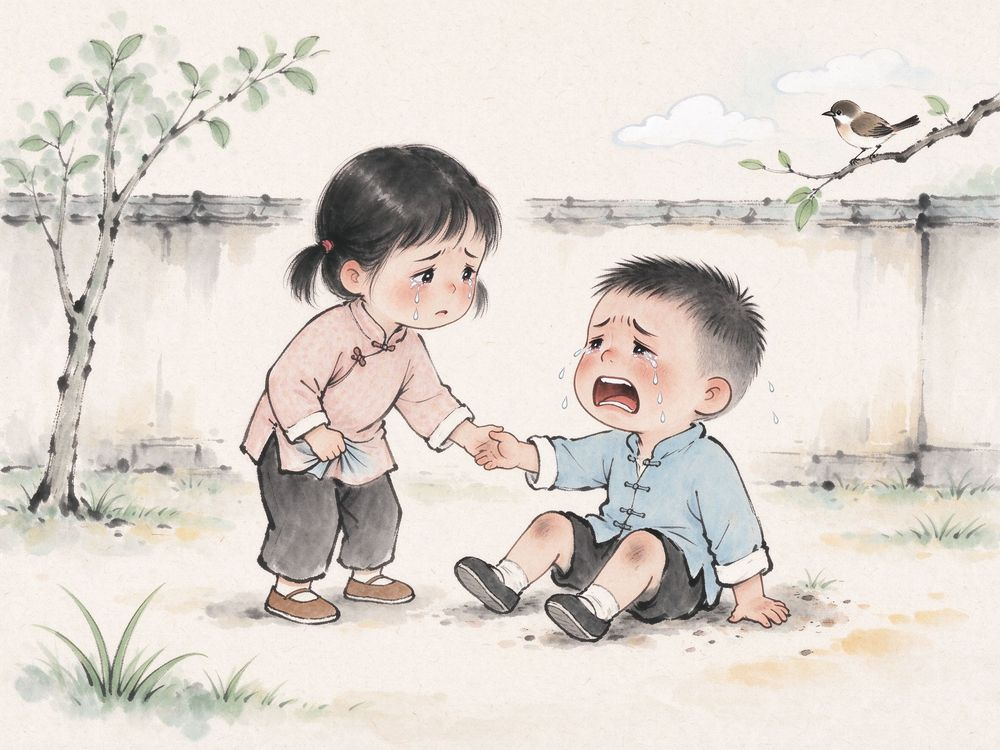
她没有受伤，可别人的疼，疼到了她心里。
她伸出一只手，要去拉他起来。另一只手，紧紧攥着自己的衣角。
这就是我们说的善良的种子：别人难过，我心里也跟着难过；别人需要，我想伸一伸手。它不用谁教，是每一个孩子生下来就带着的。
当然，善良不是叫我们委屈自己。好好吃饭、好好睡觉、冷了就穿衣、害怕了就找大人——把自己照顾好，也是顶重要的事。善良是：我照顾我自己，也看得见别人。
而如果为了自己开心，去抢别人的玩具、推倒别人、故意让别人疼，那就不是善良了。这一点，要记牢。
生下来就带着的四样宝贝
良知 · 自我意识 · 想象力 · 独立意志
自我意识
镜子里那个是我。
知道“我”和“别人”不一样。
成 长 小 启 示
- 先照顾好自己：吃饱、睡足、冷了就加衣，不舒服就告诉大人。
- 看见别人难过时，停一停，看看他的脸，想一想他的心情。
- 力所能及就伸一把手：递一张纸、扶一下、说一句“你还好吗”。
- 不为了自己开心去抢、去推、去让别人疼。
给 爸 爸 妈 妈 的 一 句 话
这一课不需要孩子背下“性本善”三个字的意思。请在真实场景里指给他看：他为别人掉眼泪的那一刻，轻轻说一句“你心里真软”。被看见的善，才会长大。
— 2 —
成人研学 · 古今汇观第一课 · 深度页
人之初，性本善
四端 · 良知 · 四大天赋 · 中西对照与存疑
一 · 字义与句读
“初”，《说文》训“始也，从刀从衣，裁衣之始”。本义是裁布的第一刀，是一个刹那的切口，不是一段流程。“始”则指一段历程的开端。“人之初”，落在生命脱离母体、独立呼吸的那一刻，是节点，不是阶段。
“性”，不是已成的德行，而是“生之谓性”的本然禀赋。孟子言性善，落点在“端”：恻隐、羞恶、辞让、是非，是四颗芽，不是四棵树。“善”在此不作道德成就解，而作可向善的潜能解。
故“人之初，性本善”不是“婴儿天生会行善”，而是：唯有人，天生带着长出自觉利他之善的禀赋。
二 · 四大天赋：这句经文的现代读法
若把这句经文拆成人心可验证的四重能力，恰好对应四种天赋，且它们有明确的发育次序——这正是“潜能”二字最实在的证据。
| 天赋 | 经典对应 | 发育节点 | 在句中的位置 |
|---|
| 良知 | 孟子四端之恻隐；舍勒“先于判断的道德感” | 新生儿即可观察原始情绪共情；先于语言与推理 | 善之“端”，本句的主词 |
| 自我意识 | 孟子“人禽之辨”；黑格尔自我意识需他者承认 | 镜像自我约 2–3 岁成型 | 划出“我／他”的边界，善才成为可选择的事 |
| 想象力 | 孟子“推恩”；现象学“共情需想象代入” | 心理理论 3–5 岁逐步成熟 | 把“他的疼”搬进“我的心里”，善由此及远 |
| 独立意志 | 康德：意志可自律于道德法则；儒家“为仁由己” | 与前三者协同后逐步成立 | 善从“会发生”变为“我选择”，责任在此 |
次序值得注意：良知最早，自我意识次之，想象力再次，意志最后。这意味着善在“能感受”上是先天的，在“能选择”上是后天的。婴儿的啼哭不是恶，只是尚未具备选择；两岁之后分得清人我，善恶的闸门才真正打开。
三 · 中西对照：三处可对话、两处须留界
可对话者一：亚里士多德。亚氏言人是“理性的动物”，动物有欲无断，人有欲亦有断；德性（aretē）非天生，由习惯养成。与孟子“端—扩充”结构可互证：禀赋提供可能，实践完成实现。
可对话者二：洛克与卢梭。洛克白板说与“习相远”同频：人心待经验书写。卢梭则言自然人本善、社会败坏之，恰与本句构成一组张力：善是本性，还是被文明磨损的本性？
可对话者三：演化人类学。亲缘共情在多种动物中可见，人类特异处在于可对无血缘的陌生人主动利他。若采此说，则“性善”可读为演化筛选出的合作倾向，而非形上本体。
须留界者一：不能把“性善”读成“人性本无恶”。荀子“性恶”所言之“性”是生物本能，顺之则争；孟子所言之“性”是向善之端。二者名同实异，强行调停会两头落空。
须留界者二：不能把良知直接等同道德判断。良知提供感应，判断需要学习与经验；感应敏而判断钝，仍会做错事。这是本句最容易被鸡汤化的一处。
存 疑 · 留 待 深 究
一、良知若是本具，为何仍需教化？是“遮蔽—去蔽”模型，还是“萌芽—养护”模型？二者对教育方法的推论并不相同。
二、自我意识既是“爱己”的起点，是否也是“分别—争夺”的源头？若如此，善的扩充是否必然伴随边界的加固？
三、独立意志同时向善与向恶开放。那么“性本善”究竟在描述事实，还是在给出一个应当的方向？——这一问，可能是全句最要紧处。
— 3 —
润泽少儿启蒙国学 · 三字经第 二 课
第 二 课
性相近，习相远。
xìng xiāng jìn xí xiāng yuǎn
先 ↓ 右列 再 ← 左列
古法竖排：自右而左，自上而下。先读右列「性相近」，再读左列「习相远」，每列从上往下。
近是起点挨得近，不是一样 · 习是天天泡的、天天练的 · 远是后来拉开了距离
少儿共读读给孩子听
上一课说的是我们生下来带着什么。这一课说的是，后来怎么长成了不一样的人。
两千多年前，墨子走过一家染坊。
师傅把一束雪白的丝浸进染缸，提出来，丝就变青了；再浸另一只缸，丝又变黄了。同是一束白丝，泡进什么颜色的水，就成什么颜色。墨子站在旁边看了很久，心里一动，叹了一口气说：染东西，真不能不谨慎啊。人也是这样。
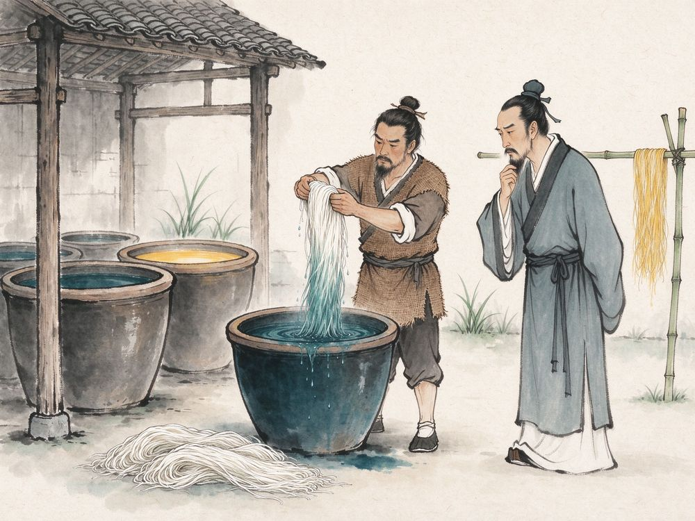
雪白的丝，泡进什么颜色的水，就成什么颜色。
再说一件更小的事，小到就在你身边。
你和谁坐一张桌子，下课和谁一起玩，回家听见大人在说什么，晚上看的是什么动画。这些事一天两天看不出什么，可它们像一缸一缸的水，天天把你泡在里头。泡得久了，你说话的口气、遇事的反应，都会悄悄变了颜色。
还有一件更奇妙的事。同一棵树上的叶子，看着一样，其实没有一片完全相同。人也这样。只是叶子的不同，是风、是光、是天生；人的不同，还多一样——你自己日复一日在做什么。
所以“习”有两个方向。一个是被染：泡进什么，就慢慢变成什么颜色。一个是自己练：写字、画画、跳舞，天天练，手上就长出本事来。
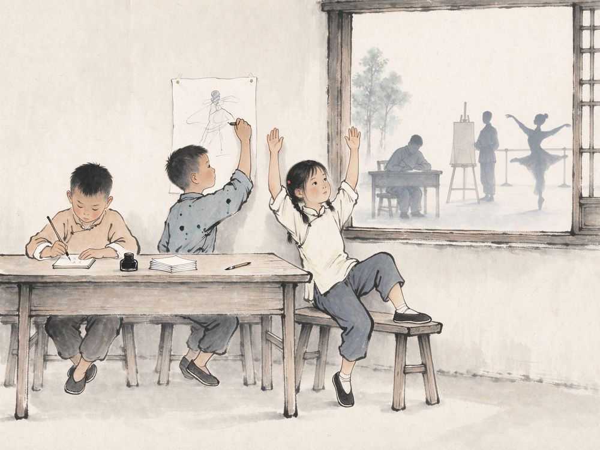
同一间教室，同一张桌子；多年以后，是三个不一样的人。
那要是泡的地方不好呢？你可以换。跟爱推人的孩子玩久了，你也想推人；那就走开，去找愿意分享的孩子。
能选自己泡在什么里头，是人很了不起的地方。这件事，从每天早上穿哪件衣服，就可以开始练。
被 染被 动
天天看见什么、听见什么、和谁在一处。你不一定察觉，颜色已经慢慢上来了。所以要挑一挑，自己泡在什么水里。
自 己 练主 动
想写字，就天天写一点；想画画，就天天画一点；想跳舞，就天天压一压腿。断断续续不成，天天练，才长本事。
成 长 小 启 示
- 每天想一想：我最近常和谁在一处？他让我更想学好，还是更想学坏？
- 想学一样东西，就天天练一点点，别断。本事是练出来的。
- 遇上不好的风气，可以走开，可以说不。换一个地方，不丢脸。
- 允许自己和别人不一样。不一样，不是不好。
给 爸 爸 妈 妈 的 一 句 话 · 附 选 择 力 练 习
这一课最好别讲道理，直接指给他看：他最近常和谁玩、学谁的口气、迷什么。看见好的染，就说一句“这个颜色好看”。孩子对“我被什么染着”有感觉了，这一课就成了一半。
另一半，是让他自己做主。从早上穿衣开始，把“今天穿什么”交给他，给他两个都行的选项：
“今天穿红裙子，还是蓝裙子？” “穿有帽子的，还是穿有小口袋的？”
三个要点：
① 两个都要真能穿，别拿一个他不能选的选项凑数，孩子一试就知道是假的；
② 他选完，就按他选的来，哪怕配色你觉得别扭；
③ 晚上随口回看一句：“今天这条蓝裙子，你自己选的，跑起来舒服吗？”让他把选择与结果连起来。
| 年龄 | 给几个选项 | 可选范围 |
|---|
| 2–3 岁 | 二选一 | 穿哪件、先吃哪样、走哪条路 |
| 4–5 岁 | 三选一，或自己配一套 | 配颜色、挑绘本、定周末半天做什么 |
| 6 岁以上 | 自己规划 | 一周里自己安排一件事的全程 |
— 4 —
成人研学 · 古今汇观第二课 · 深度页
性相近，习相远
出《论语·阳货》 · 孔孟并置 · 个体差异与分化 · 与独立意志的张力
一 · 字义与句读
“性相近也，习相远也”，出自《论语·阳货》，是孔子语。这一点必须点明：三字经开篇把孟子系的“性本善”与孔子此语接在一起，语气顺，但严格说不是同一命题。孔子只言“相近”，未言“本善”，留了余地；孟子才把善坐实为“四端”。
“性”在此近于“生之谓性”的本然禀赋，指人这一类的共性；“习”兼含习染与修习；“远”非空间距离，是分化。全句可作一句现代转写：
人在禀赋上大体相近，在分化上相去甚远。
二 · 孔孟并置而不混同
三字经的缝合，是教化文本的合理简化，不是学术命题。若把“相近”直接读成“相同”，则“习相远”无着力处；若把“相近”读成“本善”，则孔孟不分。
妥当的读法是：性提供一个大体相近的起点，习决定分化的方向与程度。孟子言“端”，是为这个起点给出内容；孔子言“相近”，是为这个起点留下余地。二者可并置，不必强合。
三 · 用词的精确度：分化、个体差异、个性
“远”若译作现代汉语，最贴的是分化（differentiation）：从同源到殊途的过程与结果。其次是个体差异（individual differences）：描述人与人之间稳定而可测的不同。不宜单用“个性”，因“个性”多指人格气质，装不下才艺、习惯、品行这类习得性差异。
“没有两片相同的叶子”是好的比喻，但须补一刀：叶子的不同多来自基因与微环境，人的不同还多一层——反复的自我选择与练习。这一刀补上，比喻才不至于把人推向决定论。
四 · 中西对照
洛克（白板说）：人心如白纸，经验书写其上。与“习相远”同频，但洛克低估了禀赋差异，与“相近”并不完全相容。
班杜拉（社会学习理论）：观察—模仿—强化。孩子不必亲历，看见榜样即习得。这为“染”提供了机制解释：染不是玄谈，是可观察的模仿链条。
同伴效应与镜像环境：群体规范对个体的塑造，常强于明言教导。这一条给“择邻”提供了现代注脚。
卢梭（相反假设）：自然人本善，社会败坏之。若采此说，“习相远”不是中性的分化，而是有方向的堕落。这是本句最值得对照的张力：习究竟只是“变不同”，还是“变坏”？
行为遗传学：禀赋差异确有生物学基础，但基因表达依赖环境。“基因—环境交互”意味着“相近”从来不是“相同”，“相远”也从来不是纯环境所致。
五 · 与上一课的张力
上一课立了「独立意志」：人可自主选择。这一课却近乎说：你被什么泡着，就成什么。两者如何并存？
我的处理是：习染决定默认值，意志决定是否改默认值。
默认值很硬：家庭语言、同伴风气、日常所见，几乎替你写好了大半脚本。意志的用处不在“凭空空转”，而在三件具体的事——换环境、择同伴、改重复。这也是把“择邻”从道德训诫翻译成可操作的能力：须先能识别什么样的水土在养你。
存 疑 · 留 待 深 究
一、天性与习染的权重，能否真正分离？行为遗传学的“缺失亲和”难题至今未解，本句的经验智慧可能先于科学，也可能被科学修正。
二、“择邻”是教育智慧，还是阶层焦虑的古典表达？孟母三迁成立的前提是“可迁”。不可迁者怎么办——这一问，比训诫更要紧。
三、若习能改人，“本性”还剩下什么？是只剩一个“可塑性”，还是仍有一个不可让渡的内核？这决定我们把教育当“塑造”，还是当“唤醒”。
— 5 —
润泽少儿启蒙国学 · 三字经第 三 课
第 三 课
苟不教，性乃迁。
gǒu bù jiào xìng nǎi qiān
先 ↓ 右列 再 ← 左列
古法竖排：自右而左，自上而下。先读右列「苟不教」，再读左列「性乃迁」，每列从上往下。
苟是如果 · 教是上面做、下面学 · 迁是往下走，不是搬家
少儿共读读给孩子听
上一课说，天天泡在什么里头，就成什么颜色。这一课说更难的一件事：要是没人教，那点好底子，会自己跑掉。
这句话是反着说的。说不教，是为了说：得教。
古时候有个人叫弈秋，是全国下棋最好的人。他收了两个徒弟，一起教。
一个徒弟坐得直直的，眼睛盯着棋盘，弈秋说什么，他都听进去。另一个也坐在那儿，可心里想的是：天上要是有天鹅飞过来，我就拿弓把它射下来。眼睛在看棋盘，心已经飞到窗外去了。
两个人同一个老师、同一张桌子、同一段时间。学到最后，差得很远。是因为第二个笨吗？不是，是他的心思根本不在棋上。
 同一个老师，同一张桌子；一个在听，一个在望天。
同一个老师，同一张桌子；一个在听，一个在望天。
这样的事，你也许有过：上课上到一半，忽然想起放学要吃什么；绘本翻到第三页，眼睛还在，人已经走了。这不怪你，是心跑了。心一跑，教的话就落不进心里，等于没教。
还有一件事，孟子说得更直白。
天底下最容易长的东西，比如豆苗：晒它一天太阳，再冻它十天，没有能活的。
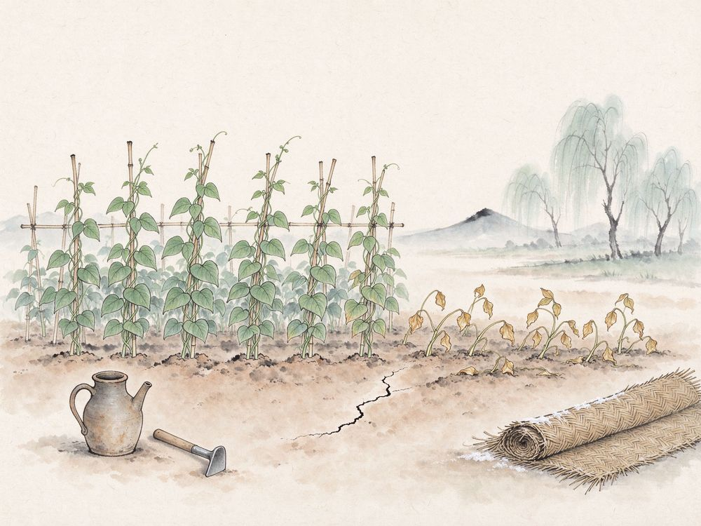
浇一天，旱十天；再容易长的苗，也长不成。
学东西也是这样。练三天，停十天；读两页，搁半个月。每次重新开始，都像从冻僵的地方再发芽，长不起来。
所以这一课的话，一半给大人——你要教；一半给孩子——你要肯受。教的人肯教，学的人肯听，这两半合上，才叫“教”。
心 跑 了人 在 心 不 在
眼睛在看，心已经走了。老师讲的进不去，讲了也白讲。这一半，要靠自己把心拉回来。
断 断 续 续学 一 阵 停 很 久
刚冒头又冻回去，每次都从零开始。宁可每天十分钟，不要一天两小时、然后停半个月。
成 长 小 启 示
- 上课时心跑了，就轻轻拉回来。不用骂自己，拉回来就好。
- 一次只做一件事：写字就写字，玩就玩。
- 学一样东西，宁可每天十分钟，不要一天两小时、然后停半个月。
- 断了不要紧，接上就行。断了不接，才叫“迁”。
给 爸 爸 妈 妈 的 一 句 话 · 教 而 不 继 三 件 事
这一课最容易被讲成“你要好好学”，孩子听了只会关耳朵。换三个动作试试。
一、固定十分钟。每天同一时间、同一张桌子、做同一件事。短，但不能断——这比周末补两小时有用。
二、让他回讲一遍。教完别问“懂了吗”，让他用自己的话讲给你听；讲不出来，就是心当时跑了。
三、断了就接，别罚。停了一周，不要说“你看你又不坚持”，只说“今天我们接上”。断不是罪，断而不接才是。
— 6 —
成人研学 · 古今汇观第三课 · 深度页
苟不教，性乃迁
假设句的反证 · 弈秋与一暴十寒皆出《告子上》 · 端与成 · 教的双向
一 · 字义与句读
“苟”作“若、假使”解，句首假设连词，无实义。“教”，《说文》训“上所施，下所效也”——上施下效，故“教”天然含“示范”一义，非仅言说。“迁”，《说文·辵部》训“登也”，本义为移而上；段玉裁谓引申为移易。此处承“善”而言，方向实为下移，是字义的反用。全句可转写为：
倘若不加教化，那起初相近的善端，便会移易下坠。
句法是反证
：不直说“当教”，先说“不教则如何”，把结论留给听者自己得出。同书“子不学，非所宜”“幼不学，老何为”，皆同此式。
二 · 出处与语境
“弈秋”与“一暴十寒”两喻，俱出《孟子·告子上》。原文语境并非论教化，而是论专心与熟仁：“一日暴之，十日寒之，未有能生者也”之后紧接“吾见亦罕矣，吾退而寒之者至矣”——孟子说的是自己与君王相见日少、被小人“寒之”日多的处境。三字经取此二喻论文教，是借用而非原义，须点明。
同篇尚有“五谷者，种之美者也；苟为不熟，不如荑稗。夫仁亦在乎熟之而已矣”——此句才是本课真正的理论支点：善端如种，熟则成谷，不熟则不如稗草。
三 · 中西对照
洛克《教育漫话》：心如白纸，教化书写其上；德性与习惯靠反复练习养成，非天生自带。与“苟不教”同向。
康德：人是唯一需要教育的动物。教育把人从“自然人”引向“道德人”；不教，则只有驯顺与野性，无自由的人格。
维果茨基：最近发展区与脚手架。教不是灌，是在孩子够得着的地方托一把；无托则够不着，有托则向上。
卢梭（反向）：过早、过密的教化会扭曲自然。若采此说，“苟不教”之“教”须限定为顺性之教，否则教本身即是“迁”的另一个原因。
反例：伤仲永（王安石）：五岁能诗，父挈之环谒于邑人，不使学；十二三岁，诗已不能称前时之闻；又七年，泯然众人。这是“天资不教则迁”的极端案例，与“性相近”构成强度上的对照：相近的性，也可被不教拉到极远处。
四 · 与前两课的张力
第一课言性本善，第三课言不教则迁。若性本善，何须教？这是全课最要紧的一问，须正面作答：
善是端，不是成。
孟子自己说得很清楚：“人皆可以为尧舜”，又说“五谷不熟，不如荑稗”。端在，只是“可以为”；成不成，看熟不熟。故“性本善”是起点判断，“苟不教，性乃迁”是过程判断，二者不矛盾，反倒是同一件事的两半：正因为端可成可萎，教化才有意义。
与第二课的接口：第二课说“习相远”，讲分化；第三课说“苟不教”，讲下坠。分化是中性的，可上可下；不教之迁，是有方向的。
另须补一层：教是双向的。“上所施，下所效”——有施有效才成教。弈秋二徒同师、同席、同时，而成效迥异，可见“教”不只在施者，也在受者。此义若不点出，本句极易沦为单方面的责难。
存 疑 · 留 待 深 究
一、“教”的边界在哪里？教化与规训只隔一层：前者养其自主，后者塑其顺从。此句未加限定，容易滑向“不听话就是没教好”。
二、“迁”可逆否？滑下去的人能否回来？若不可逆，“教”当及早；若可逆，“教”当不弃。这决定教育的时间观，也决定我们对“晚成者”的态度。
三、若善端需养方能成，“性善”究竟是事实描述，还是价值召唤？孟子把它说成事实，康德把它说成应然。这一分歧，可能是全课最难合的一处。
— 7 —
润泽少儿启蒙国学 · 三字经第 四 课
第 四 课
教之道，贵以专。
jiào zhī dào guì yǐ zhuān
先 ↓ 右列 再 ← 左列
古法竖排：自右而左，自上而下。先读右列「教之道」，再读左列「贵以专」，每列从上往下。
道是路、是方法 · 贵是以…为贵 · 专是一件事走到底
少儿共读读给孩子听
上一课说，没人教会滑下去。这一课说，教，还得顺着一条路、只走一条路。
孔子年轻时学琴，老师是师襄子。
一首曲子，他练了十天，没有换下一首。师襄子说：可以学新的了。孔子说：我曲子是会弹了，可它的节奏我还没摸透。
又练了一些日子，师襄子说：节奏也抓住了，可以往下学了。孔子说：还没有，我还没懂这首曲子里的人心里在想什么。
再练。练到有一天，他手在琴上，忽然沉默下来，像看见一个人站在他面前；抬头远望，神情安然。他说：我看见了，写这首曲子的是个什么样的人，我知道了。
 一首曲子，练到能看见写曲的人，才肯学下一首。
一首曲子，练到能看见写曲的人，才肯学下一首。
这就是“专”：不是练得多，是一件事没到底，不换下一件。
荀子讲过一个反面的例子。有一种小兽，会五样本事：能飞，飞不过屋顶；能爬，爬不到树梢；能游，渡不过河沟；能打洞，洞藏不住身子；能跑，跑不过人。五样都会一点，五样都不成。
写字也是这样。一个字写一遍就换下一个，写出来都不像；写一个字，写到手腕知道它该怎么拐、怎么收，才叫会写。
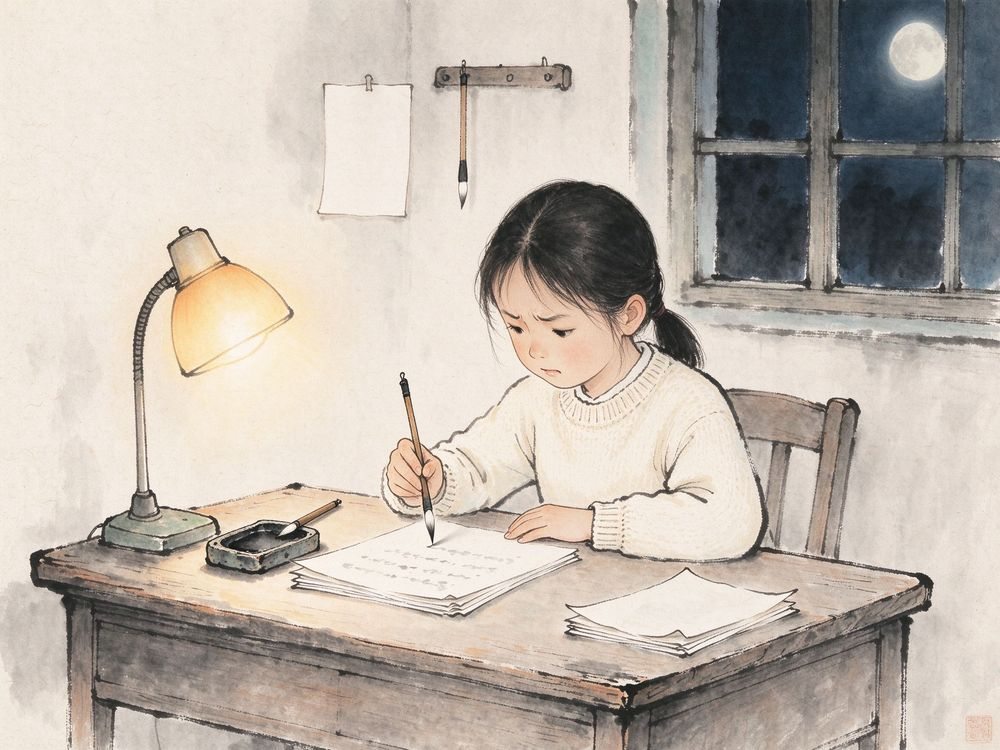
一遍不算会；写到手上的劲儿记住了，才算。
所以“专”有两层：一是一次只做一件；二是一件做到能自己来，再换下一件。
专一 条 路 走 到 底
一首曲子练到懂、一个字写到熟、一件事做到能自己做。慢一点，但走到底，手上就长出真东西。
杂样 样 会 一 点
这个摸三天，那个碰两天。每样都在门口打转，看着热闹，一件也拿不出手。
成 长 小 启 示
- 一次只开一件事。写字时不听故事，听故事时不写字。
- 练到能自己讲出来、自己弹一遍，才算过了一关，再换下一个。
- 不贪多。会五样都差一点，不如一样拿得出手。
- 专不是死磕。练到烦了，歇一会儿，再回来守这一件事。
给 爸 爸 妈 妈 的 一 句 话 · 专 的 三 招
“贵以专”不是让孩子只学一样，是让他一次只走一条路。三招最实用。
一、同一时段只开一个。这学期要练的，只挑一件事。琴、棋、画、字都在，孩子就都在门口。
二、用“能自己来”当过关线。能自己弹完一整首、写出一整页不用你在旁边盯，才算过。过了再添新的。
三、别用“坚持”压他，用“再走一步”。孩子卡住时，不说“你要坚持”，说“我们再走一步看看”。专是走到底，不是硬扛。
— 8 —
成人研学 · 古今汇观第四课 · 深度页
教之道，贵以专
蒙书自撰的教训 · 孔子学琴四进 · 荀子五技而穷 · 专与广的张力
一 · 字义与句读
“道”，路也，引申为方法、门径。“贵”，以…为贵，形容词的意动用法。“专”，繁体作“專”，常见训释以为本义指纺专（收丝之器），旋转不已而专于一，故引申为专一、独任。句读为“教之道，贵以专”：教的方法，贵在专一。
教无他法，贵在不杂；不杂，则一路可到底。
二 · 出处
此句与前二句不同：它没有直接的经典出处，是蒙书编者撮取群书而成的教训，不是某一句经文的摘录。这一点须诚实交代，不宜伪托。
其思想脉络可指三处：《荀子·劝学》“学也者，固学一之也……梧鼠五技而穷”；《礼记·学记》“时教必有正业，退息必有居学”；《论语·述而》“学而不厌”。三字经此句，是这三条的浓缩。
“梧鼠五技而穷”即少儿页所用之典：能飞不能过屋，能缘不能穷木，能游不能渡谷，能穴不能掩身，能走不能先人。五技而无一精，故穷。
三 · 中西对照
荀子：以“一”对“五技”。专不是能力之少，是能力之成；博而无一成，反不如一而能成。
蒙台梭利：儿童有“工作周期”（work cycle），一段完整、不被打断的专注，本身就是发展。打断一次，等于让专注重来。
埃里克森（刻意练习）：专一重复＋即时反馈＋略超现有水平。此说为“贵以专”提供了现代机制：专之所以有效，不在时间长短，在反馈是否闭合。
心流（Csikszentmihalyi）：难度与能力相匹时，人自会沉入。孩子坐不住，往往不是不专，是难度不合。
怀特海《教育的目的》：要教得少而精，凡教必彻底。“少而精”与“贵以专”几乎是同一句话的两种说法。
反向：通识之辩。古典人文教育以“博”为尚，近代专业化以“专”为能。此句站在“专”的一边，但未言“何时可专、专到何处为止”。
四 · 与前课的张力
第三课讲“教而不继”，是时间上断；本课讲“贵以专”，是方向上散。二者互补：不继者，续之；不专者，收之。合起来才是完整的教学法——同一时段，只走一条路；这条路，不能断。
与第二课“习相远”的接口：练习之所以能成“习”，前提是专。杂而无专，染上的只是浅色；专而后熟，才成底色。
须补一层辨析：“专”不等于“早定终身”。此句说的是教法之专，不是人生方向之专。少儿期广见而约取，与“一次只走一条路”并不冲突——前者是视野，后者是手上的功。
存 疑 · 留 待 深 究
一、专与广如何配比？儿童期兴趣未定，过早收窄是否伤其可能？若“广见”也是教的一部分，那“贵以专”当限定在“每一时段”，而非“每一人生”。
二、“贵以专”是方法判断，还是价值判断？若只是方法，则可被更有效的方法取代；若是价值，则须回答：专本身何以可贵。
三、专的代价：专于一艺者，是否易失于偏？孔子学琴能“得其为人”，说明专可通于全人；但现实中更多是专而窄。此一分别，教者不可不知。
— 9 —
润泽少儿启蒙国学 · 三字经第 五 课
第 五 课
昔孟母，择邻处。
子不学，断机杼。
xī mèng mǔ zé lín chǔ zǐ bù xué duàn jī zhù
先 ↓ 右列 再 ← 左列
古法竖排，两联四列，顺次读：右列 → 左列 → 右列 → 左列，每列自上而下。
择是挑 · 邻是住的地方、身边的人 · 杼是织布机上的梭子
少儿共读读给孩子听
上一课说，教要专。这一课说，教还得会挑地方——孩子泡在什么里头，是件大事。
很久以前，有一位孟妈妈，带着小小的儿子过日子。
起初他们住在墓地旁边。小孟子天天看着人家抬棺、送葬、哭拜，回家就学起来，用小手比划着哭丧的样子。孟妈妈看见了，说：这地方不能住了。于是搬家。
搬到市集边上。小孟子又天天看商人吆喝、讨价、夸自己的货，回家也学着叫卖。孟妈妈又说：这地方也不能住了。再搬。
这一次，搬到了学宫旁边。每天听见的是读书声，看见的是孩子们互相作揖、先生讲礼。小孟子也跟着作揖、跟着念书。孟妈妈这才说：这里可以住了。
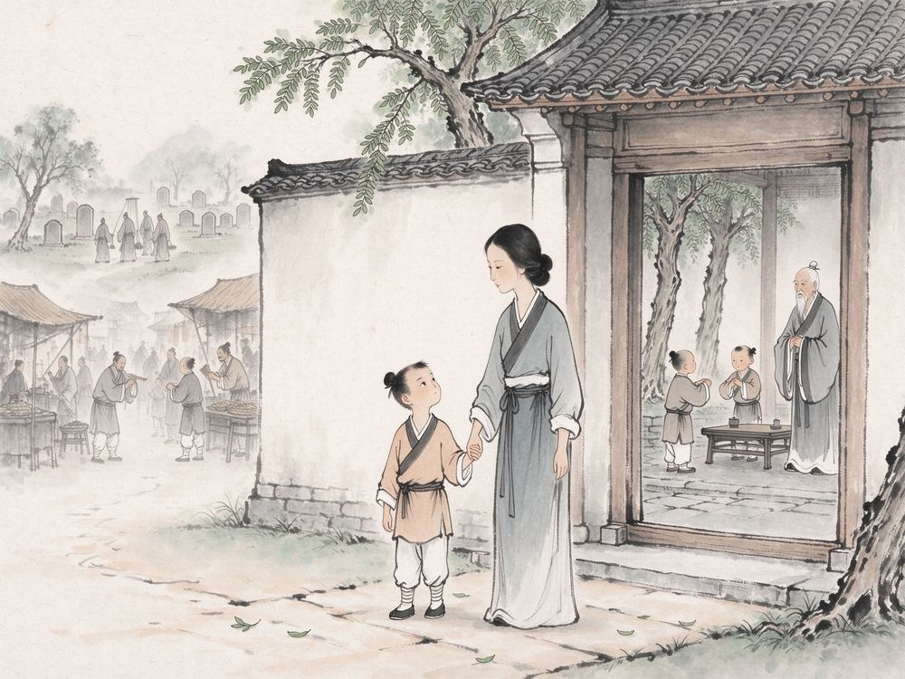
搬了三次，才搬到听得见读书声的地方。
可孩子总有犯懒的时候。有一阵，小孟子读书读烦了，偷偷跑回家。
孟妈妈没有骂他。她把正在织的布拿过来，当着儿子的面，一刀把绷紧的线割断。布一下子散了，半匹织好的布成了乱线。
她说：你读书读到一半停下来，就跟这匹布一样——线断了，接不上，前面织的全废了。
 一刀断布，半匹白织；学也怕断在半处。
一刀断布，半匹白织；学也怕断在半处。
小孟子站在那里，看着散下来的线，一句话也说不出来。从那以后，他再没有半路跑回家。
这个孩子，后来成了孟子。
择 邻挑 一 个 好 地 方
身边的人、听得见的话、天天看见的事，都在悄悄教你。挑不了全部，就先挑离你最近的那几样。
断 织不 要 断 在 半 处
布断在半处，前面白织；学断在半处，前面白学。宁可慢，不要断。
成 长 小 启 示
- 看看你天天和谁在一处。让你更想学好的，多待一会儿。
- 换不了地方，就换一小块：换一个座位、换一个玩伴、换一段睡前时间。
- 一件事学到一半想放，先想一想：前面那些功夫，是不是白费了。
- 真断了，也别怕。把线接回来，接着织。
给 爸 爸 妈 妈 的 一 句 话 · 择 邻 的 三 个 做 法
“择邻”不是非要搬家，是替孩子挑他每天真正接触到的那几样。
一、挑“最近的三样”。同桌、常玩的伙伴、睡前那半小时。这三样改一样，胜过搬一次家。
二、不贬低旧邻。不说“他们家孩子不好”，只说“我们去找更合适的地方”。孩子学的是你的判断，不是你的嫌弃。
三、要断的时候，别用羞辱。孟母断的是布，不是孩子。想让他停一停，就说清代价；说完，把线接上，一起织。
— 10 —
成人研学 · 古今汇观第五课 · 深度页
昔孟母，择邻处；子不学，断机杼
《列女传》叙事 · 择处的可迁性 · 断机的教育伦理 · 环境与意志
一 · 字义与句读
“择”，拣选。“处”，居处、所在，读 chǔ。“机杼”，织机与梭，代指织事；“断机杼”即割断机上的经线，使织作中断。“子不学”，主语是孟子，非泛言。“断机杼”不是毁物泄愤，是一次以可见之断，喻不可见之断的现场教学。
二 · 史料层级
此二事出刘向《列女传·母仪传·邹孟轲母》，汉人追述，非战国同时代实录；《韩诗外传》亦有相近记载。作为教化叙事，它有整理与美化的可能，用作教例可以，用作史实须标明层级。
另须分清：三字经把“择邻”与“断机”并作一课，是编者的裁剪；在《列女传》原文中，二者分属不同阶段，三迁在前，断机在后（孟子已就学而中途废学）。并作一课，便于童子记诵，但时间线被压缩了。
三 · 中西对照
荀子：“君子居必择乡，游必就士，所以防邪僻而近中正也。”（《劝学》）此语为“择邻”提供了先秦的理论表述：择处不是势利，是防邪近正。
颜之推《颜氏家训》：“与善人居，如入芝兰之室，久而自芳也；与恶人居，如入鲍鱼之肆，久而自臭也。”——习染的嗅觉隐喻，与第二课互文。
邻里效应研究（Chetty 等）：儿童期迁往低贫困社区，成年后向上流动概率显著上升。这为“择邻”提供了现代计量证据，也划出了它的边界：迁得动，才谈得上择。
布迪厄（文化资本）：家庭传递的不只是钱财，还有语言方式、趣味与见识。择邻之所择，很多时候择的是这一层。
反向：卢梭与“顺性”。若环境即教育，则教育近乎宿命；卢梭提醒，过度的环境设计会把孩子养成“被安排的人”。择处之度，在于给条件，不代选择。
四 · 与前四课的张力
第一课立“性本善”，第二课言“习相远”，第三课戒“不教则迁”，第四课立“贵以专”。到这第五课，抽象的“教”终于落到具体的空间与具体的人：教在哪里发生，和谁一起发生。
“择邻”与第二课的“习染”是一体两面：习染是机制，择邻是对机制的主动应对。“断机”与第三课的“教而不继”亦是一体两面：不继是慢慢松掉，断机是当面截断——一个是无声的下坠，一个是可见的警醒。
但本课也埋着一个风险：若教育成败系于择处，人的意志还剩多少？与第一课的“独立意志”对照，须答一句：择处本身，正是意志的第一次使用——不是改变环境的能力，而是选择环境的能力。
存 疑 · 留 待 深 究
一、“择邻”的前提是“可迁”。迁不动的人怎么办？把择处讲成美德，容易掩盖结构性的不平等。这一问，比故事本身更要紧。
二、“断机杼”作为教育手段，其效力来自震撼还是来自羞惭？前者启悟，后者伤人。二者界限极细，孟母断的是布、说的是理，分寸在此；后世仿效者，多半只学到“断”。
三、孟母叙事的史料层级：汉人追述的贤母典范，是否被后世不断加饰？我们用的究竟是孟子的事迹，还是汉代对“良母”的想象？此一问，决定本课该当史读，还是当训读。
— 11 —
润泽少儿启蒙国学 · 三字经第六课 · 窦燕山
第 六 课
窦燕山，有义方
dòu yàn shān yǒu yì fāng
先 ↓ 右列 再 ← 左列
古法竖排：自右而左，自上而下。先读右列「窦燕山」，再读左列「有义方」，每列从上往下。
窦是姓 · 燕山是他住的地方 · 义方是教孩子的正道
少儿共读读给孩子听
上一课，孟妈妈挑地方。这一课换一位父亲——地方他挑不了，他先把自己立住了。
很久以前，有个姓窦的人，住在燕山边上，人们就叫他窦燕山。
他年轻的时候，心眼小。做事先算自己得多少，别人难不难，他不太看。家里有些钱，可邻里提起他，多半摇头。
后来有一年，他心里忽然翻了个个儿。夜里梦见先人责备他，醒来一身汗。他没有先去怪谁，先问了自己一句：这几十年，我都干了什么？
从那以后，他改了。谁家揭不开锅，他送米；谁家孩子没钱念书，他出钱；借了人家的，一定还；说过的话，一定做到。
 他自己先坐稳了，孩子才会坐稳。
他自己先坐稳了，孩子才会坐稳。
他教五个儿子，也不是天天盯着催。他先立规矩，然后自己做给他们看：早起、守信、不欺负人、见人难处搭一把手。
后来，五个儿子先后都考中了进士。人们把这件事叫“五子登科”。
 大人先安静下来，孩子才安静得下来。
大人先安静下来，孩子才安静得下来。
这件事稀奇的地方，不是五个都考中。是这家里有一种稳稳的气：父亲不急不吼，孩子也就不慌不乱。
所以“义方”不是一叠厚厚的家规。它是大人先站稳，孩子照着长。
向 外 责 罚盯 着 错 处
盯着孩子做错的地方，不停说教；规矩只用来管孩子。
义 方 身 教先 端 正 自 己
先端正自己，日常行止就是范本；正道是一家人一起守的底色。
成 长 小 启 示
- 想让别人学好，先做给他看：你怎么待人，孩子就怎么学。
- 家里的话要算数。说过的事，做到。
- 看见别人难，能帮就帮一点，不用等有钱。
- 不吼不催的时候，家里的空气就稳了。
给 爸 爸 妈 妈 的 一 句 话 · 义 方 不 在 苛 责 ， 在 自 持
“有义方”不是严厉管教，是把自己先立住。窦燕山的转折，起点在修自己，不在管孩子。
一、稳住自己的情绪。你稳定平和，就是家里最重要的“方”。
二、言行一致。要求孩子做到的，自己先尽量做到。
三、排好优先级。品行宽厚在前，分数学业在后。
接上选择力练习：有义方托底，仍然给孩子自主选择的空间——规矩托底，选择生长。
— 12 —
成人研学 · 古今汇观第六课 · 深度页
窦燕山，有义方
《宋史·窦仪传》· 范仲淹《窦谏议录》 ｜ 义＝合宜 ｜ 方＝恒常法度 ｜ 身教与家范
一 · 字义与句读
“窦燕山”，本名窦禹钧，五代后周时人，家居渔阳（今天津蓟州一带），因所居近燕山，人称窦燕山。“义”，宜也（《中庸》“义者宜也”），行事合于当然之则；“方”，法度、轨则。
全句：窦禹钧立身持正，教子有合于正道的恒常法度。“义”落在“合宜”，不落在“严厉”——这是读通此句的第一道关口。
二 · 命题考辨
出处须分层：《宋史·窦仪传》载其五子仪、俨、侃、偁、僖相继进士及第，此为史传可据者；济人阴德、梦兆延寿诸事，主要见于范仲淹《窦谏议录》，属宋人劝善叙事，带报应色彩，宜作训读，不宜作实录。
常见误解有二。其一，把“义方”读成“家规森严、棍棒之下”——这是后世家训文本强化的读法，非本句本义。其二，把“五子登科”当作教法说明书——它是结果叙事，不是方法清单；由果推因，最容易把偶然读成必然。
“义方”的重心在施教者自身：先有其人，后有其法。故本句与下句“教五子，名俱扬”是一事之因果，不可割开单读。
三 · 中西对照
孔子：“其身正，不令而行；其身不正，虽令不从。”（《论语·子路》）——身教先于言教，与本句一脉。
荀子：“学莫便乎近其人。”（《劝学》）——教化之效，多在近处观摹，而非远处理论。
阿德勒（个体心理学）：家庭氛围与父母的人格状态，对孩子的影响常大于直接说教。
蒙台梭利：成人是儿童环境的一部分；成人的内在安宁，是儿童心智安定的前提。
反向（布迪厄）：身教传递的不只是德行，还有趣味、语言与阶层惯习。示范越有效，复制越彻底——这是“义方”的阴影面，须一并看见。
四 · 与前后课的张力
与第五课孟母并置：择处是外缘，义方是内本。环境可迁则迁之；迁不动，教化者自身就成了那个“场域”。两课咬合处正在此：孟母向外求，窦氏向内立。
与第四课“贵以专”对读：专是学习者向内收摄，义方是施教者向外立基。一收一立，教与学各守其位。
与第一课四大天赋相连：良知的滋养，最优先来自长期稳定的身教，而非口头道理。道理可以背，样子只能看。
存 疑 · 留 待 深 究
一、“义方”的边界在哪？稳定底色与固化枷锁只隔一层纸：稳定的标准给人安全感，僵化的标准压掉独立意志。分寸如何量化，本句未答。
二、身教感染力越强，施教者的认知局限也被放大得越彻底。若“方”本身有偏，孩子学得越像，偏得越深。此问触到身教的根。
三、持续自持对普通人是高门槛。家长自身烦恼深重、精力耗竭时，“义方”是否还有可行的低配路径？还是说，这句话只对有余力者成立？
— 13 —
润泽少儿启蒙国学 · 三字经第七课 · 教五子
第 七 课
教五子，名俱扬
jiào wǔ zǐ míng jù yáng
先 ↓ 右列 再 ← 左列
古法竖排：自右而左，自上而下。先读右列「教五子」，再读左列「名俱扬」，每列从上往下。
教是扶上正道 · 俱是一同、全都 · 扬是被看见、被称道
少儿共读读给孩子听
上一课讲窦燕山怎么教。这一句讲结果——结果里，藏着一个最容易看错的坑。
窦燕山把五个儿子教大成人。后来，五个孩子都有学问、有品行，一个一个都被人称道。
人们说起这一家，就讲“五子登科”。
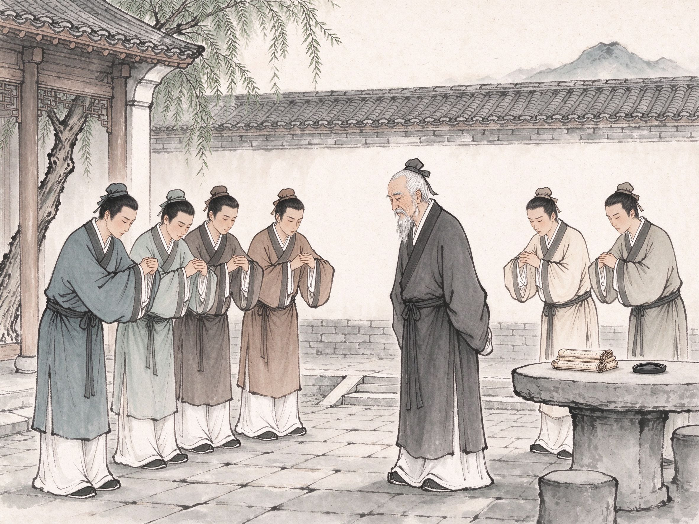
一院孩子，慢慢长成了，不是一下子。
但有一件事要先说清楚：他不是为了让人夸，才去教孩子的。
他先把自己修好，再把家里的规矩立稳。孩子一天一天跟着长，名声是后来别人给的，不是一开始就要的。
想一想：如果读书只是为了被夸，那没人夸的时候，还读不读？如果学做好人只是为了被看见，那没人看见的时候，还做不做？
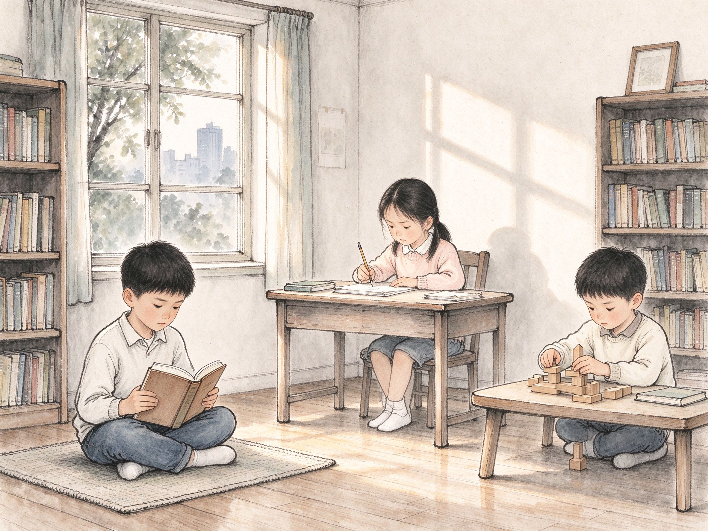
没人围观的时候，也照样做自己的事。
名声像影子。人站正了，影子自然跟着来；人要是一心追影子，反而会站歪。
所以这一句的重点，不在“扬”，在“俱”——是五个孩子各自长成了自己的样子，而不是被逼成同一个样子。
求 名 为 先做 给 人 看
做好事情只为得到称赞、被人看见；夸赞一停，就容易懈怠。
修 本 为 先美 名 自 来
立身修学是本分，美名只是自然带来的结果；无人看见也依旧踏实。
成 长 小 启 示
- 好好读书、善待他人，最先安顿的是自己的心。
- 别人的夸奖是礼物，不是做事的目的。
- 同一个家里，每个人也会走出自己的路。
- 不必和别人比谁更出名，守住自己的本心就好。
给 爸 爸 妈 妈 的 一 句 话 · 别 把 “ 出 名 ” 当 成 教 育 目 标
“名俱扬”不是养育的 KPI。一旦把它当成绩单，孩子学的就是表演。
一、夸行为，不夸标签。说“你今天很有耐心”，少说“你真厉害、以后要出名”。
二、接纳不同节奏。同样的家风，五个孩子也各有禀赋，不必要求人人达到同一高度。
三、分清荣耀与虚荣。德行换来的敬重，和刻意博取的目光，不是一回事。
接上选择力练习：根基稳住，孩子可以自主选择方向，不必为满足外界期待而活。
— 14 —
成人研学 · 古今汇观第七课 · 深度页
教五子，名俱扬
承上句而为一事之果 ｜ 俱＝皆 ｜ 扬＝显 ｜ 名者，德之影
一 · 字义与句读
“俱”，皆也，全也；“扬”，显也，谓见称于世。全句：（窦禹钧）教五子，德行才学兼备，美名一同显于当世。
此句与上句“窦燕山，有义方”本为一事之因果，蒙书断作两句，便于童子记诵；释义时须合读，否则“教”与“名”之间容易读成买卖关系。
二 · 命题考辨
蒙书以“五子俱扬”为义方之证。证则证矣，但由果证因最易生弊：把“扬名”暗暗升格为教化目的。义理上，名是德之影，不是德本身；影随形生，不可倒果为因。
孔子于此本有两说，正可互勘：“君子疾没世而名不称焉”（《论语·卫灵公》）——重名之实；“不患人之不己知”（《学而》）——不患名之虚。两说并置，方见分寸：可求名实相称，不可求虚声过实。
又须辨“俱”字：五子同受一家之教，而各有禀赋、各成其材。若把“俱扬”读成“个个一样好”，则教化为模具；读成“各自成材、皆有其名”，才近原意。
三 · 中西对照
《左传》三不朽：立德、立功、立言。名之所以可传，因其附于德业之后，非独立可求之物。
顾炎武《日知录·名教》：名之所在，廉耻存焉。适度的名声约束，是社会教化的骨架——全无名心，未必是善。
阿德勒：追求优越有两条路——建设性的成长，或单纯博取他人认可。后者易成虚荣人格，前者才生根。
海德格尔：“常人”（das Man）的公共意见支配日常此在。名声多是常人的声音；据以定自我价值，等于把“我是谁”交给旁人代答。
反向：完全不在意名声，也易滑向无顾忌。名教既可成枷锁，也可成堤防——取舍在于是否以名实相称为准。
四 · 与前后课的张力
第六课讲施教者自持、立义方；本课呈现教化之后的外在结果。两课合看，才是完整的“教—成”链条。
与第五课对读：孟母所虑在“防懈怠、择环境”，窦氏父子所显在“身教扎根、名声何来”。一防其下坠，一观其上升。
与第一课四大天赋相连：良知是内在根基，名声是外在反馈。以反馈代替根基，是把镜子当饭吃——本课最要守住的一条界线。
存 疑 · 留 待 深 究
一、若教化的结果并未“扬名”，是否就算失败？平凡安静的成长，算不算圆满？此问逼着本课交出它的价值标准。
二、“名俱扬”在代代传讲中，极易变成对孩子的隐性压力——必须优秀，才配被爱。这一转，是蒙书流传中的真实代价。
三、同一家教，为何有人成德显扬，有人依旧沉沦？教化之外，个体意志的权重如何衡量？若答不出，教化就近乎宿命论。
— 15 —
润泽少儿启蒙国学 · 三字经第八课 · 养不教
第 八 课
养不教，父之过
yǎng bù jiào fù zhī guò
先 ↓ 右列 再 ← 左列
古法竖排：自右而左，自上而下。先读右列「养不教」，再读左列「父之过」，每列从上往下。
养是给吃给穿 · 教是教他做人 · 过是该做而没做的疏漏
少儿共读读给孩子听
上一课是正面：窦家养而兼教。这一句反过来，说一句不太好听的话。
一个孩子生下来，先要有人喂他、抱他、给他穿衣、半夜起来看看他冷不冷。这是“养”。
可光有这些，还不够。
孩子饿了有人给饭，哭了有人哄，摔了有人扶——可没有人告诉他：抢别人的东西不对，说谎会让人伤心，生气了可以好好说，不用动手。
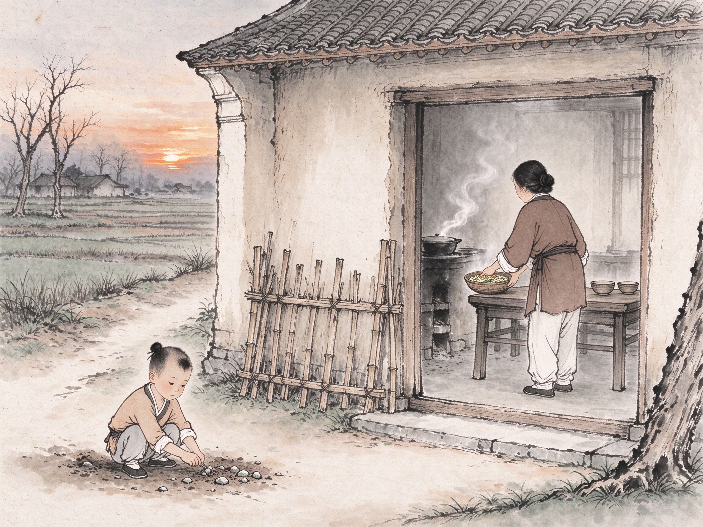
饭端上了桌，孩子却在门外一个人玩，没人告诉他什么该、什么不该。
养，像给一棵小苗浇水；教，是把它挪到有光的地方，告诉它该往哪儿长。
只浇水，不引路，苗也会长。可它往哪儿长，就说不准了。
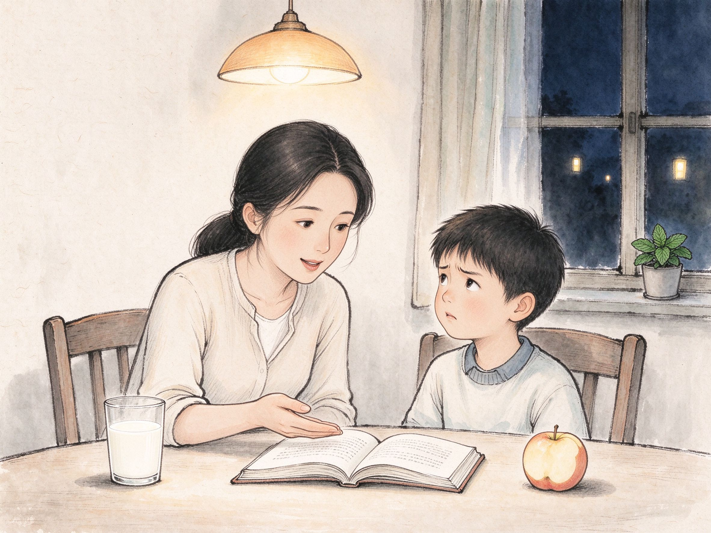
饭后一起说说今天的事：什么做得对，什么可以换个做法。
还要记住一件事：古人说的“父”，不是只指爸爸一个人。它指家里主事、担着教化责任的长辈——妈妈、爷爷奶奶，都在里头。
所以这句话不是用来骂爸爸的。它是提醒：一个家里，得有人把“教他做人”这件事，认真管起来。
只 养 不 教吃 饱 穿 暖 就 够
照料身体、满足生存，不管心性言行；肉身长大了，心里没人管。
养 而 兼 教照 料 加 引 导
照料生活的同时，慢慢引导品行与是非；护住身体，也护住良知。
成 长 小 启 示
- 有人照顾我们吃喝，是养育；有人教我们怎么待人，是教化。
- 教化不是责骂，是慢慢告诉我们什么合适、什么不合适。
- 家里长辈有引导的责任，我们也愿意听、愿意学。
- 责任是互相的，不是单方面的管束。
给 爸 爸 妈 妈 的 一 句 话 · 分 清 养 育 两 层 ， 不 把 这 句 读 成 苛 责
“过”是疏漏，不是原罪。这句话最容易被读成对父亲的道德施压，要避开。
一、困于生计，先顾温饱，不必自我攻击。养是基础，教是延伸。
二、条件有限也有“教”。稳定的陪伴、一句温和的正向指引，本身就是教。
三、教化不是父亲独担。母亲、家中长辈，都可以一同承接这份引导。
接上选择力练习：养负责安稳底色，教负责树立边界；边界之内，留给孩子自主选择的空间。
— 16 —
成人研学 · 古今汇观第八课 · 深度页
养不教，父之过
《说文》字训 ｜ 古之“父”为宗法家主 ｜ 过＝阙失非恶行 ｜ 家之共责
一 · 字义与句读
养，《说文》“供养也”，谓供给衣食、长养其身；教，“上所施，下所效也”（《说文》）；过，失也，谓当为而不为的阙漏。
“父”，《说文》“矩也，家长率教者”，是宗法语境下主事者之称，非生物学父亲。此点不明，全句必误读。
全句：若仅长养其身而不施教化，便是主事长辈未尽本分。
二 · 命题考辨
首要勘误：此句常被窄化为“父亲一人的罪责”，脱离宗法共同体语境。古代家为国之下的小共同体，教化本是家之共责；托名于“父”，是权责的符号化，不是身份追责。
次辨“过”字：过是缺位（omission），不是作恶（commission）。读成“罪”，教化即成道德审判；读成“阙”，才留出补救余地。
再辨对仗：“养不教，父之过；教不严，师之惰”——上句问“有没有教”，下句问“教有没有准”。两问分属不同环节，不可互相顶替，亦不可叠加追责。
三 · 中西对照
《大学》：齐家为本。家兼生养与教化二职，非仅衣食之所。
《颜氏家训》：“教妇初来，教儿婴孩。”——教化在日用之间，越早越省力。
洛克《教育漫话》：德性与习惯是家庭教育的核心；养护与训导不可割裂。
鲍尔比（依恋理论）：照料与情感回应是心理养育的底子，但不能替代规范引导——二者互为条件，不互为替代。
反向（布朗芬布伦纳生态系统）：把教化全归于家庭，会遮蔽学校与社群的责任；此说为“过”字划出外部边界。
四 · 与前后课的张力
与第六课正反对照：一为养而有教之范，一为养而无教之失。蒙书编排之用意，正在这一正一反。
与第三课“苟不教，性乃迁”同调：善端需外缘护持；只养不教，便是撤去了那层护持。
与第七课相衔：“名俱扬”是尽教之果，本句是不教之失。果与失之间，只隔着一个“教”字。
存 疑 · 留 待 深 究
一、父母认知有限、身心耗竭而无力教化，这份“过”该如何看待？若标准只对有余力者成立，它就近乎苛责。
二、家庭教化的边界在哪？哪些是家庭之责，哪些该由学校、社群分担？边界不清，“过”字可无限追索。
三、孩子强烈抗拒教化时，“养不教父之过”是否仍成立？教化本双向，单向追责会掩盖另一半。
— 17 —
润泽少儿启蒙国学 · 三字经第九课 · 教不严
第 九 课
教不严，师之惰
jiào bù yán shī zhī duò
先 ↓ 右列 再 ← 左列
古法竖排：自右而左，自上而下。先读右列「教不严」，再读左列「师之惰」，每列从上往下。
严是守住标准、不放松 · 师是引路的人 · 惰是该管的时候松了手
少儿共读读给孩子听
上一句说家里，这一句说学堂。
学堂里有先生，有学生。先生说一句，学生跟着做一句，这叫“教”。
可教的时候，如果什么都将就，什么都“算了算了”，学生就学不到真东西。
先说清楚：严，不是凶。
严是标准不随便改。说好这一横要写平，就不能说“随便写写也行”。严是稳住，不是发火。
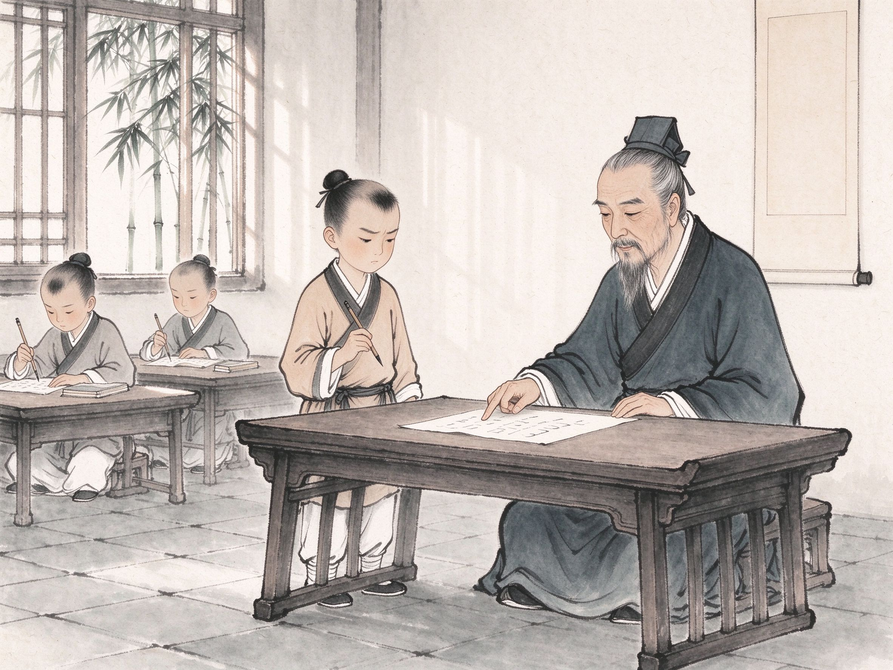
先生指着那张写歪的字，慢慢说该往哪里收。
老师也不会因为你写歪了就骂你。他指出来，让你再写一遍，写到自己看见那个“平”字。
反过来，如果老师什么都随便：对的错的都点头，好的坏的都说“差不多”，孩子就慢慢分不清边界了。
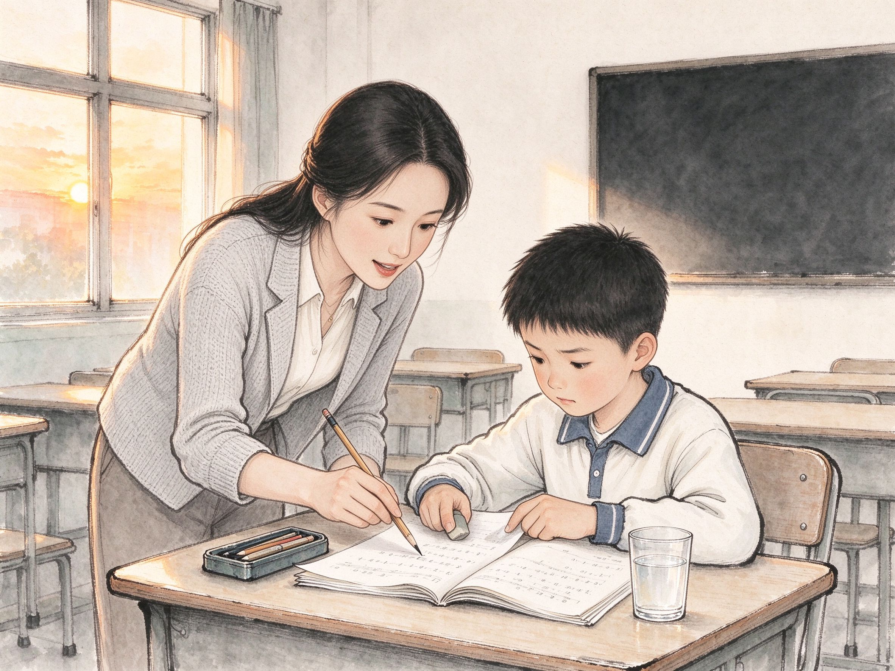
一起把错处擦掉，重新写一遍；标尺没变，人也没被骂。
还有一层要说：严是先生的本分；愿不愿意听进去、愿不愿意自己练，是学生自己的心。教化从来是两边的事。
苛 责 凶 厉把 严 读 成 凶
靠发脾气、批评施压让人害怕；对的是人，不是事。
持 守 有 度真 正 的 严
标准稳定清晰，对事不对人；温和，但不放松。
成 长 小 启 示
- 严不是坏事，稳定的标准会帮我们分清边界。
- 师长指出我们的不足，不是讨厌我们，是他的本分。
- 自律，就是慢慢学会自己对自己“严”。
- 不怕被指正，最怕一直没人告诉你哪里要改。
给 爸 爸 妈 妈 的 一 句 话 · 区 分 严 格 与 苛 责
这一句极易读偏。古往今来，太多人把“严”等同于体罚训斥，先把口径校准。
一、严的内核是标准恒定。不敷衍、不双标；情绪稳定是前提。吼叫打骂不属于“严”，是失度。
二、分工承接。在家是父母养而兼教；出门从师，师长负责学问与规范的打磨。互补，不替代。
三、引孩子理解。师长的严格是一份责任；最终要把外在的规矩，慢慢变成内心的自觉。
接上选择力练习：边界由严确立；清晰的边界之内，留给孩子自主试错的空间。
— 18 —
成人研学 · 古今汇观第九课 · 深度页
教不严，师之惰
《说文》字训 ｜ 严＝谨守节度（非严酷） ｜ 惰＝当为而不为 ｜ 师道与界限
一 · 字义与句读
严，《说文》“教命急也”，引申为敬、为谨；此处取“谨守节度”，不取“严酷”。惰，《说文》“不敬也”，谓怠慢、当为而不为。师，传道授业者。
全句：施教而不能持守节度、放任散漫，是师长怠于其分。此句与上句对仗：父之失在“有无教”，师之失在“教有无准”。
二 · 命题考辨
重点勘误：后世把“严”绑定体罚，“严师出高徒”遂成暴力化读法。按本句文脉，“严”与“惰”对举，所争在“守不守标准”，不在“罚不罚”。
《学记》确有“夏楚二物，收其威也”，是古代惩戒之制；然其义在“威仪”，不在以痛楚为教。两处材料须分读，不可混作一体。
再辨限度：师之责在“守准”，不在“包成”。学之成否，终有一半在学生自己——故有下句“子不学，非所宜”。
三 · 中西对照
《学记》：“凡学之道，严师为难。师严然后道尊。”——此处“严”是师道之庄重，非苛酷。
蒙台梭利：稳定的界限（limits）是儿童安全感的来源；界限动摇，内心亦动摇。
正向管教：“坚定而和善”——坚定即严，和善即不苛，恰为本句作注。
教育心理学（行为期望研究）：清晰而一致的行为期望，比惩罚更有效地塑造行为。
反向（杜威一系）：标准若僵化、不顾个体差异，“严”即成束缚，压抑内在生机。
四 · 与前后课的张力
承第八课，成“家—师”教化链条：在家有养教，从师有规范。两段分工，正是古代教化体系的结构。
呼应第三课“苟不教，性乃迁”：无稳定标准，善端易下坠；此处补上“标准”这一层。
呼应第四课“贵以专”：学者向内专一，教者向外持严，一内一外，互相支撑。
存 疑 · 留 待 深 究
一、标准如何动态平衡？固定不变的“严”，会不会压掉不同孩子的天赋节奏？稳定性与个别化，本句未给配比。
二、师长认知本身有偏时，他所持的“严”会把偏误成倍传递。此时“严”愈坚决，害愈深——师德是否应先于师严？
三、现代教师权责受限、惩戒边界模糊，如何在保护孩子的前提下守住标准而不流于松懈？这是本句在今天的真难题。
— 19 —
润泽少儿启蒙国学 · 三字经第十课 · 子不学
第 十 课
子不学，非所宜
zǐ bù xué fēi suǒ yí
先 ↓ 右列 再 ← 左列
古法竖排：自右而左，自上而下。先读右列「子不学」，再读左列「非所宜」，每列从上往下。
子是求学的孩子 · 学是学事理、学做人 · 宜是应当、合分寸
少儿共读读给孩子听
前两句说大人：家里要教，先生要严。这一句，说我们自己。
“宜”，就是应该、合适。一个正在长大的孩子，如果一直不肯学，那就不合成长的本分。
先说清楚：不是说不想读书的孩子就是坏孩子。谁都有不想学的时候——累了、烦了、觉得难，都正常。
可要是一直躲、一直推，把能长的那些时候空过去，就可惜了。
 书卷摊在台阶上，人在门外追着玩——玩不是错，一直不回来才是。
书卷摊在台阶上，人在门外追着玩——玩不是错，一直不回来才是。
养孩子像种种子。土有了，水有了，太阳也有了，可种子自己不肯发芽，时节照样会过去。
学习最先长的是自己：看懂这个世界，也知道怎么安顿自己。不是为了给爸爸妈妈交差。
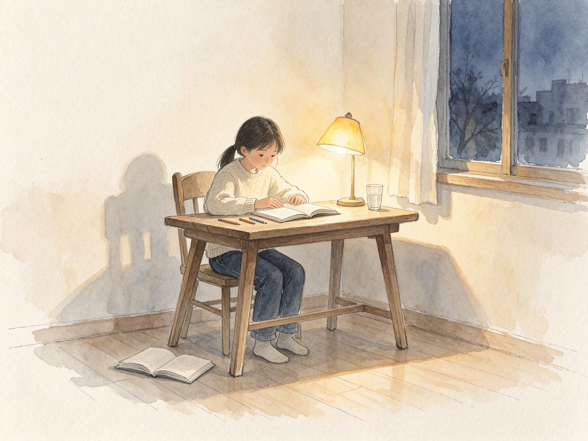
自己翻开书，没人催，也没人站在身后看着。
还有一层：先生愿意认真教，是先生的本分；我们愿意试着学，是我们的本分。两边都肯，教化才成。
怠 惰 不 学时 节 空 过 去
时机具足却不肯用心；等着别人推着、催着，被动应付。
顺 时 向 学自 己 愿 意 长
顺着成长时节主动接纳、慢慢学习；内在愿意生长，主动去了解。
成 长 小 启 示
- 学习是属于自己的事，不是为别人学。
- 偶尔不想学很正常，不必自责；但不要长久放任自己停着。
- 有人愿意教我们，是难得的机缘。
- 学，不只是课本；待人处事，也是学习。
给 爸 爸 妈 妈 的 一 句 话 · 不 拿 这 句 做 施 压 的 话 术
别拿这句做施压的话术。它是提醒本分，不是惩罚依据。
一、先分清缘由。畏难、疲惫、兴趣不对，还是单纯散漫？先看见原因，再谈本分。
二、区分逼迫与顺势。可以引导，但不要用这句话制造愧疚。
三、留出选择的空间。大方向“向学”的底色之下，给孩子选择学习方式与顺序的余地。
接上一课：师长守住严的边界，孩子保有向学的自觉，教化才成闭环。
— 20 —
成人研学 · 古今汇观第十课 · 深度页
子不学，非所宜
《说文》字训 ｜ 古之“学”知行一体 ｜ 责在失宜非有罪 ｜ 权责链之末环
一 · 字义与句读
宜，《说文》“所安也”，引申为应当、合宜。“非所宜”，即不合其分。全句：童子不肯向学，不合成长之宜。
文脉：上二句论施教者（父、师）之责，此句转论受教者之责。三句连读，权责两两相对——蒙书编排之严整，正在此处。
二 · 命题考辨
勘误一：古之“学”知行一体（《论语》“学而时习之”；《荀子》“学至于行而止矣”），非今日应试读书之谓。故本句不是“人人须苦读科考”。
勘误二：本句所责，是“有可觉之端、有可扶之缘，而久拒成长”，非“一时倦怠”。休息、调整、暂缓，皆不在“不学”之列。
勘误三：不学不等于恶。此句言“失宜”，不言“有罪”。分寸一失，蒙书即成鞭子——这是本句最需守住的一条。
三 · 中西对照
《学记》：“虽有嘉肴，弗食不知其旨也；虽有至道，弗学不知其善也。”——学是自取，非人赠。
苏格拉底（《美诺》）：德性可教，然教者只能唤醒，不能代替求索。
马斯洛：成长是人的内在趋向；长期停滞，是对自身潜能的放弃。
德西与瑞安（自我决定理论）：内在动机依赖自主、胜任、联结三支；三者缺一，学习即沦为应付。
反向（伊里奇《非学校化社会》、杜威一系）：若教法僵化、压抑天性，抗拒的根源未必在学子。此一反向，是本课须留出的余地。
四 · 与前后课的张力
第八、九、十课成完整权责链：养不教（父）→ 教不严（师）→ 子不学（学子）。三环相扣，缺一则教化不成。
与第三课对照：彼为“无人教化则善端下移”，此为“有教化外缘而自甘不学”。一者失于外，一者失于内。
与第五课“断机杼”呼应：一个是别人断，一个是自己停。断在外者尚可接续，停在内者最难再起。
与第一课四大天赋相连：良知、想象、独立意志，都要在“学”中舒展；不学，天赋便无从落地。
存 疑 · 留 待 深 究
一、如何区分“天性不适合这套教法”与“单纯懈怠不学”？边界不清，此句就会误伤。
二、学习有无终点？成年之后不再读书，是否算“子不学”的延伸？若算，则本句须重写为终身之义。
三、若一个人选择不走世俗学问之路，而以另一条路自我成长，算不算“不学”？此问逼出“学”的定义。
— 21 —
润泽少儿启蒙国学 · 三字经第十一课 · 幼不学
第 十 一 课
幼不学，老何为
yòu bù xué lǎo hé wéi
先 ↓ 右列 再 ← 左列
古法竖排：自右而左，自上而下。先读右列「幼不学」，再读左列「老何为」，每列从上往下。
幼是年少之时 · 老是年长之后 · 何为是何以立身
少儿共读读给孩子听
上一课说本分：求学是我们自己的事。这一课往前再走一步——它给这件事，加上了时间的分量。
“幼”，是小时候；“老”，是年岁长成之后；“何为”，是还能做什么、凭什么立身。
两句连起来：年少的时候不肯扎根学，等到年岁大了，又拿什么立身呢？
先解开一个恐惧。这句话不是在吓人，它不是说——小时候没学好，这一辈子就废了。
它讲的是时节的道理。一棵小苗，小的时候容易扶正、容易扎根；等枝干长粗长硬了再去掰，就要费大得多的力气。不是不能改，是代价更大。
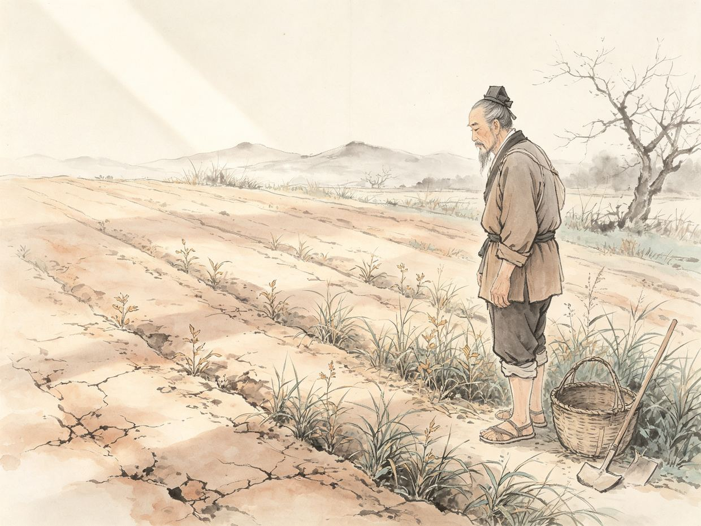
苗小不照料，草先占了地。
所以这句话的重点，不是“你将来会完蛋”，是“现在这个时候，土最松，根最容易扎”。
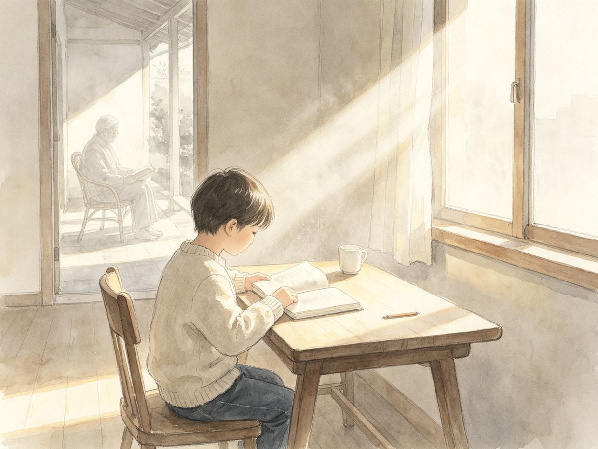
晨光里读的那一会儿，长成后来的从容。
学习在年少时，慢慢积攒两样东西：看懂事理的智慧，安顿自己的心性。
不是为了长大换取富贵。是为了往后遇到风雨的时候，心里有底气、有办法。
也要记得前面的道理：少年是好时节，但不是唯一的时节。晚学、后觉，依然来得及；只是要知道，少年这段时光，是难得的沃土。
幼 而 荒 疏时 节 空 过
年少时光随意荒废，没有种下明理、自持的根基；日后遇事容易无措、被动。
幼 而 植 基趁 早 扎 根
趁着年少慢慢学习、养习惯，为长远扎根；往后行路心中有分寸，有选择的底气。
成 长 小 启 示
- 年少的时光很珍贵，但不是唯一的学习窗口。
- 现在学的本事、明白的道理，是送给未来自己的礼物。
- 偶尔贪玩休息没关系，不要长久放任自己荒废。
- 学习不分早晚；只是少年时扎根，会轻松许多。
给 爸 爸 妈 妈 的 一 句 话 · 不 制 造 对 衰 老 的 恐 惧
这句最容易讲成恐吓式说教。三条边界，先守住。
一、不渲染“老了就很惨”。核心是把握时节、优先扎根，不是制造对年老的恐慌。
二、承认终身学习。少年是黄金期，但人一生都可以学；别让孩子形成“少时不学，终身完蛋”的执念。
三、承接选择练习。在珍惜年少时光的大前提下，给孩子自主安排节奏、选择兴趣的空间。
和上一课联动：子不学，是本分；幼不学，是时节。本分加上时机，才是完整的劝勉。
— 22 —
成人研学 · 古今汇观第十一课 · 深度页
幼不学，老何为
《说文》字训 ｜ 时序非定罪 ｜ 《学记》时过难成 ｜ 关键期与发展节奏
一 · 字义与句读
幼，《说文》“少也”。老，年长之称，非专指衰暮。何为，犹言何以作为、何以立身。全句：年少不勤学植基，待到年长，凭何立身行事？
句读：三字一顿，两顿成句。上句“子不学，非所宜”论本分，此句论时位；两句连环递进，不是重复。
二 · 命题考辨
勘误：后世通俗解读常把此句等同“少壮不努力，老大徒伤悲”，基调偏向惩戒恐吓。回到蒙书原本的教化逻辑，它是时序提醒：人的身心发展有阶段性，幼年习惯、心性、认知更容易塑成。重点在顺势，不在定罪。
再厘清：此句不否定“大器晚成”。它陈述一条普遍规律——少年植基，是成本最低的成长路径；不是“过时即无用”的判决。
三 · 中西对照
《礼记·学记》：“时过然后学，则勤苦而难成。”——与本句义理相合，皆言时位。
发展心理学（关键期／敏感期研究）：依恋、自控、语言与思维习惯，在幼年有较强的可塑窗口。
怀特海（《教育的目的》）：浪漫、精确、综合三段节奏，少年属浪漫奠基期——先有兴味与感受，再谈训练。
反向（布鲁纳、维果茨基一系）：发展可被教学牵引，窗口并非铁门，晚学有晚学的路径。此一反向，是本课须留出的余地。
再反向（超前教育批判）：过度强调“窗口期”，极易催生抢跑与内卷，拔苗反而伤根。
四 · 与前后课的张力
串起整条责任链：养不教（第八课）→ 教不严（第九课）→ 子不学（第十课）→ 幼不学（本课）。第三课“苟不教，性乃迁”讲善端会慢慢偏移；本课从时间维度补一层：偏移一旦跨过少年窗口，挽回的成本大幅升高。
与第一课四大天赋相扣：良知、独立意志，都要在年少的长期熏习中落地显发；天赋不等于现成。
与第十二课相接：本课讲“什么时候扎根”，下句讲“用什么打磨”——时位与功夫，一前一后。
存 疑 · 留 待 深 究
一、如何区分“顺应成长窗口期”与“制造早教内卷”？分界线在内容、节奏，还是在施教者的动机？
二、大器晚成的案例，是否在挑战“幼不学，老何为”这一普遍规律？若只是概率陈述，本句的劝勉力还剩多少？
三、如果童年只有痛苦的应试、没有滋养，就算幼年勤学，算不算真正的“植基”？
— 23 —
润泽少儿启蒙国学 · 三字经第十二课 · 玉不琢
第 十 二 课
玉不琢，不成器
yù bù zhuó bù chéng qì
先 ↓ 右列 再 ← 左列
古法竖排：自右而左，自上而下。先读右列「玉不琢」，再读左列「不成器」，每列从上往下。
玉是天然璞玉 · 琢是顺着纹理打磨 · 器是能承载、能成事
少儿共读读给孩子听
前面分清了两个方向：教的人守住专一稳定，学的人守住向学的本分。这一句，用一个比方把两件事说到一处。
“玉”，是天然的美玉原石；“琢”，是雕琢打磨；“器”，是能承载、能成事的合用之物。
一块天然的美玉，不去雕琢打磨，就不会成为合用的玉器。
这个比方最要紧的一点在这里：玉的温润质地，本来就在石头里面，不是雕刻师傅凭空塞进去的。
雕琢，只是顺着玉本身的纹路，慢慢去掉杂质、磨平不平的地方，把它本来的光彩显露出来。
 顺着玉理走刀，不硬劈硬凿。
顺着玉理走刀，不硬劈硬凿。
教化也是这样。不是硬往我们心里塞进一套陌生的道理，是慢慢磨掉浮躁、偏执、任性，让本有的良知、本心显现。
打磨的过程不会一直轻松。接受指正、修正自己的时候，常常会觉得不舒服。这份不舒服，不是在伤害我们，是在去掉遮蔽本心的杂质。
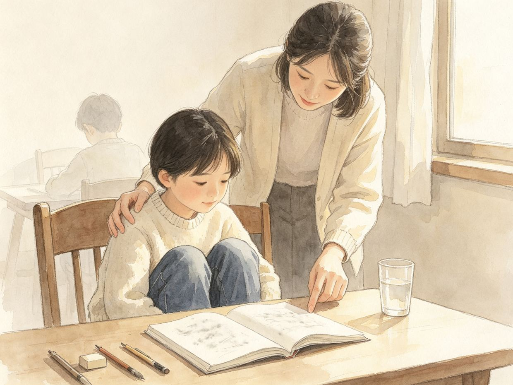
指一处，不改整个孩子。
但雕琢有法度，不能乱刻乱凿。好的雕琢，是顺性而修；粗暴的雕琢，反而会把玉毁坏。
这也呼应前面：施教的人必须专一稳定，才懂得怎么“琢”。
璞 而 不 琢禀 赋 藏 而 不 显
质地本善，但杂质遮蔽；任由习气蔓延，善端被遮，禀赋始终不显。
顺 理 雕 琢去 瑕 存 粹
顺着本性打磨，在稳定的教化之下持续修正；本有的光彩慢慢显现，渐成可用之器。
成 长 小 启 示
- 我们心里，都有像璞玉一样美好的本心。
- 被人温和指正的时候，虽然不好受，也是打磨自己的机会。
- 雕琢要顺着本身的特质，不是所有人都要变成同一个样子。
- 打磨是长久的事，不是一次就能完成。
给 爸 爸 妈 妈 的 一 句 话 · 分 清 顺 性 雕 琢 与 强 行 改 造
本课最容易踩的坑：把“琢”理解成不断挑剔、改造孩子，把孩子磨成大人期待的模样。
一、玉质本自具足，教化是去蔽，不是重塑。目标是护持、显发他本有的良知，不是复刻你的期待。
二、雕琢要有节制。批评、规训是“琢”，但不能持续苛责；过度雕琢，玉会崩损。
三、底层准则要稳。只有准则稳定，你的打磨才是顺着纹理；情绪起伏之下的指责，是乱凿。
接上选择力练习：雕琢划定底线与是非，在不损伤玉质的前提下，保留孩子独有的纹理与选择空间。
— 24 —
成人研学 · 古今汇观第十二课 · 深度页
玉不琢，不成器
《说文》治玉 ｜ 《学记》本源 ｜ 性善喻与去蔽 ｜ 雕琢的权力风险
一 · 字义与句读
琢，《说文》“治玉也”。玉坚，须反复切磋磨治。器，能有所承、有所用者。全句：璞玉不经打磨修治，则不能成为可用之重器。
出处：《礼记·学记》“玉不琢，不成器；人不学，不知道”，《三字经》直接化用；下句“不知义”与“不知道”为异文，义同。
二 · 命题考辨
核心勘误：世俗常解为“人本来不好，靠教育改造变好”，这是颠倒。本喻与孟子性善一脉：玉之美本在璞中，雕琢之功在于去瑕，而非造美。
再分判：琢属教化外缘。外缘是必要条件，不是充分条件。玉有质、又遇良工，方能成器；玉若无质，良工难施；良工躁乱，美玉亦毁。
权责对应：良工对应专一稳定的施教者（第四、九课），玉对应学习者本身（第十、十一课）。
三 · 中西对照
《礼记·学记》：本句本源。学以知道，非以记诵。
柏拉图（《理想国》洞穴喻）：教育是“转向”，把目光从暗影移向真实，不是向灵魂注入知识——与“去蔽显真”同构。
荣格（自性化）：剥除人格面具与习气遮蔽，让本自完整的自性显现；分析不是造人。
反向（福柯一系的教育权力批判）：雕琢极易滑为规训——施教者把自己的审美与执念当成“玉理”，以雕琢之名行同化之实。
四 · 与前后课的张力
整条链条在此收束：苟不教（要不要教）→ 教之道，贵以专（教如何稳定）→ 子不学、幼不学（学者的本分与时位）→ 玉不琢（教化作用的本质：去蔽打磨）。
与第一课联动：四大天赋如同玉质，先天本存；学习与教化，是雕琢去蔽的过程，不是无中生有。
与第九课呼应：严，就是雕琢的分寸；稳定之严是善琢，苛责狂暴是毁玉。
与第十一课相扣：彼言时位，此言功夫；时位定成本，功夫定成色。
存 疑 · 留 待 深 究
一、如何分辨：是顺性打磨去瑕，还是施教者以雕琢之名强加自身执念？
二、璞玉的“瑕疵”，有没有可能本身就是它独有的纹理，不该全部磨去？
三、如果学习者强烈抗拒雕琢，是习气遮蔽需要坚持引导，还是雕琢方式本身已经失当？
— 25 —
润泽少儿启蒙国学 · 三字经第十三课 · 人不学
第 十 三 课
人不学，不知义
rén bù xué bù zhī yì
先 ↓ 右列 再 ← 左列
古法竖排：自右而左，自上而下。先读右列「人不学」，再读左列「不知义」，每列从上往下。
人是每一个独立的生命 · 学是知行并举的修习 · 义是合宜、合分寸
少儿共读读给孩子听
上一句用璞玉告诉我们：玉石要打磨，才能成为合用的器物。这一句，落到我们自己身上。
人如果不肯修习、不肯用心体会，就不容易明白什么是合宜的正道。
先把一个误解挪开：这句话不是说，人不学，本性就坏了。
本心的良知，就像玉里本有的温润。可习气、情绪、私欲，像尘土一层层盖在上面。不去学习、不去对照反思，人就容易被眼前的好恶牵着走，分不清怎么做才恰当。
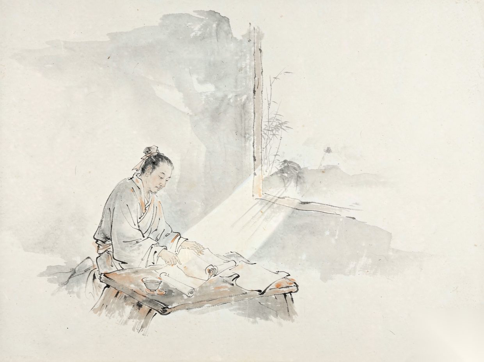
不是背规矩，是拿事理照自己。
学习知义，也不是背一大堆规矩来束缚自己。
知义，是慢慢懂得：什么该做，什么不该做；什么时候向前，什么时候退让；善待他人，也守住自己的边界。
 停一停，再决定怎么说。
停一停，再决定怎么说。
雕琢是外缘，而学，是我们自己主动去擦亮本心的过程。稳定的教化，提供打磨的条件；要不要去领会、去自省，主动权在自己。
这也呼应前面：玉要打磨，人要自省，两件事都需要长久坚持。
不 学 而 随 情取 舍 无 度
跟着情绪、喜好走，遇事没有分寸；善恶模糊，全凭一时感受判断。
学 而 明 义心 里 有 尺
经由学习与自省，良知显发，取舍有根基；懂得合宜进退，待人有度、守己有界。
成 长 小 启 示
- 学习，是帮我们擦亮心里的那把标尺。
- 知义不是死板，是懂得分寸，待人处事刚刚好。
- 玉要打磨，人要自省，两件事都需要长久坚持。
- 道理听懂了，还要在日常里试着去做，才是真的学。
给 爸 爸 妈 妈 的 一 句 话 · 不 要 把 义 教 成 刻 板 规 矩
这一句最容易被教成一张对错清单。三条提示，先守住分寸。
一、义是「合宜」，不是绝对的标准答案。同样一件事，场景不同，分寸也会变。重点教思考的方式，而不是死记对错。
二、承接教与学的二分。你提供稳定专一的教化（琢），但知义要孩子经由自主学习、自省才能内化，不能强行灌输。
三、示范优先。家长自己处事有分寸，就是最好的「义」的样板。
接上选择力练习：义是内在的参照标尺。标尺之内，依然保有自主选择的空间；选择之后，也可以复盘调整。
— 26 —
成人研学 · 古今汇观第十三课 · 深度页
人不学，不知义
《说文》字训 ｜ 良知本有而需护持 ｜ 孟子是非之心 ｜ 亚里士多德德性养成
一 · 字义与句读
义，《说文》「己之威仪也」，经典训「宜」，谓行事合当。全句承上联而下：玉不琢，不成器；人不学，不知义。
出处：《礼记·学记》原文正是这一联，《三字经》直接撷取。玉为喻，人为实；琢为外缘，学为内修。句读两顿三字，与上句对称。
二 · 命题考辨
勘误重点：并非「不学则无善性」。良知本有，但良知易被习气遮蔽。不学，是缺少反照、参照、辨析的功夫，所以不能显发，难以在事中抉择合宜之道。
再分判：琢来自良工（施教），学发于自身（受教）。这一联刚好收束教化的内外两端：外缘打磨，内主修习。
串起整条脉络：稳定的教化（教之专）提供雕琢的条件，学习者主动向学，方能知义。
三 · 中西对照
孟子：「是非之心，智之端也。」是非本有，需学思护持显发，与「不学不知义」同内核。
亚里士多德：德性非天生，在持续实践与省察中养成；德性即习惯的稳定化。
认知心理学：直觉判断易受偏见裹挟；学习反思，是建立二阶觉察，校正本能好恶。
反向思辨：书本之学也可能学到僵化教条，反而背离「宜」的本义。学贵在活观，不在记诵。
四 · 与前后课的张力
这一联是整套教化链条的小收束：苟不教 → 教之道，贵以专（建立稳定外缘）→ 教不严、子不学（施受双方的本分）→ 玉不琢、人不学（外缘打磨与内修显发）。
与第六课呼应：窦燕山「有义方」，是施教者本身立身合义；本课「知义」，是学习者经由修习，内在生发出义的抉择能力。一为施教之本，一为学成之果。
与第一课联动：良知、独立意志，都在「学」的过程里舒展；不学，天赋无从落地。
存 疑 · 留 待 深 究
一、有的人读书很少，但行事宽厚有度，算不算「知义」？知的边界是书本，还是践行？
二、博学多闻却行事刻薄失度，问题出在哪个环节？是学的方法，还是学的动机？
三、「义」的标准会随时代变化吗？如何守住底层，又不僵化为教条？
— 27 —
润泽少儿启蒙国学 · 三字经第十四课 · 为人子
第 十 四 课
为人子，方少时
wéi rén zǐ fāng shào shí
先 ↓ 右列 再 ← 左列
古法竖排：自右而左，自上而下。先读右列「为人子」，再读左列「方少时」，每列从上往下。
为是身处、作为 · 人子是为人子女的位分 · 方少时是正当少年
少儿共读读给孩子听
前面我们讲，人经由学习，慢慢懂得合宜的分寸、明白什么是义。这一句，把学问落到日常人伦。
身为子女，正当年少的时候，正是学习立身本分的好时机。
要先明白：人伦不是捆绑，也不是束缚。我们每个人，都处在不同的关系里。在家里，我们是孩子；在师长面前，我们是学子；长大之后，又会有别的身份。每一个身份，都有对应的分寸。
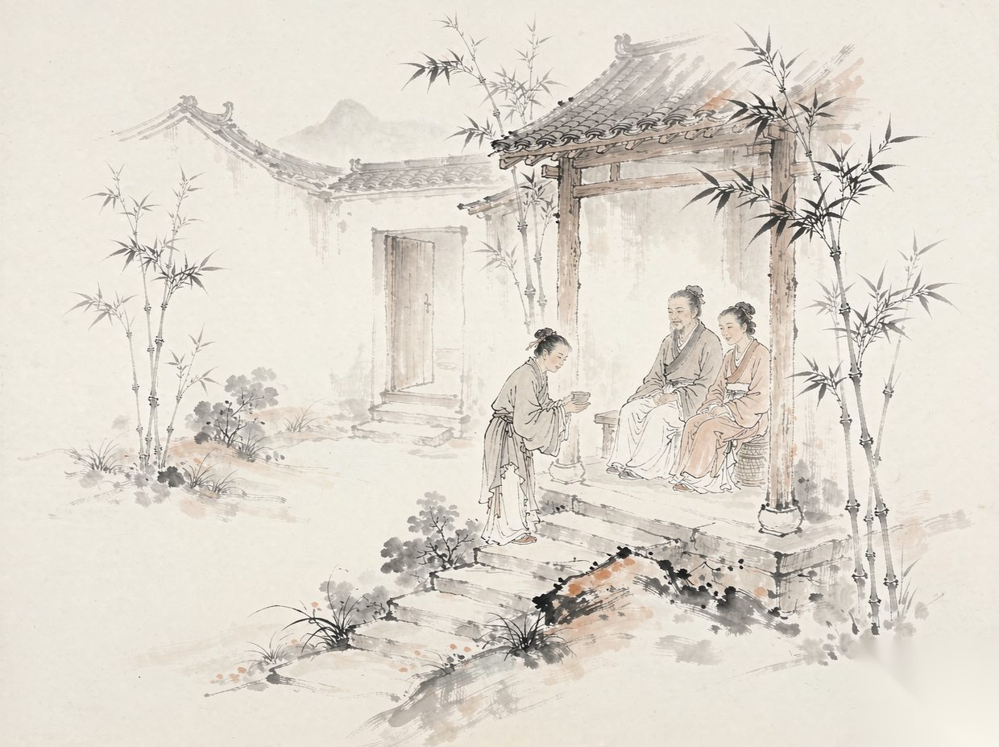
侍立不是畏缩，是心里有人。
年少的时候，心思单纯、容易熏染。这时学习待人、侍亲的本分，不是一味顺从听话，是学着看见父母的辛劳，学着体谅、懂得体恤。
这份人伦的修习，也是「学而知义」的一部分，是义在亲情里的落地。义先在至亲之间练，再往外推及旁人。
分寸是在一起做事时学会的。
也要记住前面讲的双向：父母养而有教，子女敬而学习。人伦从来是双向的，不是单方面的要求。
身 份 漠 然看 不 见 关 系
只看见自己的需求，看不见关系里的他人；把亲人的付出当成理所当然。
安 位 修 习练 习 体 恤
明白自己当下的位置，练习体恤与分寸；在亲情之中，练习感恩与承担。
成 长 小 启 示
- 我们每一个人，都处在不同的关系当中。
- 年少的时候，正是学习好好对待家人的时机。
- 体谅家人，不是一味顺从，是心里看见别人的辛苦。
- 人伦的功课，也是明理知义的功课。
给 爸 爸 妈 妈 的 一 句 话 · 避 开 愚 孝 的 误 区
这一句极易滑向单向顺从的旧观念。三条校准，先立住。
一、本分是体恤、敬顺，不等于无条件服从。孝的底色是敬爱，不是压抑自我。
二、人伦是双向的。父母养而有教，子女敬而学习。教化双向，人伦同样双向。
三、承接选择力练习。在敬亲、体恤的底色之下，依然保有独立思考的空间，不失去自己的判断。
和第十三课相接：义先在至亲之间练，再向外推及旁人；家庭是义最先落地的场域。
— 28 —
成人研学 · 古今汇观第十四课 · 深度页
为人子，方少时
《说文》字训 ｜ 转场句承上启下 ｜ 《论语》入则孝 ｜ 依恋与共情的养成
一 · 字义与句读
方，正也；少时，年少之年。全句：身为子女，正当年少之时。
这是一个转场句，承上启下：前面总论学习、琢玉、知义；自此转入五伦首重父子之伦，开启孝悌的修习。
二 · 命题考辨
勘误：后世常把这一段解读成「子女必须无条件顺从长辈」。儒家孝之本，始于敬、始于体恤，不是依附式的盲从。
「方少时」的重心仍在时节：少年阶段是情感共情、伦理感知的关键养成期；伦理感知，是「义」最先扎根的地方。义先在至亲之间练习，再向外推及旁人。
三 · 中西对照
《论语》：「弟子入则孝，出则悌。」次序一致，少年先从家庭伦理起步。
依恋心理学：早期亲子关系，是人共情、良知、安全感最初的培育土壤。
社群伦理（关系性存在）：人是关系性的存在，德性无法脱离关系凭空修习。
反向思辨：伦理本位极易演变成家庭本位压倒个体，压制独立人格——这是后世流弊，不是原典本意。
四 · 与前后课的张力
承接第十三课「人不学，不知义」：义不是悬空的大道理，最先落地的场域就是家庭，就是子女这个身份。
呼应第三课「苟不教，性乃迁」：人伦的善端同样需要在年少时节护持熏习；无人引导，容易淡漠自私。
呼应第四课「教之道，贵以专」：家庭稳定一贯的教化，正是在日常相处中，慢慢传递这份人伦分寸。
存 疑 · 留 待 深 究
一、如果长辈本身行事失义，子女这份「为人子」的分寸，该如何自处？
二、家庭伦理的边界在哪里？敬爱，什么时候会变成对个体的绑架？
三、现代家庭形态多元，如何在新的家庭结构里，安放这份体恤的内核？
— 29 —
润泽少儿启蒙国学 · 三字经第十五课 · 亲师友
第 十 五 课
亲师友，习礼仪
qīn shī yǒu xí lǐ yí
先 ↓ 右列 再 ← 左列
古法竖排：自右而左，自上而下。先读右列「亲师友」，再读左列「习礼仪」，每列从上往下。
亲是主动亲近 · 师主引道、友主砥砺 · 礼仪是敬意外化的容止
少儿共读读给孩子听
上一句讲到：身为子女，正值年少，正是修习人伦的好时候。这一句向外延展一步。
要亲近良师、益友，在日常之中反复修习礼仪。
先分清一件事：礼仪不等于死板的客套、拘谨的动作。
礼仪的根，是内心的敬重。心里存有敬意，言语举止自然温和有度；如果内心没有敬，只学鞠躬问好的样子，那只是虚礼。
良师，帮我们明理、立准则；益友，可以互相提醒、彼此陪伴，一起守住本心。
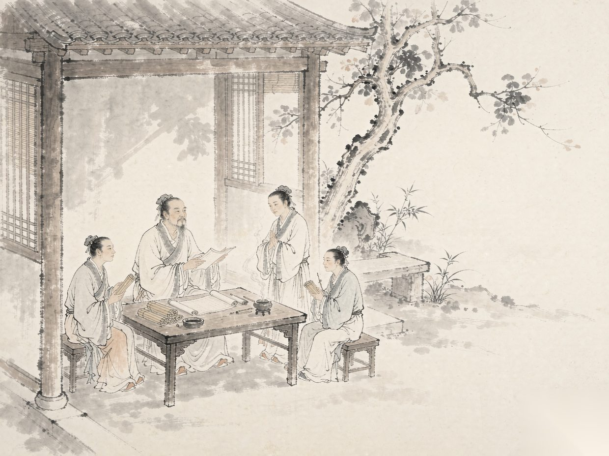
问难不是冒犯，是把话听进心里。
亲近师友，是主动去靠近好的成长环境，这和前面孟母择邻的道理相通。
教化有外缘，我们也可以主动去选择善的外缘；在和师友往来之中一遍遍练习礼仪，把「知义」落到一言一行里。
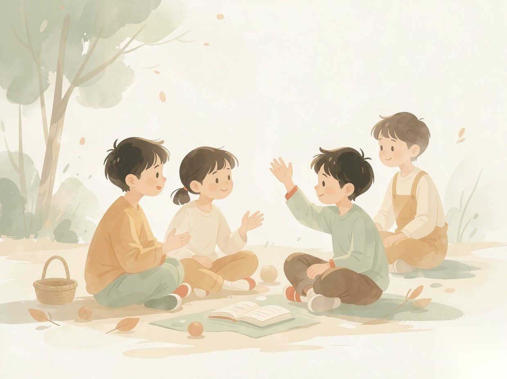
先听完，再开口。
礼仪的根本是尊重：尊重师长、同伴，也尊重自己。
道理要反复练习，才会变成自己自然而然的样子——这也是「习」字里那个「数飞」的意思。
虚 饰 之 礼有 形 无 敬
只学表面样子，内心没有尊重，成了应付与表演；迫于规矩勉强去做，容易虚伪。
由 敬 生 仪自 然 有 度
内心存敬，举止有度，礼仪是本心的自然流露；长久练习，慢慢成为习惯。
成 长 小 启 示
- 良师引路，益友相伴，是很难得的成长助缘。
- 礼仪的根本是尊重，尊重师长、同伴，也尊重自己。
- 道理要反复练习，才会变成自己自然而然的样子。
- 交朋友也要有所选择，和正向的同伴互相勉励。
给 爸 爸 妈 妈 的 一 句 话 · 不 把 礼 仪 教 成 形 式 主 义
这一句最容易走成一套标准动作。三条提示，先立本再习形。
一、优先养敬，再学仪节。孩子心中有尊重，比一套标准动作更重要；不要强迫孩子客套问好。
二、区分益友与损友。不是要求只和成绩好的孩子交往，重点看品行是否端正、能不能互相正向提醒。
三、承接教与学的二分。家长提供环境、引导亲近良师益友，是施教一侧；愿意亲近、愿意修习，是孩子自主承接的一侧。
接上选择力练习：在「敬」的底色之下，允许孩子有自己的相处风格，不必所有人举止一模一样。
— 30 —
成人研学 · 古今汇观第十五课 · 深度页
亲师友，习礼仪
《说文》字训 ｜ 礼以敬为本 ｜ 《学记》独学无友 ｜ 仪式与社会信任
一 · 字义与句读
亲，近也；习，《说文》「数飞也」，本指雏鸟反复试飞，引申为反复践行。礼主敬，仪为容止。全句：亲近良师益友，反复修习以敬为本的举止分寸。
承接上一课「为人子，方少时」：在家孝亲，出外亲师友，由近及远，伦理次第展开。
二 · 命题考辨
勘误重点：后世常将礼仪固化为繁文缛节、等级压迫，这是流弊。儒家原初之礼，内核是节制与敬畏，安顿人与人之间的边界，减少冲突。
礼是义的外化：前面「人不学，不知义」，义存于心，礼显于行。
再区分：师是引路人，偏单向教化；友是同修，偏双向砥砺。二者功能不同，同属成长外缘。
三 · 中西对照
《论语》：「君子以文会友，以友辅仁。」益友的价值，在辅助仁德的养成。
《礼记·学记》：「独学而无友，则孤陋而寡闻。」点明同修切磋的必要性。
社会学（仪式与信任）：礼貌与仪式是社会信任的底层秩序，降低人际摩擦成本。
反向思辨：礼仪一旦固化为等级，就会压抑真诚，变成伪装与束缚。
四 · 与前后课的张力
脉络推进：在家「为人子」，修习亲子之伦；出外「亲师友」，修习交往之礼——由内而外，由亲及疏。
呼应第五课孟母择环境（外缘）、第六课窦燕山以身立义方（身教）：师友与礼仪，都是打磨心性的外缘。
呼应第四课：施教者专一稳定，提供场域；学习者主动亲近善缘、习礼践行，是受学的自主选择。
存 疑 · 留 待 深 究
一、现代平等观念之下，传统师礼如何转化，既存敬意又不形成尊卑压迫？
二、怎么引导孩子亲近良师益友，又不干涉孩子自主的社交选择权？
三、当外在礼仪和本心真实感受冲突时，应当优先守礼，还是优先真诚？
— 31 —
润泽少儿启蒙国学 · 三字经第十六课 · 香九龄
第 十 六 课
香九龄，能温席
xiāng jiǔ líng néng wēn xí
先 ↓ 右列 再 ← 左列
古法竖排：自右而左，自上而下。先读右列「香九龄」，再读左列「能温席」，每列从上往下。
香是黄香，东汉孝子 · 九龄是九岁 · 温席是先把床榻暖热
少儿共读读给孩子听
前面我们说，年少的时候要修习人伦、亲近师友、学习礼仪。这一句，举一个少年作例子。
黄香是东汉时期的孩子。他很小的时候，母亲就早早离世。家里清贫朴素，没有富足的衣食，也没有仆人帮忙，只有他和父亲两个人相依为命。
父亲是一位忠厚、正直、辛苦读书、勤恳养家的人。日子简朴、安静，也清苦。
小小黄香，比同龄孩子更懂事。他看着父亲：白天辛苦劳作、读书治学；傍晚回家还要收拾家事、打理清贫的家；夜深了，还要灯下读书、劳心劳神。
九岁的黄香，心里非常疼惜父亲。
古时候没有暖气、没有电热毯、没有柔软的棉被。秋冬的夜晚，寒风穿窗，竹席冰冷。大人劳累一天，一躺进冰冷的床席，整夜都睡不暖、睡不安稳。
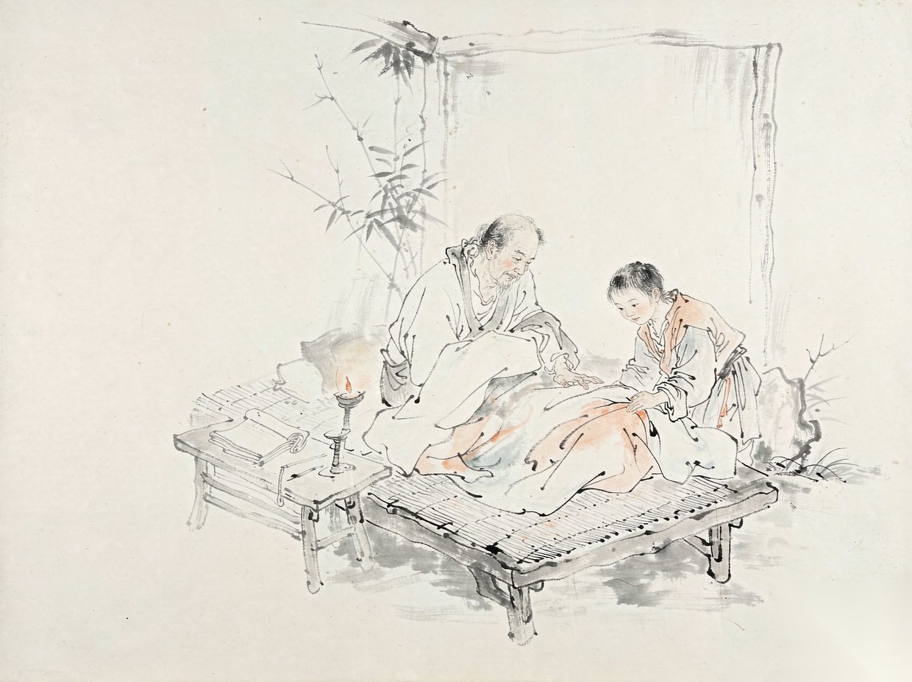
他先躺下，让父亲晚一点再暖。
于是每到寒夜，父亲还未入寝，黄香就先脱掉外衣，小小身子躺进冰冷的席子上。他用自己单薄小小的体温，一点一点捂热凉席、暖透被褥。
席子从刺骨冰凉，慢慢变得温和柔软。等到床席、被窝都暖热了，他再轻轻请劳累一天的父亲上床安睡。
不是被大人要求的，也不是为了被夸奖。家里没人教他做这件事，也没有人逼迫他。是他自己看见辛苦、自己心生疼惜、自己愿意分担。
夏天酷暑之时，他也同样体贴：夜里闷热蚊虫多，他先为父亲扇凉枕席、赶走蚊虫，让父亲得以安歇。
 今天的暖，可以是一杯水。
今天的暖，可以是一杯水。
黄香的孝，从来不做给外人看。他家清贫、无人瞩目、无人称赞，这份温柔全部藏在深夜、藏在日常、藏在无人看见的小事里。
这就是「温席」真正的样子：不是表演，不是规矩，不是任务。是一个孩子，心里装着别人、懂得体恤辛苦的纯真善良。
我们今天不需要「以身温席」。但可以继承黄香的本心：看见家人累，就多一份体谅；看见家人忙，就多一份分担；不任性、不吵闹、不事事以自己为中心。
古人的行为会过时，但体恤他人、心怀温柔的本心，永远不会过时。
形 式 上 的 孝 行做 给 别 人 看
刻意做出孝的样子，只完成特定仪式；平时漠然，无人看见时便不放在心上。
发 自 本 心 的 体 恤藏 在 小 事 里
心中感念，看见长辈辛劳，自然愿意分担；不为人见，依然温柔待人，长久留心关照。
成 长 小 启 示
- 真正的懂事，不是听话，是心里看得见别人的辛苦。
- 最珍贵的善良，是无人看见时，依然愿意温柔待人。
- 孝不看形式、不看大小，只看真心。
- 年少的体谅，是一个人「知义、成人」的开始。
给 爸 爸 妈 妈 的 一 句 话 · 不 要 拿 黄 香 去 要 挟 孩 子
这一课最容易被用成一句比较。三条提示，护住孩子的心。
一、不拿故事做道德绑架。不要说「黄香九岁就能温席，你怎么不会」——故事是示范，不是考核标准，更不该制造愧疚。
二、区分体恤与无底线顺从。体恤是共情、是分担；不等于放弃自我想法，一味听从。
三、看见根源。黄香之所以能做到，不是「被管教」，而是清贫安稳的家风、正直善良的父亲、稳定温柔的教养，让孩子长出了共情与柔软。父有慈、有勤、有正，子才有敬、有惜、有孝。
接上选择力练习：体恤是底色，孩子可以自主选择表达关心的方式，不强求统一的行为模板。
— 32 —
成人研学 · 古今汇观第十六课 · 深度页
香九龄，能温席
《说文》字训 ｜ 史传孝童 ｜ 《孝经》始于事亲 ｜ 共情在关系中养成
一 · 字义与句读
龄，年也；席，卧席。全句：黄香年方九岁，便能体恤亲长，有温席侍亲之行。
《东观汉记》《后汉书》并有黄香传：字文强，江夏安陆人，少失母，事父至孝，冬月为父温席，暑则扇枕。由前面的义理纲领，转入古人事迹举例，以实例印证「为人子，方少时」的修习。
二 · 命题考辨
勘误重点：后世常固化故事，执着于行为复刻，甚至用来苛责孩童。故事的载体是古，内核是共情体恤。器物与生活条件变迁，行为可以迭代；「心中存敬、体察他人苦辛」这个内核不变。
再厘清：黄香的孝，是情感的自然回馈，不是宗法之下的强制任务。孝是双向滋养，不是单向的付出与索取。
三点人格品质尤须点出：幼年失恃而不怨怼，逆境养出柔软心；家境清贫而能安贫，简朴养出知足心；无人督促而自发体恤，纯然本心，无人为之善。
三 · 中西对照
《孝经》：「夫孝，始于事亲。」事亲之本在爱敬，不在仪节之繁。
发展心理学：共情能力在早期亲子互动中萌芽；关照他人，是良知的落地形态。
存在伦理学（列维纳斯一路）：看见他者的辛苦，是跳出自我中心的起点。
反向思辨：孝的叙事极易异化，变成长辈索取、压制晚辈的工具，需时刻警觉边界。
四 · 与前后课的张力
承接第十五课「亲师友，习礼仪」：礼仪是通用交往之敬；孝亲，是敬最先生根的地方。
串联第十三课「人不学，不知义」：义最先在亲子之间实践。黄香不是天生就懂，也是在长期教化熏习中长出这份体察，呼应第四课「教之道，贵以专」——稳定的家庭教化，滋养这份善念。
收束一句：教有专，则性不乱；学有义，则行自善。性本善 → 需教化 → 教贵专 → 学知义 → 落地为人伦孝行。
存 疑 · 留 待 深 究
一、如果父母并不能做到「养而有教」，这份体恤的孝，还要如何安放？
二、如何区分发自本心的关怀，与出于恐惧、讨好的顺从？
三、孝的表达有没有统一标准？是否只要心意真诚，形式可以不拘？
— 33 —
润泽少儿启蒙国学 · 三字经第十七课 · 孝于亲
第 十 七 课
孝于亲，所当执
xiào yú qīn suǒ dāng zhí
先 ↓ 右列 再 ← 左列
古法竖排：自右而左，自上而下。先读右列「孝于亲」，再读左列「所当执」，每列从上往下。
孝是敬爱的体恤 · 亲是生养我们的双亲 · 执是长久持守
少儿共读读给孩子听
上一课我们读懂了黄香的故事。这一句，把故事提炼成一门长久的功课。
对双亲的敬爱体恤，是我们应当长久守住、持之以恒的本心。
这里要分清一个关键：「执」不是固执死守某一种做法。
黄香用温席、扇枕来表达心疼，那是属于他所处时代、生活环境里的方式。放到今天，我们不必照搬。要执守的，不是温席这个动作，而是那份心里常常记挂亲人、愿意体谅分担的心意。
很多时候，我们容易一时感动：看到故事心生触动，当下愿意好好对待家人；没过几日，又回到任性、只顾自己的状态。
「所当执」，就是提醒我们：这份体恤不是一时表演，要安放在日常，长久坚持。
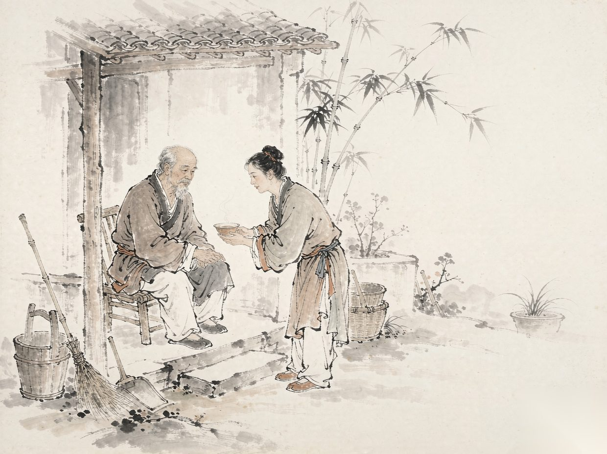
不是轰动的一天，是不变的每天。
同时不忘人伦双向的道理：父母养育、教化我们，是他们的本分；我们心怀敬爱、体恤亲人，是我们的本分。这份关系是互相滋养，不是单方面的要求。
如果遇到意见不同，可以好好说出自己的想法，不必委屈自己盲目顺从。守的是敬爱之心，不是放弃独立思考。
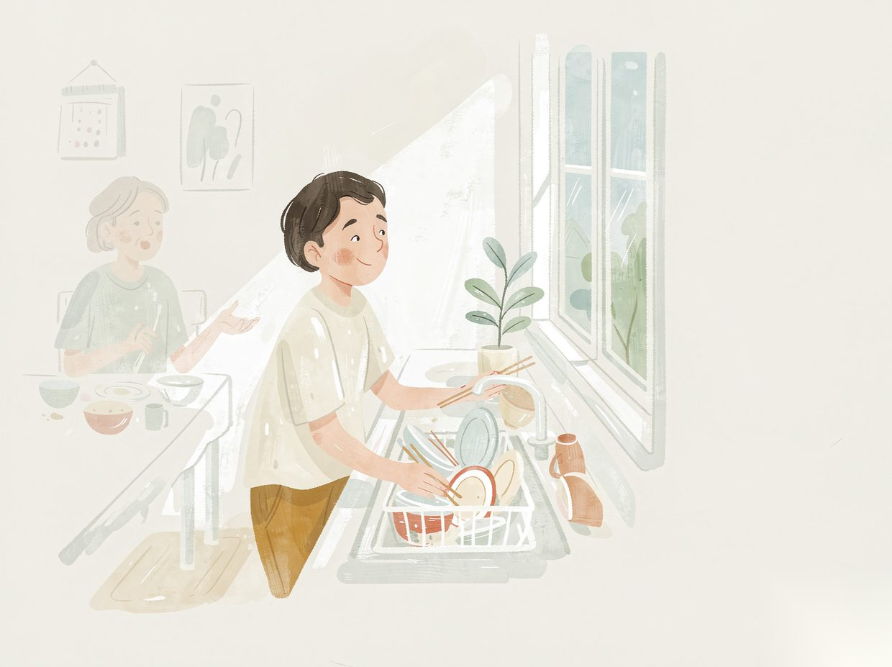
把心意放进日常，才留得住。
再好的善心，如果不能持续，就很难沉淀成自己内在的品性。
敬爱亲人，是练习「知义」最长久的功课，也是一个人慢慢长成自己的过程。
一 时 之 善心 血 来 潮
偶尔暖心，过后依旧随性；为了得到夸奖才去做，无人看见便停下。
恒 久 执 守本 心 自 安
把体恤变成长久习惯，时时存念；不求赞誉，长久自持。
成 长 小 启 示
- 孝贵在长久，不在于一次轰轰烈烈的付出。
- 要守住的是体谅的心意，表达的方式可以随时代、场景改变。
- 再好的善心，如果不能持续，就很难沉淀成自己内在的品性。
- 敬爱亲人，是练习「知义」最长久的功课。
给 爸 爸 妈 妈 的 一 句 话 · 校 准「执」的 边 界
「执」这个字，两边都容易走偏。三条校准，守住本心也守住边界。
一、执守本心，不执形式。不要拿古人的行为模板去固化孩子，重点观察孩子是否保有共情体恤，不拘泥固定做法。
二、区分坚守本心与愚孝。「执」的对象是爱敬，不是无条件服从。长辈的要求失当，敬爱之心仍在，但可以理性劝谏、保持独立判断。
三、承接教与学的二分。家庭专一稳定的教化，是滋养这份孝心的外缘；能不能长久持守，是学习者自己持续修习、自觉自持的功夫。
接上选择力练习：以爱敬为不变的底色，孩子可以自主选择关怀家人的方式，自主调整节奏。
— 34 —
成人研学 · 古今汇观第十七课 · 深度页
孝于亲，所当执
《说文》字训 ｜ 由事入理 ｜ 《论语》色难 ｜ 德性作为稳定倾向
一 · 字义与句读
执，《说文》「捕也」，引申为持守、固守。全句：对于双亲的孝爱体恤，是人子应当长久持守的本分。
承接上则黄香典故：前面举范例，此处提炼宗旨，由事入理。四句一组，构成「事例—纲领」的完整段落。
二 · 命题考辨
勘误重点：后世常把「执」解读为固执恪守旧礼、无条件服从长辈，这是偏失。
本句的层级是：孝的内核是爱敬体恤，这是应当持守的；表达孝的方法、仪节，可以随时代变通。
《论语》「色难」正是此处注脚：最难的不是物质奉养，是长久保有温和敬顺的态度。一时善待容易，长久不变很难，这才是本句重心。
权责双向：孝是子女的本分，但本分不等于无限度牺牲。人伦是双向滋养，慈与敬互为呼应。
三 · 中西对照
《孝经》：「立身行道，扬名于后世，以显父母，孝之终也。」根基始终在事亲之敬。
德性伦理学：德性不是单次善行，而是持续稳定的人格倾向，反复践行方能成型，与「执」同义。
依恋理论：稳定、持续的温情互动，塑造稳定的共情人格；短暂的善意，很难内化为人格底色。
反向思辨：长久持守的伦理，极易滑向固化枷锁。必须分清：内核可守，形式可变；敬心长存，不代表放弃理性判断。
四 · 与前后课的张力
整条脉络连贯落地：为人子，方少时（时节）→ 亲师友，习礼仪（向外修习分寸）→ 香九龄，能温席（事例示范）→ 孝于亲，所当执（守住本心、长久自持）。
呼应第十二课「玉不琢，不成器」：孝心也是璞玉之质，需要持续打磨持守。
呼应第四课「教之道，贵以专」：家庭教化稳定一贯，才利于孩子守住这份仁爱，不容易随习气流转。
存 疑 · 留 待 深 究
一、当亲子之间长期观念冲突，如何守住爱敬之心，又不失去自我？
二、如何区分长久持守本心，与在原生关系里习惯性隐忍妥协？
三、父母未能尽到慈教之责时，这份「所当执」，又该如何安放？
— 35 —
润泽少儿启蒙国学 · 三字经第十八课 · 融四岁
第 十 八 课
融四岁，能让梨
róng sì suì néng ràng lí
先 ↓ 右列 再 ← 左列
古法竖排：自右而左，自上而下。先读右列「融四岁」，再读左列「能让梨」，每列从上往下。
融是孔融，孔子后裔 · 四岁是自我意识初萌 · 让是愿意把好的留给别人
少儿共读读给孩子听
前面我们学习了对父母长辈常怀体恤、长久持守敬爱之心。这一句，把修习的范围往外扩一层。
从亲子之间，扩展到兄弟姐妹、同辈同伴之间。
孔融四岁的时候，和兄弟们一起分梨。盘子里的梨有大有小，他伸手，专门拿起最小的那一个。
大人问他原因，孔融说：哥哥年纪比我大，应当吃大梨；弟弟年纪比我小，我是兄长，应当谦让弟弟。
 他先看见了别人。
他先看见了别人。
这里最珍贵的地方，不在于「不吃大梨」这件事。
四岁的孩子，本能都想要更大、更好的果子，想要优先满足自己。在本能想要争抢的那一瞬间，他看见了身边的兄长与幼弟，愿意把更好的份额留给别人。
同时一定要分清边界：礼让不等于一味委屈自己。
让，是心甘情愿的体谅；如果每一次都要强迫孩子让出喜欢的东西，变成一味牺牲、压抑欲望，那就不是礼让，是压抑本心。礼让是内心长出的宽厚，不是大人用来要求孩子的枷锁。
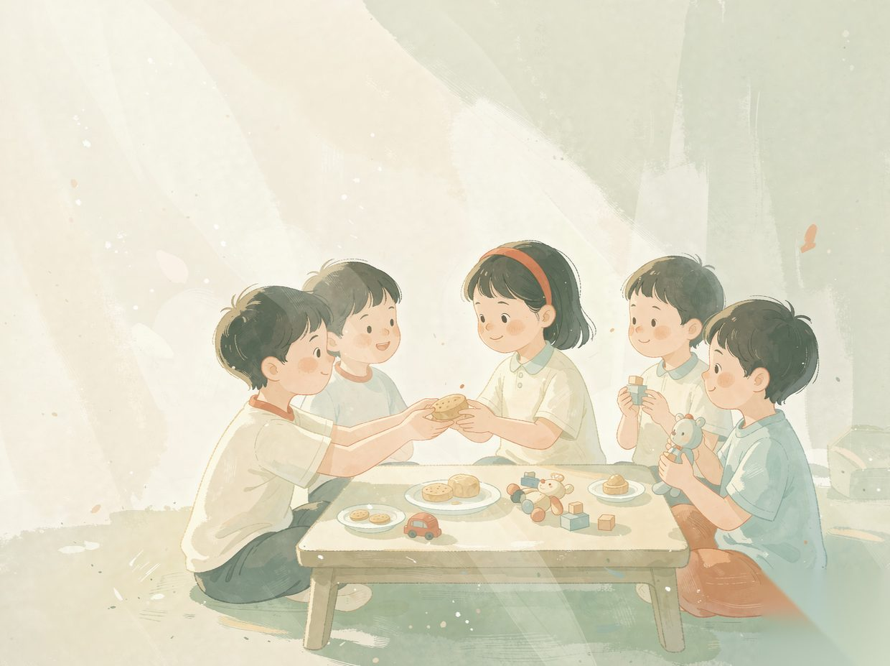
可以给，也可以不给；愿意给，才叫让。
手足、同伴之间的和睦，就是从小小的取舍练习开始的。
争 抢 自 利只 看 见 自 己
只看见自己想要什么，优先满足自身欲望；得不到就哭闹，以自我为中心。
知 礼 而 让心 里 装 下 别 人
看见身边人的需求，愿意适度推让；懂得取舍，宽厚待人。
成 长 小 启 示
- 人本能会想要好东西，愿意谦让，是心里宽厚的成长。
- 礼让是发自本心的体谅，不是被逼迫着放弃。
- 手足、同伴之间的和睦，从小小的取舍练习开始。
- 宽厚的品性，就是在一件一件小事里慢慢养成。
给 爸 爸 妈 妈 的 一 句 话 · 避 开 常 见 误 区
这个故事最容易被用成一把尺子。三条提示，先护住孩子。
一、不拿孔融让梨做强制标准。不要对孩子说「孔融四岁就会让梨，你怎么这么小气」。小气是本能，谦让是需要慢慢修习的德性，不必苛责。
二、分清「礼让」和「无底线牺牲」。孩子的合理需求同样值得被尊重。可以引导分享，但不能要求孩子不断牺牲属于自己的东西。
三、承接教与学的二分。家长示范宽厚、稳定平和的家风，是施教一侧；能不能发自内心选择谦让，是孩子自主的修习选择。
接上选择力练习：宽厚是底色，孩子拥有拒绝不合理退让的权利，分享与谦让，优先尊重本心感受。
— 36 —
成人研学 · 古今汇观第十八课 · 深度页
融四岁，能让梨
《后汉书·孔融传》 ｜ 孝悌并举 ｜ 物权意识与共情 ｜ 克己复礼
一 · 字义与句读
让，推也，不争之谓。全句：孔融年仅四岁，便懂得手足之间推让和睦的道理。
事见《后汉书·孔融传》注引《融家传》：年四岁时，每与诸兄共食梨，融辄引小者。大人问其故，答曰：「我小儿，法当取小者。」由是宗族奇之。
承接孝亲一脉：孝为纵向人伦之敬，悌为横向同辈之让。孝悌并举，是儒家德行的根基。
二 · 命题考辨
勘误重点：后世长期简化这个故事，变成「凡事都要让」的规训，扭曲本意。
这个公案的核心，是在私欲升起的当下，能够觉察、能够收敛自我中心，而不是无条件放弃权益。
《论语》言「克己复礼」，四岁的孔融已经在极小的事情上做到了「克己」——克制想要占有好物的本能。
同时厘清：悌，是手足和睦、互相体恤，不是弱者单方面退让。兄友弟恭是双向的：兄长爱护弟妹，弟妹敬重兄长。
三 · 中西对照
《论语》：「孝悌也者，其为仁之本与。」孝悌是仁德最先生根之处。
发展心理学：幼儿早期是物权意识建立的关键期，分享与谦让是在确立自我边界之后向外发展共情；过早强迫分享，反而损伤安全感。
德性伦理：宽厚不是天生，是在一次次微小的取舍中反复练习而成。
反向思辨：过度宣扬无条件退让，容易形成讨好型人格，不敢维护自身合理边界，混淆谦让与软弱。
四 · 与前后课的张力
伦理次第连贯：为人子（纵向亲子）→ 亲师友（向外交往）→ 香九龄孝亲（纵向孝）→ 融四岁让梨（横向悌）。
呼应第十三课「人不学，不知义」：义就是在取舍之间拿捏分寸；让梨，就是义在同辈相处中的实践。
呼应第十二课「玉不琢，不成器」：想要占有是先天本能，谦让宽厚是打磨习气、显发良知的修习。
呼应第四课「教之道，贵以专」：稳定和睦的家风，才能滋养这种宽厚心性。
存 疑 · 留 待 深 究
一、当对方习惯性索取、持续消耗自己，「让」的边界在哪里？
二、如何区分发自本心的宽厚谦让，与害怕冲突、讨好他人的被动妥协？
三、现代独生子女家庭没有手足，这份「悌」的精神该如何落地练习？
— 37 —
润泽少儿启蒙国学 · 三字经第十九课 · 弟于长
第 十 九 课
弟于长，宜先知
tì yú zhǎng yí xiān zhī
先 ↓ 右列 再 ← 左列
此处「弟」读 tì，通「悌」，专指对年长之人的恭顺友爱，不是兄弟之「弟（dì）」。
古法竖排：自右而左，先读右列「弟于长」，再读左列「宜先知」。
弟（tì）通悌，敬顺年长 · 长是兄长与前辈 · 宜先知是德行次序在先
少儿共读读给孩子听
上一课我们读懂孔融让梨：在手足之间，学着克制私心、彼此谦让。这一句，把故事提炼成一门长久的功课。
对待兄长、年长的前辈，这份敬顺友爱，是我们早早就要明白、修习的道理。
先要分清：悌，不等于年纪大的人说什么都要听从。
它的内核，是一份发自内心的敬重。因为长兄、前辈先成长、先阅历，我们心存一份体谅与恭顺；但敬重，不代表放弃自己独立的想法。有不同意见，可以温和好好表达。
孝是善待父母，悌是善待兄长、年长同伴。
 敬重是抬起头听着，不是低下头退着。
敬重是抬起头听着，不是低下头退着。
为什么要「先知」？因为我们最先接触的人际圈，就是家人手足。良知与宽厚，先在家里的长幼相处里练习；之后走出家门，和师长、朋友相处，才懂得分寸。
谦让、敬顺，不是天生就会。小孩子本能只想顾及自己。正是在一次次相处里，慢慢看见长上的付出，学着礼让、体谅，这份心性慢慢长出来。
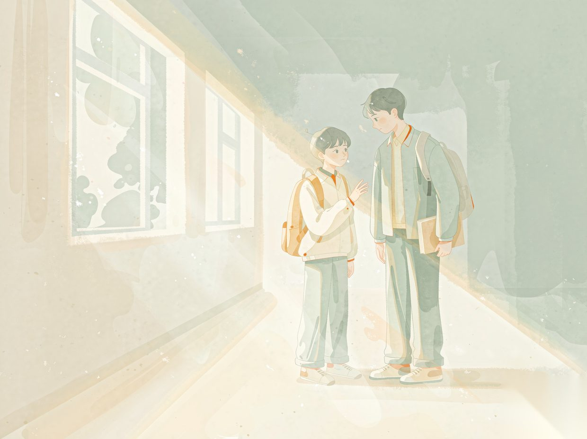
敬他年长，也敬他肯讲。
这和前面黄香温席的孝心，是同一条成长脉络：先近处，后远处；先家人，后众人。
慢 长 无 礼不 分 长 幼
只恃自我，任性顶撞；把年长之人的包容当成理所当然。
知 悌 有 敬有 分 寸 的 敬
心存敬重，待人有分寸；懂得体谅，长幼之间互相善待。
成 长 小 启 示
- 孝和悌是一对：孝敬父母，悌敬兄长前辈。
- 敬重长上是本心的宽厚，不是害怕、被迫听话。
- 德行的练习从家里开始，家里学会恭顺，出外才懂礼仪。
- 敬重不等于盲从，保有尊重，也可以说出自己真实想法。
给 爸 爸 妈 妈 的 一 句 话 · 校 准 悌 道 边 界
「长幼」这两个字，最容易被用成压制。三条校准，先立双向。
一、区分悌敬与等级压迫。悌的核心是友爱互敬，不是年长一方拥有支配晚辈的特权。兄要友，弟要恭，是双向；兄长也要爱护弟妹，不能仗年长而苛责、索取。
二、不拿「长幼」压制孩子。不能说「他比你大，你就必须听他的」——对错看事理，不只看年龄。
三、承接教与学的二分。家长在家示范长幼和睦、彼此尊重，属施教一侧；孩子能不能生起敬顺之心、自主选择谦和相处，是学习者的修习功夫。
接上选择力练习：以友爱敬重为底色，孩子拥有独立判断的空间，敬重是本心选择，不是硬性义务。
— 38 —
成人研学 · 古今汇观第十九课 · 深度页
弟于长，宜先知
通假「悌」 ｜ 《论语》孝悌为仁之本 ｜ 兄友弟恭的双向 ｜ 长幼秩序与平等
一 · 字义与句读
弟（tì），通悌；长，年长者。宜先知：在德行修习的次序上，应当优先知晓。全句：对待兄长、年长之人的恭顺友爱之道，是年少初学之时应当优先明白的。
承接孔融让梨的事例，由事入理：举让梨之例，立悌道之纲，孝悌成对，完成基础人伦框架。
二 · 命题考辨
勘误重点：后世常把悌固化为下级服从上级、晚辈无条件服从年长者，变成年龄霸权。
原典孝悌的底色是双向的仁德互动：兄友而后弟恭。年长一方有爱护、提携晚辈的本分；晚辈有敬重、体谅长上的本分，不是单向的顺从义务。
《论语》「孝悌为仁之本」，次序是：人先在至亲、长幼之间练习共情与克制私心，再把这份仁爱向外推及众人。所以说「宜先知」，是修习次序在先，不是价值上唯一至高。
三 · 中西对照
《论语·学而》：「孝悌也者，其为仁之本与。」与本句次序完全契合。
社会心理学：长幼秩序是早期社群合作的简化秩序，降低人际冲突；现代文明则以平等原则制衡年龄带来的权力差。
德性养成论：仁德由近及远推扩，亲密的家庭关系是德性最初的试验场。
反向思辨：优先强调长幼之序，极易固化年龄尊卑，掩盖年长者的过失，压抑晚辈的表达与独立思考——这是后世流弊，需时时觉察。
四 · 与前后课的张力
伦理链条收拢：为人子，方少时 → 亲师友，习礼仪；香九龄（孝·纵向）→ 孝于亲，所当执（守孝之本）；融四岁（悌·横向）→ 弟于长，宜先知（立悌之纲）。
呼应第十三课「人不学，不知义」：孝悌就是义在家伦里最基础的落地。
呼应第十二课「玉不琢，不成器」：克制自我中心、生起敬顺，是打磨习气、显发良知的修习。
呼应第四课「教之道，贵以专」：稳定和睦、彼此善待的家风，是滋养孝悌心性最重要的教化外缘。
存 疑 · 留 待 深 究
一、当年长之人言行失当，还要不要守这份悌敬？敬心可存，如何不盲从？
二、现代社会讲究人人平等，长幼之序的价值在今天该如何转化，而不变成尊卑枷锁？
三、独生子女无手足，悌道如何迁移到同学、学长、前辈的相处之中？
— 39 —
润泽少儿启蒙国学 · 三字经第二十课 · 首孝悌
第 二 十 课
首孝悌，次见闻
shǒu xiào tì cì jiàn wén
先 ↓ 右列 再 ← 左列
古法竖排：自右而左，自上而下。先读右列「首孝悌」，再读左列「次见闻」，每列从上往下。
首是次序之先 · 孝悌是纵向敬亲、横向敬长 · 见闻是向外广学
少儿共读读给孩子听
前面我们把孝、悌两条人伦根基学完：孝敬父母，恭顺兄长前辈。这一句，给出学习的先后次序。
第一优先修好孝悌的本心，然后再去广博地见识、学习各种知识学问。
这里非常容易读偏，一定要读懂：不是不要读书、不要学知识。
它讲的是根基先后。如果一个人读了很多书，懂得很多道理，却没有体恤亲人、善待他人的心，学识就容易变成炫耀、算计的工具。
孝悌，就是稳住内心的底色；底色站稳之后，再去多看、多听、多学，所学的知识才会用来善待自己、善待旁人。
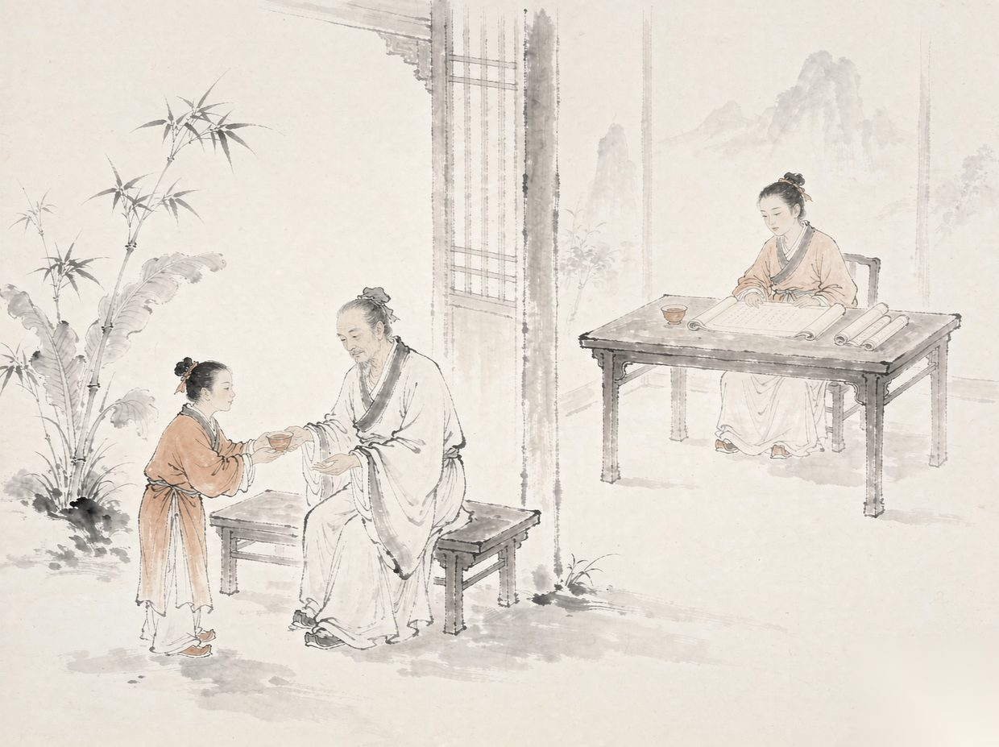
先做人，再读书；读书也是为了做人。
这也呼应我们一直讲的：本心良知如同璞玉，孝悌就是最先打磨出来的温润质地；见闻学识，是后面用来开阔这块玉的格局。
不是二者二选一，是有先后。先学会做人的分寸，再扩充见识。
 一手敬人，一手读书，两件事一起长。
一手敬人，一手读书，两件事一起长。
知识本身没有善恶，要看持守知识的人，本心如何。
博 闻 而 无 本学 识 很 多，人 很 冷
学识不少，却自私冷漠、恃才傲物；把知识当成攀比、压倒别人的资本。
先 本 后 学心 里 有 敬
心中存敬存体恤，再去广学见闻；用学识涵养本心，助人利他。
成 长 小 启 示
- 学习有次序：先养善良宽厚的心，再学各样知识。
- 知识本身没有善恶，要看持守知识的人，本心如何。
- 孝悌是根基，见闻是枝叶；根基稳固，枝叶才能长久繁茂。
- 读书求知，最终是为了更好地明白事理、温柔待人。
给 爸 爸 妈 妈 的 一 句 话 · 平 衡 德 行 与 学 业
「首」「次」两个字，最容易被读成偏废。三条提示，守住平衡。
一、次序不等于偏重偏废。不是德行做好了才可以读书，而是同步养育、价值优先级不同。日常一边陪伴修习人伦，一边读书拓展见闻。
二、警惕两种极端。只抓成绩学识，忽略共情与德行；或者空谈德行，排斥知识学习。
三、承接教与学的二分。家长以身示范孝悌、建立稳定家风，属施教一侧；孩子自主体会仁爱、主动求学，属学习者的修习。
接上选择力练习：宽厚敬爱的底色不变，见闻的方向与兴趣，可以尊重孩子自主选择。
— 40 —
成人研学 · 古今汇观第二十课 · 深度页
首孝悌，次见闻
本末之辨非有无之辨 ｜ 《论语》行有余力则以学文 ｜ 德性先于思辨 ｜ 品格为学习基座
一 · 字义与句读
首，先也；次，后也。见闻，目之所见、耳之所闻，泛指外求之学、经史博物、世间知识。全句：修习的次序，以孝悌仁德为首要根基，而后再广求见闻、博览学识。
这是前面孝悌一系列故事之后的总收束，把人伦实践与求知之学划分次第。
二 · 命题考辨
勘误重点：后世常曲解为「德行最重要，读书不重要」，或变成重德轻智、排斥求知。
儒家的本意是本末之辨，不是有无之辨。孝悌为「本」，见闻为「末」；有本有末，才是完整的人。
《论语·学而》：「弟子入则孝，出则悌，谨而信，泛爱众，而亲仁。行有余力，则以学文。」正是本句源头，一脉相承。
换言之：人伦本分践行妥当之后，有余力再研习文典学识。不是不许学文，是不可以舍本逐末。
三 · 中西对照
儒家：仁为本，学为用；德性先立，知识后广。
亚里士多德：实践德性优先于纯粹思辨，良好品格是一切理智活动的前提。
现代教育理论：品格素养是底层基座，认知学习建立在安全、共情的人格基础之上。
反向思辨：「先德后学」的次序容易被用来压制求知，也容易把孝悌教条化，用伦理束缚探索精神。德性是活的共情，不是禁锢求知的枷锁。
四 · 与前后课的张力
链条收拢到学习总纲：为人子 → 亲师友；香九龄（孝之行）→ 孝于亲（守孝之本）；融四岁（悌之行）→ 弟于长（立悌之纲）→ 首孝悌，次见闻（确立本末次序）。
呼应第十三课「人不学，不知义」：孝悌就是义最根本的落地；见闻，是向外延伸，去认识更大世界里的义理。
呼应第十二课「玉不琢，不成器」：孝悌打磨玉质，见闻雕琢器用；质地纯净，器才可贵。
呼应第四课「教之道，贵以专」：稳定的教化先护持仁德本心，再引导向外求知，次序不乱。
存 疑 · 留 待 深 究
一、如果一个孩子天资聪颖、求知欲极强，但共情与人伦功课滞后，如何平衡引导？
二、本末的次序，是人生早年的安排，还是终身都要遵守的准则？
三、现代分科教育体系之下，如何落实「首孝悌，次见闻」，而不与通识教育冲突？
— 41 —
润泽少儿启蒙国学 · 三字经第二十一课 · 知某数
第 二 十 一 课
知某数，识某文
zhī mǒu shù shí mǒu wén
先 ↓ 右列 再 ← 左列
古法竖排：自右而左，自上而下。先读右列「知某数」，再读左列「识某文」，每列从上往下。
知是通晓条理 · 数是数理与次序 · 识是读懂文里的道理
少儿共读读给孩子听
上一课我们学到学习的次序：先修好孝悌这份仁心，再去拓宽见闻。这一句，就讲见闻从哪里起步。
先要懂得数理，再读懂文字典籍。
「数」，一开始就是数数、计算，分辨多少、长短、先后。顺着数往深走，是时序、节律、万物的秩序。我们看四季轮回、日月交替，里面都藏着「数」的条理。
「文」，是古人写下的文字、故事、道理。文字把前人的经验、善心、智慧保存下来，我们透过读书，跨越时间，和古人心意相通。
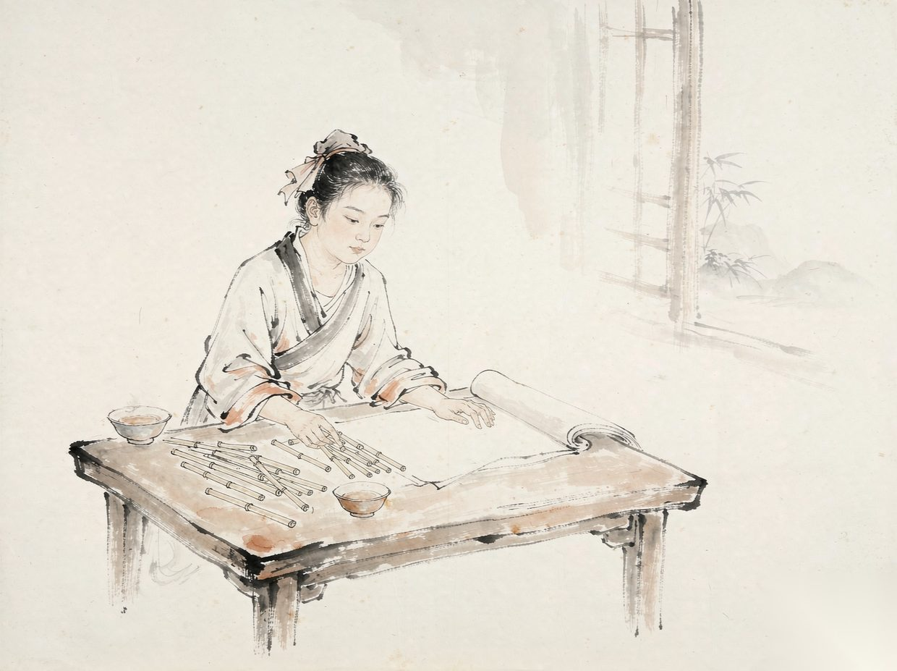
理与文，两只手一起用。
这里要记住：数和文，都只是工具。
学算数，不是只为算对题目；学文字，也不只是认识汉字。
工具的意义，是帮我们看懂世界、理清思路，更好地去践行孝悌、体谅他人。
本心若是不稳，就算精通算术、饱读文章，学问也容易变成向外夸耀的资本。
 先好奇，再精熟。
先好奇，再精熟。
德行为本，学识为用，二者搭配，才是完整的成长。
只 学 技 艺，忘 其 根 本会 算 会 读，人 却 冷
会算数、识字多，但冷漠自私；把读书计算当成攀比分数的竞赛。
本 立 而 后 学 数 文心 有 体 恤，再 求 知
心怀体恤，再借数理文字明理广见；以学问开阔心胸，安顿自己、善待他人。
成 长 小 启 示
- 向外求知，最先有两门根基：数理次序，文字典籍。
- 数，教会我们分清条理；文，传递前人的善意与智慧。
- 文字、算术都是工具，工具的价值，要看使用它的那颗心。
- 德行为本，学识为用，二者搭配，才是完整的成长。
给 爸 爸 妈 妈 的 一 句 话 · 避 开 功 利 化 学 习
「知数识文」最容易被压成刷题与打卡。三条提示，护住兴趣与本心。
一、不要简化成刷题、识字打卡。数是感知秩序，文是领会情理；兴趣优先，不唯速度、不唯数量。
二、承接本末次序。先护好孩子共情体恤的心，再陪伴他探索数理、阅读文字；不要反过来，以学业成绩压倒品格养育。
三、承接教与学的二分。家长营造安定的阅读、探索环境，是施教一侧；孩子生出好奇、愿意领会数理与文字，属自主修习。
接上选择力练习：仁心底色不变，孩子可以按自己的节奏与喜好探索数字与文字，不必统一进度。
— 42 —
成人研学 · 古今汇观第二十一课 · 深度页
知某数，识某文
六艺之书与数 ｜ 《论语》行有余力则以学文 ｜ 两大符号认知系统 ｜ 工具中立而用心有别
一 · 字义与句读
数，算术，古六艺之「数」；文，文字、文典。全句：在广见博闻的阶段，先要通晓数理次序，读懂典籍文字。
承接「首孝悌，次见闻」，是见闻一层的落地分科：人伦之本确立，而后开启智识基础的修习。
二 · 命题考辨
勘误重点：很多人理解成一份启蒙识字算数的早教清单。
放在儒家六艺体系里看，「数」不只是计算，是万物的秩序、节律、分寸；「文」不只是认字，是载道的文本。
孝悌主仁，是价值根基；数主条理，文主传承。仁为本，理与文为两翼。
这一句承接《论语》「行有余力，则以学文」：「学文」的起点就是识文，搭配知数，理、文并举。
三 · 中西对照
六艺：礼、乐、射、御、书、数。书、数正是启蒙基础，与本句一一对应。
现代认知科学：逻辑数理与语言文字，是人类两大基础符号认知系统，是一切高阶学习的底座。
人文传统：语言承载价值叙事，数理提供客观秩序，二者不可偏废。
反向思辨：符号与知识体系本身中立，脱离德性根基，精密的数理、广博的文辞都可以用来谋私、巧饰。
四 · 与前后课的张力
次第收拢一段：首孝悌（立心之本）→ 次见闻（向外求知）→ 知某数，识某文（求知的入门根基）。
呼应第十三课「人不学，不知义」：义藏在人伦，也藏在事理与文脉之中；知数，明事理分寸；识文，见古人心义。
呼应第十二课「玉不琢，不成器」：孝悌磨出玉之质地，数与文雕琢器物纹理，让璞玉可发挥功用。
呼应第四课「教之道，贵以专」：稳定持续的启蒙，让心性与智识同步生长，不偏一端。
存 疑 · 留 待 深 究
一、有人不擅数理却深通人文，有人逻辑极强而不喜文字，算不算偏离这个次第？
二、现代信息泛滥，文字典籍良莠不齐，「识某文」如何分辨，避免被杂说误导？
三、数的尽头是规律，文的尽头是价值，二者之间如何相通？
— 43 —
润泽少儿启蒙国学 · 三字经第二十二课 · 一而十
第 二 十 二 课
一而十，十而百
yī ér shí shí ér bǎi
先 ↓ 右列 再 ← 左列
古法竖排：自右而左，自上而下。先读右列「一而十」，再读左列「十而百」，每列从上往下。
一是计数之始 · 而是递进推衍 · 十、百是十进制进位
少儿共读读给孩子听
上一课我们知道，向外求学先要知晓数理、识读文字。这一句，就是数理的入门：从一开始，数到十；由十再往上，推衍到百。
古人用的是十进制。一个为基础，十个一合成十，十个十合成百。
看着只是数数，背后藏着一个很重要的道理：万物都是从微小的起点，一步步积累、推演开来。
不是一下子就抵达宏大。所有庞大的数字、复杂的事物，都起于「一」这个开端。
 一根一根摆过去，数目就长出来了。
一根一根摆过去，数目就长出来了。
这个道理，也和我们前面学的功课相通。
孝心、宽厚的心，也起于微小的一念体恤，慢慢坚持，慢慢扩充；学问也是从认识一个字、明白一件小事开始，日积月累，越学越广。
数的递进，就是成长的隐喻：跬步千里，起于最初的那一步、那一念。
 满十就换一摞，秩序看得见。
满十就换一摞，秩序看得见。
有序的积累，才会扎实稳固。
贪 求 广 大，轻 视 开 端想 一 步 到 位
总想一步学会很多，忽略基础；觉得小事微不足道，不愿用心。
由 一 推 衍，循 序 积 累守 住 起 点
守住起点，循序渐进，慢慢生长；明白宏大由微小汇聚而成，重视开端。
成 长 小 启 示
- 数字从一开始，学问、德行，同样起于微小的开端。
- 十进制是一种秩序，教会我们循序渐进。
- 再大的格局，都是一点点积累出来的，不要轻视当下的小事。
- 有序的积累，才会扎实稳固。
给 爸 爸 妈 妈 的 一 句 话 · 跳 出 单 纯 数 数 的 启 蒙
这两句不只是口诀。三条做法，把秩序感带进日常。
一、不局限于背诵数字。借助实物，让孩子看见「进位」、感知「积累」，把数理秩序和成长道理关联起来。
二、承接本末次序。数理秩序是工具，背后「由微至广」的道理反过来滋养孝悌本心——体恤之心，也是一次次小事慢慢养厚。
三、承接教与学的二分。家长提供教具、引导观察秩序，属施教一侧；孩子自己感知、体会递进规律，是自主的修习。
接上选择力练习：秩序规律不变，孩子可以用自己喜欢的方式（积木、石子、算珠）去探索数字。
— 44 —
成人研学 · 古今汇观第二十二课 · 深度页
一而十，十而百
《道德经》道生一 ｜ 十进制位值制 ｜ 渐进式学习 ｜ 线性推演的限度
一 · 字义与句读
一，数之始；十，十个一；百，十个十——十进制递推。全句：计数之法，自一开始，进而为十；自十复进，而为百。
承接「知某数」，开启数的推演启蒙，从基础进制带出「由本达末」的思维范式。
二 · 命题考辨
勘误重点：很多人只当成幼儿数数口诀，忽略它承载的东方思维。
这里的「一」，不只是数字 1。它与《道德经》「道生一」同一种思维范式：一切繁复，皆从一个本源次第展开。
德行上：一念之仁（一），持续持守，扩充为孝悌、博爱；数理上：一为起点，层层进位，衍生无穷数目。
文本用十进制这个人人能懂的例子，把「由本生末、循序推扩」的思维教给初学之人。
三 · 中西对照
东方象数：数不单是计量，同时象征万物演化次第，由简入繁。
数学：十进制位值制，是人类最通用的计数体系，降低推演的认知负担。
认知心理学：人的学习天然是渐进式，从简单原型逐步迁移到复杂内容。
反向思辨：「由一推多」的思维容易走向单向线性的执念；世界也有并行与突变，不可只用这套线性模型概括一切。
四 · 与前后课的张力
次第链条继续延伸：首孝悌 → 次见闻 → 知某数，识某文 → 一而十，十而百。
呼应第十三课「人不学，不知义」：义有本末，事有先后，与数字的递进秩序同构。
呼应第十二课「玉不琢，不成器」：打磨也是一点点、一次次持续用功。
呼应第四课「教之道，贵以专」：专一持续、循序积累，方能有成。
存 疑 · 留 待 深 究
一、既然万物起于一，那么这个最初的「一」，还能不能再往前追溯？
二、线性递进的学习方式，如何兼容跳跃式、顿悟式的成长？
三、二进制与其他进制同样成立，为何古人启蒙优先选用十进制来讲这个道理？
— 45 —
润泽少儿启蒙国学 · 三字经第二十三课 · 百而千
第 二 十 三 课
百而千，千而万
bǎi ér qiān qiān ér wàn
先 ↓ 右列 再 ← 左列
古法竖排：自右而左，自上而下。先读右列「百而千」，再读左列「千而万」，每列从上往下。
百、千、万是十进制继续进位 · 而是接续绵延 · 十个百为千，十个千为万
少儿共读读给孩子听
上一课我们学到，数字从一开始，一到十，十到百。这一句顺着这个秩序继续往前走。
百往上累积，成为千；千继续累积，成为万。
万，已经是很大的数目了。但古人想告诉我们的，不只是认大数。
再宏大的万千，源头都只是那个小小的「一」。没有一次次踏实的累加，就不会有千与万。
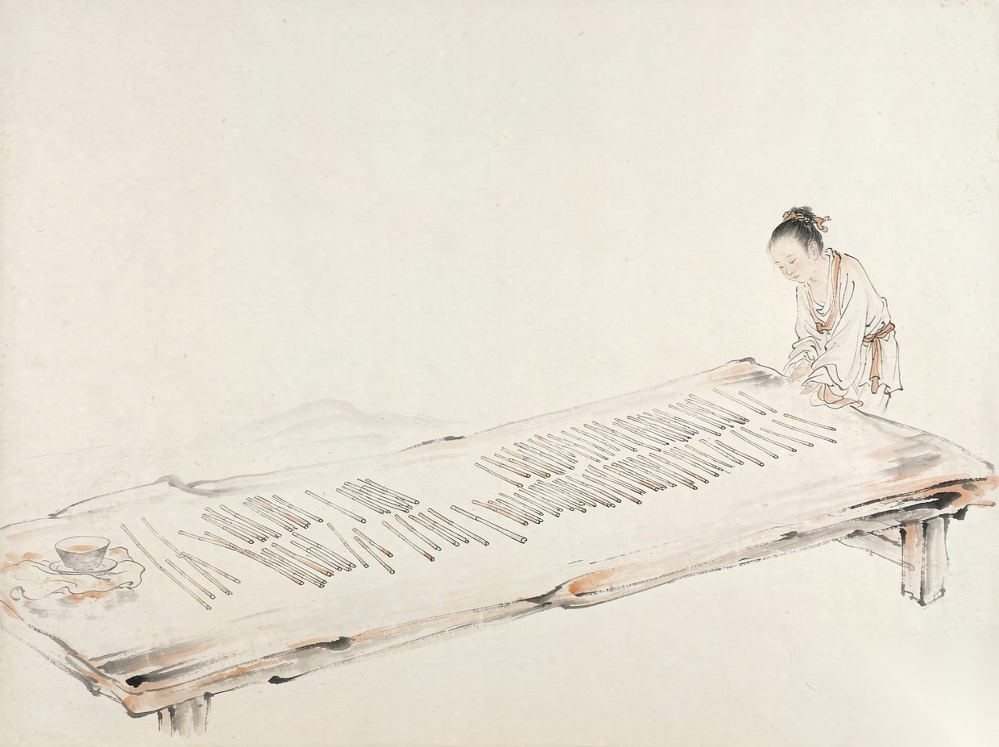
数目在长，源头没变。
这就像我们的善心、学问，不是突然变得广博深厚。
一次体谅、一次读书、一次自省，都是那个小小的「一」；日日坚持，慢慢扩充，终能汇聚成广阔的格局。
同时也要懂得：数量大，不等于更好。
万千的数字本身没有好坏。如果起点那一念是自私，不断向外扩张，就会变成贪求；如果起点是体恤仁善，持续扩充，便是宽厚博爱。起点的本心，决定了向外延伸之后的方向。
 一块一块，才叠得高。
一块一块，才叠得高。
这正好呼应前面「首孝悌，次见闻」的本末次序：本心守住，扩充才有方向。
贪 慕 宏 大，轻 视 起 点忘 了 源 头
一心想要宏大成果，不屑微小日常；向外无限追逐，忘记初心。
知 源 守 本，循 序 扩 充越 广 越 温 和
清楚万千起于一，踏实做好当下每一次修习；本心稳固，再向外延展。
成 长 小 启 示
- 万千广大，起于微末，所有长远的成长，贵在持续积累。
- 向外扩充的前提，是守住最初那一颗体恤、良善的心。
- 学问、德行，都是慢慢扩展开的，不必急于求成。
- 懂得累积的秩序，也就懂得成长的节奏。
给 爸 爸 妈 妈 的 一 句 话 · 引 导 孩 子 看 见 本 末
大数易教，本末难讲。三条提示，把道理落回日常。
一、不只教大数认读。借这个道理引导孩子：好习惯、好品性，都是一天天慢慢养出来的。
二、提醒边界。广博不等于无度扩张，没有德行根基的欲望扩张，就是贪求。
三、承接教与学的二分。家长引导看见积累的秩序，是施教；孩子愿意在日常小事里持续用心，是自主修习。
接上选择力练习：积微成大的规律不变，孩子可以依照自己的节奏稳步成长，不必攀比速度。
— 46 —
成人研学 · 古今汇观第二十三课 · 深度页
百而千，千而万
象数思维 ｜ 十进制无限迭代 ｜ 由近及远的仁爱扩充 ｜ 扩充与知止
一 · 字义与句读
十百为千，十千为万，十进制递进相推。全句：由百递进而为千，由千递进而为万，秩序绵延，推之可至无穷。
承接上一课「一而十，十而百」，完成整套十进制启蒙的闭环。
二 · 命题考辨
勘误重点：很多人把这两句连读，只当成数字背诵口诀。
放在全文脉络里，它是一套象喻：「一」为本，层层进位，向外生发，可至万千。
德行上：孝悌一念为本，由亲及友、由家及天下，就是「百而千，千而万」；求知上：识一字、明一理为本，日积月累，博览万物，也是这个次序。
但这里藏一个关键提醒：推演可以无穷，根基不能丢失。一旦源头的仁心丧失，向外的延展只会是私欲的放大。儒家重本末，其意正在于此。
三 · 中西对照
象数思想：数不只为计量，用以象征道体由本生末、由简生繁的演化。
数学：位值制十进制可无限向上迭代，具备无限推演的能力。
德性哲学：仁爱是可推扩的，「老吾老以及人之老」正是这个扩充路径。
反向思辨：线性向外扩充，容易陷入「越多越好、越大越好」的执念而不知收敛。扩充之外，还需守本、知止。
四 · 与前后课的张力
完整链条：首孝悌 → 次见闻 → 知某数，识某文 → 一而十，十而百 → 百而千，千而万。
呼应第十三课「人不学，不知义」：义有推扩之理，由近推远，由少推多。
呼应第十二课「玉不琢，不成器」：心性打磨，也是日复一日持续用功，慢慢温润广大。
呼应第四课「教之道，贵以专」：专一守本，循序扩充，才不会在广博之中迷失。
存 疑 · 留 待 深 究
一、扩充有没有边界？什么时候应当知止，不再向外追逐？
二、线性累加的模式，能不能解释顿悟式的突破？
三、如果「一」这个本源本身有偏差，不断推扩之后，会带来什么样的结果？
— 47 —
润泽少儿启蒙国学 · 三字经第二十四课 · 三才者
第 二 十 四 课
三才者，天地人
sān cái zhě tiān dì rén
先 ↓ 右列 再 ← 左列
古法竖排：自右而左，自上而下。先读右列「三才者」，再读左列「天地人」，每列从上往下。
才是草木初生的本然生机 · 天主运行 · 地主承载 · 人居其中而自觉
少儿共读读给孩子听
前面我们顺着数字，看到万物可以从微小的「一」，不断累积、扩充到万千。现在，经文给我们一个更大的框架。
天地人，叫做三才。
天在上方，按时流转，日出日落、寒暑交替，自有不变的节律。
地在下方，安稳承载，长出花草树木，托住一切生命。
人站在天地中间，和天地并列为三才。
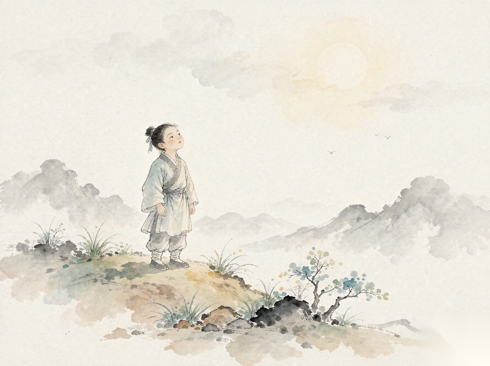
抬头看天，低头看地，才知道自己站在哪里。
这是告诉我们：人不是渺小无助的尘埃，也不是可以肆意妄为、主宰万物的霸主。
人的位置，是承接天地的生机，懂得效法天地，守好自己的本分。
我们前面修习的孝悌、礼让、求知，都落在这个框架里面。
天有信，四时从不失序；地有容，滋养万物而不居功。
人学习天地的信与包容，在家敬亲、对友谦让、勤学明理，就是在活出「人」这一才的价值。
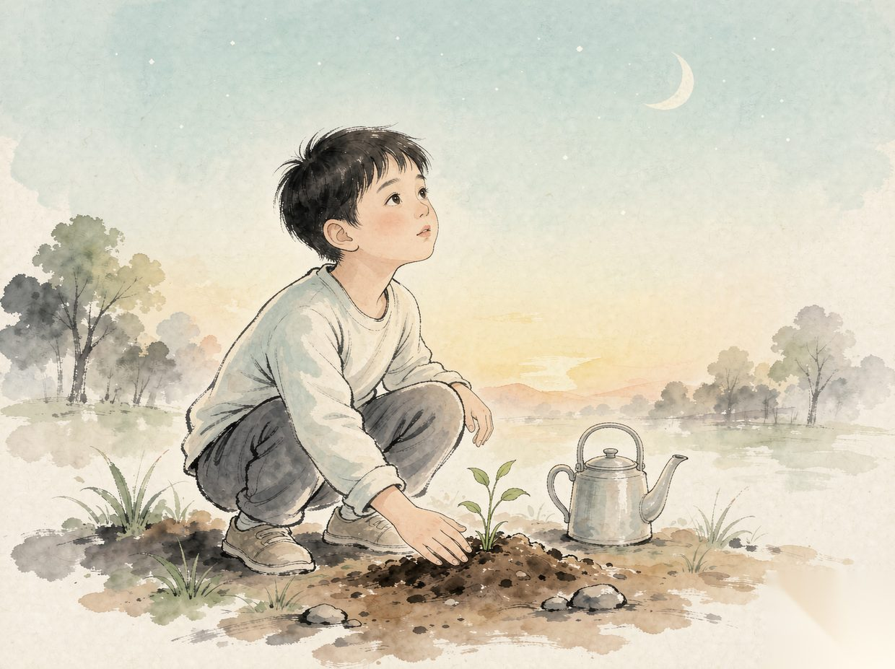
一株苗、一寸土，就是天地的入口。
保有对天地万物的敬畏，心性才不容易傲慢。
妄 自 尊 大，肆 意 索 取只 看 见 自 己
以为人可以随意支配天地万物；只看见自己的欲望，眼界狭小。
三 才 就 位，敬 畏 自 持知 道 自 己 的 位 置
知天地有常，生敬畏之心，顺道而行；把修身放在天地的大视野里，格局开阔。
成 长 小 启 示
- 天地人三才，是古人给我们的生命坐标。
- 天主运行，地主承载，人居其中，承续造化。
- 修身、行善、求学，不只是做人的规矩，也是在完成天地赋予人的本分。
- 保有对天地万物的敬畏，心性才不容易傲慢。
给 爸 爸 妈 妈 的 一 句 话 · 把 敬 畏 融 入 日 常
「三才」最容易被讲成玄学。三条做法，把它落回可感可见。
一、不要讲成玄学。从自然感知入手，看季节、看草木生长，让孩子体会天地自有规律，生起敬畏，而不是恐惧。
二、承接本末次序。孝悌是向内的心性根基，三才是向外安放自我的宏大框架。先修好人心，再明白人和天地的关系。
三、承接教与学的二分。家长带领观察自然、引导敬畏，属施教一侧；孩子慢慢体会自身在天地之间的位置，是自主的修习。
接上选择力练习：三才的秩序恒定，孩子可以用自己的方式感受自然，发展属于自己的生命感知。
— 48 —
成人研学 · 古今汇观第二十四课 · 深度页
三才者，天地人
《说文》才为草木初生 ｜ 《易·说卦》三才之道 ｜ 生态整体观 ｜ 天人相感与宿命之辨
一 · 字义与句读
才，草木初生之芽，引申为本然生机。三才：天、地、人三大生机系统。全句：所谓三才，即是天、地、人。
由前面数量递进的象数，转入易学底层框架，是认知层级的一次跃升：从计数累积，进到宇宙结构。
二 · 命题考辨
勘误重点：后世容易把三才理解成三层高低尊卑，或神秘的天命等级。
《易·说卦》：「立天之道曰阴与阳，立地之道曰柔与刚，立人之道曰仁与义。」三才是三套并行、互感互通的法则：天道阴阳，地道刚柔，人道仁义。
人之所以配称三才，不在于能力强大，而在于人能够自觉践行仁义，贯通天地阴阳刚柔之理。
不是人高于天地，而是人道，是天地造化之中，觉知、反省、自主的那一环。
三 · 中西对照
《周易》三才体系：天人不是隔绝，是相感相应。
生态思想：现代生态学同样强调人是生态系统中间一环，而非世界主宰。
西方古典哲学：人是万物之灵；但容易走向人类中心主义。
反向思辨：天人合一、三才并举，容易滑向宿命论，把一切归于天命，消解人的自主担当。三才恰恰相反：天地有常，而人道在人自己选择。
四 · 与前后课的张力
次第链条继续升级：首孝悌 → 次见闻 → 知某数，识某文 → 一而十，十而百 → 百而千，千而万 → 三才者，天地人。
呼应第十三课「人不学，不知义」：仁义就是人道的核心；三才，就是仁义安放的宏大场域。
呼应第十二课「玉不琢，不成器」：天地给了人可以觉醒的禀赋，需要打磨修身，才配称人之一才。
呼应第四课「教之道，贵以专」：教化的长远目标，是让孩子认清自身位置，在天地之间守人道、行仁义。
存 疑 · 留 待 深 究
一、如果天地自有规律，人的努力与选择，会不会只是天道里注定的一环？
二、三才框架里，如何区分敬畏自然，与消极顺从、放弃改造改善环境的边界？
三、现代宇宙视野之下，天地的概念已极大拓展，三才的精神内核该如何转化？
— 49 —
润泽少儿启蒙国学 · 三字经第二十五课 · 三光者
第 二 十 五 课
三光者，日月星
sān guāng zhě rì yuè xīng
先 ↓ 右列 再 ← 左列
古法竖排：自右而左，自上而下。先读右列「三光者」，再读左列「日月星」，每列从上往下。
光是照见万物的明亮 · 日主昼 · 月主夜 · 星标方位与时节
少儿共读读给孩子听
上一课我们认识了三才：天、地、人。这天道之中，有三样最明亮、长久照耀世间的，就是日、月、星，称为三光。
太阳升起，白昼来临，万物舒展生长；
月亮升起，清辉遍洒，天地归于安静；
繁星在夜空排布，静静闪烁，指引方位，标记时节。
它们日复一日、年复一年，循环往复，从不会随意错乱。
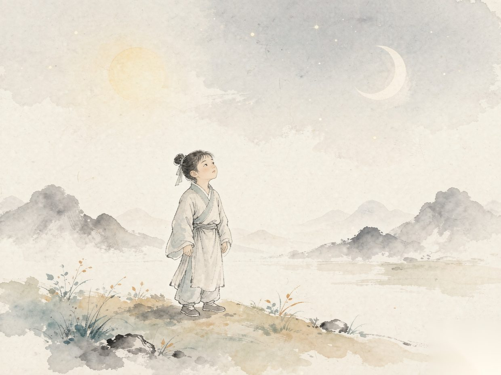
同一天幕里，日月星各在其位。
古人看着日月星辰，读懂一件事：天地自有恒定的节律。
我们前面学习的守孝悌、循序渐进、知敬畏，本质上也是学着守住一份稳定的本心，如同日月星辰，恒常有序。
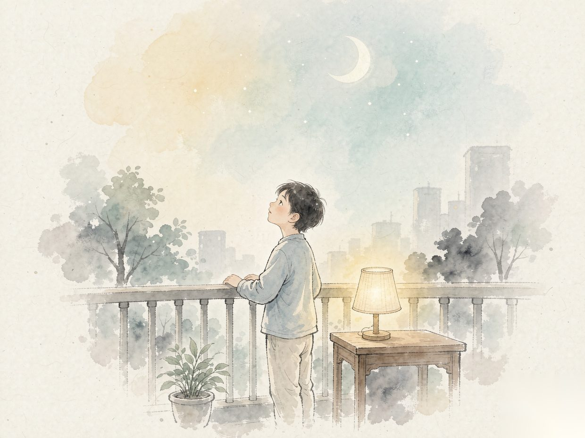
看一会儿天，心就慢下来。
日月星光，照亮世间万物；而人心的良善、恭敬与明理，是我们内在的光明。
外在有三光照天地，内在有本心照自己。内外相应，就是这一句藏着的深意。
心 随 纷 乱，摇 摆 不 定念 头 忽 明 忽 暗
念头忽善忽恶，没有定准；只追逐耀眼的光亮，不懂静守。
如 三 光 恒 常，守 心 有 序有 节 律 地 亮 着
像日月星辰一样有稳定的节律，守住本心；懂得光明有动有静、有昼有夜，懂得张弛。
成 长 小 启 示
- 日月星，是天道里恒定的光明与秩序。
- 外在的光照亮山河大地，内心的善念照亮自己。
- 时序有昼夜，成长也有动静，要劳逸结合。
- 观察天象，学会敬畏天地恒久不变的规律。
给 爸 爸 妈 妈 的 一 句 话 · 引 导 观 察，建 立 节 律 感
不必讲成天文课。三条做法，把「三光」变成日常可感。
一、优先带着孩子在晨昏、夜晚观察日月星辰，感受昼夜交替；不必讲复杂天文。
二、联动作息。日月有昼夜，人的起居、学习休息也要有节律，呼应天道。
三、承接教与学的二分。家长陪伴观天象、讲解节律，属施教一侧；孩子慢慢体会安定有序的力量，是自主修习。
接上选择力练习：日月星辰的秩序不变，孩子可以按自己的节奏去观察、感受自然。
— 50 —
成人研学 · 古今汇观第二十五课 · 深度页
三光者，日月星
《说文》光为明 ｜ 日阳月阴星纪 ｜ 天文学客观轨道 ｜ 星象宿命之辨
一 · 字义与句读
光，明也。三光：日、月、星，为天之昭明。全句：所谓三光，便是太阳、月亮、星辰。
承接三才，由天地人的本体框架，转入天道可见之象：三才是天地人这个大结构，三光是天道向外显发的光明征象。
二 · 命题考辨
勘误重点：容易只当成天文名词罗列。在古象数体系里，三光不只是发光天体。
日为阳之极，月为阴之宗，星为阴阳之纪。日月主昼夜寒暑，星辰定四时方位。
天有三光以照物，人有良知以自照。这是经典一贯的类比：外有天光，内有心光。
不是简单拟人，是提醒学习者：你仰望的天地秩序，同样可以内化成为心性的秩序。
三 · 中西对照
华夏象学：观天象以察时序，天象是德行的参照。
现代天文学：日月星辰是天体，有客观运行轨道；节律是客观物理规律。
西方古典：星空是秩序、理性的象征。
反向思辨：天象有序，不等于人间祸福由星辰决定；取其「恒常节律」的喻义，不落入星象宿命。
四 · 与前后课的张力
次第链条继续延伸：首孝悌 → 次见闻 → 知某数，识某文 → 一而十，十而百 → 百而千，千而万 → 三才者，天地人 → 三光者，日月星。
呼应第十三课「人不学，不知义」：义里面就包含「有序、恒常」，效法天道秩序，安顿自身。
呼应第十二课「玉不琢，不成器」：打磨心性，就是让内在本心如三光一般明朗稳定。
呼应第四课「教之道，贵以专」：专一守序、持之以恒，如同日月轮转，久久不息。
存 疑 · 留 待 深 究
一、日月星辰的光明被乌云遮蔽，人心的光明被烦恼遮蔽时，如何自照？
二、天道恒常无情，人道有情；效法天道秩序，如何不变得冰冷刻板？
三、现代城市光污染之下看不见繁星，这份「三光」的精神又该如何体会？
— 51 —
润泽少儿启蒙国学 · 三字经第二十六课 · 三纲者
第 二 十 六 课
三纲者，君臣义。父子亲，夫妇顺
sān gāng zhě jūn chén yì fù zǐ qīn fū fù shùn
古法竖排：自右而左，自上而下。上段先读右列「三纲者」，再读左列「君臣义」。
下段续读：先读右列「父子亲」，再读左列「夫妇顺」。
少儿共读读给孩子听
三纲者，君臣义。
父子亲，夫妇顺：承接「此六谷，人所食」之后人伦一段，立三纲。
纲者，网之大绳，举一纲而众目张；三纲非三张网，是三处「谁先立其范」的分位：君先以义率臣，父先以亲率子，夫先以顺率和。
今本旧稿把此十二字拆成三课，与全书「十二字一课」之体例不合，今依原版合为一课。
对比：此六谷，人所食 / 三纲者，君臣义
六谷养身，三纲正伦；一养其形，一立其分。身不养则无以立伦，伦不正则虽饱亦乱。
对比前文阴阳太和：纲为阳之统，目为阴之从；统而不临，从而不谄，乃成太和。纲者自正其位，非以位凌人。君臣以义，父子以亲，夫妇以顺，皆是「在上者先尽其分」。
勘破俗见：两类常见偏差。其一，把三纲读成「下必从上」的绝对服从；其二，因后世滥用而全盘弃之，连「各有其分」亦不认。契合般若范式：佛说三纲，即非三纲，是名三纲。三纲是汉代立的名相，其义随世而变；执名相为天理，则纲为桎梏。
「纲」是渔网上的大绳，一提大绳，网眼都张开。
古人说三处大绳：君臣、父子、夫妇。
说的不是谁压着谁，是谁先做榜样：君先讲义，父先讲亲，夫先讲和。
上面的人先做好，下面的人才跟得上。
 说的是事，不是位。
说的是事，不是位。
 你递我接，事情就办成了。
你递我接，事情就办成了。
落到心上理解
承接上一课存疑：父子之亲既本于天，其余二伦何以立？
以「先尽其分」立之。父子之亲是天生，君臣夫妇是后合；天生者须养，后合者须约。约不在压，在各自先尽本分。
三纲是缘起：汉代为大一统立此名相，其用在定秩序；后世渐变为压制之具，名存而义失。
守其「各有其分」之实，去其「以位凌人」之偏，便是无住。
正 解其 一
原义是「在上者先尽其分」，君义、父亲、夫顺，皆先责己
正 解其 二
三纲是汉儒所立的名相，有它的时代与用意，可辨可改
成 长 小 启 示
- 三纲指君臣、父子、夫妇三处大分。
- 「纲」是大绳，不是锁链：先立者先尽责。
- 君先讲义，父先讲亲，夫先讲和，下面的人才跟得上。
- 名相会变，分与责不会凭空消失。
给 爸 爸 妈 妈 的 一 句 话 · 这 一 课 讲 什 么，慢 慢 说 给 孩 子 听
一、勘俗见。别用「三纲」给孩子讲服从。讲「谁先做榜样」，孩子才不别扭，也才学到真东西。
二、现代对照。像团队里主管先守时、先担责，组员才服；只喊口号不做事，纲就断了。
三、承接常变主线。三纲之名（变）随时代而改，各有其分（常）仍在。
四、承接教与学二分。长者先行是教，幼者观而效之是学；长者不行，教亦虚设。
承接选择力练习：在一个关系里，先问「我这一分尽了没有」，再问「对方该怎样」。
— 52 —
成人研学 · 古今汇观第二十六课 · 深度页
三纲者，君臣义。父子亲，夫妇顺
三纲者，君臣义。父子亲，夫妇顺 ｜ 少儿页＋成人页
一
字义与句读
纲：网之大绳，喻统纪。义：宜、合宜。亲：亲爱。顺：和顺。
全句释义：三纲者，君臣以义相待，父子以亲相与，夫妇以顺相和。
二
命题考辨
「三纲」之名，成于汉儒。《白虎通》以君臣、父子、夫妇为三纲；后世「君为臣纲、父为子纲、夫为妻纲」之说，渐由「统纪」转为「绝对」。二者须分清：前者言「在上者立范」，后者言「在下者服从」。三字经此十二字，用「义、亲、顺」三字作结，正取前者。
今人读此，当知两事：一，君臣一纲已随帝制而废，其位转为公职与公民；二，父子、夫妇二纲须重解为「相互的责任」，非单向之支配。
般若范式互参
名相是因缘假名：三纲之立，为大一统之秩序；其变，为近代之平等。执一名相为万世之则，则名相杀人。
延伸义理：
《金刚经》：无我相、人相、众生相。纲目之执，正是「相」执。
《道德经》：和大怨，必有余怨。以压求安，安不久。
《坛经》：若真修道人，不见世间过。先尽其分，则不见他人之过。
三
跨典互参（老庄、般若对照）
《道德经》：上善若水，处下而利万物。在上者处下，纲乃立。
《庄子》：君臣之分，义也；然「义」非「命」。
串联前文：六谷六畜养其身，七情八音养其心，九族十义正其伦，三纲立其纲。
四
和前面课程的张力
次第链条继续延伸：……稻粱菽，麦黍稷 → 此六谷，人所食 → 三纲者，君臣义 → 父子亲，夫妇顺 → 马牛羊，鸡犬豕。
呼应「此十义，人所同」：十义言其目，三纲言其纲；纲举目张。
呼应「长幼序，友与朋」：序与纲，皆所以定分。
呼应「教之道，贵以专」：纲之教，专在「先行」，不在「责备」。
存 疑 · 留 待 深 究
三纲之「纲」，是统纪之义，还是服从之义？汉人与后人之解，何时分途？
君臣一纲既废，其位当以何者承之？
「父为子纲」与今日亲子关系，如何相安？
— 53 —
润泽少儿启蒙国学 · 三字经第二十七课 · 曰春夏
第 二 十 七 课
曰春夏，曰秋冬
yuē chūn xià yuē qiū dōng
先 ↓ 右列 再 ← 左列
古法竖排：自右而左，自上而下。先读右列「曰春夏」，再读左列「曰秋冬」，每列从上往下。
曰是称作、列举 · 春生 · 夏长 · 秋收 · 冬藏
少儿共读读给孩子听
前面我们学完三纲：君臣义、父子亲、夫妇顺，明白了人与人相处的根本准则。经文再次转回天地，告诉我们一年有四个时节，叫做春、夏、秋、冬。
春天暖风到来，草木发芽，小动物慢慢苏醒，是生发的时节；
夏天阳光充足，万物蓬勃生长，草木枝叶繁盛；
秋天风清气爽，果子成熟，庄稼收割，是收获收敛的时候；
冬天寒凝大地，草木凋零，万物藏起来休养生息。
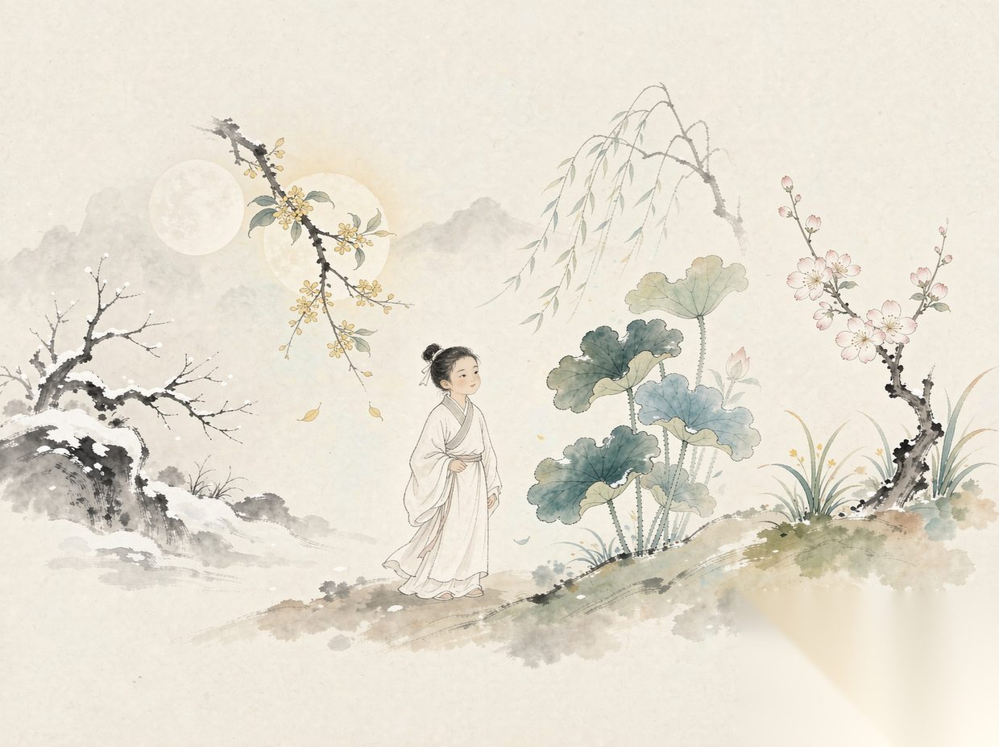
一年的四种风景，都在一园里。
古人有一句很美的诗，恰好道出四时本有的美好：春有百花秋有月，夏有凉风冬有雪。
四季各有专属的风景，没有哪一个时节是多余、不好的。
 每个季节，都有值得走近的东西。
每个季节，都有值得走近的东西。
四时轮转，不会一直旺盛，也不会一直萧瑟。有生长，就有收敛；有蓬勃，就有静养。
这个道理也对应我们自身：学习、成长是春夏；休息、沉淀是秋冬。
懂得张弛交替，不一直紧绷，也不一直懈怠，才合乎天地的节律。
四时各有佳景，我们也要学会接纳当下的阶段，在每一段时光里看见美好。
只 贪 兴 盛，不 知 收 敛一 直 往 前 冲
只想一直往前冲刺，不肯休息沉淀；害怕低谷、休歇，以为停下就是退步。
顺 随 四 时，知 进 知 藏张 弛 有 度
该生发则奋进，该静养则安守；明白生长与收藏本是循环，起落皆是常态，四时皆有风光。
成 长 小 启 示
- 春夏秋冬，是天地恒定的循环节律。
- 四时之道：春生、夏长、秋收、冬藏。春有百花秋有月，四时各有美好。
- 成长也像四季，有进取的时候，也有安静沉淀休息的时候。
- 顺应节律，接纳当下，劳逸结合，才是长久之道。
给 爸 爸 妈 妈 的 一 句 话 · 帮 孩 子 建 立 节 律 感
四时不必讲成节气理论，先让孩子看见。三条做法。
一、带着孩子观察四季风物。看花、望月、感受清风落雪，体会「春有百花秋有月」的诗意，不用复杂节气理论。
二、把四时对应作息。努力学习如同春夏生长；睡眠、放空、复盘如同秋冬收藏。
三、承接教与学的二分。家长引导观察季节变化、建立规律作息，属施教一侧；孩子体会动静循环、学会劳逸结合，是自主修习。
接上选择力练习：四时循环的规律不变，孩子可以在不同时节找到自己喜欢的亲近自然的方式。
— 54 —
成人研学 · 古今汇观第二十七课 · 深度页
曰春夏，曰秋冬
《说文》曰为谓之 ｜ 春生夏长秋收冬藏 ｜ 现代气象学 ｜ 禅偈与接纳当下
一 · 字义与句读
曰，谓之也。春生，夏长，秋收，冬藏。全句：一年之中，称作春、夏、秋、冬四时。
从人伦纲纪，复归于天道气化；三才、三光之后，再展开时序循环的大规律，天人次序连贯。
附禅偈参照：「春有百花秋有月，夏有凉风冬有雪。若无闲事挂心头，便是人间好时节。」此偈补足本句的一层心境：四时流转是客观天道，而能不能看见四时之美，在于内心是否安宁无滞。
二 · 命题考辨
勘误重点：不要只当成季节名词背诵。在阴阳气化体系中，四时是阴阳消长的完整周期：阳气由春升、夏极，继而秋降、冬伏。
这套模型不只是气候描述，更是东方的底层思维模型：一切事物都有生发、壮大、成熟、归藏四个阶段。
修心、做事、学问积累，都有这四段周期。一味求生发、求进展，不懂收敛藏养，容易耗散。
「春有百花秋有月」不是美化一切境遇，而是破除执念：不必执着某一种状态，每个阶段自有本然风光。
三 · 中西对照
华夏象数：四时是阴阳消长的循环，用以类比人事、心性的进退；禅偈则转向心性觉知，在时序之中安顿自心。
现代气象学：四季是地轴倾斜带来的太阳辐射变化，是客观天文气候现象。
西方自然观：侧重客观观测；中国传统思想一边观察时序规律，一边提炼「循环、张弛、安心当下」的生命智慧。
反向思辨：接纳四时之美，容易滑向消极认命；安心当下不等于放弃精进，顺时序而不困于时序。
四 · 与前后课的张力
次第链条继续延伸：……三纲者，君臣义 → 父子亲 → 夫妇顺 → 曰春夏，曰秋冬。
呼应第十三课「人不学，不知义」：义之中包含时序分寸，知何时进、何时止，安于当下时节。
呼应第十二课「玉不琢，不成器」：心性打磨同样有四季，精进是春夏，静思反省是秋冬，心无挂碍方能处处见风月。
呼应第四课「教之道，贵以专」：教化也需要长久周期，不可急于求成，在漫长时序里慢慢涵养本心。
存 疑 · 留 待 深 究
一、身处热带，四季并不分明，如何体会「春生夏长秋收冬藏」与「春有百花秋有月」的意境？
二、循环往复，是不是意味着一切只是重复，没有真正的升进？
三、如何区分接纳当下、安心时节，和自我逃避、拖延等待？
— 55 —
润泽少儿启蒙国学 · 三字经第二十八课 · 此四时
第 二 十 八 课
此四时，运不穷
cǐ sì shí yùn bù qióng
先 ↓ 右列 再 ← 左列
古法竖排：自右而左，自上而下。先读右列「此四时」，再读左列「运不穷」，每列从上往下。
运是轮转推移 · 穷是穷尽 · 不穷，就是周而复始、没有止息
少儿共读读给孩子听
上一课我们认识春夏秋冬，知晓春有百花秋有月，四季各有风景。经文接着告诉我们：这四个时节，一直在循环运转，永不停歇，没有尽头。
春天过完，自然入夏；夏尽而秋，秋尽入冬；冬藏之后，又会迎来新的春天。
一圈一圈，循环不停，不会停在某一季，也不会彻底消失。
天地没有定格在繁花盛开的春日，也不会永远留在落雪寒冬。
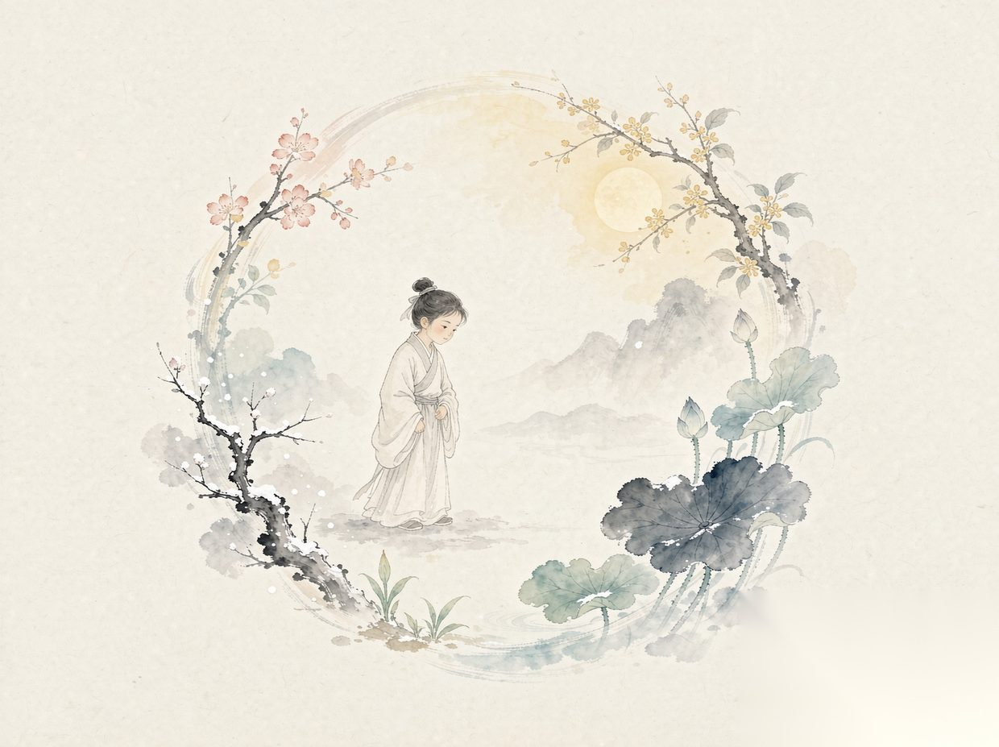
走完一圈，又回到起点。
对应我们自己：一次进步、一次收获，不是终点；一段低谷、一次失意，也不是结局。
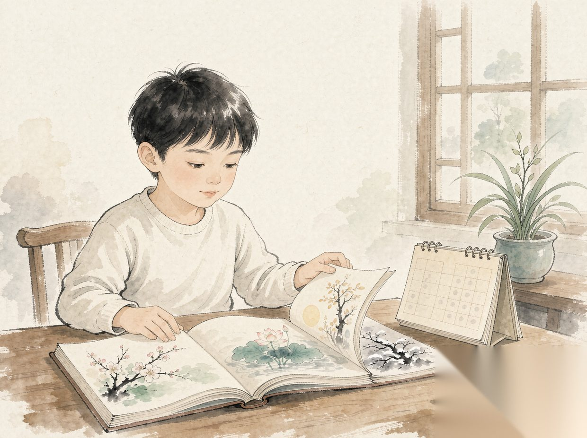
一年一年，翻过去又翻回来。
一切都在流转变化之中。正如四时不穷，生命的成长也是持续向前、循环涵养的过程。
读懂流转不息，心里就不容易被一时的好坏困住。
执 于 一 刻，患 得 患 失把 一 时 当 永 久
顺境便希望永远停留，逆境便以为没有出路；把短暂的状态当成永久结局。
知 其 流 转，观 运 不 穷盛 极 必 收，静 极 复 生
明白一切都在推移变化；安于流转，随节律涵养自己。
成 长 小 启 示
- 四时是一个闭环循环，周行运转，没有终点。
- 万物都处在不停的变化流转之中，没有永恒不变的光景。
- 顺境与逆境如同四季，都会流转过去，不必执着，也不必绝望。
- 成长是长久持续的循环涵养，不是一次性完成的事情。
给 爸 爸 妈 妈 的 一 句 话 · 引 导 孩 子 建 立 变 化 观
这一课讲的不是「四季名词」，是「一切都在变」。三条做法。
一、结合上一课一起讲。四时不但各有美景，而且循环不停，美景来了又去，去而复来。
二、帮孩子接纳变化。考试的得失、伙伴的离合、情绪起伏，都像四季流转，是动态过程。
三、承接教与学的二分。家长引导观察年复一年季节轮回，属施教一侧；孩子体会世事流转无常、不困于一时得失，是自主修习。
接上选择力练习：四时循环不息的规律不变，孩子可以在流转之中，安心做好当下这一步。
— 56 —
成人研学 · 古今汇观第二十八课 · 深度页
此四时，运不穷
《说文》运为轮转 ｜ 周流不息 ｜ 地球公转与单向演化 ｜ 循环与轮回宿命之辨
一 · 字义与句读
运，轮转推移；穷，尽也。全句：这春夏秋冬四时，循环运转，周而复始，永无穷尽。
上一句列四时之相，此一句点明天道流行之体。
二 · 命题考辨
勘误重点：不要简单理解成「无限重复」。四时循环不是一模一样的复刻——每一轮春天，气象、生机都有不同；循环之中，自有递进、演化。
这是华夏「周流不息」的天道观，和单纯的轮回宿命不一样：轨迹循环，生机日新。
搭配前句禅偈：春有百花秋有月，四时风光轮换；运不穷，则是风光流转不息。
观四时之运，即是观无常、观迁变，修「不住」之定心，与《金刚经》不住之旨可以互参。
三 · 中西对照
华夏象学：周流六虚，变动不居，循环里面含生生不息。
现代科学：地球公转带来季节往复，属于稳定周期性运动；但宇宙整体是单向演化，并非简单闭环循环。
西方古典：部分学派认为世界是循环轮回；近代科学更偏向线性演化。
反向思辨：看见「运不穷」容易生出「一切都会再来」的懈怠，以为当下不急；流转不息恰恰提醒我们，当下这一期时光独一无二，不可虚度。
四 · 与前后课的张力
次第链条继续延伸：……曰春夏，曰秋冬 → 此四时，运不穷。
呼应第十三课「人不学，不知义」：义含时变，懂得随流转调整分寸，不固守旧态。
呼应第十二课「玉不琢，不成器」：心性打磨也是一轮一轮循环反省，久久涵养，生生不穷。
呼应第四课「教之道，贵以专」：教化是代代接续、岁岁涵养的长久事业，持续不断。
存 疑 · 留 待 深 究
一、循环流转之中，有没有什么东西是不变、不随四时迁变的？
二、如果一切都在流转不穷，那我们坚持修养本心的意义在哪里？
三、如何区分顺应流转、顺势而为，和随波逐流？
— 57 —
润泽少儿启蒙国学 · 三字经第二十九课 · 曰南北
第 二 十 九 课
曰南北，曰西东
yuē nán běi yuē xī dōng
先 ↓ 右列 再 ← 左列
古法竖排：自右而左，自上而下。先读右列「曰南北」，再读左列「曰西东」，每列从上往下。
曰是列举方位 · 东为日出之地 · 西为日落之处 · 南向阳、北背阴
少儿共读读给孩子听
前面我们明白了四时流转、周行不穷，看懂了天地在时间上的节律。经文再给我们一把空间的标尺，叫做四方：东、南、西、北。
太阳从东方升起，往西方落下；
南方日照充足，温暖向阳；北方偏于寒凉，沉静内敛。
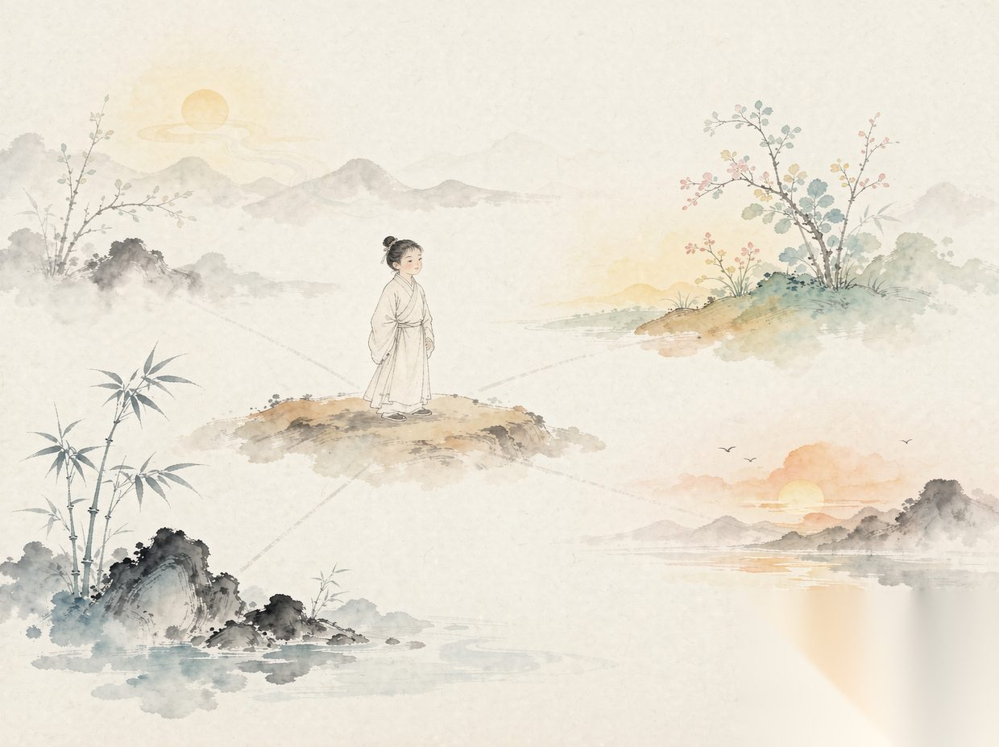
四个方向，都从脚下量出去。
四方本身没有好坏，只是用来标定位置、分辨去向的参照。
我们靠着四方，辨认路途，分清远近，找到自己身在何处。
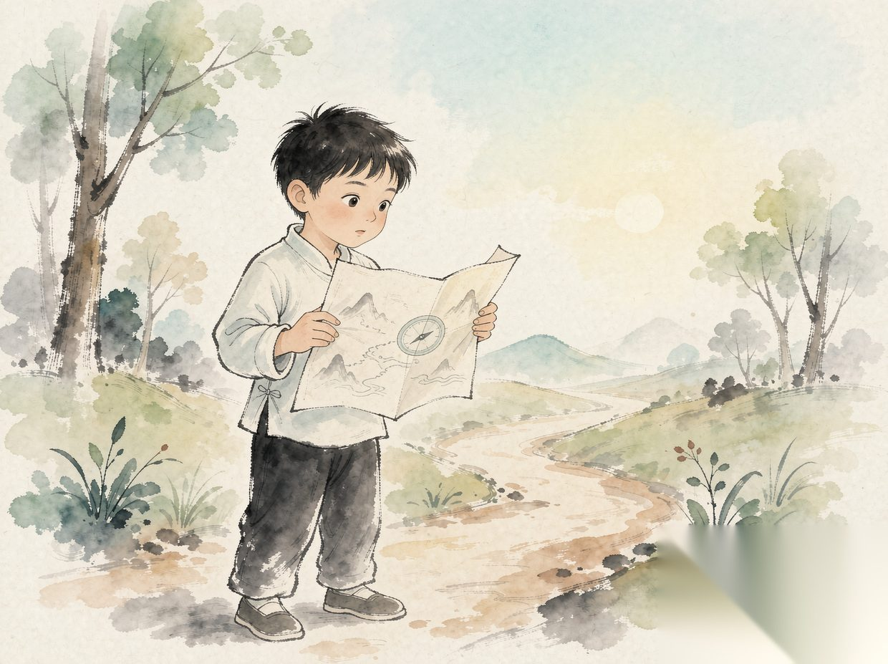
认得方向，路就不慌。
四方是参照，不是束缚。
就像我们内心，也有方向：向善向明，如同向阳的南方；沉静自省，如同藏纳的北方。
懂得分辨方位，不只是认路，更是学会在纷繁的世界里守住自己前行的方向。
迷 失 方 位，茫 然 无 向随 外 物 漂 泊
没有参照，随外物漂泊，不知何去何从；执着某一方位为最好，排斥其余。
立 其 坐 标，知 所 去 向四 方 互 为 参 照
建立清晰标尺，知晓自身位置，进退有方向；四方缺一不可，各有功用。
成 长 小 启 示
- 东南西北，是天地之间的四方空间坐标。
- 四方依托彼此而成立，没有单独孤立的一方。
- 方位是参照工具，用来定位、辨路，而不是高低评判。
- 向外认清路途方向，向内守住本心的方向。
给 爸 爸 妈 妈 的 一 句 话 · 在 生 活 里 建 立 方 位 感
方位感是能力，不是知识。三条做法，把它放进日常。
一、结合日出日落、房屋朝向、地图、指南针带孩子辨认四方，重在建立空间参照，不必讲复杂术数。
二、引申到志向。四方是外在道路，心中的志向是内在方向。
三、承接教与学的二分。家长带领辨识方位、讲解参照逻辑，属施教一侧；孩子慢慢建立方向感、明白行路要有目标，是自主修习。
接上选择力练习：四方的坐标恒定不变，孩子可以探索不同方向的风景，但守住自己向善的本心方向。
— 58 —
成人研学 · 古今汇观第二十九课 · 深度页
曰南北，曰西东
《说文》方为并船／方位 ｜ 四方配四时阴阳 ｜ 现代地理坐标 ｜ 方位吉凶之辨
一 · 字义与句读
四方：东、南、西、北，空间之四正。全句：称作南、北、西、东四个正方位。
四时为时，四方为空，时空并举，完善三才天地人的宇宙框架。
二 · 命题考辨
勘误重点：不要直接等同于风水吉凶。在易学体系中，四方配阴阳、四时：东春、南夏、西秋、北冬，时空是一套联动的模型。
四方是相对参照系统：没有绝对固定的「东」，以观察者自身为中心而立。
这可以和般若的参照观互参：一切方位依相待而立，没有独立自性。不执一方为吉、一方为凶，才是正解。
三 · 中西对照
华夏方位观：时空合一，四方配四时、阴阳，是一套生命气化模型。
现代地理学：方位是球面坐标系统，用于定位导航，是纯粹的空间工具。
西方古典：方位更多用于几何、航海定位；华夏把空间方位与生命节律融在一起。
反向思辨：时空模型很容易落入方位吉凶的迷信，要分清：模型是思维工具，不是祸福的主宰。
四 · 与前后课的张力
次第链条继续延伸：……此四时，运不穷 → 曰南北，曰西东。
呼应第十三课「人不学，不知义」：义有方位分寸，知自己所处位置，行事不越位。
呼应第十二课「玉不琢，不成器」：修心就是确立内在坐标，在外境之中不迷失。
呼应第四课「教之道，贵以专」：教化先建立时空认知框架，给认知一个安放的根基。
存 疑 · 留 待 深 究
一、如果我们走到极点，传统四方的参照体系就失效，这套模型的精神内核如何保留？
二、外在方位可以定位，内心的方向用什么标尺校验？
三、四方相待而起，是不是说明一切对立的参照都互为依存？
— 59 —
润泽少儿启蒙国学 · 三字经第三十课 · 此四方
第 三 十 课
此四方，应乎中
cǐ sì fāng yìng hū zhōng
先 ↓ 右列 再 ← 左列
古法竖排：自右而左，自上而下。先读右列「此四方」，再读左列「应乎中」，每列从上往下。
应是呼应、相配 · 中是枢轴、原点 · 四方由此而立，依此参照
少儿共读读给孩子听
上一课我们认识东南西北四方。经文告诉我们：这四个方向，全都对应、依托着一个「中」而成立。
想象你站在大地的一点，你脚下所在之处，就是中心。
往前是南、往后是北，左东右西；一旦离开这个中心点，四方的参照就跟着变动。
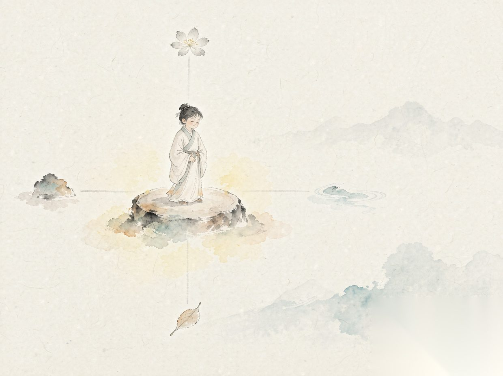
站定了，四个方向才叫得出名字。
四方是向外铺开的四个方向，中是不动的原点，是标定一切方位的枢纽。
放到心上来说：我们向外看纷繁人事、各样选择，容易跟着外境东西摇摆。
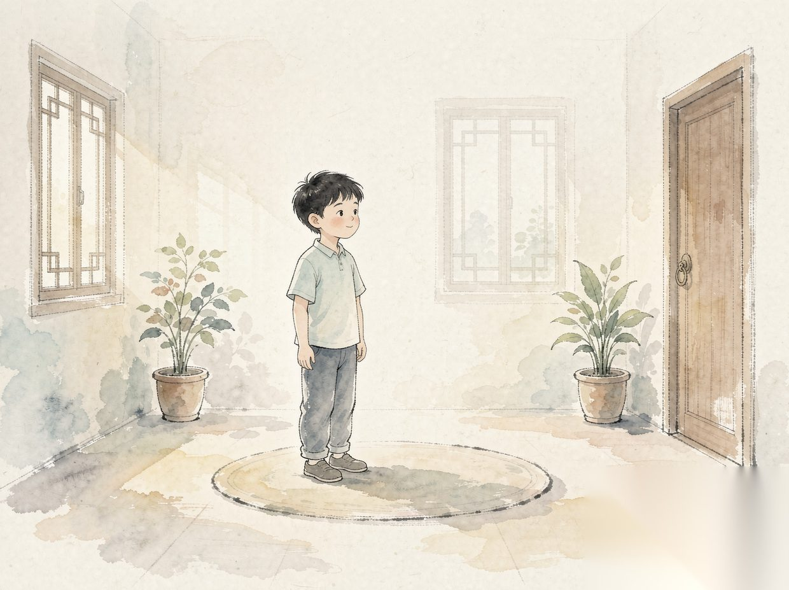
先知道自己站在哪，才知道别人在哪。
「中」，就是我们安定的本心。本心不偏，才能看清周遭，不被外境带着乱跑。
不是固执不动，而是守住平衡点，遇事不偏倚、不走极端。
随 境 摇 摆，失 其 根 本跟 着 外 境 跑
念头跟着外境东奔西走，没有定主；执着某一边，偏于一端。
四 方 虽 广，守 中 为 枢不 执 两 边
知晓万境向外铺开，守住内心平衡点作为参照；知四方相待，中道统摄。
成 长 小 启 示
- 东南西北四方，都以「中」作为原点，相互呼应。
- 「中」不是固定某一个地点，是参照的枢纽、平衡的基准。
- 外在有路向，内在有本心之中，守中才能明辨四方。
- 守中，就是不走极端，懂得权衡、调和，守住分寸。
给 爸 爸 妈 妈 的 一 句 话 · 引 导 孩 子 理 解 中 道
「中」最容易被讲成「和稀泥」。三条做法，把它讲清。
一、先用简单空间例子。站在中间，才有前后左右；换位置，四方随之改变——中是参照，不是固定一点。
二、引申品行。待人做事的「中」，不是和稀泥，是公正合宜、不偏激。
三、承接教与学的二分。家长示范遇事平和、不走极端，属施教一侧；孩子慢慢学习在取舍之中把握平衡，是自主修习。
接上选择力练习：中道的平衡准则不变，孩子可以观察多方情况、独立思考，不是死板折中。
— 60 —
成人研学 · 古今汇观第三十课 · 深度页
此四方，应乎中
《说文》应为相酬对 ｜ 《中庸》未发之谓中 ｜ 坐标系原点 ｜ 中道与乡愿折中
一 · 字义与句读
应，相酬对也；中，枢也。全句：东南西北这四方，皆与中心枢轴相应，依托中心而建立方位参照。
四时、四方至此合拢：四时为时间之循环，四方为空间之架构，时空同归于「中」这个枢机。
二 · 命题考辨
勘误重点：容易把「中」理解成中间位置、折中妥协。古学之「中」，第一层是空间原点；第二层是《中庸》「喜怒哀乐之未发，谓之中」，是本心未偏的本体。
四方相待而起，无中则无四方；如同烦恼、种种相，依自性本体而立。
可和般若、空杯模型对照：万相是四方，空性是中；中不是一物，是能参照、能容纳的枢轴。
也区别于乡愿式折中：中是基准本体，不是两边讨好的妥协。
三 · 中西对照
华夏易学、中庸：中为枢、为体，万象由中展开，「时中」为最高准则。
现代坐标系：原点（0,0）即此处之「中」，坐标轴向四方延伸，逻辑高度相通。
西方哲学：亚里士多德也讲中道，侧重德行适度；华夏之「中」，同时包含空间模型、心性本体两层。
反向思辨：守中极易沦为停滞保守；「时中」的要义是：中是原则，而权衡要随时变化，不是死守一个固定标准。
四 · 与前后课的张力
次第链条继续延伸：……曰南北，曰西东 → 此四方，应乎中。
呼应第十三课「人不学，不知义」：义的内核就是时中，随事守平衡，不偏不倚。
呼应第十二课「玉不琢，不成器」：修行便是寻中、守中，在纷繁万象之中安立本心原点。
呼应第四课「教之道，贵以专」：教化的根本，是帮人建立这个不偏的内在基准。
存 疑 · 留 待 深 究
一、当万事矛盾剧烈，很难找到平衡点，此时「守中」该如何落实？
二、「中」是本体，那本体本身又依托什么而立？
三、时中随时而变，如何区分灵活权变和没有原则？
— 61 —
润泽少儿启蒙国学 · 三字经第三十一课 · 曰水火
第 三 十 一 课
曰水火，木金土
yuē shuǐ huǒ mù jīn tǔ
先 ↓ 右列 再 ← 左列
古法竖排：自右而左，自上而下。先读右列「曰水火」，再读左列「木金土」，每列从上往下。
木主生发 · 火主升腾 · 土主承载 · 金主收敛 · 水主潜藏
少儿共读读给孩子听
前面我们知道四方都以「中」为枢纽，建立起空间的参照。经文再告诉我们：天地之间有五类最基础的能量形态，叫做水、火、木、金、土，也就是五行。
木，像草木一样向上舒展、生发；
火，温热向上，带来光明；
土，默默承载，孕育花草、庄稼；
金，收敛坚实，有肃静规整之性；
水，向下浸润，静静藏蓄、流转滋养。
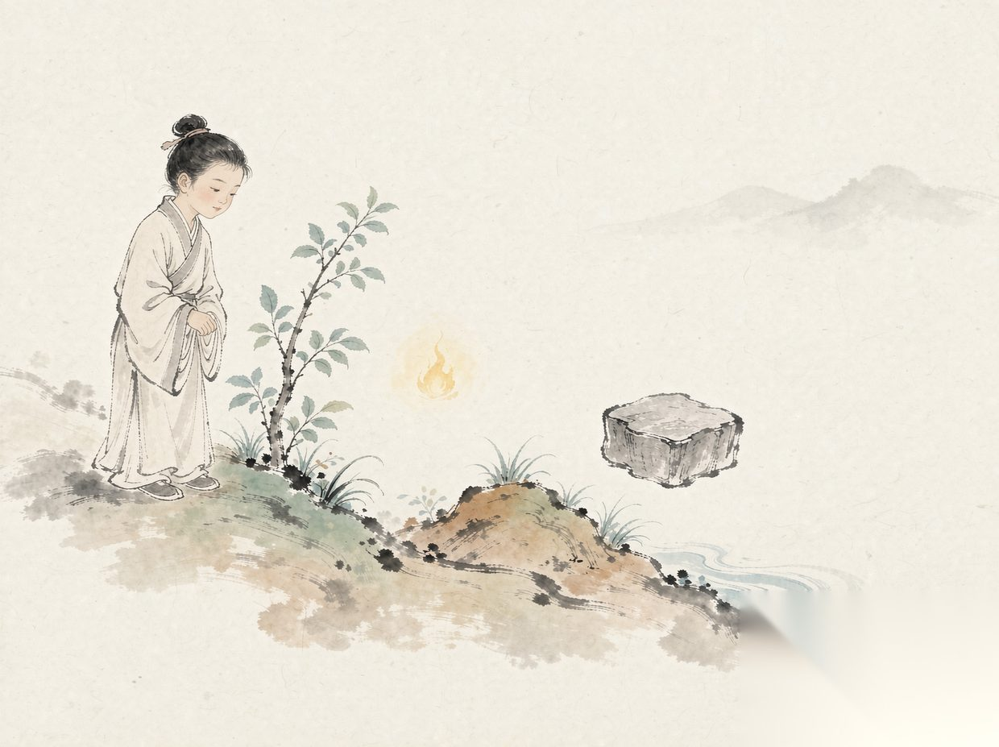
五种样子，五种性子。
五行不是五种固定的物质，是古人归纳出来的五种动向：生发、升腾、承载、收敛、潜藏。
五种力量互相配合、互相制衡，万物才能够生生不息。
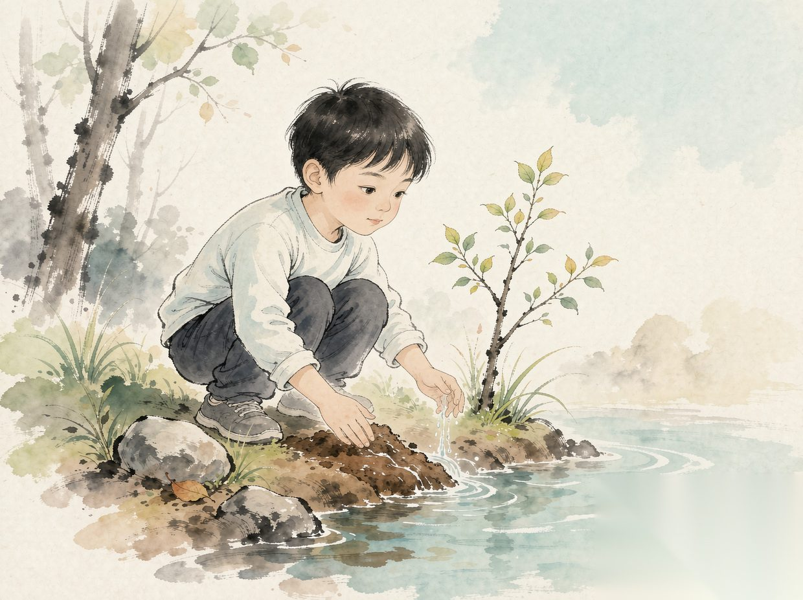
草木、土石、流水，就在一处。
放到心上看：念头舒展是木，热忱明朗是火，宽厚包容是土，自省收敛是金，沉静涵养是水。
不独执一端，动静、收发平衡，身心才安稳。
偏 于 一 性，单 一 极 端只 留 喜 欢 的 那 一 种
只爱向外生发进取，不懂收敛静养；厌恶某一种特质，只保留喜欢的状态。
五 行 相 济，不 偏 不 孤五 性 各 有 用 处
生发、热忱、承载、收敛、藏养互相配合；缺一不可，彼此制衡调和。
成 长 小 启 示
- 木火土金水，古人归纳的五类气化动能，名为五行。
- 五行各有本性，相生相制，共同维系天地平衡。
- 我们自身心性，也含有五行的特质，需要调和均衡。
- 不独执一端，动静、收发平衡，身心才安稳。
给 爸 爸 妈 妈 的 一 句 话 · 通 俗 引 导，避 开 迷 信
五行是思维模型，不是算命工具。三条做法。
一、优先作为观察框架来讲，不讲吉凶。可以类比：如同四季，是观察事物变化的分类框架。
二、简单举例。学习生发如木，热情思考如火，踏实稳重如土，反省自律如金，静心休息如水。
三、承接教与学的二分。家长引导观察事物不同特质，属施教一侧；孩子慢慢体会动静收放的平衡，是自主修习。
接上选择力练习：五行平衡的原则不变，每人先天禀赋倾向不同，重在补足偏颇，而非强行变成一样。
— 62 —
成人研学 · 古今汇观第三十一课 · 深度页
曰水火，木金土
《尚书·洪范》五行 ｜ 相生相克 ｜ 古希腊四元素 ｜ 系统正负反馈
一 · 字义与句读
五行：木、火、土、金、水。全句：称作水、火、木、金、土五类气化之性，是天地运化的五类基本动能。
时空框架（四时、四方、中）搭建完毕，再进入万物构成的气化模型。
二 · 命题考辨
勘误重点：五行不等于五种实物，也不是宿命工具。五行是动态的象模型，核心是生、克的制衡关系：木生火，火生土，土生金，金生水，水生木；同时互相制约，防止某一股力量过度膨胀。
土居中央，对应前文「应乎中」的枢纽之义，承载四气，连通四方四时。
可以联动整体模型：五蕴如同五行，万象纷陈，依托虚空之中而运化；般若中道，即是调和五行、不随一象偏斜。
三 · 中西对照
华夏五行：动态气化、生克制衡的系统思维，重视整体平衡。
古希腊四元素说：水土火气，偏向静态物质本原，没有循环制衡体系。
现代系统论：系统内部存在正反馈、负反馈，与五行生克的制衡思路可以互通。
反向思辨：五行模型极易流落到术数占卜、吉凶判定，这是后世衍生；原典在《三字经》此处，只是用来认知天地运化的基础框架。
四 · 与前后课的张力
次第链条继续延伸：……此四方，应乎中 → 曰水火，木金土。
呼应第十三课「人不学，不知义」：义即是制衡合宜，五行生克，各守分寸。
呼应第十二课「玉不琢，不成器」：修身，就是调和自身五气，消去偏执。
呼应第四课「教之道，贵以专」：这套天地模型，是华夏认知世界的基础范式。
存 疑 · 留 待 深 究
一、五行模型适合理解复杂系统，但边界在哪里？哪些事物并不适合强行归入五行？
二、五行生克是观察总结的规律，还是先在的规则？
三、调和五行、平衡五性，是不是等同于「守中」？二者同异何在？
— 63 —
润泽少儿启蒙国学 · 三字经第三十二课 · 此五行
第 三 十 二 课
此五行，本乎数
cǐ wǔ xíng běn hū shù
先 ↓ 右列 再 ← 左列
古法竖排：自右而左，自上而下。先读右列「此五行」，再读左列「本乎数」，每列从上往下。
本是根源 · 数是位次、周期、节律 · 不是单纯计数的数字
少儿共读读给孩子听
上一课我们认识了木火土金水五行，明白五种力量相生相克，维系万物平衡。经文继续点出深层道理：这五行的运化，根源在于「数」。
古人观察天地，看见万物的生长、收敛、循环，都有稳定的节奏：
花开有时、叶落有期，四时轮转有周期，四方排布有位次。这些藏在现象背后的条理，就叫做数。
五行的生、长、收、藏、承载，各自有对应的位次、节律，不是随意发生。
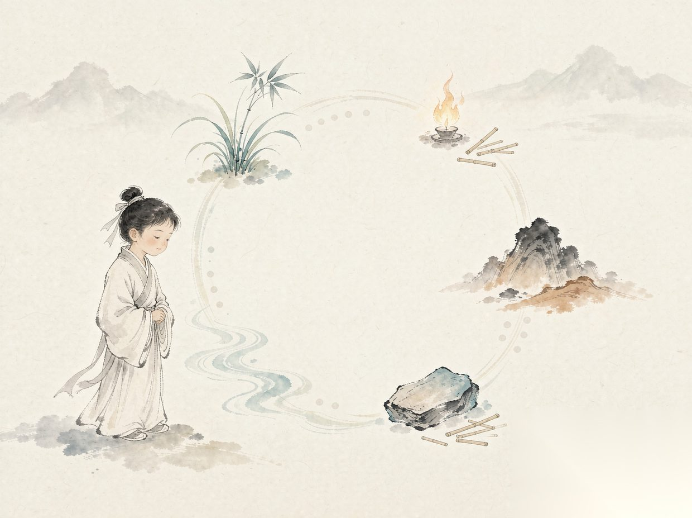
一看就知道，各有各的数。
放到我们自身来看：读书积累、心性成长，也自有节奏。
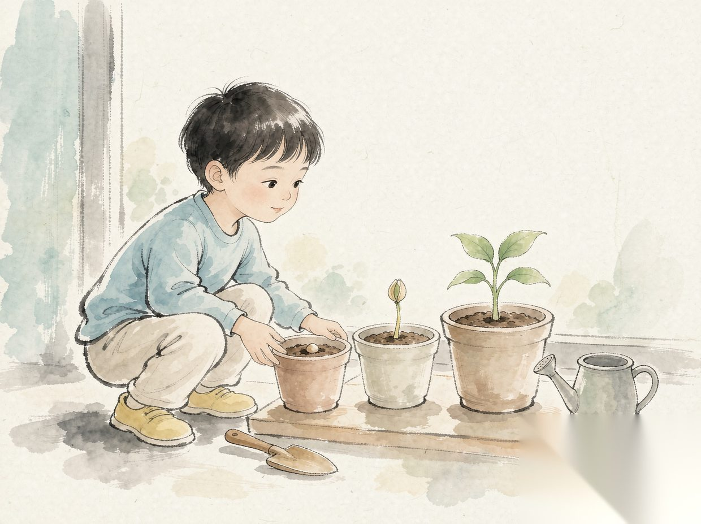
急不得，它一步一步来。
不必急于求成，懂得尊重内在的次序与周期，循序渐进，便是顺乎其数。
数，是规律，不是死板的定局；看见秩序，才懂得顺势涵养。
妄 求 速 成，打 乱 次 序想 跳 过 阶 段
想要跳过阶段、一蹴而就，强行催促结果；把数当成宿命定数，被动等待。
知 其 本 数，循 理 而 行一 步 一 步 顺 序 涵 养
明白万象有天然节律，一步一步顺序涵养；数是条理参照，把握节律，主动用功。
成 长 小 启 示
- 五行的生克制化，依托天地本有的数理秩序。
- 「数」代表节律、位次、周期，是万象底层的条理。
- 成长有次第，事情有节奏，尊重次序，不躁进、不妄为。
- 看见秩序，不是被命运束缚，而是懂得选择合适的时机用功。
给 爸 爸 妈 妈 的 一 句 话 · 引 导 节 律 观，远 离 数 术 迷 信
「数」在这里是次序与周期，不是命理。三条做法。
一、优先解读为规律、次序、周期，不引申命理、卜算；可和前面四时、四季生长周期联动讲解。
二、用学习举例。识字、阅读、积累，都有次第，不能揠苗助长，就是「本乎数」的生活化理解。
三、承接教与学的二分。家长引导观察事物的生长次序、周期规律，属施教一侧；孩子学会耐心等候、循序渐进，是自主修习。
接上选择力练习：底层数理秩序恒定，而人的选择、努力可以在节律之中调整，不是完全被限定。
— 64 —
成人研学 · 古今汇观第三十二课 · 深度页
此五行，本乎数
《说文》本为根 ｜ 河图洛书之数 ｜ 数学定律 ｜ 规律与机械决定论
一 · 字义与句读
本，根也；数，理之位次、周期、序次。全句：木火土金水五行的运化生克，根源依托于天地本有的数理条理。
前面由三才、三光、三纲、四时、四方，落到五行，再溯至数理，完成一层由外向内、由象入理的认知递进。
二 · 命题考辨
勘误重点：极易把「本乎数」理解为命数、定数、宿命，这是后世术数的流变。
儒学与易学原义：数是象背后的条理、位次、节律；河图洛书之数，是古人用来模拟天地运化的模型。五行配数，是模型的映射，不是说有一个数字主宰万物。
可跨典对照：《金刚经》言「凡所有相皆是虚妄」，节律秩序是观察得来的参照范式，并非实存的主宰实体。
同时呼应开篇数字：一而十、十而百，是数的展开；此五行本乎数，是万象运化归于数理之序，首尾闭环。
三 · 中西对照
华夏易数：象数一体，数藏于万象，偏重整体系统的周期、位次平衡。
现代科学：自然规律、数学定律，也是万物底层的数理表达；科学追求可验证的公式，易学偏向整体性的气化模拟。
毕达哥拉斯学派：「万物皆数」，同样提出数为万物本源，但偏向几何、静态的数本体。
反向思辨：承认万象有数，容易滑向机械决定论；要区分：规律是观测范式，生命之中始终含有生生的能动性。
四 · 与前后课的张力
次第链条继续延伸：……曰水火，木金土 → 此五行，本乎数。
呼应第十三课「人不学，不知义」：义即是合乎位次节律，不越序、不妄作。
呼应第十二课「玉不琢，不成器」：修身也有次第之数，循序渐进，不可躐等。
呼应第四课「教之道，贵以专」：教化的次第安排，本身也是依数而立，稳步涵养。
存 疑 · 留 待 深 究
一、如果万物本乎数，那么「生生不息」的新意从何处而来？秩序如何容纳变化？
二、数理是客观本有，还是人心建立出来的一套分类模型？
三、守序循数，和主动突破、革新创造，二者边界如何把握？
— 65 —
润泽少儿启蒙国学 · 三字经第三十三课 · 十干者
第 三 十 三 课
十干者，甲至癸
shí gān zhě jiǎ zhì guǐ
先 ↓ 右列 再 ← 左列
古法竖排：自右而左，自上而下。先读右列「十干者」，再读左列「甲至癸」，每列从上往下。
干为时序主干 · 十干：甲乙丙丁戊己庚辛壬癸 · 十个递进的阶段
少儿共读读给孩子听
前面我们知晓五行的运化根源在于数理秩序。经文再引出一套古老的计时标度：十天干，从甲一直到癸。
甲，如同种子破土，是一轮生机的开端；
乙，嫩芽舒展，柔和生长；丙，阳气光明，蓬勃外显；丁，持续成长，渐渐坚实；
戊，生机盛大，厚土承载；己，由盛转缓，归于平和；
庚，开始收敛、清肃；辛，打磨淬炼，去旧存新；
壬，润泽藏纳，向内涵养；癸，归根蓄势，等候下一轮生发。
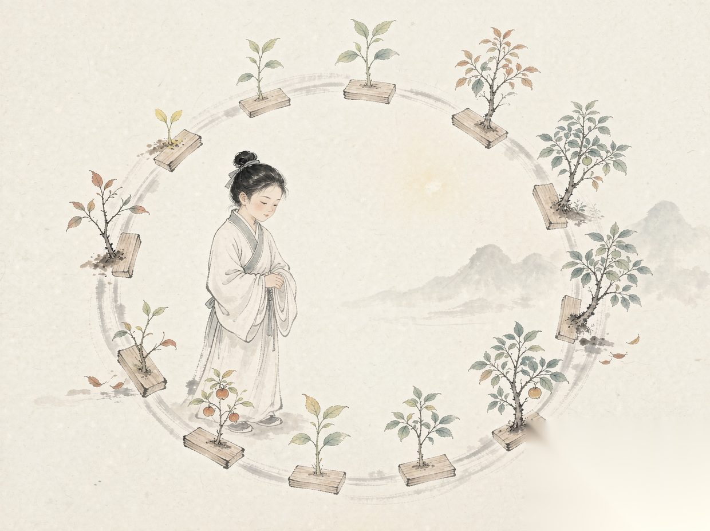
走完十步，又回到第一步。
天干不是神秘符号，是古人给生命循环刻下的十个刻度。一轮循环走完癸，又重新回到甲，周而复始。
 一棵树，走完一整轮。
一棵树，走完一整轮。
对照我们自身：做事、学习、成长，同样有起步、生长、兴盛、收敛、静养的完整阶段，循序渐进，不可跳过环节。
懂得次第，就懂得尊重事物发展的节奏。
急 于 一 跃 而 成，跳 过 阶 段只 想 要 繁 盛
只想要繁盛的阶段，不愿扎根蓄力；执着某一个状态长久不变。
十 阶 次 第，循 序 而 生每 一 步 都 不 可 缺
生发、长养、收敛、藏蓄，每一步都不可或缺；时序有阶，依次流转，终而复始。
成 长 小 启 示
- 十天干：甲、乙、丙、丁、戊、己、庚、辛、壬、癸，用来标记气化次第。
- 十干刻画了一套完整的生、长、盛、收、藏的生命周期。
- 每一段阶段都有它的功用，扎根蓄势和向外生长同等重要。
- 懂得次第，就懂得尊重事物发展的节奏。
给 爸 爸 妈 妈 的 一 句 话 · 通 俗 引 导，远 离 命 理
天干是刻度，不是命盘。三条做法。
一、重点放在「时序刻度、周期次第」，不要往算命、吉凶方向延伸；可以和四时、五行联动讲解，是同一套系统的细化标尺。
二、用成长周期类比。甲是起步，壬癸是沉淀蓄力，帮孩子理解厚积而后发。
三、承接教与学的二分。家长引导观察生命成长的阶段，属施教一侧；孩子学会耐心走完每一个过程、不急于求成，是自主修习。
接上选择力练习：次第的秩序不变，我们可以在每个阶段用心用功，在节律之中主动耕耘。
— 66 —
成人研学 · 古今汇观第三十三课 · 深度页
十干者，甲至癸
《说文》干为树干 ｜ 十干配阴阳五行 ｜ 西方黄道十二宫 ｜ 符号与符号崇拜
一 · 字义与句读
干，犹树干，为时序之纲纪。全句：所谓十天干，就是从甲起始、到癸收尾这十个符号，用以标记阴阳气化递进的位次。
前面搭建了时空、五行、数理框架，天干是这套象数体系里精细的时序刻度。
二 · 命题考辨
勘误重点：天干常被绑定八字命理，沦为吉凶符号，这是后世衍生用法。
本源是气化时序标记：甲阳木、乙阴木；丙阳火、丁阴火；戊阳土、己阴土；庚阳金、辛阴金；壬阳水、癸阴水。
十干分阴阳，两两配对，纳入五行，把五行一分为二，体现阳显、阴藏的分别。
和般若范式互参：天干是假名标相，用来描述流转；天干本身没有实体自性，只是认知的标尺，如同前面四方、四时。
三 · 中西对照
华夏天干：时序象数，阴阳五行一体，侧重生命气化的周期描述。
西方黄道十二宫：也是周期标记，但侧重天象坐标；天干是天地人合一的综合时序模型。
现代时间体系：星期、月份是线性周期划分，不绑定气化、生命状态的解读。
反向思辨：使用天干模型容易陷入符号崇拜；符号是工具，规律的感知才是内核。
四 · 与前后课的张力
次第链条继续延伸：……此五行，本乎数 → 十干者，甲至癸。
呼应第十三课「人不学，不知义」：义在于循阶而行，知位次，不躐等。
呼应第十二课「玉不琢，不成器」：心性修炼同样有甲到癸的完整循环，一轮一轮打磨。
呼应第四课「教之道，贵以专」：教化也是长期的时序工程，分阶段涵养。
存 疑 · 留 待 深 究
一、天干十数，和五行五数之间，内在的数理关联如何理解？
二、天干既是周期标记，为什么要分阴阳？阴阳的意义落在何处？
三、这套时序模型，如何脱离干支符号，在现代生活里继续使用？
— 67 —
润泽少儿启蒙国学 · 三字经第三十四课 · 十二支
第 三 十 四 课
十二支，子至亥
shí èr zhī zǐ zhì hài
先 ↓ 右列 再 ← 左列
古法竖排：自右而左，自上而下。先读右列「十二支」，再读左列「子至亥」，每列从上往下。
支为分支、辅干而行 · 十二支：子丑寅卯辰巳午未申酉戌亥 · 对应十二月与十二时辰
少儿共读读给孩子听
上一课我们认识十天干，它是记录周期的主干刻度。经文接续介绍十二地支，从子开始，一直到亥，一共十二位。
十二地支，记录一整轮阴阳消长的细微变化：
子是阳气悄悄在地下萌发；丑默默蓄力；寅像初春草木破土；卯舒展生长；
辰过渡涵养；巳阳气不断升腾；午阳气到顶点，开始转阴；
未慢慢缓和；申秋风起，开始收敛；酉是收成定型；
戌收纳余气；亥彻底藏起来，归于沉静，等待下一轮生机再来。
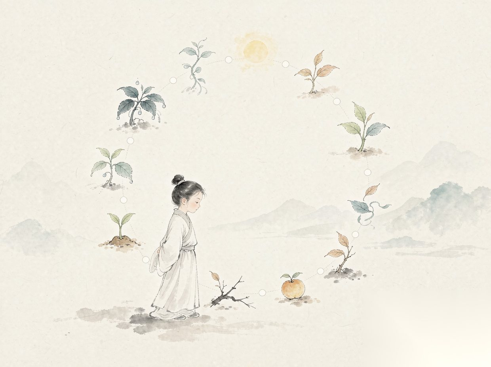
一年十二格，一格一格过去。
天干、地支搭配在一起，就像两把标尺，互相交错，标记年月与时辰。
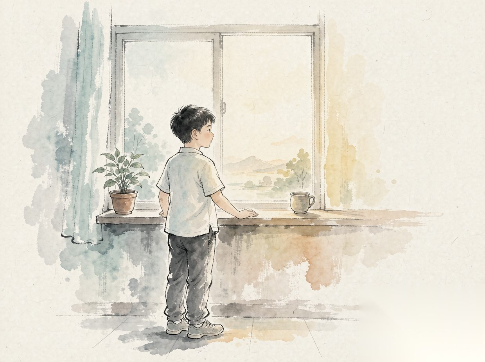
一天，也是一小圈。
放到我们身上，一天的作息也契合地支之理：晨起生发，正午精力鼎盛，入夜收敛安睡。
懂得一日、一年的气化节律，顺应动静，身心更容易安稳调和。
昼 夜 颠 倒，违 逆 节 律该 静 时 亢 奋
该休息时亢奋，该振作时萎靡；只喜欢旺盛活跃，排斥安静蛰伏。
循 于 支 序，顺 养 动 静升 藏 各 有 其 时
明白一日、一年有升有藏，依节律安顿身心；萌发、盛长、收敛、闭藏都是循环里必要一环。
成 长 小 启 示
- 十二地支：子、丑、寅、卯、辰、巳、午、未、申、酉、戌、亥。
- 地支细分阴阳消长，对应十二月、十二时辰。
- 地支和天干配合，组成华夏传统的时序记录系统。
- 节律不只在四季，每一天也有完整的生、长、收、藏。
给 爸 爸 妈 妈 的 一 句 话 · 生 活 化 讲 解，避 开 命 理
地支可以只用两件事讲清：一天、一年。三条做法。
一、优先用时序、时辰、物候来讲，不往八字、吉凶方向引申。
二、简单对应作息。午是正午阳气最旺，适合用功；亥子夜深，宜静养安眠。
三、承接教与学的二分。家长引导观察昼夜、月份的变化，属施教一侧；孩子学会安排作息、动静相宜，是自主修习。
接上选择力练习：时序的循环规律不变，我们可以在合适的时段用心用功，顺势调养。
— 68 —
成人研学 · 古今汇观第三十四课 · 深度页
十二支，子至亥
《说文》支为分支 ｜ 十二支配月建时辰 ｜ 线性计时 ｜ 节律与机械套用
一 · 字义与句读
支，分支，辅干而行，纪时序之细变。全句：十二地支，自子起始、至亥终结，用以细密标记阴阳气化的流转位次。
天干十、地支十二，干支相配，是前面「本乎数」的数理模型进一步落地，用来标记年、月、日、时。
二 · 命题考辨
勘误重点：地支极易被局限在命理推命，这是后世的衍生用法。
本源是时空气化的细分模型：十二支分属五行、对应四方、配属十二月与十二时辰。子午为南北之轴，卯酉为东西之轴，和前文「此四方，应乎中」的空间框架互通。
十干配五阴五阳，十二支分六阴六阳，干支交错，构成六十甲子循环。
和般若范式互参：干支都是假名符号，是我们用来观测、标记流转的工具，符号本身没有实有的自性。
三 · 中西对照
华夏干支：时空合一，把天象、气候、物候、身心节律纳入同一套体系。
西方计时：小时、月份属于线性计时，一般不绑定气化、生命状态的解读。
古巴比伦黄道十二分：同样十二分法，侧重天象划分，没有生藏的生命气化内涵。
反向思辨：节律模型是参照，不能机械套用；时位只是标尺，吉凶祸福取决于人的发心与行为，不在地支符号本身。
四 · 与前后课的张力
次第链条继续延伸：……十干者，甲至癸 → 十二支，子至亥。
呼应第十三课「人不学，不知义」：义含时序分寸，知时知位，动静合宜。
呼应第十二课「玉不琢，不成器」：修心是日复一日的功课，顺着昼夜节律涵养。
呼应第四课「教之道，贵以专」：这套干支体系，是古人认知天地时序的基础工具。
存 疑 · 留 待 深 究
一、天干取十、地支取十二，这两个数字选择背后的数理根源是什么？
二、干支可以标记时间，那这套时序模型，能不能脱离历法单独使用？
三、顺应时辰节律，会不会变成一种拘束，反而困住本心？
— 69 —
润泽少儿启蒙国学 · 三字经第三十五课 · 曰黄道
第 三 十 五 课
曰黄道，日所躔
yuē huáng dào rì suǒ chán
先 ↓ 右列 再 ← 左列
古法竖排：自右而左，自上而下。先读右列「曰黄道」，再读左列「日所躔」，每列从上往下。
黄道——古人观测太阳一年行经天穹的视运行轨道；躔——星辰循轨践历而行。
“黄”承土德、承前文“中”的枢纽之义，为天象之中道。
少儿共读读给孩子听
前面我们学了天干地支，用来标记年月时辰的流转。经文继续往天象源头追溯：有一条轨道，名叫黄道，是太阳一年缓缓行经的路径。
站在大地上仰望，太阳每天的位置都有细微偏移；一天一天积起来，一年正好走完一整圈。
黄道之上，分出二十四节气；春夏秋冬、寒来暑往，四时的更迭，根源就是太阳在黄道上的位移。
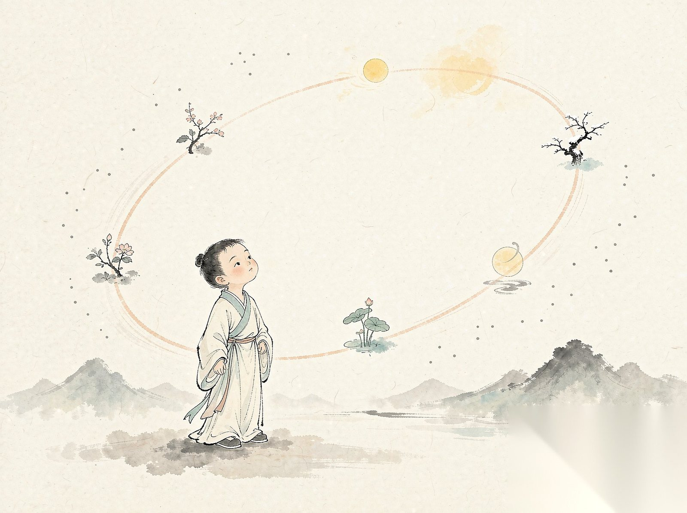
太阳沿着一条看不见的圆环走，一年正好走完一圈。
春分到秋分，太阳直射的地方偏在我们这一半球的北边，白天就长；秋分到春分，太阳偏到南边去，白天就短、夜就长。
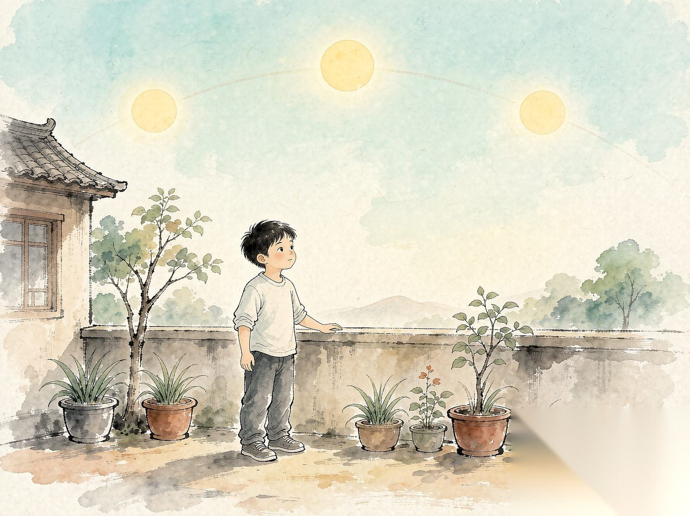
三个季节的太阳，叠在同一片天上；同一座屋顶，日出的位置一季一个样。
古人所有的时序标尺，不是凭空想出来的。天干、地支、四时、节气，全都锚在这条太阳的轨迹上。
放到心上理解：我们内心也有这样一条轨道——一条稳定的主线。外境起落万千，本心的主线不轻易偏移。
舍 本 逐 末，执 着 符 号只 记 符 号
只记干支、节气这些符号，不知背后依托着太阳的运行；把节律当成死板的条文，反过来束缚自己。
溯 观 天 象，知 其 本 源知 其 所 自
明白一切时序刻度，根源都在天体的自然运行；节律是天象本然，顺其轨迹，从容安住。
成 长 小 启 示
- 黄道，是古人观测到太阳周年视运动的轨道。
- 四时、节气、冷暖变化，都由太阳在黄道上的位置决定。
- 干支这套计时体系，根植于真实天象，不是人为凭空设定。
- 向外看见天象有序，向内守住自己稳定的心之轨道。
给 爸 爸 妈 妈 的 一 句 话 · 通 俗 引 导，区 分 古 今 天 文
一、先把两套说法摆平。现代天文学知道是地球绕太阳公转；古人站在地上，看见太阳一年走完一圈，这是当时好用的观测模型，不必拿今天的知识去责怪古人。
二、把四时接回天象。春有百花秋有月，这份风光不是凭空来的，根子在太阳位置的推移。同一扇窗，冬天和夏天照进来的光，角度就不一样。
三、承接教与学的二分。家长带孩子看季节、看日照长短，属施教一侧；孩子自己明白历法从天象来、遇事肯往源头多问一句，是自主修习。
接上选择力练习：太阳的轨道恒常不变，我们可以顺着时节，安排读书、休息与玩耍。
— 70 —
成人研学 · 古今汇观第三十五课 · 深度页
曰黄道，日所躔
《说文》躔为践历 ｜ 黄道与二十八宿 ｜ ecliptic 对照 ｜ 假名与实相
一 · 字义与句读
躔，践历、循轨而行。全句：所说的黄道，就是太阳周年视运行所行经的轨道。
前面的象数体系（四时、四方、五行、干支）至此找到天象锚点，由人为符号回到天象实相。
二 · 命题考辨
勘误重点：不要把黄道讲成玄虚的“天中秘道”。华夏天文的黄道，是观测归纳出来的视运动轨迹；二十八宿分列黄道两侧，用来标定日、月、五星的位置。
“黄”的义理承全书脉络：土居中，黄道为天象之中道，对应前文“此四方，应乎中”的“中”。
般若范式互参：黄道也是一套观测假名，方便标记流转；模型依观测而立，不可把轨道当成一件实体之物。
同时联动“五行本乎数”：天象运行自带节律之数，干支、节气，都是对这套秩序的转译。
三 · 中西对照
华夏古天文：黄道结合二十八宿、节气、干支，天象直接与人间时序、身心气化打通。
现代天文学：黄道（ecliptic）是同源概念，用于黄道坐标系与黄道十二宫，一般不与生命气化、心性修养相连。
反向思辨：天象有常，而人的解读可以多元；尊重天文实测，不附加无依据的吉凶感应。
四 · 与前后课的张力
次第链条继续延伸：…… → 十干者，甲至癸 → 十二支，子至亥 → 曰黄道，日所躔
呼应“人不学，不知义”：时序之义，源于天行有常，依天象而立分寸。
呼应“玉不琢，不成器”：修心，就是建立一条稳定的心道，如同黄道，万相经过而主线不改。
呼应“教之道，贵以专”：华夏传统认知，先仰观天象，再立人文刻度，由天而入。
存 疑 · 留 待 深 究
一、黄道只是视觉上的轨迹，并非天上实有的一条带子，这个模型的边界在哪里？
二、二十八宿环绕黄道，与五行、干支如何深度匹配？
三、效法天行有常，会不会变成刻板守时，失去灵活权变？
— 71 —
润泽少儿启蒙国学 · 三字经第三十六课 · 曰赤道
第 三 十 六 课
曰赤道，当中权
yuē chì dào dāng zhōng quán
先 ↓ 右列 再 ← 左列
古法竖排：自右而左，自上而下。先读右列「曰赤道」，再读左列「当中权」，每列从上往下。
赤道——天球赤道，天穹横向的基准大圈；中权——权，衡准、权衡之枢。赤道居天球正中，为观测的权衡基准。
少儿共读读给孩子听
上一课我们认识黄道，知道太阳沿着黄道运行，造就四季冷暖。
经文再标出另一道重要的天圈，叫做赤道，它居于天的正中，作为天象的权衡基准。
想象天穹是一个巨大的圆球，南北两极是上下两个定点，赤道横向环绕正中，不偏不倚。
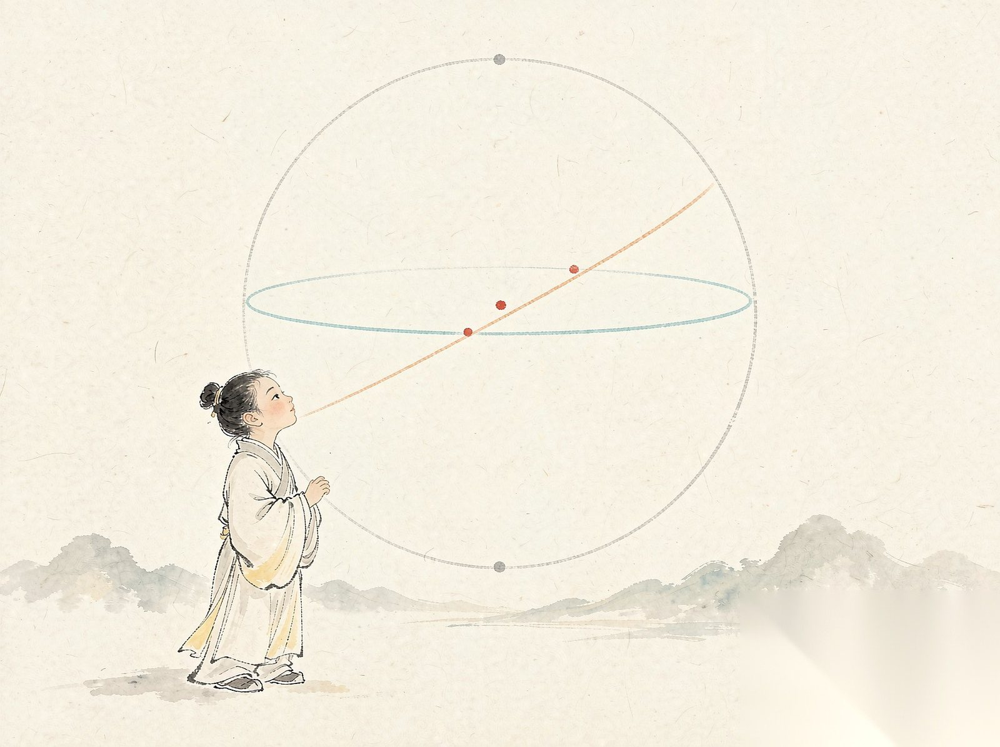
天球正中一圈横，一道斜圈穿过去。
黄道斜着穿过赤道；两圈相交，得到春分、秋分两个交点。黄道上离赤道最北、最南的两处，才是夏至、冬至。
春分、秋分这两天，太阳正落在交点上，昼夜均分，寒热平衡。
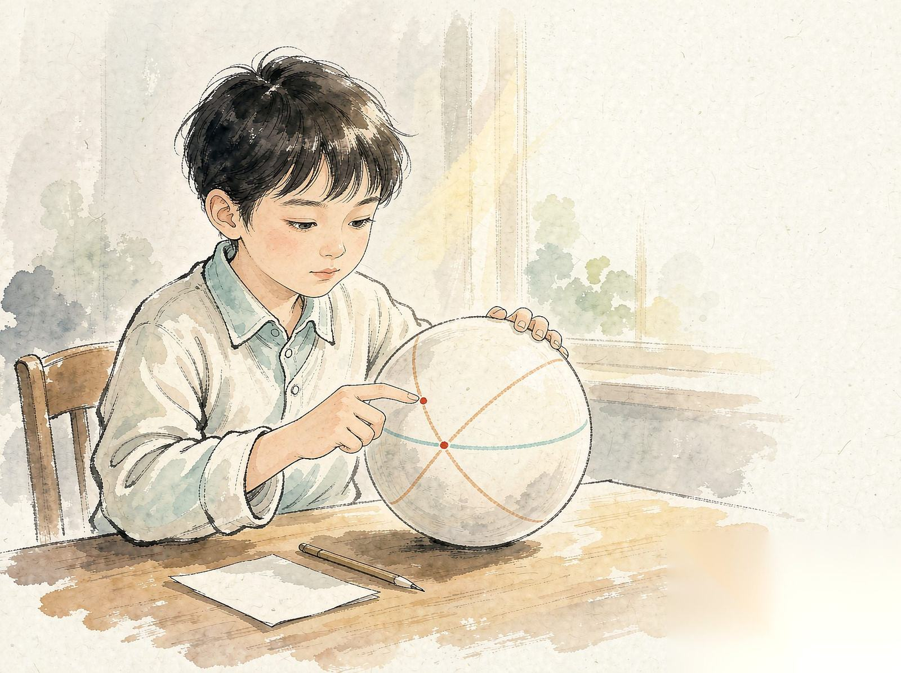
球上画一条横线，再画一条斜线，是两回事。
黄道讲流转变化，赤道讲恒定基准。
放到心上来说：外境如同黄道，起落流转不停；本心的衡准，如同赤道，是不变的参照。无论境遇如何推移，守住这一杆权衡，就能分辨得失、不被外境带偏。
随 流 转 而 失 基 准以 变 为 全
跟着时节、境遇的变化，丢掉内心那把标尺；把变化本身当成全部，手上再没有校验的参照。
立 衡 守 权，以 定 变 迁不 变 之 准
知变化是常态，同时安立一处恒定的权衡；以不变之权，观不息之运。
成 长 小 启 示
- 赤道，是天球正中的基准大圆，为天象权衡之准绳。
- 赤道恒定，黄道倾斜相交，二分由此而生。
- 变化的轨迹，要依托恒定的基准来观测度量。
- 向外有天象的衡准，向内要有自己不变的是非与本心标尺。
给 爸 爸 妈 妈 的 一 句 话 · 通 俗 区 分 古 今 天 文
一、先分清两个赤道。古书的赤道是天赤道，不是地球赤道，但两者对应。可以给孩子一句简单的话：这是古人给天空画的一条基准线，用来量日月星辰的位置。
二、把动静对上。黄道是太阳走动的路线，赤道是不动的参照，一静一动，互相配合。上一课刚讲过黄道，这一课正好接上。
三、承接教与学的二分。家长带孩子分“会变的现象”和“不变的基准”，属施教一侧；孩子自己学会在心里立一把价值标尺，是自主修习。
接上选择力练习：基准衡常不变，我们以此参照，从容应对万事的流转变迁。
— 72 —
成人研学 · 古今汇观第三十六课 · 深度页
曰赤道，当中权
权为衡准 ｜ 天赤道与地理赤道 ｜ 天球坐标系 ｜ 体用与权变
一 · 字义与句读
权，衡也，校准之标尺。全句：名为赤道，居于天球正中，作为天象观测的权衡基准。
黄道、赤道并举，一套完整的天球坐标框架就此成型，上承四方、中、五行、干支的象数体系。
二 · 命题考辨
勘误重点：不要和地球地理赤道完全混同。经文所言是天赤道，天球上的基准圈；地理赤道是地面上的一圈，二者投影对应，并非一事。
黄道为动、主时序生灭；赤道为静、主权衡校准。一动一静，正是华夏认知模型的一对核心。
与般若、空杯互参：赤道、黄道，皆是观测建立的假名坐标，并非天上实有线条；用来标定万象，而本身无实体。
呼应“时中”：中是本体，权是权衡之用；知中而后有权，权变而不离中。
三 · 中西对照
华夏古天文：赤道、黄道配对，动静相参，同时向内引申为心性权衡。
现代天文学：天赤道、黄道是标准天球坐标系，纯为观测工具，一般不作心性义理延伸。
西方古代：同样用黄道、赤道划分天球，但很少把“基准线”引申为修身的权衡之道。
反向思辨：立基准容易走向僵化固执；权的本意恰恰是称量，要随事称量，不是死守一条刻板标准。
四 · 与前后课的张力
次第链条继续延伸：…… → 曰黄道，日所躔 → 曰赤道，当中权
呼应“人不学，不知义”：义有权衡，以恒定之准，称量万变之事。
呼应“玉不琢，不成器”：修心即是确立权衡，在流转外境之中不迷失准则。
呼应“教之道，贵以专”：仰观天象，一动一静，教人建立参照体系。
存 疑 · 留 待 深 究
一、赤道为权，黄道为运；权与运之间如何把握平衡，不落入死守准则或随意放任两端？
二、二分二至由黄赤相交而生，这个交点，在义理上对应哪一层“中”？
三、这套动静坐标模型，如何脱离天文，直接用于日常观心？
— 73 —
润泽少儿启蒙国学 · 三字经第三十七课 · 赤道下
第 三 十 七 课
赤道下，温暖极
chì dào xià wēn nuǎn jí
先 ↓ 右列 再 ← 左列
古法竖排：自右而左，自上而下。先读右列「赤道下」，再读左列「温暖极」，每列从上往下。
赤道下——天赤道垂照对应的地面区域，即今日所说的热带；温暖极——日照直临，温热之气至于极处。极是顶点、边界，不是“极端不好”。
少儿共读读给孩子听
前面我们明白了天赤道，是天穹当中不动的权衡基准。
经文顺着这个基准，看向它向下映照的大地：赤道垂临的区域，日光直射，常年温热，是温暖之气的极点。
 中间一条暖带，往南北走，颜色一点点冷下去。
中间一条暖带，往南北走，颜色一点点冷下去。
越靠近赤道，太阳越容易高悬头顶，光照强烈，终年没有严寒；往南北走远，阳光渐渐倾斜，热量慢慢减薄，才有分明的春夏秋冬。
古人以此分出大地的寒热梯度：赤道之下暖极，极北之处寒极，一暖一寒，互为对待。
 摊开地图，赤道附近总是最热。
摊开地图，赤道附近总是最热。
冷暖也是相待而立。没有寒凉作参照，就显不出温热；温热到极点，便向另一头转化。
放到心上：热忱如火是暖极，沉静收敛是寒寂。人心不宜长久停在亢奋燥热的极点上，需要收敛、沉静来平衡。
耽 于 暖 盛，不 知 收 敛一 味 向 外
一味追求热烈亢奋，长久向外消耗；厌弃寒凉，只喜欢舒展温暖的那一面。
知 极 必 反，寒 热 相 衡盛 极 知 转
温热有极点，盛极当知转静；寒热互为参照，各有功用，不可偏废。
成 长 小 启 示
- 天赤道对应的地面区域，日照直照，温热达到极致。
- 寒热相待，暖有其极，寒亦有其极，二者互相制衡转化。
- 天地气化不会永远停留在一个极点，盛极必缓。
- 内心也是同理：热情进取之余，不忘沉静收敛，平衡身心。
给 爸 爸 妈 妈 的 一 句 话 · 通 俗 引 导，区 分 古 今 地 理 认 知
一、先说清古人的局限。古书只从日照寒热来划分，不带现代气候带的复杂条件，不必拿今天的标准苛责原文。要紧的一句：日照角度决定热量。
二、接到五行上。温暖极，就是阳气鼎盛之象，阳极生阴；与前面讲过的火性、午火相接，孩子会发现自己学过的是一套，不是十套。
三、承接教与学的二分。家长带孩子看阳光直射、斜射带来的温差，属施教一侧；孩子懂得亢奋之后需要沉静休养，是自主修习。
接上选择力练习：寒热的自然梯度恒定，我们主动调节自身状态，不长期停在亢奋的极点上。
— 74 —
成人研学 · 古今汇观第三十七课 · 深度页
赤道下，温暖极
极者至也 ｜ 热带与寒带 ｜ 太阳高度角 ｜ 阳极生阴与知止
一 · 字义与句读
极，至也，气化抵达顶点。全句：天赤道垂照之下的大地，日光直临，温热之气至于极处。
前面建立黄道、赤道的天球框架，至此落地于地理气化，完成由天向地的延伸，天地两套模型合参。
二 · 命题考辨
勘误重点：不要把“极”读成坏、读成过度。在象数体系里，“极”是边界、是临界点，是转化之机。暖极即是阳极，阳极生阴，正是循环流转的枢纽，与“此四时，运不穷”一脉贯通。
可联动般若范式：寒热、暖凉，都是相待建立的相，没有独立不变的热性、寒性。
同时呼应五行、干支：午为阳极，正对此“温暖极”；亥子为寒极，两两相对，维持气化循环。
与三才五蕴空杯模型对照：种种寒热之相，依虚空本体而显现；相有生灭转化，本体不随之变迁。
三 · 中西对照
华夏古地理：以天象基准统摄地气寒热，天象、地气、心性义理一体打通。
现代地理学：以太阳高度角解释热带高温，是纯粹的气候物理解释，一般不引申阴阳转化的心性道理。
古希腊地理：同样有热带、寒带的划分，但很少纳入循环转化的象数框架。
反向思辨：知道阳极生阴，不是遇事消极等转折，而是在鼎盛之时主动守敛、知止。
四 · 与前后课的张力
次第链条继续延伸：…… → 曰赤道，当中权 → 赤道下，温暖极
呼应“人不学，不知义”：义在于知极知止，盛而不骄，到了临界点懂得收敛。
呼应“玉不琢，不成器”：修心就是调伏自身阳气，不令长期燥热亢奋，阴阳均衡。
呼应“教之道，贵以专”：仰观天象、俯察地理，在寒热流转之中领会平衡之道。
存 疑 · 留 待 深 究
一、暖极为阳极，阳极生阴，这个转化的契机，是外在天时推动，还是内在本自具备？
二、寒热两极，与前文四方的南北、五行水火，如何一一精准对应？
三、知极而收敛，如何区分是主动知止，还是畏难退缩？
— 75 —
润泽少儿启蒙国学 · 三字经第三十八课 · 我中华
第 三 十 八 课
我中华，在东北
wǒ zhōng huá zài dōng běi
先 ↓ 右列 再 ← 左列
古法竖排：自右而左，自上而下。先读右列「我中华」，再读左列「在东北」，每列从上往下。
我中华——华夏中土，中华。华，光华、文明文采；中，承接全书一以贯之的“中”。在东北——以赤道暖极为原点的相对方位，不是现代地图的东北。
少儿共读读给孩子听
前面我们知道赤道之下，日光直照，温热到了极点。
以这个温热的极点作为参照中心来看，我们中华大地，就在它的东北方向。
 以最暖的地方作原点，我们的位置在它的东北。
以最暖的地方作原点，我们的位置在它的东北。
赤道一带常年酷热，而我们这片土地，有春暖、夏热、秋凉、冬寒，四季分明。
既不像赤道热带长久燥热，也不像极北之地长久严寒，得寒热调和之气。
同一张地图上，热、温、寒三段分明。
古人认为，正是这样温凉相济、四时轮转的地气，滋养出华夏这套重视中和、平衡的文明。
方位背后，是气化的差别。过热则生机易焦，过寒则生机难发；我们所处之地，寒热交替、收放循环，天然契合五行生克、四时运转的道理。
落到心上理解：心性修养，也当取这个调和之象，不偏执于大热、大寒两端，守持中和。
偏 于 一 端，喜 极 热 或 喜 极 寒以 一 处 为 最 优
一味追求亢奋躁动，或一味枯寂冷淡；以为某一处极点最好，不知调和可贵。
居 得 中 和，收 放 循 环往 复 平 衡
动静、冷热交替均衡，合乎四时运化；知道中和之境，贵在往复平衡。
成 长 小 启 示
- 以赤道暖极为参照原点，中华位于它的东北方位。
- 此地四时分明，寒热相济，得气化调和之质。
- 华夏文明崇尚中和，与这片土地的气化特质相互呼应。
- 修身治学，同样以调和不偏为根本。
给 爸 爸 妈 妈 的 一 句 话 · 说 明 古 今 视 角 差 异
一、先说清这是相对参照。古人以赤道热带为中心点，所以说中华在东北；这不是现代地图上的方位定义，两套坐标系不同，别拿今天的图去纠古人的错。
二、接到“中”上。上一课讲“中权”和守中，这一课正好落地：我们这片国土的气化，恰好落在寒热之间，是大地这一层的“时中”。
三、承接教与学的二分。家长带孩子理解方位、气候与文明气质的关系，属施教一侧；孩子自己领会中和调和的珍贵，是自主修习。
接上选择力练习：天地区位有定数，人的修为，却是在一切境遇里主动把握中和的分寸。
— 76 —
成人研学 · 古今汇观第三十八课 · 深度页
我中华，在东北
华与中 ｜ 相对方位与绝对坐标 ｜ 文明与地气 ｜ 时中
一 · 字义与句读
华，文光焕发；中，枢和。全句：我们华夏中华，以赤道暖极为参照原点，区位处在它的东北，得四时寒热调和之气。
前面搭建的天球、赤道黄道、寒热梯度，至此收拢落地，指向我们自身所处的文明根基之地。
二 · 命题考辨
勘误重点：极易用现代地图直接判古人方位错了。须知坐标原点一变，方位就变。原文的原点是“赤道下温暖极”这个热带中心，不是地图左下角。
义理核心不在地理考据，而在气化格局：此地不极热、不极寒，四时周流，天然适配阴阳五行、生克制衡这套认知体系，所以华夏格外推崇“中”。
联动般若空杯模型：东南西北皆是相待假名，方位依托参照点而立，没有绝对固定的方位；但在这个观测框架之内，有它稳定的运化秩序。
呼应全书“时中”：大地的时中，就是寒热往复、不滞一极，对应人心的不执两边。
三 · 中西对照
华夏古地理观：方位绑定气化与文明德性，土地气质与修心之道贯通。
现代地理学：只做经纬度定位，一般不把地域气候与文明心性直接挂钩。
其他古文明：也有中心国土的观念，但较少把国土方位嵌进一套完整的天象—五行—中和体系。
反向思辨：国土区位只是外缘条件，中和之道是人人可学的心法，不是这片土地独有的专利。
四 · 与前后课的张力
次第链条继续延伸：…… → 赤道下，温暖极 → 我中华，在东北
呼应“人不学，不知义”：义的中和，正是效法这片土地寒热相济的气化。
呼应“玉不琢，不成器”：打磨自心，就是效法这种不偏、循环调和的格局。
呼应“教之道，贵以专”：仰观天象、俯察地理，明白我们文明的根基从何处来。
存 疑 · 留 待 深 究
一、方位是相待假名，那么“中和”是地域带来的特质，还是本来普遍的本体之德？
二、四时调和的气化，会不会也有偏颇失衡之时，此时如何守住中和？
三、这套古方位气化模型，在全球化的视野下，应当如何取舍使用？
— 77 —
润泽少儿启蒙国学 · 三字经第三十九课 · 寒燠均
第 三 十 九 课
寒燠均，霜露改。右高原，左大海
hán yù jūn shuāng lù gǎi yòu gāo yuán zuǒ dà hǎi
古法竖排：自右而左，自上而下。上段先读右列「寒燠均」，再读左列「霜露改」。
下段续读：先读右列「右高原」，再读左列「左大海」。
少儿共读读给孩子听
寒燠均，霜露改。
右高原，左大海：承接上一课「我中华，在东北」，视线从方位转到地势与气候。
寒燠，冷与暖；均，调和不过偏；霜露改，随时令而变。
右，古以坐北朝南定位，右即西；左即东。
西边是高原，东边是大海。
四句写同一片土地的两副面孔：天上的寒暑，地下的高低。
对比：我中华，在东北 / 寒燠均，霜露改。右高原，左大海
上一课只说了「在哪里」，此课说的是「那里什么样」——冷到何处、暖到何处，高到何处、低到何处。方位是坐标，地势与气候才是肉身可感的处境。
对比前文阴阳太和：寒为阴、燠为阳，一岁之中消长有节，是阴阳相推而物生；高原载物而静，为阴之聚，大海潮汐而动，为阳之汇。高下相倾、寒燠相济，方成一片可居之地。偏寒则物瘠，偏燠则物淫，太和正在「均」字上。
勘破俗见：两类常见偏差。其一，读地理只当背地名与界线；其二，以为气候不过是天气，与人事无干。契合般若范式：佛说寒燠，即非寒燠，是名寒燠。寒暖是纬度、海拔与洋流和合而现的觉受，随缘而变，无有定实；强执一地为「常暖」「常寒」，便是执相。
北边冷，南边暖，一年里霜降、露生，轮着来。
地是西边高、东边低；右边是高原，左边是大海。
水汽从海上来，遇高山西边就挡住了，雨便落在半途。
一方水土养一方人：吃什么、穿什么、走哪条路，多半是土地先替人定了。
右是高原，左是大海。
 看天换衣，知冷暖。
看天换衣，知冷暖。
落到心上理解
承接上一课存疑：四方既定，那么「中」在哪里？
中不在图纸的正中间，在能调寒燠、均燥湿的那一点分寸上。人择水土而居，不是征服它，是学会与它相处。
高原与大海都是因缘：高原挡住了水汽，才有西边的旱与东边的润；海送来了雨，也送来了风与船。看见因缘，便不怨天，也不轻慢地。
不执一地之利，不怨一方之苦，随处境调身，便是无住。
正 解其 一
地名只是记号，寒燠高下才是人真正过日子的处境
正 解其 二
寒燠决定农时、衣食、道路，人事的一半写在水土上
成 长 小 启 示
- 寒暖有节，霜露随时令而改：自然有它自己的钟。
- 西高东低，水汽自海而来，雨落在山前。
- 一方水土养一方人，人的日子刻在地势与气候上。
- 认识处境是第一步：知道自己站在什么样的土地上，才知道该怎样用力。
给 爸 爸 妈 妈 的 一 句 话 · 这 一 课 讲 什 么，慢 慢 说 给 孩 子 听
一、勘俗见。带孩子看一张地形图，问一句「为什么西部干、东部湿」。让他明白，地理不是背地名，是看水与风怎么走。
二、现代对照。像住房子要知道朝向与楼层。同样的家具，朝南与朝北，日子过得不一样。
三、承接常变主线。寒燠有常（四时之序），霜露有变（每年迟速不同）；守常而知变，才不至于刻舟求剑。
四、承接教与学二分。地势气候是天然的师，人只能读它、顺它；读不懂便硬来，是学未成而先逞能。
承接选择力练习：选住处、选行当，先看水土与气候，再谈志气与本事。
— 78 —
成人研学 · 古今汇观第三十九课 · 深度页
寒燠均，霜露改。右高原，左大海
寒燠均，霜露改。右高原，左大海 ｜ 少儿页＋成人页
一
字义与句读
燠：暖。均：调和、不过偏。霜露改：霜降露生，随时令而变。右、左：古人坐北朝南，右为西，左为东。高原：西部青藏、云贵、黄土诸原。大海：东海、黄海、渤海。
全句释义：这片土地寒暖相调，霜露随时而改；西边是高耸的原野，东边是浩瀚的大海。
二
命题考辨
表层因缘
「右高原，左大海」六字，是极简的地形速写。中国地势西高东低，成三级阶梯：青藏高原为第一级，云贵、黄土、内蒙古高原为第二级，东部平原丘陵为第三级。水汽自东南海上来，遇第二、三级台阶抬升，雨多落在迎风坡，背风处便旱。一句话里藏着旱涝的由来。
深层因缘
「寒燠均」的「均」，不是处处同温，而是冷热有节、不偏不极。中国大部分地区处温带与亚热带，四季分明，故农事可期、仓储可备；这是文明的物质底线。若终年酷寒或终年湿热，人都难以积累。
现代对照
今日谈气候，多了「变」的一层：极端天气增多，古书所记的「常」正在移动。这不是说古人的观察错了，而是说「常」本身也有它的时段。读古书要取其法（察势、顺势），不取其数（具体的温与雨）。
般若范式互参
寒燠高原大海，皆是因缘假名。冷热由纬度、海拔、洋流和合而有，无自性；「西部」「东部」也是人立的界。见其缘起，则不怨天、不矜地。
延伸义理：
《金刚经》：凡所有相，皆是虚妄。地形气候是相，不是性。
《道德经》：天地相合，以降甘露，民莫之令而自均。「自均」二字，正是「寒燠均」的注脚。
《庄子》：夏虫不可以语于冰。一地的经验有其限，跨地便须重新学。
三
跨典互参（老庄、般若对照）
《道德经》：大曰逝，逝曰远，远曰反。水汽远去而成雨，雨落而复归海，是自然之循环。
《庄子》：天地有大美而不言。地势不言，而人自择居；能读其不言者，方为知地。
串联前文：自三才、三光、四时、四方、五行，一路数到水土；至此由「数」入「境」，从名目走进真实的土地。
四
和前面课程的张力
次第链条继续延伸：……曰赤道，当中权 → 赤道下，温暖极 → 我中华，在东北 → 寒燠均，霜露改 → 右高原，左大海 → 曰江河，曰淮济。
呼应「此四方，应乎中」：四方之所以能「应中」，正因为四方各带寒燠高下之性，中有其中和之度。
呼应「此五行，本乎数」：地形与水火木金土相配，数不是空数，落在山川上。
呼应「教之道，贵以专」：读地理要专在「势」上，不在名录上。
存 疑 · 留 待 深 究
「寒燠均」的「均」，是自然本已之均，还是人须调停之均？
古人坐北朝南定左右，若换一个朝向，「右高原」还成立吗？这说明了什么？
气候既在变，古书所记的「常」还能作为今人的准绳吗？
— 79 —
润泽少儿启蒙国学 · 三字经第四十课 · 曰江河
第 四 十 课
曰江河，曰淮济
yuē jiāng hé yuē huái jì
先 ↓ 右列 再 ← 左列
古法竖排：自右而左，自上而下。先读右列「曰江河」，再读左列「曰淮济」，每列从上往下。
江长江 · 河黄河 · 淮淮河 · 济济水
古称“四渎”，是华夏四条独流入海的大河。渎，独也，自成一道水脉。
少儿共读读给孩子听
前面我们知晓中华大地处在寒热调和的区位，得天时地利中和之气。
经文接着列出四条主干大河：长江、黄河、淮河、济水，古人称之为四渎。
四条大水各自入海，谁也不再汇进别家河道。
江、河、淮、济，四条大水，各自一路奔涌，直接汇入大海。
黄河雄浑，裹挟黄土，滋养北方大地；长江绵长温润，滋养南国；淮水横亘中部；济水细小，古书说它几度潜流伏行，故称“三隐三现”。
 河两岸的城、树、田，都靠着这一线水。
河两岸的城、树、田，都靠着这一线水。
大地如同一个生命体，这四条大河，就是大地的血脉，水气流转，润泽四方生灵。
水的本性是流通向下，滋养万物。
放到心上理解：人心也有一条“水脉”，念头、情绪宜疏导流通，不堵、不壅塞。心念淤堵，如同河道壅塞，容易泛滥成患；疏导顺流，则生机润泽。
壅 塞 阻 滞，堵 而 不 流只 压 不 疏
心事压抑、郁结，不肯疏导；妄念奔涌又不加收敛，肆意泛滥。
脉 道 通 达，润 物 无 声疏 而 有 度
觉察情绪，顺而疏导，不令淤滞；流通而有节度，如水入河道，有归处。
成 长 小 启 示
- 江河淮济，古之四渎，是华夏四条主干水系，独流入海。
- 水主流通润下，为大地生机血脉，滋养两岸生灵。
- 治水贵在疏导，调心也重在疏导，不压抑、不泛滥。
- 流通有节度，收放有度，方是水性中和。
给 爸 爸 妈 妈 的 一 句 话 · 通 俗 讲 解，补 充 古 今 变 化
一、先说明济水的变迁。古济水今已变迁，部分河道淤塞并入他水，这是地理的沧海桑田。重点不在考据故道，而在领会“四渎为大地主干血脉”这层喻义。
二、接到五行水。五行之中水主润下、潜藏流通；四渎就是国土之上水性的显化，与前面讲过的五行连成一串。
三、承接教与学的二分。家长带孩子看河流如何滋养万物，属施教一侧；孩子自己学会疏导情绪、不郁结于心，是自主修习。
接上选择力练习：水脉有天然的归向，我们调伏心念，疏导而不放纵，守住分寸。
— 80 —
成人研学 · 古今汇观第四十课 · 深度页
曰江河，曰淮济
四渎之渎 ｜ 独流入海 ｜ 流域与水文 ｜ 疏导与边界
一 · 字义与句读
渎，独流，不借他水，直接归海。全句：所说即是长江、黄河、淮河、济水，四渎为华夏大地主干水脉，流通润泽国土。
天地格局（四时、黄赤道、国土区位）已定，再进入大地血脉水系，五行之水在此落地显象。
二 · 命题考辨
勘误重点：不必执着考据济水故道变迁，义理不在地理考据。四渎对应四方、四气，是一套象数归类：水主流通、潜藏、归藏，承接五行水、地支亥子、四时冬藏的脉络。
与般若范式互参：江河是假名之相，水流不住，刹那推移，没有固定不变的“江”或“河”；但在这个观测框架下，水脉流通的秩序清晰可见。
联动三才五蕴空杯模型：山川水系种种形相，依托虚空而显现；万象流转，本体不动。
三 · 中西对照
华夏水系观：江河不只是水源，是大地气血，连通天地气化，与修身调心同构。
现代水文：研究径流、流域，侧重自然科学，一般不作心性疏导的类比。
其他古文明：也有圣河崇拜，但很少把水系纳入一套完整的四时五行中和体系。
反向思辨：疏导不等于放任自流。水要有河道，心念要有边界，这正是“流通”与“散乱”的分界。
四 · 与前后课的张力
次第链条继续延伸：…… → 我中华，在东北 → 曰江河，曰淮济
呼应“人不学，不知义”：水性流通而有河道，做人行事，贵在通达而守节度。
呼应“玉不琢，不成器”：调心如治水，疏而不堵，导而不漫。
呼应“教之道，贵以专”：仰观天象、俯察山川，在大地生机之中体悟中和流通之道。
存 疑 · 留 待 深 究
一、四渎对应四方四气，如何与五行相配？四水之外，土的枢纽落在何处？
二、疏导与克制如何平衡，什么时候宜疏、什么时候宜止？
三、水本向下，而生机向上，这一向下之性，如何支撑生生不息？
— 81 —
润泽少儿启蒙国学 · 三字经第四十一课 · 此四渎
第 四 十 一 课
此四渎，水之纪
cǐ sì dú shuǐ zhī jì
先 ↓ 右列 再 ← 左列
古法竖排：自右而左，自上而下。先读右列「此四渎」，再读左列「水之纪」，每列从上往下。
纪——纲纪、纲领、条理。不是简单的记录，是水脉体系的总绳。
四渎，就是天下水流的纲领。
少儿共读读给孩子听
前面我们认识长江、黄河、淮河、济水这四条大河，名叫四渎。
经文继续点明：这四条大水，是天下水流的纲纪。
主干定住，千万支流各归各位。
天下溪流千万，泉涧湖泽数不胜数，支流纵横交错。
古人从中提炼主干，以四渎作为水系的总纲领，百川归向、脉络依附，纷乱的水脉由此变得条理清晰。
一根主干，撑起满树枝桠。
主干定，则支流有序；主干通达，整片水系方能循环润泽。
落到心上理解：我们的念头万千纷飞，如同无数细流。需要确立心念的纲纪——有主心、有纲领，纷繁念头就不会散乱狂奔；主干立定，妄念支流自有归处，不泛滥、不淤堵。
万 念 纷 杂，漫 无 纲 领只 见 支 流
念头随外境飘转，东抓一把、西抓一把；只看见细碎支流，看不见主干脉络。
立 其 纲 纪，主 次 分 明提 纲 挈 领
守住本心纲领，纷繁外缘自有安放次序；提纲而众目张，执本而末从。
成 长 小 启 示
- 四渎为天下水脉的纲纪，是水系的主干。
- 纲纪确立，纷乱支流才有秩序，百川有所归向。
- 求学、做事、修心，都要先立纲领，抓住根本。
- 知纪守纲，繁杂之事才不容易使人迷失。
给 爸 爸 妈 妈 的 一 句 话 · 通 俗 引 导，提 纲 挈 领
一、用渔网和大树打比方。纲就是总绳，一提总绳，所有网眼都顺了；主干一立，枝叶自然排布。孩子摸过渔网、看过树，这个比喻就立得住。
二、接到五行水。水性润下流通，而纲纪是流通之中的秩序——流通而不散乱，这一句正好补上一课没说完的那半句。
三、承接教与学的二分。家长带孩子体会“抓主干”的思维，属施教一侧；孩子自己学会在繁杂事务里分主次，是自主修习。
接上选择力练习：万象自有纲纪条理，我们立住自心之纲，从容应对万千琐事。
— 82 —
成人研学 · 古今汇观第四十一课 · 深度页
此四渎，水之纪
纪为统绪 ｜ 主干与支流 ｜ 流域层级 ｜ 纲与目的边界
一 · 字义与句读
纪，纲也，统绪之宗主。全句：这四条四渎，是天下水流的纲纪，统摄百川水系。
前面由天象、区位落地山川水系，再由具象河流上升到秩序、纲领之理，与开篇的数字、干支体系首尾呼应。
二 · 命题考辨
勘误重点：不必执着“天下之水尽归四渎”的地理局限。这是象数归类模型：从万千水流中提取主干，建立秩序框架。
般若范式互参：纲纪是人心建立的条理假名，用来统摄纷繁现象；不是说天地间真有一个实存的“纪”在主宰水流。
联动三才五蕴空杯模型：江河支流诸相，依虚空显现；纲纪是认知整理出来的秩序，相有主次，本体无分别。
呼应“本乎数”：数即是万象内在的条理，四渎为水之纪，正是数理秩序在水土上的显化。
三 · 中西对照
华夏水纪观：水系与时序、身心同构，重提纲守本，以纲统目。
现代水文：划分流域、水系，偏重实测归类，较少引申修心提纲的义理。
其他古文明：有圣河崇拜，但少见把水系提炼为“纲纪”的哲学范式。
反向思辨：立纲容易变成固执守旧。纲是主干，不是桎梏；提纲是为了统筹，不是压抑支流生机。
四 · 与前后课的张力
次第链条继续延伸：…… → 曰江河，曰淮济 → 此四渎，水之纪
呼应“人不学，不知义”：万事有纲，得其纲领，则繁而不乱。
呼应“玉不琢，不成器”：修心以本心为纲，万念皆为支流。
呼应“教之道，贵以专”：教学先立大纲，而后细目次第铺陈。
存 疑 · 留 待 深 究
一、纲纪是客观本有，还是人为整理现象而建立的框架？
二、提纲守本，如何避免压抑支流、细节的生机？
三、纲与权如何配合，守纲而能权变？
— 83 —
润泽少儿启蒙国学 · 三字经第四十二课 · 曰岱华
第 四 十 二 课
曰岱华，嵩恒衡
yuē dài huà sōng héng héng
先 ↓ 右列 再 ← 左列
古法竖排：自右而左，自上而下。先读右列「曰岱华」，再读左列「嵩恒衡」，每列从上往下。
东岳岱（泰山） · 西岳华 · 中岳嵩 · 北岳恒 · 南岳衡
四岳镇守四方，中岳居中央为轴。
少儿共读读给孩子听
前面我们知晓四渎是天下水流的纲纪，是大地流动的血脉。
经文再举出五座大山：东岳泰山、西岳华山、中岳嵩山、北岳恒山、南岳衡山，合称五岳。
五岳分立五方：
东岳泰山，生机始发，是春生之位；西岳华山，肃敛刚正，是秋收之位；
南岳衡山，阳气敷布，温热舒展；北岳恒山，沉静固藏，守蓄生机；
中岳嵩山，居于大地正中，作为五方的轴心，统领四岳。
 四座山各守一方，中间一座作轴。
四座山各守一方，中间一座作轴。
山主稳重、安住、镇固。水脉流通不停，山岳岿然不动；一动一静，相辅相成。
沙盘上起伏的脊背，托着整片山河。
落到心上理解：心念如水，流转不息；本心如山，安稳不动。任凭念头起落来去，心中有一座不动的主峰，不为外境牵动。
心 念 飘 摇，随 境 动 荡只 爱 流 动
跟着外缘起伏，内心没有根基；只爱流动变化，耐不住沉静安住。
主 山 安 固，静 以 御 动流 而 有 根
知变动是流转，自守静定之本；动静互为其用，流而有根。
成 长 小 启 示
- 五岳：岱（泰）、华、嵩、恒、衡，镇守五方大地。
- 四岳拱卫中岳，以中为枢，与“四方应中”的义理一脉相承。
- 山主静定安固，水主流通润泽，山水相配，是天地的动静之道。
- 修心当学山岳之稳，在万千变化之中守住内在根基。
给 爸 爸 妈 妈 的 一 句 话 · 联 动 五 行，讲 静 定 的 力 量
一、把五行嵌进去。东岳木、西岳金、南岳火、北岳水、中岳土，一套五行正好落在五座山上，孩子会发现前面学过的五方五行，这里全都对上了。
二、拿山水作对照。水是流动的血脉，山是坚固的骨架；大地有骨架血脉，人有身心动静。这一比，比讲十条道理都直。
三、承接教与学的二分。家长带孩子体会静定的力量，属施教一侧；孩子自己学习在纷扰之中安定自心，是自主修习。
接上选择力练习：山岳的静定之德恒常，我们于流转世事之中，安守本心主峰。
— 84 —
成人研学 · 古今汇观第四十二课 · 深度页
曰岱华，嵩恒衡
五岳之名 ｜ 五方五行 ｜ 地形与地史 ｜ 静中起用
一 · 字义与句读
岱，岱宗；衡，权衡称量；恒，恒常固守。全句：所说即是东岳泰山、西岳华山、中岳嵩山、北岳恒山、南岳衡山，五岳为大地山镇，五方之宗主。
四渎为水之纪，五岳为山之宗；山水一静一动，天地格局至此完备。
二 · 命题考辨
勘误重点：不必局限于地理实测，核心是象数模型。五岳配五方、五行：东木、西金、南火、北水、中土。中岳为土德，居枢纽，承接全书“中权、时中”的主线。
般若范式互参：山岳是假名形相，山体也在缓慢迁变，没有永恒不变的山；而在这套认知框架内，以山镇象征静定本体，是方便教化的喻。
联动三才五蕴空杯模型：山河诸相显于虚空；山的静定、水的流动，都是相待而立的功用。
呼应“本乎数”：五数对应五行，五岳正是五行在山岳上的显化。
三 · 中西对照
华夏五岳观：山岳不只是地理高地，是承载五行、方位、德性的文化镇山，与修身静定打通。
现代地理学：只区分山地高程、地质构造，一般不赋予方位德性与修心隐喻。
其他古文明：多有神山崇拜，但很少构建“五方山镇、拱中为枢”的体系。
反向思辨：学山之静，不是枯坐死寂；静是根基，用以承载流通生机，静中能起大用。
四 · 与前后课的张力
次第链条继续延伸：…… → 此四渎，水之纪 → 曰岱华，嵩恒衡
呼应“人不学，不知义”：动静相须，流必有本，动不离静。
呼应“玉不琢，不成器”：修心立如山，方可驾驭心念流水。
呼应“教之道，贵以专”：仰观天象、俯察山河，于山静水流领会中和。
存 疑 · 留 待 深 究
一、五岳配五行，中岳属土，这个中土之枢，与赤道“中权”是同一义理层次吗？
二、山主静，如何在静定之中生出生生不息的功用？
三、这套山镇体系，脱离山河意象，如何直接用于日常观心？
— 85 —
润泽少儿启蒙国学 · 三字经第四十三课 · 此五岳
第 四 十 三 课
此五岳，山之名
cǐ wǔ yuè shān zhī míng
先 ↓ 右列 再 ← 左列
古法竖排：自右而左，自上而下。先读右列「此五岳」，再读左列「山之名」，每列从上往下。
岳——高大之山，可为一方之镇；名——称谓、名号。
岱、华、嵩、恒、衡，是这五座镇山的定名，是象数框架下赋予的名号。
少儿共读读给孩子听
上一课我们认识东岳泰山、西岳华山、中岳嵩山、北岳恒山、南岳衡山。
经文总括一句：这五座大山，合起来，名叫五岳。
五座山前各立一枚签，等着写名字。
天下高山数不胜数，古人独取这五座，冠以“岳”之名。
岳，有镇守、主持一方气化的含义，不是单纯说山很高。五方配五岳：东方主生、西方主敛、南方主敷、北方主藏、中央统摄四隅，五行之气，各有其所镇。
 贴上标签，普通的山就成了有名之山。
贴上标签，普通的山就成了有名之山。
落到心上理解：名号是标识，不是山岳本身。“五岳”只是一个名字，用来标记这一组承载五方中和之道的山镇。
再往内一层：我们平常说的“本心”“妄念”，这些词也都只是名字。不要停在名字上，要体会名字背后那层静定之德。
执 名 忘 实，困 于 符 号以 名 为 实
执着名号、概念，把名词当成真实本体；只记住五岳的名字，不懂镇守、静定之义。
因 名 达 实，不 滞 于 名借 名 见 实
借名号作指引，体会名号背后的德性；由名字入义理，知山喻本心不动之根基。
成 长 小 启 示
- 岱、华、嵩、恒、衡五山，总名五岳。
- “岳”是文化定名，用来标识镇守五方的山镇。
- 名号是方便，借名字去领会背后的气化与德性。
- 读书观理，贵在不执着于名词，体会名词所指的实义。
给 爸 爸 妈 妈 的 一 句 话 · 分 清 名 字 与 事 物
一、先讲标签不等于事物。名字是标签，方便我们分辨；标签贴得再好，也不是那座山。孩子认字、背名物，这一层要早点分清。
二、接上一课。四渎立水系之纲，五岳立山镇之名，山水成对，天地格局到这一课才逐步完备。
三、承接教与学的二分。家长带孩子区分“名字”和“真实本身”，属施教一侧；孩子自己学会不被名词概念困住，是自主修习。
接上选择力练习：名号是假名，我们借这些名相，参悟天地中和、静定安住的道理。
— 86 —
成人研学 · 古今汇观第四十三课 · 深度页
此五岳，山之名
名为称谓 ｜ 五方五行 ｜ 命名与地理 ｜ 假名与破执
一 · 字义与句读
名，称谓也，用以标识区别。全句：这五座山镇，统名为五岳。承接上句专名，给予总摄之名，收束五岳一节。
四渎言“纪”，主秩序；五岳言“名”，主标识。一理一相，一纲一名，互为表里。
二 · 命题考辨
勘误重点：重点在“名”的般若深意，不在地理考据。五岳这个名号，是华夏象数体系的文化建构，不是单纯的地质高地筛选。五配五行五方，中土为枢，延续“四方应中”的主线。
般若范式互参：“五岳”只是假名。山是形，岳是名；名依托形相而立，名本身无自性。名是舟筏，载我们通达义理，不可执筏为岸。
联动三才五蕴空杯模型：山岳之相显于虚空，名号是附加的分别标识；相、名都不离空性本体。
呼应“本乎数”：五这个数对应五行，五岳之名，是数理模型在山岳上的标识化落地。
三 · 中西对照
华夏岳山之名：名号承载德性、方位、气化义理，名与修心相通。
西方山岳：多为地理命名，名字一般不承载一套循环中和的心性哲学。
古文明神山：有神圣之名，但少有以五方、五行框架统摄的定名体系。
反向思辨：破执不等于废弃名号。名号是教化方便，若无假名，义理难以言说传递。
四 · 与前后课的张力
次第链条继续延伸：…… → 曰岱华，嵩恒衡 → 此五岳，山之名
呼应“人不学，不知义”：假名施设，为方便传道；循名责实，而不执于名。
呼应“玉不琢，不成器”：观一切名相，知其为标识，不被概念束缚本心。
呼应“教之道，贵以专”：立名以辨万象，借名以悟实相，是教化的善巧。
存 疑 · 留 待 深 究
一、名为假名，那么五方五行的秩序，是本来存在，还是依托这套名号体系才得以显现？
二、因名达实，如何把握分寸，既善用名相，又不落入名相的桎梏？
三、山岳之喻的静定，与前面赤道“中权”的权衡，义理层次如何区分？
— 87 —
润泽少儿启蒙国学 · 三字经第四十四课 · 古九州
第 四 十 四 课
古九州，今改制
gǔ jiǔ zhōu jīn gǎi zhì
先 ↓ 右列 再 ← 左列
古法竖排：自右而左，自上而下。先读右列「古九州」，再读左列「今改制」，每列从上往下。
九州——冀、兖、青、徐、扬、荆、豫、梁、雍，上古国土区划；改制——区划边界、治理制度随时代而变。
少儿共读读给孩子听
前面我们知晓五岳作为山镇，长久屹立，是大地相对恒定的标识。
经文转而说到国土区划：上古之时，天下分为九州；时代变迁之后，疆界划分、行政规制，都随之更改，不再沿用古九州的分法。
同一片山河，被虚线分成九块。
九州不是天然就在大地上的界线，是古人依照山川大势，人为划分的治理格局。
山川河岳长久在此，但是郡县、州府、行省这些边界，会随着朝代更迭、治理需要而调整。
同一块底板，两次画线，两次分法。
恒定的是天地山河，变动的是人设立的治理框架。
落到心上理解：有些根本的道理是恒常不变的，如同山河本体；而我们应对事情的方法、外在形式、规矩条目，是可以变通改制的。
守根本之常，改外缘之迹；不把一时的制度、方法，当成永恒不变的本体。
执 守 旧 迹，以 迹 为 常把 一 时 当 万 古
固守旧有的形式、方法，不知与时俱进；把一时的区划、礼法当成万古不变的铁律。
知 常 达 变，体 用 分 判守 本 而 善 变
守住根本义理，外在规制、手段可随时调整；不变的是中和本体，应变的是施行的制度。
成 长 小 启 示
- 古九州，是上古人文国土区划，依托山川形势而设立。
- 区划、制度属于人文施设，会随时代变革调整。
- 天地山河为常，人制礼法可变；知常，方能善变。
- 学习经典，要守住底层大道，不拘泥于古代的外在形式。
给 爸 爸 妈 妈 的 一 句 话 · 分 清 天 然 与 人 为
一、先分清天然与人为。山河是自然本有，州郡界线是人画出来的，方便治理。带孩子看一张地图，问一句：这条线是谁画的？
二、接到常变上。天行有常，人文可改制，这就是“体常而用变”。整本书讲到这里，常与变这一对才算讲透。
三、承接教与学的二分。家长带孩子分清根本道理与外在形式，属施教一侧；孩子自己学会守本心根本、灵活调整方法，是自主修习。
接上选择力练习：大道本体恒常，我们在行事之中，随宜调整方法，不胶固旧迹。
— 88 —
成人研学 · 古今汇观第四十四课 · 深度页
古九州，今改制
制为规制 ｜ 九州与九宫 ｜ 行政区划沿革 ｜ 常变与体用
一 · 字义与句读
制，区划治理之规制。全句：上古有九州之区划，时移世易，区划规制随之改易，不必固守古九州之界。
前面山河格局已经铺陈，自此由自然地理，转入人设立的治理体系，自然、人文两层对举。
二 · 命题考辨
勘误重点：义理重心在常、变之辨，不是考据九州沿革。山岳属于自然之常；九州区划、典章制度，属于人文之用，用则可变。
般若范式互参：九州疆界是假名施设，是人在山河之上附加的分别界线，山河实相之上本无此疆彼界。界线是治理方便，不可执为实有。
联动三才五蕴空杯模型：山河为体，区划名相为用；相有区划分别，虚空本体无边界隔阂。
呼应“本乎数”：九州取九数九宫之象，是象数模型用于国土治理；模型是工具，时代变，工具的形式亦可调整。
三 · 中西对照
华夏古地理政治学：区分天地常道与人王礼制，制度可变，大道中和之常不变。
其他古文明：也有疆域变迁，但较少把疆域区划纳入一套“常—变”的心性哲学框架。
现代行政区划：同样随治理需求调整，但一般不引申“守常达变”的修身义理。
反向思辨：改制不等于废弃根本。可变的是形式，不可变的是安民、中和的底层宗旨。
四 · 与前后课的张力
次第链条继续延伸：…… → 此五岳，山之名 → 古九州，今改制
呼应“人不学，不知义”：义有本体之常，有施用之变，体用不可混同。
呼应“玉不琢，不成器”：修心守住不变之本体，应对外缘，方法灵活改制。
呼应“教之道，贵以专”：经典所载，多是古时方便之制，贵在取其理，不泥其迹。
存 疑 · 留 待 深 究
一、常与变的边界如何界定？哪些属于不可改的本体，哪些属于可改的外缘形式？
二、改制容易流为随意变乱法度，以何为校验标准，防止权变泛滥？
三、九州九宫的象数框架，随区划改制，这套数理模型是否还具备价值？
— 89 —
润泽少儿启蒙国学 · 三字经第四十五课 · 称行省
第 四 十 五 课
称行省，三十五
chēng xíng shěng sān shí wǔ
先 ↓ 右列 再 ← 左列
古法竖排：自右而左，自上而下。先读右列「称行省」，再读左列「三十五」，每列从上往下。
行省——源起元代行中书省，后世简称为“省”，是高层行政区的建制框架。
三十五——旧本按当时建制记下的省数，是一张时代快照，不是古制定数，也不是当代区划。
少儿共读读给孩子听
前面我们知道上古天下分为九州，时代一变，区划制度就跟着更改。
经文接着说，后世改用行省制度；旧本按当时的建制，合计记作三十五省。
珠江口东岸，红点落在省界之内。
放到今天来看，我们依然保留“省”这个名称，但是省份、自治区、直辖市、特别行政区，和旧本的名单、边界，已经完全不一样。
还有一类特殊城市，例如深圳：行政上隶属广东省，同时是经济特区、计划单列市，在财政与经济管理上有特殊权限。它不属于独立的省级行政区，但在管理上有特殊安排。
同一块拼图，也能另给一份权限。
山川土地没有移动，是人根据治理、民生、历史、经济发展的需要，重新划定边界、调整建制、设置特殊权限。
九州、旧本的三十五省、今日的省级区划，连同特区、计划单列这套安排，是同一块国土在不同时代、不同治理目标下的划分与授权方案。
落到心上理解：我们很容易把某一版划分、某个数字、某个标签，当成永恒不变的真相。看清变动的表象，守住不变的本心，就是知常达变。
执 名 执 数，认 迹 为 实把 快 照 当 标 准
拿旧本的“三十五”当标准答案，执着某一版固定划分；被外在标签、数字定义自我，随名相起伏。
数 随 制 改，不 滞 标 签知 常 达 变
明白数目、区划只是时代快照，随治理需要调整，内部还可增设特殊授权；体认不变之本，接纳形式的流转变迁。
成 长 小 启 示
- 行省这套治理建制延续至今，而“三十五”只是旧本记下的一张快照。
- 古九州、旧本三十五省、今日省级区划，都是人文治理的划分方案；省内还可设特区、计划单列等特殊形态。
- 界线、名目、数量、治理权限都可以更改，承载这一切的山河本体不变。
- 读书学见闻，学会区分：大地实相为体，区划、建制、特殊授权，都是一时之用。
给 爸 爸 妈 妈 的 一 句 话 · 通 俗 引 导，说 清 数 字 为 何 会 变
一、别拿今天的省数去判旧本错。这句前面正是“今改制”，经文自己在预告数字会变。旧本记的是当时建制，不是标准答案，也不是考题。
二、把现行的数对上。今天省级行政区共三十四个：二十三省、五个自治区、四个直辖市、两个特别行政区。建制骨架“省”延续下来，分划细目与内部授权一直在改。
三、深圳这一例讲清。深圳属广东省，不是单独的省级单位；同时是经济特区、计划单列市，拥有特殊管理权限——这是制度灵活调整的例子，孩子从这里看懂“框架之内可以另设窗口”。
四、承接教与学的二分。家长带孩子对照古今清单、了解特区这类建制，属施教一侧；孩子练习不执着外在标签与数字，是自主修习。
接上选择力练习：名目、区划、授权一直在流转，我们在变动的外缘之中，安守本心之常。
— 90 —
成人研学 · 古今汇观第四十五课 · 深度页
称行省，三十五
行省源流 ｜ 旧本三十五之构成 ｜ 现行三十四 ｜ 深圳的建制定位 ｜ 假名与快照
一 · 字义与句读
行省，行中书省之省称，后世简称为省。全句：后世国土治理以行省为高层区划建制，旧本记其时总数为三十五；沿革至今，建制之名仍存，区划之数、疆界、名目、内部授权早已重新厘定。
承接上文改制，具象展示“制随时变，随宜设权”。
二 · 命题考辨 · 区划详释
（一）旧本“三十五”到底是哪一套。晚清通行本记的是“二十二省”（内地十八省＋东北三省＋新疆）。三十五这个数，对应的是抗战胜利后设置东北九省之后的省级统计，其构成为：
内地十八省：直隶、江苏、安徽、浙江、江西、湖北、湖南、四川、福建、广东、广西、云南、贵州、山东、山西、河南、陕西、甘肃。
东北九省：辽宁、安东、辽北、吉林、松江、合江、黑龙江、嫩江、兴安。
另加：新疆、西康、台湾、热河、察哈尔、绥远、宁夏、青海。
十八加九，再加八，正好三十五。西藏、外蒙古在当时为“地方”，不计入省数；旧本把它们一并算进去，凑成整齐数字，本是为教学方便。这一层正是极好的例证：数字本身也是为教化整合出来的口径，不是国土天然自带的划分。校订
（二）现行省级行政区，共三十四个。二十三省：河北、山西、辽宁、吉林、黑龙江、江苏、浙江、安徽、福建、江西、山东、河南、湖北、湖南、广东、海南、四川、贵州、云南、陕西、甘肃、青海、台湾。五个自治区：内蒙古、广西、西藏、宁夏、新疆。四个直辖市：北京、天津、上海、重庆。两个特别行政区：香港、澳门。
（三）深圳的建制定位。深圳市行政隶属广东省，不是独立的省级行政区。它同时具备两层身份：经济特区，是国家先行探索经济制度的试验区，在经济法规、市场政策上有特殊授权；计划单列市，财政直接与中央对接，不经省一级统筹，经济管理自主权很高。要点：高层划分的“省”是基础框架，框架之内仍可差异化授权、局部先行改制。
（四）一增一减之间。热河、察哈尔、绥远、西康这些当年计入的单元，已撤销并入邻省；重庆从四川析出设直辖市；海南从广东析出建省；港澳以特别行政区的新建制纳入；外蒙古已不在我国现行省级区划之内。校订
（五）般若范式互参。省界、省名、数目，全是相待假名。大地之上，本没有一条天然的线分隔河北与山东。界线、分类、总数、特区授权，都是人依治理、族群、地理、历史、经济试验建立的分别，属于治理与教化的方便。联动空杯模型：国土虚空为本体，山河为显现之相，行省区划、特区授权是叠加其上的分别名相；相可变，名可改，本体无分隔。
呼应“本乎数”：九（九州）、三十五（旧本）、三十四（现行），都是取数建立秩序；数是认知工具，工具可以更换，不可执数为道。旧本三十五是一张快照，今之三十四是另一张快照，深圳特区则是快照框架里的动态试验窗口——快照可用于学习与治理，快照不等于国土实相。
三 · 中西对照
华夏这套认知：以自然山河为体，区划制度、数目、授权为用，体常而用变，并直接连通修心破执。旧本三十五、现行三十四、深圳特区，层层递进，是一套现成的教具。
现代行政学：研究区划的治理效率、人口与经济适配，也研究特区、计划单列这类试点制度，但一般不会引申名相、破执的心性义理。
域外古代王朝：疆域划分常有变更，也有城邦、特许自治区域，但很少把区划变迁与局部特许提炼成一套“常变、名实”的教化义理。
反向思辨：否定名相，不等于废除制度。区划、律法、名目、特区试点，是治理世间的必要方便；只是不可执着某一版快照、某一套权限，当成终极实相。稳定的区划框架是世间秩序所依，觉察它是假名、是权设，是修行的观照。
四 · 与前后课的张力
次第链条继续延伸：…… → 古九州，今改制 → 称行省，三十五
呼应“人不学，不知义”：义在明辨名实，知制度为用、大道为体；省界的改易、特区的设立，共同把这个道理显明。
呼应“玉不琢，不成器”：打磨自心，即是放下对标签、数目、固定方案的执着，善用善巧而不被善巧束缚。
呼应“教之道，贵以专”：见闻之学，先分清何者为常、何者为变；明白框架之外还有权宜试点，方不被某一个时代的见闻快照困住。
存 疑 · 留 待 深 究
一、同样是“数”，前面五行、十干的数，与这里三十五、三十四这类区划统计之数，义理层级有什么差别？
二、制度作为假名方便，什么时候应当维护，什么时候应当变革、设立试点？以何为校验标准？
三、名相既非实有，为何一套稳定的区划框架，能够长久维系人间秩序？
四、方便法长期沿用，容易被当成本体；像特区这类局部权设，又容易被误认作主流范式，这个边界如何觉察？
— 91 —
润泽少儿启蒙国学 · 三字经第四十六课 · 曰士农
第 四 十 六 课
曰士农，曰工商
yuē shì nóng yuē gōng shāng
先 ↓ 右列 再 ← 左列
古法竖排：自右而左，自上而下。先读右列「曰士农」，再读左列「曰工商」，每列从上往下。
士、农、工、商——古称四民，是古代对社会职业的四大分类框架。
士掌教化、治理，读道明义；农耕植生产，供给衣食根本；工制作器物、巧艺造物；商互通有无、流转货资。
四民之说，见《管子·小匡》「士农工商四民者，国之石民也」；《汉书·食货志》亦云「士农工商，四民有业」。先秦之「士」本指武士，汉以后渐指读书仕进之人；讲四民，先要知道这个「士」是随时代变的。
对比「称行省，三十五」：上一课讲国土空间的区划，这一课转入人间社会，讲人群职业的分工。行省是土地层面的分别，四民是人群职业层面的分别；二者同属人文建立的分类名相，不是天地本然的分界。再对比「古九州，今改制」：九州、行省的界线随时代改易，四民这套框架同样随时代流变，古今职业形态已大不相同。
少儿共读读给孩子听
前面我们学习国土可以划分为九州、行省，界线、数目都会随时代调整。
经文接着告诉我们，古人把世间谋生的人群，分成四类：士、农、工、商。
古人的想法很朴素：有人读书明理、治理事务，有人耕种粮食滋养大众，有人制作器物，有人奔走交换物资。
四民各持本业，并肩而立。
放到今天来看，职业已经非常丰富：教师、医生、工程师、程序员、设计师、物流、服务业等等，远远不止四类。
但是底层道理相通：每一份职业，都是社会分工里的一环，彼此相依。
 一块拼图，补上一角。
一块拼图，补上一角。
这些分类标签，是人为了方便认知、安排秩序而设立的，不是人天生就固定属于某一类。
落到心上理解：四民只是一套分类标签。不要执着「士更高贵、商更卑下」这类旧的分别心。职业有分工，自性无高下；无论做哪一件事，都可以守住本心、尽心而行，也不必被职业标签定义自己。
执 分 起 高 下，以 业 定 人固 化 四 民 尊 卑
认定某一类职业高人一等，被自己的身份、岗位标签束缚，生出傲慢或自卑。
明 分 工 之 用，不 执 类 别 之 相各 安 其 职
知晓分类是治理教化的方便，职业只是分工不同；各安其职、互为滋养，自性本体无高低差别。
成 长 小 启 示
- 士农工商，是上古形成的社会四民分类框架。
- 分类是人为设立，用来理解社会分工，不是天生的等级。
- 时代变迁，新职业不断涌现，四民只是一个旧的概括范式。
- 做事可以尽责，心中不起职业高下的分别，便是观照。
给 爸 爸 妈 妈 的 一 句 话 · 通 俗 引 导，破 四 民 尊 卑
一、勘俗见。古代常有「士为贵，商为末」的偏见，经文只列举四类分工，本身并不支持尊卑等级。
二、现代对照。今天的社会分工远比四民复杂，科研、医护、基建、互联网、服务业，都可以归入这套「各尽其用、互通相生」的底层逻辑。
三、承接常变之辨。和前面的九州、行省一脉：分类框架可以沿用参考，分类名目、内涵随时迭代。
四、承接教与学二分。家长引导看见社会互相依存、破除职业贵贱的分别心，属施教一侧；孩子练习不拿职业、身份评判他人，是自主修习。
接上选择力练习：分工名相万千，我们在岗位上尽责，心中不起高下之执。
— 92 —
成人研学 · 古今汇观第四十六课 · 深度页
曰士农，曰工商
四民源流 ｜ 士的古今之变 ｜ 分工与尊卑 ｜ 假名与道场
一 · 字义与句读
四民，是先秦成型、后世沿用的社会人群分类。《管子·小匡》「士农工商四民者，国之石民也」，以四者为国之柱石；《汉书·食货志》「士农工商，四民有业」，各安其业。
士，本义事也，立身行道，承教化治理之责；农为本，供养民生；工以技成物；商以流通济有无。
全句释义：古人归纳人群之业，约为士、农、工商四类。此为世间人文分类之一种，随时代流转，业态、内涵持续演变。承接上一节国土区划，从空间分别转入人群分别。
二 · 命题考辨
（一）四民本义与后世的异化。源头之初，四民重在分工相济，是功能性划分：社会需要不同职能，互相支撑。后世礼教演化，慢慢附加上尊卑次序，形成「重本抑末」，崇士、抑商。这一层附加的价值等级，并不是经文本句所要表达的；《三字经》此处只是列举类别，陈述世间分工格局。
（二）「士」的名实之变。先秦之士多为武士、下级贵族，孔门之后渐有文士；汉以察举、隋唐以科举，「士」遂与读书仕进合流。故四民之「士」，在先秦与在后世所指并不全同。讲分类，先辨名实，才不至于用后世的「士」去套先秦的「士」。
（三）对照今日社会分工。现代社会分工高度细化，早已突破四民框架：古时「士」的功能，分化为公职、教师、学者、科研、法务、医疗等脑力与公共服务群体；「农」拓展为现代农业、种业、农林生态；「工」延伸为工程师、制造、基建、技术研发；「商」扩展为流通、供应链、市场、服务业、数字经济。甚至出现大量跨边界的职业，一人可以兼具多重职能。
如同九州演变为行省、增设特区：四民是一张古老的分工快照，快照的逻辑「相依共生」仍有效，快照本身的类目清单已经过时。
（四）般若范式互参。士农工商，是相待假名。天地之间，人本无「士、农、工、商」的天然标签；标签是为了组织社会、分配职能、安顿民生而设立的方便名相。联动空杯模型：众生自性是本体，生命活动为显现，职业分类是叠加其上的分别名相；相有分工，本体无隔，无高无下。
呼应「本乎数」：四，取四象四方之数，用四数建立秩序归类；数是归类工具，不可执四类为世间唯一的划分。
（五）延伸义理。修行最容易落入的一层执着，就是以身份、行当、法门分高下：修道高于经商，禅修高于日常做事。此章恰是对治这一层：分工是世间安排，自性不随职业升降。只要应事尽责，不住于相，农工商贾，皆是道场。
三 · 跨典互参
庄子《人间世》：「乘物以游心，托不得已以养中，至矣。」原稿作「各行各业皆是人间行事，善养其心，无往不可」，是概括而非原文，今依本文。其义在乘物而不为物所役，正是四民之中养心之法。
《金刚经》：「应无所住而生其心。」行一切事业，而不执事业之相、身份之相。
和「古九州、今改制」成一组对照：国土的疆界是分别，人群职业也是分别；一切分别，皆是随宜施设。
四 · 与前后课的张力
呼应「人不学，不知义」：义在于看破分别之相，知分工相生，而不被尊卑标签困住。
呼应「玉不琢，不成器」：打磨自心，即是在日常职业之中，消融高下之见。
呼应「教之道，贵以专」：见闻之学，既要了解社会分工，又不被古旧分类框架局限认知。
次第链条继续延伸：…… → 古九州，今改制 → 称行省，三十五 → 本课
存 疑 · 留 待 深 究
一、分工既然是假名，社会又为何需要稳定的职业分类与评价体系？
二、「无高下」是不是等同于不分善恶、不择行业？如何区分正业、邪业？
三、一人多职、跨界谋生的时代，如何在多重身份之中守住本心？
— 93 —
润泽少儿启蒙国学 · 三字经第四十七课 · 此四民
第 四 十 七 课
此四民，国之良
cǐ sì mín guó zhī liáng
先 ↓ 右列 再 ← 左列
古法竖排：自右而左，自上而下。先读右列「此四民」，再读左列「国之良」，每列从上往下。
良——本义为善、为正，指安守本分、各尽其责的人，不是指身份尊贵。
对比「曰士农，曰工商」：上一句只是列出四类分工，这一句给出评判标准——只要各守其业、尽心本分，便是国家的良善基石。
对比「古九州，今改制」「称行省，三十五」：国土区划、职业类目都是人文分类的假名；而「良」的标尺，落在存心与行持，不在分类标签本身。承接上一课破尊卑之见：不是士才是良，商就不是良；四类之中，皆可有良民。
少儿共读读给孩子听
前面我们知道，古人把社会分工分为士、农、工、商。
经文接着说，这四类人，只要踏实做好自己分内之事，安分尽责，就是国家可贵的根基。
这里很容易误会：不是只有读书做官的人才是好人。
农夫好好耕种，工匠用心造物，商人诚信流通，读书人尽心教化治理，各安其位，互相成全，都是社会需要的良善力量。
四业并立，光韵不加高低。
放到今天，道理不变。老师、医护、工人、种植户、程序员、物流从业者，无论哪一行，踏实尽责、心存厚道，就是这个时代的「良」。
石头形状不同，一同托住房。
落到心上理解：「良」是心性与行为的标尺，不是职业自带的属性。标签有分别，良善无界。不因自己的岗位生傲慢，也不因职业平凡而生自卑，尽己之诚，即是良。
以 业 定 良 莠，贵 士 而 轻 余向 外 逐 标 签
认为只有士一类才称得上国之良，其余只是末业；向外追逐体面的行业标签，以此证明自己。
良 在 存 心 尽 责，不 因 岗 位 分 优 劣四 民 平 等
四民平等，良是行持标准，不是身份特权；在当下分内事里守诚尽责，便是良。
成 长 小 启 示
- 「国之良」的评判标准，在于存心、尽责、守正。
- 士农工商只是分工，良善可以存在于任何一种分工之内。
- 时代职业虽不断新增，「各尽其诚」这个底层准则不变。
- 尊重每一份正当的劳作，在自己的分内事上守住本心。
给 爸 爸 妈 妈 的 一 句 话 · 通 俗 引 导，说 清 良 的 标 尺
一、勘破俗见。古人常有的偏见是「士为良，其余次之」，经文本意是：四类分工同等重要，尽责即是良。
二、现代对照。今天分工远多于四类，各行各业，只要是正当行业、诚信尽责，都属于社会的良性支撑。
三、承接常变之辨。职业类目可变，但「诚、尽责」这个检验良的内核是常道。
四、承接教与学二分。家长引导孩子看见劳作的价值、不以行业高低看人，属施教一侧；孩子练习踏实做事、诚敬待人，是自主修习。
接上选择力练习：业相万千，良只在一念尽心。
— 94 —
成人研学 · 古今汇观第四十七课 · 深度页
此四民，国之良
良字本训 ｜ 两层误区 ｜ 业与心的分层 ｜ 良的当世之相
一 · 字义与句读
良，《说文》：善也。不是显贵，是守正、尽职、厚道。
全句释义：士农工商四类分工，本是社会相生之结构；身处其中，安业守诚、尽其本分，皆为国之良善根基。承接上文分工之说，确立价值判断的内核标准。
二 · 命题考辨
（一）勘破两层误区。第一，误区：四民之中，士最高，唯士可称良。经文没有这个排序；这句话的逻辑是，社会由这四类功能支撑，每一类里面，都有尽责守善之人，共同构成国家根基。后世重士抑商，是后世外加的价值倾斜，不是本句经文本义。
第二，误区：只要从业就是良。「四民」是行业框架，「良」是附加的心行门槛。行业本身中性，良取决于存心、操守、行事底线。奸商、懒吏、怠工、荒农，虽身在四民之内，不得谓之良。
（二）对照当下社会。四民框架只是一个古老概括，但「良」的准则完全可以平移：公职、教育科研、医护对应古之士；现代农业、生态种植对应农；工程师、制造、技术人员对应工；流通、市场、服务业对应商；还有大量新生业态，同样适用此标尺。业是假名，良是心行。哪怕是跨行业、自由职业、数字从业者，只要正业、守信、尽责，便是当世之良。这和「行省是快照」同构：快照会过时，快照背后的观照原则可以长久沿用。
（三）般若范式互参。士农工商，是相待假名；「良」不是附着在名相上的属性，是在事相之中显现的心性状态。联动空杯模型：自性本体无良莠，起用行事之时，才有良、不善的分别；分别是世间教化的方便，本体不被这个分别束缚。
呼应「本乎数」：四是归类之数，良是价值之衡；数用于归类，衡用于校准心念，不可混淆二者层级。
（四）延伸义理。修行里常有一类执念：只有静坐、读经、闭关才是修行，世间做事不算。此章对治此执：一切正当事业，只要存心守正、尽分而不执取事业之相，皆是修行道场。应无所住而生其心，即在日用本分之中。
三 · 跨典互参
《道德经》第五十四章：「修之于国，其德乃丰」（帛书本作「邦」）。德不在名位，在日用行持。
《金刚经》：「如来所说一切法，皆是佛法。」不是只有特定形式的行持才是善法。
和前面国土区划的义理串联：疆界是分别，职业是分别；分别为世间秩序而立，而善恶良莠，只在起心动念、取舍之间。
四 · 与前后课的张力
呼应「人不学，不知义」：义在于区分分类名相和心性德行，不以行业标签定人。
呼应「玉不琢，不成器」：打磨自心，就是在日常事业之中守住诚敬本分。
呼应「教之道，贵以专」：见闻之学，既要认知社会分工，又要建立向内的价值标尺，不随世俗尊卑之见流转。
次第链条继续延伸：…… → 称行省，三十五 → 曰士农，曰工商 → 本课
存 疑 · 留 待 深 究
一、「良」以尽责为标准，如何平衡尽责与过度执着、内卷？尽心而不住，边界在哪里？
二、有些行业本身争议很大，如何界定「正业」？
三、当大环境的规则有偏，个体「守良尽责」的尺度如何把握？
— 95 —
润泽少儿启蒙国学 · 三字经第四十八课 · 曰仁义
第 四 十 八 课
曰仁义，礼智信
yuē rén yì lǐ zhì xìn
先 ↓ 右列 再 ← 左列
古法竖排：自右而左，自上而下。先读右列「曰仁义」，再读左列「礼智信」，每列从上往下。
仁义礼智信——即五常。仁恻隐共情，体恤万物；义合宜取舍，守正有节；礼次序恭敬，分寸有度；智明辨觉察，不陷愚迷；信表里如一，言行为契。
五常之目，定于汉儒：董仲舒《举贤良对策》合仁义礼智信为五常之道，《白虎通·情性》亦列五性。名目定型于汉，义理则上承先秦。
对比「此四民，国之良」：上一节讲外在职业本分，是事上的标尺；五常是内在心性的根本德目，是判断何为「良」的底层内核。再对比前面九州、行省、四民，皆属后天分类、建制名相；五常是华夏心性体系里用来调伏自心、安顿人伦的常道。关键一层：五常不是外在强加的规矩条文，是人心本有的觉知潜能；但后世容易固化成教条，变成束缚人的框架，这正是需要勘破之处。
少儿共读读给孩子听
前面我们知道，各行各业尽责守正，就是国之良民。
那我们凭什么知道什么是正当、什么是本分？古人归纳了五种本心的德行：仁、义、礼、智、信。
仁，是心里愿意体谅、爱护别人；义，是知道什么该做、什么不该做，有底线；礼，是待人有恭敬、懂得分寸；智，是会分辨好坏，不盲从；信，是说话做事守承诺，不欺人、不自欺。
五德环列，中心一团暖光。
放到今天，道理不变。善待他人是仁，坚守底线是义，待人谦和有礼是礼，独立清醒分辨是非是智，信守约定是信。
这五样，不是用来向外评判别人的标尺，是拿来关照自己的心。
 灯油在内，光才稳。
灯油在内，光才稳。
落到心上理解：五常是本心的功用，不是外在枷锁。若执着教条、死守条文而没有体恤、觉察之心，仁义礼智信就会变成僵化的外壳，是相，不是本体。守其本心，不执其形式，方是真五常。
执 五 常 之 条 文，教 条 束 缚以 规 矩 苛 人
把仁义礼智信当成固定规矩，刻板对照、苛责他人；只学外在礼仪说辞，内里无体恤、无觉察。
取 五 常 之 本 心，活 用 无 滞由 内 而 外
五德是心性的发用，随事合宜，内在为本；由内而外发起共情、明辨、守信，不拘泥形式。
成 长 小 启 示
- 仁义礼智信，称为五常，是人伦德行的五个面向。
- 五德根源在自心，不是别人定下用来约束我们的外在法则。
- 德行贵在活用，知分寸、懂变通，不可僵化死守形式。
- 前面说「国之良」，良的内核，正是这五常之心。
给 爸 爸 妈 妈 的 一 句 话 · 通 俗 引 导，分 清 心 与 礼
一、勘俗见。很多人理解五常就是老规矩、繁文缛节。重点区分：内核是心念，形式是载体；载体可变，本心常存。
二、现代对照。现代社会的同理心、契约精神、边界感、独立思辨、尊重他人，都可以对应五常的精神，只是外在表达形式和古时有差别。
三、承接常变主线。和九州、行省、四民一脉：外在仪轨属于可变之相，体恤、明辨、守信的本心是常。
四、承接教与学二分。家长引导孩子体会共情、底线、分寸、分辨、守信，属施教一侧；孩子在日常相处中慢慢觉察自心，是自主修习。
接上选择力练习：万象变迁，以五常观照自心，不取教条之相。
— 96 —
成人研学 · 古今汇观第四十八课 · 深度页
曰仁义，礼智信
五常源流 ｜ 体与用 ｜ 名相与德性 ｜ 现代转写
一 · 字义与句读
常，恒也。五常，恒常的德用。其目定于汉：董仲舒《举贤良对策》「仁义礼智信五常之道」，《白虎通·情性》列仁义礼智信为五性。
仁，二人之相与，推己及人；义，宜也，取舍合道；礼，履也，人伦次序、恭敬分寸；智，知也，觉照分辨；信，诚也，内外相合，不欺。
全句释义：人伦根本之德，约为仁、义、礼、智、信五者。承接上一节「国之良」，给出良善的内在心性根基；外有四民之分工，内有五常之德用，内外相依。
二 · 命题考辨
（一）五常本源与后世异化。五常定型于汉儒，根源在人自然的情感与觉知：人天然有恻隐、羞恶、辞让、是非之心，信是自心不自欺。但后世经学、礼教体系，慢慢将五常绑定固定礼仪、等级秩序，于是生出两层弊病：一是拿外在形式替代本心，行礼而无仁心，空谈信义而无觉察；二是用五常去固化尊卑，把礼变成压制弱者的工具。
这正是本句解读最关键的勘破：五常是「用」，本心是「体」；体不可变，用的形式随时而改制。
（二）对照当下的现代语境。今天不再是古礼的框架，但五常内核依然可以转化：仁→共情、关怀、人道主义；义→伦理底线、原则、正当取舍；礼→边界意识、尊重、文明分寸；智→理性思辨、独立判断、觉察自省；信→契约精神、真诚、对自己的承诺负责。以全书一贯范式看：五常旧名是一张认知快照，快照背后的人心觉照逻辑，可以跨时代延续。
（三）般若范式互参。仁义礼智信，是相待假名，是对心性发用的归类。自性本体本无仁义之名，遇境起用，方显五德。联动空杯模型：空杯之虚空为自性本体，五德是虚空遇外缘所显现的功用；功用有五类名目，本体不被名目分割、限定。
呼应「本乎数」：五，五行之数，以五归类德用；数是归类工具，不可执五德名目，以为心性只有这五类形态。
（四）延伸义理。佛法讲慈悲、持戒、般若，可与五常互参：仁近慈悲，义、礼近持戒，智即般若，信即真诚不妄。名相不同，所向都是调伏心念、离于狂乱偏执。同时般若的立场提醒：德行是渡船，不是彼岸；可依五德修心，而不执着「我是仁人、守信之人」这个我相。
三 · 跨典互参
《道德经》第三十八章：「失道而后德，失德而后仁，失仁而后义，失义而后礼。」老子勘破的，正是德行滑向外在形式的弊病，和此处勘破教条，一脉相通。
《金刚经》：「应无所住而生其心。」行仁义礼智信，而不执着「我在行德」之相，便是无住。
和前文串联：国土、人群是外在分别，五常是内在调心的分类框架；一切框架，皆是方便。
四 · 与前后课的张力
呼应「人不学，不知义」：义在于分清德之本体与德之形式，不被礼教外壳困住本心。
呼应「玉不琢，不成器」：打磨自心，就是在日用之中护持这五份本心觉照，不着德相。
呼应「教之道，贵以专」：见闻之学，既习得五常之名，又能洞见其流变，活用而不固化。
次第链条继续延伸：…… → 此四民，国之良 → 本课
存 疑 · 留 待 深 究
一、仁的体恤和无底线纵容，边界如何划分？
二、外在礼法形式完全去除之后，如何防止人心滑向放逸？
三、五常和佛家五戒如何更深一层互参，异同何在？
— 97 —
润泽少儿启蒙国学 · 三字经第四十九课 · 此五常
第 四 十 九 课
此五常，不容紊
cǐ wǔ cháng bù róng wěn
先 ↓ 右列 再 ← 左列
古法竖排：自右而左，自上而下。先读右列「此五常」，再读左列「不容紊」，每列从上往下。
紊——乱也，次序混杂、本末颠倒。不容紊，不是说名目顺序永远不能改动，而是德用的内在次序、体用边界不可混乱。
对比「曰仁义，礼智信」：上一句列出五德名目，这一句定下核心戒规——五德相生有内在次第，不可本末倒置。此「次第」是本稿的诠释：古注只列五德之名，先后并不统一，此处取其相生之义，不作古注定说。
对比前面：行省、四民，都是可改的快照名相；五常是人心德用的常轨。但要分清：轨则是常，外在仪轨是相。极易踩的误区：不容紊，不等于死守固定排序，不是仁义永远排在最前、不能调换；是不能把末当成本——不能只有礼的外壳，内里无仁；只求守信，失去道义底线。
少儿共读读给孩子听
前面我们认识了仁、义、礼、智、信五种本心德行。
经文接着告诉我们：这五常，内在有天然的次序，不能混乱颠倒。
简单来讲：仁是根本的体恤之心；有仁，才知道取舍合宜，就是义；有仁义，待人自然懂得恭敬分寸，就是礼；依靠仁义礼，我们才有清醒分辨的智慧，就是智；最后言行表里一致，便是信。
次序乱了，就容易出问题：只学表面礼貌，心里没有体谅他人的仁，礼就变成虚客套；一味讲守信，不分是非善恶，就是愚直。
 水自源头一路下来，不曾断。
水自源头一路下来，不曾断。
放到今天也是一样。我们待人做事，先存善意，再守底线，懂得尊重，明辨是非，言而有信。本心根基稳住，外在的言行才不会散乱颠倒。
 根在土里，果在枝上。
根在土里，果在枝上。
落到心上理解：所谓不乱，是体用不乱。以德性本心为根，外在举止为枝叶。可以变通形式，但不要丢掉根本；根基一乱，所有礼貌、承诺、聪明，都会沦为巧饰。
本 末 紊 杂，逐 末 忘 本有 礼 无 仁
重礼表、守信约，而无仁无义，流于虚伪愚执；拿智巧算计，包装成礼、信，颠倒德的次序。
守 其 根 柢，次 序 分 明由 仁 起 用
以仁为本，依次起用，礼智信皆由本心流出；智慧用来护持仁、义，诚信服从是非底线。
成 长 小 启 示
- 五常内在有相生次第，核心是：仁为本体，次第生发义、礼、智、信。
- 「不容紊」警戒我们不要本末倒置，不要拿外在形式替代内在本心。
- 德行可以灵活应事，但不能善恶不分、根基颠倒。
- 智用来照察、信用来兑现，二者都要依附仁义的底线，不能独立独行。
给 爸 爸 妈 妈 的 一 句 话 · 通 俗 引 导，讲 本 末 而 非 背 诵 序
一、勘俗见。很多注解把「不容紊」理解为背诵顺序不能乱，这是表层。真正的不乱，是心行次序不乱。
二、现代对照。教孩子礼貌（礼）、守约（信）之前，先培养共情善意（仁）与是非底线（义）；不然礼貌会变成讨好，守信变成盲从。
三、承接常变主线。和前面一脉贯通：名目、仪式可变，德用的本末逻辑不可紊乱；可变的是相，不可紊的是体用秩序。
四、承接教与学二分。家长引导看清德行的本末、不教虚礼愚信，属施教一侧；孩子遇事先存善念、再辨是非，是自主修习。
接上选择力练习：世事千变，守住德之本末，不被表象次序迷惑。
— 98 —
成人研学 · 古今汇观第四十九课 · 深度页
此五常，不容紊
紊字本训 ｜ 两层次序 ｜ 颠倒之病 ｜ 工具与本体
一 · 字义与句读
紊，《说文》：乱也。全句释义：仁义礼智信这五重德用，有根干枝叶的内在相生秩序，本末不可颠倒混杂。承接上句列述五常，划定修德的核心准则，是承接「国之良」的向内修持规范。
二 · 命题考辨
（一）辨析两层「次序」。表层次序：文字诵读顺序仁、义、礼、智、信，这只是传习的方便排序，不是硬性铁律。深层次序（不容紊的真义）：仁是恻隐之本，是德的源头；由仁生义，建立取舍边界；仁义发而为礼，显为待人的分寸恭敬；以仁义礼为标尺，生出明辨之智；最后以信落实，言行一如。
须说明：五德相生的次第，是先儒未尽言、后世注家亦不一致的一层，本稿取其义理次序，不等于经文本有一条钦定的排序。
颠倒之病，举几类典型：有礼无仁，繁文客套、内心冷漠，是虚礼；有信无义，坏人之约也死守，是愚信；有智无仁，聪明机变用来谋私算计，是奸智。这就是经文所说的「紊」。
（二）对照当下现代语境。现代伦理同样面临本末颠倒：契约、规则、礼仪、逻辑（礼、信、智）很容易被当成最高准则，而共情、人道底线（仁、义）被后置。此句的警示在今天尤为重要：规则、契约、理性是工具，工具是末；仁与道义是本体。工具服务本心，不是本心服从工具。
依旧沿用全书范式：五常是一套心性模型快照，快照的名目可以重新诠释，但本末相生的秩序，不可打乱。
（三）般若范式互参。五常名目是相待假名，是对心性起用的归类。自性本体不分仁义礼智信，但随缘起用，自有天然次第。联动空杯模型：虚空本体本无次第，虚空遇缘显现德相，根、干、枝、果自有次序，不可颠倒。
呼应「本乎数」：五为五行之数，五行相生，对应五常相生；数用来模拟秩序，不可执数字序列为实。
（四）延伸义理。对照般若：布施、持戒、忍辱、精进、禅定、般若六度，同样有次第，而不住次第之相。此处「不容紊」不是执着次第相，而是修持时防止自己落入本末倒置的伪德；明白次序，又不被次序束缚，才是中道。只知不乱而固守形式，也是一种执着。
三 · 跨典互参
《道德经》：「大道废，有仁义。」老子提醒仁义已是次生之德，但并不否定德的次第。
《金刚经》：「菩萨应离一切相，发阿耨多罗三藐三菩提心。」修五常而不执着「我在修五常」，不执着次序相。
串联前文：国土区划、四民职业，皆可变相；五常德轨，是调心常道，常道之中，亦不可执相。
四 · 与前后课的张力
呼应「人不学，不知义」：义，即是明辨本末先后，不被德行的外表迷惑。
呼应「玉不琢，不成器」：打磨自心，就是时时检点，有没有把巧饰、客套、契约放在仁心道义之前。
呼应「教之道，贵以专」：见闻之学，既要知五常之名，更要守住本末次序，不流于伪德。
次第链条继续延伸：…… → 曰仁义，礼智信 → 本课
存 疑 · 留 待 深 究
一、仁为本，有没有特殊情境，义可以优先？如何区分权变与紊乱？
二、如何区分「守住次序」和固化教条？权变的边界在哪里？
三、自性本体无次第，为什么起用之后必须讲究次第？
— 99 —
润泽少儿启蒙国学 · 三字经第五十课 · 地所生
第 五 十 课
地所生，有草木
dì suǒ shēng yǒu cǎo mù
先 ↓ 右列 再 ← 左列
古法竖排：自右而左，自上而下。先读右列「地所生」，再读左列「有草木」，每列从上往下。
地所生——大地承载孕育，生出百草、林木。草木是天地生机最直观的显现。
对比「此五常，不容紊」：上一段落向内，讲人心德行、人伦常轨；此句一转，向外回归天地万物，从人之心性看向自然生化——由人返物，由人文常道接入造化生机。
对比前文五行、四时、江河五岳：山河是大地之体，草木是大地之用；大地寂然承载，草木是生生不息的显化。俗见勘破：经文不是单纯科普草木，是以草木喻性——草木各有其性，自生自化，不攀不执，恰是观照的教具。
少儿共读读给孩子听
前面我们学习了仁义礼智信五种本心德行，懂得做人的根本次序不能混乱。
经文把目光向外，看向大地：大地默默承载，生长出各种各样的花草与树木。
小草、大树，都从土里生发，汲取水土阳光，自然抽枝、开花、结果，枯荣循环。
一处开花，一处已枯。
每一种草木习性不一样：有的喜阳，有的耐阴；有的春发，有的秋实。它们顺着自己的本性生长，不强求、不攀比。
我们人也是天地所生，和草木共享这同一份生生之机。
根、苗、花，一步跟着一步。
落到心上理解：草木有生灭，生机不曾断绝。如同自性，相有生住异灭，本体不随枯荣变动。草木顺性而生，便是自然；人若能顺本心而不妄攀缘，便是同合天地生机。
向 外 攀 求，强 求 外 形执 繁 盛 之 相
盼草木常开不谢，执着繁盛之相，惧怕凋零；拿别的草木来对比，强求改变它本来习性。
顺 受 其 根，任 运 生 化各 随 自 性
知晓枯荣是自然流转，生机藏在生灭之中；各随自性，安于当下的生长状态。
成 长 小 启 示
- 大地是承载之德，草木是生生之用。
- 草木有枯荣，是自然规律，繁盛与凋零都只是表象。
- 万物各有禀赋，不必用同一个标准去要求所有生命。
- 观草木，可以体会生生不息，体会不攀缘、不妄求的道理。
给 爸 爸 妈 妈 的 一 句 话 · 通 俗 引 导，从 人 伦 转 向 生 生
一、勘俗见。不要只当成简单的博物句子。《三字经》在这里是由人伦转向天地生化，以德配天：前面讲人的五常，现在看天地的生生之德。
二、现代对照。观察植物的生长，正是很好的生命教育：接纳盛衰、接纳差异，不攀比、不焦虑。
三、承接常变主线。草木形态、品类千变万化，但承载、生生的底层大道不变；相可变，生机本体不变。
四、承接教与学二分。家长带着孩子观察花草枯荣、体会生灭，属施教一侧；孩子慢慢学会接纳变化、接纳差异，是自主修习。
接上选择力练习：世事如草木荣枯，知流转而不执繁华之相。
— 100 —
成人研学 · 古今汇观第五十课 · 深度页
地所生，有草木
生字本训 ｜ 坤德承载 ｜ 草木喻性 ｜ 枯荣与无住
一 · 字义与句读
生，《说文》「进也，象草木生出土上」；孳育之义由此引申。地为坤，「地势坤，君子以厚德载物」（《易·坤·象》）；草木，是坤德最直接的显化。
全句释义：大地厚德承载，化生百草林木。由人伦五常向内之德，向外推开视野，接入天地造化，打通人、物、天地的脉络。
二 · 命题考辨
（一）草木作为喻体的两层义涵。第一层，造化实相：大地无分别，不分善恶美丑，平等滋养百草杂木，坤德即是平等承载，无拣择。第二层，心性譬喻：草木有种子之性，种子里面本具完整生机；外缘水土阳光具足则萌发，外缘消散则枯萎。对应全书一贯的核心：本自具足，缘来则显，缘散则隐。
草木本身不生执着，不会执着常绿、执着繁花；枯了便枯，荣了便荣，天然合乎「无住」。
（二）对照当下现代语境。现代生物学讲植物的生命周期、物候、生态位，是从物质层面描述；经文取的是象，取其承载、生生、随缘生灭、各安其性之理。我们常常执着生命常驻、美好恒在，看到花开欣喜，看见凋零伤感，正是人心起了分别；草木本身，没有这个取舍。
（三）般若范式互参。草木、大地，皆是相待假名。山河大地、草木荣枯，都是五蕴缘起显现之相。联动空杯模型：虚空为本体，大地、水土是外缘，草木是缘起显现的相；荣枯是相的流转，虚空本体不曾增减。
呼应「本乎数」：草木品类万千，取「生」这一共性，用以显坤土之德；以物象显道，不是把草木当成道本身。
（四）延伸义理。《金刚经》「凡所有相，皆是虚妄」，草木荣枯便是眼前现成的梦幻泡影。但不是否定生机，是不执着荣枯之相；看见生生，而不住于生灭，即是中道。
三 · 跨典互参
《道德经》：「人法地，地法天，天法道，道法自然。」草木自生，是自然最直观的样子。
《庄子·齐物论》：「大块噫气，其名为风。」大块即大地，风是大地吐纳之气；万物由是而作，草木亦在其中。
串联前文：人有五常之德，地有承载生生之德；人文名相、天地物象，同为缘起之显现。
四 · 与前后课的张力
呼应「人不学，不知义」：义在于贯通人伦与造化，明白人心之德，同于天地生生之德。
呼应「玉不琢，不成器」：打磨自心，就是学习草木一般，顺性而不攀缘，知荣枯而不生执。
呼应「教之道，贵以专」：见闻之学，从人文德行拓展到天地万物，由近及远，由人及物。
次第链条继续延伸：…… → 此五常，不容紊 → 本课
存 疑 · 留 待 深 究
一、草木无情，人有情；以草木喻心性，如何区分无情之自然，与人有情之觉性？
二、「顺性而生」，如何区分顺自性，与随波逐流、放任习气？
三、大地承载一切，亦生毒草恶木，坤德的平等，是否不分善恶？
— 101 —
润泽少儿启蒙国学 · 三字经第五十一课 · 此植物
第 五 十 一 课
此植物，遍水陆
cǐ zhí wù biàn shuǐ lù
先 ↓ 右列 再 ← 左列
古法竖排：自右而左，自上而下。先读右列「此植物」，再读左列「遍水陆」，每列从上往下。
此植物，遍水陆——草木这一类生命，遍布水域与陆地，无处不有。
对比「地所生，有草木」：上一句点明大地化生草木；这一句铺开空间维度——生机不局限于一处，水陆皆可孕育。
对比前文四渎、疆域行省：疆界是人划定的分别，而植物的生机，不被人设立的边界阻隔。俗见勘破：不是单纯讲博物分布。水陆是一组阴阳之象——土陆为阴静承载，水为流通滋养，阴阳和合之处，生机便能发生；生机没有固定疆界，遇合适因缘便能显现。
少儿共读读给孩子听
前面我们知道大地能够生长花草树木。
经文接着告诉我们：这类植物，陆地有，水里也有，遍布各处。
山坡、原野、林间长着草木；池塘、湖泊、江海之中，也有水草、水藻、荷花。
岸上水中，绿意相连。
只要水土、阳光这些条件具足，生机就会萌发，不会因为我们划分的地界而停止生长。
每一处水土，都有适配它的生命。天地的生机，广阔周遍。
 笔下一片，处处有生。
笔下一片，处处有生。
落到心上理解：生机周遍，不受人为边界束缚。我们的心性也是如此，本自周遍，不因环境、境遇的分别而隔断；有外缘滋养，就自然起用。
执 界 为 实，以 为 有 隔自 画 牢 笼
认为疆界、处境是牢不可破的阻隔，生机只能在特定地方才有；认定自己只能在某一种环境、身份里才能安心。
知 界 假 名，生 机 周 流自 性 无 分 界
水陆只是相上的划分，生机本体周遍，因缘具备即现；境虽有别，觉性不分水陆。
成 长 小 启 示
- 植物的生机遍布水陆，不受人为边界限制。
- 水陆只是形态环境的差异，不是生机的界限。
- 因缘合适，生命就能萌发；外缘改变，生命形态随之调整。
- 周遍不息，是天地生机本来的样子。
给 爸 爸 妈 妈 的 一 句 话 · 通 俗 引 导，讲 生 机 周 遍
一、勘俗见。不只做自然科普。承接上一课草木之德，进一步讲生机的周遍性，对应前面「三才、天地人」的格局。
二、现代对照。带孩子观察水生、陆生植物，看见生命适应不同环境；引申到人心，不要自我设限，画地为牢。
三、承接常变主线。水陆环境千差万别，是可变之相；生生之机周遍不变，是常。
四、承接教与学二分。家长引导看见生命跨越边界的力量，属施教一侧；孩子学习不自我设限、不被境遇困住，是自主修习。
接上选择力练习：外境分水陆，本心无藩篱。
— 102 —
成人研学 · 古今汇观第五十一课 · 深度页
此植物，遍水陆
遍字本训 ｜ 水陆阴阳 ｜ 边界与生机 ｜ 周遍之照
一 · 字义与句读
植，植根而立；物，有质有形之生命。遍，周匝无遗。
全句释义：草木一类生命，陆地、水泽之中，无处不生。由草木之体，扩展开生机周遍之象；承接坤德化生，彰显道体周流，不囿于一隅。
二 · 命题考辨
（一）水陆的象义。陆，土也，坤之静载；水，流通滋养，坎之流动。一静一动，一固一流，阴阳和合。凡阴阳相济之处，便能化生。人划分的国土、省界，是后天假名；造化生机不依从这些假名边界。
这和「行省、三十五」形成对照：行省是人设立的区划，可以改、可以合并；生机的周遍，不属于人为划分的体系。
（二）对照当下现代语境。生态学讲生态位、生境，不同植物适配不同的水土、光照条件。经文不取物种分类，取其「周遍」之象。我们习惯用各类标签、边界把世界切分开：地域、身份、圈层、学历。而这一句恰是提醒：边界是认知的切片，真实的生机、真实的缘起，本来流通无碍。
（三）般若范式互参。水陆、植物，皆是缘起假名。联动空杯模型：虚空自性是本体，水陆是外缘境相，草木是缘起显现；境相有水陆之别，虚空不曾被分割成两块。
呼应「本乎数」：水、陆为阴阳两象，以二分法显周遍之理；二是分别之数，本体不二。
（四）延伸义理。《金刚经·妙行无住分》以「东方虚空可思量不……四维上下虚空可思量不」设问，明虚空不可思量、福德亦不可思量。此句正是借眼前万物显「周遍」。山河水陆是相，如同五蕴；生机所依之本体，不在水上、不在陆上，却能于水陆之中随缘显发。修行之中的「遍照」，正是这一层：境有分限，觉照不分。
三 · 跨典互参
《道德经》：「大道泛兮，其可左右。」大道周流，如同生机遍水陆，无有边界。
《庄子·知北游》：道在蝼蚁，在稊稗，在瓦甓，在屎溺。道不拣择处所，水陆草木之中，随处可见。
串联前文：前面人伦、国土都是分别建立的秩序；至此向外观物，见大道周遍，超越一切人为分界。
四 · 与前后课的张力
呼应「人不学，不知义」：义在于透过水陆的分别之相，体会大道周遍无隔。
呼应「玉不琢，不成器」：打磨自心，就是慢慢打破内心自我划定的重重边界。
呼应「教之道，贵以专」：见闻之学，从一物之生，通达周遍不息的造化之道。
次第链条继续延伸：…… → 地所生，有草木 → 本课
存 疑 · 留 待 深 究
一、生机遍在，为什么有的地方寸草不生？是本体有缺，还是因缘不足？
二、周遍无隔，和善恶拣择如何共存？大道周遍，何以亦生毒草？
三、心性周遍，为何凡夫会强烈感受到「阻隔、隔阂」？隔阂从何而起？
— 103 —
润泽少儿启蒙国学 · 三字经第五十二课 · 有虫鱼
第 五 十 二 课
有虫鱼，有鸟兽
yǒu chóng yú yǒu niǎo shòu
先 ↓ 右列 再 ← 左列
古法竖排：自右而左，自上而下。先读右列「有虫鱼」，再读左列「有鸟兽」，每列从上往下。
虫、鱼、鸟、兽——继草木之后，再举动物一类，各有身形、各有栖居之所，同是天地气化所生。「虫」古作「蟲」，是动物之泛称，不专指今日昆虫。
古以「蟲」统称动物，《大戴礼记·易本命》分羽、毛、甲、鳞、倮五虫，人为倮虫之长。此经「虫鱼鸟兽」是取象四类，不可径以今日生物分类读之。
对比「此植物，遍水陆」：上一节讲植物，植根不动，静而吸收滋养；此节转入动物，有情游走、飞潜动静——一静一动，构成造化生命的两大类别。对比前文五行、阴阳：草木属静阴；虫鱼鸟兽能趋避、感知、游走，内含灵动之阳；阴阳相济，生化方全。俗见勘破：不是单纯罗列动物品类。草木无情而顺化，鸟兽已有觉知趋避；经文在这里，是从「静生」迈向「有觉之生」，为后面回到人做铺垫。
少儿共读读给孩子听
前面我们知道，花草草木遍布水里、陆地。
经文继续告诉我们，天地之间，还有虫、鱼、鸟、兽。
小虫爬行，鱼儿游在水里，飞鸟翱翔空中，走兽奔跑于山林原野。
飞的、游的、走的，都在。
它们和草木一样，依靠天地水土阳光存活；但它们可以走动、游弋、飞翔，知道趋利避害，躲避危险，寻觅食物。
万物形态各不相同，习性千差万别，却都同受天地滋养，共享这一份生生之机。
一张图上，众生往来。
落到心上理解：草木安住不动，鸟兽往来迁徙；形体、觉知有差别，但能生之本体没有差别。我们容易以大小、美丑、灵蠢去分别高下；在大道看来，都只是缘起显现的生命之相。
以 形 相 分 高 下，贵 灵 贱 蠢心 生 爱 憎
觉得鸟兽高于虫类，动物高于草木，心生取舍爱憎；执着「有知觉才珍贵」，轻视静的生命。
知 形 相 有 别，生 机 同 源本 体 无 高 低
飞潜动植，皆是因缘所显，本体生机无高低；觉知是起用，本体不分动静。
成 长 小 启 示
- 虫鱼鸟兽，是天地所生有情之属，能感知、能移动。
- 草木静，鸟兽动，一动一静，共同成全天地生化。
- 生命样貌万千，各安其居，各顺其习性。
- 学会尊重一切生命，不因外形、种类而起轻视之心。
给 爸 爸 妈 妈 的 一 句 话 · 通 俗 引 导，从 静 到 动
一、勘俗见。不要当成简单的生物列举。前面讲五常是人内在德行，再向外看草木，再到鸟兽有情，是一套由人→静物→有情众生的观修次序。
二、现代对照。带孩子观察小动物，看见它们的恐惧、求生本能，体会众生皆有好生之愿，建立同理心。
三、承接常变主线。虫鸟鱼兽品类无尽，形态习性随时空演化，是可变之相；好生、生生的大道是不变之常。
四、承接教与学二分。家长引导看见飞潜动植同根同源、长养慈悲，属施教一侧；孩子慢慢放下对生命的分别取舍，是自主修习。
接上选择力练习：飞潜动静皆是相，不以外貌品类生爱憎。
— 104 —
成人研学 · 古今汇观第五十二课 · 深度页
有虫鱼，有鸟兽
虫字古义 ｜ 静生动动 ｜ 五虫之分 ｜ 众生同源
一 · 字义与句读
虫，古作「蟲」，为动物之泛称。《大戴礼记·易本命》以羽虫、毛虫、甲虫、鳞虫、倮虫分属五类，人属倮虫；非今日「昆虫」一义。鱼居水，鸟飞天，兽处山野；四者合举，概一切有情动物。
全句释义：天地造化，除水陆草木之外，复有虫、鱼、鸟、兽，飞潜往来，各含觉知，同禀一气而生。承接植物静生，补足造化「动而有知」这一面，阴阳动静圆满。
二 · 命题考辨
（一）动静两层生命的对照。草木扎根一处，无主动趋避，是「静生」，依外缘而荣枯；虫鱼鸟兽有识、有苦乐感受，能游走迁徙、趋吉避凶，属于「有情」。经文这个排布次序极有章法：先静后动，由无情到有情，慢慢铺展，最后收束回到「人」这一最具觉照的有情。这和全书的般若框架契合：相有层级，本体不二。
（二）对照当下现代语境。现代生物学划分界门纲目，区分动植物、无脊椎、脊椎动物。经文不用精细分类，只用四类概括，取其「动、有觉知」的共相。四类只是取象，古有五虫之分，不必据此认定天地间动物只有四种。
世人常常建立价值链条：人＞兽＞鸟＞鱼＞虫＞草木。这套价值排序，是人心附加的分别，不是造化本有的标尺。
（三）般若范式互参。虫、鱼、鸟、兽，全是缘起假名，是五蕴因缘和合之相。联动空杯模型：虚空自性为本体，水土、时节为外缘，有情身形与觉知，是缘起显现。鸟兽能觉知、草木不能，只是缘起显发的功用差别，虚空本体不曾增减。
呼应「本乎数」：四类取四象之数，对应四方、四时；以四类有情，象征一切游走生命，数字只是归类的工具，不可执实。
（四）延伸义理。般若讲一切众生皆有佛性，正是这一层：飞潜动植，相虽悬殊，性体无二。《金刚经》不拣择众生，不分品类度化；此处借眼前鸟兽，直观体会众生同源，慈悲由此生根。
三 · 跨典互参
《道德经》：「万物并作，吾以观复。」草木鸟兽一同兴起，同归于根。
《庄子·齐物论》：「天地与我并生，而万物与我为一。」庄周梦蝶，正是打破人与鸟兽之间坚固的分别边界。
串联前文：从国土区划、四民、五常，再到草木、鸟兽；一路向外，层层展开，看见所有分别，都是认知的假名。
四 · 与前后课的张力
呼应「人不学，不知义」：义在于看破物种高下的分别，知晓飞潜动静同源一体。
呼应「玉不琢，不成器」：打磨自心，就是慢慢消融对生命品类的爱憎取舍。
呼应「教之道，贵以专」：见闻之学，由静植进入有情，为慈悲、仁爱建立观察的根基。
次第链条继续延伸：…… → 此植物，遍水陆 → 本课
存 疑 · 留 待 深 究
一、草木无情、鸟兽有情，这个分界是实有，还是我们认知的方便划分？
二、众生同源，为什么会出现强弱、捕食、食物链的残酷结构？
三、慈悲护生，边界在哪里？如何不落入妇人之仁，违背自然演化的节律？
— 105 —
润泽少儿启蒙国学 · 三字经第五十三课 · 此动物
第 五 十 三 课
此动物，能飞走
cǐ dòng wù néng fēi zǒu
先 ↓ 右列 再 ← 左列
古法竖排：自右而左，自上而下。先读右列「此动物」，再读左列「能飞走」，每列从上往下。
能飞走——飞于空际，走于大地；举其典型，统摄游、爬、潜一切自主迁行。
对比「有虫鱼，有鸟兽」：上一句铺陈品类；这一句提炼共相。草木扎根，谓之静；鸟兽虫鱼可以飞、可以走、可以游，是「动」的本义。飞、走，是有情生命自主趋往的象征。
对比前文阴阳：植为静阴，动物为动阳；飞为阳之扬升，走为阳之游行；一升一游，合于气机流转。俗见勘破：不要局限字面，以为只有飞鸟走兽。经文以飞走二字统摄：鱼之游、虫之爬，都归入这一类「自主移动」的功用；飞走是象，核心是有觉知、能主动择境，和草木被动待缘截然不同。
少儿共读读给孩子听
前面我们知道天地之间，还有虫、鱼、鸟、兽这些生命。
经文总结这一类动物：它们能够飞翔、奔走，自主去往别处。
鸟儿振翅飞上云天，野兽奔跑穿行山林，小虫匍匐爬行，鱼儿在水里游来游去。
能飞的与扎根的，同处一幅。
草木只能守在一处，等着雨水阳光；而虫鱼鸟兽，会主动去找食物，躲避危险，挑选适合自己生存的地方。
能飞、能走，代表它们有感受、有选择。但无论飞得多高、走得多远，依旧离不开天地的承载滋养。
 一边生根，一边远行。
一边生根，一边远行。
落到心上理解：飞走是自在迁移的相，这份「能选择」，就是觉知的显现。但能选择，不等于自在解脱：鸟兽会追逐食色、畏惧灾患，依旧被外缘牵引，随境流转。我们人同样有选择的能力，区别在于：能不能觉察自己的取舍，不被欲望牵着盲目奔走。
执 迁 移 为 自 在，逐 境 奔 波随 境 流 转
以为能够自由去往哪里就是真正自由，不断追逐外境；羡慕奔走翱翔，厌弃安住不动。
知 飞 走 是 功 用，不 迷 于 取 舍本 心 为 主
飞、走只是缘起的能力，本心才是真正的主人；动、静皆是相，本体无分动静高下。
成 长 小 启 示
- 动物的特点，在于能够自主飞翔、奔走、游动。
- 可以主动选择环境，是觉知带来的能力。
- 有选择，不等于不受束缚；鸟兽依旧被生存、习性牵引。
- 动和静没有好坏，只是生命缘起显现的不同形态。
给 爸 爸 妈 妈 的 一 句 话 · 通 俗 引 导，分 清 能 力 与 自 在
一、勘俗见。这一句是承接静植、有情的分界点，完成「静→动」的生命序列。不是科普动物运动，是观察「选择权」从这里显现。
二、现代对照。可以引导孩子看见：会跑会飞固然灵动，但也会有追逐、恐惧、焦虑；安住和奔走，各有因缘。
三、承接常变主线。飞走的方式千差万别，物种形态代代演化，是可变之相；觉知取舍这个底层功用，是造化之常。
四、承接教与学二分。家长引导区分「能力」和「自在」，不把自由等同于到处奔走，属施教一侧；孩子慢慢觉察自己的选择、不盲目追逐，是自主修习。
接上选择力练习：身可迁，心勿随境狂奔。
— 106 —
成人研学 · 古今汇观第五十三课 · 深度页
此动物，能飞走
动字本义 ｜ 两层能动 ｜ 能择与自在 ｜ 流转与无住
一 · 字义与句读
动，移也；飞走，举其典型之相，统摄游、爬、潜等一切自主迁行。
全句释义：虫鱼鸟兽这一类有情生命，具备觉知，能够飞翔奔走，自主改换所处之境。以此收束动物一类的特质，和前文植根不动的植物形成清晰对照，阴阳动静圆满。
二 · 命题考辨
（一）区分两层「能动」。草木之动：随风摇摆、随季荣枯，属于外缘驱动，被动变化，无自主拣择。动物之飞走：内有苦乐觉知，主动趋利避害，是内生的选择。这正是经文排布次序的深意：先讲无情依缘，再讲有情择境，层层递进，最后推向人——人拥有觉知，更有觉照自省的可能。
（二）对照当下现代语境。现代生物学讲趋性、本能、迁徙行为。经文不取本能机制，而是取哲学之象：有能力选择去处，是一把双刃剑。鸟兽凭本能择境，依旧困在习性链条之中；人拥有选择，既可向外追逐，也可以向内观照。这一句，悄悄埋下后文「人」的伏笔。
（三）般若范式互参。飞走、动静、有情无情，全部是缘起假名。联动空杯模型：虚空自性为本体，外缘因缘和合，显现出「静植」与「能动有情」两类相；能飞能走，只是缘起起用的差别，虚空本体不会因为生命可以迁移而改变。
呼应「本乎数」：飞升为阳，走游为阴，一阴一阳，以飞走两象概括一切迁变之相；数是方便归类，不可执实。
（四）延伸义理。般若常说「众生流转」，流转正是这「飞走」的广义版本：众生在六道之中，随业奔走，随境迁流。能飞走，即是能流转；修行，就是在这本来会奔走的觉知之中，生出一份不随境跑的觉照。不是废掉选择、不再行动，而是虽行而无住。
三 · 跨典互参
《道德经》：「飘风不终朝，骤雨不终日。」一切迁动之相，皆不能常驻。
《庄子·逍遥游》鲲鹏之喻，以高飞远走，点破大小之见：飞走只是相，逍遥不在远游。
串联前文：从国土区划、四民五常，到草木、有情、飞走；一路向外铺展，看见一切动静之相，皆是缘起。
四 · 与前后课的张力
呼应「人不学，不知义」：义在于明辨迁动之相，懂得「能选择」不等于自在。
呼应「玉不琢，不成器」：打磨自心，就是在一切取舍奔走之中守住觉照，不随境流转。
呼应「教之道，贵以专」：见闻之学，由静植转入有情迁流，为理解人心、烦恼、修行铺垫根基。
次第链条继续延伸：…… → 有虫鱼，有鸟兽 → 本课
存 疑 · 留 待 深 究
一、本能的趋避，和人的自主抉择，分界在哪里？
二、若「飞走」即是流转，修行的行动、行善利生，算不算一种奔走？如何做到行而无住？
三、无情没有流转之苦，是不是反而更近于道？
— 107 —
润泽少儿启蒙国学 · 三字经第五十四课 · 稻粱菽
第 五 十 四 课
稻粱菽，麦黍稷
dào liáng shū mài shǔ jì
先 ↓ 右列 再 ← 左列
古法竖排：自右而左，自上而下。先读右列「稻粱菽」，再读左列「麦黍稷」，每列从上往下。
六谷——华夏先民赖以安身的主食。稻是水稻；粱是粟之精者（米粒精善之粟）；菽是豆类总称；麦为大小麦；黍是黄米（黏者）；稷为谷之长，旧注有粟、高粱、穄诸说。
粱、稷旧注常同训为粟，并列易混。今分说：粱取粟米之精善者，稷取「谷之长」的尊位，两者所指有重叠，古注异说并存，不强断为二物。
对比「此动物，能飞走」：上一节讲有情飞走、趋避流转；经文笔锋一转，回归人赖以生存的稼穑之本。前面遍举天地万物，草木虫鸟，此刻收束到和人最紧密的谷物——天地生机，落到人间，首先化成养命之食。对比前文阴阳五行：谷物属土，承地气而生，滋养人身，是人承接坤德最切近的通道。俗见勘破：不是单纯认谷物名称。六谷是造化生机与人伦文明的交汇点：草木千千万，唯独这六种被先民驯化栽培，从野生草木转为滋养族群的资粮；这里藏着「人取天地之用，安养色身，而后方能修德明道」的次第。
少儿共读读给孩子听
前面我们看见鸟兽虫鱼能够飞翔奔走，在天地间自在往来。
经文转回人间，说起养活我们的谷物：稻、粱、菽、麦、黍、稷，这六样，是古人的主食。
水稻长在水田，小米、麦子、黄米、豆子、稷米长在旱地。
 六样谷穗，高矮不一。
六样谷穗，高矮不一。
它们同样是大地长出的草木，但是先民学会播种、耕耘、收获，把它们变成粮食，养活一代一代人。
天地生出万物，人取其中合用的，滋养身体。身体安稳，才有空间去学仁义、修本心。
 一粒谷，走了很长的路。
一粒谷，走了很长的路。
落到心上理解：谷物也是草木一相，荣枯生灭，同循造化。区别在于：其余草木任其自然生灭，五谷经由人的劳作，转化为滋养色身的因缘。身是载道之器，衣食安稳才是修心观照的基础；但不可执着口腹之味，把滋养当成追逐享乐的目标。
贪 味 逐 食，为 口 腹 奔 波本 末 倒 置
一心追逐美食滋味，不断放大食欲，被饮食牵绊；视五谷为理所当然，不见耕耘、天地造化之功。
知 谷 养 身，以 安 身 修 道食 为 资 具
明了粮食只是滋养色身的资具，安身之后，重心向内修德；懂得一粥一饭，皆是天地因缘与人的劳作和合而成。
成 长 小 启 示
- 稻粱菽麦黍稷，合称六谷，是古人主要粮食。
- 谷物属于草木，依托水土地气生长，承接大地生生之德。
- 稼穑是人对天地生机的善用，先安色身，方能进学修德。
- 饮食重在滋养，不应当放纵口欲，沉溺滋味。
给 爸 爸 妈 妈 的 一 句 话 · 通 俗 引 导，六 谷 是 人 立 足 之 基
一、勘俗见。很多解读只做识字，认六种粮食。全书脉络里，这是一个重要转折：从天地万物之象，落回到人的色身资养，是「三才」中人的立足根基。
二、现代对照。可以带孩子认识主食，体会食物来之不易，建立惜福之心；引申：物质供给是基础，但不是生命的终极追求。
三、承接常变主线。谷物品种、种植方式随时代演变，是可变之相；「资养色身，承载修持」这个功用不变，是常。
四、承接教与学二分。家长引导孩子感恩水土劳作、爱惜粮食，属施教一侧；孩子慢慢分清「需要滋养」和「贪求美味」，是自主修习。
接上选择力练习：谷以养身，身以载心，不令口腹主宰本心。
— 108 —
成人研学 · 古今汇观第五十四课 · 深度页
稻粱菽，麦黍稷
六谷名实 ｜ 粱稷之辨 ｜ 色身与德行 ｜ 食为资具
一 · 字义与句读
六谷，是华夏农耕文明的根本资粮。稻水生，其余五谷陆生；水土阴阳和合，谷实乃成。
粱，旧说为粟之精者；稷，为谷之长，旧注有粟、高粱、穄诸说。二者所指有重叠，历代注家亦不统一，此处并存，不强行分判。菽为豆类总称，麦为大小麦，黍为黏黄米。
全句释义：天地化生草木，其中稻、粱、菽、麦、黍、稷六类谷物，经先民耕植收获，用以滋养人身。由广观万物，收束到人赖以存续的资粮，建立「色身—德行」的次第根基。
二 · 命题考辨
（一）六谷的两层义涵。第一层，造化层面：五谷同是地生草木，和野草、杂树同源，无高下本相；只是因缘不同，被人驯化，成为养命之材。第二层，人伦次第：身不安则道不立。儒家讲先养后教，和般若修行「依此色身而修」相通。这个身体，是五蕴和合之身，也是我们观照、修持的依托。没有资养，色身衰损，修学无从谈起；但若困在食味、贪欲之中，又会被外缘绑缚。这是中道。
（二）粱稷何以并称。《尔雅》有「粱，粟」之说，稷亦被训为粟、为穄、为高粱，说各不同。经文并列粱、稷，重在列谷之目，不在考订物种；若以今日植物学一一对号，反失古人之意。
（三）对照当下现代语境。现代农业育种、耕作、储运，形态、技术早已大变；但底层逻辑不变：生命需要物质滋养。现代的误区，恰是两端：一端轻视身体滋养、空谈心性；一端不断刺激食欲、消费欲望，把饮食变成享乐竞赛。经文放在此处，恰好校准次第：食为资具，不是目的。
（四）般若范式互参。六谷、滋味、色身，皆是缘起假名。联动空杯模型：虚空自性为本体，水土、时节、人力是外缘，禾谷、滋养之效是缘起显现。谷物可以养身，却不是自性本身；色身借谷物维系，色身同样是缘起之相。
呼应「本乎数」：六谷取六之数，对应六合、六爻；数字只是归类标识，不必执着六谷为定数。
（五）延伸义理。《金刚经》讲菩萨布施、度生，亦不离饮食资养，但是不住饮食之相。道家讲「食气者寿」，但基础教法，依然承认稼穑养身的现实次第。此句安插在这里，承接万物生化，点明：一切天地生机，最终和我们这个五蕴之身相连。
三 · 跨典互参
《道德经》：「治人事天，莫若啬。」稼穑本身，就是啬养、惜生的示范。
《庄子·马蹄》：「织而衣，耕而食，是谓同德。」耕织自足，同得天地之德；先明稼穑之德，方知何为不贪、何为俭。
串联前文：前面遍举山河、四时、草木、鸟兽，向外撑开造化格局；到此向内收，落到人的色身资养，为人伦、五常、修持托底。
四 · 与前后课的张力
呼应「人不学，不知义」：义在于明先后次第，先养身，后修德，不做空谈心性的偏执。
呼应「玉不琢，不成器」：打磨自心，就是在饮食日用之中，守住分寸，不被滋味贪欲牵引。
呼应「教之道，贵以专」：见闻之学，由天地万物落回日用衣食，在最朴素的稼穑之中体会大道。
次第链条继续延伸：…… → 此动物，能飞走 → 本课
存 疑 · 留 待 深 究
一、同样是草木，为何独取六谷为养命主食，造化是否有偏向？
二、修行之中，节食、辟谷，和「谷以养身」的次第如何平衡？
三、惜福、节俭，会不会滑入自我苛待？中道边界何在？
— 109 —
润泽少儿启蒙国学 · 三字经第五十五课 · 此六谷
第 五 十 五 课
此六谷，人所食
cǐ liù gǔ rén suǒ shí
先 ↓ 右列 再 ← 左列
古法竖排：自右而左，自上而下。先读右列「此六谷」，再读左列「人所食」，每列从上往下。
人所食——承接稻粱菽麦黍稷，点明这六类谷物，是人类赖以取食、滋养色身的资粮。
对比「稻粱菽，麦黍稷」：上句列物之名；这一句建立物与人的关联。草木品类万千，虫鸟亦各取食；唯独六谷，是人主动耕耘收获、专为养护自身的食本。
对比前文三才：天地生谷，人取而食，正是三才相交、天人相接的日用节点。坤土生养，人承其德，色身方能存续，才有修学、践行五常的根基。俗见勘破：不是简单一句「这六种粮食是人吃的」。重点在「所食」——万物本来无「粮食」之名，是因人的需求、人的取舍，才把这一部分草木命名为谷。谷是假名，是缘起相待的标签，并非草木本身自带「食粮」的属性；鸟兽采食野果草籽，于鸟兽而言，那也是它们的「谷」。
少儿共读读给孩子听
前面我们认识了稻、粱、菽、麦、黍、稷六种谷物。
经文接着告诉我们：这六谷，是我们人类的主食。
同样是大地长出来的草木，野草、杂木，我们一般不吃；六谷经过先民世代培育，籽粒饱满，适合滋养我们的身体。
弯腰割下的，是一家人的饭。
鸟兽觅食，多是随缘拾取；人要耕种、除草、等候时节、收割储藏，才能够稳定获得粮食。
身体依靠粮食滋养，我们才有精力读书、待人、修善。衣食安稳，是做人求学的起点。
 一碗饭，绕了一圈回来。
一碗饭，绕了一圈回来。
落到心上理解：「粮食」是相待之名。草木本身无分别，因人之需，才有谷与杂草的区分。我们依赖食物，却不可执着滋味、贪求无度：食是缘，用来养护这个五蕴之身；借这个色身去观照、去修持，才是次第。若把吃食当成生命的目的，便是本末倒置。
执 谷 为 贵，贪 求 滋 味分 别 草 木 高 下
认为六谷天然贵重，追逐精细美味，不断放大口腹之欲；以为杂草无用、唯谷可贵。
知 为 资 粮，借 身 修 道够 用 即 止
知晓谷物只是因缘和合的滋养之具，够用即止，重心向内；明白谷与野草，本体同为地生，差别只在对人的功用。
成 长 小 启 示
- 六谷，是人专门耕种取食的主食，维系身体生机。
- 谷的价值，是相对于人的滋养需求而建立的。
- 取食谷物，需要付出劳作，当知来之不易，常怀惜心。
- 饮食是基础，滋养身体是为了立身行道，而非纵情口腹。
给 爸 爸 妈 妈 的 一 句 话 · 通 俗 引 导，粮 食 是 相 待 之 名
一、勘俗见。很多注解停留在识字，这里的要义是相待缘起：万物本身没有固定标签，「粮食」是人建立的认知分别，和全书般若范式呼应。
二、现代对照。引导孩子看见食物背后的因缘：土地、雨水、阳光、农人的辛劳；同时区分「身体需要」和「想吃好吃的」。
三、承接常变主线。可食用的谷物、烹饪方式随时代持续变化，是可变之相；「以物养身，身载德行」的次第不变，是常。
四、承接教与学二分。家长引导惜粮、知因缘，属施教一侧；孩子慢慢放下对美食的贪执、懂得知足，是自主修习。
接上选择力练习：物本无贵贱，取舍在一心；食以养身，不令味尘牵心。
— 110 —
成人研学 · 古今汇观第五十五课 · 深度页
此六谷，人所食
所食二字 ｜ 相待假名 ｜ 资具与目的 ｜ 一饭之般若
一 · 字义与句读
食，取之以养身。
全句释义：此稻粱菽麦黍稷六谷，是人择取、耕植，用以滋养色身。把天地生化之物，接入人的生命脉络，完成天人相接的一层日用缘起。
二 · 命题考辨
（一）相待假名的核心义理。草木只是草木。对人而言，籽粒饱满、宜于充饥滋养，名为「谷」；其余草木不适宜食用，便唤作杂草。换到虫鸟的视角，野草的种子、花叶，也是它们的食粮。这就是经文暗藏的一层：一切名相，都是相待而立，恰是「佛说A，即非A，是名A」的现成示例。没有独立实存、恒常不变的「粮食」自性。
（二）对照当下现代语境。现代农学、营养学，会分析谷物的营养成分；经文不做成分辨析，重在体用次第。修行与修身，都不否定色身的供养，但警戒一件事：把资养的工具，变成追逐的目标。当代很多内耗，就来自不断刺激食欲、消费欲，把维持生命的饮食，变成享乐竞赛。
（三）般若范式互参。六谷、食者、滋养之效，三者因缘和合，缺一不可。联动空杯模型：虚空自性为本，水土、时节、人力为外缘，六谷、滋养是缘起显现。谷不能独立自存，人的色身也不能脱离外缘滋养；但二者都不是本体。
呼应「本乎数」：六是前面约定的归类之数，不代表天地间可供人食用的谷物只有六种，只是传习取象的方便。
（四）延伸义理。《金刚经》第十七分：「所言一切法者，即非一切法，是故名一切法。」这里以日常饮食直观演示：同样一粒谷，在仓中是储粮，种下是种子，入口是滋养，腐坏便是朽物——随缘换名，无固定自性。修行者托钵乞食，也是「取食养身」，但不住食相，正是这一层中道。
三 · 跨典互参
《道德经》：「知足者富。」知食为资具，知止，即是知足。
《庄子·逍遥游》：「鹪鹩巢于深林，不过一枝；偃鼠饮河，不过满腹。」食量本有限，多余的追逐，都是心上的妄相。
串联前文：山河、四时、草木鸟兽，都是外缘；到这一句，外缘和我们的五蕴色身直接相接，日用大道就在一饭一食之间。
四 · 与前后课的张力
呼应「人不学，不知义」：义即是明了相待缘起，分清资具与目标，不被口腹困住。
呼应「玉不琢，不成器」：打磨自心，就在一餐一饭之中，觉察贪味、知止知足。
呼应「教之道，贵以专」：见闻之学由造化万物，落于饮食日用，在最平凡处见般若。
次第链条继续延伸：…… → 稻粱菽，麦黍稷 → 本课
存 疑 · 留 待 深 究
一、草木无自性，那滋养的作用从何而来？是谷的作用，还是因缘聚合的作用？
二、素食、肉食的取舍，在这套缘起框架之下，应当如何安放？
三、知食为资粮，如何避免走向对身体的苛待、节食苦行？
— 111 —
润泽少儿启蒙国学 · 三字经第五十六课 · 马牛羊
第 五 十 六 课
马牛羊，鸡犬豕
mǎ niú yáng jī quǎn shǐ
先 ↓ 右列 再 ← 左列
古法竖排：自右而左，自上而下。先读右列「马牛羊」，再读左列「鸡犬豕」，每列从上往下。
六畜——先民驯化、与人共生的六类家养动物。马供驱驰，牛任耕载，羊供滋养；鸡司晨报晓，犬守门户，豕供肉食。
对比「此六谷，人所食」：上一节讲六谷，是静态草木，为人之食；此节转入六畜，是有情动物，与人建立多重因缘：劳力、守护、滋养。一植一畜，构成华夏农耕文明两大资养根基。
对比前文阴阳：谷属阴静，承地气而生；六畜属阳动，有觉知、能与人感应。阴阳相配，衣食、劳作、安防的日用体系方才完备。俗见勘破：不止是列举家畜。前文虫鱼鸟兽，是野处自在的有情；六畜是由人驯化，和人缔结相待关系。「畜」之名亦是假名：本是山野众生，因因缘转变，安入人伦秩序之中。
少儿共读读给孩子听
前面我们知晓六谷，是人类赖以食用的粮食。
经文接着讲与人相伴的六畜：马、牛、羊、鸡、狗、猪。
马儿可以载人远行，牛帮忙耕田拉车；羊奶羊肉可以滋养人；公鸡天亮啼鸣报时，狗看家护院，猪是古时重要的肉食来源。
六畜各安其位，人在其间。
它们原本也是山野鸟兽一类，经过长久驯化，与人一同生活。
六谷养我们的身体，六畜分担人的劳苦、守护家园、补充滋养。天地万物，因人的因缘，各有功用。
 山野到院落，一条因缘线。
山野到院落，一条因缘线。
落到心上理解：野兽、家畜，本体无别，差别只在因缘际遇。人取用畜力、畜养取资，其中藏着取舍。既要知万物同源、长养慈悲，又要明白农耕日用的中道次第；不执「畜天生为人所用」，也不偏废现实资养，这便是不落两边。
执 定 畜 属 人 有，随 意 役 使轻 贱 苦 乐
认定六畜生来就是供人劳役、食用，轻贱其苦乐觉知；或执着一律不取用、排斥畜养，落入偏空。
知 相 待 因 缘，存 敬 惜 之 心取 用 有 度
知晓畜只是假名，众生同有好生之性，取用有度，心怀体恤；明了缘起差异，在日用之中守住中道。
成 长 小 启 示
- 马牛羊鸡犬豕，称为六畜，是古人驯化家养的动物。
- 六畜各有功用：代步、耕作、报晓、守御、滋养。
- 它们同样是有情，有感知、会畏惧痛苦。
- 人与畜的关系，是因缘相待，应当取用有节，常怀怜惜。
给 爸 爸 妈 妈 的 一 句 话 · 通 俗 引 导，畜 是 相 待 之 名
一、勘俗见。很多注解只做识字。全书脉络里，六谷为静资，六畜为动资；从草木之食，拓展到有情相伴，完善三才中人的生存依托，同时呼应般若相待假名。
二、现代对照。带孩子区分宠物、家畜，体会动物有情绪、有痛苦；讨论我们该如何对待动物，建立同理心，不残忍、不偏执。
三、承接常变主线。畜养的品类、用途随时代改变，是可变之相；众生同禀生机、相待缘起的道理不变，是常。
四、承接教与学二分。家长引导体恤畜类、尊重生命，属施教一侧；孩子慢慢学会取舍有度、不起轻慢之心，是自主修习。
接上选择力练习：畜是相待之名，取用守分寸，心中存慈悲。
— 112 —
成人研学 · 古今汇观第五十六课 · 深度页
马牛羊，鸡犬豕
畜字两训 ｜ 野畜与家畜 ｜ 取用的分寸 ｜ 主宰之慢
一 · 字义与句读
畜有二读二义：读 chù 者指所养之牲，《说文》「畜，田畜也」；读 xù 者训「养」，《礼记》「畜，养也」。旧说「畜，蓄也」，是声训，取其蓄养之意，非本训。
全句释义：除六谷滋养之外，复有马牛羊鸡犬豕六类有情，经人蓄养，分担劳作、守护居所、资养人身。静植、动畜合在一起，撑起人间日用的根基。
二 · 命题考辨
（一）野畜与家畜的分界。虫鱼鸟兽，是自在流转的野有情；六畜，是被人纳入人伦体系的有情。这个边界，不是造化划出，是人的因缘、人的选择所建立。依般若范式：本无「家畜」自性，只是缘起和合，安上此名；若放回山野，因缘转变，便同于野兽。
（二）对照当下现代语境。现代社会，耕牛、役马渐渐退出日常，犬多为伴侣，豕羊为食材。时代场景变了，但核心命题不变：人与有情生命如何相处？一边是色身存续的现实需求，一边是慈悲不忍的心性。经文陈列六畜，不是教人理所当然取用，而是把这个缘起摆在面前，让人体察取舍之间的分寸。
（三）般若范式互参。六畜、人、功用，三者相待而成。联动空杯模型：虚空自性为本，驯化、饲育、环境是外缘，「六畜之用」是缘起显现。畜的觉知自性，与人无二；只是缘起位分不同，显现的功用有别。
呼应「本乎数」：取六数，和前面六谷对应，一动一静，成对举之象；数字只是归类取象，不必执着唯有此六种可畜。
（四）延伸义理。《金刚经》度一切众生，不分人畜。这里直面现实：世间因缘之中，人与畜有交错依存。修行的中道，不是强行割裂现实，而是用而不执，取而不残；不生「我为主、畜为物」的傲慢，亦不脱离世间次第空谈慈悲。
三 · 跨典互参
《道德经》：「天地不仁，以万物为刍狗。」天地无拣择，人畜在道中平等；是人建立了功用、贵贱的分别。
《庄子·马蹄》：「马，蹄可以践霜雪，毛可以御风寒……及至伯乐，曰：我善治马。」落马首、穿牛鼻，是人为的缘起造作，非本然。
串联前文：山河、四时、草木、六谷、六畜，层层铺展外缘；人依托外缘而存，却容易在外缘之上，建立坚固的高低、所属之见。
四 · 与前后课的张力
呼应「人不学，不知义」：义在于明人畜同源，明驯化取用是人为缘起，不生主宰傲慢。
呼应「玉不琢，不成器」：打磨自心，就在对待畜类的取舍里，练习慈悲与中道。
呼应「教之道，贵以专」：见闻之学，由静谷进入动畜，完整看见农耕文明依托天地有情而建立的秩序。
次第链条继续延伸：…… → 此六谷，人所食 → 本课
存 疑 · 留 待 深 究
一、庄子说「落马首、穿牛鼻」是人为，人为是否即是造业？
二、慈悲不伤害，和农耕时代畜养取用的需求，如何在义理上安立？
三、伴侣动物、食用家畜的区分，是世俗约定，还是有更深的因缘差别？
— 113 —
润泽少儿启蒙国学 · 三字经第五十七课 · 此六畜
第 五 十 七 课
此六畜，人所饲
cǐ liù chù rén suǒ sì
先 ↓ 右列 再 ← 左列
古法竖排：自右而左，自上而下。先读右列「此六畜」，再读左列「人所饲」，每列从上往下。
人所饲——承接马牛羊鸡犬豕一句，点明这六类有情，由人饲喂蓄养，形成稳定的相待依存关系。
对比「马牛羊，鸡犬豕」：上一句列举六畜之名与品类；这一句点出维系这份关系的核心——饲养。虫鸟野处是自寻食饮、随缘求生；六畜的食料、居所、生死，都托付在人的照料之中。
对比前文阴阳、六谷：六谷是人所食，是人向草木取资；六畜是人所饲，是人主动付出滋养，而后得其功用。一出一入，阴阳往来，是人与有情之间双向的缘起链条。俗见勘破：不可简单理解为「人养牲畜为人所用」，重点在「所饲」这个相待结构——本无「家畜」，因有人饲喂护持，才有这一重身份；倘若停止饲喂、放归山野，这个「畜」的名分与依存关系便随之消散。名相依因缘而立，没有固定不变的自性，契合全书般若范式：佛说畜，即非畜，是名畜。
少儿共读读给孩子听
前面我们认识了马、牛、羊、鸡、狗、猪这六畜。
经文接着告诉我们：这六畜，是人饲喂喂养的。
野外的鸟兽，自己去找草籽、小虫、水源，独自面对风雨危险。
一把草料，一日照料。
六畜不一样：人给它们准备草料、饮水，搭建圈舍，护持它们存活；作为因缘的回应，它们帮人耕田、看家、代步，滋养我们。
这是一份互相依存的关系。我们照料它们，也当存一份体恤，不随意苛待。
 手里一把草，桌上一座小小牧场。
手里一把草，桌上一座小小牧场。
落到心上理解：饲养是因缘纽带。畜的身份，依附于人饲喂这个外缘；人的这一份照料，也同时系着取舍、责任。修行的中道，是看见这份双向关联：不认为畜天生供我驱使，也不否定世代延续的日用依存。能知因缘、存体恤、知分寸，便是在这件日用事中守住本心。
执 单 向 索 取，饲 只 为 取 用漠 视 苦 乐
饲喂只是投资，一心只求畜回报于我，漠视其苦乐；或执着不可饲、不可用，脱离世间农耕日用次第。
知 双 向 因 缘，饲 而 存 仁取 用 有 度
明白饲是责任，因缘相依，取用有度，心怀怜悯；不废日用，不执实相，在相待之中守持中道。
成 长 小 启 示
- 六畜由人饲喂养育，形成人和动物之间互相依存的关系。
- 野外鸟兽自觅生存资粮，和人饲之畜，因缘处境截然不同。
- 饲喂代表一份责任，得到功用的同时，应当善待生命。
- 名分由因缘建立，没有永恒固定的「家畜」之相。
给 爸 爸 妈 妈 的 一 句 话 · 通 俗 引 导，一 饲 一 取 皆 因 缘
一、勘俗见。和上一课成对：六谷「人所食」是人向外取，六畜「人所饲」是人向内施养，完成一组往来对照，落实相待缘起。
二、现代对照。可以结合宠物、家畜，和孩子讨论：喂养意味着责任，既然养它，就要善待它；同时区分生活所需与肆意伤害。
三、承接常变主线。饲喂方式、畜养用途随时代变迁，是可变之相；缘起相依、仁者存恤的道理不变，是常。
四、承接教与学二分。家长引导懂得养护的责任，属施教一侧；孩子慢慢学会善待生命、克制粗暴，是自主修习。
接上选择力练习：一饲一取皆因缘，心不生主宰之慢。
— 114 —
成人研学 · 古今汇观第五十七课 · 深度页
此六畜，人所饲
饲字本义 ｜ 一取一予 ｜ 养护与占有 ｜ 摄受而不执
一 · 字义与句读
饲，以食予之，养护其命。此处「畜」读 chù，指所养之牲。
全句释义：此六畜，由人饲喂养护，建立相依的缘起。对比野禽走兽的自活，凸显人为外缘，安立「畜」这一假名身份；和前文「此六谷，人所食」形成一取一予的完整对照。
二 · 命题考辨
（一）一取一予的结构。稻粱六谷：大地自生，人采收而食，是人取于草木。六畜饲养：人主动供给饮食庇护，而后得其功用，是人施而后取。这一组对仗，是《三字经》此处极精妙的安排：天地的资养有两层，一层静植待取，一层有情需养护而后可用。没有这个饲喂的外缘，六畜便和鸟兽无别；名，依缘而起。
（二）对照当下现代语境。现代畜牧、伴侣动物，都绕不开这一句的底层命题：饲喂的初心是什么？若是纯粹工具化，生命就沦为资源；若是一味共情而否定现实依存，又落入脱离世间的空见。经文只陈列这个相待事实，不下极端定论，留给修学者在日用之中拿捏分寸，正是儒、般若共许的中道。
（三）般若范式互参。畜、饲、饲者，三者因缘和合，不能单独成立。联动空杯模型：虚空自性为本，饲喂、圈养、护持是外缘，「六畜、家畜」是缘起显现的相。畜本身的觉知自性，与人平等；只是因缘位置不同，显现出饲与被饲的关系。
呼应「本乎数」：六数接续前文六谷，一动一静、一取一施，两两对称，是文本取象的方便，不必固化。
（四）延伸义理。《金刚经》讲布施、摄受众生，这「饲」字，便是最朴素的摄受。摄受养护，不等于占有主宰；可以养护，可以依因缘取用，但不生「此物属我」的坚固我相、法相。行而无住，施而不执，便是此处的般若行。
三 · 跨典互参
《道德经》：「既以为人，己愈有。」饲喂养护，是为人，亦是自全其日用。
《庄子·庚桑楚》：「至仁无亲。」仁不是偏爱，而是看透人畜同源，在相待关系里不生残虐之心。
串联前文：山河、四时、草木、六谷、六畜，一路铺展外缘；至此完成人与万物资养往来的闭环，为后面收束回到人伦教化铺垫。
四 · 与前后课的张力
呼应「人不学，不知义」：义在于看透饲养的双向缘起，不生主宰、占有之见。
呼应「玉不琢，不成器」：打磨自心，就在养护、取用之间，练习仁心与中道。
呼应「教之道，贵以专」：见闻之学，完成天地资养、人伦取用的闭环，由万物回归人心之修。
次第链条继续延伸：…… → 马牛羊，鸡犬豕 → 本课
存 疑 · 留 待 深 究
一、饲喂养护，是否会形成羁绊，产生执着？如何做到养护而不执？
二、若是因缘转变，无力继续饲喂，放归山野，算不算背弃责任？
三、同样是生命，为什么草木可采，畜养之有情就要多一层体恤？分界根源何在？
— 115 —
润泽少儿启蒙国学 · 三字经第五十八课 · 曰喜怒
第 五 十 八 课
曰喜怒，曰哀惧
yuē xǐ nù yuē āi jù
先 ↓ 右列 再 ← 左列
古法竖排：自右而左，自上而下。先读右列「曰喜怒」，再读左列「曰哀惧」，每列从上往下。
喜顺心而悦；怒违逆而愤；哀伤逝别离；惧畏险不安。四情是七情的前四——人心触境，先起这四种波动。
七情名目，本于《礼记·礼运》「何谓人情？喜、怒、哀、惧、爱、恶、欲，七者弗学而能」；「七情」二字是后来的统称，先秦只说「人情」，此处先举四情，下句补足爱、恶、欲。
对比「此六畜，人所饲」：上一节收束在外在万物、资养因缘；这一句笔锋向内，从天地万物、六谷六畜，回到人的内心。外境是外缘，喜怒哀惧，是外缘触心所升起的情。
勘破俗见：不是教人断除情绪。很多修行误区以为情绪是「恶」，要压灭喜怒哀惧。此处只是如实标出：外缘触到自心，便有这四类反应；情是缘起显现，非本心实体，也不是外来之害。契合般若：佛说情，即非情，是名情。
少儿共读读给孩子听
前面我们看过天地山川、草木鸟兽，还有养活我们的谷物、相伴的六畜。
现在经文走进我们自己的心里，讲我们内心的感受：喜、怒、哀、惧。
遇到开心的事，我们会喜悦；事情不顺心，容易生气；失去、别离的时候，心里会哀伤；面对危险陌生的事物，我们会害怕。
这些感受，每个人都会有，是很自然的。
四重墨气绕身，一叶将落。
但我们可以学着看见它：喜悦不张狂，愤怒不伤人，哀伤不沉溺，恐惧不慌乱。
一叶落水，涟漪自散。
落到心上理解：本心如镜，外境来则映照，境去则不留。喜怒哀惧，是镜上光影，不是镜子本身。
不压抑情绪，也不跟着情绪狂奔；觉察情绪生起，便是观照的起点。这和《心经》观照、天台止观一脉相通。
随 情 奔 逐，或 以 情 为 敌两 端 俱 失
喜则放纵，怒则发泄，哀则长陷，惧则逃避，把情绪当成自己；或反过来把七情看作心魔，强压硬灭。一放一压，都不曾看清情绪是怎么起来的。
觉 察 情 起，不 随 不 压走 中 道
知晓喜怒哀惧是缘起波动，觉而不随，本心不动；情绪本是气机自然显现，可觉察，不可硬压。
成 长 小 启 示
- 喜、怒、哀、惧，是人最基础的四种情绪。
- 遇到不同外境，内心自然升起不同感受，人人皆有。
- 情绪本身没有善恶，善恶在于情绪生起之后，我们的选择。
- 觉察情绪，是修心的第一步。
给 爸 爸 妈 妈 的 一 句 话 · 通 俗 引 导，教 孩 子 认 出 情 绪
一、勘俗见。很多解读把七情当成需要改掉的毛病。全书脉络，是先把外境万物收摄回来，再向内认识五蕴之中的受与想。
二、现代对照。帮助孩子命名情绪。孩子哭闹时，帮他认出：你现在是愤怒，还是害怕，或是难过？命名即是觉察的开始。
三、承接常变主线。触发情绪的事情千变万化（可变之相），遇境生情这个规律不变（常）。
四、承接教与学二分。家长示范如何平稳面对情绪，属施教一侧；孩子慢慢识别、安顿自己的情绪，是自主修习。
接上选择力练习：境来情生，知而不逐，不把情绪当成「我」。
— 116 —
成人研学 · 古今汇观第五十八课 · 深度页
曰喜怒，曰哀惧
七情名目 ｜ 由色入受 ｜ 情是缘起 ｜ 心镜与观照
一 · 字义与句读
喜，悦也；怒，恚也；哀，悲戚伤离；惧，畏怖不安。四者皆就心境所受而言。
名目见《礼记·礼运》「何谓人情？喜、怒、哀、惧、爱、恶、欲，七者弗学而能」；「七情」为后起统称。本句只举前四，下句补足后三。
全句释义：人心触外缘，自然有喜、怒、哀、惧四类觉受，是七情的基础四类。经文由外向内，完成一次转向：前面见闻天地万物，是向外看；自此句向内观五蕴之受。
二 · 命题考辨
（一）外缘与受的缘起关系。六谷六畜、山河四时，都是外境（色）；喜怒哀惧，是外缘触根而生的受。没有外境，情绪无从触发；没有能感之心，外境也无所谓可喜可怒。二者相待而起，没有独立实存的「喜」或「怒」——这就是受蕴的如实样貌。
（二）对照当下现代语境。现代心理学也承认情绪是先天的基础反应。修行最容易落入两端：一端放纵，顺着情绪发作；一端压抑，视情绪为罪，强行封堵。本经此处的立场，与般若、儒家中庸相合：承认其有，不执为实，觉察而不随转。
（三）般若范式互参。喜怒哀惧，属五蕴之「受」。联动三才五蕴太极空杯模型：虚空自性为本，根尘相触为外缘，情绪波动是缘起显现；情生、住、灭，在自性中来去，不污染本体，本体也不随情生灭。
（四）延伸义理。《金刚经》「应无所住而生其心」，落实在情绪上，就是可以有喜、可以有哀，而不住在喜、哀之相里。天台止观第一步即是观受：观苦、乐、舍三受，知受是虚妄缘起，与本句完全同轨。
呼应「本乎数」：先举四情，与前面四方、四时同为数之归类，是取象的方便，不是说人心只有四种感受。
三 · 跨典互参
《道德经》「宠辱若惊，贵大患若身」（第十三章）——喜怒哀惧，皆是宠辱之动。圣人不是无情，是不被情缚。
《庄子·逍遥游》「至人无己，神人无功，圣人无名」——不是没有感受，是不把感受认作「我」；旧说「至人无哀乐」是后人转语，非庄子原句。无己而后情来情去，不摇本心。
串联前文：从天地三才、五行四时、山河九州、四民五常、草木六谷，一路向外铺开色法世界；到此回转向内，进入受蕴，是由色入心的转折点。
四 · 与前后课的张力
呼应「人不学，不知义」：义即是明白情绪是缘起受相，不被情绪绑架。
呼应「玉不琢，不成器」：打磨自心，就是在喜怒哀惧升起之时练习觉察。
呼应「教之道，贵以专」：见闻之学由外境收归内心，由观色转入观受，正式开启内观次第。
次第链条继续延伸：…… → 前两课 → 本课
存 疑 · 留 待 深 究
一、觉察情绪与压抑情绪，边界在哪里？如何分辨？
二、本心不动，是不是等于对外麻木、没有共情？
三、先天的情绪反应，与后天习气，如何区分？
— 117 —
润泽少儿启蒙国学 · 三字经第五十九课 · 爱恶欲
第 五 十 九 课
爱恶欲，七情具
ài wù yù qī qíng jù
先 ↓ 右列 再 ← 左列
古法竖排：自右而左，自上而下。先读右列「爱恶欲」，再读左列「七情具」，每列从上往下。
爱倾心悦近；恶厌离排拒；欲求取攀缘。四情之上复起这三类，合为七情；七情具足，是人心触境的完整样貌。
七情之名，本于《礼记·礼运》「喜、怒、哀、惧、爱、恶、欲，七者弗学而能」。上一课四情属「受」，这一课的爱恶欲已进入「想」与「取」——喜欢、厌离、求取，都是感受之后的分别与攀缘。
对比「曰喜怒，曰哀惧」：上句是情绪的直接波动；爱、恶、欲，是在波动之上生出的取舍攀缘。喜而爱之，厌而恶之，由好恶进而升起求取之欲。这一层，正是从「受」入「想」，从单纯感受落进分别执取。
勘破俗见：很多注解把七情直接归为私欲坏心，要尽数除灭。此处要义是：七情是人心本有的缘起显现，名为「具」，是本来具足，不是本自罪恶。修行不是抹去七情，而是明了其相，不被爱恶欲牵引缠缚。契合般若：佛说七情，即非七情，是名七情。
少儿共读读给孩子听
前面我们认识了心里的四种感受：喜、怒、哀、惧。
经文再补上三种：爱、恶、欲。
喜欢一样东西、亲近一个人，就是爱；心里厌烦、想要躲开，就是恶；心里想要得到、想要拥有，就是欲。
喜、怒、哀、惧、爱、恶、欲，合在一起，叫作七情，每个人心里都有。
 枝子探向水面，伸而不取。
枝子探向水面，伸而不取。
有喜欢、有讨厌、有想要，都很正常。
但我们可以学着守住分寸：喜欢不贪着，厌烦不伤害，想要不妄求。
 盆里两茎新芽，看而不摘。
盆里两茎新芽，看而不摘。
落到心上理解：七情如水面波纹。喜怒哀惧是波动；爱恶欲，是波纹生出的攀附——想要抓住悦境、推开厌境。
本心不是水面上的波浪，而是承载水波的水。波浪起灭不停，水体不曾增减。观照七情，就是看见爱恶欲的生起，知它是因缘所生的幻相，不跟着追逐、抗拒。
随 爱 恶 欲，向 外 攀 执认 好 恶 为 自 我
爱着则紧抓不放，恶则极力排斥，欲则不休追逐，把好恶当成自己；或反过来视七情为病根，强压杜绝，求一个无情。
明 七 情 缘 起，觉 而 不 缚知 止 而 非 断 灭
知爱恶欲是分别之相，可觉察，不攀附，境变则相迁；七情本是人心之常，贵在知止，而不是枯木死灰一般断灭情觉。
成 长 小 启 示
- 加上爱、恶、欲，喜、怒、哀、惧、爱、恶、欲，合称七情。
- 七情人人具足，是外缘触心自然生起的感受与分别。
- 情绪本身无善恶，善恶在于：是否因为好恶，生出过分的贪求、伤害。
- 觉察自己的喜爱、厌烦、渴求，是修心很重要的一步。
给 爸 爸 妈 妈 的 一 句 话 · 通 俗 引 导，分 开 好 恶 与 行 动
一、勘俗见。这一句是向内观修的关键节点：上一课是「受」，这一课进入「想」与取。从单纯感受，转入分别、取舍、贪求，正是烦恼发起的关口。
二、现代对照。引导孩子区分「我喜欢」和「我一定要得到」；区分「我不喜欢」和「我可以伤害它」。让孩子看见：好恶是感受，行动要有边界。
三、承接常变主线。触发爱恶欲的对象千差万别（可变之相），遇境而起分别、生求取之心的规律不变（常）。
四、承接教与学二分。家长示范如何克制贪欲、包容不喜，属施教一侧；孩子慢慢在好恶面前学会自持，是自主修习。
接上选择力练习：七情本具，不除情，不随情。
— 118 —
成人研学 · 古今汇观第五十九课 · 深度页
爱恶欲，七情具
七情完备 ｜ 受与想的分界 ｜ 爱取与烦恼 ｜ 无念与无住
一 · 字义与句读
爱，悦而亲附；恶，厌而疏拒；欲，希求执取。具，完备、本自具足。
全句释义：于喜怒哀惧四受之上，复生爱、恶、欲三类分别攀缘之心，七情于此完备。经文由色入受，由受入想，层层剥开五蕴的内在结构。
二 · 命题考辨
（一）受与想的分界。喜怒哀惧，偏向被动的觉受；爱恶欲，是在觉受之后，第六意识发起的分别取舍。见悦境，先有喜的感受，继而升起爱，再进一步生出占有之欲；见厌境，先有不悦，继而生恶，想要远离、排斥。这就是十二因缘「触→受→爱→取」的链条，经文以极简的方式呈现。
（二）对照当下现代语境。现代心理学讲偏好、厌恶、动机与欲望。很多人的内耗，根源就在爱恶欲：执着于留住喜爱的一切，抗拒所有不顺心，不断向外抓取满足。修行不是变成没有好恶的麻木之人，而是可以感知喜爱与厌烦，但不被这份好恶绑架，不形成坚固的抓取与排斥。
（三）般若范式互参。七情属于五蕴之中的受、想二蕴。联动三才五蕴太极空杯模型：虚空自性为本，根尘接触为外缘，七情波动与分别取舍是缘起显现；七情在自性中生灭来去，自性不受染污。
（四）延伸义理。《金刚经》「应无所住而生其心」，落实在此处：可以有情、有感知，但不住于爱相、不住于恶相、不住于欲相。天台止观观烦恼源头，即是观爱取，知爱恶欲如幻即是修观。《坛经》讲无念，不是没有念头感受，是于念而无念，与此处同旨。
呼应「本乎数」：七为火之成数（河图「地二生火，天七成之」），以七统摄七情，是归类取象的方便，不是说心念只有这七种形态，心念变化无量，以此七类总摄。
三 · 跨典互参
《道德经》「不见可欲，使民心不乱」（第三章）——不是消灭可欲之物，是不令欲心攀执。
《庄子·马蹄》「同乎无欲，是谓素朴」——「同乎好恶」出自《韩非子·奸劫弑臣》，非庄子语。至人不是没有好恶，是欲不黏着，故素朴而性得。
串联前文：自天地万物、六谷六畜一路外游，到此完全收摄向内，拆解人心的情与取，由见闻之学，转入心性内观的实修次第。
四 · 与前后课的张力
呼应「人不学，不知义」：义即是明了爱恶欲是缘起之取，知取舍的边界。
呼应「玉不琢，不成器」：打磨自心，就在每一次喜爱、厌烦、渴求升起之时，练习觉察。
呼应「教之道，贵以专」：见闻之学转入内观，读懂自心七情，是心性修持的起点。
次第链条继续延伸：…… → 前两课 → 本课
存 疑 · 留 待 深 究
一、慈悲之爱，和七情里的爱，分界在哪里？如何区分染爱与慈悲？
二、无欲，是不再有求取之心，还是仅仅不执着于所得？
三、七情本具，是否即是说自性本自带有烦恼种子？
— 119 —
润泽少儿启蒙国学 · 三字经第六十课 · 青赤黄
第 六 十 课
青赤黄，及黑白。此五色，目所识
qīng chì huáng jí hēi bái cǐ wǔ sè mù suǒ shí
古法竖排：自右而左，自上而下。上段先读右列「青赤黄」，再读左列「及黑白」。
下段续读：先读右列「此五色」，再读左列「目所识」。
少儿共读读给孩子听
青赤黄，及黑白。
此五色，目所识：承接「爱恶欲，七情具」，七情由内生，五色自外来。
眼一开，青赤黄黑白先入，人心还没有动，颜色已经到了。
这是六根对六尘的第一重。
对比：爱恶欲，七情具 / 青赤黄，及黑白。此五色，目所识
七情是「能感」，五色是「所感」。心不自起，待境而现；境不自显，待心而识。两句合看，才见「感」与「境」两半相扣。
对比前文阴阳太和：青属木而主生，赤属火而主长，黄属土而主和，白属金而主收，黑属水而主藏。五色循环，正是五行之气的升降出入；五色齐而不过偏，目乃不伤。
勘破俗见：两类常见偏差。其一，以为颜色是物自带的属性，与人无关；其二，以为辨色只是眼力，与心无涉。契合般若范式：佛说色，即非色，是名色。色由光、由眼、由识三缘和合而现，无有自性；执一色为「真」，便是被相牵着走。
天是青的，火是红的，土是黄的，雪是白的，夜是黑的。
眼睛一睁，颜色自己就来了。
同一种红，放在灰墙边显艳，放在红花边就显暗。
看见颜色容易，看见颜色怎样影响心情，要慢一点。
五色都在眼前。
五色在手上。
落到心上理解
承接上一课存疑：七情究竟从哪里来？
从六根触境而来，五色正是第一道门。看见了，才想起；想起了，才有爱恶。
色是缘起：光变了，色就变；眼变了，色也变。既知其变，便不为一色所困。
喜色而不贪色，厌色而不避色，见色知色，便是无住。
正 解其 一
颜色是光、眼、识三缘和合而现，换个光就换一副面孔
正 解其 三
五色配五行，是一套观察气机升降的老尺子
成 长 小 启 示
- 青赤黄黑白，是古人举的五种正色，眼睛一开就认得。
- 颜色不在物里，也不只在眼里，是光与眼相遇才有。
- 同色在不同旁边会变，看事情也一样，要看它挨着什么。
- 见色而不被色牵走，是眼睛的第一门功夫。
给 爸 爸 妈 妈 的 一 句 话 · 这 一 课 讲 什 么，慢 慢 说 给 孩 子 听
一、勘俗见。别让孩子以为「红就是红」。换一盏灯、换一块背景布，让他自己看颜色怎么变。
二、现代对照。像手机屏幕的色温。同一张照片，冷一点暖一点，人的心情跟着变。
三、承接常变主线。五色之序（常）不变，一物之色（变）随光随境而改。
四、承接教与学二分。眼睛能看，是天赋；看见自己怎样被颜色牵着，是修习。
承接选择力练习：布置房间、挑一件衣裳，先问这颜色在什么光下、与什么相邻。
— 120 —
成人研学 · 古今汇观第六十课 · 深度页
青赤黄，及黑白。此五色，目所识
青赤黄，及黑白。此五色，目所识 ｜ 少儿页＋成人页
一
字义与句读
青赤黄黑白：古之五正色，配木火土金水。及：以及。目所识：眼所辨认。
全句释义：青、赤、黄与黑、白，这五种正色，是眼睛所能辨认的。
二
命题考辨
五色与五行
五色配五行，是古人把观察到的色与气机相连：青主生发（春木），赤主炎上（夏火），黄主中和（长夏土），白主肃降（秋金），黑主闭藏（冬水）。这套配属不是物理学的光谱，是一套「以类相从」的观察法。绿、紫、橙等「间色」，古不入五正色之列。
现代对照
今日色彩学讲色相、明度、饱和度，与五行无关，却同样承认颜色影响情绪与判断。两套语言可以并存：一套讲气机，一套讲视知觉，不必互相取代。
般若范式互参
色无自性。同一定义下的「红」，在日光、烛光、屏幕光下是三副面孔；在汉地与藏地，红色又各有吉凶之别。见其缘起，则不与人争「真色」。
延伸义理：
《金刚经》：不应住色生心。色可看，不可住。
《道德经》：五色令人目盲。不是叫人闭眼，是叫人别被色牵着走。
《心经》：色即是空，空即是色。色之实相，正在其无定。
三
跨典互参（老庄、般若对照）
《庄子》：目彻为明。明不在多看了多少色，在看得穿。
《坛经》：不是风动，不是幡动，仁者心动。颜色动人之心，心亦可不动。
串联前文：七情既立，六根次第开出；五色是眼见的第一境。
四
和前面课程的张力
次第链条继续延伸：……曰喜怒，曰哀惧 → 爱恶欲，七情具 → 青赤黄，及黑白 → 此五色，目所识 → 酸苦甘，及辛咸。
呼应「此五行，本乎数」：五色之所以是五，正因为五行是五；数定了，观察的格子也定了。
呼应「曰水火，木金土」：色与行相配，是把抽象的行落到可见处。
呼应「教之道，贵以专」：辨色要专，专在「怎么变」上，不在「叫什么」上。
存 疑 · 留 待 深 究
五色配五行，是细致的观察归纳，还是先有五数、再拿色去凑？
正色与间色之分，今天还有意义吗？
同一颜色在不同文化里吉凶相反，究竟谁说得对？
— 121 —
润泽少儿启蒙国学 · 三字经第六十一课 · 酸苦甘
第 六 十 一 课
酸苦甘，及辛咸。此五味，口所含
suān kǔ gān jí xīn xián cǐ wǔ wèi kǒu suǒ hán
古法竖排：自右而左，自上而下。上段先读右列「酸苦甘」，再读左列「及辛咸」。
下段续读：先读右列「此五味」，再读左列「口所含」。
少儿共读读给孩子听
酸苦甘，及辛咸。
此五味，口所含：眼之后是舌。
五色在外，五味入口；一在外而远，一入内而亲。
酸苦甘辛咸，各归一行，口舌一尝便知。
对比：此五色，目所识 / 此五味，口所含
色可远观，味须近尝；观者尚能抽身，尝者已经咽下。所以味比色更贴身，贪著也更深。
对比前文阴阳太和：辛甘发散为阳，酸苦涌泄为阴，甘居中而和。五味偏胜则伤，偏胜既久，形气俱损；五味调和，脾胃乃安。
勘破俗见：两类常见偏差。其一，以为味道只在食物里；其二，以为嗜味只关口腹，与性情无干。契合般若范式：佛说味，即非味，是名味。味由舌根、味尘、舌识三缘和合，无有定味；今日觉甘，明日觉腻，即是明证。
梅子酸，苦瓜苦，蜜糖甘，生姜辛，盐粒咸。
舌头一碰，就知道是什么味。
吃惯了重口，清淡便觉无味；这是舌头被养刁了，不是菜变淡了。
尝得出味，还要尝得出自己正在被什么味牵着。
五味都在舌尖。
一口一口，尝出五味。
落到心上理解
承接上一课存疑：眼见之外，还有什么入了心？
入口之味比入目之色更近一层。色可推开，味却已经落肚。
五味是缘起：味在物、在舌、在识，三处缺一不成味。既知其缘，便不为一口所缚。
好味不必贪，恶味不必嗔，尝而知味，便是无住。
正 解其 一
味是物、舌、识三缘和合，火候一变味就变
正 解其 二
五味偏胜则伤五脏，口腹连着身形与脾气
正 解其 三
调和是因人因时因地的分寸，不是一刀切
成 长 小 启 示
- 酸苦甘辛咸，是古人举的五味，舌头一尝便知。
- 味比色更贴身：看过可以走开，尝过已经咽下。
- 口味是可以被养出来的，重口与清淡都是习惯。
- 尝得出味道，也要尝得出自己被什么牵着。
给 爸 爸 妈 妈 的 一 句 话 · 这 一 课 讲 什 么，慢 慢 说 给 孩 子 听
一、勘俗见。让孩子尝一口白水与一口甜饮，问哪一口更「有味」。他会发现，是舌头被养刁了。
二、现代对照。像外卖的口味越来越重；不是食材变了，是味觉的门槛被抬高了。
三、承接常变主线。五味之性（常）不变，一口之好恶（变）随年龄、随习惯而移。
四、承接教与学二分。食物的味道是天给的，辨味、节味是人自己修的。
承接选择力练习：吃东西前先问「我想吃，还是舌头想吃」。
— 122 —
成人研学 · 古今汇观第六十一课 · 深度页
酸苦甘，及辛咸。此五味，口所含
酸苦甘，及辛咸。此五味，口所含 ｜ 少儿页＋成人页
一
字义与句读
酸苦甘辛咸：古之五味，配木火土金水。含：含于口中，兼「容纳」之意。
全句释义：酸、苦、甘与辛、咸，这五种味道，是口舌所能含受的。
二
命题考辨
五味与五脏
《素问》以五味入五脏：酸入肝、苦入心、甘入脾、辛入肺、咸入肾；又言「辛甘发散为阳，酸苦涌泄为阴」。这是一套以味调气的经验医学，不是化学分类。今日营养学说钠钾、酸甜，各说各的层面。
现代对照
现代味觉已不止五味：鲜（umami）为第六味，近年又有「脂味」之说。可见「五」是古人的取整，不是天定的数。承认这一点，才不至于拿五数去硬套一切。
般若范式互参
味无自性。同一碗汤，热时鲜、冷时腥；同一味盐，少则提鲜、多则败口。缘变则味变，执味为实，便被舌头骗了。
延伸义理：
《道德经》：五味令人口爽。爽者，失其正也。
《金刚经》：不应住味生心。
《坛经》：一切福田，不离方寸。辨味之根，也在方寸。
三
跨典互参（老庄、般若对照）
《庄子》：民食刍豢，麋鹿食荐。各以为甘，甘无定论。
《道德经》：甘其食，美其服。甘其食者，安于所有，非求味之极。
串联前文：五色之后继以五味，六根次第由远入近。
四
和前面课程的张力
次第链条继续延伸：……此五色，目所识 → 酸苦甘，及辛咸 → 此五味，口所含 → 膻焦香，及腥朽。
呼应「稻粱菽，麦黍稷」：六谷养身，五味调味；先有可食，才谈可尝。
呼应「此五行，本乎数」：五味仍以五为数，是同一套格子的第二次使用。
呼应「教之道，贵以专」：节味要专，专在「知止」上。
存 疑 · 留 待 深 究
五数之外尚有「鲜」，古人何以不列？是未见，还是不入其格？
「味归形，形归气」如何落到今天的饮食与作息？
嗜味之贪与情志之欲，是同一回事，还是两回事？
— 123 —
润泽少儿启蒙国学 · 三字经第六十二课 · 膻焦香
第 六 十 二 课
膻焦香，及腥朽。此五臭，鼻所嗅
shān jiāo xiāng jí xīng xiǔ cǐ wǔ xiù bí suǒ xiù
古法竖排：自右而左，自上而下。上段先读右列「膻焦香」，再读左列「及腥朽」。
下段续读：先读右列「此五臭」，再读左列「鼻所嗅」。
少儿共读读给孩子听
膻焦香，及腥朽。
此五臭，鼻所嗅：耳目口之外还有鼻。
膻、焦、香、腥、朽，五种气味，未及思量，人已趋避。
臭，此处读 xiù，是「气味」之臭，不是今日「臭味」之臭。
对比：此五味，口所含 / 此五臭，鼻所嗅
味须入口，气先入鼻；味要尝了才知道，气一闻就分了好恶。所以气味比味道更早一步，落到好恶未起之前。
对比前文阴阳太和：膻属火、焦属火之余、香属土、腥属金、朽属水。五气各有所归，人气与天地之气相通；气乱则神扰，气清则神安。
勘破俗见：两类常见偏差。其一，以为气味只是好恶，无关紧要；其二，以为避秽趋香是讲究排场。契合般若范式：佛说香，即非香，是名香。香由物、由鼻、由识和合；同一种香，饿时觉厚，饱时觉腻。
羊圈里有膻味，饭烧糊了有焦味，花开有香味，鱼摊有腥味，木头烂了有朽味。
鼻子比嘴快：还没吃，先闻出好不好。
闻着不舒服就躲开，这是身体在替你判断。
但「闻不惯」不等于「不好」，有些味道要慢慢才懂。
五臭一阵一阵入鼻。
鼻子认得五种气味。
落到心上理解
承接上一课存疑：入口之后，还有什么先到了？
气先于味。人自以为在做判断，其实鼻子早已替他分了好恶。
五臭是缘起：物、风、鼻、识，缺一不闻。风一停，香就散了。
好香不迷，恶气不嗔，闻而知气，便是无住。
正 解其 一
气先入鼻，好恶在思量之前已定，最见人的习气
成 长 小 启 示
- 膻焦香腥朽，是古人举的五种气味，鼻子一闻便知。
- 「臭」在此读 xiù，是气味，不是难闻。
- 鼻子比嘴快，好恶常常先于思考。
- 闻得惯与闻不惯，是习惯，不一定是是非。
给 爸 爸 妈 妈 的 一 句 话 · 这 一 课 讲 什 么，慢 慢 说 给 孩 子 听
一、勘俗见。告诉孩子「臭」字古义只是「气味」，别把「五臭」误读成五种臭。
二、现代对照。像走进一间房，先闻到的是味道，后看到的才是摆设；人对一个地方的第一印象，常是鼻子给的。
三、承接常变主线。五气之属（常）不变，具体一味（变）随物、随时、随风向而改。
四、承接教与学二分。鼻子能闻是本能，闻得出自己为何厌、为何喜，是修习。
承接选择力练习：遇人遇事先别急着断语，先问问自己「这股不舒服，是从哪里来的」。
— 124 —
成人研学 · 古今汇观第六十二课 · 深度页
膻焦香，及腥朽。此五臭，鼻所嗅
膻焦香，及腥朽。此五臭，鼻所嗅 ｜ 少儿页＋成人页
一
字义与句读
膻：羊腥气。焦：烧灼之气。香：芳气。腥：鱼与血之气。朽：腐败之气。臭：读 xiù，气味。嗅：以鼻受气。
全句释义：膻、焦、香与腥、朽，这五种气味，是鼻子所能嗅到的。
二
命题考辨
五臭与五行
《素问》五臭作「臊、焦、香、腥、朽」，配木火土金水；《三字经》作「膻」，是「臊」的通行异文。一字之差，可见童蒙本传抄的痕迹：取其易识，未必取其精审。
现代对照
嗅觉直连情绪与记忆，科学上早有解剖依据——嗅讯不经丘脑中转，先抵杏仁核与海马。古人说「气乱则神扰」，与今日所见并不相悖，只是语言不同。
般若范式互参
香无自性。同一炷香，在静室觉清，在闹市觉闷；不在香，在境与心。执香为「净」，便落净相。
延伸义理：
《金刚经》：不应住香生心。
《道德经》：驰骋田猎，令人心发狂。气之乱人，甚于味。
《庄子》：与物为春。气和则与物皆春。
三
跨典互参（老庄、般若对照）
《庄子》：鼻孔撩天。一句玩笑话，说的是人人有个通气之门，谁都瞒不过自己的鼻子。
《道德经》：知止不殆。闻而不过求，是止。
串联前文：五色、五味、五臭一路写来，是六根对外境的完整一遍。
四
和前面课程的张力
次第链条继续延伸：……此五味，口所含 → 膻焦香，及腥朽 → 此五臭，鼻所嗅 → 匏土革，木石金。
呼应「此五常，不容紊」：五常是伦理之序，五臭是气机之序，两序皆有其位。
呼应「此五行，本乎数」：五色、五味、五臭，是同一五数的三次落用。
呼应「玉不琢，不成器」：好恶之粗，如璞未琢；闻而知气，是琢的第一刀。
存 疑 · 留 待 深 究
童蒙本作「膻」、《素问》作「臊」，是传抄之误，还是方言相代？
气味先于思量而动人，人的判断还有几分自主？
「闻不惯」与「不该闻」，界线划在哪里？
— 125 —
润泽少儿启蒙国学 · 三字经第六十三课 · 匏土革
第 六 十 三 课
匏土革，木石金。丝与竹，乃八音
páo tǔ gé mù shí jīn sī yǔ zhú nǎi bā yīn
古法竖排：自右而左，自上而下。上段先读右列「匏土革」，再读左列「木石金」。
下段续读：先读右列「丝与竹」，再读左列「乃八音」。
匏笙竽 土埙 革鼓 木柷敔 石磬 金钟镈 丝琴瑟 竹箫笛——依发声的材质分八类，总摄古乐，合称八音。
八音之目，见《周礼·春官·大师》「皆播之以八音：金、石、土、革、丝、木、匏、竹」；郑玄注：金钟镈、石磬、土埙、革鼓鼗、丝琴瑟、木柷敔、匏笙、竹管箫。经文取「匏土革、木石金、丝与竹」的次序，是为协韵，与《周礼》旧序不同，两序都通。
对比「爱恶欲，七情具」：上句向内，勘破七情与爱取分别；此联向外，开出声尘一路，立礼乐调心法门。内有情识起伏，外有声响振动；声可感心，亦可敛情，声与情互为因缘，正好接上音声法门、颂钵持咒那一支义理。
勘破俗见：常人只当这是一份古代乐器清单。要义不在器物，而在声由缘生——器本身无声，待气、待敲击吹弹、待耳根相合，声响方才现起。声无自性，是名音声；佛说音声，即非音声，是名音声。八音是调摄七情的方便，不是追逐声色的享乐。
少儿共读读给孩子听
前面我们学到，人心里有喜、怒、哀、惧、爱、恶、欲七种情绪。
经文接着告诉我们古人做乐器的八种材料：匏、土、革、木、石、金，再补上丝、竹，合起来叫做八音。
葫芦做笙，泥土烧埙，兽皮蒙鼓，木头做柷敔，石头磨成磬，金属铸成钟；丝线做成琴弦，竹子做成箫笛。
八类材质，九件器物，排成一列。
不同材料，振动出来的声音各不相同。安宁庄重的乐声，可以安抚纷乱的心情。
 一串器物，走到水纹。
一串器物，走到水纹。
声音依托器物、气息而生，没有独立不变的声音。好听的音乐可以用来静心，但不要贪恋、沉迷声响。
落到心上理解：八音是人籁，和七情一样，都是因缘波动。本心如虚空，声音在虚空中生起、消散。
音声法门是以声为筏，借听觉这个外缘，觉察起伏的情念，让爱恶的攀附慢慢止息。
如同颂钵、持咒，要紧的不是声音好不好听，而是闻声之时，不随声尘生贪、生厌，回到观照。
耽 溺 声 色，逐 其 悦 耳声 是 实 有
执着好听的声响，随音声升起贪爱，被声尘牵着走；或以为器物自带声音，声是独立实存之物。
以 声 为 筏，借 音 观 心不 住 声 相
知音声缘起如幻，用乐声作方便，调伏纷乱七情；离气、离敲击、离耳根便无声响，故不住声相。
成 长 小 启 示
- 匏、土、革、木、石、金、丝、竹，合称八音，是上古乐器的分类。
- 不同材质振动，生出不同音色，乐可以调和情绪。
- 声音是因缘和合的显现，没有固定不变的自性。
- 音声是调心的工具，不是用来纵情享乐的。
给 爸 爸 妈 妈 的 一 句 话 · 通 俗 引 导，听 声 而 不 逐 声
一、勘俗见。文脉极有深意：七情之后紧接八音。古人礼乐的底层逻辑是——人心有情易乱，故以乐和之。这是华夏原生的声调心性体系，与音声疗愈、持诵法门相通。
二、现代对照。和孩子体会安静的音乐、嘈杂的声音对心情的不同影响；分清欣赏音乐，和沉溺感官快感。
三、承接常变主线。乐器形制、演奏方式持续变化（可变之相），气动发声、声可感心的规律不变（常）。
四、承接教与学二分。家长示范如何平和聆听，不被好听的声音牵绊，属施教一侧；孩子慢慢练习闻声不起贪厌，是自主修习。
接上选择力练习：声是外缘，筏非彼岸；闻声知幻，不住声尘。
— 126 —
成人研学 · 古今汇观第六十三课 · 深度页
匏土革，木石金。丝与竹，乃八音
八音名目 ｜ 声由缘生 ｜ 礼乐摄心 ｜ 耳根与声尘
一 · 字义与句读
八音，八类发声材质所制之乐。丝，蚕丝为弦，琴瑟之属；竹，竹管，箫笛之类。乃，是也，总括前六，合丝竹而成八音。
名目见《周礼·春官·大师》「皆播之以八音：金、石、土、革、丝、木、匏、竹」，郑玄注各器；经文改序为「匏土革、木石金、丝与竹」，取其协韵。
全句释义：取匏、土、革、木、石、金、丝、竹八种材质，造器成乐，气动则发声，名为八音。经文自内七情，转出外声之修，开出耳根观照、礼乐摄心的路径。
二 · 命题考辨
（一）七情与八音成对。上章向内：根尘相触，生七情爱取，属受、想二蕴。此章向外：耳根对声尘，八音是人所造的声尘。情扰于内，声动于外；声既能引情，亦能敛情。礼乐教化不是艺术审美，是一套心性训练——以乐节情，以声止妄。
（二）对照当下现代语境。颂钵、音声疗愈、声波冥想，底层都是振动影响神经与情绪。般若在这里校准：不要形成新的法执，不要以为某种声音自带「加持、治愈」的实体力量。声音只是外缘，能调心的是闻声之时那份觉察与安住；好听的声音是助缘，不是本心。
（三）般若范式互参。音声属六尘之声尘，色法所摄。联动三才五蕴太极空杯模型：虚空自性为本，材质、弹击、气息、耳根为外缘，音声是缘起显现；声起则有，声歇则无，来去无迹，不污染虚空本体。
（四）延伸义理。《金刚经》偈「一切有为法，如梦幻泡影，如露亦如电，应作如是观」；音声正属有为法，持咒、梵呗皆是在声尘上修止观。闻声入观，可参《楞严经》观音耳根圆通「初于闻中，入流亡所」：不循声去，返闻自性。《道德经》「五音令人耳聋」，不是否定音乐，是警示耽着声尘、迷失本心。《庄子·齐物论》天籁、地籁、人籁：八音属人籁，比竹而成，待气待击而后鸣，与天地一气相通。
呼应「本乎数」：八对应八方、八风（《左传·隐公五年》「节八音而行八风」），是取象方便，不是世间声响只有八类，以此总摄人籁之器。
三 · 跨典互参
《道德经》「五音令人耳聋」（第十二章）——戒耽声之执，不弃声之用。
《庄子·齐物论》「人籁则比竹是已」——八音即人籁，待风待击而后鸣；天籁不在无声，在「吹万不同，而使其自己也」。
串联前文：从天地万物、六谷六畜，转入七情内观；再由内外开，出声尘礼乐一支，拓展耳根圆通的修持路径。
四 · 与前后课的张力
呼应「人不学，不知义」：义即是明声尘缘起，知乐为调情之筏，不为声色所缚。
呼应「玉不琢，不成器」：打磨自心，就在每一次闻声之际，练习不起贪爱、不生排斥。
呼应「教之道，贵以专」：见闻之学由心性七情转入耳根声尘，立礼乐音声修持一脉。
次第链条继续延伸：…… → 前两课 → 本课
存 疑 · 留 待 深 究
一、天籁、地籁、人籁之分，落在气动，还是在分别心？《齐物论》天籁非无声，是「吹万不同，而使其自己也」。
二、长期依靠音声静心，会不会形成习气依赖，离开声音便难以安住？
三、耳根圆通与这套八音礼乐，如何更深互参、打通？
— 127 —
润泽少儿启蒙国学 · 三字经第六十四课 · 曰平上
第 六 十 四 课
曰平上，曰去入。此四声，宜调协
yuē píng shǎng yuē qù rù cǐ sì shēng yí tiáo xié
古法竖排：自右而左，自上而下。上段先读右列「曰平上」，再读左列「曰去入」。
下段续读：先读右列「此四声」，再读左列「宜调协」。
少儿共读读给孩子听
曰平上，曰去入。
此四声，宜调协：承接「乃八音」，由乐声转到语音。
古有四声：平、上、去、入；一字一调，调有高下长短，读来才成腔。
调协，不是人人读一样，是句内相谐、字不相犯。
对比：乃八音 / 此四声，宜调协
八音是器之声，四声是口之声；一由丝竹，一由唇舌。器要和，口也要和；乐教与诗教，本来一脉。
对比前文阴阳太和：平声舒缓为阳，上去入促抑为阴；一句之中平仄相间，阴阳乃相济。全平则靡，全仄则硬，调协即太和。
勘破俗见：两类常见偏差。其一，以为四声是死规矩，读古音一字不可移；其二，以为声调无关紧要，读错也不碍义。契合般若范式：佛说声，即非声，是名声。声调依时地而变，古之入声今已散入四声，执古调为唯一正音，便是执相。
同一个字，拖长了读、压短了读，意思可以不一样。
古人分平、上、去、入四种调子，一句话里有高有低，才不板。
今天普通话也有四种调：阴平、阳平、上声、去声；入声已经散开了。
读诗要读出声；不出声，就听不见它本来的节奏。
一声出口，高低四折。
念得高低有致。
落到心上理解
承接上一课存疑：五音既分，人声也有五音吗？
有。器有五音，口有四声，同是一气之抑扬。声出于气，气出于息，息出于身。
声调是缘起：古四声、今四调，都是某一时一地的约定。知其约定，则读古音可存其神，不必拘其腔。
字正而腔圆，声和而意达，不为古调所缚，便是无住。
正 解其 一
四声是一时一地的约定，古入声今已散入四调
正 解其 三
诗本是可歌之文，不出声便听不见它的骨节
成 长 小 启 示
- 古有四声：平、上、去、入；今有四调：阴平、阳平、上声、去声。
- 声出于气，调有高下长短，句里相间才成腔。
- 入声在普通话里已经散开，读古诗要留一分古音的意识。
- 读诗要出声，出声才听得见节奏与情绪。
给 爸 爸 妈 妈 的 一 句 话 · 这 一 课 讲 什 么，慢 慢 说 给 孩 子 听
一、勘俗见。别把四声当死教条。古今调类不同，知道「变过」比背「标准」要紧。
二、现代对照。像唱歌定调。同一首歌，调太高唱不上去，太低又没精神；合适才好听。
三、承接常变主线。字有定读（常），调随时代而移（变）；守常而容变，读古书才不别扭。
四、承接教与学二分。师长正音是教，自己出声读、读出味来，是学。
承接选择力练习：读一段古文，先出声一遍，再默读一遍，看哪一遍更懂。
— 128 —
成人研学 · 古今汇观第六十四课 · 深度页
曰平上，曰去入。此四声，宜调协
曰平上，曰去入。此四声，宜调协 ｜ 少儿页＋成人页
一
字义与句读
平上去入：中古四声。调协：调和相谐。入声：收尾急促之调，今普通话已不存。
全句释义：平、上、去、入四种声调，读起来应当调和相谐。
二
命题考辨
四声与诗律
四声之辨，起于齐梁，沈约诸人分平上去入，进而立平仄，遂有近体诗格律。可以说，没有四声的发现，就没有唐诗的声律之美。入声短促，最见古音之骨；今日粤语、闽南语、客家话里仍存，是活的化石。
现代对照
普通话四声与古四声并非一一对应：入声分派到阴平、阳平、上、去四调，故有「入派三声」之说。读旧诗偶觉韵脚不押，多因入声已散，不是古人写错。
般若范式互参
声调是因缘假名：同字在不同方言里调值不同，在同一种方言里古今又不同。执一调为「正」，便是以一方之约为天下之实。
延伸义理：
《金刚经》：如来无所说。声教亦无所定。
《道德经》：大音希声。最好的声音，不在响，在恰到好处。
《坛经》：此法门中，无顿渐。声音之教，亦无定腔。
三
跨典互参（老庄、般若对照）
《庄子》：地籁则众窍是已，人籁则比竹是已。人声亦籁，籁有窍，窍有调。
《道德经》：音声相和。和者，不是同，是相济。
串联前文：八音之后继以四声，由器入喉，由乐入诗。
四
和前面课程的张力
次第链条继续延伸：……匏土革，木石金 → 丝与竹，乃八音 → 曰平上，曰去入 → 此四声，宜调协 → 高曾祖，父而身。
呼应「长幼序，友与朋」：四声之序，如长幼之序；有序则不乱，乱则失和。
呼应「此五常，不容紊」：五常不能乱，四声亦不宜乱；乱则义混。
呼应「教之道，贵以专」：正音要专，专在听，不在背。
存 疑 · 留 待 深 究
四声之辨起于齐梁，此前的人读《诗》三百，靠什么定音？
入声散入四调，今日读古诗该从古调，还是从今音？
方言各存古音，哪一种才算「正」？
— 129 —
润泽少儿启蒙国学 · 三字经第六十五课 · 高曾祖
第 六 十 五 课
高曾祖，父而身
gāo zēng zǔ fù ér shēn
先 ↓ 右列 再 ← 左列
古法竖排：自右而左，自上而下。先读右列「高曾祖」，再读左列「父而身」。
高高祖 曾曾祖 祖祖父 父父亲 身自身——由远及近，五代一脉，最后落到当下这一个「我」。
本课的「曾」，是曾祖；第六十七课「至玄曾」的「曾」，指远曾孙。同字两指，读时须分：一个往上数，一个往下数。
对比「匏土革，木石金。丝与竹，乃八音」：上一课在身外——器物、气息、耳根，声尘一途；此句收回来，落到承载这一切的色身，以及它从何而来。八音是外缘，世系是根由。
勘破俗见：不少人只当这是背辈分、记家谱。要义在那一句「父而身」——这个身不是自己凭空立起来的，是长链中间的一节。佛说此身，即非此身，是名此身：缘聚则现，缘散则灭，没有独立不变的「我」。
少儿共读读给孩子听
前面我们认识了八音，知道安宁的乐声能安顿心情。
经文现在回头看：我们这条命，是从哪里来的。
在高高的上头，是高祖；再下来是曾祖；再下来是祖父；再下来是父亲。一层一层往下传，才传到今天这一口呼吸。
五个人，一条细线，从远处连到眼前。
我们的身体、姓、说话的口气，都不是凭空掉下来的，是接着上一代来的。
五个点，一线，连到手指底下。
往上看，我们不是自己冒出来的泉眼，是一条长河里的一段水。
落到心上理解：知道来路，心里自然生出敬；知道这个身是许多因缘凑起来的，就不把「我」看得那么硬。
敬祖不是求保佑，是承认自己站在前人的肩上，接着往前走。
执 身 为 我，重 己 轻 源只 记 辈 分
认定这个身体就是真实的我，看重自身、忘了来路；或只把辈分当尊卑，拿来攀比门第。
明 身 由 缘 续，知 流 知 本敬 而 不 执
知晓色身承接父祖因缘，知恩、知敬，不坚固我执；借血脉之链看见缘起，修谦卑。
成 长 小 启 示
- 高、曾、祖、父，一路传下来，才到我们自身。
- 生命承接前代而来，不是独自凭空出现的。
- 生命是连续的长河，知道来路，常怀感恩与敬重。
- 身体是许多因缘凑成的，没有永恒不变的「我」。
给 爸 爸 妈 妈 的 一 句 话 · 通 俗 引 导，知 来 路 而 不 执 我
一、勘俗见。文脉由外转内：前面讲天地万物、七情、八音，都是「身」所对的境；这一句回头看承载这一切感知的载体——色身，以及它的缘起脉络。
二、现代对照。和孩子翻一翻长辈的旧照片，理一条最简单的谱系：谁生了谁。同时说清，敬重不是盲目崇拜，是知恩。
三、承接常变主线。家族的人、样貌、际遇代代不同（可变之相）；生命有源有流、因缘相续的道理不变（常）。
四、承接教与学二分。家长讲述家族来路、示范敬长感恩，属施教一侧；孩子慢慢建立知恩之心，是自主修习。
接上选择力练习：知身从缘来，明源流，不执我相。
— 130 —
成人研学 · 古今汇观第六十五课 · 深度页
高曾祖，父而身
五代一脉 ｜ 世系即缘起 ｜ 破我执 ｜ 敬而不执
一 · 字义与句读
高，高祖；曾，曾祖；祖，祖父；父，父亲；身，自身。而，递进相承。
全句释义：溯血脉而上，至高祖、曾祖、祖父，再到父亲，因缘一脉，落于当下自身。经文由外境、声尘收归色身缘起，为人伦孝悌铺底。
辨字：「曾」在本课指曾祖（父之父为祖，祖父之父为曾祖）；第六十七课「至玄曾」的「曾」指远曾孙。同字两指，一上一下，注家多混，此处先分清楚。
二 · 命题考辨
（一）世系是缘起的具象模型。佛法讲十二因缘，生命相续不断；儒家以宗族谱系，把这份相续化成人人可感的血脉链条。山河、草木、六畜、音声都是外境；能见闻、能起七情、能闻声的依托，是这一期色身。此句正是回头问：这个能感知的身，从何而来。
（二）对照当下现代语境。血缘、基因的观念印证生命代代接续。此处关键不在家谱考据，而在破我执：我们习惯以「我」为起点，顺着谱系往上数，才发现自己只是链条中间一节，不是自有、恒常的实体。感恩与孝敬，不是外加的规矩，是看清缘起后自然生起的心。
（三）般若范式互参。色身属五蕴之色蕴。联动三才五蕴太极空杯模型：虚空自性为本，父祖血脉、因缘业力为外缘，当下之身是缘起显现；身有生老，相续流转，自性本体不生不灭。
（四）延伸义理。《金刚经》破人我相——经中屡举「我相、人相、众生相、寿者相」，此处取其义：不执有实我。《道德经》第五十四章「子孙以祭祀不辍」，讲的是一脉相续的生生之道。《坛经》讲自性，不是否定血脉，而是提醒：色身有传承，自性不属血脉，不随世代生灭。
呼应「本乎数」：高、曾、祖、父、身，五为一段，是取次第之象的方便，不必限定只有五世。
三 · 跨典互参
《道德经》「谷神不死，是谓玄牝。玄牝之门，是谓天地根」（第六章）——生生之根，落在人间便是血脉相续。
《庄子·大宗师》「夫大块载我以形，劳我以生，佚我以老，息我以死」——此身是天地、血脉暂时聚合的形质，形有劳息，道无增减。
串联前文：从天地四时、五行九州、四民五常、草木六谷、六畜、七情、八音，一路外境与心性，收束到承载这一切的色身与生命源流，回扣开篇「首孝悌」的根基。
四 · 与前后课的张力
呼应「人不学，不知义」：义即是明了身有来处，知缘起而生孝敬，不执一己之我。
呼应「玉不琢，不成器」：打磨自心，从看清生命源流开始，消融傲慢与我执。
呼应「教之道，贵以专」：见闻之学遍历万物心性，最终回归孝悌人伦的本源。
次第链条继续延伸：…… → 六畜、七情、八音 → 本课（由外境转入色身缘起）。
存 疑 · 留 待 深 究
一、血脉相续，与佛法所说的轮回相续，是同一种相续，还是两层不同的缘起？
二、敬重先祖，如何把握边界，不落入祖先崇拜的执着？
三、自性不生不灭、色身代代流转，二者如何并行而不相碍？
— 131 —
润泽少儿启蒙国学 · 三字经第六十六课 · 身而子
第 六 十 六 课
身而子，子而孙
shēn ér zǐ zǐ ér sūn
先 ↓ 右列 再 ← 左列
古法竖排：自右而左，自上而下。先读右列「身而子」，再读左列「子而孙」。
身自身 子子女 孙孙辈——向上是溯源，向下是流衍；一上一下，合成世代生生的闭环。
此句与「高曾祖，父而身」成对：上句问「我从何来」，此句问「我往何去」。上为归藏，下为生发，一收一放。
勘破俗见：世俗只读作传宗接代。要义在链条之中没有任何一节可以独立自存——高祖、曾祖、祖、父、身、子、孙，互为因缘。佛说世代，即非世代，是名世代：世代是相续的假名，没有固定的实体。
一处引文订正：坊间常把「生生之谓易」写作《道德经》语，实出《周易·系辞上》——「日新之谓盛德，生生之谓易」。老子只说「道生一，一生二，二生三，三生万物」（第四十二章），不言「生生」。
少儿共读读给孩子听
上一句，我们往上数：高祖、曾祖、祖父、父亲，一直数到自己。
这一句往下看：我们长大，会有孩子；孩子长大，又会有他的孩子，那便是孙。
往上看，我们是果；往下看，我们又是因。同一个人，站在链条的中间。
一条水绕过脚边，上头还站着几个淡影。
所以没有谁是一座孤岛。我们的日子怎么过、话怎么说、事怎么做，都会往下一代身上流一点。
一根带子，从书绕到灯，再绕回手边。
这条链子不归谁所有。我们只是暂时握着它，握一段，再交出去。
落到心上理解：懂得承上启下，心里就多一分责任，也多一分宽厚；不把自己的得失看得那么重。
善待来者，不等于抓住不放。缘聚则聚，缘散则散，手里这根带子，总要松开的。
执 血 脉 为 实，贪 求 后 嗣只 见 延 续，不 见 迁 变
把传续当成占有、当成延续自我，执着香火名分；或只看见血脉不断，看不见每一代形色都在生灭。
明 生 生 是 缘 起，知 承 启 之 责尽 责 而 不 攀 执
知晓世代是因缘幻流，尽责而不攀执，善待后辈；看见生生不息，同时看见每一代形色生灭，不住于相。
成 长 小 启 示
- 从我们自身，到子女，再到孙辈，血脉往下延续。
- 生命是一条连续的长河，我们正处在承上启下的位置。
- 每一代的形貌、际遇都会变，生生流转的规律不变。
- 我们既是后辈，也是前人，要心怀责任，善待下一代。
给 爸 爸 妈 妈 的 一 句 话 · 通 俗 引 导，承 上 启 下 而 不 执 着
一、勘俗见。上下两句合起来，才是完整的流转：一溯一流，把「我」放回世代长流之中，消融狭隘的自我边界，再回到孝悌的根基。
二、现代对照。不必局限生育传续。学问、手艺、一句常说的话、一份善意，同样可以这样往下传，也是「承上启下」。
三、承接常变主线。每一代人的样貌、命运各不相同（可变之相）；因缘相续、生生不已的道理不变（常）。
四、承接教与学二分。家长以身作则，把善意与德行递下去，属施教一侧；孩子慢慢学会承接、再传递，是自主修习。
接上选择力练习：居流转之中，尽承启之责，而不执我相。
— 132 —
成人研学 · 古今汇观第六十六课 · 深度页
身而子，子而孙
向下流衍 ｜ 因果相续 ｜ 破寿者相 ｜ 承启而不执
一 · 字义与句读
身，自身；而，相续递进；子，子女；孙，孙辈。
全句释义：血脉自自身继续往下流转，生子、生孙。与上句配对，溯源与流衍相合，成人伦生生的完整一环。
二 · 命题考辨
（一）因果相续的人间模型。佛法十二因缘讲生命流转；儒家以宗族世代，把「因」「果」放在最亲近日用的血脉里。上句：我是前人之果；此句：我又是后人之因。孝是敬过去之因，慈是护未来之果。
（二）对照当下现代语境。现代人容易把「自我」割断：我只属于我自己，与前代、后代无关。这两句把个体放回时间长河——身体、认知、环境承接前代；选择、言行又影响后世。重点不在必有子嗣，而在看见：每一念、每一行都在因缘链上有承有启。
（三）般若范式互参。色身世代流转，属色蕴相续。联动三才五蕴太极空杯模型：虚空自性为本，代代血脉、业缘为外缘，一代代形相是缘起显现；形有生灭，自性不随世代来去。
（四）延伸义理。《金刚经》破寿者相——寿者相即执着有一个连续不变的「我」在时间里长存。此二句讲世代相续，恰好用来勘破：相续不等于恒常实体。《坛经》讲自性，色身因缘有生有传，自性不随血脉流转。
呼应「本乎数」：身、子、孙向下三阶，与高、曾、祖向上三阶对称，是文本对称取象的方便。
三 · 跨典互参
《周易·系辞上》「日新之谓盛德，生生之谓易」——生生不息是易的本相。此语出《易传》，不在《道德经》，前后课凡引，皆归《系辞》。
《道德经》第五十四章「子孙以祭祀不辍」——一脉相承，香火不绝，是生生之道在人间最朴素的显现。
《庄子·大宗师》「若人之形者，万化而未始有极也」——身形代代迁化，没有固定不变的形我。
串联前文：自天地、五行、万物、七情、八音一路向内，落于人伦生生的完整闭环，回扣开篇「首孝悌」。
四 · 与前后课的张力
呼应「人不学，不知义」：义即是明白自身处在因果流转之中，上敬下慈。
呼应「玉不琢，不成器」：打磨自心，就在生生流转之中放下对「我」的固着。
呼应「教之道，贵以专」：见闻之学，最终落于孝慈、生生的人伦实践。
次第链条继续延伸：…… → 高曾祖，父而身 → 本课（溯流成对）。
存 疑 · 留 待 深 究
一、血脉的相续，与心念习气的相续，是同一条因缘链吗？
二、无子嗣之人，如何理解这一句「生生」？生生是否只限于血脉？
三、敬祖慈后，如何在尽责的同时，不落入寿者相、家族相的执着？
— 133 —
润泽少儿启蒙国学 · 三字经第六十七课 · 自子孙
第 六 十 七 课
自子孙，至玄曾
zì zǐ sūn zhì xuán zēng
先 ↓ 右列 再 ← 左列
古法竖排：自右而左，自上而下。先读右列「自子孙」，再读左列「至玄曾」。
自从 至到 玄玄孙 曾曾孙——经文先玄后曾，是为押韵；实际世次，曾孙在玄孙之上。
九族世次：高祖、曾祖、祖、父、己身、子、孙、曾孙、玄孙。经文作「至玄曾」，倒文取韵（曾、孙同韵部），不是次序颠倒。读时按实序讲，诵时按韵脚读。
辨字：上一课「高曾祖」的「曾」是曾祖（往上数）；此处「至玄曾」的「曾」是曾孙（往下数）。同一字，一指祖辈，一指孙辈，全看它站在「身」的哪一边。
勘破俗见：多数注本停在记辈分。深层义理是——九世一脉，称谓都是假名标签，没有哪一代能孤立存在；一代灭、一代生，迁变不息。佛说九族，即非九族，是名九族。
少儿共读读给孩子听
上一句讲到孙辈。经文再往下推一层：还有曾孙、玄孙。
把整条线排出来，一共九代：高祖、曾祖、祖父、父亲、我们、孩子、孙子、曾孙、玄孙。
经文的原文是「至玄曾」，先说玄孙、后说曾孙。这不是把辈分弄倒，是为了押韵顺口，把「曾」摆到句尾。真正往下数，曾孙在前，玄孙在后。
一族人，一条路，从脚下走到山那头。
这条路上，每一代人都会老、会走；路却一直在。
九根小签，插在河边上，一根接一根。
辈分的名字，是人在河边插的签，方便记数；河水本身不认这些签，只是往前流。
落到心上理解：看清这条长链，就不容易觉得「我这一世最重要」。我们是一段，不是全部，也不是源头和终点。
知道自己站在中间，反而能松一口气：该尽的责尽了，该放的手放开。
执 世 代 为 实，贪 家 族 绵 延只 认 血 脉，以 为 无 后 即 断
渴求家族永续，执着名号与荣光；或以为没有子嗣便是断绝，把生生缩成一条血脉。
明 九 世 是 假 名 分 段，知 而 不 执尽 本 分，不 攀 家 族 之 相
知晓世代是假名分段，尽本分传承而不攀附；知生生的内核是因缘流转，血脉只是其中一种载体。
成 长 小 启 示
- 子孙之后还有曾孙、玄孙，高祖到玄孙共九代。
- 经文「至玄曾」先玄后曾，是为押韵，实际曾孙在玄孙之前。
- 每一代都会老去，生命之流却接续不断。
- 辈分只是名字标签，生命本身是不停变化的长河。
给 爸 爸 妈 妈 的 一 句 话 · 通 俗 引 导，九 代 一 线 而 不 迷 于 名
一、勘俗见。文脉到此，纵向九族收束。前面遍历天地、万物、七情、音声，最终收束到人的时间之流。这套谱系，是儒家用来直观展示「缘起相续」的日用模型。
二、现代对照。九族不必硬凑。学问、德行、一句家训，同样可以这样一代代递下去，也是「生生相续」。
三、承接常变主线。每一代的相貌、际遇、心性各不相同（可变之相）；因缘流转、生生不息的规律不变（常）。
四、承接教与学二分。家长传递德行与善念，属施教一侧；孩子学会敬畏源流、体谅后人，是自主修习。
接上选择力练习：身在长流之中，尽传承之责，不住世代之相。
— 134 —
成人研学 · 古今汇观第六十七课 · 深度页
自子孙，至玄曾
九族世次 ｜ 倒文取韵 ｜ 假名分段 ｜ 不住寿者相
一 · 字义与句读
自，从；至，到；玄，玄孙（孙之子为曾孙，曾孙之子为玄孙）；曾，此处为曾孙。
九族世次：高祖、曾祖、祖、父、己身、子、孙、曾孙、玄孙，共九代。
全句释义：血脉自子孙继续下延，抵达曾孙、玄孙。经文作「至玄曾」，是倒文取韵，非次序之误，讲解时须还其本序。
辨字：「曾」在本课指曾孙；第六十五课「高曾祖」的「曾」指曾祖。同字两指，一上一下。
二 · 命题考辨
（一）九族作为缘起分段。佛法讲一期一期的生命流转；儒家把它化作人间最易观察的九代谱系。九为阳数之极，标示一个完整周期，不是说生命到玄孙便止，而是以此一周演示「相续」。孝是面向上游的感恩，慈是面向下游的护持。
（二）对照当下现代语境。个体主义容易切断与前代、后代的联结，只以当下自我为中心。此段的价值不在复古宗法，而在提醒：我们的存在镶嵌在一条长长的时间因缘链里；选择与心念会顺着因缘外传，所拥有的一切也承接自前人。
（三）般若范式互参。世代相续属色蕴迁流。联动三才五蕴太极空杯模型：虚空自性为本，代代血脉、习气、善缘为外缘，一代代色身是缘起显现；形相有生有灭，虚空本体不增不减。
（四）延伸义理。《金刚经》破寿者相——执着有一个连续不变的「我」在时间长河里长存。九族这条长链，恰好用来照见：只有流转，没有恒常的「我」。《坛经》「自性无古今」，色身世代有古今，自性不随九代迁变。
呼应「本乎数」：九为极数，九族是取象方便，标示一个流转周期，并非生命止于九代。
三 · 跨典互参
《庄子·知北游》「精神生于道，形本生于精，而万物以形相生」——万物以形相生，落在人族，便是这一条九代长线。
《道德经》第七章「天长地久。天地所以能长且久者，以其不自生，故能长生」——不执一己之私，反得绵延。
《周易·系辞上》「生生之谓易」——九代相续，是易道生生的人间显化。（此语出《易传》，非《道德经》，见前课订正。）
串联前文：由天地万物、七情八音一路向内，铺完纵向九族，把「人」放回时间的因缘长流，为人伦实践打底。
四 · 与前后课的张力
呼应「人不学，不知义」：义即是看清九世因缘之流，知承上启下。
呼应「玉不琢，不成器」：打磨自心，就在世代流转之中消融对自我寿相的执着。
呼应「教之道，贵以专」：见闻之学落于生生人伦，完成纵向生命源流的铺陈。
次第链条继续延伸：…… → 身而子，子而孙 → 本课（推到最远）。
存 疑 · 留 待 深 究
一、九族是血缘谱系，没有血缘的师徒传承，可否也纳入这套「生生相续」？
二、如何区分「敬畏源流」与陷入宗族执念、门户之见？
三、自性无时间，色身在时间长流中流转，二者如何并行观修？
— 135 —
润泽少儿启蒙国学 · 三字经第六十八课 · 乃九族
第 六 十 八 课
乃九族，人之伦
nǎi jiǔ zú rén zhī lún
先 ↓ 右列 再 ← 左列
古法竖排：自右而左，自上而下。先读右列「乃九族」，再读左列「人之伦」。
乃是 九族高祖至玄孙九代 伦次序、脉络、本分——九代相续，是人天然的伦理次第。
对比「自子孙，至玄曾」：上一句把链条铺到最远，此句一句收束，点明这一整套序列不只是辈分清单，而是「人之伦」。天地有秩序，人伦有次第，同是一气之显现。
对比前文阴阳太和：天地为大伦，九族为人伦。伦不是人为强加的规矩，是顺着生生因缘自然呈现的位次；次序不等于等级，位次之上不再附加价值高低。
勘破俗见：有人把「伦」读成束缚人的等级礼法。要义是——伦是因缘的次序假名，有次第而不生我慢，守本分而不固着身份。佛说人伦，即非人伦，是名人伦：伦是方便安立的位次，自性之中本无尊卑高下。
少儿共读读给孩子听
前面九代，一代一代排下来：高祖、曾祖、祖父、父亲、我们、孩子、孙子、曾孙、玄孙。
经文一句收住：这九代，就是「九族」；这条次序，就是「人之伦」。
伦，是次序，是本分。像四季有先后，像草木有生长的次第，人和亲人之间，也有天然的先后源流。
九个点，围成一圈，一个挨一个。
懂得这个次序，就知道敬长、知道慈幼，一家人和和气气，不傲慢，也不轻慢。
 一张桌，三代人，一人一盏茶。
一张桌，三代人，一人一盏茶。
但次序是方便，不是拿来分贵贱的。上座下座，是坐的位置；心里那杆秤，对谁都要平。
落到心上理解：在伦序里尽孝、尽慈，是顺着因缘走；不把位次当成「我高你一等」或「我低你一头」的凭据。
行其分，不住其相——这样在人情里做事，心却是松的。
执 伦 为 等 级，生 高 下 分 别以 伦 为 外 在 束 缚
执着辈分尊卑，倚长凌幼、以身份自傲；或视人伦为强制规矩，心里生出抗拒与委屈。
明 伦 是 因 缘 次 序，守 分 而 平 等顺 理 而 行，自 在 安 住
知长幼是流转位次，各尽其责，内心不起高下之执；见伦序源于生生缘起，顺理而行，不被身份困住。
成 长 小 启 示
- 高祖到玄孙这九代，合起来叫做九族，构成人伦次序。
- 人伦是生命传承自然形成的先后脉络。
- 长幼有序，核心是恭敬、体恤、彼此善待，不是分贵贱。
- 位次是方便的名字，所有人的本心，本自平等。
给 爸 爸 妈 妈 的 一 句 话 · 通 俗 引 导，守 次 序 而 不 分 贵 贱
一、勘俗见。纵向血脉伦理到此收束。前面是天地万物之理；落到人身上，最先显发的就是亲族之伦，正呼应开篇「首孝悌」。孝悌不是教条，是人伦缘起上的第一重实践。
二、现代对照。现代家庭结构多变，不必硬凑九族。可以引申：凡是因缘相遇之人，相处都有分寸与次序，这也是广义之伦。
三、承接常变主线。家族形态、相处方式随时代改变（可变之相）；因缘有序、敬慈相待的内核不变（常）。
四、承接教与学二分。家长示范长幼之间互相体恤、尊重，属施教一侧；孩子在相处里学会守分寸、不起傲慢，是自主修习。
接上选择力练习：安于人伦位次，尽本分，不执尊卑之相。
— 136 —
成人研学 · 古今汇观第六十八课 · 深度页
乃九族，人之伦
九族总收 ｜ 次序非等级 ｜ 假名位次 ｜ 守分不住相
一 · 字义与句读
乃，是；九族，高祖、曾祖、祖、父、己身、子、孙、曾孙、玄孙；伦，伦次、理序、本分。
全句释义：这一脉九代相续的谱系，即是人天然的伦理次序。由天道生生，落地为人伦实践。
二 · 命题考辨
（一）天道与人伦同构。四时、五行、八音，是天地的条理；九族人伦，是条理落在人族生命上。儒家底层是「天人同序」：不是造一套礼法捆绑人，而是观察生生流转，安立伦次，安顿人心。孝悌，就是在这重因缘次序上践行：对上知敬，对下知慈。
（二）对照当下现代语境。现代容易把「伦」直接等同于旧礼教、压迫。要点在区分：次序≠等级压迫。次序是时间与因缘的先后；等级固化，是在次序之上又附加了恒常的价值高低。我们顺着因缘承担对应责任，却不认同身份带来的贵贱——守伦而不执相。
（三）般若范式互参。人伦位次属因缘假名。联动三才五蕴太极空杯模型：虚空自性为本，血脉、时间因缘为外缘，长幼尊卑只是缘起层面的标记；标记不改变自性本空、本自平等。
（四）延伸义理。《金刚经》破众生相、尊卑相——在人伦中做事，不被尊卑标签困住，即是「应无所住而生其心」。《坛经》自性无长幼贵贱（经中「人虽有南北，佛性本无南北」之义）：色身有先后位次，自性无先后。
呼应「本乎数」：九为极数，九族是人伦一个完整周期的取象。
三 · 跨典互参
《道德经》第十八章「大道废，有仁义」——不是否定伦常，是警示仁义、伦序一旦固化成执念，便失其本源。
《庄子·德充符》「自其异者视之，肝胆楚越也；自其同者视之，万物皆一也」——从相异处看，肝与胆远如楚越；从相同处看，万物本是一体。伦次是流转的表象，自性平等。（坊间多引作「万物一也」，是截句，宜引全句。）
串联前文：天地万物、七情音声一路铺展，收束到人伦次第，完成从外境到心性、再落到日用人伦的闭环。
四 · 与前后课的张力
呼应「人不学，不知义」：义即是明人伦是因缘次序，知敬慈而离高下。
呼应「玉不琢，不成器」：打磨自心，就在长幼相处之间，消融尊卑分别。
呼应「教之道，贵以专」：见闻之学，最终落脚在人伦日用的修持。
次第链条继续延伸：…… → 九族既具 → 本课（一句总收）。
存 疑 · 留 待 深 究
一、九族是血缘之伦，师徒、同道的法脉之伦，如何纳入这套框架？
二、长幼次序如何守住分寸，既不失恭敬，又不滑入依附、盲从？
三、自性平等而色身有先后，日常相处如何不落两边？
— 137 —
润泽少儿启蒙国学 · 三字经第六十九课 · 父子恩
第 六 十 九 课
父子恩，夫妇从
fù zǐ ēn fū fù cóng
先 ↓ 右列 再 ← 左列
古法竖排：自右而左，自上而下。先读右列「父子恩」，再读左列「夫妇从」。
恩慈孝相感 从相从、相应、和合同心——父子以恩相接，夫妇以和相从；一纵一横，是人伦两大根基。
「从」不是单方顺从。旧注多解作妻从夫，此处还其本义：相从、相应、同频相合，双向的呼应。《礼记·礼运》列十义作「夫义、妇听」，《三字经》改为「夫和、妇从」，义同而辞异，不能读成一方依附另一方。
对比「乃九族，人之伦」：上一句是伦次的框架，讲位次脉络；此句落到关系内在的质地。伦是次序，恩与从是次序之中流动的心——九族是骨架，恩与和是血脉。
勘破俗见：世人常把「夫妇从」读成妻单方面服从。一切伦常之情，皆是因缘和合而现，不可执为恒常实有。佛说恩义，即非恩义，是名恩义。
少儿共读读给孩子听
九族讲完了。经文接着拈出两对最亲的关系：父亲与子女，丈夫与妻子。
父子之间，重在恩。父母养育孩子，是慈恩；孩子体恤父母，是孝心。这份恩情是往下流的水，不是一笔债。
左边父女，右边两人同持一幅布。
夫妇之间，重在一个「从」字。从，是相从、相应，两个人往一处走；不是一个人压着另一个人。
一圈一圈，从中心散开。
同心，不是没有分别，是各在各的位置上，往同一个方向使力。
落到心上理解：恩是知恩报恩，却不拿恩情当锁链；从是同心相和，却不把对方揉成自己的影子。
缘聚则相守，缘散也各安。相处贵在珍惜当下，不执着一句「永远不变」。
执 恩 为 债，执 从 为 依 附强 求 永 恒 不 变
认为父母之恩是永久债务，或以为夫妇一方必须无条件服从；把恩义与和顺当成一成不变的契约，抓住不放。
知 恩 是 因 缘、从 为 和 合，尽 心 而 不 缚善 护 当 下，不 住 情 相
珍惜相逢之缘，慈孝、和敬，同时接纳因缘迁变，不生控制之念；懂得一切关系都是缘起流动。
成 长 小 启 示
- 父子之间，核心在恩情，父慈子孝。
- 夫妇之间，重在同心相和、彼此体谅，是双向的呼应。
- 人和人的缘分有聚有散，相处贵在真诚善待，不是互相捆绑。
- 伦常之情是方便，本心平等，不因身份失去自己的觉察。
给 爸 爸 妈 妈 的 一 句 话 · 通 俗 引 导，恩 与 和 而 不 相 缚
一、勘俗见。文脉由九族位次下沉到关系内核：次序是外在框架，恩与和是内在心性。此处须纠正「夫妇从＝单方顺从」的旧解，回归阴阳相合、彼此呼应的本义。
二、现代对照。父子之恩是双向体恤；夫妇和敬，是平等沟通、彼此扶持，不是尊卑服从。家里的规矩可以商量，心里的敬重不能少。
三、承接常变主线。相处模式、家庭形态随时代改变（可变之相）；慈孝、和敬的内核不变（常）。
四、承接教与学二分。家长示范亲子知恩、伴侣互相体谅，属施教一侧；孩子在相处里学会感恩、平等善待他人，是自主修习。
接上选择力练习：安于因缘之缘，存恩守和，不被情相困住。
— 138 —
成人研学 · 古今汇观第六十九课 · 深度页
父子恩，夫妇从
一纵一横 ｜ 恩与和 ｜ 从非顺从 ｜ 不执情相
一 · 字义与句读
恩，慈孝相感之恩；从，相从、相应、和合同心，非单向服从。父子为纵向传承，夫妇为横向匹配，是人伦两大根基。
全句释义：父子相待以恩，父慈子孝；夫妇相处以和顺，彼此呼应同心。在九族伦次之上，点明人伦关系内在的心性底色。
辨辞：《礼记·礼运》十义作「夫义、妇听」，此经作「夫和、妇从」。「义、听」重在各守其分，「和、从」重在彼此相就，义同而辞异。
二 · 命题考辨
（一）一纵一横的人伦架构。纵向：父子接续生生，承上启下，对应九族的时间之流；横向：夫妇阴阳匹配，和合相生，是生生的起点。无夫妇和合，便无后世父子传承，二者互为根基。儒家五伦，先由此二伦奠基，再拓展兄弟、君臣、朋友。
（二）对照当下现代语境。现代关系的困境在两端：一端冷漠疏离，一端情感绑架——以恩情、伴侣之名控制对方。此处的校准是：恩、和是相处的善法，不是捆绑的锁链。尽心善待，同时看见因缘迁变；可以深情，不可执缚。这就是在世俗情感里践行无住。
（三）般若范式互参。亲缘、伴侣之缘属因缘和合的假名关系。联动三才五蕴太极空杯模型：虚空自性为本，业缘、相逢为外缘，才有父子、夫妇之名与情；情可显现，不可固着为实有不变之物。
（四）延伸义理。《金刚经》「离一切诸相，即名诸佛」——不是教人绝情离亲，而是在恩情和顺之中不起执着、控制、占有之相，应无所住而生其慈心。《坛经》自性本自圆满，不因父子、夫妇的身份增减分毫。
呼应「本乎数」：一横一纵，两组关系，对应阴阳两仪，是人伦最基础的象。
三 · 跨典互参
《道德经》第四十二章「万物负阴而抱阳，冲气以为和」——夫妇之和，正是冲和的人间显现；父子之慈孝，是生生之德的体现。
《庄子·大宗师》「相濡以沫，不如相忘于江湖」——珍惜相逢之恩，而不强求永久绑定。
串联前文：从天地四时、五行八音、九族次第，落到具体的关系心性，由理入事，从框架落到日用相处。
四 · 与前后课的张力
呼应「人不学，不知义」：义即是明恩为因缘、从为和合，尽心而不执缚。
呼应「玉不琢，不成器」：打磨自心，就在至亲相伴之间，消融占有与执念。
呼应「教之道，贵以专」：见闻之学，落于日常至亲相处的修心实践。
次第链条继续延伸：…… → 人之伦既立 → 本课（落于关系内核）。
存 疑 · 留 待 深 究
一、父子之恩、夫妇之和，如何区分正常的珍视，与落入情执、爱染？
二、因缘破裂、恩义难续之时，如何守住本心，既不怨恨，也不麻木？
三、五伦之中，此二伦为根基，与后面兄弟、君臣、朋友，义理如何接续？
— 139 —
润泽少儿启蒙国学 · 三字经第七十课 · 兄则友
第 七 十 课
兄则友，弟则恭
xiōng zé yǒu dì zé gōng
先 ↓ 右列 再 ← 左列
古法竖排：自右而左，自上而下。先读右列「兄则友」，再读左列「弟则恭」。
兄兄长 友友爱、护念 弟弟弟 恭恭敬、逊让——友不是讨好，恭不是畏怯；两边各有各的分，不是一边压一边。
此句接「父子恩，夫妇从」：父子是纵，夫妇是横，兄弟是同辈并生——人伦由上下、由内外，落到平行一伦。
对比第六十九课：恩是自上而下的护，从是并肩向一处走；友与恭两边都使力，一头松了，这一伦就断。
勘破俗见：世俗只把「兄友弟恭」读成对小的要求。要义在两边——兄不友则弟难恭，弟不恭则兄难友。位是假名，让与敬才落到实处。
少儿共读读给孩子听
上一句说的是父子。这一句，目光往下挪一格：同一个家里，还有兄与弟。
大的照看小的：让一让，教一教，不欺负。这叫友。
小的敬重大的：说话有礼，不抢不闹。这叫恭。
同根树下，两个小的并着肩。
友不是讨好，恭不是害怕。哥哥不摆架子，弟弟不使性子，两个人才走得长。
三个人，一本书。
兄弟像一棵树上不同的枝，各在各的位置上。让一步不是吃亏，是把这份关系护住。
落到心上理解：同根而生，各有各的位。护住这份情，比争一个高低要紧。
位次是排出来的，情分是一件一件小事养出来的。
执 分 相 争，以 情 相 逼我 是 兄 ／ 我 是 弟
拿身份压人，或以亲近为名强求对方顺从；把让当成输，把敬当成怕。
知 位 而 让，护 情 不 争位 假 情 真
知长幼只是位次，让与敬落在具体的一件小事上；不争高下，护住这份缘。
成 长 小 启 示
- 兄对弟以友，弟对兄以恭，两边各有一分。
- 让一步不是吃亏，是护住这份关系。
- 兄弟像一棵树上的枝，位置不同，根是一根。
- 身份是位次，情分靠一件件小事养出来。
给 爸 爸 妈 妈 的 一 句 话 · 通 俗 引 导，让 与 敬 都 是 双 向
一、勘俗见。人伦从父子往下挪一格，就到兄弟。悌不是服从教育，是让与护的练习。
二、现代对照。两个孩子之家最容易起争：争玩具、争位置、争大人的眼。让孩子自己定一条「让」的规矩，比大人当裁判管用。
三、承接常变主线。家里的成员、脾气、年月都在变（可变之相）；同根相护、各有其分不变（常）。
四、承接教与学二分。家长示范怎么让、怎么不偏袒，属施教一侧；孩子练着让一步、说一句好话，是自主修习。
接上选择力练习：让是选择，不是被迫；敬是心里有分，不是怕。
— 140 —
成人研学 · 古今汇观第七十课 · 深度页
兄则友，弟则恭
友与恭 ｜ 悌为仁本 ｜ 双向之分 ｜ 不落人情债
一 · 字义与句读
友，亲也，护念之谓；恭，敬也，逊让之谓；则，各就本位而行。
全句释义：兄以友待弟，弟以恭事兄。友与恭各是一方的分，不是一方的恩赐。
辨字：友与「朋」（第七十一课）不同。友以志相合，朋以师相聚；此处「友」取亲厚护念，不作「朋友」合称解。
二 · 命题考辨
（一）悌为仁本。《论语·学而》「孝悌也者，其为仁之本与」——家庭里的让与敬，是仁的起点。
（二）双向之分。兄不友则弟难恭，弟不恭则兄难友；两边都在修，才叫伦。只责一方，伦就变成压。
（三）对照当下现代语境。今人多把「兄友弟恭」读成对小的单向要求。此处校准：友是护念，不是纵容；恭是逊让，不是畏怯；二者都以对方的安稳为念。
（四）般若范式互参。兄弟是缘起位次，不是实体身份。执「我是兄」则慢，执「我是弟」则怯；知位是假名，敬与让才不落人情债，也不作交易。
（五）延伸义理。《诗经·小雅·常棣》「凡今之人，莫如兄弟」，取同根亲厚之意。《道德经》「和其光，同其尘」（第四章、第五十六章）——不炫己长、不斥人短，是友与恭的底色。坊间常说的「同根之枝，相扶而生」是白话概括，不是经文，引用时须标明。
三 · 跨典互参
《诗经·小雅·常棣》「凡今之人，莫如兄弟」——同根之亲，急难相扶；只取亲厚，不作血缘优越解。
《论语·学而》「孝悌也者，其为仁之本与」——悌是仁的入口，让是悌的起手。
串联前文：父子之恩、夫妇之和之后，推到同辈之让，人伦由一家之内走向并肩而行。
四 · 与前后课的张力
呼应「弟于长，宜先知」：少时学让，长时能容。
呼应「融四岁，能让梨」：让是具体的一只梨，不是一句好话。
呼应「父子恩，夫妇从」：纵、横之后，补上平行一伦。
次第链条继续延伸：…… → 前两课 → 本课（人伦由上下内外转入同辈）。
存 疑 · 留 待 深 究
一、「友」与「朋」的分界，讲给孩子会不会太细，还是两处各说一面？
二、独生子女之家，这一课如何落到表亲、同学身上而不空转？
三、让与纵容的界线，划在哪里？
— 141 —
润泽少儿启蒙国学 · 三字经第七十一课 · 长幼序
第 七 十 一 课
长幼序，友与朋
zhǎng yòu xù yǒu yǔ péng
先 ↓ 右列 再 ← 左列
古法竖排：自右而左，自上而下。先读右列「长幼序」，再读左列「友与朋」。
长幼年之长幼 序次第 友志同者 朋同师者——序是次第，不是等级；「同师曰朋，同志曰友」出郑玄注《周礼·地官·大司徒》。
此句把兄弟一伦推开：一屋有长辈小辈，一門有同学同好。序讲先后，朋友讲相与，一竖一横。
对比第七十课：上一课只两人相对，此课是一群人相处；两人的让，扩成一屋的次第与一门的相知。
勘破俗见：世俗把「序」读成尊卑，把孩子排成高低。要义在序是让与护的技术——先长者，是让；携幼者，是护。位是设施，敬让才是实修。
少儿共读读给孩子听
兄弟之外，还有一屋的长辈与小辈，还有一起读书的人。
一桌人吃饭，先给长辈盛；排队的时候，小的站前面。次序不是谁高谁低，是让事情不乱。
一老三少，围一张书案。
朋是一起跟一位老师读书的人；友是心里想的一样、走一条路的人。
同学一起在灯下写字，朋友一起走很远的路。朋靠相处，友靠相知。
一桌摊开的书，六个人围着。
落到心上理解：次序让人各安其位，朋友让人不孤。两样都要，不能只要一样。
位次排得再齐，也得有人肯坐下来一起读，一屋人才不冷。
以 序 压 人，以 群 结 党位 即 高 下
把次序当尊卑，拿辈分压人；或把朋友当圈子，只认自己人，排外结党。
序 而 不 压，群 而 不 党位 次 假 名
知序是次第，让与护而已；朋以师聚，友以志合，合而不结党，亲而不腻。
成 长 小 启 示
- 长幼有序，是让事情不乱，不是分高低。
- 朋是同师的人，友是同心的人。
- 次序让人各安其位，朋友让人不孤。
- 位次是假名，敬让才是实修。
给 爸 爸 妈 妈 的 一 句 话 · 通 俗 引 导，讲 次 序 而 不 讲 等 级
一、勘俗见。长幼之序常被读成等级。这里的序是先后与照应：先长者，是让；携幼者，是护。
二、现代对照。排队、让座、一家人吃饭先给谁盛，都是序的练习场。同时教孩子分辨：讲次序，不等于认命。
三、承接常变主线。辈分、称谓、座次随时而变（可变之相）；长者受敬、幼者受护不变（常）。
四、承接教与学二分。家长把次序讲成道理而非威权，属施教一侧；孩子练着守序而不畏缩，是自主修习。
接上选择力练习：守序是选择，不是屈服；亲朋友是选择，不是攀附。
— 142 —
成人研学 · 古今汇观第七十一课 · 深度页
长幼序，友与朋
序为次第 ｜ 同师同志 ｜ 群居而不党 ｜ 假名位次
一 · 字义与句读
长幼，年之长幼；序，次第也。友与朋，郑玄注《周礼·地官·大司徒》「联朋友」：「同师曰朋，同志曰友」。
全句释义：长幼有次第，同师同志各有其伦。序非等级：先长者后幼者，是让与护，不是贵与贱。
辨字：今人合称「朋友」，古义分说——朋以师门聚，友以志趣合；朋可多，友宜少。
二 · 命题考辨
（一）序是次第，不是等级。把序读成等级，礼就成了压人的规矩；读成次第，礼就是让与护的技术。
（二）朋与友的分寸。朋靠相处，友靠相知。分寸一清，交友不滥，也不孤。
（三）群居而不党。《论语·为政》「君子周而不比，小人比而不周」；《庄子·山木》「君子之交淡若水，小人之交甘若醴」。朋而不党，友而不腻。
（四）般若范式互参。序与朋都是假名设施：位次随缘而立，朋友随缘而聚。执位则慢，执情则缠；知是假名，敬与亲才不变成负担。
（五）延伸义理。《周易·乾·文言》「同声相应，同气相求；水流湿，火就燥」——同类相感是朋的自然，不是拉帮。《道德经》「知和曰常」在第五十五章，「知常曰明」在第十六章，两句不同章，注家多误连一处。
三 · 跨典互参
《周易·乾·文言》「同声相应，同气相求」——同气相感，是自然的相应，不是人为的攀附。
《庄子·山木》「君子之交淡若水，小人之交甘若醴」——淡而长，甘而绝；交情不必浓。
串联前文：由兄弟之让，推到一屋的次序，再推到一门的同学，人伦由家内走向群居。
四 · 与前后课的张力
呼应「亲师友，习礼仪」：师友是少时最先遇见的两类人。
呼应「弟于长，宜先知」：让是序的起点，敬是序的落点。
呼应「兄则友，弟则恭」：两人之让，扩成一屋一门之序。
次第链条继续延伸：…… → 前两课 → 本课（由兄弟推及一屋一门的次序）。
存 疑 · 留 待 深 究
一、次序与等级如何分开讲，孩子才不生畏？
二、「同师曰朋」在古代指师门，今日一班同师，是否仍合此义？
三、讲「序」时，如何不落到唯长是从？
— 143 —
润泽少儿启蒙国学 · 三字经第七十二课 · 君则敬
第 七 十 二 课
君则敬，臣则忠
jūn zé jìng chén zé zhōng
先 ↓ 右列 再 ← 左列
古法竖排：自右而左，自上而下。先读右列「君则敬」，再读左列「臣则忠」。
君在上者 敬敬慎、敬事敬人 臣在下者 忠尽己——忠不是听话，是把事做到；敬不是端架子，是不敢马虎。
此句把一屋之序，推到做事时的上下。君与臣在今日是职分：分派的人与承办的人，位可换，分不能丢。
一处交代：《礼记·礼运》原作「君仁、臣忠」，三字经改「仁」为「敬」；同例「夫义、妇听」改「夫和、妇从」（第六十九课）。改字取语感与协韵，义理仍是一边待之以厚、一边报之以尽。
勘破俗见：世俗把「忠」读成顺从，把「敬」读成恭维。要义在忠是尽己任事，敬是敬事敬人；敬权则谄，敬事则诚。
少儿共读读给孩子听
家里有父子，一屋有长幼，做事的时候还有带队与随行。
带头的那个人，要敬：敬这份事，也敬跟着做的人，不轻慢、不马虎。
跟着做的人，要忠：把手上这一份做尽，不糊弄、不半途丢下。
隔一张矮案，两个人对着一卷。
忠不是听话，是把事做到；敬不是端架子，是不敢马虎。
一块空板，一个人举笔，三个人看着。
落到心上理解：位有上下，事没有上下。做事的人心里装着这件事，位就不压人。
敬是先把事当事，忠是先把事做尽。两头都做到了，事情才立得住。
敬 权 而 谄，顺 命 而 从位 即 真 实
敬的是位子，不是事情，于是谄上；忠的是顺从，不问是非，于是盲从。
敬 事 敬 人，尽 己 任 事位 假 事 真
敬落在事与人上，不落权位；忠是尽己，不是听命；位可换，分不能丢。
成 长 小 启 示
- 敬是敬事敬人，不轻慢。
- 忠是尽己任事，不是听话。
- 位有上下，事没有上下。
- 位是假名，把事做尽才是实。
给 爸 爸 妈 妈 的 一 句 话 · 通 俗 引 导，讲 职 分 而 不 讲 服 从
一、勘俗见。「君臣」在今日是职分：分派的人与承办的人。敬与忠都不是人身依附。
二、现代对照。家里分派家务、班里分组做事，都能练：分派的人先做最难的那一份，承办的人把手上的做完。
三、承接常变主线。位子、称呼、规矩都在变（可变之相）；敬事、尽责不变（常）。
四、承接教与学二分。家长带头敬事，属施教一侧；孩子练着把一件事做完，是自主修习。
接上选择力练习：尽己是选择；盲从不是忠。
— 144 —
成人研学 · 古今汇观第七十二课 · 深度页
君则敬，臣则忠
敬事 ｜ 尽己为忠 ｜ 礼运改字 ｜ 位假事真
一 · 字义与句读
敬，敬慎也。忠，《说文解字》「敬也」，朱熹《论语集注》「尽己之谓忠」。
全句释义：在上者以敬事待人，在下者以尽己任事。敬与忠各是一方的分。
出处交代：《礼记·礼运》原作「君仁、臣忠」，三字经改「仁」为「敬」；同例「夫义、妇听」改「夫和、妇从」。改字取语感与协韵，骨架未动。
二 · 命题考辨
（一）忠是尽己，不是服从。尽己是把事做到分上；服从是不问是非地听命。二者形似而实异。
（二）敬是敬事，不是敬权。敬落在事与人上，不落在权位上；敬权则谄，敬事则诚。
（三）对照当下现代语境。君臣一伦，今日落在带队与随行、委托与承办：分派的人敬事敬人，承办的人尽心尽责。位可以换，分不能丢。
（四）般若范式互参。位是假名，事是实修。执位则慢上慢下，执分则僵；知位假而事真，敬与忠才不落人身依附。
（五）延伸义理。《论语·学而》「敬事而信，节用而爱人」；《孟子·离娄下》「君之视臣如手足，则臣视君如腹心」——上下相待，本是双向。
三 · 跨典互参
《论语·学而》「敬事而信」——敬先落在事上，再落在人上。
《孟子·离娄下》「君之视臣如手足，则臣视君如腹心」——相待是双向的，不是单向的责求。
串联前文：由家内的父子、兄弟、长幼，推到做事时的上下，人伦由家门入于职分。
四 · 与前后课的张力
呼应「三纲者，君臣义」：此处不说纲，只说两方各尽的分。
呼应「教不严，师之惰」：在上者不尽分，先责己。
呼应「长幼序」：一屋的次第，扩为做事时的上下。
次第链条继续延伸：…… → 前两课 → 本课（由家门入于职分）。
存 疑 · 留 待 深 究
一、忠的边界在哪里：尽己与盲从，如何讲得孩子能分辨？
二、今日讲君臣，是否宜淡化为职分，不点旧名？
三、上下相待的双向，如何在孩子看得见的小事里落地？
— 145 —
润泽少儿启蒙国学 · 三字经第七十三课 · 此十义
第 七 十 三 课
此十义，人所同
cǐ shí yì rén suǒ tóng
先 ↓ 右列 再 ← 左列
古法竖排：自右而左，自上而下。先读右列「此十义」，再读左列「人所同」。
十义出《礼记·礼运》「十者谓之人义」 同共也——人所同，是人人用得上，不是人人一个样。
此句收束人伦一支：自「父子恩」起的四课，数到十样，合为「十义」。十义皆两两相对，无一项是单方的责任。
出处交代：《礼运》原目为父慈、子孝、兄良、弟弟、夫义、妇听、长惠、幼顺、君仁、臣忠；三字经取其意而改字——兄友弟恭、夫和妇从、长幼序、君敬臣忠。改字多为止于韵与顺于口，骨架未动。
图注按实：图上一圈灰石，不是十点；画取「围而成环」之意，与十义之数不必对应。
少儿共读读给孩子听
前面说的这些，数一数，一共十样。
父慈、子孝，兄友、弟恭，夫和、妇从，长幼有序，君敬、臣忠——从一家到一屋，再到做事的地方。
 石子围成一圈，一个挨一个。
石子围成一圈，一个挨一个。
这十样，不是哪一家的规矩，是人人用得上的一份相处之道。
再看一遍：没有一样是单方面压着另一方的。父要慈，子要孝；一边不做，这一样就断了。
一叠纸，从一双手递到另一双手。
落到心上理解：这十样像十根线，把一家人、一屋人、一队人系在一起。
线断了可以再接，但别把线当绳子使。
执 义 为 绳，责 人 不 责 己义 是 外 加
拿这十样去量别人，只责对方、不照自己；或把伦常当绳索，捆住人。
知 义 共 许，守 分 不 执义 是 假 名
知十义是人人共许的相处之道，两边各尽一分；守分而不执相，不拿它压人。
成 长 小 启 示
- 十义出《礼记·礼运》，三字经取其意而改字。
- 十样两两相对，没有一样是单方的责任。
- 人所同，是人人用得上，不是人人一个样。
- 守这十样，别把它当绳子。
给 爸 爸 妈 妈 的 一 句 话 · 通 俗 引 导，十 样 都 是 两 边 的 事
一、勘俗见。「此十义」常被当作训条背下来。它的源头是《礼运》的人义，讲相处，不是训人。
二、现代对照。一家人把十样摊开看：哪一样是两边都做到了，哪一样只有一边在使劲。
三、承接常变主线。称谓、家庭结构、做事方式都在变（可变之相）；两边各尽一分不变（常）。
四、承接教与学二分。家长先照自己那一边，属施教一侧；孩子学着自己那一边，是自主修习。
接上选择力练习：守分是选择，压人不是义。
— 146 —
成人研学 · 古今汇观第七十三课 · 深度页
此十义，人所同
十义有源 ｜ 三字经改字 ｜ 同非一姓之私 ｜ 义为共许
一 · 字义与句读
此，指前四课所举；十义，十种人义；同，共也。
全句释义：这十样相处之道，是人人所共有的。
出处交代：《礼记·礼运》「父慈、子孝、兄良、弟弟、夫义、妇听、长惠、幼顺、君仁、臣忠，十者谓之人义」。三字经改为：父慈子孝（仍其旧）、兄友弟恭（易「良、弟弟」）、夫和妇从（易「义、听」）、长幼序（合「惠、顺」）、君敬臣忠（易「仁」）。
二 · 命题考辨
（一）十义有源，不是三字经自造。源流须清，改字须交代；改字多为协韵顺口，义理骨架未动。
（二）「同」是共许，不是同一。人所同，是人人用得上，不是人人一个样。各家分寸不同，义是共许的底线。
（三）十项两两相对。无一项是单方之责；讲伦常而只责一方，即失义之本。
（四）般若范式互参。义是共许的假名，随方设教：世间无实定的伦，有共许的分。知是假名，守分而不执相；执相则伦变成枷。
（五）延伸义理。《坛经》「人虽有南北，佛性本无南北」——位有南北，性无南北；十义讲位，性上讲同。《金刚经》「离一切诸相，即名诸佛」——守十义而不着十义之相。
三 · 跨典互参
《礼记·礼运》「十者谓之人义」——十义之名由此立。
《坛经》「人虽有南北，佛性本无南北」——位有南北，性无南北。
《金刚经》「离一切诸相，即名诸佛」——守十义而不着十义之相。
串联全书：自「人之初」至此，由一己之性，推到一家、一屋、一队，收于「人所同」，一脉人伦到此合拢。
四 · 与前后课的张力
呼应「首孝悌，次见闻」：十义之首仍是孝悌。
呼应「人不学，不知义」：义不是天生会，是学而知、知而行。
呼应「乃九族，人之伦」：九族是纵向的次第，十义是横向的分。
次第链条继续延伸：…… → 前两课 → 本课（十义收束一脉人伦）。
存 疑 · 留 待 深 究
一、十义中「妇听」一类的旧目，本系列取和合一侧，成人页是否须明说取舍？
二、「人所同」讲成共许，会不会削弱伦常的分量？分寸在哪里？
三、十义之后（自「凡训蒙」起）转入名物度数，人伦一支如何过渡？
— 147 —
润泽少儿启蒙国学 · 三字经第七十四课 · 斩齐衰
第 七 十 四 课
斩齐衰，大小功。至缌麻，五服终
zhǎn zī cuī dà xiǎo gōng zhì sī má wǔ fú zhōng
古法竖排：自右而左，自上而下。上段先读右列「斩齐衰」，再读左列「大小功」。
下段续读：先读右列「至缌麻」，再读左列「五服终」。
少儿共读读给孩子听
斩齐衰，大小功。
至缌麻，五服终：承接「此十义，人所同」，十义讲人与人的分位，五服讲分位落到丧礼上的轻重。
斩衰、齐衰、大功、小功、缌麻，由亲至疏，由重至轻，五等到底，故曰「五服终」。
齐衰之齐读 zī，衰读 cuī，皆古丧服专名，不作今音。
对比：此十义，人所同 / 斩齐衰，大小功。至缌麻，五服终
十义是「应当怎样」，五服是「痛到什么程度、守多久」。理说到位，还要落到身上：亲人去了，穿什么、哭多久、几时能复常，古人一件件定下来。
对比前文阴阳太和：服有轻重，是哀有节。太重则伤生，太轻则薄情；五等相次，使哀得其中，正是太和。礼不是压人，是替人把悲痛装进一个可以承受的容器。
勘破俗见：两类常见偏差。其一，拿五服当等级高下，以为亲疏即贵贱；其二，以为古礼既废便一无足取。契合般若范式：佛说五服，即非五服，是名五服。麻布粗细是缘起之相，随时代而改；其中「哀有节、亲有差」之意，才是可传之实。
亲人走了，古人要穿不同的麻衣，穿得越粗，心越重。
最近的人穿最粗的麻，守得最久；远一点的亲，服轻一些，日子也短一些。
这不是把人分高低，是让悲伤有个轻重，不至于压垮人。
今天的丧礼简单多了，但「记得谁、记多久」，还是一样的功课。
 亲疏有别，服有轻重。
亲疏有别，服有轻重。
 亲疏有别，服有深浅。
亲疏有别，服有深浅。
落到心上理解
承接上一课存疑：十义既立，何以落到身上？
理是说的，礼是做的。十义说「父子恩」，五服说「父丧守三年」，一句道理要有一件事来承接，才算落地。
五服是缘起：麻之粗细、期之长短，皆随时代而改。今日不服麻，而一年之祭、清明之扫仍在，意未断。
哀而有节，亲而有差，不因古礼废而薄情，不因守旧而伤生，便是无住。
正 解其 一
五服是哀的轻重，让悲痛有节，不是给人排高下
正 解其 二
麻布可废，「哀有节、亲有差」之意不可废
成 长 小 启 示
- 五服是五种丧服：斩衰、齐衰、大功、小功、缌麻，由亲到疏。
- 服越重，表示越亲、越悲，守的时间也越长。
- 礼的作用是给悲伤一个分寸，不是给人排高低。
- 今天不必穿麻，但「记得谁、记多久」仍是同样的功课。
给 爸 爸 妈 妈 的 一 句 话 · 这 一 课 讲 什 么，慢 慢 说 给 孩 子 听
一、勘俗见。别提「五服」就讲等级。先讲「为什么要有个规矩」——人在极痛时，需要有人告诉他该做什么。
二、现代对照。像丧假有天数、追悼有流程。程式不能替代哀伤，但没有程式，哀伤会无处安放。
三、承接常变主线。服制（变）随时代而改，慎终追远（常）不改。
四、承接教与学二分。礼是长辈教的，哀是自己生的；只行礼而无哀，是空壳。
承接选择力练习：遇丧事，先问「这家最需要什么」，再决定做什么、做多久。
— 148 —
成人研学 · 古今汇观第七十四课 · 深度页
斩齐衰，大小功。至缌麻，五服终
斩齐衰，大小功。至缌麻，五服终 ｜ 少儿页＋成人页
一
字义与句读
斩衰：最重之服，粗麻不缝边，子为父、妻为夫服之。齐衰：次重，麻边缝齐，齐读 zī。大功、小功：以功布粗细分。缌麻：最轻，细麻。终：五等至此而尽。
全句释义：斩衰、齐衰、大功、小功，直到缌麻，五等丧服到此为止。
二
命题考辨
五服之制，见于《仪礼·丧服》，是一套极精密的亲属等差：以己为中心，上至高祖，下至玄孙，旁及三从，服有降有报。它同时是礼制、是法度——古代「准五服以制罪」，服制直接连着刑名。所以读五服，不能只当风俗看。
今人已不行此制，但「五服」作为亲属范围的代称仍在。要分清两层：麻布之服不可复，哀有节、亲有差之意可通。
般若范式互参
服制是因缘假名：麻之粗细、月之多少，皆一时之约。若执粗麻为孝之本，则贫者不能尽孝；若执一切礼为虚文，则人失所依。两边俱失。
延伸义理：
《金刚经》：法尚应舍，何况非法。礼亦如是。
《道德经》：礼者，忠信之薄，而乱之首。老子之警，正防礼沦为虚壳。
《坛经》：心平何劳持戒。礼之根，在心。
三
跨典互参（老庄、般若对照）
《庄子》：居丧不哀，吾何以观之。庄子重情之真，不重服之备。
《道德经》：慎终如始。送死之慎，与养生同。
串联前文：十义立其理，五服落其事，理与事相配，人伦方不悬空。
四
和前面课程的张力
次第链条继续延伸：……君则敬，臣则忠 → 此十义，人所同 → 斩齐衰，大小功 → 至缌麻，五服终 → 礼乐射，御书数。
呼应「父子恩，夫妇从」：恩与从是情，五服是把情排成可守的次序。
呼应「此五常，不容紊」：五常不乱，五服亦不乱；乱则亲疏失位。
呼应「玉不琢，不成器」：礼是琢人之具，琢得太狠则伤，太轻则不成。
存 疑 · 留 待 深 究
五服以父系为重，今人家庭形态已变，此制还有可通之处吗？
「哀有节」的节，由谁来定——礼书，还是当事人的心？
礼既随时代而改，改到哪一步，就不成其为礼了？
— 149 —
润泽少儿启蒙国学 · 三字经第七十五课 · 礼乐射
第 七 十 五 课
礼乐射，御书数。古六艺，今不具
lǐ yuè shè yù shū shù gǔ liù yì jīn bù jù
古法竖排：自右而左，自上而下。上段先读右列「礼乐射」，再读左列「御书数」。
下段续读：先读右列「古六艺」，再读左列「今不具」。
少儿共读读给孩子听
礼乐射，御书数。
古六艺，今不具：五服讲人伦之节，六艺讲立身之能。
礼以正身，乐以和心，射以观德，御以御马，书以识字，数以运筹。
六者兼备，方成一个人。
「今不具」三字很老实：这一套到作者的时代已不全备，不是说它不好，是说它已经散了。
对比：此十义，人所同 / 古六艺，今不具
十义是「人该怎样」，六艺是「人该会什么」。一讲本分，一讲本事；本分不立则本事为恶用，本事不具则本分为空谈。
对比前文阴阳太和：礼乐为文、为阴之敛，射御为武、为阳之发，书数为共、为中和之器。六艺两两相配，文武相济，动静相调，是「全人」之教。
勘破俗见：两类常见偏差。其一，以为六艺是六种才艺，多会一样多一分光彩；其二，以为古艺已废，便与今人无关。契合般若范式：佛说六艺，即非六艺，是名六艺。御马、射箭之技已改，御的是车、射的是靶；「以艺成德」之意未改。
古人学六样：行礼、奏乐、射箭、驾车、写字、算数。
不是六种兴趣班，是六种把人养正的路子。
射箭要看心稳不稳，驾车要看有没有分寸，行礼要看敬不敬。
今天不学驾车射箭了，但「手上有本事、心里有分寸」，还是同一件事。
 六样本事，一件一件学。
六样本事，一件一件学。
六样本事，一件一件学。
六样本事，一件一件学。
落到心上理解
承接上一课存疑：五服既废，人伦之教还剩下什么？
剩下的正是六艺。礼乐管心，射御管身，书数管智；人不是只有一颗脑袋，也不是只有一双手。
六艺是缘起：具体的技随时代而换，育人的格局不变。今天换成体育、音乐、数学、编程，位置还在。
艺要练，德要养；练而不执于技，养而不空谈心，便是无住。
正 解其 一
六艺是六条育人之路，艺只是入口，德才是落点
正 解其 二
技换了，位置没换；今天的体育、乐、算，正是六艺之替
正 解其 三
艺以观德：稳不稳、敬不敬、有没有分寸，才是要看的东西
成 长 小 启 示
- 六艺是礼、乐、射、御、书、数，古人用来养正一个人。
- 它们不是兴趣班，是六条路：一条正身，一条和心，一条练胆，一条练分寸，一条识字，一条运筹。
- 射与御早已不用于世，但「心稳」「有分寸」仍是今天要练的。
- 学本事，最后都要落到「成为一个什么样的人」上。
给 爸 爸 妈 妈 的 一 句 话 · 这 一 课 讲 什 么，慢 慢 说 给 孩 子 听
一、勘俗见。别把六艺当才艺清单。问一句「这门本事，把孩子哪一部分养起来了」，比问「考到几级」有用。
二、现代对照。体育课练的是射御之替，音乐课是乐之替，数学是数之替，写字是书之替；礼则散在日常的规矩里。
三、承接常变主线。六艺之目（变）随代而改，「以艺成德」（常）不改。
四、承接教与学二分。师长授艺是教，自己在练里养出稳与敬，是学。
承接选择力练习：给孩子选一门本事，先问它练的是身、是心，还是只练了手。
— 150 —
成人研学 · 古今汇观第七十五课 · 深度页
礼乐射，御书数。古六艺，今不具
礼乐射，御书数。古六艺，今不具 ｜ 少儿页＋成人页
一
字义与句读
六艺：礼、乐、射、御、书、数。具：完备。御：驾驭车马。书：识字书写。数：筹算。
全句释义：礼、乐、射、御、书、数六种技艺，古时并重，到今已不完全具备。
二
命题考辨
六艺之名见于《周礼·地官·保氏》，本是贵族教育之目。孔子以礼乐诗书教弟子，射御亦在其列——《论语》「君子无所争，必也射乎」，可见射不只是技。汉以后「六艺」渐为「六经」所掩，技的部分散入专门，育人的部分留在经术。
「今不具」三字，是作者的老实处。他看见六艺已散，却不因此贬今，也不因此美古。这种「知其散而不讳」的笔法，比一味崇古要难。
般若范式互参
六艺是因缘假名：射手之礼、御车之仪，皆随世而改。若执古艺为唯一正道，则今人无路可走；若弃其育人之意，则学艺只剩功利。
延伸义理：
《金刚经》：法无定法。
《道德经》：大巧若拙。艺之极，不在巧，在稳。
《坛经》：改过必生智慧。艺亦能改过。
三
跨典互参（老庄、般若对照）
《庄子》：轮扁斫轮，得手应心，不可言传。艺之深处，师不能授，只能自得。
《道德经》：善行无辙迹。御之善者，不见其技。
串联前文：人伦之后继以艺能，由「做人」到「做事」，是一层扩展。
四
和前面课程的张力
次第链条继续延伸：……至缌麻，五服终 → 礼乐射，御书数 → 古六艺，今不具 → 惟书学，人共遵。
呼应「首孝悌，次见闻」：孝悌是人伦，见闻是艺能；先做人，后做事，次序不倒。
呼应「为学者，必有初」：六艺亦有初，先从识字算起，故下文接「惟书学」。
呼应「教之道，贵以专」：六艺虽六，学则须专；专一艺而通其德，胜六艺皆浅。
存 疑 · 留 待 深 究
六艺之教，是培养「全人」，还是培养「可用之人」？
「今不具」是惋惜，还是承认事实后的坦然？
今天的教育里，哪一艺被抬得太高，哪一艺被丢得太干净？
— 151 —
润泽少儿启蒙国学 · 三字经第七十六课 · 惟书学
第 七 十 六 课
惟书学，人共遵。既识字，讲说文
wéi shū xué rén gòng zūn jì shí zì jiǎng shuō wén
古法竖排：自右而左，自上而下。上段先读右列「惟书学」，再读左列「人共遵」。
下段续读：先读右列「既识字」，再读左列「讲说文」。
少儿共读读给孩子听
惟书学，人共遵。
既识字，讲说文：六艺已散，唯「书」还在人人可行。
识字是入学的第一道门，识了字还要往上走一步，读《说文解字》，看这个字本来的样子。
对比：古六艺，今不具 / 惟书学，人共遵
六艺只剩书学还人人共遵，故特为标出。这不是降格，是落点：别的艺散了，读书识字这一条路还通着，学者由此入门。
对比前文阴阳太和：字为文之质，训为义之钥。先识其形（阴之静），再通其义（阳之动），形义相合，字才活。
勘破俗见：两类常见偏差。其一，以为识字即认字形，会读会写便够了；其二，以为《说文》是专家之学，童子不必问。契合般若范式：佛说字，即非字，是名字。字形是约定之相，字义是约定之指；执形为实义，则望文生义之病生。
六样古艺大多不传了，只有读书识字，人人还都在做。
认了字还不算完，要问一句：这个字原来长什么样，为什么这样写。
一个字里常藏着古人的生活：从「水」的字多与水有关，从「木」的多与树有关。
看清字的样子，才不容易被字骗。
先认部首，再认字。
先认部首，再认字。
落到心上理解
承接上一课存疑：六艺既散，从哪一门入手？
从书学入手。字是门槛最低、也最见功力的一门；门槛低故人人可入，功力深故终身难尽。
字是缘起：形、音、义三者相依而立，改一者则余者动。知其为约，则不执一体为唯一正体。
识字而不玩字，通训而不死在训下，便是无住。
正 解其 一
识字还要识形、识音、识义，三样缺一便半通
正 解其 二
童子问「为什么这样写」，正是《说文》的门
成 长 小 启 示
- 六艺多已不传，唯有读书识字，人人还在做。
- 认字之后要进一步：看字形，问字义，读《说文》。
- 一个字里常藏古人的生活与眼光。
- 认清字的样子，才不容易被字骗。
给 爸 爸 妈 妈 的 一 句 话 · 这 一 课 讲 什 么，慢 慢 说 给 孩 子 听
一、勘俗见。别把识字当扫盲。会读会写只是第一步，问「为什么这样写」才是第二步。
二、现代对照。像查一个字的本义再去看网络新义；知道它从哪来，才不会被它现在的用法牵着走。
三、承接常变主线。字形（变）由篆而隶而楷，字义（亦变）有引申有假借；形义之变的痕迹（常）留在典籍里。
四、承接教与学二分。老师正音正形是教，自己去问、去查、去比，是学。
承接选择力练习：遇到一个不熟的字，先查本义，再看今用，别一上来就用。
— 152 —
成人研学 · 古今汇观第七十六课 · 深度页
惟书学，人共遵。既识字，讲说文
惟书学，人共遵。既识字，讲说文 ｜ 少儿页＋成人页
一
字义与句读
书学：识字书写之学。共遵：人人共守此路。说文：许慎《说文解字》，据形系联，凡五百四十部。
全句释义：六艺之中唯书学为人人共遵；既已识字，便应进而讲求《说文解字》。
二
命题考辨
《说文》以小篆为据，析形、说义、标音，是汉字学的根。它不只是一本字典，更是一套「由形见义」的方法：知道了「艸」「木」「水」这些部，看生字便有路可循。
要留意一处分寸：许慎所据为小篆，去古已远，甲骨文出而后，不少字的本形与本义被改写。所以读《说文》，取其法（据形说义），不必句句奉为定论。
般若范式互参
字是因缘假名：一形多音，一音多义，古今又各有变。若执某一体为「正字」，便与执某一声为「正音」同病。
延伸义理：
《金刚经》：所言一切法者，即非一切法。
《道德经》：名可名，非常名。字亦名也。
《坛经》：字即不识，义即请问。六祖不识字而通经，正是「不执字」。
三
跨典互参（老庄、般若对照）
《庄子》：书不过语，语有贵也。书是语的壳，字是书的最小单位。
《道德经》：正言若反。字义亦常反，须看上下文。
串联前文：六艺散而书学独存，故识字为一切学问之门。
四
和前面课程的张力
次第链条继续延伸：……古六艺，今不具 → 惟书学，人共遵 → 既识字，讲说文 → 有古文，大小篆。
呼应「详训诂，明句读」：训诂之根在《说文》，此处正接前文。
呼应「为学者，必有初」：初在识字，识字之上再讲形义，是第二级台阶。
呼应「教之道，贵以专」：字学要专，专在一部一部地走。
存 疑 · 留 待 深 究
识字之上必读《说文》吗？还是另有更便的门径？
《说文》据小篆，甲骨出后其说多改，童子该从哪一本入手？
「正字」之正，是文字学之正，还是行政之正？
— 153 —
润泽少儿启蒙国学 · 三字经第七十七课 · 有古文
第 七 十 七 课
有古文，大小篆。隶草继，不可乱
yǒu gǔ wén dà xiǎo zhuàn lì cǎo jì bù kě luàn
古法竖排：自右而左，自上而下。上段先读右列「有古文」，再读左列「大小篆」。
下段续读：先读右列「隶草继」，再读左列「不可乱」。
少儿共读读给孩子听
有古文，大小篆。
隶草继，不可乱：书学之内，先明字的来历。
古文、大篆、小篆、隶书、草书，一路相承，各有其时。
「不可乱」，不是说不可写，是说不可混着写、不可不知其序。
对比：既识字，讲说文 / 有古文，大小篆
上一句说识字的门径，此句说字的家世。《说文》讲的是一个字为何这样构，此句讲的是整副字形的流变。
对比前文阴阳太和：篆圆而静，隶方而动，草放而纵。由圆到方、由静到动，是文字之气的舒展；舒展有节，则字有骨。
勘破俗见：两类常见偏差。其一，以为字体只是好看不好看，随意混写；其二，以为越古越正，非篆不写。契合般若范式：佛说字体，即非字体，是名字体。字形是约定之相，秦统一用小篆，汉行隶，是行政与书写之缘。
最早的字刻在骨头、铸在铜器上，叫古文；后来有大篆、小篆。
秦朝把字统一成小篆，汉朝写起来方便，就变成了隶书。
再往后是草书、楷书，越写越顺手。
字在变，可不是乱变；知道它怎么一路走过来的，写起来才有根。
字的样子，一路变来。
字的样子，一路变来。
落到心上理解
承接上一课存疑：识了字，要不要问字是怎么来的？
要。知其来路，才知其所以然；不知来路，写字便只是描样子。
字体是缘起：刀刻、铸范、笔写、纸印，工具一变，字形就变。变有因，不是任意。
守法度而不拘一体，通流变而不轻改，便是无住。
正 解其 一
字体是工具与制度推出来的，圆方之间有其因
正 解其 二
古有其时之便，今有其时之便，各安其位
正 解其 三
一体之内讲法度，混写则失序，失序则难辨
成 长 小 启 示
- 字形一路变来：古文、大篆、小篆、隶书、草书。
- 每一次变，都是写起来更方便、用起来更合制度。
- 变有次序，不是乱来；知道次序，写字才有根。
- 不必非写古体，但要认得古体。
给 爸 爸 妈 妈 的 一 句 话 · 这 一 课 讲 什 么，慢 慢 说 给 孩 子 听
一、勘俗见。不必逼孩子写篆书，但要让他知道「字曾经不是这个样子」。
二、现代对照。像手机输入法从手写到手打；工具变了，写法就变，可读性还得守住。
三、承接常变主线。字形（变）代代不同，可识可读（常）是底线。
四、承接教与学二分。老师教笔画顺序是教，自己去看一眼篆隶的样子，是学。
承接选择力练习：抄一段字，先求认得，再求好看，不颠倒次序。
— 154 —
成人研学 · 古今汇观第七十七课 · 深度页
有古文，大小篆。隶草继，不可乱
有古文，大小篆。隶草继，不可乱 ｜ 少儿页＋成人页
一
字义与句读
古文：秦以前文字，含甲骨、金文、籀文。大篆：籀文一路。小篆：秦统一之体。隶：汉通行之体。草：隶之捷写。
全句释义：字有古文、大篆、小篆，其后隶书、草书相继而起，其序不可紊乱。
二
命题考辨
此处「古文」二字，历来有争：一指秦以前文字，一指汉代壁中书里的「古文经」字体。童蒙本取其宽泛之义，指早于篆籀的文字。
书体之变，多由「写快」推动：隶书之起，相传因狱吏文书繁剧，趋简趋速。所谓「隶变」，是汉字史上最大的一次转身——由线条到笔画，由圆转到方折。此后楷、行、草皆由此出。
般若范式互参
书体是因缘假名：秦之小篆、汉之隶，皆是应世而立的方便。执一体为「正」，则他体皆为「俗」，这是以一时之便当万世之则。
延伸义理：
《金刚经》：法尚应舍。
《道德经》：反者道之动。字由繁趋简，又由简生美，往复不已。
《坛经》：法无顿渐，人有利钝。字体亦尔。
三
跨典互参（老庄、般若对照）
《庄子》：其所美者为神奇，其所恶者为臭腐。字形之「美丑」，多看时人所习。
《道德经》：大巧若拙。隶之方折，看似拙，实为便。
串联前文：由识字到字形流变，书学一门始见全貌。
四
和前面课程的张力
次第链条继续延伸：……既识字，讲说文 → 有古文，大小篆 → 隶草继，不可乱 → 若广学，惧其繁。
呼应「详训诂，明句读」：训诂须识古形，句读须辨古今字，正是一事。
呼应「此五行，本乎数」：字体之序亦有数，五体相次，不乱其序。
呼应「玉不琢，不成器」：字须琢磨，一体一体地看，才见其骨。
存 疑 · 留 待 深 究
「古文」指秦前文字，还是汉代古文经之体？童子该取哪一说？
隶变之后，字形与字义的距离拉大，对读经是利是弊？
今日新造之字、网络之字，算不算书体之变？
— 155 —
润泽少儿启蒙国学 · 三字经第七十八课 · 若广学
第 七 十 八 课
若广学，惧其繁。但略说，能知原
ruò guǎng xué jù qí fán dàn lüè shuō néng zhī yuán
古法竖排：自右而左，自上而下。上段先读右列「若广学」，再读左列「惧其繁」。
下段续读：先读右列「但略说」，再读左列「能知原」。
少儿共读读给孩子听
若广学，惧其繁。
但略说，能知原：这一段收束小学。
学问广大，怕的是繁而无归；故只举大略，使人知其所本。
「原」是本源，不是「原来如此」的浅解：知原，是知道这一门学问从哪儿生出来。
对比：有古文，大小篆 / 但略说，能知原
前几句讲字之流变，此句讲学之方法。流变越讲越繁，故须有「略说」之法收之，否则童子溺于名目。
对比前文阴阳太和：博为阳之散，约为阴之收；博而不约则散，约而不博则陋。博观而约取，正是太和。
勘破俗见：两类常见偏差。其一，以为学得越多越好，不问其要；其二，以为「略说」就是粗浅，可以含糊过去。契合般若范式：佛说广学，即非广学，是名广学。多闻是方便，知原是归处；执多闻为究竟，便落「知解」之病。
世上的学问太多，一样一样都学，学不完，也会乱。
所以先学个大略：知道有哪几门，各管什么。
等心里有了地图，再挑一条路走深。
先看全图，再走一条路；反过来，容易迷。
书再多，先看总目。
书再多，先看总目。
落到心上理解
承接上一课存疑：字体既繁，学之何以不溺？
以「略说」收之。略说不是省事，是先立骨架；骨架立了，繁处才有处可挂。
学问是缘起：万法由一生，一又归于万。知原者，知其一；能应万者，不失其原。
博而不溺，约而不陋，知原而不守原，便是无住。
正 解其 三
知原是知它由何而生、为何而立，能应万变
成 长 小 启 示
- 学问太多，硬学一遍学不完，也容易乱。
- 先学大略：知道有哪几门，各管什么，心里先有地图。
- 有了地图，再挑一条路走深。
- 知原，是知道这门学问从哪里生出来的。
给 爸 爸 妈 妈 的 一 句 话 · 这 一 课 讲 什 么，慢 慢 说 给 孩 子 听
一、勘俗见。别把「多学」当目标。孩子脑子里先要有目录，才装得下内容。
二、现代对照。像看一座城，先看全图再找路；一上来就钻小巷，容易出不来。
三、承接常变主线。学问的名目（变）日增，求其本源的法（常）不变。
四、承接教与学二分。师长给纲目是教，自己按纲目去填、去问，是学。
承接选择力练习：学新东西前先问三句：它从哪来、要解决什么、与我已经会的有什么关系。
— 156 —
成人研学 · 古今汇观第七十八课 · 深度页
若广学，惧其繁。但略说，能知原
若广学，惧其繁。但略说，能知原 ｜ 少儿页＋成人页
一
字义与句读
广学：博览。繁：名目众多。略说：举其大要。原：本源、根本。
全句释义：若一味广博地学，只怕繁乱无归；故只举其大略，使人能知其本源。
二
命题考辨
此句是全书方法论的枢纽。前面自天地万物数到人伦六艺，皆是「广学」；到此一句，忽然收笔，告诉读者：这些名目不是为了记全，是为了让你知道根在哪。
「知原」之原，可有几层：一为文本之源（六经），二为义理之源（本心），三为学问之源（人为何要学）。三层贯通，才是「原」。
般若范式互参
博与约，皆是因缘：童子宜约，成人宜博；入门宜略，深入宜繁。执一法为通法，则药与病不相投。
延伸义理：
《金刚经》：知我说法，如筏喻者。法尚应舍。
《道德经》：少则得，多则惑。正是此句注脚。
《坛经》：一闻即悟。悟处不在多。
三
跨典互参（老庄、般若对照）
《庄子》：吾生也有涯，而知也无涯。以有涯随无涯，殆已。此句与「惧其繁」同调。
《道德经》：为学日益，为道日损。益是广学，损是知原。
串联前文：小学一段至此收束，下文转入四书五经，正是由「略」入「专」。
四
和前面课程的张力
次第链条继续延伸：……隶草继，不可乱 → 若广学，惧其繁 → 但略说，能知原 → 凡训蒙，须讲究。
呼应「首孝悌，次见闻」：见闻是广，孝悌是本；知原即知本。
呼应「一而十，十而百」：数由一累至万，学由万归于一，首尾相扣。
呼应「教之道，贵以专」：略说是为了专，不是为了一辈子的略。
存 疑 · 留 待 深 究
「原」指文本之源、义理之源，还是学问之所以起？
童子先略后专，成人却常先专后略，次序能不能倒？
「略说」到什么程度，才不至于把骨架说倒？
— 157 —
润泽少儿启蒙国学 · 三字经第七十九课 · 凡训蒙
第 七 十 九 课
凡训蒙，须讲究。详训诂，明句读
fán xùn méng xū jiǎng jiū xiáng xùn gǔ míng jù dòu
古法竖排：自右而左，自上而下。上段先读右列「凡训蒙」，再读左列「须讲究」。
下段续读：先读右列「详训诂」，再读左列「明句读」。
十义收束人伦，经文一转，回到教化的本源。训，是训导、启导；蒙，是蒙昧未开之心，对应孩童初学，也泛指一切被习气遮蔽、本心未明之人。讲究，不是空谈文辞、考据炫博，而是要讲明义理、深究本源，辨明本末、分清表里。
承接上句“凡训蒙，须讲究”，落到讲究的第一层基本功。训诂，考究字义、字源、古训，厘清文字本来的含义；句读，是断句、分节，读懂文句的节奏与边界。详，不是漫无边界的繁琐堆砌；明，是分清起止、不令文义淆乱。这是读古典的入门阶梯，先通文字载体，再向上通达义理心性。
少儿共读读给孩子听
我们知道，善待、敬重、尽责的本心，人人本来都有。
但这份本心，容易被杂念、习气盖住，就像明珠蒙上尘土。
所以启蒙教导，一定要细细讲清道理，探究根本，分清什么是内核本心，什么是外在形式。
读书学古，不是死背字句，要懂得背后的用心；教法只是方便，我们的本心本来清明。
一笔点下去，卷上落一点红。
想要深究经典的道理，先要读懂文字本身。
训诂，就是细细弄清每个字原本是什么意思；句读，就是分清一句话在哪里停顿、在哪里收尾。
古书中没有现代标点，断错了，理解就会跑偏。
但也要记得：认字、断句，只是入门的工具。工具好用，是为了读懂背后的本心义理，不要一辈子困在文字考据里。
 男孩写字，母亲在旁看。
男孩写字，母亲在旁看。
落到心上理解
承接上一课存疑：十义既说人所同、本心既本自具足，为何还要另立启蒙训导？
蒙，不是愚笨，是无明覆蔽。
讲究，有两层次第：一是文字训诂，厘清名相；二是义理深探，直达心性本源。
教学的大忌，是以文字相、教条相替代本心。依理启蒙，而不执着任何固定教法、固定讲法，便是教化层面的无住。
另有一问：讲究说到什么程度才算够，深浅如何拿捏而不落入文字知见。
利根之人，句读训诂够用即可，快速透入义理；钝根、初学之人，必须从训诂句读一步步夯实根基，否则义理全是想象、附会。
详，是当详则详；明，是当明则明。根基不足，不可跳脱文字空谈心性；根基已稳，则不可长年纠缠文字考据，滞于理障。
俗 见这 一 课 的 读 法
训蒙等于填鸭灌输，讲究流于文字考据；沉溺训诂考据，以字解为究竟
正 解这 一 课 的 读 法
训蒙为拂尘显性，讲究本末兼顾，不执教法名相；训诂句读为入门阶梯，够用即转向义理
成 长 小 启 示
- 人人本具清明本心，但是容易被杂念习气遮蔽，故需要启蒙。
- 启蒙教学，应当深究义理本源，不能只停留在背诵文字。
- 讲究包含两层：辨明文字，通达义理，本末不可颠倒。
- 教法是方便手段，本心本来具足，教化不会凭空给我们增加智慧。
- 训诂，考究字源古训，明白文字本义；句读，分清文句停顿起止。
- 这是读古书、研经典的基础功夫，是“讲究”的第一步。
- 根基不够，不能跳过文字空谈大道；根基成熟，不可长久滞留在文字功夫里。
- 文字是载道的工具，工具是方便，本心觉悟才是目的地。
给 爸 爸 妈 妈 的 一 句 话 · 这 一 课 讲 什 么，慢 慢 说 给 孩 子 听
一、勘俗见。文脉由人伦归宿转入教化方法论。十义是“教之所期”，讲究是“教之所由”。纠正一个普遍误区：蒙学不等于低幼简单，蒙，是一切无明遮蔽的代称，成人的习气蒙蔽，同样属于“蒙”，同样需要讲究、反思。文脉由教化总纲，下沉到实操治学次第。纠正两种常见学法：一是考据成瘾，把学问变成文字竞赛；二是好高骛远，不识字义就空谈感悟。
二、现代对照。放到当下家庭教育、阅读学习，就是重理解、重溯源，反对机械背诵。不是不要文字基础，而是文字为表，心性义理为里。放到今天，就是字词注释、原文断句、查证出处。读古籍，先扫清字面障碍，再谈感悟。
三、承接常变主线。讲解的方式、教材、话术，随时代、根器调整（可变之相）；启发本心、辨明本末的教化内核不变（常）。文字读音、释义、断句方案，会随版本、文献考证更新（可变之相）；由文字通达义理、不执文字的治学内核不变（常）。
四、承接教与学二分。家长自身先做到考究义理、不盲从俗说，属于施教一侧；学习者学会追问根源、不盲从听闻，是自主修习。师长示范严谨查考字义、审慎断句，属于施教一侧；学习者养成不望文生义的习惯，是自主修习。
承接选择力练习：善用讲究之法启蒙，明教法为筏，不困于文字教条。
— 158 —
成人研学 · 古今汇观第七十九课 · 深度页
凡训蒙，须讲究。详训诂，明句读
凡训蒙，须讲究。详训诂，明句读 ｜ 少儿页＋成人页
一
字义与句读
训，训导启沃；蒙，《易经》蒙卦，蒙昧未明、本心为尘所覆。讲究：讲则疏通文义，究则穷究根源，辨析是非、勘破俗解。
上句释义：但凡启蒙教化，必要讲明文义、深究义理本源，分清本末表里，不可囫囵吞枣、盲从俗传。
训诂：训者顺也，顺其文意；诂者故也，求古人之本言。句读，句为语意完结之处，读为语气停顿之处。
下句释义：启蒙治学，要详究文字古训本义，理清文句的停顿与分界，扫清文字层面的障碍，而后义理可明。
二
命题考辨
（1）十义之后，转入教化方法论
前文证“人心同，本有良知”，此处一转：既然本有，为何还要学习训导？
答案就是“蒙”——无明习气覆盖，虽有而不显。
整个润泽说的体系在这里可以呼应：自性本自具足，不是不需要修学；修学、讲究，是去蔽，不是增益。和《坛经》“何其自性本自清净”一脉贯通。
（2）对照当下现代语境
当下教育两种极端：一端是唯知识论，堆砌信息、背诵考点；一端是放任自流，认为本性自足不必学习。
“凡训蒙，须讲究”守持中道：承认本心本具，同时承认习气覆蔽的现实，以讲究为手段，层层剥离遮蔽。
讲究不是玄谈，包含扎实的名相、史料、义理考证，先把概念勘正，再往心性上归。
当代读古籍，两类通病：
一类是现代快餐式阅读，不看注释、不校版本，凭主观感受随意解读经典；
一类是学院式考据，穷尽异文、罗列众说，一辈子停留在文献层面，不见心性之旨。
“详训诂，明句读”的中道：该详则详，该明则明，目的是通达义理，不是积累考据见闻。
（3）般若范式互参
教化、训蒙、讲说，都是因缘层面建立的善巧方便。
文字、字义、断句，全部属于缘起假名，是载道之筏。
联动三才五蕴太极空杯模型：虚空自性为本，习气尘垢为外缘遮蔽；讲究、讲说如同擦拭，擦拭动作是假名，虚空本体不曾增减。虚空自性为本，文字为外缘载体。借文字、句读疏通路径，令义理显发，载体本身不是虚空。
呼应“本乎数”：蒙为始，讲究为开启之功，由暗向明，一阴一阳。字有定训，文有起止，是秩序之象；由秩序而入无住，是治学的阴阳转换。
延伸义理：
《金刚经》：无有法可说，不是废弃言说教化，是言说用来破执，说完即舍，不执言说为实。讲究正是这个道理。所言“知我说法，如筏喻者”，正合于此。训诂句读即是筏，渡河之后，不必背负木筏而行。
《道德经》：涤除玄览。讲究，就是涤除的教学版本，扫除尘翳，令玄鉴自明。道可道，非常道。文字能描述道，但是文字本身不是道。
《坛经》：迷时师度，悟了自度。训蒙讲究，即是师度；目标不是依附师长讲说，是唤醒自度的觉性。经文字句，只是接引；若识自性，不执经文。
（4）治学次第：由粗入细，由器向道
凡训蒙须讲究，是总纲领；详训诂、明句读，是第一层下手功夫。
这套次第，刚好对应两种根器的施教分寸：
利根，闻一知十，训诂句读点到为止，不耗过多心力，直趋义理；
钝根初学，必须字字考究、句句厘清，防止错解生根，变成难以拔除的知见障碍。
不是考据本身有错，是要知其为阶梯，而非殿堂。
三
跨典互参（老庄、般若对照）
· 《道德经》：为学日益，为道日损。训蒙讲究，为学与为道并举；考究文义是日益，扫执去蔽是日损。少则得，多则惑。训诂详而不滥，便是守少，过多异说反生迷惑。
· 《庄子》：吾生也有涯，而知也无涯，以有涯随无涯，殆已。讲究贵在知本，不向外追逐无穷文辞考据。得意而忘言。训诂句读，为了得意；得意之后，可忘言。
· 串联前文：自天地四时、五行万物、七情八音、九族、五伦十义，完成“人伦本心本同”的立论，继而转向：如何破除蒙蔽，显发本心？便是讲究、训蒙的教化路径。自天地万物、七情八音、九族五伦十义，确立人伦本心；转入教化讲究，再落地为文字训诂、句读的基础功夫，搭建一条由文字通往心性的实修路径。
四
和前面课程的张力
次第链条：……→ 此十义，人所同 → 凡训蒙，须讲究 → 详训诂，明句读
呼应“人不学，不知义”：不学则蒙，讲究正是学的正途，考究义理，不困表层；学的起点，先读懂文字，不令文义扭曲；
呼应“玉不琢，不成器”：讲究就是琢磨，磨去习气尘蒙，本心光明方显；训诂句读，就是打磨文字这层外壳，里面义理方能显露；
呼应“教之道，贵以专”：讲究不是散乱泛览，专一穷究本源，是教的核心准则。专一在本义文脉上用功，不泛滥追逐旁支异说。
五
存 疑 · 留 待 深 究
1. 讲究考究，容易落入文字知见、理障，如何在讲究的同时，不增长我慢、不困于知解？
2. 根器不同，有的人适合少言直入，有的人需要层层考究，如何拿捏讲究的分寸？
3. 训蒙以唤醒本心为目标，那讲究、考据，到什么时候该放下？
4. 多家训诂释义不同、版本句读互异，如何抉择，而不陷入众说纷争？
5. 如何区分“审慎考证”和“贪多猎奇的考据我慢”？边界怎么把握？
6. 已经通训诂、明句读之后，以什么标准判断自己可以放下文字，向内观照？
— 159 —
润泽少儿启蒙国学 · 三字经第八十课 · 为学者
第 八 十 课
为学者，必有初。小学终，至四书
wéi xué zhě bì yǒu chū xiǎo xué zhōng zhì sì shū
古法竖排：自右而左，自上而下。上段先读右列「为学者」，再读左列「必有初」。
下段续读：先读右列「小学终」，再读左列「至四书」。
承接训诂、句读的治学功夫，立求学的次第准则。为学，向内明心性、向外穷事理的修学；初，不是粗浅、低等，是根基、起点，是次第的源头。任何修学，都有起步之处，不可躐等而进、凌空跳跃。
承接“为学者，必有初”，给出古人成型的治学升阶路径。此处的小学，不是现代的小学校，是古之基础之学：文字、训诂、音韵、名物、洒扫应对、人伦日用，是承载义理的根基之学；终，不是学完就丢弃，是基础功课圆满扎实，不再困于文字名物；至四书，就是进阶进入《大学》《中庸》《论语》《孟子》，直探修心、为政、性命的核心义理。
少儿共读读给孩子听
凡是求学问道，一定有起步的起点。
就像种树，先要养好树根；读书学道，先要把根基打好。
前面的训诂、断句，就是求学之初。不要嫌基础简单就跳过，直接去追逐玄妙的道理。
次第是方便，本心不分先后；但我们习气深重，需要一步一步，慢慢往里面深入。
案分数级，书搁在级上。
古人求学，先把小学的功夫做扎实：认字、辨音、明字义、懂待人处事。
小学的功夫扎实安稳之后，再去研读四书。
小学是铺路筑基，四书是向着本心明德去深入。
次第是方便安排，不是说四书就更高贵；只是根基不稳的时候，很容易把四书读成自己空想的道理。
一本一本，排成一列。
落到心上理解
承接上一课存疑：版本、句读异说纷繁，以何为标尺抉择？
答案是先守住次第，再谈异说；次第就是标尺。
初，是治学的原点：先立次第，再做考究。先把入门根基夯实，再逐步向上；根基不稳时，卷入各家异说、纷繁考据，只会徒增散乱与我慢。
利根也不废初，只是在“初”上一点即透，不必长久滞留；钝根更要护好这个初，久久扎根，稳步上行。知次第而不执着次第，便是无住。
另有一问：初阶修到哪一步，才算可以向上转进？
此句给出的，正是这个标尺。
小学之“终”，不是穷尽所有名物异说，而是具备独立读典、辨明文句、守住人伦本分的能力，不再被文字障碍卡住。到此地步，便可转进四书，向内求明德良知。
利根之人，小学功夫一点即通，快速过渡；钝根学人，需要长久熏习打磨。但无论利钝，都绕不开这个关口；同时，也不可把小学当成毕生归宿。知次第而不执次第，便是无住。
俗 见这 一 课 的 读 法
轻视初学根基，躐等求高，空谈妙理；弃小学根基，直读四书，空谈性命
正 解这 一 课 的 读 法
深知为学有初，扎根固本，循序深入；循序筑基，小学功夫完备，再入四书穷究义理
成 长 小 启 示
- 但凡求学修学，一定有起步的根基、先后的次序。
- 训诂、句读，就是经典研读最初的功课。
- 根基扎实，后面的义理才稳；跳过根基去谈玄妙，容易落入空想。
- 次第是接引的路径，不是固化的台阶，悟处不在阶位高低。
- 古学次第：先修小学（文字音韵、名物、日用伦常），根基成熟，再研读四书。
- 小学是基础工具与日常涵养，四书是心性义理的主干。
- “终”是过关、够用，不是穷尽一切细碎考据。
- 阶次是接引的路标，本心没有高低，学人依自身根器稳步前行。
给 爸 爸 妈 妈 的 一 句 话 · 这 一 课 讲 什 么，慢 慢 说 给 孩 子 听
一、勘俗见。文脉由读书技法，转入治学架构。纠正两种习气：躐等、滞留。很多学习者，要么急于求成，要么长久卡在基础，二者都是偏颇。本段是蒙学治学路线的核心转场。区分古今“小学”的概念，避免望文生义。同时平衡两端：不废基础，不困基础。
二、现代对照。学习任何学问都有入门，学经典、学技艺皆是如此。不是基础低级，基础是承载一切的底层土壤。放到今天，对应先掌握阅读、文字、常识、待人的基本功，再进入经典义理研读。基本功不是不重要，而是它的定位是过渡。
三、承接常变主线。入门的教材、学习方式可以随时代调整（可变之相）；循序渐进、固本求深的治学原则不变（常）。小学包含的内容、学习的材料，可以随时代调整（可变之相）；先筑基、后穷理的进学次序不变（常）。
四、承接教与学二分。师长为学人铺设合理的入门次第，属于施教一侧；学习者安住当下根基，不躁进、不荒废，是自主修习。师长规划由基础到经典的学习路径，属于施教一侧；学习者不躁进、不滞留，踏实转进，是自主修习。
承接选择力练习：安立初学根基，循次而进，不躐等、不滞留，善用次第而不执阶位。
— 160 —
成人研学 · 古今汇观第八十课 · 深度页
为学者，必有初。小学终，至四书
为学者，必有初。小学终，至四书 ｜ 少儿页＋成人页
一
字义与句读
为学，修学、求学；初，始也，根基、入道之首阶。
上句释义：但凡修学问道之人，必有起步的根基与先后次第，不可凭空超阶，一蹴而就。
小学：古之基础学，包含文字训诂、音韵、名物、礼则、洒扫应对；终，有成、够用，障难渐消；四书：《大学》《中庸》《论语》《孟子》，宋儒定为义理核心典籍。
下句释义：基础的小学功夫修习有成，能够独立读懂文句、明辨名物、安守伦常，而后方可进至四书，深究明德、性命、仁义之旨。
二
命题考辨
（1）次第与顿悟的中道平衡
本体系一贯兼容顿渐：自性无先后，是顿；修行安立次第，是渐。
“为学者，必有初”，就是渐修的总原则。即便六祖门下顿悟法门，也不是废弃根基；只是利根之人，根基在一念之间顿显，不是没有“初”。
反过来，渐修之人，久久扎根，也不可把次第当成实有层级，执着“我在初地、我还未到高处”，生出阶位分别。
（2）对照当下现代语境
当下学习圈盛行“速成”：求快速开悟、快速读懂古籍、跳过基础直取心法。
这句恰是对治：速成大多是虚浮的影子。没有根基的感悟，很容易变成自我感动的知见，遇到异说、疑问，立刻崩塌。
不是反对顿悟，是顿悟不可以作为逃避基础功夫的借口。
今人读四书两大通病：
一是零基础上手，依靠白话译文、短视频解说，拿四书句子做鸡汤，义理浮在表面，遇到版本异文、古字歧义，完全无力分辨；
二是长期埋在文献考据，博闻多识，却从未往心性、践行上落实，知识越厚，我慢越重。
“小学终，至四书”给出中道：先具备独立读典的能力，再以四书为纲领，向内观照、落地践行。
（3）般若范式互参
次第、初学、阶位，都是因缘假名，是教化的方便。
小学、四书的先后次序，都是教化假名，为对治习气而设立。
联动三才五蕴太极空杯模型：虚空自性无初无后；为对治众生习气，安立初学、进阶的次第路径。如同杯子空间本无远近，我们自设入口，循序而入。虚空自性本无先后；为破除学人“躐等好高”的习气，安立先小学、后四书的路标。如同入杯观空，先扫清杯壁遮蔽，再体会虚空本体。
呼应“本乎数”：万物生必有始，数起于一，一即是初，由一推演万千，治学同此理。由一而进，由器入道，数序递进，由繁文名物，收摄于心性之一。
延伸义理：
《金刚经》：一切法如筏喻。次第就是筏，用来载渡学人，渡河之后不必执着阶位。筏喻，小学是前一段筏程，四书是向彼岸的主航，筏非彼岸，渡河当舍。
《道德经》：合抱之木，生于毫末；九层之台，起于累土，正是“必有初”。为学日益，为道日损。小学属于日益，积累文字名物；四书导向日损，省察私欲、复归明德。
《坛经》：迷时渐修，悟即刹那。刹那之悟，也不能否定渐修扎根的价值。佛法在世间，不离世间觉。小学的日用伦常，就是世间；四书明德良知，就是觉，本不相离。
（4）次第的转关：向外积累，转向向内明心
前面训诂、句读，都属于小学范畴。小学解决“看得懂”；四书解决“做得到、明本心”。
这不是割裂两段学问：小学里面也含人伦，四书里面也离不开训诂。二者是侧重不同：小学重在器、文、事；四书重在体、心、德。
“终”是一个关键分寸：不是要穷尽所有异文冷僻名相，而是不再被文字卡住，有能力去辨析义理。这就回答上一课的疑问：初阶完成，以“读典无障碍、伦常有本分”为标尺，而非见闻数量。
三
跨典互参（老庄、般若对照）
· 《道德经》：天下难事，必作于易；天下大事，必作于细。初学，就是易、细的开端。九层之台，起于累土。小学就是累土，四书是高台明德。
· 《庄子》：积厚者，负大舟。初学扎根，即是积厚。道行之而成。小学是行的基础，四书是道的归向。
· 串联前文：自天地人伦，立本心大同；转入教化讲究，落地训诂句读；再确立治学根本原则——为学必有初，完成一套由理到法、由高到落地的修学架构。自天地万物、七情八音、九族五伦十义，建立人伦本心；转入教化讲究，落地训诂句读；立定“必有初”的原则；至此给出完整进学路线——小学筑基，而后进四书，完成由文字到心性的通路搭建。
四
和前面课程的张力
次第链条：……→ 详训诂，明句读 → 为学者，必有初 → 小学终，至四书
呼应“人不学，不知义”：学从初起，由根基慢慢通达义理；小学铺路，到四书，才深入仁义明德的本义；
呼应“玉不琢，不成器”：初学打磨，就是最初的雕琢功夫；小学是粗琢，四书是细磨心性；
呼应“教之道，贵以专”：专一守住初学之本，不向外散乱追逐高妙名目。专一沿着次第推进，不旁骛猎奇、不凌空求妙。
五
存 疑 · 留 待 深 究
1. 根基到何种程度，才算“初”的阶段完成，能够向上进阶？有没有客观标尺？
2. 有的人早年没有打好文字根基，中年之后才治学，如何补这个“初”，而不耗散一生？
3. 顿根学人一念回光，看似无初无阶，这和“为学者必有初”如何圆融？
4. 今人很难复刻古人全套小学训练，如何在现代条件下，等效完成“小学终”这个关口？
5. 四书本身内部，又以何者为先？《大学》定为入门，道理何在？
6. 已经通达四书义理之后，回头再看小学名物训诂，视角会发生什么样的转变？
— 161 —
润泽少儿启蒙国学 · 三字经第八十一课 · 论语者
第 八 十 一 课
论语者，二十篇。群弟子，记善言
lún yǔ zhě èr shí piān qún dì zǐ jì shàn yán
古法竖排：自右而左，自上而下。上段先读右列「论语者」，再读左列「二十篇」。
下段续读：先读右列「群弟子」，再读左列「记善言」。
承接“小学终，至四书”，依次开解四书。首举《论语》。论，是论次、论纂；语，是言语、应答。《论语》，是孔子弟子及再传弟子，辑录夫子平日应答、教诲之语，共二十篇。它不是孔子亲笔著作，是随问而答、随机施教的语录汇编。
承接上句「论语者，二十篇」，讲明《论语》文本的由来。群弟子，不单指在场亲聆教诲的及门弟子，也包含再传后学；善言，不是华丽辞藻、巧辩之语，是夫子契合本心、合于仁道、对症解惑之言。不是孔子执笔著书，是弟子们亲身领受之后，用心记下这些契机之语，汇集成篇，流传后世。
少儿共读读给孩子听
《论语》，是孔子和弟子们对话的记录，一共二十篇。
不是夫子预先写好的长篇文章，是有人提问，夫子随机点拨。
每一段对话，都对应当时的人和事，不能单独抽一句话，随便套在所有场景里。
文字是载体，里面藏着“仁”的本心，我们读的时候，要体会这份存心，而不只是背句子。
一案的竹简，一群人各自落笔。
《论语》里面的话，不是孔子提前写好的文章。
是一众弟子，跟着夫子求学，听见夫子开导的善言，心里有所触动，就记录下来，慢慢汇编成二十篇。
善言，是对症的提点，不是死板的规矩。
言语用来启发我们的本心，听完、读懂之后，还要回到自己身上省察践行。
 五个人围一张桌，各写各的句子。
五个人围一张桌，各写各的句子。
落到心上理解
承接上一课存疑：四书内部以《大学》为入德之门，而蒙学多先读《论语》。
《大学》是纲领框架，立明德止至善的总轨道；《论语》是落在日用、人事、问答里的活示范。框架先立，再看无数应机问答，义理才不会僵死。
二十篇只是编辑归类，不必执着篇次有秘传次序；但也不可轻视文本脉络，断章取义。依文入观，体会忠恕仁心，得意而不执言语篇章，即是无住。
另有一问：问答之语，本身就带着应机属性。
弟子记录之时，已经以自己的领会做取舍，文本不是镜面一样无差别的复刻。所以我们读《论语》，既要尊重记录下来的文辞，做训诂句读的考证；又要明白，文字只是路标，要顺着路标去体会夫子当下的本心，而不是死守字句。
善言可贵，贵在能破当下的迷惑；时移境迁，同样一句话，未必还适合直接照搬。得意忘言，便是无住。
俗 见这 一 课 的 读 法
摘句割裂，脱离语境，当作现成格言使用；视善言为永恒不变的教条，直接照搬套用
正 解这 一 课 的 读 法
通读篇章、体察问答机缘，领会应机施教的仁心；善言是应机解惑的提点，随因缘而显，重在领会仁心
成 长 小 启 示
- 《论语》是孔子弟子辑录的师生问答，全书分为二十篇。
- 属于四书之一，文辞亲切，多是对机点拨，不是刻板论文。
- 读《论语》忌断章取义，要看懂当时问答的背景。
- 篇章文字是舟筏，最终要回归自身的仁心、自省与践行。
- 《论语》是众多弟子、后学，记录孔子的善言汇编而成。
- 善言，是契合仁道、解开当下困惑的教诲，不是浮华言辞。
- 记录承载教化，但记录不等于本心本身。
- 读善言，重在向内省察，而不是把句子当成不变的铁律。
给 爸 爸 妈 妈 的 一 句 话 · 这 一 课 讲 什 么，慢 慢 说 给 孩 子 听
一、勘俗见。文脉正式开启四书分释。厘清《论语》成书性质：语录汇编，应机而发。重点破除“一句放四海皆准”的摘句思维。补全《论语》成书脉络，纠正“孔子写了论语”这个常见误会。同时区分：善言的价值在启发，不是万能公式。
二、现代对照。类似前辈长者的谈话记录，每一段回答，都针对特定人的困惑。换一个人、换一个处境，教法也会不同。如同听课笔记。再好的笔记，也只是老师讲解的转述，笔记不等于老师当下全部的心意，阅读笔记要还原场景、体会本意。
三、承接常变主线。篇目分章、版本异文可以校订调整（可变之相）；以仁恕自省、以诚待人的核心宗旨不变（常）。文字传抄、版本字句会在流传中发生变动（可变之相）；善言启发人回归仁心自省的教化内核不变（常）。
四、承接教与学二分。师长讲解时还原问答场景，属于施教一侧；学习者读句反观自身，不拿字句去苛责他人，是自主修习。师长传递善言、启发觉知，属于施教一侧；学人听闻记录、反躬自省，是自主修习。
承接选择力练习：读论语，察机缘、明本心，善用章句而不被单句束缚。
— 162 —
成人研学 · 古今汇观第八十一课 · 深度页
论语者，二十篇。群弟子，记善言
论语者，二十篇。群弟子，记善言 ｜ 少儿页＋成人页
一
字义与句读
论（lún），论纂、编排次第；语，言语答问。弟子相与辑而论纂，故称《论语》，凡二十篇。
上句释义：《论语》这部典籍，由孔门弟子、再传弟子汇集夫子应答教诲之语，编排为二十篇，是四书之中极重要的一部。
群弟子，孔门及门弟子、再传后学；善言，善化之言，契合仁道、对治迷情的教诲。
下句释义：《论语》所载，出自一众弟子，亲闻夫子教诲之后，记录下这些应机启悟的善言，汇集成书，传之后世。
二
命题考辨
（1）四书阅读次序的两种传统
宋儒定四书次第：《大学》→《论语》→《孟子》→《中庸》。以《大学》立规模，再以《论语》见日用功夫。
蒙学诵读，常先取《论语》：长短错落、故事问答丰富，门槛更低，适合初学。二者并不冲突：先立格局，再看活的践履示范。
二十篇，是后世整理归类，并非孔子预设的写作大纲。每篇篇题，只是取开篇二三字，不代表全篇总主旨，这也是读此书容易忽略的要点。
（2）对照当下现代语境
当下网络上大量《论语》解读，最大弊病就是断章取义，脱离问答语境，改造为心灵鸡汤或者权谋口诀。
“论语者，二十篇”一句，暗含提醒：它是一部对话集。义理不是悬浮的公理，是面对具体人、具体困惑的对症开示。离开对象与场景，道理就容易僵化。
今天很多人读经典，有两种极端：一种是文本原教旨，一字不可疑；一种是随意发挥，脱离原文空谈感悟。
“群弟子，记善言”给出中道：文本是弟子传承的记录，值得严谨考据；记录是中转，不是本源，义理体悟不能困死在文字里。
（3）般若范式互参
篇章、问答、文字言说，都是教化假名。
善言、笔录、简册文本，全是因缘假名。
联动三才五蕴太极空杯模型：仁心自性如杯中空性，本自一如；问答言语、二十篇文字，如同因缘显现的种种影像，用来指引人返归空性本心。影像不是虚空，借影像可以识虚空，不可执影像为虚空。仁心自性如同杯中之空，本自圆满；善言如同指点虚空的手指，弟子记录，是把手指的样貌留存下来。指不是月，借指望月，不可执指为月。
呼应“本乎数”：二十为偶数，两两相对，一问一答，阴阳相感，显发仁道。群为多，记为存，一多相摄，众缘汇聚，方有典籍流传。
延伸义理：
《金刚经》：无有定法可说。孔子也无固定一套死法，随弟子根器差别而答，与般若“应机说法”同构。如来有所说法耶？无有定法如来可说。孔子善言，同样无定法，因人而说。
《道德经》：善行无辙迹。夫子应答，也是随方解缚，不留下固定教条的桎梏。希言自然。夫子不多言，只在当惑之时出善言，正是不多言而契自然。
《坛经》：惠能随机开示，和《论语》杏坛问答，同为对机施教，不落定相。经诵三千部，曹溪一句亡。善言舟筏，渡己即舍。
（4）言说、听闻、笔录的三重边界
夫子无心著书，只是随缘开示；弟子有心记录，是为了不忘所学、利益后来者。
这里有一层很关键的边界：言说有局限，听闻有取舍，笔录有偏差。
这不是否定文本价值，而是建立一种审慎的读法：训诂校勘，是尽量贴近当时语境；义理参悟，是超越文字，直探仁体。
刚好回应上一问：为什么本心具足，仍要听闻善言？因为习气覆蔽，需要善言作为外缘敲破迷局，善言是助缘，不是本心本身。
三
跨典互参（老庄、般若对照）
· 《道德经》：上善若水，水善利万物而不争。孔子因材施教，如水随器，正是此意。言者不知，知者不言。夫子不得已而言善言，弟子不得已而记录，知不在言。
· 《庄子》寓言重言，也是借言语破执；《论语》用真人实事问答，温和切近，路径不同，皆为导人返本。：《庄子》寓言重言，也是借言语破执；《论语》用真人实事问答，温和切近，路径不同，皆为导人返本。
· 串联前文：自天地万物、七情八音、九族五伦十义建立人伦之本；转入教化讲究、训诂句读，确立治学次第；由小学升阶四书；至此，正式进入四书首部《论语》的研读，以问答启仁心。自天地万物、七情八音、九族五伦十义立本心；转入教化讲究、训诂句读，建立治学次第；由小学升阶四书；入《论语》，先明篇目，再明成书缘起——善言由夫子而发，由弟子笔录传承。
· 《庄子》：言之所以在意，得意而忘言。弟子记言，为存其意。
四
和前面课程的张力
次第链条：……→ 小学终，至四书 → 论语者，二十篇 → 群弟子，记善言
呼应“人不学，不知义”：《论语》就是义理在人事问答里的活显现；善言就是义理的活载体，由记录得以流传；
呼应“玉不琢，不成器”：借夫子的提点，打磨自身习气，涵养仁心；善言是打磨习气的工具；
呼应“教之道，贵以专”：专一在“仁”这个核心上体会，不沉迷搜罗故事、考据闲话。专于领会仁心，不在字句考据上向外追逐见闻。
五
存 疑 · 留 待 深 究
1. 《论语》二十篇，篇与篇之间有无内在的递进脉络，还是单纯零散问答汇编？
2. 同样一句教诲，对甲可行，对乙不可行，如何把握“应机”的边界，而不是随意曲解经典？
3. 仁是本心，为何还需要依靠问答、听闻、学习才能显发？
4. 弟子记录时，取舍的标准是什么，是以自己的理解为准，还是夫子有统一的准则？
5. 同样一句善言，历经多代传抄，字句流变，我们以什么为核心标尺校读？
6. 善言重在对机，后世没有夫子当面答疑，如何避免错解、误用？
— 163 —
润泽少儿启蒙国学 · 三字经第八十二课 · 孟子者
第 八 十 二 课
孟子者，七篇止。讲道德，说仁义
mèng zǐ zhě qī piān zhǐ jiǎng dào dé shuō rén yì
古法竖排：自右而左，自上而下。上段先读右列「孟子者」，再读左列「七篇止」。
下段续读：先读右列「讲道德」，再读左列「说仁义」。
承接《论语》，转入四书第二部《孟子》。孟子，名轲，亚圣；全书一共七篇，以此为限，故称“七篇止”。和《论语》弟子录言不同，《孟子》大体是孟子自撰，弟子辅助润色，以长篇问答、论辩、阐发为主，直陈性善、仁义、浩然之旨。
承接《孟子》七篇，收束孔孟一脉的核心宗旨，也是四书的总纲落点。道，是本然恒常之理，万物同归的本源；德，是自性禀受、落于身心的持守与显发；仁，本心一体之慈，浑然无隔；义，分寸裁断之正，取舍合宜。孔孟之学，不外乎讲明道德，阐说仁义，把本然之道，落实在人伦身心的日用践行之中。
少儿共读读给孩子听
四书里第二部是《孟子》，全书一共七篇。
和《论语》不一样，大多是孟子自己与人辩论、阐发道理，再由弟子润色定稿。
孟子讲性善、讲仁义、养浩然之气。
文字论辩锋利，是为破除当时的异端邪说；我们读的时候，要抓住背后的本心，不要只学争辩。
 一案长卷，几个人对坐说话。
一案长卷，几个人对坐说话。
孔孟四书，归根就是讲道德、说仁义。
道是天地本来的道理，德是我们守住本心的修养；仁是心中的恻隐关爱，义是做事知道分寸、取舍端正。
不是拿来要求别人的条条框框，是用来安顿自己、待人处事的本心标尺。
讲说只是方便，要在日常里实实在在去做。
桌上两张素卡，三个人对着看。
落到心上理解
承接上一课存疑：没有圣人当面答疑，如何避免错解？
《论语》多是简短提点，留白多，很容易随后人见识曲解；《孟子》七篇，层层铺展、反复推明性善仁义，相当于把孔门隐而不发的内核展开。
“止”，是定本到此为止，不是义理到此停止。读《孟子》，借他的论辩帮自己勘破心中私欲、邪见；但不可贪恋辩才，以胜人为目标，辩而不执，才是无住。
另有一问：孟子雄辩何以不生我慢，守住为己之学。
辩、讲、说，都只是手段；目的是明道德、行仁义，向内打磨自己，不是向外压服他人。
道本无言，仁义无形，不得已而讲说。听懂之后，要回到自心体察：恻隐便是仁，取舍合度便是义，不向外空谈道理。知言说为筏，得意忘言，即是无住。
俗 见这 一 课 的 读 法
慕孟子雄辩，专学口舌争胜；以道德仁义为外在戒律，专门评判苛责他人
正 解这 一 课 的 读 法
辩为破惑明义，目的是显发性善本心；道德为本心之体，仁义是自身践行的标尺，反求诸己
成 长 小 启 示
- 《孟子》一书，传世定本共七篇。
- 文体不同于《论语》，多是孟子主动论说、辩难，系统性更强。
- 雄辩是手段，用来扫除迷惑、显发性善。
- 篇目是载体，核心是体会人人本有的善性，存养浩然之气。
- 四书孔孟一脉，核心宗旨，便是讲明道德、阐说仁义。
- 道是本然之理，德是身心涵养；仁主感通，义主裁断。
- 这些不是用来指责别人的标准，是反观修养自己的方向。
- 讲说只是方便引导，真正的道德仁义，要落在一言一行之中。
给 爸 爸 妈 妈 的 一 句 话 · 这 一 课 讲 什 么，慢 慢 说 给 孩 子 听
一、勘俗见。对比《论语》成书差异，区分两部书的特质。同时说明，“七篇止”指通行定本，不是孟子说过的话只有这些。破除一个普遍误解：道德仁义不等于死板礼教。它的根源是内在本心，不是外部强加的束缚。
二、现代对照。如同一套系统论述的讲义，层层论证一个核心主张，和零散的问答笔记，学习方式不一样。如同内心的导航。道是底层规律，仁义是导航的方向，帮我们在选择的时候守住分寸与善意。
三、承接常变主线。传本篇句会有异文、校勘修订（可变之相）；性善、仁义、存心养性的宗旨不变（常）。外在仪文、表达形式可以随时代调整（可变之相）；本心的道德、仁义内核不变（常）。
四、承接教与学二分。师长辨析论辩背后的本心，属于施教一侧；学人借文字反观自心，不逞口舌，是自主修习。师长讲清道德仁义的本义，属于施教一侧；学人对照自心，在小事里实践，是自主修习。
承接选择力练习：读孟子，善用论辩义理破自心之惑，不执言辞胜负。
— 164 —
成人研学 · 古今汇观第八十二课 · 深度页
孟子者，七篇止。讲道德，说仁义
孟子者，七篇止。讲道德，说仁义 ｜ 少儿页＋成人页
一
字义与句读
孟子，孟轲；七篇：《梁惠王》《公孙丑》《滕文公》《离娄》《万章》《告子》《尽心》；止，定本止于此七篇。
上句释义：《孟子》这部典籍，传世的定本为七篇，以此为限，是四书之中承接《论语》的重要典籍。
道，寂然本体，万物本然之理；德，得道而存于己，自性之显；仁，一体不忍之心；义，应事裁断之宜。
下句释义：孔孟论语、孟子七篇，其立教本旨，便是讲明大道、显发内德，阐说仁义，引导人返归本心，落在人伦践行。
二
命题考辨
（1）孔孟之间的转进
孔子多是因材施教，点示仁体，少做大段体系论证；到孟子之时，杨墨之说盛行，仁义之道受到冲击，所以孟子不得已而起辩，把孔门隐微的性善之义、仁义内在，系统铺陈出来。
《论语》是“指月”，随手指点；《孟子》是画出地图，讲明路径，告诉你何以本心为善，何以扩充四端、养浩然之气。
“七篇止”，是蒙学一句平实的版本说明：我们研读四书，以这七篇为核心文本，不漫无边际搜罗杂说。
（2）对照当下现代语境
今人读《孟子》，最容易陷入两个方向：
一是欣赏辩论逻辑，学话术，用来在争论里压倒别人；
二是觉得性善之说只是一个哲学观点，放在外面评判、辩论，不肯回来看自己的恻隐、羞恶之心。
孟子的本意：辩，是为了息邪说、正人心；论说，是为了唤醒本有的善端，不是向外争胜。
今天很多人一谈道德，便生出抵触，觉得是道德绑架。根源就是本末倒置：把仁义道德变成向外审判他人的工具。
本句给出儒门原点：道德仁义，首先是为己之学，是打磨自己，不是审判别人。讲说，是启发自觉，不是居高临下的规训。
（3）般若范式互参
七篇论说，都是教化假名。
道德、仁义这些名目，都是教化假名。
联动三才五蕴太极空杯模型：性善之体如同杯中空性，本来具足；七篇文字，是详尽的指引说明，帮我们拨开后天习气遮蔽。文字说明不是空性本身，借文字唤醒自性，得意便不被篇章束缚。道如同杯中空性，本自具足；仁义之德，是空性在人事上的显化。讲说文字，是指引的路标；路标不是虚空，借路标回归自性，不执名相。
呼应“本乎数”：七为奇数，主生发，推扩向上，由四端扩充而至于仁，是生生不息之象。道一，德二，仁义成对，体用相济，阴阳和合。
延伸义理：
《金刚经》：无有定法可说，孟子立性善，也是对治当时性无善无恶、性恶等偏执的方便。离一切相而行善法，和此处仁义践行可以互参：行仁义而不执仁义之相。
《道德经》：大辩若讷。孟子之辩，是不得已之辩，非好辩。失道而后德，失德而后仁，失仁而后义，是另一层勘破；儒门立足世间，以仁义复归于道德。
《坛经》：何期自性，本自清净；和孟子性善，同是直指自性，路径一禅一儒。一行三昧，直下见性；儒门以仁义日用，循序渐进，路径不同，皆以本心为根。
（4）四书体系的收束
前面由小学筑基，入四书，先《论语》应机点示，再《孟子》系统推阐，到此一句，收拢四书大义。
《论语》多在当下人事指点仁，《孟子》立性善、扩四端，都是“讲道德，说仁义”的不同路径。
道，在儒门，不是玄虚天外之理，就在人伦日用；仁义，不是悬空理念，就是当下一念恻隐、一事取舍。
三
跨典互参（老庄、般若对照）
· 《道德经》：大道废，有仁义。孟子在仁义被埋没之时，阐发仁义，是救时之论。上德不德，是以有德。正是提醒，德不可执为表象。
· 《庄子》同样好辩，而意在泯是非；孟子之辩，意在立仁义之大本。：《庄子》同样好辩，而意在泯是非；孟子之辩，意在立仁义之大本。
· 串联前文：自天地人伦立本心；建立治学次第；入四书，先读《论语》应机善言；继而转入《孟子》七篇，系统推明性善仁义，把孔门心法由提点转为体系阐发。蒙学治学次第，由识字训诂、立初学次序，升阶四书；从《论语》应机善言，到《孟子》性善辩说，至此总括宗旨——全部研读，最终都是为了明道德、行仁义。
· 《庄子》：仁义，先王之蘧庐也，止可以一宿而不可久处。是勘破仁义名相，回归大道。
四
和前面课程的张力
次第链条：……→ 群弟子，记善言 → 孟子者，七篇止 → 讲道德，说仁义
呼应“人不学，不知义”：《孟子》把仁义内在、性善之义铺展开来；学四书，就是明道德仁义之义；
呼应“玉不琢，不成器”：借七篇义理，雕琢习气，扩充善端；以道德仁义打磨心念习气；
呼应“教之道，贵以专”：专一在性善本心，不在言辞辩论上向外求胜。专一在本心仁义，不向外追逐文辞辩说。
五
存 疑 · 留 待 深 究
1. 孟子言性善，是说“全善无染”，还是“有善端，可以扩充”？
2. 孟子的浩然之气，和老庄、般若所说的心性，分界在哪里？
3. 雄辩最容易生我慢，读《孟子》，如何守住“为己之学”而不向外争是非？
4. 老庄言“失道而后德，失德而后仁”，和儒门以仁义复道，二者如何圆融，而不互相冲突？
5. 仁义是本心发用，何以同样是行仁义，有人落入伪善？分界在哪？
6. 如何在权变之中，守住仁义根本，不借“变通”之名行私欲？
— 165 —
润泽少儿启蒙国学 · 三字经第八十三课 · 作中庸
第 八 十 三 课
作中庸，子思笔。中不偏，庸不易
zuò zhōng yōng zǐ sī bǐ zhōng bù piān yōng bù yì
古法竖排：自右而左，自上而下。上段先读右列「作中庸」，再读左列「子思笔」。
下段续读：先读右列「中不偏」，再读左列「庸不易」。
承接孔孟道德仁义之旨，转入四书第三部《中庸》。《中庸》传为子思所作，子思名孔伋，孔子之孙。中庸，不是平庸、折中、和稀泥。中，不偏不倚、无过无不及，是天命自性的本体；庸，平常、恒常，日用不离，时时刻刻都在起作用。子思承孔子心法，写下此篇，把“仁义”向上溯源，直通天命、性、道，打通天人。
承接「作中庸，子思笔」，直释中庸二字的真义。中，本体之位，不偏倚于过、不及两端；不偏，不是静态死守一个定点，是心念取舍始终不离自性大本。庸不易，有两层要义：一为平常，道不在孤高玄远，就在日用寻常；二为恒常不变，这个大本之理，古往今来，不分时地，不会改换。不易，不是行事僵化不变，是本体恒常，作用可以权变。
少儿共读读给孩子听
四书里的《中庸》，相传是子思写下的。
中，是不偏不倚，没有过分、也没有不及；庸，就是平常，就在我们每一天的生活里面。
它告诉我们，仁义不是遥远的高谈，根源就在天命赋予我们的本性。
不要把中庸当成圆滑，它是守住本心、分寸恰当的学问。
一册端端正正，摆在案心。
中，就是不偏向两边，不过分、也不欠缺；
庸不易，是说这个大道平常朴素，又是恒久不变的。
不是稀奇玄妙的本事，喜怒哀乐、待人接物里都有它。
本心的中正，从古到今没有变化，只是我们容易被情绪、私欲带偏。
一块方木，摆在正中。
落到心上理解
承接上一课存疑：行仁义何以落入伪善，权变如何不堕私欲。
《中庸》给出根柢：喜怒哀乐未发谓之中，发而皆中节谓之和。
所有仁义的抉择，源头是“中”。心先不被好恶私欲偏斜，发出来的仁义，才不是表演、不是算计。
庸，就是不离日用，不是躲进深山才可以修道。
执“中”的名相，刻意压制情绪，又是一偏；知中在自心，发而合节，在平常里持守，便是无住。
另有一问：未发之中本自具足，何以日用之间容易放逸。
“中不偏”，是提醒我们觉察心念倾斜：狂喜、暴怒、厌弃、贪求，都是偏。
“庸不易”，恰恰是对治修行里两种陷阱：一是总想去求奇特境界、玄妙体验，看不起日常；二是以为大道随情绪流转、没有定准。
本体不易，而缘起的事相万千。懂得这个分界，才不会要么僵化守死理，要么随波逐流。
持守中而不执一个不动的“中相”，在平凡日常持续觉察，即是无住。
俗 见这 一 课 的 读 法
以中庸为圆滑折中，无原则调和是非；把“不偏”理解为折中妥协、无是非
正 解这 一 课 的 读 法
中庸是本心不偏，发而中节，取舍自有定准；不偏是本心不被私欲好恶带向两端，取舍自有正准
成 长 小 启 示
- 《中庸》相传为子思所作，是四书之中直通天命心性的篇章。
- 中：不偏不倚、无过无不及；庸：平常、恒常，不离日用。
- 中庸不等于妥协圆滑，是发心、行事分寸恰合本心之正。
- 此篇把仁义向上连通天命之性，为孔孟之道安立本体根源。
- 中不偏：心念、取舍远离过与不及，安于自性大本。
- 庸不易：道在平常日用；此一本体之理，亘古恒常。
- 不偏，不是没有立场，是不被私心情绪带偏。
- 不易的是本心本体，不是外在做事的方式。
给 爸 爸 妈 妈 的 一 句 话 · 这 一 课 讲 什 么，慢 慢 说 给 孩 子 听
一、勘俗见。重点破除“中庸=老好人”的普遍误读，区分折中苟且和“中节之和”。区分“本体不易”和“方法可变”，破除中庸就是老好人、一成不变的刻板印象。
二、现代对照。好比情绪与抉择的校准器，遇到事情，不冲动过头，也不冷漠回避，回到本心平衡。如同指南针，指针的中正方向永远不变（不易），但你去往东南西北，行走路线可以调整。
三、承接常变主线。外在行事方法可以随境调整（可变之相）；“中”这个不偏的本体内核不变（常）。自性大本、中和之理恒常（常）；处事的方案、外在仪文，可随时代因缘调整（可变之相）。
四、承接教与学二分。师长讲明中和的本义，区分正道与圆滑，属于施教一侧；学人在情绪起落里觉察自心，是自主修习。师长讲明体用之别，区分原则与变通，属于施教一侧；学人在情绪起伏里觉察自心偏向，是自主修习。
承接选择力练习：体会未发之中，践行庸常之道，守正而不执静态之中相。
— 166 —
成人研学 · 古今汇观第八十三课 · 深度页
作中庸，子思笔。中不偏，庸不易
作中庸，子思笔。中不偏，庸不易 ｜ 少儿页＋成人页
一
字义与句读
子思，孔伋，孔子之孙；中庸：中为天下大本，庸为日常恒行。
上句释义：《中庸》这篇典籍，传为子思执笔所作，承接孔门心法，立“中和”为宗，连通天命、自性、人伦，是四书里的性命之论。
中，无过无不及；不偏，离两边之偏执；庸，平常；不易，恒常，不因时境而改换本体。
下句释义：子思《中庸》所传心法，中者，本心本体不偏于过、不及两端；庸者，大道行于日用平常，此理亘古恒常，是孔门性命之学的核心标尺。
二
命题考辨
（1）四书的阶梯：论语—孟子—中庸
《论语》是当下指点，在问答里识仁；
《孟子》扩四端，论证性善，向外挺立仁义；
《中庸》向上回溯，仁义的根源是天命之性，未发之中是大本。
孟子重在“扩充”，是由内向外；中庸重在“复性”，是回归本然。二者一体，互为表里。
（2）对照当下现代语境
今人很容易两极：要么纵情随欲，要么严苛自苦。
中庸的中道，刚好对治两边：不放纵、不压抑。不是消灭情绪，而是情绪发动之时，能够觉察、节制，合于分寸。伪善的病根，就是心念先偏，借仁义之名满足私欲；中和之心，无私欲偏倚，仁义才真诚。
现代人很容易走向两极：一类是固守教条，不知变通，事事卡死标准；另一类是相对主义，认为没有恒定的是非，一切随境遇、情绪改变。
这句正是中道：大本有定，作用无执。良知中正这个根本不变，但处理事情，需要看时机、对象，灵活合节。
（3）般若范式互参
中和、中庸，是教化假名。
不偏、不易，是对治偏执妄心的假名。
联动三才五蕴太极空杯模型：未发之中，如同杯中空性，本来无偏无对立；喜怒哀乐、仁义践行，是空性缘起显现的影像。借庸行日用，回归不偏的本体，不执着“中”这个概念，不刻意造作一个不动的心。杯中空性，本自不偏、本自恒常，就是“中不偏、庸不易”的喻体；一切善恶、情绪、事相，是缘起影像。影像有生灭变迁，虚空本身不随之偏斜、生灭。我们借“不偏不易”回归自性，却不能把虚空固化成一个静止、孤立的相。
呼应“本乎数”：中一，庸常不息，独体而立，和而不偏。中立一，常道永续，独一而涵万象。
延伸义理：
《金刚经》：离两边而住，不落断常，和中庸不落过、不及的中道同构。离二边见，不落断常，和“不偏”同是离两边；般若不立一法，中庸立“中”为方便，路径不同。
《道德经》：多言守中，“多言数穷，不如守中”，与子思之中可以互参；老子偏重归根静默，子思贯通动静、日用。“多言数穷，不如守中”，守中与这里的中相通；老子偏于归根静默，中庸贯通动静、日用。
《坛经》：无相无念，不执取舍两边，亦是中道；中庸则在人伦喜怒哀乐之间，践行中道。自性本自不动，即是不易；无念无住，即是不偏离相。
（4）和前序经文的衔接
《论语》教人识仁，在问答中练心；《孟子》教人扩充善端，挺立仁义；到《中庸》，直接给出心法标尺：中不偏，庸不易。
仁义，是中体发出来的善用；中和，是仁义得以真诚不伪的根基。没有这个不偏的本心，仁义很容易变成表演、算计。
三
跨典互参（老庄、般若对照）
· 《道德经》：冲气以为和，和与中庸之和相通。知常曰明。这个“常”，近于庸不易的恒常本体。
· 《庄子》：庸讵知吾所谓知之非不知邪？庄子泯是非，子思立大本，中道之用不同。道在稊稗，在瓦甓，正是道在庸常，不离日用。
· 串联前文：治学次第，小学筑基，四书递进；由论语善言、孟子仁义，至此上升到天命中和，把仁义安放在自性大本之上。四书次第，由小学升阶，论语、孟子，进入中庸性命之学；由书名作者，直入心法六字：中不偏，庸不易。
四
和前面课程的张力
次第链条：……→ 讲道德，说仁义 → 作中庸，子思笔 → 中不偏，庸不易
呼应“人不学，不知义”：学中庸，知仁义之本，本在天命中和；学此句，方知仁义背后，有恒常中正之大本；
呼应“玉不琢，不成器”：省察喜怒哀乐，打磨偏斜习气；时时觉察心念偏斜，打磨习气；
呼应“教之道，贵以专”：专一回归大本之中，不在外缘追逐善恶名相。专守这个不偏的本心，不在外缘追逐奇特境界。
五
存 疑 · 留 待 深 究
1. “未发之中”，是一个可以刻意修出来的境界，还是本自具足，只待息妄而显？
2. 中和与般若的“不二中道”，同异边界如何划分？
3. 庸常日用，极易流于散漫，如何在平凡之中持续保任中和，而不自知放逸？
4. “不易”的本体，既然本自现成，为何还要持续修持、觉察？
5. 中是不落两边，那善恶之分，在中道里如何安放，会不会滑入无善恶？
6. 庸常容易倦怠，如何在日复一日平常之中，持续保任而不退失？
— 167 —
润泽少儿启蒙国学 · 三字经第八十四课 · 作大学
第 八 十 四 课
作大学，乃曾子。自修齐，至平治
zuò dà xué nǎi zēng zǐ zì xiū qí zhì píng zhì
古法竖排：自右而左，自上而下。上段先读右列「作大学」，再读左列「乃曾子」。
下段续读：先读右列「自修齐」，再读左列「至平治」。
四书最后一篇《大学》，传为曾子所作。曾子名参，孔门弟子。《大学》立儒门修学完整次第，以三纲领、八条目为骨架，把《中庸》的中和本体、孔孟的仁义本心，落实成一套由内而外、层层推进的实修路径。如果说《中庸》是明本体，《大学》就是讲功夫，告诉人如何下手，由修身推及齐家、治国、平天下。
承接曾子《大学》，浓缩八条目后半段的次第：修身为本，由修身而后齐家，由齐家而后治国，由治国而后平天下。这是一条由近及远、由内向外的推扩路径。不是跳过自身直接去谋求天下安定；必先在一身、一家之中把德行稳住，仁德才有向外流动的根基。明德在内，发而为家国天下的安宁秩序。
少儿共读读给孩子听
四书最后一部是《大学》，相传出自曾子。
它给我们一套清晰的修行次序：先修好自己的心性德行，再向外影响家人、社群。
和《中庸》不一样，中庸讲本来的中正本体，大学告诉我们一步一步该怎么用功。
修学不是悬空谈理，要从念头、内心开始，由近及远。
一圈一圈，从案前向外推开。
《大学》的次序：先修好自己，再把家风安顿整齐；
一家和顺，才可以推而广之，去治理邦国，安定天下。
不是先去拯救世界，再回头管自己。
德行是由内往外慢慢流淌的，自己稳住了，身边的环境才容易随之和顺。
先理自己的桌子，再去帮家人摆碗。
落到心上理解
承接上一课存疑：本体本自不易，何以仍要持续修持，庸常之中如何保任不退。
答案就在《大学》的次第功夫。本体本来具足，但习气层层遮蔽，不能一悟永稳。
格物、致知、诚意、正心，就是在日常里不断觉察、清理心念的偏斜；修身是枢纽，向外齐家治国平天下，都是本心仁德的自然推扩。
功夫层层递进，却不可以执着阶位，以为要等到某一步才算成就。步步用功，而不住于功夫相，即是无住。
另有一问：事功有成败，如何于挫败之中守住内圣本心。
修齐治平的重心，不在外在功业的成败，而在“自”字。
修，是修自己；齐，先正己而后感化家人；治国平天下，是仁德自然的辐射，不是我一定要做成某个局面。
境遇不顺、事功难成，不代表修身失败。
次第是用来引导我们尽分，不是拿成果审判自己。用功在己，结果随缘，做而不执，便是无住。
俗 见这 一 课 的 读 法
视大学为外求功业的入世学问，追逐外在名望事功；一心向外求功业，想改造他人、改造世界，疏于自修
正 解这 一 课 的 读 法
修齐治平根基在诚意正心，外王以内圣为本；一切外推的根基在修身，先正己，而后感化影响外缘
成 长 小 启 示
- 《大学》相传为曾子所作，是儒门实修的次第总纲。
- 以三纲领、八条目为核心，建立由内到外的修学路径。
- 内圣是根本，外王是仁德本心的自然显发。
- 有本体还需功夫，依靠次第持续打磨，方能在庸常之中守住中和。
- 自修齐至平治，是由内向外的德行推扩次序。
- 修身是枢纽，是齐家、治国、平天下的根基。
- 重点不在地位高低，而在是否以自身德行做示范、尽本分。
- 外在局面的成坏，由众多因缘汇合；修德的主动权，一直在自己手里。
给 爸 爸 妈 妈 的 一 句 话 · 这 一 课 讲 什 么，慢 慢 说 给 孩 子 听
一、勘俗见。区分《大学》不是做官学问，修身是根本，齐家治国平天下是德行自然向外的影响。破除“平天下=帝王治国”的刻板印象，每个人都有自己的圈层，在圈层里守德尽责，就是践行这条路径。
二、现代对照。如同一份修行实操手册。《中庸》告诉你目标是什么，《大学》告诉你每天从哪里下手练习。如同涟漪，圆心是自己，一圈一圈向外荡漾；圆心不稳，涟漪就是散乱的。
三、承接常变主线。诚意正心这个根本原则不变（常）；齐家、处事、应世的方式，随时代因缘调整（可变之相）。“以德为本、先修后推”的原则不变（常）；齐家、处事、承担的方式随时代调整（可变之相）。
四、承接教与学二分。师长讲明先后次第，区分内圣外王本末，属于施教一侧；学人在起心动念处省察诚意，是自主修习。师长讲明本末先后，区分能为、不能为，属于施教一侧；学人在家庭、日常关系里省察自修，是自主修习。
承接选择力练习：循大学次第炼心，本末兼顾，用功而不执着功夫相。
— 168 —
成人研学 · 古今汇观第八十四课 · 深度页
作大学，乃曾子。自修齐，至平治
作大学，乃曾子。自修齐，至平治 ｜ 少儿页＋成人页
一
字义与句读
曾子，曾参；大学，大人之学，成就明德、新民、止于至善的修学体系。
上句释义：《大学》这篇儒门实修纲目，传为曾子所作，承接孔门心法，建立格致诚正、修齐治平的完整修行阶梯，为四书收束。
修：修身，端正自身心念言行；齐：整齐家风，和睦家人；治：治国；平：平天下。
下句释义：《大学》的实修路径，以修身作为枢纽根基；由修身而齐家，由齐家而治国，由治国而平天下，仁德由近及远，逐步推扩。
二
命题考辨
（1）四书完整闭环
《论语》点仁，是火种；
《孟子》立性善、扩四端，是培火；
《中庸》明中和大本，是火源；
《大学》铺八条目，是持火、传火的完整操作。
四本合一：本体、义理、功夫、践行，全部齐备。中庸讲“是什么”，大学讲“怎么做”。
（2）对照当下现代语境
今人修行容易两头落空：要么空谈本性，不肯在念头、小事上打磨；一头扎进繁杂事务，完全没有向内省察的功夫。
《大学》的价值，就是建立本末秩序：一切外务，都以正心诚意为根基；向内修心，也不能脱离人事孤坐。内外不二，事上炼心。
今天很多人的困局：总想改变家人、改变环境，消耗巨大却收效甚微，最后身心俱疲。
儒门给出的次序是反向的：先收回改造外界的力量，回头打磨自己。自身心性安定、言行有度之后，身边的关系场自然会受到熏染。不是放弃影响他人，而是换一个根基去影响。
（3）般若范式互参
三纲领、八条目，是修行假名阶梯。
修齐治平是次第假名，是教化阶梯。
联动三才五蕴太极空杯模型：杯中空性即是明德至善的本体；格致诚正、修齐治平，是擦拭尘垢、显明虚空的过程。擦拭是功夫，虚空本来不曾增减。我们依次第用功，但不把擦拭、阶次当成虚空本身。明德自性是杯中空性；修身是擦拭尘垢；齐家治国平天下，是空性缘起的显化涟漪。涟漪有大有小、有成有散，虚空本身不增不减。我们循序尽责，但不把涟漪的形态、规模当成自性本身。
呼应“本乎数”：八条目有序递进，由内向外，层层相生，本末相贯。由一（身）向外层层相生，由近及远，同气相感。
延伸义理：
《金刚经》：应无所住而生其心，生其心即是大学明德之心，不住于功业、不住于修证。度一切众生而无有众生可度，与修齐治平而不执治平之果，可以互参。
《道德经》：修之于身，其德乃真，与修身为本相通；老子偏归根，大学主推扩。修之于身，其德乃真；修之于家，其德乃余，和这一次第同源。
《坛经》：道由心悟，不在坐禅，与大学“诚意正心”同重当下心念觉察。即心即佛，重心悟；儒门于此，重悟后起行，在人伦家国之中持续炼心。
（4）四书体系闭环收束
论语点仁、孟子扩仁义、中庸立中和大本、大学立八阶功夫；到此一句，把内圣外王完整合拢。
格致诚正，向内固本；修齐治平，向外起用。中庸回答“本体是什么”，大学回答“功夫如何次第展开”，自修齐至平治，就是功夫向外落实的总纲。
三
跨典互参（老庄、般若对照）
· 《道德经》：修之于家，其德乃余，和齐家之义相通。清静为天下正，正是修己而后天下自正。
· 《庄子》内圣外王之说，正是大学学问的另一重表达。：《庄子》内圣外王之说，正是大学学问的另一重表达。
· 串联前文：四书次第走到终篇，由小学训诂入门，依次论语、孟子、中庸，到曾子《大学》，体用双备，义理与功夫圆满合拢。四书研读次第，由小学训诂入门，一路升阶，论语、孟子、中庸、大学，内圣外王义理功夫至此圆满收束。
· 《庄子》外王，亦是内圣自然之余韵，不刻意造作功业。：《庄子》外王，亦是内圣自然之余韵，不刻意造作功业。
四
和前面课程的张力
次第链条：……→ 中不偏，庸不易 → 作大学，乃曾子 → 自修齐，至平治
呼应“人不学，不知义”：学大学，知明德新民的践行次第；知外王推扩之义，本末不可倒置；
呼应“玉不琢，不成器”：以格致诚正，时时打磨心念习气；在人伦事务之中持续打磨修身；
呼应“教之道，贵以专”：专在诚意正心，依序炼心，本末不丢。专守修身为本，向外推扩而不追逐外缘成果。
五
存 疑 · 留 待 深 究
1. 格物，是穷究外物之理，还是勘究心中物欲，二者如何统一？
2. 止于至善，是一个可以抵达的终点，还是持续保任的状态？
3. 外王功业有成败，如何在事功挫败之时，依然守住内圣本心不动摇？
4. 若家人顽固、外缘难化，齐家的责任，是否意味着无限迁就、消耗自己？边界何在？
5. 平天下，是趋向一个永久太平的终点，还是持续调伏、动态平衡的过程？
6. 修齐治平，如何和出世的清净、离尘的修行相融而不相妨碍？
— 169 —
润泽少儿启蒙国学 · 三字经第八十五课 · 孝经通
第 八 十 五 课
孝经通，四书熟。如六经，始可读
xiào jīng tōng sì shū shú rú liù jīng shǐ kě dú
古法竖排：自右而左，自上而下。上段先读右列「孝经通」，再读左列「四书熟」。
下段续读：先读右列「如六经」，再读左列「始可读」。
至此，四书一轮研读收束，同时向上承接《孝经》。孝，是儒门人伦的根基原点；四书，是性命仁义、修齐治平的义理与功夫体系。孝经通，是通晓孝的本源：孝不止供养长辈、顺从亲长，更是连通天性、承续本源，是本心仁爱的第一发处。四书熟，不是背得流利，是义理贯通、知行相融，在念头、日用之中，时时拿起来观照践行，不只是纸面学问。
孝经通达、四书义理熟透之后，才适宜进读六经。六经即《诗》《书》《礼》《易》《乐》《春秋》（《乐经》早佚，后世多存五经）。四书是心法纲要、是判读义理的标尺；六经是上古世代留存的典章、史迹、情志、天人之学的大宗。先以四书建立本心的准则、明辨仁义中和，再去读六经，才不容易被繁杂文辞、古制旧事裹挟，懂得取舍、懂得溯源，以本心照见古人的教化，而不是沦为考据堆里的向外追逐。
少儿共读读给孩子听
读懂《孝经》，融会贯通四书的道理。
孝，是我们与生俱来的仁爱萌芽，不是死板的规矩。
四书讲的道德、修身、爱人，源头都从这份对至亲的敬爱生发出来。
熟读不是死记，是心里明白，在日常言行里实实在在做到。
 前案几步，后案几步，一级一级往上。
前案几步，后案几步，一级一级往上。
把《孝经》和四书的道理融会成熟之后，才可以去研读六经。
六经记载着上古的情志、礼法、天人、史事，内容广博繁杂。
先在心里立好仁义中和的标尺，再读古书，才不容易迷失在文字典故里面。
博览不是越多越好，先要稳住自己的心法根本。
一册薄的，插进一排厚的。
落到心上理解
承接上一课存疑：外缘难化之时，齐家的边界如何安放。
孝，本是一体不忍之心，不是无底线消耗自己。孝里面有敬、有分寸，和中庸“发而中节”完全相通。
四书讲的诚意、正心、仁义、中和，都要落到这一念亲亲之爱上来检验。
书读得再通透，若是这一念仁爱淡漠，便是纸上空理；一味迁就顺从，失却本心之正，便是愚孝。
通晓其义，行而不执条文相，即是无住。
另有一问：出世辞亲的修行，如何和孝为仁本圆融。
次第本身，就是护持本心的方案。
六经里面有礼制、史迹、风情、卜筮、兴亡，万象纷纭。若无四书的中和仁义做标尺，读的时候极易随文流转，或偏爱古制、或厌弃旧法，落入边见。
先熟孝经、四书，心里有主，再读六经：知古人立制，本为养人仁善中和之心；制度可以变迁，仁心之本不变。
博览而不逐相，阅尽万象而回归本心，即是无住。
俗 见这 一 课 的 读 法
将孝等同于一味顺从、压抑自我，行愚孝；读书贪多求博，未明纲领便直接研读六经，散乱无主
正 解这 一 课 的 读 法
孝主敬爱，亦有是非分寸，和中道义一体；先立本心仁义中和之准则，再博览六经，以简驭繁
成 长 小 启 示
- 孝是仁爱的本源，是儒门人伦心性的起点。
- 《孝经》打通天性与人伦，四书铺展由孝延伸而出的整套修学路径。
- “熟”重在融会于心、事上践行，不单单是文字记诵。
- 一切修齐治平的德行，皆从这一念亲亲敬长之心生发。
- 读书次第：孝经、四书打底，而后可读六经。
- 四书提供义理标尺，六经是上古文明的总汇，广博而多元。
- 博览的前提，是先建立稳定的心法主见，不被文辞史料带偏。
- 读经是借古人言教印证自心，而非向外追逐知识见闻。
给 爸 爸 妈 妈 的 一 句 话 · 这 一 课 讲 什 么，慢 慢 说 给 孩 子 听
一、勘俗见。区分“孝”和愚孝，孝的内核是敬爱，不是没有原则的盲从。区分“博学”和“杂学”，博学要有主线纲领，不然知识再多，只是散乱信息。
二、现代对照。如同种子，孝是种子，四书是种子生长成大树的完整生长蓝图。好比先校准罗盘（孝经、四书），再游历山川典籍（六经），才不容易迷路。
三、承接常变主线。敬爱之本不变（常）；孝的表达方式、侍奉的形式，随时代、境遇调整（可变之相）。仁义中和的本心纲领不变（常）；六经所载的古礼、古制，属于特定时代的方案，可参考而不必照搬（可变之相）。
四、承接教与学二分。师长讲明孝的本义，分辨合理奉养与无底线顺从，属于施教一侧；学人在和家人相处中，存敬守仁，是自主修习。师长讲明读书先后次第，区分纲领与外缘史料，属于施教一侧；学人读典之时，时时以本心仁义对照自省，是自主修习。
承接选择力练习：明孝为仁本，贯通四书义理，守敬爱而合分寸，不困于旧形式教条。
— 170 —
成人研学 · 古今汇观第八十五课 · 深度页
孝经通，四书熟。如六经，始可读
孝经通，四书熟。如六经，始可读 ｜ 少儿页＋成人页
一
字义与句读
孝：天性亲亲之敬，仁之根；经：常道；通：义理洞达，知行相应；熟：融会贯通，随事能照，不滞文辞。
上句释义：通达《孝经》所传天性人伦之本，融会四书的仁义、中和、修齐治平之学，令根与枝干一体，知与行不二。
六经：《诗》《书》《礼》《易》《乐》《春秋》；始可读：不是不能翻看，是适宜深入研读、取其教化义理。
下句释义：待《孝经》人伦之本通达、四书性命修齐之义熟透，建立稳定的义理权衡之后，才适合深入研读六经，借上古典册印证本心、开阔教化格局。
二
命题考辨
（1）全书结构的转折
前面一路，从小学训诂，升阶四书，走完论语、孟子、中庸、大学；此句回溯源头，点明整套四书的根基是《孝经》。
仁不是凭空构想出来的高尚理念，它的第一现场，就是亲子之间天然的感通。由孝扩而充之，便是孟子所说的四端，向外推扩，就是修齐治平。
（2）对照当下现代语境
现代家庭关系里，常常走向两端：一端是长辈权威压制晚辈，以孝为名控制；另一端是疏离淡漠，视亲情为负担。
《孝经》与四书合参，给出中道：孝的核心是敬，是双向的体谅与尊重，不是单向的支配或者单向的牺牲。仁爱有源头，同时仁爱有边界，与中庸不偏、大学诚意一脉相承。
现代人的信息困境，就是“先杂博，无纲领”。海量典籍、各家学说扑面而来，没有一套稳定的心性框架，今天认同这一家，明天倾倒那一说，随观点摇摆。
这套次第给的解法：先收敛，立根本，再放开博览。先把自己的良知、中和、本末判断稳住，再去接纳多元的文明记载。
（3）般若范式互参
孝、四书，都是接引的假名经教。
六经典籍，是教化假名载体。
联动三才五蕴太极空杯模型：自性虚空一体，便是孝所源自的同体本心；四书种种义理条目，是用来显发这一体之心的路径。路径再好，路径不是虚空本身；读经通达，是回归同体之仁，而不是困在文字之中。明德自性是虚空；四书是校准虚空的标尺；六经是投射在虚空之上万千历史、礼制、情志影像。影像千姿百态，虚空本身不动。我们阅六经万象，是借影像体会虚空之德，而不是抓取影像当成真实本体。
呼应“本乎数”：孝为一源，开四书四纲，一本散万殊。一纲（孝、四书）御六典，约以统博。
延伸义理：
《金刚经》：同体大悲，可以和孝的一体之心互参；孝是世间同体之始，大悲是法界同体。说法如筏喻，六经四书皆是筏；筏有大小，终归渡向自性。
《道德经》：六亲不和，有孝慈，是勘破表象孝慈，回归浑朴本源；儒门立足世间，以孝慈立仁本。博者不智，和这里“先立约、后博观”可以互参；老子偏向归约，儒门约而后博。
《坛经》：心佛众生三无差别，也是同体；儒门从最近的亲情入手，循序渐进。不立文字，不是废文字，是不执文字；此句教人有序读典，正是读而不执的前行防护。
（4）蒙学治学阶梯总节点
三字经这条脉络非常清晰：小学识字训诂 → 孝经、四书立心法定盘 → 六经博观。
四书是浓缩的判准：何为善、何为中、何为仁、何为本末；六经是历史场景下的实践样本。
同一个仁义大本，在不同时代、不同人群、不同处境，演化出诗的情志、书的政令、礼的节文、易的天人、春秋的褒贬。没有四书的标尺，读者很容易把古制当成永恒标准，或者全盘否定古教。
三
跨典互参（老庄、般若对照）
· 《道德经》：孝慈为德之显，勘其迹而存其本。知其要者，一言而终；不知其要，流散无穷，正是先立纲领再博览。
· 《庄子》：仁义孝悌为人间之迹，贵在不忘其本。
· 串联前文：蒙学次第，识字、训诂、四书，至此返归仁孝本源，收束四书阶段，开启新的典籍序列。治学链条，由蒙学识字，入孝经四书，至此开启上古六经的博观阶段。
· 《庄子》六经为先王之陈迹，迹不是所以迹，与本句要义相合：读经贵见本心，不贵陈迹。
四
和前面课程的张力
次第链条：……→ 自修齐，至平治 → 孝经通，四书熟 → 如六经，始可读
呼应“人不学，不知义”：知仁义之本在孝；知读书治学先后本末之义；
呼应“玉不琢，不成器”：在亲情日用打磨这一念仁敬；以六经万象，继续打磨本心；
呼应“教之道，贵以专”：专守仁孝之本，贯通四书全部义理。专守仁义中和之纲领，博览而不散乱。
五
存 疑 · 留 待 深 究
1. 孝的根基是天性，那天性会不会被后天习气遮蔽？如何护持而不使其枯萎？
2. 孝推扩为仁，这一步扩充，中间容易夹杂私情偏爱，如何勘破？
3. 出世修行，辞亲离俗，和“孝为仁本”如何圆融？
4. 《乐经》失传，我们今日读六经，如何领会乐教的内核，而不只是停留于文字？
5. 六经之中，《春秋》褒贬、《易》的占观，如何把握，不滑入权谋、术数？
6. 本心纲领已经建立，博览之时，如何避免见闻增多而生出傲慢、知见之障？
— 171 —
润泽少儿启蒙国学 · 三字经第八十六课 · 诗书易
第 八 十 六 课
诗书易，礼春秋。号六经，当讲求
shī shū yì lǐ chūn qiū hào liù jīng dāng jiǎng qiú
古法竖排：自右而左，自上而下。上段先读右列「诗书易」，再读左列「礼春秋」。
下段续读：先读右列「号六经」，再读左列「当讲求」。
此句列出五经篇目，承接上句“如六经，始可读”。古本六经含《乐经》，乐经早亡，后世通行五经便是《诗》《书》《易》《礼》《春秋》。五者各有教化侧重：《诗》主性情，导人情志归于温厚；《书》主政事，载上古圣王治道；《易》主天人，明阴阳变易、吉凶时宜；《礼》主节序，立言行分寸、人伦仪轨；《春秋》主褒贬，辨是非善恶、存万世公论。五部互为配套，以不同维度护持仁义中和之心。
承接上句诗书易礼春秋，补上失传的《乐经》，合称六经；讲求，不是泛泛浏览，是反复讲习、推究义理。讲，是剖白文义、彼此印证；求，是向内探求本心、在日用里勘验。六经之所以称为“经”，在于它是恒常之道的载体，不是仅供收藏、诵读的古书。读过、记过不算完成，必须讲习辨析、反求诸己，让经义落到心性与行事上。
少儿共读读给孩子听
五经，就是诗、书、易、礼、春秋。
《诗》调养人的性情，温柔敦厚；
《书》记载上古圣王治国的大道；
《易》观察天地阴阳的变化规律；
《礼》教会我们待人接物的分寸；
《春秋》分辨是非善恶，留下公论。
它们从不同方向，帮我们守住仁敬、中正的心。
 六束简卷，一案并列。
六束简卷，一案并列。
诗、书、礼、易、春秋，加上失传的《乐经》，合叫六经。
读六经，不只是读一读、背一背，要用心讲习、细细推求。
讲，是把道理说明白，互相印证；
求，是回头看自己的心，在生活里对照检验。
六经讲的恒常大道，要落在自己的一言一行之中。
六本厚薄不一，摊开对着看。
落到心上理解
承接上一课存疑：博览典籍之后，容易增长知见傲慢。
五经各有对治的习气。
《诗》对治干枯刻板，令仁心流动有情；《礼》对治放逸散漫，令言行有节；《书》对治空想空谈，懂得治事有次第；《春秋》对治善恶模糊，心中保有明辨；《易》对治执着定相，明白一切都在时变之中，守大本而善权变。
五经合参，正是中庸“中不偏、庸不易”的落地：大本仁义不变，而应事、抒情、治理、判断，都要顺应时机。
阅经而不取文字相，知是借文见心，即是无住。
另有一问：《易》讲变易，如何守住恒定善恶，不落相对主义。
讲求，正是对治这个隐患的法门。
讲，与人对勘，避免自己一个人闭门乱想，把私见当成大道；求，向内心勘验，不把道理停留在口头。
五经各有偏重：诗主情、礼主节、书主政、春秋主断、易主变，全靠乐教的“和”来调和。讲求之时，一边辨析文义，一边体察自心：我的明辨会不会变成苛察？我的通达权变会不会滑入无原则？
经义是标尺，自心是勘验场，讲以正见，求以证心，论而不执，察而不迷，即是无住。
俗 见这 一 课 的 读 法
视五经仅为古史、古礼制文献，只做考据；讲求等同于考据辩论，好胜争理，向外求胜
正 解这 一 课 的 读 法
五经核心是心性教化，史料典制只是载体；讲以明义，求以观心，辩论只为校正知见，不执胜负
成 长 小 启 示
- 《诗》涵养性情，温柔敦厚；
- 《书》观圣王政道，知治之本；
- 《易》明阴阳时变，知常达变；
- 《礼》立节文分寸，约束身心；
- 《春秋》辨善恶是非，存公道之心。
- 五经协同，从情志、事、天、行、断五个维度护持本心。
- 六经，包含《诗》《书》《礼》《易》《春秋》与《乐经》。
- “讲求”分两层：讲习辨析，明文字义理；反求诸己，日用勘验本心。
- 乐教的内核是“和”，贯通五经，调和性情、是非、权变之间的张力。
- 读经贵在知行相勘，不是收藏知识、博取谈资。
给 爸 爸 妈 妈 的 一 句 话 · 这 一 课 讲 什 么，慢 慢 说 给 孩 子 听
一、勘俗见。区分《易》的大道和术数占卦，读易首要学的是知变守中，不是算命。区分研讨辩论和抬杠争胜，讲求的目标是明道自省，不是赢过别人。
二、现代对照。如同五套练习方案，分别训练情绪、做事、应变、规矩、判断力，共同塑造一个中正仁厚的人格。如同实验研讨，“讲”是一起讨论实验原理，“求”是亲自上手实验、观察自己的状态。
三、承接常变主线。仁义中和之本恒常不变（常）；五经所载的古礼、古政令，属于当时的适配方案，可以参考，不必照搬（可变之相）。仁义中和的常道不变（常）；对经文的注解、研讨方式，可以随人、随时调整（可变之相）。
四、承接教与学二分。师长讲明五经各自教化重心，区分教化本意与时代外壳，属于施教一侧；学人读经之时，反观自己的性情、取舍，是自主修习。师长组织讲习、辨析异同，属于施教一侧；学人听完之后，回自身对照反省，是自主修习。
承接选择力练习：分领五经教化，调情志、知时变、明是非，博观而不生知见傲慢。
— 172 —
成人研学 · 古今汇观第八十六课 · 深度页
诗书易，礼春秋。号六经，当讲求
诗书易，礼春秋。号六经，当讲求 ｜ 少儿页＋成人页
一
字义与句读
诗：《诗经》；书：《尚书》；易：《周易》；礼：多指《礼记》、《仪礼》；春秋：鲁《春秋》。
上句释义：六经之中《乐经》失传，后世治学以《诗》《书》《易》《礼》《春秋》五经为核心典籍，各设教化维度，相辅而成完整的修学体系。
号：称名，合称；六经：诗、书、礼、易、春秋、乐；讲求：讲论辨析，推究义理，反求于心。
下句释义：此五篇加《乐经》，合称为六经；六经为恒常之道的载体，学者应当讲习辨析、推究义理，并且向内反求，在身心日用之中勘验印证。
二
命题考辨
（1）五经分工的体系价值
《诗》言志，主情。情若无疏导节制，便会泛滥或者压抑，诗教使人情归于温厚；
《书》载先王政事，主治。看古人如何安天下，明白治理根基在明德、安民；
《易》穷理尽性，主天人变化。一切世事没有固定不变的方案，唯有大本不变，随时调整；
《礼》定节文，主行。内心仁德，要在言行上有分寸，不放肆、不粗疏；
《春秋》别善恶，主断。世道是非容易混淆，需要有公心，知取舍，不随流俗颠倒善恶。
五者不可偏废：有情无礼则荡，有礼无情则枯；知变无是非则滑，有是非不知时变则固，能治而无性情仁德则苛。
（2）对照当下现代语境
今人读书常常偏好单一路径：要么只喜欢谈玄论变（偏重易），要么死守规矩（偏重礼），或是习惯评判他人（类春秋苛察）。
五经并举，恰好是一套平衡方案：既要内心有情，又要有边界分寸；要明辨善恶，又要懂得时机权变；能做事，又不丢失温柔敦厚的底色。
今天很多读书两种极端：一类是考据派，一辈子埋在文献字句里，争论注释优劣，心性毫无长进；一类是“感悟派”，只读自己喜欢的句子，闭门自悟，把个人情绪、偏好当成圣道。
“号六经，当讲求”恰好双向纠偏：要有文本、义理的客观参照（讲），又必须落到身心上验证（求），二者不可偏废。
（3）般若范式互参
五经为教化假名，五镜照一心。
讲习探求，是方便法门。
联动三才五蕴太极空杯模型：虚空自性是明德本体；诗、书、易、礼、春秋，如同五面不同角度的镜子，从情志、政事、时变、仪轨、善恶判断，映照同一个自性。镜子样式不同，能照的虚空没有分别。我们借镜观心，而不执着镜面纹路。自性虚空是常道本体；六经文字是标月之指；讲求，就是循着指头、互相校正，回头看见月亮。讲习、考据、讨论都是指头的辅助，不能把指头本身当成月亮。
呼应“本乎数”：五经配五常，仁义礼智信，一一呼应。六为六经，内外讲求，阴阳成对。
延伸义理：
《金刚经》：离相无住，五经教人在情志、礼法、是非、世事变化之中练无住之心。无诤，讲习而不起诤心，正是讲求的底线。
《道德经》：知常曰明，近于《易》“不易”之常；老子偏于归静，五经动静并举。和光同尘，近乐教之和；老子偏静默，六经讲求主动静相济。
《坛经》：即心即佛，不立文字；五经是“借文字炼心”的阶梯，和禅法可以互为补助。论“如人饮水冷暖自知”，即是“求”的一层；但不废讲习印证，防自欺。
（4）六经体系的收束与用功法门
前面一句铺陈五经，此句收纳《乐经》，复原六经的完整名目，同时给出读经心法。
五经是分相：情、政、行、变、是非；乐是统相，是和。若无“和”的贯通，读经之人容易偏倚：重礼则拘、重易则滑、重春秋则刻。讲求，就是持续的校准机制：讲，破孤陋之蔽；求，破空谈之弊。
儒门的经学，从来不是纯书斋之学，讲求即是知行接口。
三
跨典互参（老庄、般若对照）
· 《道德经》：礼者忠信之薄，是勘破礼的外在形式，非废弃礼之本的诚敬，和本句礼教互补。知者不言，勘破浮华口舌之讲，而不废真实向内之求。
· 《庄子》：诗以道志，书以道事，礼以道行，易以道阴阳，春秋以道名分，正是此句古注同源。
· 串联前文：治学次第，小学→孝经四书→六经，至此展开五经各自教化格局。蒙学治学阶梯，小学→孝经四书→六经篇目，至此点明六经研读的核心功夫。
· 《庄子》六经为陈迹，讲求是借迹会心，不滞于迹。：《庄子》六经为陈迹，讲求是借迹会心，不滞于迹。
四
和前面课程的张力
次第链条：……→ 如六经，始可读 → 诗书易，礼春秋 → 号六经，当讲求
呼应“人不学，不知义”：知五经分教，调和性情、通达时宜之义；知读经讲求、内外互勘之义；
呼应“玉不琢，不成器”：以五部经典，多方位打磨本心；以讲习、内求持续打磨心性；
呼应“教之道，贵以专”：专守仁义中和大本，分领五经教化而不迷。专守中和大本，讲求而不起诤、不滞文辞。
五
存 疑 · 留 待 深 究
1. 《乐经》失传，乐教“和”的内核，如何不靠古经文去体会、践行？
2. 《春秋》褒贬容易流入苛责，如何把握“明是非”和宽厚容人的边界？
3. 《易》讲变易，会不会让人滑入相对主义，失去恒定的善恶准则？
4. 乐经文本失传，讲求乐教，除了古乐，还有哪些日常入手的路径体会“和”？
5. 讲习极易演变成诤论，有没有简单的标尺，一出现就该止息辩论？
6. 向内反求，如何区分是本心流露，还是潜意识里自我美化的幻象？
— 173 —
润泽少儿启蒙国学 · 三字经第八十七课 · 有连山
第 八 十 七 课
有连山，有归藏。有周易，三易详
yǒu lián shān yǒu guī cáng yǒu zhōu yì sān yì xiáng
古法竖排：自右而左，自上而下。上段先读右列「有连山」，再读左列「有归藏」。
下段续读：先读右列「有周易」，再读左列「三易详」。
承接六经之《易》，点出上古三代《易》学的前两种体系——连山易、归藏易，再加上后世通行的周易，合称三易。连山为夏代之易，以艮卦为首，艮为山，如山岭连绵不绝，故名连山；归藏为商代之易，以坤卦为首，坤为地、为藏，万物归根敛藏，故名归藏。三者同是阴阳变易的框架，只是立卦的起点、教化侧重不同：连山重始、重接续；归藏重敛、重归根；周易则兼赅始终，流通变化。
承接上句连山、归藏，补足第三部易，合为三易，以此详明易道全体。夏《连山》首艮，主生生接续；商《归藏》首坤，主归根敛藏；周《周易》首乾、次坤，乾坤并建，开合相循，把连山的“生续”、归藏的“敛藏”收摄在一套周流循环的体系之内。详，不是文字繁细，是义理周全、本末兼备：既有创始健行之乾，又有承载含藏之坤；既有动而持续，又有静而归根，往来循环，穷尽阴阳变易的种种情态。
少儿共读读给孩子听
上古的易，分连山、归藏、周易三套体系。
连山易以艮山开头，取山峦连绵、生生接续之意；
归藏易以坤地开头，取万物归根、敛藏静养之意。
它们和周易一样，都是观察阴阳变化的框架，只是着眼的方向不一样。
易的根本，是看清动静、生藏的规律，不是占卜求吉凶。
 三环相扣，三易同归。
三环相扣，三易同归。
加上《周易》，三易的道理就完备周全了。
连山讲连绵生长，归藏讲收敛静养；
周易以乾、坤为纲领，健行开创、厚德含藏，
把生发和归藏合在一起，循环流转。
易道，就是懂得什么时候向前，什么时候静守，合乎中道。
 三册轮着翻，三种角度。
三册轮着翻，三种角度。
落到心上理解
承接上一课存疑：向内反求，如何区分本心流露，还是自我美化的幻象。
三易的差异，恰好提供参照。
连山，看生生不断，适合我们精进、接续修行，在绵延日用里护持善念；归藏，看归根静默，适合我们收敛浮躁、静下来自省，勘破表面的情绪、念头，看清底层的自己。
周易是流行周变，兼顾动与静。
只学周易，容易一味求变通、向外周旋；知晓连山、归藏，便懂得：生起之时有接续，躁动之时宜归藏。观象是外缘，回来看自己心念的生、续、收、藏，才是易教本意。取象而不执象，便是无住。
另有一问：归藏重坤藏，如何避免消极退守、回避担当。
周易乾坤并建，恰好破此边见。
乾，是担当、精进、持续开创，对应连山生生；坤，是承载、含藏、反省静养，对应归藏敛藏。二者不可拆分：没有乾的健行，坤藏便成枯寂逃避；没有坤的收纳沉淀，乾行容易躁动耗散。
我们修行处事，就是在这两者之间拿捏分寸：该担当向前时，取乾健连山之义；该自省收敛、蓄养力量时，取坤厚归藏之义。周易的周全，在于不偏一边，随流转而切换，中道义就在其中。观象而不住于动静二相，即是无住。
俗 见这 一 课 的 读 法
追捧连山归藏，执着秘传、术数预言，追逐神通；厚古薄今，独尊连山归藏，轻视周易
正 解这 一 课 的 读 法
三易核心是观变修心，术数只是附属外缘；周易统摄生藏，义理最周详，是三易的总纲
成 长 小 启 示
- 三易：连山（夏，艮为首，连绵接续）、归藏（商，坤为首，归根敛藏）、周易（周，乾坤为首，周流变化）。
- 连山侧重生生相续，适合长养善根、持续精进；
- 归藏侧重静守归根，适合止妄息躁、反省沉淀；
- 易道的重心，是借象观察生、住、收、藏的规律，重在修心，而非占验祸福。
- 三易：连山、归藏、周易，至此体系完备。
- 连山主艮止而生生相续；归藏主坤藏而厚德含容；周易乾坤并建，周流循环。
- 周易的价值，在于统摄动静，开创与涵养并重，不偏于一端。
- 学易，是学会在健行与静藏之间守持中道，随时合宜。
给 爸 爸 妈 妈 的 一 句 话 · 这 一 课 讲 什 么，慢 慢 说 给 孩 子 听
一、勘俗见。不要把连山归藏当成神秘算命秘法，本质是古人观察动静变化的思维框架。不要以为越古老的典籍就越高级，周易是三易的汇总，义理最周全。
二、现代对照。如同两种训练模式，连山是持续稳定的正向积累；归藏是定期复盘、静心沉淀，搭配周易的灵活应变。如同完整的作息节奏，乾是白天劳作成长，坤是夜晚静养复盘，缺一不可。
三、承接常变主线。阴阳动静的大道恒常不变（常）；三易的卦序、取用方式，是不同时代的教化设计（可变之相）。阴阳生藏的大道恒常不变（常）；三易的首卦、教化切入方式，是随时代设置的方便（可变之相）。
四、承接教与学二分。师长讲清三易源流、旨趣，区分义理和术数，属于施教一侧；学人对照自身状态，知何时当进、何时当敛，是自主修习。师长讲明三易源流、乾坤互根的义理，属于施教一侧；学人觉察自身状态，知进知止，是自主修习。
承接选择力练习：明三易取教之别，知生续、归藏之机，动静合度，不迷古秘。
— 174 —
成人研学 · 古今汇观第八十七课 · 深度页
有连山，有归藏。有周易，三易详
有连山，有归藏。有周易，三易详 ｜ 少儿页＋成人页
一
字义与句读
连山：夏易，首艮；艮为山，山山相连，生生不绝；归藏：商易，首坤；坤为地，万物归地而藏。
上句释义：上古有《连山》《归藏》两套易道体系，与《周易》合称三易；取象不同，用以昭示万物生生接续、归根敛藏两大根本态。
三易：连山、归藏、周易；详：义理详备，本末、动静、生藏兼备，全体圆显。
下句释义：有《周易》以乾坤为纲领，开合周流，于是连山、归藏所昭示的生生、归藏之义，一并得以周全阐明，三易之道完备显发。
二
命题考辨
（1）易道的源头分流
很多人学易，直接从乾坤开篇的周易入手，以为这就是易的全貌。
连山首艮，艮为止、为始。一山接一山，前一个终点，就是下一个起点，讲的是因果相续、绵延不绝；
归藏首坤，坤为藏、为母，万物生长之后，终归大地，收敛涵容，讲的是归根复命。
周易首乾次坤，乾健坤顺，一辟一阖，周流循环，把“续”与“藏”收纳在一套流转体系之中。
三易不是三种不同的大道，是同一阴阳大道，从不同的观察切面建立教化。
（2）对照当下现代语境
现代人的通病：要么一直向外追逐、持续消耗，不懂收敛归藏；要么一味枯静、躺平封闭，失去生生接续的活力。
连山教我们：善念、修行、事业，贵在持续相续，不要一曝十寒；
归藏教我们：喧嚣之后，一定要回到内在沉淀，不然所有向外的获取，都会变成负担。
一动一静，一伸一屈，刚好平衡。
现代人的生活两种极端：一种永不停歇，内卷消耗，不懂停下来休养；一种躺平退守，回避责任，放弃生长。
周易乾坤并建的模型，给出中道：积极创造、承担责任（乾），同时懂得接纳局限、定期沉淀、涵养根基（坤）。进取不是盲冲，静养不是逃避，二者互为根基。
（3）般若范式互参
三易之象，皆是假名设施。
三易卦象，皆是标月之指。
联动三才五蕴太极空杯模型：自性虚空，是不变的易之本体；连山、归藏、周易，是三种不同角度的光影投射。光影形态不同，虚空不受影响。我们借三易的象，观察念头的生起、持续、收敛、沉寂，而不被象困住。自性虚空，是不变的易体；连山、归藏、周易，是从不同切面描述心念与万象的生灭循环。周易的周流，即是在生、住、异、灭之中，不取生相、不取灭相，行于中道。
呼应“本乎数”：三易，对应生、藏、周流三态。三易成全体，乾坤为二元，阴阳循环。
延伸义理：
《金刚经》：不住生灭，连山见生而不住生，归藏入静而不住静。应无所住而生其心，乾是生其心，坤是无所住，周易正是二者并行。
《道德经》：夫物芸芸，各复归其根，正是归藏的内核；连山则近于“生生不息”。归根复命是归藏，道生万物是连山，道德经统此二者，和周易格局相通。
《坛经》：动静一如，不偏于动，不溺于静，是统摄三易的本心。动静一如，不执动，不溺静，与周易乾坤互根的中道义契合。
（4）三易体系收束
连山，重在“始”，山山相连，前终后始，持续不断；
归藏，重在“藏”，万物归根，敛蓄涵容；
周易，重在“循环”，乾开辟，坤收纳，由生而藏，藏而复生，环转无休。
单讲连山，容易一往无前，不知停歇；单讲归藏，容易沉守静境，失去生机。周易把两端合为一体，所以说“三易详”。后世独传周易，也正是因为它的框架最完备，可以兼容前二易的教化作用。
三
跨典互参（老庄、般若对照）
· 《道德经》归根曰静，和归藏宗旨高度契合；持续生生，即是连山之旨。：《道德经》归根曰静，和归藏宗旨高度契合；持续生生，即是连山之旨。
· 《庄子》万物有乎出，有乎入，出入无见其形，是谓天门，贯通连山、归藏的生藏之机。：《庄子》万物有乎出，有乎入，出入无见其形，是谓天门，贯通连山、归藏的生藏之机。
· 串联前文：六经讲求，深入《易》学，溯源三易体系，拓展易道格局。六经体系之内，深入《易》学，完成三易源流的完整铺陈。
· 《道德经》：道生万物，归根曰静，一乾一坤，即是三易的总旨。
· 《庄子》：消息盈虚，终则有始，正是周易周流、统摄生藏的写照。
四
和前面课程的张力
次第链条：……→ 号六经，当讲求 → 有连山，有归藏 → 有周易，三易详
呼应“人不学，不知义”：知易道生、续、归、藏的动静之义；知乾坤互根、生藏循环之中道义；
呼应“玉不琢，不成器”：借三易之象，打磨自心动静的分寸；借周易周流之理，打磨自心动静的分寸；
呼应“教之道，贵以专”：专守中和本心，随机选用生藏之教，不猎奇迷秘。专守中和，进退动静两相平衡。
五
存 疑 · 留 待 深 究
1. 连山、归藏文本残缺，仅存名目与零星佚文，如何把握边界，不凭空杜撰发挥？
2. 归藏重坤藏，会不会落入消极退守、回避担当的误区？
3. 三易和先后天八卦，应当如何搭配参看，而不混杂紊乱？
4. 周易文本里面，卦辞爻辞多有吉凶占断，如何区分占验之用和修心本义？
5. 乾坤并建，乾元为首，会不会隐含阳尊阴卑的固化偏见，该如何善读？
6. 三易之后，如何把这套动静模型，和四书的仁义、孝经的仁本融合为一体？
— 175 —
润泽少儿启蒙国学 · 三字经第八十八课 · 有典谟
第 八 十 八 课
有典谟，有训诰。有誓命，书之奥
yǒu diǎn mó yǒu xùn gào yǒu shì mìng shū zhī ào
古法竖排：自右而左，自上而下。上段先读右列「有典谟」，再读左列「有训诰」。
下段续读：先读右列「有誓命」，再读左列「书之奥」。
少儿共读读给孩子听
有典谟，有训诰。
有誓命，书之奥：承接「我周公，作周礼」，转入《尚书》。
典、谟、训、诰、誓、命，是《书》的六种文体：典记大政，谟记嘉谋，训记教诲，诰记告示，誓记军令，命记册封。
六体该备，故曰「书之奥」——奥者，深义所藏。
今本旧稿作「典谟训，诘誓命。
号周书，七十篇」，既失六体之实，又误系于周公一人，且「七十篇」于史无据，今依原版复正。
对比：我周公，作周礼 / 有典谟，有训诰
上一句说周公制礼，此句说《尚书》六体。礼是制度之书，书是政令之典；一立其制，一存其言。
对比前文阴阳太和：典谟为阳之谋，训诰为阴之教，誓命为阳之断。六体相济，则政有法、教有辞、军有令，国之气乃通。
勘破俗见：两类常见偏差。其一，把《尚书》当作一部「周公之书」；其二，以为六体只是文章体裁之别，与时政无关。契合般若范式：佛说六体，即非六体，是名六体。文体是缘起之相，随政事而分；执一体为全书之要，则不见《书》之全。
《尚书》里收的是上古的政治文书。
有的是大政方针，有的是臣子的好谋略，有的是君王的告诫。
还有出兵的誓词、封赏的命令。
六种文体各有各的用处，合起来才看得出古人怎么治国。
一捆厚简，绳束得紧。
一张一张，各归其格。
落到心上理解
承接上一课存疑：礼既立，政令又如何传下去？
靠文书。《尚书》即上古文书之总集。制度定其纲，文书行其令；无文书，则制度止于纸面。
六体是缘起：政事有大小缓急，故文体有六；今之公文、法令、通令、公告，其分亦犹是也。
辨其体而读其意，取其治道而不效其辞，便是无住。
正 解其 三
篇数古今有异，今文二十九篇、伪古文五十八篇，不可执一
成 长 小 启 示
- 《尚书》收的是上古的政治文书。
- 典、谟、训、诰、誓、命，是六种体例，各有各的用处。
- 六体合起来，才看得见古人怎样治国、怎样用人、怎样发令。
- 读古书要知道它是什么体，不然容易读错意思。
给 爸 爸 妈 妈 的 一 句 话 · 这 一 课 讲 什 么，慢 慢 说 给 孩 子 听
一、勘俗见。别把《尚书》说成「一本难懂的古书」。先讲六体，孩子就知道它是一套「政府文件汇编」。
二、现代对照。像今天的公文也分类型：通知、通告、命令、批复；体不一样，读法不一样。
三、承接常变主线。文体之名（变）古今不同，以文行令之用（常）不变。
四、承接教与学二分。师长讲体例是教，自己按体去读是学。
承接选择力练习：拿到一份文件，先辨它是什么体，再判断该信几分。
— 176 —
成人研学 · 古今汇观第八十八课 · 深度页
有典谟，有训诰。有誓命，书之奥
有典谟，有训诰。有誓命，书之奥 ｜ 少儿页＋成人页
一
字义与句读
典：大政之册。谟：嘉谋。训：教诲。诰：告谕。誓：军旅之誓。命：册命。奥：深义所藏。
全句释义：《书》有典、谟，有训、诰，有誓、命，此《书》之深义所在。
二
命题考辨
六体之说，本于《尚书》序：「典谟训诰誓命之文凡百篇。」旧稿改作「典谟训，诘誓命」，「诘」为「诰」之讹，且失「有」字之复沓节奏；又缀「号周书，七十篇」，以《书》专属周公，与「百篇」之说不合，亦与今文二十九篇之数不合。此为作者改笔，非原版之旧。
「书之奥」之奥，非玄虚：六体各当其用，政事乃得其序，此即深义。
般若范式互参
文体是因缘假名：同一道令，古曰「诰」，今曰「公告」；名异而用同。执古体为唯一正体，则今之公文皆「非法」。
延伸义理：
《金刚经》：法尚应舍，何况非法。
《道德经》：言有宗，事有君。文体即言之宗。
《坛经》：依义不依语。读《书》当依其义。
三
跨典互参（老庄、般若对照）
《庄子》：书不过语。六体皆语，语有贵。
《道德经》：正言若反。诰命之辞，多饰而少实，读者须辨。
串联前文：周礼之后继以《尚书》，一礼一书，制度与政令并立。
四
和前面课程的张力
次第链条继续延伸：……我周公，作周礼 → 有典谟，有训诰 → 有誓命，书之奥 → 我周公，作周礼（旧次）→ 曰国风，曰雅颂。
呼应「详训诂，明句读」：读《书》最须训诂，一字之差则义反。
呼应「若广学，惧其繁」：六体举其要，百篇不必尽读。
呼应「教之道，贵以专」：读《书》专在体例，体明则义显。
存 疑 · 留 待 深 究
「诰」讹为「诘」，是传抄之误，还是作者有意改字？
六体之外，《书》尚有「命」「训」之混，体例界线如何划？
今文二十九篇与伪古文五十八篇，童子当从何本？
— 177 —
润泽少儿启蒙国学 · 三字经第八十九课 · 有国风
第 八 十 九 课
有国风，有雅颂。号四诗，当讽咏
yǒu guó fēng yǒu yǎ sòng hào sì shī dāng fěng yǒng
古法竖排：自右而左，自上而下。上段先读右列「有国风」，再读左列「有雅颂」。
下段续读：先读右列「号四诗」，再读左列「当讽咏」。
此句转入六经之《诗经》，标举诗之三体——风、雅、颂，配套赋比兴三法，是诗教总纲。国风，是列国乡土民间的歌谣，采自四方民俗民情，多是百姓喜怒、劳役、情爱、讽谏之声；雅分大雅、小雅，是朝廷宴飨、朝会、君臣酬答、讽喻劝诫之乐，为士大夫、朝堂之音；颂，是宗庙祭祀、告慰先祖、赞美功德的乐章，庄严肃穆，沟通人祖、敬慎追远。风观民情，雅明朝序，颂通祖德，三者合起来，构成一套完整的诗教体系，以温柔含蓄的情志涵养人心。
承接上句国风、雅、颂，补足四诗之目——国风、大雅、小雅、颂，合称“四诗”。讽咏，不是高声诵读了事：讽，是低声涵咏、沉心思索，含蓄体会诗句里的情志深意；咏，是拉长声韵、依声吟唱，借音声之气调，把文义沁入内心。四诗承载温柔敦厚的诗教，不靠理智强行记诵，而以讽咏的音声法门，反复浸润，让义理与情志慢慢内化于心。
少儿共读读给孩子听
《诗经》分风、雅、颂三类。
国风，是各地民间百姓传唱的歌谣；
雅，是朝堂宴会、君臣劝诫的乐歌；
颂，是宗庙祭祀、怀念先祖的庄重乐章。
诗教的本意，是让人心柔和敦厚，懂得共情、知分寸。
 风、雅、颂，三类诗卷。
风、雅、颂，三类诗卷。
国风、大雅、小雅、颂，合称为四诗。
读诗，重在讽咏：沉下心，伴着舒缓的声韵反复吟唱体会。
不是为了背下来应付考核，而是在吟咏之间，学会共情，养出柔和宽厚的心地。
 一段一段，低声涵咏。
一段一段，低声涵咏。
落到心上理解
承接上一课存疑：《周书》多是上位者训诫，如何转化为普通人修身功夫。
诗教，恰好补上这一层。
《尚书》是直接告诉你何为善、何为戒；《诗经》是先唤醒共情。国风，看见普通人的悲欢，体恤众生之苦乐；雅，学习相处、言语往来的分寸，委婉劝善，不伤人尊严；颂，懂得溯源知本，感念来路，常怀敬慎。
放到自心：我们的念头情绪，也有三类。国风，是自然流露的情绪感受，不加掩饰；雅，是对情绪做调伏，委婉自持；颂，是沉静自省，回归本心本源。
吟咏诗章，是借外缘感发，练一颗敦厚柔软的心；欣赏情志而不沉溺情绪、不执着文辞，即是无住。
另有一问：诗教温柔，会不会缺少刚毅持守的力量。
讽咏的功夫，刚好平衡这一点。
单纯讲道理，容易落在头脑认知，听过就散；讽咏是音声入气，反复熏习。国风的共情、大雅的持正、小雅的讽谏、颂的诚敬，在一呼一吸、一抑一扬之间，持续打磨心念。
温柔不是软弱。在讽咏的沉静里，我们体察人情，同时守住分寸；感而不泛滥，悲而不消沉，乐而不放逸。
吟咏只是外缘，借音声调伏情绪，回归敦厚本心；吟咏而不耽于声韵文辞，即是无住。
俗 见这 一 课 的 读 法
只重文学审美，视诗经为诗文选集，舍弃诗教；读诗只求背诵，重记忆而无体会
正 解这 一 课 的 读 法
风、雅、颂承载温柔敦厚的教化；讽咏重在涵咏内化，情志与义理相融
成 长 小 启 示
- 国风：列国风土，民间情志，观民情、通共情；
- 雅（大雅、小雅）：朝堂士大夫之乐，酬答讽劝，明人伦次序；
- 颂：宗庙祭祀乐章，追念先祖，存诚敬、固本溯源；
- 诗教核心：温柔敦厚，情理兼顾，含蓄而不失真诚。
- 四诗：国风、大雅、小雅、颂；
- 讽：静思细味，沉潜体察诗意；
- 咏：依声长吟，以气韵浸润内心；
- 诗教的落地，贵在反复熏习，让宽厚、诚敬、共情之心自然养成。
给 爸 爸 妈 妈 的 一 句 话 · 这 一 课 讲 什 么，慢 慢 说 给 孩 子 听
一、勘俗见。不必把诗经读成枯燥的道德课本，它尊重人的真实情绪，再引导情志归于平和。不要把讽咏当成背诵任务，重点是孩子在慢的吟咏里感受情绪、懂得体谅他人。
二、现代对照。如同情绪教养，国风接纳真实感受，雅学习得体表达，颂用来静心自省、常怀感恩。类似正念诵读，用舒缓的声音节奏，平复浮躁，让道理慢慢走进心里。
三、承接常变主线。敦厚诚敬的本心恒常不变（常）；歌谣体裁、上古礼乐场景，是当时教化的载体（可变之相）。敦厚本心恒常不变（常）；讽咏的曲调、诵读方式，属于可调整的方便（可变之相）。
四、承接教与学二分。师长讲清风、雅、颂的场景，区分文辞美感与教化内核，属于施教一侧；诵读吟咏，体察自身情绪，是自主修习。师长示范讽咏的节奏，引导体会诗意，属于施教一侧；自主吟咏、反观自心，是修习功夫。
承接选择力练习：吟咏养和，情而不流，婉而有节。
— 178 —
成人研学 · 古今汇观第八十九课 · 深度页
有国风，有雅颂。号四诗，当讽咏
有国风，有雅颂。号四诗，当讽咏 ｜ 少儿页＋成人页
一
字义与句读
国风：各诸侯国的乡土歌谣；雅：分大小雅，朝廷朝会宴乐之诗；颂：宗庙祭祀、报功追远的乐歌。
上句释义：《诗经》篇目，分为国风、大雅小雅、颂三体，以乐诗承载温柔敦厚之教，感发善性，涵养人情。
四诗：国风、大雅、小雅、颂；讽：隐诵深思，沉味其意；咏：引声长歌，以声养气。
下句释义：风、大雅、小雅、颂，号为四诗；修习之法，当以讽咏涵咏，借音声熏习，化诗意入于心性。
二
命题考辨
（1）诗教的定位，承接《尚书》
《尚书》是刚性的法度训诫，《诗经》是柔性的浸润教化。
风，采自民间，圣王藉此知民间疾苦、风俗好恶，不是居高临下评判百姓，而是倾听民情；
雅，朝堂之间，有赞美，也有委婉的批评，讽谏不直言刺伤，保留体面；
颂，不是夸耀功德，是饮水思源，不忘先祖开创、养育的恩德，以诚敬收摄浮躁之心。
风、雅、颂三体搭配，让教化不再是生硬命令，而是以共情入心。这也是儒家“诗可以兴，可以观，可以群，可以怨”的根基。
（2）对照当下现代语境
现代人最缺的正是这种“温柔的分寸”：表达情绪要么压抑不说，要么激烈宣泄。
诗教的训练，就是国风一般接纳感受，雅一般委婉得体地表达，颂一般定期沉静、自省归本。既有真情，又不放任情绪泛滥；能够共情他人，也懂得自持。
现代人杂念纷飞，读经典常常看过即忘，道理和生活脱节。讽咏的价值，就是建立身心的链接：声音、呼吸、念头同步，反复熏习。不是靠强力说服自己向善，而是在舒缓的节奏里，慢慢把宽厚、共情、知止的品质养出来。温柔之中自有定力，便是刚柔相济。
（3）般若范式互参
诗篇意象，是标月之指。
诗篇吟咏，是标月之指。
联动三才五蕴太极空杯模型：敦厚自性是空杯之中本自具足的本体；风、雅、颂的诗篇、比兴意象，是用来唤醒这份本心的外缘。文采意象虽美，不可流连攀缘、沉湎情志。敦厚自性是空杯本具之体；四诗、讽咏音声，是外缘熏修的方便。好听的声韵、优美诗句，都只是舟筏，不可耽乐其中。
呼应“本乎数”：三体，对应情、序、敬三层功夫。四诗为体，讽咏一敛一舒，阴阳成对。
延伸义理：
《金刚经》：应无所住而生其心，诗兴即是生其心，敦厚而不沉溺情志，便是无住。应无所住而生其心，讽咏之时，因声起兴，而不住于声、不住于诗境。
《道德经》：含德之厚，比于赤子，正是诗教敦厚的底色。大音希声，讽咏是有声之音，向无声之本心回归。
《坛经》：道由心悟，诗的感发，就是借外缘启发自心本有的善性。道由心悟，讽咏只是外缘，悟入敦厚自性，方是诗教归宿。
（4）四诗与讽咏，是诗教的实修法门
上一句是“知道有什么”，这一句是“怎么用功”。
分而言之：国风多民风哀乐，讽咏以共情；小雅多讽喻伤时，讽咏以自省；大雅多朝廷正大之音，讽咏以立持守；颂多追远报本，讽咏以养诚敬。
讽，偏于止、向内收；咏，偏于发、向外舒。一收一放，和前面阴阳太和框架完全契合。不同于《尚书》直陈训诫，诗走情志、气息的路径，是潜移默化。
三
跨典互参（老庄、般若对照）
· 《道德经》：乐与饵，过客止，勘破声乐文辞的诱惑，而取其和心之用。乐与饵，过客止，警示不要沉溺音声之乐，而取讽咏和心之用。
· 《庄子》《齐物》，哀乐不入于心，正是风雅颂的上层境界：感而不染。
· 串联前文：六经次第，《书》立政教，《诗》启情志，刚柔互济。六经次第，《诗》立情志之教，讽咏为下手功夫。
· 《庄子》：吾丧我，可于讽咏的浑然气韵之中，体会物我相融的诗境。
四
和前面课程的张力
次第链条：……→ 号周书，七十篇 → 有国风，有雅颂 → 号四诗，当讽咏
呼应“人不学，不知义”：知情志涵养、温柔中和之义；知音声熏修、情志中和之义；
呼应“玉不琢，不成器”：借诗乐兴发，打磨情志，不纵情、不压抑；借讽咏舒敛之气，打磨情知心念；
呼应“教之道，贵以专”：专守敦厚本心，吟咏感发而不耽文辞。专守敦厚，吟咏而不耽声韵文辞。
五
存 疑 · 留 待 深 究
1. 国风多有男女情爱之诗，如何把握解读边界，既不曲解，又不流于俗情？
2. 雅颂依托上古礼乐祭祀，礼乐失传之后，今人如何体会其中诚敬，不流于形式？
3. 诗教的温柔，会不会失之于软，缺少《尚书》那种刚毅持守的力量？
4. 讽咏和颂钵、音声法门是否同源？如何区分诗教讽咏与禅修音声的边界？
5. 性情偏于内向沉静之人，讽咏容易昏沉，该如何调整用功方式？
6. 四诗之中，小雅多哀怨之音，长期讽咏会不会引生沉郁感伤？
— 179 —
润泽少儿启蒙国学 · 三字经第九十课 · 诗既亡
第 九 十 课
诗既亡，春秋作。寓褒贬，别善恶
shī jì wáng chūn qiū zuò yù bāo biǎn bié shàn è
古法竖排：自右而左，自上而下。上段先读右列「诗既亡」，再读左列「春秋作」。
下段续读：先读右列「寓褒贬」，再读左列「别善恶」。
承接四诗讽咏的诗教体系，转入六经之《春秋》。此处“诗亡”，不是《诗经》文本消失，而是诗教的教化功用衰微。列国崩坏，礼义松弛，温柔含蓄、托物讽谏的诗教，已经无力匡正世道人心。当委婉的情志劝诫不再起效，孔子于是作《春秋》，以史笔褒贬善恶、明定是非。诗教是委婉含蓄、感发于心；《春秋》是直裁其事、以赏罚之义垂教。一柔一刚，一隐一显，为六经教化的另一重关键转关。
承接上句《春秋》之作，点明此书笔法内核。寓，是寄托、暗藏，不直白高声评判；褒是扬善、肯定正道，贬是抑过、警示邪曲。孔子修《春秋》，不在文外另加评语，把对人事的褒扬与贬抑，藏在极简的记事文字之中，借记事的取舍、称谓、用字，悄悄分出善恶正邪。不妄作议论，而大义自见，这便是后世所说“春秋笔法，微言大义”。诗教是含蓄感发；《春秋》的含蓄，是藏是非于史笔，简约克制，一字之中自有权衡。
少儿共读读给孩子听
当温柔含蓄的诗教，难以约束乱世乱象，孔子便作《春秋》。
它用史书的笔法，记录事迹、明辨善恶是非。
教化有两种方式：温和感化，或是直接立定准则，劝善戒恶。
诗卷收起，编年展开。
《春秋》的文字里面，藏着褒扬与劝诫。
不用直白大声地评判，靠简约记事，分清何为善、何为恶。
明白是非，但是不刻薄指责，心存宽厚，守住中正的分寸。
两件小事，记在心里。
落到心上理解
承接上一课存疑：小雅多哀怨，长期讽咏会不会沉郁感伤。
诗教重在共情包容，接纳人情的悲欢；但包容不等于没有底线。
“诗既亡，春秋作”，恰好提示这个边界：温柔敦厚，不是无原则的姑息。当包容、委婉的劝导无法止恶，就需要清晰的是非准则，明辨取舍。
放到自心上：我们内在也有两套功夫。讽咏诗教，是体谅自身、接纳情绪；《春秋》之义，是觉察念头、分辨善恶取舍。体谅情绪，但不随恶念流转；包容人心，但是守住本心的中正。
知善恶而不执着评判、不生厌憎对立，即是无住。
另有一问：读史容易生出居高临下评判古人的我慢。
“寓”字，正是破这个习气的关键。
褒贬不是外放的批判，是向内建立标尺。我们看外在人事、审视自身念头，也是这套功夫：分辨念头里的善与不善，但是不激烈厌弃、攻击自己的恶念。知其为恶，只是收敛、转归正道，不陷入自我苛责、对立内耗。
《春秋》藏义于文，不张扬斥责；我们守正于心，明取舍而不生嗔恨。知善恶、能抉择，又不住在善恶对立之中，便是无住。
俗 见这 一 课 的 读 法
把“诗亡”理解为《诗经》文本失传；把褒贬当成肆意批评、指责他人
正 解这 一 课 的 读 法
诗亡，是温柔讽谏的教化功用衰微；褒贬是内敛的权衡，重在立自身准则
成 长 小 启 示
- 诗教衰微，委婉讽劝难以救世，孔子方作《春秋》；
- 诗以情化人，春秋以义正人；
- 温柔包容，与明辨是非，二者不可偏废；
- 读《春秋》，学的是心中有准则，待人有底线。
- 寓：藏义于文字，不直白张扬评判；
- 褒：表彰善举，见贤思齐；
- 贬：警诫过恶，知过而改；
- 春秋笔法贵在克制：明是非，有分寸，宽厚而不失底线。
给 爸 爸 妈 妈 的 一 句 话 · 这 一 课 讲 什 么，慢 慢 说 给 孩 子 听
一、勘俗见。温柔宽厚不等于没有原则，《春秋》就是教孩子懂得分辨对错，守住底线。分辨对错不等于刻薄指责，重点是心里建立标尺，学会自省，而不是盯着别人挑错。
二、现代对照。好比教养，平时包容疏导情绪；当行为越界，就要清晰立规矩。就像自我觉察，看清念头好坏，及时调整，但不一直苛责自己。
三、承接常变主线。中正向善的本心恒常不变（常）；诗教、史笔，是随时代选用的教化方便（可变之相）。向善守正的本心恒常不变（常）；褒贬的文字、评判的标准，是随场景调整的教化方便（可变之相）。
四、承接教与学二分。师长讲明诗教与春秋的法门差异，属于施教一侧；学人反观自心，包容而守正，是自主修习。师长讲明微言克制之义，引导不生苛责对立，属于施教一侧；学人以此反观自心，择善改过，是自主修习。
承接选择力练习：情能容，义能断，刚柔相济。
— 180 —
成人研学 · 古今汇观第九十课 · 深度页
诗既亡，春秋作。寓褒贬，别善恶
诗既亡，春秋作。寓褒贬，别善恶 ｜ 少儿页＋成人页
一
字义与句读
诗既亡：温柔讽谏的诗教之道衰微；春秋作：孔子笔削鲁史，成《春秋》一经，以史载事、寓褒贬。
上句释义：委婉含蓄、感发人心的诗教化道衰微，不足以匡正乱世，孔子因而作《春秋》，以史笔明善恶、定是非，垂万世之义法。
寓：寄托、蕴藏；褒：扬善；贬：抑恶；别：分辨、甄别取舍。
下句释义：《春秋》记事，将扬善、警过的大义暗藏于简约文辞之间，以此分辨善恶正邪，立万世取舍之准，不另出断语，而大义自显。
二
命题考辨
（1）六经教化的刚柔转关
诗教是阴柔之化，主兴、主感，让人自发向善；适合风俗淳厚、人尚有廉耻之时。
当世道陵迟，诸侯僭越、臣弑君、子弑父，廉耻之心淡薄，委婉的讽咏、情志感化已经无力约束。此时需要一套明确的是非标尺，这便是《春秋》。
诗是劝，春秋是裁；诗是润，春秋是衡。二者不是对立，是教化的两套互补方案。
（2）对照当下现代语境
很多人会陷入两端：一味共情包容，失去边界；或是严苛评判，处处是非对立。
这一句给出中道：优先感化包容；当感化无效，必须明定是非。知是非，但不陷于苛责、憎恨。能包容，也能决断，这才是完整的心性。
很多人两种极端：要么模糊善恶，空谈包容；要么是非分明，言辞锋利，处处与人对立。
“寓褒贬，别善恶”给出中道：心里有清晰的标尺，外在表达含蓄克制。明辨是非是内在的抉择，不必化为向外的攻击指责。觉察念头、处事待人，都适用这个分寸。
（3）般若范式互参
史事褒贬，是标月之指。
善恶褒贬，是标月之指。
联动三才五蕴太极空杯模型：中正自性是空杯之中本自具足之体；诗教、春秋褒贬，是应机教化的外缘。明善恶，而不住善恶之相，不被评判心困住。中正自性是空杯之中本自具足之体；褒贬别善恶，是用来校准心念的外缘工具。知善恶、做取舍，而不攀缘善恶相、不起憎爱。
呼应“本乎数”：诗阴、春秋阳，一柔一刚，阴阳成对。褒阳、贬阴，善恶一对，藏显互依。
延伸义理：
《金刚经》：无住，明善恶而不执着善恶相，正是春秋大义的上层境界。无住，知善恶而不住善恶相，正是春秋大义的般若落点。
《道德经》：知雄守雌，诗是守雌之柔，春秋是知雄之义。知雄守雌，明善恶决断之雄，持宽厚不伐之雌。
《坛经》：善恶莫思量，思量即不中，正是超越褒贬对立的本心。不思善不思恶，正是超越善恶对立，回归本心的境界。
（4）微言大义的核心，在“寓”
上一句讲《春秋》因乱世而作，这一句讲它独特的教化方式：不直接下判决书。
孔子不跳出史事之外大声评判，只用记事的用字、称谓、记载的详略，暗暗传递价值取向。
为什么要“寓”？一是存厚道，不刻薄诛责；二是留空间，让读者自己体察、自省，而不是被动接受一个强制结论。这和诗教含蓄一脉相通，只是诗在感，春秋在断。
温柔的诗教感化无效之后，启用这套克制、内敛的义裁，刚而不暴。
三
跨典互参（老庄、般若对照）
· 《道德经》：和光同尘，是诗教包容；天地不仁，以万物为刍狗，是春秋大公的裁断。善者吾善之，不善者吾亦善之，是包容底色；春秋别善恶，是包容之中的取舍准则。
· 《庄子》：是非之彰也，道之所以亏也，勘破刻意褒贬的边见，回归道体。是非之涂，樊然殽乱，勘破执着是非名相的边见，不废取舍之用。
· 串联前文：六经次第，《诗》主情志感化，《春秋》主义理裁断，刚柔相配。六经次第，诗主含蓄感化，春秋主含蓄义裁，刚柔合一。
四
和前面课程的张力
次第链条：……→ 号四诗，当讽咏 → 诗既亡，春秋作 → 寓褒贬，别善恶
呼应“人不学，不知义”：知感化与裁断、刚柔相济之义；知微言藏义、明善别恶而不苛责之义；
呼应“玉不琢，不成器”：借春秋大义，打磨自心，包容而有准则；借春秋微义，打磨自心，明断而存宽厚；
呼应“教之道，贵以专”：专守中正，感而不滥，断而不苛。专守中正，辨善恶而不住憎爱之相。
五
存 疑 · 留 待 深 究
1. 《春秋》褒贬依托周天子名分，时代变迁之后，这套评判框架如何转化为普适的是非观？
2. 褒贬容易滋生我慢，如何在读史之时，避开居高临下评判古人的习气？
3. 诗教、春秋之后，《礼经》如何承接这套刚柔教化，完成六经闭环？
4. 时代变迁，古史的评判标尺如何取舍，不被古制束缚？
5. 微言隐晦，不同人读《春秋》解读不一，如何避免主观臆断？
6. 诗、春秋之后，《礼》如何承接这套刚柔教化，完成六经闭环？
— 181 —
润泽少儿启蒙国学 · 三字经第九十一课 · 三传者
第 九 十 一 课
三传者，有公羊。有左氏，有谷梁
sān zhuàn zhě yǒu gōng yáng yǒu zuǒ shì yǒu gǔ liáng
古法竖排：自右而左，自上而下。上段先读右列「三传者」，再读左列「有公羊」。
下段续读：先读右列「有左氏」，再读左列「有谷梁」。
承接《春秋》经文。经文极简，微言深藏，文意隐晦，后世学者依经文作传，疏通大义、阐发褒贬之旨，最知名即《春秋》三传：《公羊传》《谷梁传》《左传》，本课先论《公羊传》。公羊，指公羊高，为《公羊传》之祖。公羊一脉重在阐发大义、改制、大一统、拨乱反正，偏于义理发挥，探求孔子作《春秋》背后垂法后世的宗旨，不拘泥于事件细节考据。
承接上句公羊，补全《春秋》三传余下二家：《左传》（左氏）、《谷梁传》。三传同是注解《春秋》，而取向各有侧重。左氏，即左丘明，《左传》重在补叙史实，铺陈事件始末、人物情状，以故事载大义，让人看见褒贬背后完整的世事脉络；谷梁，谷梁赤，《谷梁传》偏于审断义理、辨析名份、斟酌辞气，细密克制，在字句分寸之间明善恶、定伦序。公羊重改制大旨，左氏重事相脉络，谷梁重名分分寸，三条路径互为参照，一同撑起《春秋》微言的解读框架。
少儿共读读给孩子听
《春秋》经文简短深奥，后人作三部传文来解读它，称为三传，第一部便是《公羊传》。
公羊之学重在探明大义，明白圣人褒贬取舍、拨乱归正的本心。
注解是桥梁，目的是读懂经文，守住中正的准则。
 三册并列，同展一卷。
三册并列，同展一卷。
《春秋》三传，除公羊之外，还有《左传》与《谷梁传》。
左传多记录完整故事，看清事情的来龙去脉；
谷梁仔细斟酌文字，分辨名分、守住分寸。
三家注解互为参照，帮助我们周全地读懂经文，不偏执单一角度。
 三人各一册，同一张纸。
三人各一册，同一张纸。
落到心上理解
承接上一课存疑：经文微言隐晦，各人解读不一，容易主观臆断。
三传，就是古人搭建的参照标尺，公羊是其中一条路径。
但要分清主次：经文是本源，传是向导。向导的解说，是为了带你看见经文里面的中正之义，向导的话不等于道本身。
对应修心：各类教法、注解、善知识开示，如同传。可以拿来参照、校准心念，但不能把某一家言说死死当成唯一标准。依义不依语，明取舍、守中正，而不困在注解文字里，便是无住。
另有一问：三家义理不同，阅读如何权衡取舍。
三传并存，本身就是示范一种修行方式：多角度参照，而不孤守一个视角。
公羊教我们立定大方向、守住根本宗旨；左传提醒我们，所有是非评判，都不能脱离真实的人事背景；谷梁教我们在细微之处审慎，不粗疏、不武断。
放在心上用功：我们觉察心念、判断取舍，既要有坚定的根本准则（公羊），也要看清因缘处境、前因后果（左氏），还要在起心动念的细微处审察分寸（谷梁）。多方参照，明断而不武断，广博而不迷失根本，即是无住。
俗 见这 一 课 的 读 法
以传代经，把公羊说法等同于圣人本意；独尊一传，排斥另外两家
正 解这 一 课 的 读 法
传是解经的津梁，经文才是根本；三传各有所长，宜互参互补
成 长 小 启 示
- 三传：公羊、谷梁、左氏；本课先述《公羊传》；
- 公羊之学，重心在大义、拨乱反正、大一统；
- 经为本体，传是疏通经文的桥梁；
- 读书原则：依经取义，不被注解文字束缚。
- 左氏《左传》：详载史实，还原事件本末；
- 谷梁《谷梁传》：精审名分，辨析文辞分寸；
- 公羊、左氏、谷梁，三条路径相辅相成；
- 读传心法：经文为根，多传互参，周全而不失宗旨。
给 爸 爸 妈 妈 的 一 句 话 · 这 一 课 讲 什 么，慢 慢 说 给 孩 子 听
一、勘俗见。别人的解读、参考资料是帮我们理解原文，不能直接当成原文本身。看待一件事，可以多听不同角度的说法，但是要有自己稳定的是非底线。
二、现代对照。如同解析文章的导读，导读帮你读懂正文，但导读不等于正文。如同看待一件纠纷，既听完整经过，也看细微分寸，同时守住大原则。
三、承接常变主线。守正的本心恒常不变（常）；各家传注、解读视角，是帮助理解的方便（可变之相）。守正的本心恒常不变（常）；三家传注、解读视角，是辅助理解的方便（可变之相）。
四、承接教与学二分。师长区分经文与传注的主次，引导依经明义，属于施教一侧；学人参考传文，反观自心，择善而从，是自主修习。师长讲清三家侧重点，引导对比参读，属于施教一侧；学人博观众说，反观自心，择善而取，是自主修习。
承接选择力练习：传以通经，依义不依文。
— 182 —
成人研学 · 古今汇观第九十一课 · 深度页
三传者，有公羊。有左氏，有谷梁
三传者，有公羊。有左氏，有谷梁 ｜ 少儿页＋成人页
一
字义与句读
三传：解释《春秋》的三部传书，公羊、谷梁、左氏；公羊：公羊高，《公羊传》的开创者，此传偏重阐发经文背后的义理法度、改制大义。
上句释义：疏通《春秋》经文，有三部传书，其一便是《公羊传》，专推明圣人微言大义、拨乱反正之旨。
左氏：左丘明，《左传》；谷梁：谷梁赤，《谷梁传》。三传分工：公羊明大义改制，左氏述事载史，谷梁审名分、裁断细微辞旨。
下句释义：《春秋》三传，除《公羊传》之外，又有《左传》、《谷梁传》，三家各持路径，一同疏通经文微言，供学人对照参究。
二
命题考辨
（1）经与传的关系
《春秋》经文极简，常常一句话，背后藏一代褒贬法度，初学者很难直读契入。若无传，很容易望文生义，随意附会。
公羊一路，和左传、谷梁有清晰分野：
《左传》偏重于补充史实，把事件的来龙去脉交代清楚；
《公羊传》不重在铺陈故事，重在提炼义法：大一统、尊王、夷夏之辨、经权、拨乱反正。它关心的不是“发生了什么”，而是这件事里，圣人要给后世立下什么法度。
这也是本课的重点：公羊是义理之传。
（2）对照当下现代语境
我们学习经典，很容易两种偏失：一是盲从注解，人云亦云；二是轻视古注，完全自我发挥。
“三传者，有公羊”提示中道：注解是重要参考，降低误读风险；同时注解只是路标，最终要回归经文本身的义理，以本心的中正去印证。
很多人的思维容易单向化：要么执着宏大理念，不顾现实人情复杂；要么只看故事细节，失去根本原则；又或者拘泥细枝末节，格局狭隘。
三传并存，给出一个平衡模型：心中有根本宗旨，眼中有现实因缘，念中有细微分寸。
（3）般若范式互参
传注言说，是标月之指。
诸家传注，是标月之指。
联动三才五蕴太极空杯模型：中正自性是空杯本具之体；公羊传、各家注解，都是指月的手指。看手指是为了看见月亮，不可把手指当成月亮本身。中正自性是空杯本具之体；公羊、左氏、谷梁三家言说，是三种不同指向的指月之手。手不同，指向的月亮是同一个，不可执一手为唯一。
呼应“本乎数”：经为一，传分三，一体多解。一经而三解，一体三用。
延伸义理：
《金刚经》：依义不依语，正是读传的准则，借言说通达实义，不执着文字。依义不依语，三家都是语言方便，取其义而不困于言说。
《道德经》：道可道非常道，传中所有言说，都是权便开示。多言数穷，不如守中，三传互参，正是守中的读法。
《坛经》：经诵万部，不如明心见性，读传最终要回归自心印证。法门无数，归向一心，诸传异说，同以经义印证本心。
（4）三传格局完整对照
公羊：义理型。着眼大经大法、拨乱反正、大一统、权变之道，面向后世立法。
左氏：史事型。不以抽象义理为先，把经文短短一句背后的人际、邦国、战争、会盟完整铺展，让褒贬落在鲜活的世事之中。脱离实事空谈大义，容易流入空疏。
谷梁：审断型。介于二者之间，字句抠得细，重名位、秩序、边界，警惕越分、僭越，克制、严谨，防止大义在落实时失了分寸。
三者恰好构成一套闭环：立宗旨、见实事、审分寸。
三
跨典互参（老庄、般若对照）
· 《道德经》：知人者智，自知者明，读公羊之大义，向外知法度，向内明自心取舍。大成若缺，三传各有长短，互参之后方近周全。
· 《庄子》：吾生也有涯，而知也无涯，提醒我们不要沉溺各家传注的辨析而迷失根本。物无非彼，物无非是，不执一家之是，方能见大道全貌。
· 串联前文：春秋立褒贬之经，三传开疏通之路，公羊首明大义。春秋经文立褒贬之纲，三传分途疏通，公羊、左氏、谷梁合而义备。
四
和前面课程的张力
次第链条：……→ 寓褒贬，别善恶 → 三传者，有公羊 → 有左氏，有谷梁
呼应“人不学，不知义”：知经传主次、借传通经之义；知多传互参、博观而有宗主之义；
呼应“玉不琢，不成器”：借公羊大义，打磨自心，明法度而不困于注解；借三家之论，打磨自心，宏大而察细，守义而通事；
呼应“教之道，贵以专”：专守中正，依义不依传注言说。专守中正，遍览诸解而不迷失本心。
五
存 疑 · 留 待 深 究
1. 公羊学的“大一统”“夷夏之辨”，如何在今天重新理解，不生封闭对立？
2. 公羊、谷梁、左传三家义理不同，阅读时如何权衡取舍？
3. 三传讲毕之后，如何转入《礼经》，收束六经体系？
4. 三传讲毕，如何转入《礼经》，收束六经的教化闭环？
5. 礼有周礼、仪礼、礼记，三者如何定位，承接前面诗、春秋刚柔之教？
— 183 —
润泽少儿启蒙国学 · 三字经第九十二课 · 经既明
第 九 十 二 课
经既明，方读子。撮其要，记其事
jīng jì míng fāng dú zǐ cuō qí yào jì qí shì
古法竖排：自右而左，自上而下。上段先读右列「经既明」，再读左列「方读子」。
下段续读：先读右列「撮其要」，再读左列「记其事」。
六经体系至此收束，这一句是治学次第的转关。经，指儒家六经；既明，不是字字考据穷尽，而是六经的宗旨、法度、教化大义已经在心中立定根基，明白圣贤立教的中正标尺。子，指诸子百家之书。先把经的纲骨吃透，建立稳定的价值宗主，而后再读诸子，博采众家之长。先立本，后博观；先有不变之中正，再接纳各家的方便善巧，才不容易被异说裹挟、散乱失宗。
承接上句“经既明，方读子”，是读诸子之法。撮，提取、拣择；要，核心宗旨、关键义理；事，诸子立说的缘起、背景、事迹、施行之案例。诸子书多，文辞浩杂，不可逐字死记、全盘收纳。读子的要领，不在于背诵文句，而是提炼每一家的核心要义，同时记住其立论对应的事迹、时势，明白这一套学说，是为何事、为何世而发。知宗旨，知缘起，才不会脱离语境，把一时权宜之论当成万古常道。
少儿共读读给孩子听
六经的圣贤大义，在心里面明白了、立定根基之后，才可以去读诸子百家的典籍。
六经是我们判断取舍的标尺；诸子是不同的思路与方法。
先稳住根本，再广泛参看各家说法，就不容易被各种新奇见解带偏。
经卷归位，子书展开。
读诸子百家，要学会提炼它最核心的道理，同时记住这套学说因何而起、对应什么样的世事。
抓住主干，不纠缠繁杂文字；看清缘起，明白每一种方法都有它适用的场景。
博学不是死记硬背，是抓重点、知来由，懂得灵活选用。
 只留三张，其余收起。
只留三张，其余收起。
落到心上理解
承接上一课存疑：六经闭环之后，如何向外拓展学问。
这句次第，是心性修学极重要的保护机制。
六经教给我们的，是大中至正的底层标尺：包容而有底线，感化而能裁断，知权变而不离根本。
诸子百家，各从一个侧面切入大道，有的偏治、有的偏术、有的偏出世、有的偏权谋。如果标尺未定，很容易被某一家的长处吸引，拿局部当全体。
对应用功：我们广泛接触各种学问、法门、观点，心中先要保有稳定的中正基准。可以借鉴各家方便，但不把局部之法当成究竟大道。博学多闻，而时时回归本心校准，即是无住。
另有一问：诸子繁多，如何择取、如何读。
“撮其要，记其事”，是一套筛选、消化外来见解的修行功夫。
“撮其要”，对应我们听闻各类法门、观念时，第一重觉察：剥离华丽辞藻，看见它核心主张是什么，这个主张的底层逻辑是什么。
“记其事”，是第二重觉察：这套说法，当初是用来解决什么问题？是对治哪一类弊病而生？换一个处境，还合不合适？
我们常常犯两种毛病：被精妙的道理打动，直接照搬，忽略它本来对应的因缘；或是沉迷各种故事案例，只看热闹，不去提炼背后可以借鉴的法则。
以六经中正为标尺，提取各家要义，看清缘起边界，择善而用，不生执着，即是无住。
俗 见这 一 课 的 读 法
闭塞不学，排斥诸子百家；泛览杂记，枝叶繁多，抓不住核心宗旨
正 解这 一 课 的 读 法
诸子有可取之处，可以辅翼大道；读子首在撮要，提纲挈领
成 长 小 启 示
- 经为宗主，是大中至正的常道；
- 子为旁参，是各家阐发的权变思路；
- 治学次序：先明经、立标尺，再读子、广见闻；
- 博采众长，前提是不偏离大中至正的本心。
- 撮其要：提炼一家学说核心宗旨，抓主干，弃繁枝；
- 记其事：记住学说缘起、时代背景、所对治的世事弊病；
- 要义为内核，实事为参照，知其所长，亦知其局限；
- 博观诸子，贵在善简择，不盲从、不照搬。
给 爸 爸 妈 妈 的 一 句 话 · 这 一 课 讲 什 么，慢 慢 说 给 孩 子 听
一、勘俗见。多看书、多听观点很好，但先要建立稳定的是非底线，不然很容易被各种说法带偏。学习别人的方法，先要明白它核心思路，还要看清这个方法原本适合什么情况，不能直接全盘照搬。
二、现代对照。好比学习各种方法技巧，先要明白自己的初心与底线，不然手段再多，容易走偏。就像学一个解决问题的技巧，先抓住核心步骤，再了解它适用和不适用的场景。
三、承接常变主线。中正本心恒常不变（常）；诸子各家学说，是应事的方便（可变之相）。中正本心恒常不变（常）；诸子各家义理方案，是对治世事的权宜方便（可变之相）。
四、承接教与学二分。师长讲明经主子宾的次第，属于施教一侧；学人以经衡子，博学而守中，是自主修习。师长示范提纲撮要、对照缘起的读法，属于施教一侧；学人以此法阅子，简择取舍，是自主修习。
承接选择力练习：立本为先，博而有宗。
— 184 —
成人研学 · 古今汇观第九十二课 · 深度页
经既明，方读子。撮其要，记其事
经既明，方读子。撮其要，记其事 ｜ 少儿页＋成人页
一
字义与句读
经既明：六经的教化大义、大中至正的准则，已经了然于心，作为取舍的基准；方读子：而后再研读诸子百家之书，博采各家所长。
上句释义：六经常道大义已经明晓、本心有了取舍宗主，这之后，才适宜研读诸子典籍，参照各家见解，广拓见识，以辅大道。
撮：拣取、提摄；要：一家学说的核心纲领；事：立说的缘起、时弊、施行案例与时代背景。
下句释义：研读诸子典籍，应当提炼各家核心宗旨纲要，同时记下其立论所对应的世事因缘，明了学说兴起的来由、适用边界，善加简择，不盲信照搬。
二
命题考辨
（1）经主子宾的次第深意
前面九十六课一路铺排，从四书到六经，《易》《书》《诗》《礼》《春秋》次第讲完，建立一套完整、中和的教化体系。到这一课，治学向外打开一扇门，但设下门槛：门槛就是“经既明”。
六经回答的是：什么是恒久不变的大中至正；诸子回答的是：面对不同时势、不同根器，有哪些路径、方法、视角。
诸子每一家，往往是取道之一偏：或重刑名、或重黄老、或重谋略、或重辩说。单取一偏，也能见效，却不可作为全体大道。所以要先以六经中和之道为秤，称量诸子，取其善、舍其偏。
（2）对照当下现代语境
今人读书最大的问题，就是没有次第。海量知识、各路学说扑面而来，先接触哪一家，就被哪一家绑定。
“经既明，方读子”给出的方案，不是封闭保守，而是建立一套认知免疫系统：先掌握中和、圆融、兼顾刚柔的底层标尺，再去浏览各种专门之学、小众思想，知其长处，同时看见它的局限。
信息时代，人人都在接收各类观点、方法论、思想体系。很多人追逐新理论、新范式，不加甄别，本质就是不会“撮其要，记其事”。
不会撮要，就被概念堆砌裹挟；不会记事，就忽略这套理论当初诞生的土壤，强行移植到完全不同的环境，最后水土不服。
（3）般若范式互参
诸家子书言说，是标月之指。
诸家义理方案，是标月之指。
联动三才五蕴太极空杯模型：中正自性是空杯本具之体；六经是校准的标尺，诸子是多方不同的指月之手。手有万千，月只一个；借多方手指望月，而不执着任意一指为月。中正自性是空杯本具之体；诸子纲要、世事因缘，都是应病与药的方便。知药能治病，而不执着某一方为万病通用之药。
呼应“本乎数”：经一，子多，一主多宾。要为一，事为多，一理应多事。
延伸义理：
《金刚经》：不取于相，读诸子，取其义而不执其言说相。无住生心，取用各家要义而不执理相，随事调整。
《道德经》：知常曰明，经即是“常”，知常之后，方可观万物之变。执古之道，以御今之有，正是察古事、取纲要，用来应对当下。
《坛经》：法门无定，一切方便，皆以明心为归宿，不被法门束缚。随方解缚，一切教法，都是解缚之工具，缚解即不用固守工具。
（4）读子的两层功夫
“经既明”建立标尺，这一句提供读子的操作方法。
诸子之学，多是救世之方。老庄、管晏、申韩、孙吴，各有靶向。
“撮其要”是理上功夫：从长篇文辞里，提炼它的核心主张。不逐句背诵，不被文采迷惑，一眼看见它要解决什么、主张什么。
“记其事”是境上功夫：这套主张，诞生于什么样的乱世、什么样的社会弊病？它在当时如何施行，成效如何，流弊又是什么。
只撮要不记事，容易变成脱离现实的空谈；只记事不撮要，只是一堆零散故事，提炼不出可以借鉴的智慧。二者并举，方是活的学问。
三
跨典互参（老庄、般若对照）
· 《道德经》：抱一为天下式，经即是“一”，诸子是天下万式。抱一，而后可观万式。
· 《庄子》：百家往而不返，必不合矣，正是警示执子废经、以偏概全的弊病。
· 串联前文：六经立中和常道为本，而后开启诸子博观之路。经立中正之衡，读子以撮要记事为法，博观而善择。
· 《道德经》少则得，多则惑，撮要便是守少得本，不被繁多言说迷惑。：《道德经》少则得，多则惑，撮要便是守少得本，不被繁多言说迷惑。
· 《庄子》论古之道术，皆有其所对，正是“记其事”，看清每一道术兴起的缘由。：《庄子》论古之道术，皆有其所对，正是“记其事”，看清每一道术兴起的缘由。
四
和前面课程的张力
次第链条：……→ 有左氏，有谷梁 → 经既明，方读子 → 撮其要，记其事
呼应“人不学，不知义”：知立本博观、经主子宾之义；知提要察缘、活用权宜之义；
呼应“玉不琢，不成器”：以六经中和打磨自心，广览百家而不偏离中道；以此法打磨自心，博观诸子而不迷于杂说；
呼应“教之道，贵以专”：专守中正，博览诸子而不随异说流转。专守中正，简择百家，取其纲要、明其缘起。
五
存 疑 · 留 待 深 究
1. 诸子繁多，以何次序阅读？哪些为先，哪些宜后，哪些当审慎简择？
2. 子书读完之后，如何转入读史，完成整套治学闭环？
3. 诸子简阅之后，转入读史，读史的次第与心法如何承接这一套“撮要记事”？
4. 史、子之间，如何区分边界，避免读史又落入故事杂记？
— 185 —
润泽少儿启蒙国学 · 三字经第九十三课 · 五子者
第 九 十 三 课
五子者，有荀扬。文中子，及老庄
wǔ zǐ zhě yǒu xún yáng wén zhōng zǐ jí lǎo zhuāng
古法竖排：自右而左，自上而下。上段先读右列「五子者」，再读左列「有荀扬」。
下段续读：先读右列「文中子」，再读左列「及老庄」。
承接上句“撮其要，记其事”，正式开启诸子代表性人物的研读。五子，是《三字经》划定的五位先秦至汉的代表子家：荀卿、扬雄、文中子、老子、庄子，本课先述荀卿（荀子）、扬雄。荀即荀况，荀子；扬即扬雄，字子云。二人学说取向有别：荀子重礼义教化、外王之治，隆礼重法，以礼制规范人心、安顿群体秩序；扬雄仿经而作《太玄》《法言》，融儒道，以玄统理，在两汉经学之外另立义理框架，以玄道贯通人事。
承接上一课“五子者，有荀扬”，补全五子余下三位：文中子、老子、庄子，至此五子全部齐备。文中子即王通，隋代大儒，弟子众多，其语录集为《中说》，宗旨是续六经、明王道，融儒而兼采诸家，以王道安顿世道，希望在乱世重建大中至正的政教秩序；老子立无为之道，重归根守静，以“常道”观天地万物，教人离妄执、返本源；庄子阐逍遥之旨，破名相拘缚，齐是非、同物我，于尘网之中得自在。荀扬重礼序玄理，文中子主王道经世，老庄明自然无为、逍遥无待。五子合观：有礼法建制，有玄理统贯，有王道救世，有归根守静，有逍遥破执，构成一套完备的内圣外王参照体系。
少儿共读读给孩子听
诸子之中，有五位代表性先贤，首举荀子与扬雄。
荀子重在以礼教化，建立秩序、安顿人群；
扬雄融通儒道，以玄理观照天地人事。
读他们，要抓住核心主张，看清他们所处时代的弊病，择取可用之处。
五册并置，形制各异。
五子之中，余下三位是文中子、老子、庄子。
文中子主张推行王道，以中道教化安顿乱世；
老子教我们守静归根，回归清净本源；
庄子破除执念分别，在世事之中自在逍遥。
读这三家，要抓住宗旨，看清各自适合的场景，互相参照，不偏一端。
窗边一册，慢慢摊开。
落到心上理解
承接上一课存疑：如何以“撮其要、记其事”的方法，实操读子。
荀、扬，正是这套读书法的样板。
荀子看见人性容易放逸相争，所以立礼，用清晰的边界、秩序来调伏、引导，重在群体共守的规范；扬雄看见礼之外，还有更深一层造化、幽微的大道，所以作《太玄》，用玄理把天地、心性、人事收拢贯通。
对应修心：我们的心念，一面需要规矩、觉察的标尺（荀之礼），约束散乱放逸；一面需要虚静玄观，回归本源，不被纷繁外事裹挟（扬之玄）。
二者不可偏废：只守规矩，容易拘谨僵化；只谈玄理，容易空荡无根。以六经中正为衡，取两家所长，知其时代局限，善用而不执着，即是无住。
另有一问：荀扬之后，如何接续体用格局。
文中子、老子、庄子，补足了修学里最关键的三层。
文中子，是“入世的中道”：心中守六经仁义，在纷乱环境里做建设、立秩序，不逃避，也不随波逐流。
老子，是“收摄的功夫”：万事纷繁之时，懂得止、静、归根，不向外追逐不休，守住自己本心的常。
庄子，是“解脱的眼光”：所有是非、荣辱、得失，都是临时分别，不被评价、标签、立场捆住，虽在人间，心无牢笼。
对照整套五子：荀子立规矩，扬雄探玄理，文中子行王道，老子守本根，庄子破执念。
放在心上用功：可以积极做事、建立秩序（荀、文中子），同时懂得静下来回归本源（老子），更不被成败毁誉困住（庄子）。有为而不执着，归静而不消极，这便是无住。
俗 见这 一 课 的 读 法
把荀子归为法家，忽略儒礼根基；老庄等于消极避世、不问世事
正 解这 一 课 的 读 法
荀学以儒为本，隆礼为核心；老庄是向内破执，非逃避人伦责任
成 长 小 启 示
- 荀子：隆礼劝学，重教化、秩序、外王之治；
- 扬雄：《太玄》《法言》，融通儒道，以玄贯人事；
- 五子为读子范本，荀扬是开篇两组对照；
- 读法：撮纲要，记时弊，知所长，知局限。
- 文中子王通：续明王道，以中道教化，救乱世、安天下；
- 老子：归根守静，体自然常道，息外驰、返本源；
- 庄子：齐物逍遥，破是非分别，离相缚、得自在；
- 五子齐备：荀、扬、文中子、老、庄，构成完整内圣外王参照；
- 读法依旧：撮其要，记其事，明所长，知边界。
给 爸 爸 妈 妈 的 一 句 话 · 这 一 课 讲 什 么，慢 慢 说 给 孩 子 听
一、勘俗见。规矩约束和静心观照，二者都需要。只守条条框框容易刻板，一味空想玄理容易脱离现实。积极承担责任、守规矩，和内心松弛自在并不冲突。认真做事，但不被结果、别人评价困住。
二、现代对照。就像自我管理，既有清晰的底线规范，也留空间向内沉静反省。如同认真经营生活、承担责任，同时保有内心的安宁，不被得失焦虑裹挟。
三、承接常变主线。中正本心恒常不变（常）；荀的礼制、扬的玄论，都是对治时代弊病的权宜方便（可变之相）。中正本心恒常不变（常）；王道、守静、逍遥，都是应机调心、应世的方便（可变之相）。
四、承接教与学二分。师长示范对荀、扬提要察缘，区分体用，属于施教一侧；学人以此例读其余诸子，简择取舍，是自主修习。师长示范对照三家宗旨，区分经世、归根、破执，属于施教一侧；学人以五子为镜，调伏自心，是自主修习。
承接选择力练习：礼立其用，玄涵其体。
— 186 —
成人研学 · 古今汇观第九十三课 · 深度页
五子者，有荀扬。文中子，及老庄
五子者，有荀扬。文中子，及老庄 ｜ 少儿页＋成人页
一
字义与句读
五子：荀卿、扬雄、文中子、老子、庄子；本课先讲荀、扬。荀，荀况荀子；扬，扬雄。荀子主隆礼劝学、礼义之治；扬雄作《太玄》《法言》，融合儒道，以玄理贯通世间伦常。
上句释义：初学读子，标杆有五子，首先是荀子、扬雄二子，作为样本，练习“撮其要，记其事”的读子心法。
五子：荀卿、扬雄、文中子、老子、庄子，至此五子齐全。文中子，王通；老、庄即老子、庄子。文中子明王道，续六经；老子言无为归根；庄子倡齐物逍遥。
下句释义：五子的代表，还有文中子，以及老子、庄子。以此三家，和荀扬相配，作为读子的标杆范例，练习撮要、记事、简择取舍。
二
命题考辨
（1）荀、扬对照的深意
荀子身处战国末世，战乱不休，人性逐利相争，百家蜂起而秩序崩坏。他不取空谈性天之妙，转而建立一套可落地的教化体系：礼。礼不是单纯束缚，是安顿群体、疏导性情的轨道，所以劝学、隆礼，重外王事功。
扬雄处在西汉末年，经学繁琐支离，儒道分流。他不想舍儒谈仙、弃人事而独往山林，于是借《易》的框架作《太玄》，把玄作为本体，统摄世间礼法、日用、吉凶，打通出世玄思与入世纲常。
荀子解决的是“群体如何有序”；扬雄解决的是“秩序背后，那个更深的本源是什么”。一面向经世，一面向上穷源，刚好构成一组体用对照。
（2）对照当下现代语境
今人常两极：一类只讲制度、规则、管控，缺少内在精神安顿；一类空谈灵性、玄虚，回避现实秩序、责任边界。
荀扬这一组，刚好矫正两边：规矩秩序（荀）要有，同时，所有秩序的设立，最终要回归那个清净本源（扬之玄），不能把规则本身当成终极。
现代人的常见困境两端：
一端是强进取、内卷追逐，不停建立、规划、争夺，没有归根歇脚的功夫；
一端是向往松弛、躺平、避世，不愿承担责任，把逍遥当成逃避。
五子这套框架刚好调和：可以积极行道、建立秩序（荀、文中子），懂得适时归根静养（老子），同时不被成败、名声、自我价值感牢牢捆缚（庄子）。
（3）般若范式互参
二子言说，是标月之指。
诸家言说，都是指月之指。
联动三才五蕴太极空杯模型：中正自性是空杯本具之体；荀之礼法、扬之玄论，都是调心、应世的工具。用工具，而不把工具当成本心。中正自性是空杯本具之体；王道、归根、逍遥，都是调心的工具。用工具，而不把工具当成本心。
呼应“本乎数”：荀为阳、扬为阴，体用一对。荀扬为一对，文中子、老庄一组，体用、入世出世互成。
延伸义理：
《金刚经》：应无所住而生其心，依礼而行，而不执礼相；观玄悟道，而不滞空玄。应无所住而生其心：文中子是生其心，老庄是无所住。生心而不住，恰好合于此句。
《道德经》：知常曰明，扬雄之玄即是求“常”，荀子之礼是守常之用。知常曰明，老子之学，即是知常；文中子以常道治世。
《坛经》：佛法在世间，不离世间觉，荀入世立礼，扬于世间探玄，不离当下。入世修行，不离世间觉，正是文中子与老庄合参的宗旨。
（4）五子整体格局收束
前面一课荀扬，搭建“礼序—玄理”；本课三家，补足三层维度：
文中子是六经王道在后世的延续。春秋之后王道衰微，王通的志向，就是重新把大中至正的政教推行于世，用中道调和各方，安顿生民。他不是空谈道理，而是面向乱世做教化建设。
老子，是从纷繁事务中收回来的法门。万物芸芸，各复归其根，教人放下向外无休止的攀缘，看见那个不变的常道。这是一切入世事业的根基，若无归根之静，所有作为都会变成向外消耗。
庄子，是最后一重解脱：即便行善、行王道、守静，依然容易生出“我在行道、我在守道”的执念。齐物、逍遥，就是连这一层能修、能证的相也要放下。
五家放在一起：荀子（建制）、扬雄（玄统）、文中子（行道）、老子（归根）、庄子（离执），由外到内，层层递进，圆成内圣外王。
三
跨典互参（老庄、般若对照）
· 《道德经》朴散则为器：扬雄探“朴”之玄，荀子立“器”之礼，一脉相承。
· 《庄子》礼有常辞，道有常体，正是荀扬格局，礼为用，玄道为体。：《庄子》礼有常辞，道有常体，正是荀扬格局，礼为用，玄道为体。
· 串联前文：读子以撮要记事为法，以五子为范例，首观荀扬体用对照。五子范例全部齐备，经明而后读子，撮要记事，以此五家为样板。
· 《道德经》道常无为而无不为：文中子行王道，是无不为；老子守静，是无为。
· 《庄子》至人无己：逍遥的内核，即是破我执，和般若离相相通。
四
和前面课程的张力
次第链条：……→ 撮其要，记其事 → 五子者，有荀扬 → 文中子，及老庄
呼应“人不学，不知义”：知礼玄体用、经世探源之义；知经世、归根、离执一体之义；
呼应“玉不琢，不成器”：以荀扬之学打磨自心，守礼而不拘，观玄而不空；以五子之学打磨自心，有为而不执，归静而不废；
呼应“教之道，贵以专”：专守中正，借二子为样本，练习读子简择之功。专守六经之中正，博览五子，善择方便。
五
五子范例讲毕，子学样板收束，下一段转入读史，读史的次第、心法如何承接“撮其要，记其事”？
存 疑 · 留 待 深 究
1. 荀扬之后，下一位文中子，其定位如何承接荀扬的体用格局？
2. 五子读完之后，如何转入读史，贯通经、子、史？
3. 五子范例讲毕，子学样板收束，下一段转入读史，读史的次第、心法如何承接“撮其要，记其事”？
— 187 —
润泽少儿启蒙国学 · 三字经第九十四课 · 经子通
第 九 十 四 课
经子通，读诸史。考世系，知终始
jīng zǐ tōng dú zhū shǐ kǎo shì xì zhī zhōng shǐ
古法竖排：自右而左，自上而下。上段先读右列「经子通」，再读左列「读诸史」。
下段续读：先读右列「考世系」，再读左列「知终始」。
承接前文五子收束，是整套治学次第再一次重大转关。经，六经大中至正之常道；子，诸子百家权变之论。经子通达，不是穷尽所有字句考据，而是心中已经立住中正标尺，同时懂得分辨各家学说的宗旨、缘起、适用边界。到此根基稳固，方可研读历代史书。史书所载，是古往今来真实人事的成败治乱，是大道落在世间的实践台账。经子是义理、模型、药方；诸史是千百年来真实的临床试验记录。以经子之义理为标尺，去衡量历史兴衰、人物得失，方能从史实之中提炼教训，而不只是看热闹、记故事。
承接上句“经子通，读诸史”，是读史第一层核心功夫。考，稽考、推究；世系，在这里不只是帝王血脉谱系，更是世代相续的脉络、制度文脉、民心风俗的传承链条。终始，是一代、一治、一乱的开端与收尾，一件大事缘起、发展、盛极、衰败的完整周期。读史不是零散看孤立故事，而是推求这条连续脉络：从何处而起，因何而兴，盛在何处，弊从何生，何时走向崩解，终局归于何方。顺着世代脉络，看清一件大事、一个王朝、一种教化的完整周期，明白盛衰不是骤然降临，是层层积累而成。
少儿共读读给孩子听
六经与诸子的道理融会通达之后，才适合去读各类史书。
经子是判断是非、治乱的标尺；史书是古人真实做出来的成败案例。
拿着道理对照史实，看懂兴衰背后的缘由，吸取教训，不单纯把历史当成故事来消遣。
经子归位，长卷展开。
读史书，要推究世代传承的脉络，理清兴衰的完整始末。
明白治乱不是突然发生的，从开端兴盛，到弊病积累、走向衰败，有一条连贯的因果长线。
顺着这条脉络看历史，才不容易用单一事件片面评判得失。
从右看到左，看清终始。
落到心上理解
承接上一课存疑：五子完毕，如何承接这套心法转入读史。
“经子通，读诸史”，是修行和治学里极关键的一层闭环。
经，给我们稳定的是非基准：什么是仁义中道，什么是秩序边界，什么是长久之道。
诸子，教会我们应变：在不同困境下，有哪些法门、路径，各有什么长处与弊病。
史书，就是把这套道理放到真实人世间去检验。同样的初心，不同的抉择，会引出兴盛或者败亡；同样的治法，换一个时代，效果与流弊全然不同。
对应心念用功：我们心中有中正的准则，也懂各种调心、处事的方便法门，再去回看过往经历、旁人案例，就能看清：哪一次起心动念合道而安稳，哪一念贪着偏斜而招苦。借鉴过往，校准当下，知常，也知变。明理而不空谈，阅事而不随境迷失，即是无住。
另有一问：读史如何落地实操，延续撮要记事的读法。
“考世系，知终始”，放到心性修持上，就是觉察心念的长线因果。
我们常常只看见当下一念、一件事的结果，却忘了追溯这条心念脉络从何时发端，如何一步步发展，何时开始偏斜，什么时候积重难返。
世系，就是心念、习气代代延续的脉络；终始，就是这一轮念头、一桩外缘事件，从起心动念，滋长繁盛，生出贪着，最后走向疲惫、烦恼消散的完整周期。
以六经中正为标尺，回看这条长线：看清善念如何持续滋养自身，妄念如何层层缠绕、酿成困扰。知其始，护持善根；察其渐，及时纠偏，不等到积弊深重才仓促应对。历事炼心，追溯源流、观其周期，即是无住。
俗 见这 一 课 的 读 法
读史只看热闹故事、欣赏权谋巧计；碎片化读史，孤立看待历史事件
正 解这 一 课 的 读 法
读史核心是观得失、取鉴戒；以世系为线，串联前后因果
成 长 小 启 示
- 经：立恒久不变的大中至正准则；
- 子：明应对变局的各家权变方便；
- 史：记录历代人事治乱兴衰，作为验证参照；
- 读史心法延续“撮其要，记其事”：提炼一代兴衰纲要，记住时代因缘，明得失，知戒惧。
- 考世系：推究世代文脉、制度、风俗一脉相承的传承线索；
- 知终始：看清一治一乱、一事一物从起始、兴盛到衰败的完整周期；
- 读史心法：依旧撮取世代纲要，记下时代因缘，长线观因果，不执片段表象；
- 知终始，不是宿命论，是看见渐变，懂得防微杜渐。
给 爸 爸 妈 妈 的 一 句 话 · 这 一 课 讲 什 么，慢 慢 说 给 孩 子 听
一、勘俗见。懂得道理，还要看道理在真实事情里如何生效、如何出问题，不能纸上谈兵。很多结果不是突然出现的，是长期一点点积累出来的，要学会往前追溯源头，看见变化的过程。
二、现代对照。如同掌握一套做事原则与方法之后，再参考前人真实的成败案例，预判风险、调整方案。就像观察一个习惯的养成，从最初的一念，慢慢反复强化，最后形成稳定的习性，懂得在早期调整。
三、承接常变主线。中正本心恒常不变（常）；历代治乱兴衰，都是因缘变化显现的事相（可变之相）。中正本心恒常不变（常）；世代兴衰、文脉流转，都是因缘变化显现的周期相（可变之相）。
四、承接教与学二分。师长示范以经子义理衡断史事得失，属于施教一侧；学人阅史反观自心，以往事为鉴，是自主修习。师长示范沿着世代脉络，梳理兴衰始末，属于施教一侧；学人以此反观自身习气流转，是自主修习。
承接选择力练习：理为衡，史为鉴，理事双彰。
— 188 —
成人研学 · 古今汇观第九十四课 · 深度页
经子通，读诸史。考世系，知终始
经子通，读诸史。考世系，知终始 ｜ 少儿页＋成人页
一
字义与句读
经子通：六经常道、诸子权变之义理，融会通达，心中建立稳定的取舍标尺；读诸史：进而研读历代史书，以义理衡量史实，观察治乱兴衰、人事得失，以史为鉴。
上句释义：六经与诸子的义理融会通达、知其边界、善其取舍之后，才适宜研读各类史书，以义理之衡，观历代兴亡之迹，事理互证。
考：推究、稽察；世系：世代传承的脉络，包含血脉、制度、教化、风俗的延续链条；终始：一事、一代的缘起、发展、盛极、衰亡的完整周期。
下句释义：读史之时，推究世代传承的脉络，理清治乱兴衰的完整始末，看见长期积累的因果次第，不以片段史实轻下论断。
二
命题考辨
（1）经子在前、读史在后的防护意义
很多人读书顺序颠倒，先读史。史书之中，霸术、阴谋、诡功、一时的成功案例极多，极易让人误以为“能成功即是正道”，以成败论是非。
先明经子，就是预先建立价值防火墙：成功不等于合道，一时得利不等于长久，权变手段有它的适用场景，不可当作常道。
经子回答“什么是对、什么是根本”；史书回答“这么做，在这样的因缘下，会走向什么结果”。
（2）读史延续“撮其要，记其事”
读子是抓取一家学说纲要、记其立说缘起；读史则是抓取一代一朝治乱纲要，记住当时的天时、民心、制度因缘。不是去背诵繁杂年号、细碎掌故，而是看：
治世，往往是哪些举措契合中道；乱世，往往是在哪一个环节偏离根本、积弊难返。
（3）对照当下现代语境
我们接收大量的案例、行业故事、他人的成功经验，本质就是在读“当代之史”。
很多人直接照搬别人的路径，忽略背后的时代、资源、机缘，就是缺少经子这套底层标尺：分不清哪些是恒久的底层原则，哪些只是当时因缘下的临时手段。
做项目、经营事业、自我成长，都有“终始周期”。
起步初心很好，中期规模扩大，随之滋生流程冗余、人心懈怠等弊病，若不能持续校准回归根本，最后走向衰败。懂得“考世系、知终始”，就是建立周期视角，懂得在兴盛之时便开始防弊，而不是等到崩溃才补救。
（4）般若范式互参
史迹往事，都是指月之筏。
世间一切有为法，皆有终始周期。老子“夫物芸芸，各复归其根”，正是这层终始循环的观察。
放在我们这套统一框架：经是不变的中道标尺；子是应对时局的权宜方案；史是一代代方案落地之后，完整的演化台账。考世系，就是翻阅台账的长线脉络。
世代沿革，是指月之筏。
联动三才五蕴太极空杯模型：中正自性是空杯本具之体；经子是衡鉴之标尺，历代史事是流转的事相。观往事而不恋往事、不仿旧迹，取其戒而随当下因缘抉择。中正自性是空杯本具之体；历代世系、兴衰周期，都是因缘生灭的流转相。观察周期，而不被周期束缚，不执着某一个时代形态为永恒。
呼应“本乎数”：经子为理（一），诸史为事（多），一理照多事。世系为长线（连续），终始为循环（往复），连续之中含往复。
延伸义理：
《金刚经》：不取于相：看待历史兴亡，不执着古制为唯一标准答案。凡所有相，皆是虚妄：王朝、教化的兴盛衰败，都是因缘生灭之相，有始有终。
《道德经》：以史观复：反复看见兴衰循环，知返归根本。归根曰静：看见终始循环，方能知返本，不随盛衰起伏而心神动荡。
《坛经》：历事炼心：世事变迁都是道场，在成败故事里打磨心性。于念而无念：看清心念、世事的生灭周期，虽在流转之中，本心不随之沉浮。
（5）读史的长线视角
“撮其要，记其事”是单点功夫，抓取一件事、一家学说的核心与缘起；“考世系，知终始”是长线功夫，把无数单点串联成一条时间长河。
一件政策、一种风气，刚推行之时，往往对症有效；时移世易，环境、人心改变，原本的良法慢慢滋生弊病，积久之后，便会倾覆。这就是终始之理。
如果只截取中间某一段盛世，便以为这套制度永久可行，便是见始不见终；只看见末年的崩坏，便全盘否定最初教化的初心，便是见终不见始。
三
跨典互参（老庄、般若对照）
· 《道德经》知古之道，以御今之有：正是经子为本体，史书为过往之迹，用来驾驭当下。
· 《庄子》古之道术有在于是者：每一段历史，都是某一种道术的实践展演。
· 串联前文：经立宗主，子开权变，至此开启史鉴之路。经子立衡鉴，读史以考世系、察周期，长线观因果。
· 《道德经》万物并作，吾以观复：观复，即是观终始循环。
· 《庄子》时命有终始：世事时序，自有缘起和穷尽，不恋盛世，不惧衰微。
四
和前面课程的张力
次第链条：……→ 文中子，及老庄 → 经子通，读诸史 → 考世系，知终始
呼应“人不学，不知义”：知理事相证、以史为鉴之义；知世代源流、周期终始、渐变积习之义；
呼应“玉不琢，不成器”：以历代兴衰打磨自心，见成败而不动偏曲；以历代兴衰周期打磨自心，见起伏而守本不移；
呼应“教之道，贵以专”：专守中正，阅历代变迁而不迷失根本。专守中正，长线观流变，知循环而善护初心。
五
读史既启，读史的次序如何安排？从哪一段古史入手，如何区分通史、断代史，延续这套“撮其要，记其事”的读法？
长线周期既明，接下来，史书的阅读顺序如何安排，自上古而下，如何选取篇目，继续沿用这套“考世系，知终始”的读法？
存 疑 · 留 待 深 究
1. 读史既启，读史的次序如何安排？从哪一段古史入手，如何区分通史、断代史，延续这套“撮其要，记其事”的读法？
2. 长线周期既明，接下来，史书的阅读顺序如何安排，自上古而下，如何选取篇目，继续沿用这套“考世系，知终始”的读法？
— 189 —
润泽少儿启蒙国学 · 三字经第九十五课 · 自羲农
第 九 十 五 课
自羲农，至黄帝
zì xī nóng zhì huáng dì
古法竖排：自右而左，自上而下。先读右列「自羲农」，再读左列「至黄帝」。
少儿共读读给孩子听
承接上句“考世系，知终始”，正式开启上古史脉络的研读。
羲，伏羲氏；农，神农氏；黄帝，轩辕氏。
此句划定上古圣王脉络的开端，是华夏文明人文肇始的第一阶段。
伏羲画八卦，仰观俯察，主动开显阴阳变易之象，把天地流转的道理向外显发，启人观象取则；神农尝百草、教稼穑，定农耕，辨物性，安顿生民的衣食与康养；黄帝造制度、立百官、定礼乐、统合部族，收敛纷乱族群，将外显的象理、厚生的滋养，收束、凝定为稳定、内敛的人世秩序框架。
一脉相承：伏羲向外开天道之象，神农向外广厚民生，黄帝向内收敛，固化秩序。
对比：考世系，知终始 / 自羲农，至黄帝
上一课确立读史心法：长线追溯世系、察周期终始；本课沿着这条长线，溯源至华夏人文的起点。羲、农、黄帝，不是单纯神话古帝，而是文明演化的三个阶段符号。
伏羲，是向外的发起、开显，主动接通天地阴阳，立象以显道，属阳；
神农接续外施化育，播种、养育万民，同样属于阳的发用；
黄帝，是收敛、归束、规整，把散开的生机、万象，收拢成一套可长久传承的法度、组织、礼序，属阴。
阴阳逻辑重勘：伏羲为阳，黄帝为阴。阳主开、主显、发起造化；阴主收、主藏、凝定成规。由阳而阴，一开一收，文明肇基。
这也承接我们一贯的体系：羲为天道向外发起之显，农为厚生向外施化之用，黄帝为人世向内收束之载体。开、化、收，依次铺展。
对比前文阴阳太和：伏羲主动仰观俯察、显发大道，主出、主散，为阳；黄帝收敛纷乱、固化秩序，主入、主藏，为阴。阳以开天象之理，阴以凝人世之制，阴阳对举，文明由此成型。
勘破俗见：两类偏执。其一，把羲农黄帝全然当作神话传说，忽略其背后文明阶段的象征意义；其二，执着于史实考据细节、纠缠纪年，忽略其教化象征，偏离读史取鉴的本心。契合般若范式：佛说羲农黄帝，即非羲农黄帝，是名羲农黄帝。古圣记载是文明传承之筏；本心之中正才是本体。观文明肇始之迹，不执古史考据名相。
从伏羲、神农，再到黄帝，是华夏文明最早的脉络。
伏羲观天地画出八卦，向外探明阴阳变化的道理；
神农教会人们耕种，辨识草木，向外滋养众生；
黄帝建立制度，收拢部族，向内收敛，定下稳定的文明秩序。
一开一收，阴阳相配，文明就此扎根生长。
 一人立于高坡，仰手指向云间月。
窗边男孩抬手，指向窗外星子。
一人立于高坡，仰手指向云间月。
窗边男孩抬手，指向窗外星子。
落到心上理解
顺着世系长线，从上古开端起读。
羲农黄帝的次第，对应心性修持的三层根基，同时配阴阳：
伏羲画卦（阳）：向外观察万象，发起观照，打开感知，建立阴阳辩证的认知框架，是向外开；
神农尝百草、兴农耕：持续向外施予、滋养，广种善根；
黄帝建制立序（阴）：待感知、生机充分打开之后，向内收敛、规整散乱心念，建立稳定的心念边界与章法。
修心也是这个顺序：先向外打开觉察分辨（阳），向外滋养自身与外缘，最后向内收束、守定秩序（阴）。开显、布化、收敛，阴阳往复，即是无住而行。
俗 见其 一
将三圣纯粹看作神话故事，无视文明象征
正 解其 一
代表文明三阶段：开显、厚生、敛藏建制
正 解其 二
读史重在体察文明演化一开一收的阴阳理路
正 解其 三
阳开阴敛缺一不可，先开后敛是天然次序
成 长 小 启 示
- 伏羲【阳】：仰观俯察，始画八卦，向外开显阴阳变化之理；
- 神农【阳之用】：教民稼穑，辨识百草，向外厚养生民之本；
- 黄帝【阴】：整合部族，创立制度礼乐，向内收敛，凝定人世文明秩序；
- 读史心法不变：考世系，知终始，看懂文明“阳开、阴收”的循环节律。
给 爸 爸 妈 妈 的 一 句 话 · 这 一 课 讲 什 么，慢 慢 说 给 孩 子 听
一、勘俗见。收敛、守规矩不是一开始就要压制感知，要先打开眼界、看清规律，再慢慢收拢、建立边界。
二、现代对照。自我成长，先学会觉察、向外探索学习，养护身心，最后沉淀下来，形成稳定的习惯与内心秩序。
三、承接常变主线。中正本心恒常不变（常）；上古文明的开创演化，是因缘一开一收显发的事相（可变之相）。
四、承接教与学二分。师长示范梳理上古文明源流，区分阳开、阴敛两层，属于施教一侧；学人以此反观自心，搭建自身修持次第，是自主修习。
承接选择力练习：阳开以明道，广布以厚生，阴敛以安身。
— 190 —
成人研学 · 古今汇观第九十五课 · 深度页
自羲农，至黄帝
自羲农，至黄帝 ｜ 少儿页＋成人页
一
字义与句读
羲：伏羲氏；农：神农氏；黄帝：轩辕氏。此句开启上古世系，叙文明肇始三段：伏羲【阳】开象显道，神农广施厚生，黄帝【阴】收敛建制。
全句释义：上古世系，从伏羲、神农，一直到黄帝。沿着这条脉络，体察华夏文明“阳开、阴敛”的生发次第。
二
命题考辨
（1）阴阳订正：伏羲阳，黄帝阴
伏羲，主开、出、显、发起。寂然之中，主动仰观俯察，把潜藏的阴阳之理，化作八卦符号，从无形之中显发出来，是阳德；
神农承接阳德，向外播撒、养育，属于阳的延伸、发用；
黄帝，主收、入、藏、规整。万象散开、生机勃发之后，人群容易散乱纷争，故以礼法、官制、礼乐收拢群生，把已经显发的道理，凝定成可传承、可持守的稳定架构，是阴德。
次序：阳先开，而后阴能收；若无伏羲向外开显大道，黄帝无物可收。一开一阖，阴阳成对。
（2）和我们整套三参体系的呼应
伏羲对应易学源头（阳，变易发起）；神农偏于道家厚生、摄养（阳之用）；黄帝建制，对应儒门礼序教化（阴，收敛持守）。
易、道、儒，在文明源头本是一体，一阳一阴开合而成，后世才分流展开。这也印证全书“易-道-佛三参、和合之辨”的底层格局。
（3）对照当下现代语境
做学问、做体系、自我建设，同样遵循这个次序：先向外观察、探索，提炼底层规律（伏羲阳开）；再向外实践、滋养根基（神农布化）；最后沉淀、收敛，搭建稳定流程、规则架构（黄帝阴敛）。跳过向外开显的阶段直接谈收敛规制，极易压抑生机、僵化死板。
（4）般若范式互参
古史圣王记载，是指月之筏。
联动三才五蕴太极空杯模型：中正自性是空杯本具之体；伏羲阳开、黄帝阴敛，是缘起生灭的开合相。知其为缘起之迹，不执着古制为唯一范式。
呼应“本乎数”：伏羲（阳，出、显），黄帝（阴，入、藏），一阳一阴，开合生化。
延伸义理：
《金刚经》应无所住而生其心：三圣都是应时而施教，随时代因缘开合治法，法无定法。
《道德经》道生之，德畜之，物形之，势成之：伏羲“道生之”（阳开），神农“德畜之”，黄帝敛而成形（阴藏）。
《坛经》佛法在世间：大道不离生民日用，开显、滋养、收敛，全部在当下世间落实。
三
跨典互参（老庄、般若对照）
《道德经》万物并作，吾以观复：“并作”即是伏羲、神农阳开；“观复”即是黄帝阴敛归藏。
《庄子》古之人，在混茫之中：混茫是未开；伏羲开而显，黄帝收而固。
串联前文：以经子为衡鉴，长线考世系，自文明源头开启古史研读，守“阳开阴敛”的太极节律。
四
和前面课程的张力
次第链条继续延伸：
首孝悌 → 次见闻 → 知某数，识某文 → 一而十，十而百 → 百而千，千而万 → 三才者，天地人 → 三光者，日月星 → 曰春夏，曰秋冬 → 此四时，运不穷 → 曰南北，曰西东 → 此四方，应乎中 → 曰水火，木金土 → 此五行，本乎数 → 十干者，甲至癸 → 十二支，子至亥 → 曰黄道，日所躔 → 曰赤道，当中权 → 赤道下，温暖极 → 我中华，在东北 → 曰江河，曰淮济 → 此四渎，水之纪 → 曰岱华，嵩恒衡 → 此五岳，山之名 → 古九州，今改制 → 称行省，三十五 → 曰仁义，礼智信 → 此五常，不容紊 → 地所生，有草木 → 此植物，遍水陆 → 有虫鱼，有鸟兽 → 此动物，能飞走 → 稻粱菽，麦黍稷 → 此六谷，人所食 → 马牛羊，鸡犬豕 → 此六畜，人所饲 → 曰喜怒，曰哀惧 → 爱恶欲，七情具 → 匏土革，木石金。丝与竹，乃八音 → 高曾祖，父而身 → 身而子，子而孙 → 自子孙，至玄曾 → 乃九族，人之伦 → 父子恩，夫妇从 → 兄则友，弟则恭 → 长幼序，友与朋 → 君则敬，臣则忠 → 此十义，人所同 → 凡训蒙，须讲究 → 详训诂，明句读 → 为学者，必有初 → 小学终，至四书 → 论语者，二十篇 → 群弟子，记善言 → 孟子者，七篇止 → 讲道德，说仁义 → 作中庸，子思笔 → 中不偏，庸不易 → 作大学，乃曾子 → 自修齐，至平治 → 孝经通，四书熟 → 如六经，始可读 → 诗书易，礼春秋 → 号六经，当讲求 → 有连山，有归藏 → 有周易，三易详 → 典谟训，诰誓命 → 号周书，七十篇 → 有国风，有雅颂 → 号四诗，当讽咏 → 诗既亡，春秋作 → 寓褒贬，别善恶 → 三传者，有公羊 → 有左氏，有谷梁 → 经既明，方读子 → 撮其要，记其事 → 五子者，有荀扬 → 文中子，及老庄 → 经子通，读诸史 → 考世系，知终始 → 自羲农，至黄帝
呼应“人不学，不知义”：知文明肇始、阳开阴敛、先显后藏的开合之义；
呼应“玉不琢，不成器”：以开合阴阳打磨自心，能开能收，不偏于放纵、不偏于枯守；
呼应“教之道，贵以专”：专守中正，顺着世系长线，体察阴阳开合的本源节律。
— 191 —
润泽少儿启蒙国学 · 三字经第九十六课 · 号三皇
第 九 十 六 课
号三皇，居上世
hào sān huáng jū shàng shì
古法竖排：自右而左，自上而下。先读右列「号三皇」，再读左列「居上世」。
少儿共读读给孩子听
承接上句“自羲农，至黄帝”，收束这一段上古脉络，定名三皇，点明时代位次。
三皇，通行本《三字经》以伏羲、神农、黄帝为三皇；居上世，即是居于上古悠远之世，是人文初开、质朴未散的时代。
以三才框架立之：伏羲为阳，开显天理；神农为枢，交通理与万物；黄帝为阴，凝定人文法度。
阳启、枢济、阴藏，三才流转，完成文明从混茫中开出、沉淀定型的闭环。
对比：自羲农，至黄帝 / 号三皇，居上世
上一课校准范式：伏羲【阳】、神农【枢】、黄帝【阴】，不再沿用二阳一阴的旧说。这套三才结构，与全书三才五蕴太极空杯模型同构。
伏羲【阳】：元阳肇始，一画开天，观象设卦，把幽微的天理从混沌之中显发出来，建立文理、象数，是开辟显明之阳；
神农【枢】：阴阳之交的中转枢纽。承伏羲所显之天理，下地尝百草、播五谷，将虚的义理，落实为滋养生命的日用实事，是理入于物、阳向阴过渡的交济之地；
黄帝【阴】：收敛归藏，建制、定历、造器，把已经生发、长养的万象，凝结成稳定、可代代传承的人文法度，收敛定型，是归藏之阴。
上世，是混茫初破、文而未奢的时代。后世文明愈发展，文饰、机心随之滋长；上世的特质，在于“朴”，虽开启文道明序，却不离自然本根。
对比前文阴阳太和：阳主显发开辟，阴主凝藏守固，神农枢机居中往来，调和两端，三才相合，便是上古天道下济人间的太和格局。
勘破俗见：两类偏执。其一，执着三皇的人选异说，纠缠古籍版本之争，舍本逐末；其二，将上世想象成完美无缺的黄金乌托邦，一味慕古、厌弃当下。契合般若范式：佛说号三皇居上世，即非号三皇居上世，是名号三皇居上世。三皇、上世皆是教化取象之筏；本心之中正才是本体，不取上古为实有固定之相。
伏羲、神农、黄帝，合称三皇，生活在悠远质朴的上古时代。
伏羲一画开天，显发天理；神农沟通天理与万物，养育众生；
黄帝订立法度，收摄文明，三才流转，华夏人文由此扎根上古。
屋前篝火，三人围坐，陶罐与石耒散在脚边。
灯下摊开旧相册，一家三口同看。
落到心上理解
三皇既已按开、化、收三段铺开，这三段怎会同时装在一颗心里？
承接这套三才框架反观心性修持。
伏羲之阳，是觉知发起，一念明朗，向外打开观照，洞见事理本然之条理；
神农之枢，是觉知不落空理，落地践行，在日常事境里长养善根，打通理与行的隔阂；
黄帝之阴，是见闻、践行之后，及时收摄，沉淀为稳定的心法准则，不放逸散乱。
能明理、能践行、能收持，又安于朴素，不附加过多机巧攀比之心。三才流转，不住两边，即是无住而行。
俗 见其 一
执着典籍异说，争论三皇究竟是谁，偏离义理
正 解其 一
重点在三皇承载的「阳启-枢济-阴藏」三才模型
俗 见其 二
幻想上古是完美无忧的乌托邦，厚古薄今
正 解其 二
上世贵在质朴，可取其朴，不必厌弃当下
成 长 小 启 示
- 伏羲【阳】：一画开天，显发天理，启人文之明；
- 神农【枢】：理物相交，承理养物，为阴阳中转；
- 黄帝【阴】：收敛归藏，建立稳定秩序法度；
- 居上世：时代气质是质朴，文启而不华，生发而不驰荡。
- 读史心法不变：考世系，知终始，体察三才流转的节律。
给 爸 爸 妈 妈 的 一 句 话 · 这 一 课 讲 什 么，慢 慢 说 给 孩 子 听
一、勘俗见。看清道理，还要落地实践，最后沉淀成自己稳定的准则，不浮躁外放。
二、现代对照。明白理论、动手实践、复盘沉淀，三步循环，才是完整的成长。
三、承接常变主线。中正本心恒常不变（常）；三皇教化、上世风貌，是因缘开合显现的事相（可变之相）。
四、承接教与学二分。师长示范伏羲阳、神农枢、黄帝阴的三才结构，属于施教一侧；学人以此观察自己心念的明起、践行、收摄，是自主修习。
承接选择力练习：阳以启理，枢以济生，阴以藏范。
— 192 —
成人研学 · 古今汇观第九十六课 · 深度页
号三皇，居上世
号三皇，居上世 ｜ 少儿页＋成人页
一
字义与句读
号：称作、名为；三皇：伏羲、神农、黄帝；居上世：居于上古悠远质朴之世代。
全句释义：伏羲、神农、黄帝，史称三皇。伏羲以元阳显发天理，神农居中作为枢机沟通理与万物，黄帝以阴德凝定法度，一套阳启、枢济、阴藏的人文范式，于此立定。
二
命题考辨
（1）三皇三才结构
伏羲为元阳，是源头显发，从混沌中开出条理、象数，属于“理之始”；
神农为枢，承接天理向下落实，以稼穑百草滋养生命，是虚理通往实事的桥梁，阴阳在此交济；
黄帝为阴，把长久以来生发、实践的文明成果收拢、规整，形成历法、官制、器用之法度，使之可传承、可守持，是归藏定型。
无伏羲之开，后面无物可养、无物可收；仅有生发践行而无黄帝收敛，则万象流荡散乱，无法沉淀为稳定文明。
（2）与全书体系互参
这套三才，和三才五蕴太极空杯模型完全同构：阳对应观照发起，枢对应行持长养，阴对应收摄定境。
对照般若：《金刚经》“应无所住而生其心”，即是虽明理、践行、立规矩，而不执着于所立之法、所见之理。
对照老庄：老子“见素抱朴”，正是上世的内核；三才之行，繁华之中守住素朴根本。
（3）对照当下现代语境
治学、做事、自我成长，同此三才闭环：先理清底层原理、看清规律（伏羲阳）；然后投入事上练习、试错、滋养积累（神农枢）；最后复盘沉淀，建立稳定流程与准则（黄帝阴）。很多事情半途而废，或是只有空想，或是只有忙碌，缺少中间枢机的落地，或是最后一步收敛固化。
（4）般若范式互参
三皇、上世，是指月之筏。
联动三才五蕴太极空杯模型：中正自性是空杯本具之体；伏羲启理、神农济生、黄帝藏范，是缘起层面三才流转的显现。知其为教化喻象，不把上古当成一个实有的完美境界执着。
呼应“本乎数”：阳—枢—阴，三才一体，太和为用。
延伸义理：
《金刚经》应无所住而生其心：三皇各应其时，启理、济生、立范，随因缘而行，不固守一法一相。
《道德经》道常无名，朴虽小，天下莫能臣：上世便是朴的显现，三皇依朴而立教化。
《坛经》本来无一物：无论开显还是收摄，本心原本不被生灭相束缚。
三
跨典互参（老庄、般若对照）
《道德经》道生一，一生二，二生三：三皇三才，正是此理落在人文历史的显化。
《庄子》至德之世：对应上世的理想写照，不是复古，是取其质朴之心。
串联前文：长线考世系，自羲农至黄帝，三才成生化之闭环，上古第一段脉络就此收束。
四
和前面课程的张力
次第链条同步更新：
首孝悌 → 次见闻 → 知某数，识某文 → 一而十，十而百 → 百而千，千而万 → 三才者，天地人 → 三光者，日月星 → 曰春夏，曰秋冬 → 此四时，运不穷 → 曰南北，曰西东 → 此四方，应乎中 → 曰水火，木金土 → 此五行，本乎数 → 十干者，甲至癸 → 十二支，子至亥 → 曰黄道，日所躔 → 曰赤道，当中权 → 赤道下，温暖极 → 我中华，在东北 → 曰江河，曰淮济 → 此四渎，水之纪 → 曰岱华，嵩恒衡 → 此五岳，山之名 → 古九州，今改制 → 称行省，三十五 → 曰仁义，礼智信 → 此五常，不容紊 → 地所生，有草木 → 此植物，遍水陆 → 有虫鱼，有鸟兽 → 此动物，能飞走 → 稻粱菽，麦黍稷 → 此六谷，人所食 → 马牛羊，鸡犬豕 → 此六畜，人所饲 → 曰喜怒，曰哀惧 → 爱恶欲，七情具 → 匏土革，木石金。丝与竹，乃八音 → 高曾祖，父而身 → 身而子，子而孙 → 自子孙，至玄曾 → 乃九族，人之伦 → 父子恩，夫妇从 → 兄则友，弟则恭 → 长幼序，友与朋 → 君则敬，臣则忠 → 此十义，人所同 → 凡训蒙，须讲究 → 详训诂，明句读 → 为学者，必有初 → 小学终，至四书 → 论语者，二十篇 → 群弟子，记善言 → 孟子者，七篇止 → 讲道德，说仁义 → 作中庸，子思笔 → 中不偏，庸不易 → 作大学，乃曾子 → 自修齐，至平治 → 孝经通，四书熟 → 如六经，始可读 → 诗书易，礼春秋 → 号六经，当讲求 → 有连山，有归藏 → 有周易，三易详 → 典谟训，诰誓命 → 号周书，七十篇 → 有国风，有雅颂 → 号四诗，当讽咏 → 诗既亡，春秋作 → 寓褒贬，别善恶 → 三传者，有公羊 → 有左氏，有谷梁 → 经既明，方读子 → 撮其要，记其事 → 五子者，有荀扬 → 文中子，及老庄 → 经子通，读诸史 → 考世系，知终始 → 自羲农，至黄帝 → 号三皇，居上世
呼应“人不学，不知义”：知伏羲阳启天理、神农枢济万物、黄帝阴藏法度，三才流转、守朴立极之义；
呼应“玉不琢，不成器”：以三才流转打磨自心，明理、践行、收持，不驰荡、不枯寂；
呼应“教之道，贵以专”：专守中正，循世系长线，体察三才生化的节律。
— 193 —
润泽少儿启蒙国学 · 三字经第九十七课 · 唐有虞
第 九 十 七 课
唐有虞，号二帝
táng yǒu yú hào èr dì
古法竖排：自右而左，自上而下。先读右列「唐有虞」，再读左列「号二帝」。
少儿共读读给孩子听
承接上句“号三皇，居上世”，世系长线由三皇转入二帝阶段。
唐，唐尧；有虞，虞舜，二人并称二帝。
承接一贯阴阳开合框架：三皇是「阳启、枢济、阴藏」，完成文明从混茫中开出、凝定秩序；到尧、舜二帝，教化的重心转为持守中道、垂拱而治。
尧为阳，广布公心、广询天下，开公天下之量；舜为阴，顺承尧道、纳言察迹，收拢众议而落实中道法度。
一倡一承，一散一敛，阴阳相契，是公天下时代的太极格局。
对比：号三皇，居上世 / 唐有虞，号二帝
三皇重在“创”：从无到有，立象、厚生、建制，凿破混茫；二帝重在“守中而化”，文明架构已经成型，不再以开创为第一要务，转而考验治理者的心量与取舍。
尧【阳】：主开放、公选、广听。不以天下为私产，放开心量，询于刍荛，访贤于野，开启公天下的格局，是阳之发用；
舜【阴】：主承接、甄别、落实。承接尧的公心，收纳四方建言，察善恶、选贤能，把开放出来的公心，凝练成可执行、可持续的治道，是阴之持守。
三皇是开基立极；二帝是守中弘化。三皇朴而创，二帝明而公。
对比前文阴阳太和：尧阳而广敷，舜阴而承敛；阳广而不肆，阴敛而不固，阴阳同归于中道，是太和之用。
勘破俗见：两类偏执。其一，把尧舜想象成完美无缺的圣人，神化而脱离人间实相；其二，把禅让简单看成温情佳话，忽略背后制度取舍、人心权衡。契合般若范式：佛说唐有虞号二帝，即非唐有虞号二帝，是名号唐有虞号二帝。二帝、禅让皆是教化取象之筏；本心之中正才是本体，不执着圣人为实有圆满之相。
唐尧、虞舜，后世称为二帝。
尧敞开胸怀，以天下为公，广听民间声音；
舜承接这份公心，甄别贤愚，落实中道治理。
一倡一承，一阳一阴，公天下的教化于此光大。
田埂上，一人捧耒授，一人双手接。
窗下两个孩子，一个把小帽递给同伴。
落到心上理解
三皇既然是同一序列里的三段，帝位传承怎会一转而成「二帝」相继？
承接前面的阴阳开合，反观心性修持。
尧之阳，是我们本心的公量：放下私心壁垒，愿意倾听不同声音，不固执己见，向外敞开；
舜之阴，是审慎拣择、落实践行：敞开之后，不是全盘收纳、随波逐流，而是甄别取舍，守住中道，把接纳来的见闻，沉淀为自身稳定的准则。
能敞开，又能拣择守中，便是二帝之心。敞开而不放任，收敛而不闭塞，开合均衡，不住两边，即是无住而行。
俗 见其 一
神化尧舜，视作毫无瑕疵的完人，脱离人世
正 解其 一
二帝是中道治理的典范，同样处在取舍权衡之中
正 解其 三
禅让的内核是“公”，是制度与发心的选择
成 长 小 启 示
- 尧【阳】：心量为公，广听博采，敞开而不私蔽；
- 舜【阴】：承道守中，察言选贤，收敛而不闭塞；
- 二帝格局：公天下，主中道，开放与持守成对；
- 读史心法不变：考世系，知终始，体察“阳开、阴承”的节律。
给 爸 爸 妈 妈 的 一 句 话 · 这 一 课 讲 什 么，慢 慢 说 给 孩 子 听
一、勘俗见。懂得倾听、接纳不同意见，同时要有自己的判断底线，不是别人说什么就跟着走。
二、现代对照。开放学习、接纳新知，同时懂得筛选，守住自己的根本方向。
三、承接常变主线。中正本心恒常不变（常）；二帝的公治、禅让，是因缘显发的治道事相（可变之相）。
四、承接教与学二分。师长示范尧阳舜阴、开承相配的结构，属于施教一侧；学人以此觉察自心，学敞开，学拣择守中，是自主修习。
承接选择力练习：阳以开公量，阴以承中道，开合两相和。
— 194 —
成人研学 · 古今汇观第九十七课 · 深度页
唐有虞，号二帝
唐有虞，号二帝 ｜ 少儿页＋成人页
一
字义与句读
唐：唐尧；有虞：虞舜；号二帝：尧、舜并称二帝，为公天下阶段代表。
全句释义：唐尧、虞舜，史称二帝。尧开公天下之心量，舜承中道而落实教化，一阳一阴，相辅而行。
二
命题考辨
（1）二帝阴阳结构
尧为阳：主开拓、宣明、广纳。打破私有的边界，把天下的治理权交付贤能，不以血缘私传，这是阳德的开阔；
舜为阴：主承接、简择、持守。开阔之后，若无拣择、落实，公心容易流为空谈，故舜察人、察事，建立可延续的治理脉络，是阴德的稳持。
三皇是从“无”创出“有”；二帝是在已有的文明框架内，以公心调护、校准，令治理不偏不倚。
（2）与全书体系互参
这套一开一承，延续全书阴阳太和、三才五蕴空杯的底层范式。尧向外打开，如同观照发起；舜向内拣择收持，如同定慧相持。
对照般若：《金刚经》“应无所住而生其心”，二帝生起公天下之作为，却不执着天下为己所有，正是不住于权位相。
对照老庄：老子“多言数穷，不如守中”，正是二帝心法，广听之后，归于中道。
（3）对照当下现代语境
团队、组织、自我成长，同此理：先打开边界，广泛收集信息、吸纳想法；再审慎筛选，锚定主线，持续落地。只开放不筛选，容易涣散；只固守不开放，走向封闭僵化。
（4）般若范式互参
尧舜二帝、禅让之事，是指月之筏。
联动三才五蕴太极空杯模型：中正自性是空杯本具之体；尧开舜承，是缘起层面阴阳成对的显现。知其为教化喻象，不把上古公天下固化为唯一理想模板。
呼应“本乎数”：一阳一阴，开承相配，中道为轴。
延伸义理：
《金刚经》应无所住而生其心：二帝行禅让、理天下，行作为而不贪执权位之相。
《道德经》天地不仁，以万物为刍狗：公天下，正是去除私亲之偏，以中道照看万民。
《坛经》本来无一物：权位、声名，皆是外缘，本心不为荣辱、天下所缚。
三
跨典互参（老庄、般若对照）
《道德经》执两用中：二帝治理，便是在“广纳”与“持守”之间执中。
《庄子》至德之世：尧舜是至德之世的现实载体，重心在公、在中，不在复古形式。
串联前文：长线考世系，三皇创基，二帝以公心守中弘化，公天下脉络由此铺展。
四
和前面课程的张力
次第链条继续延伸：
首孝悌 → 次见闻 → 知某数，识某文 → 一而十，十而百 → 百而千，千而万 → 三才者，天地人 → 三光者，日月星 → 曰春夏，曰秋冬 → 此四时，运不穷 → 曰南北，曰西东 → 此四方，应乎中 → 曰水火，木金土 → 此五行，本乎数 → 十干者，甲至癸 → 十二支，子至亥 → 曰黄道，日所躔 → 曰赤道，当中权 → 赤道下，温暖极 → 我中华，在东北 → 曰江河，曰淮济 → 此四渎，水之纪 → 曰岱华，嵩恒衡 → 此五岳，山之名 → 古九州，今改制 → 称行省，三十五 → 曰仁义，礼智信 → 此五常，不容紊 → 地所生，有草木 → 此植物，遍水陆 → 有虫鱼，有鸟兽 → 此动物，能飞走 → 稻粱菽，麦黍稷 → 此六谷，人所食 → 马牛羊，鸡犬豕 → 此六畜，人所饲 → 曰喜怒，曰哀惧 → 爱恶欲，七情具 → 匏土革，木石金。丝与竹，乃八音 → 高曾祖，父而身 → 身而子，子而孙 → 自子孙，至玄曾 → 乃九族，人之伦 → 父子恩，夫妇从 → 兄则友，弟则恭 → 长幼序，友与朋 → 君则敬，臣则忠 → 此十义，人所同 → 凡训蒙，须讲究 → 详训诂，明句读 → 为学者，必有初 → 小学终，至四书 → 论语者，二十篇 → 群弟子，记善言 → 孟子者，七篇止 → 讲道德，说仁义 → 作中庸，子思笔 → 中不偏，庸不易 → 作大学，乃曾子 → 自修齐，至平治 → 孝经通，四书熟 → 如六经，始可读 → 诗书易，礼春秋 → 号六经，当讲求 → 有连山，有归藏 → 有周易，三易详 → 典谟训，诰誓命 → 号周书，七十篇 → 有国风，有雅颂 → 号四诗，当讽咏 → 诗既亡，春秋作 → 寓褒贬，别善恶 → 三传者，有公羊 → 有左氏，有谷梁 → 经既明，方读子 → 撮其要，记其事 → 五子者，有荀扬 → 文中子，及老庄 → 经子通，读诸史 → 考世系，知终始 → 自羲农，至黄帝 → 号三皇，居上世 → 唐有虞，号二帝
呼应“人不学，不知义”：知尧阳开公量、舜阴承中道，一开一承、守中为公之义；
呼应“玉不琢，不成器”：以阴阳开承打磨自心，能敞开能拣择，不偏于放任、不偏于固闭；
呼应“教之道，贵以专”：专守中正，循世系长线，体察公天下的中道节律。
— 195 —
润泽少儿启蒙国学 · 三字经第九十八课 · 相揖逊
第 九 十 八 课
相揖逊，称盛世
xiāng yī xùn chēng shèng shì
古法竖排：自右而左，自上而下。先读右列「相揖逊」，再读左列「称盛世」。
少儿共读读给孩子听
承接上句“唐有虞，号二帝”，收束尧舜公天下这一段治世脉络。
揖逊，揖礼而禅让；相揖逊，即是尧禅舜、舜复禅禹，以揖让之礼，传贤不传子。
延续阴阳范式：尧阳开公量，主动揖让，是阳之辞；舜阴承中道，继而复逊，是阴之让。
一倡一随，相让不争，以公心交接天下，后世以此时代为上古盛世。
对比：唐有虞，号二帝 / 相揖逊，称盛世
上一课确立：尧阳、舜阴，一开一承，以公心守中。本课落脚在他们权力交接的方式——揖逊禅让。
尧之阳，不只在广听纳言，更在于敢把天下交出，不私传骨肉，主动逊位，是阳德的坦荡；
舜之阴，承接天下之后，不据为己有，待到功成，复行揖逊，传于禹，是阴德的谦守。
揖，是礼；逊，是心。外在为揖礼，内在是逊让之心。不争、不贪、不把权位当作私产。
三皇是开创文明，立开合根基；二帝是光大公心，以揖逊来守住中道。盛世不在物产极尽奢华，而在人心能逊、公心能行。
对比前文阴阳太和：阳主动而能辞，阴主承而能让；阴阳不竞，归于太和。阳不恃功，阴不固位，是这一盛世的内核。
勘破俗见：两类偏执。其一，把揖逊禅让美化成毫无矛盾的童话；其二，一味考据、否定禅让的教化意义，只以权谋论之，丢失取鉴之心。契合般若范式：佛说相揖逊称盛世，即非相揖逊称盛世，是名相揖逊称盛世。揖逊、盛世皆是教化取象之筏；本心之中正才是本体，不执着这个盛世为实有圆满之相。
尧把天下禅让给舜，舜又禅让给禹，彼此揖礼谦让，不以天下为私物。
一倡一随，坦荡谦守，公心相传，后人把这个时代称作盛世。
老树下，二人相对长揖。
桌边女孩把果盘推向男孩。
落到心上理解
尧舜二帝既有贤德标尺，凭什么这一次的授受能称「盛世」？
承接尧阳舜阴的结构反观自心。
尧之阳的揖逊：自己有所建树、有所担当之后，不居功、不把持，愿意放下，向外让出空间；
舜之阴的揖逊：承接事务、守住方向之后，不贪恋位置、声名，功成而身退，向内收敛谦抑。
能担当，又能放下；能承接，又能逊让。有作为而不执于我相，正是《金刚经》“应无所住而生其心”。做事而不占、不争，不住于功业名位，即是无住而行。
正 解其 一
重心取其“公、逊”之心，不是复刻古形式
正 解其 二
历史细节可考，义理的参照价值独立存在
成 长 小 启 示
- 尧【阳】：公心开阔，功成揖逊，不居天下；
- 舜【阴】：承守中道，继而复让，不固权位；
- 盛世内核：不在繁华，在于人心知逊、以公相传；
- 读史心法不变：考世系，知终始，体察“阳进而能辞，阴承而能逊”的节律。
给 爸 爸 妈 妈 的 一 句 话 · 这 一 课 讲 什 么，慢 慢 说 给 孩 子 听
一、勘俗见。努力承担、做出成果，但是不贪恋功劳、位置，懂得退让、给他人留出空间。
二、现代对照。承担责任、做事投入，事成之后不居功自傲，知进退、懂谦下。
三、承接常变主线。中正本心恒常不变（常）；揖逊相传、上古盛世，是因缘显发的事相（可变之相）。
四、承接教与学二分。师长示范尧阳舜阴、揖逊传贤的结构，属于施教一侧；学人以此觉察自心，学担当，学谦退逊让，是自主修习。
承接选择力练习：阳立公而能辞，阴承道而能逊，揖和为盛。
— 196 —
成人研学 · 古今汇观第九十八课 · 深度页
相揖逊，称盛世
相揖逊，称盛世 ｜ 少儿页＋成人页
一
字义与句读
揖逊：行揖礼而禅让传贤；相揖逊：尧传舜、舜传禹，以揖让相接，不传骨肉。称盛世：后世以此为公心大行的盛世。
全句释义：尧禅舜、舜禅禹，彼此揖礼谦让，传贤不传亲，公心流行，后世称之为盛世。
二
命题考辨
（1）阴阳开合的延续
尧阳，主开创、施化，而能主动逊位，是阳中有退；
舜阴，主承接、持守，功成复让，是阴中有虚。
一般阳主进、阴主守；而尧舜的可贵，在于阳进而不固，阴守而不滞。进退相和，这才是揖逊的太和。
盛世的核心指标，不是物质丰足，而是权位可以流动、可以相让，不被一家一己锁死。
（2）与全书体系互参
和般若对照：生其心而生作为（治理天下），又无所住（不执着天下属于自己），正是应无所住而生其心。
和老庄对照：老子“功成身退，天之道也”，揖逊便是天道落在人世的显化。有功而不居，德蓄而不有。
（3）对照当下现代语境
团队、组织之中同样适用：担当攻坚（阳），事成之后不霸占成果、位置，愿意扶持后继者；承接方向、稳住底盘（阴），不长期占位、阻塞新人。只知争位揽功，体系容易僵化闭塞。
（4）般若范式互参
揖逊、盛世是指月之筏。
联动三才五蕴太极空杯模型：中正自性是空杯本具之体；揖逊相让、盛世之相，是缘起层面阴阳相合的显现。知其为喻，不执着上古这个盛世为唯一范本。
呼应“本乎数”：一阳一阴，能进能退，相让和合。
延伸义理：
《金刚经》应无所住而生其心：尧舜治理天下，生济世之行，不住天子之相。
《道德经》功成身退，天之道也：揖逊，正是天道的人世践行。
《坛经》本来无一物：权位、声名，都是外缘，本心不为其牵绊。
三
跨典互参（老庄、般若对照）
《道德经》夫唯不争，故天下莫能与之争：揖逊的内核，便是不争。
《庄子》善卷、许由一类隐士脉络，和尧舜揖逊同源，皆是重本心而轻名位。
串联前文：长线考世系，三皇开文明，二帝以揖逊公心成盛世，公天下段落至此收束。
四
和前面课程的张力
次第链条继续延伸：
首孝悌 → 次见闻 → 知某数，识某文 → 一而十，十而百 → 百而千，千而万 → 三才者，天地人 → 三光者，日月星 → 曰春夏，曰秋冬 → 此四时，运不穷 → 曰南北，曰西东 → 此四方，应乎中 → 曰水火，木金土 → 此五行，本乎数 → 十干者，甲至癸 → 十二支，子至亥 → 曰黄道，日所躔 → 曰赤道，当中权 → 赤道下，温暖极 → 我中华，在东北 → 曰江河，曰淮济 → 此四渎，水之纪 → 曰岱华，嵩恒衡 → 此五岳，山之名 → 古九州，今改制 → 称行省，三十五 → 曰仁义，礼智信 → 此五常，不容紊 → 地所生，有草木 → 此植物，遍水陆 → 有虫鱼，有鸟兽 → 此动物，能飞走 → 稻粱菽，麦黍稷 → 此六谷，人所食 → 马牛羊，鸡犬豕 → 此六畜，人所饲 → 曰喜怒，曰哀惧 → 爱恶欲，七情具 → 匏土革，木石金。丝与竹，乃八音 → 高曾祖，父而身 → 身而子，子而孙 → 自子孙，至玄曾 → 乃九族，人之伦 → 父子恩，夫妇从 → 兄则友，弟则恭 → 长幼序，友与朋 → 君则敬，臣则忠 → 此十义，人所同 → 凡训蒙，须讲究 → 详训诂，明句读 → 为学者，必有初 → 小学终，至四书 → 论语者，二十篇 → 群弟子，记善言 → 孟子者，七篇止 → 讲道德，说仁义 → 作中庸，子思笔 → 中不偏，庸不易 → 作大学，乃曾子 → 自修齐，至平治 → 孝经通，四书熟 → 如六经，始可读 → 诗书易，礼春秋 → 号六经，当讲求 → 有连山，有归藏 → 有周易，三易详 → 典谟训，诰誓命 → 号周书，七十篇 → 有国风，有雅颂 → 号四诗，当讽咏 → 诗既亡，春秋作 → 寓褒贬，别善恶 → 三传者，有公羊 → 有左氏，有谷梁 → 经既明，方读子 → 撮其要，记其事 → 五子者，有荀扬 → 文中子，及老庄 → 经子通，读诸史 → 考世系，知终始 → 自羲农，至黄帝 → 号三皇，居上世 → 唐有虞，号二帝 → 相揖逊，称盛世
呼应“人不学，不知义”：知尧阳能辞、舜阴能逊，揖让不争、公和为盛之义；
呼应“玉不琢，不成器”：以进退揖逊打磨自心，能担当能谦退，不贪位、不居功；
呼应“教之道，贵以专”：专守中正，循世系长线，体察公天下揖逊太和的节律。
— 197 —
润泽少儿启蒙国学 · 三字经第九十九课 · 夏有禹
第 九 十 九 课
夏有禹，商有汤
xià yǒu yǔ shāng yǒu tāng
古法竖排：自右而左，自上而下。先读右列「夏有禹」，再读左列「商有汤」。
少儿共读读给孩子听
承接上句“相揖逊，称盛世”，世系由二帝揖逊的公天下，转入家天下之始。
禹建夏，汤立商，开启三代的前两朝。
延续阴阳框架：禹【阳】，承揖逊之余风，以大功定水土，劳身开基业，虽受禅而传子，是阳之盛极而转；汤【阴】，顺天应人，革夏之弊，收敛纷乱、重立纲纪，是阴之肃定。
一启一承，一开一敛，由公天下的揖让，转入以天命更迭的王朝循环。
对比：相揖逊，称盛世 / 夏有禹，商有汤
尧舜是公天下，重心在“逊、让、公”；禹、汤之后，天下传于子嗣，家天下格局成型。
禹【阳】：主开创、疏决、劳苦。洪水滔天，禹踏遍九州，定水土、划九州，立下旷世大功。原本承接舜的揖让，却在身后不传贤而传启，阳德盛大，而制度悄悄转向私系传承，是阳极而变；
汤【阴】：主革故、肃敛、归正。夏桀荒乱，法度崩坏，汤顺天而伐，平定乱世，收敛天下涣散的秩序，重新立定君臣、天命之纲，以肃静收敛之功，安定四海，是阴之承定。
尧舜的揖逊，是权位以德流动；禹汤开启的世代，是天命随治乱循环。阳开功业，阴定纲常，阴阳更迭，王朝兴替的节律自此显现。
对比前文阴阳太和：阳开大功而藏转变之机，阴革乱局而守天命之序；不再是相让太和，而是治乱相替的阴阳往复。
勘破俗见：两类偏执。其一，单纯褒扬大禹而淡化“传家”这一制度转向；其二，简单把商汤伐桀看作单纯的武力征伐，忽略其背后“革弊复正”的义理内核。契合般若范式：佛说夏有禹商有汤，即非夏有禹商有汤，是名夏有禹商有汤。禹、汤、夏商皆是教化取象之筏；本心之中正才是本体，不执着于“圣王恒善”的固定相。
大禹建立夏朝，商汤建立商朝。
禹历尽辛劳，治理洪水，开启夏代；
汤革除夏的乱政，安定天下，立定商的纲纪。
一阳开创，一阴肃定，开启三代治乱循环的开端。
农人挥锹开沟，水顺新渠流下。
 两个孩子蹲在水槽口，把落叶一把把捞出。
两个孩子蹲在水槽口，把落叶一把把捞出。
落到心上理解
揖逊的盛世，怎会一转就出现禹、汤这样以功业开国的人物？
承接前面阴阳节律反观自心。
禹之阳，是奋发开创、攻坚克难，付出巨大辛劳，打通阻滞、建立格局；功业既成，容易生出“我所开创，当归属于我”的执念，便是阳极转私的伏笔。
汤之阴，是旧有格局败坏之后，勘破弊病、除乱归正，收敛涣散，重新建立稳定的边界与秩序。
能开创，也要知开创之后的执念风险；能除乱扶正，也要明白法度本身也会随时间慢慢腐化。知兴替，不执功业，不恋旧制，不住于治乱之相，即是无住而行。
俗 见其 一
一味神化大禹，回避传子带来的制度转向
正 解其 一
重点观察阳盛之后，从“公”向“家”的流变
俗 见其 二
只看成征伐杀伐，忽略商汤“革弊复正”的内核
俗 见其 三
只喜开创，看不到功业背后附着的占有之念
成 长 小 启 示
- 禹【阳】：劳苦开山，平定水土，大功昭著，阳极而制度潜移；
- 汤【阴】：顺天革乱，收敛涣散，重立纲纪，肃乱以归正；
- 时代节律：公天下转为家天下，开启治乱循环；
- 读史心法不变：考世系，知终始，体察“阳开立业，阴革安邦”的循环节律。
给 爸 爸 妈 妈 的 一 句 话 · 这 一 课 讲 什 么，慢 慢 说 给 孩 子 听
一、勘俗见。辛苦开创、做出成绩之后，要警惕把成果牢牢占为己有的执念；旧的秩序腐朽时，要有勇气修正、重整。
二、现代对照。攻坚克难打开局面之后，不生占有之心；当原有规则弊病丛生，懂得及时调整纠偏。
三、承接常变主线。中正本心恒常不变（常）；禹汤立国、天命治乱，是因缘生灭显发的事相（可变之相）。
四、承接教与学二分。师长示范禹阳汤阴、开创革故的结构，属于施教一侧；学人以此觉察自心，学开拓，学勘弊扶正，是自主修习。
承接选择力练习：阳以开难立业，阴以革乱安邦，循治乱之节律。
— 198 —
成人研学 · 古今汇观第九十九课 · 深度页
夏有禹，商有汤
夏有禹，商有汤 ｜ 少儿页＋成人页
一
字义与句读
夏有禹：大禹，夏朝开国之君；商有汤：成汤，商朝开国之君。
全句释义：大禹开创夏，成汤建立商。禹以阳功定九州水土，功业极盛而天下转入家传；汤以阴肃革除夏桀之乱，重新安定天下，立纲纪秩序。
二
命题考辨
（1）阴阳结构推演
禹属阳：疏通洪水、划九州，是向外开拓、疏通阻滞。舜传禹，仍是揖逊之形，而禹不传贤、传其子启，公天下的通道自此闭合。阳德盛大，而附着了“功业属我”的取着，是阳极之变。
汤属阴：夏桀法度崩坏，天下散乱，汤起而革之。伐桀不是为一己私欲，是收拾崩坏，收敛乱象，重建稳定的中道秩序，是阴德肃敛之用。
尧舜的循环是“相让”；夏商开启的循环是“治乱、天命更替”。一治一乱，一盛一衰，阴阳往复。
（2）与全书体系互参
对照般若：生大功、立大业而不住功业之相；革旧乱立新法，亦不住新秩序之相。《金刚经》应无所住而生其心，正是在兴替之中不被兴衰牵动。
对照老庄：老子“物壮则老”，禹之阳极而转私，正是物壮之象；汤的革乱，便是在衰败之时，重新回调平衡。
（3）对照当下现代语境
一个团队、一个体系：有人攻坚克难打开局面（禹阳），局面稳定之后，容易形成利益固化；等到体系弊病累积、秩序涣散，便需要有人勘破沉疴、重整框架（汤阴）。开创之后难在不私，守制之后难在知弊。
（4）般若范式互参
禹、夏、汤、商，是指月之筏。
联动三才五蕴太极空杯模型：中正自性是空杯本具之体；开创、革乱、治乱交替，都是缘起层面阴阳生灭的显现。明白循环之理，而不被兴衰困住。
呼应“本乎数”：一阳一阴，一开一革，治乱循环。
延伸义理：
《金刚经》应无所住而生其心：禹汤兴作，行济世之事，不住圣王、王朝之相。
《道德经》物壮则老，谓之不道，不道早已：禹阳极而私生，正是壮极而衰的开端。
《坛经》本来无一物：王朝、功业、天命，皆是外缘流转，本心不受其缚。
三
跨典互参（老庄、般若对照）
《道德经》祸兮福之所倚，福兮祸之所伏：治乱循环，正是祸福倚伏的显现。
《庄子》一治一乱：直接点出三代之后，天下落入这个阴阳往复的大节律。
串联前文：长线考世系，三皇开基、二帝揖逊成公世；禹汤开启家天下，治乱更替的大轮自此运转。
四
和前面课程的张力
次第链条继续延伸：
首孝悌 → 次见闻 → 知某数，识某文 → 一而十，十而百 → 百而千，千而万 → 三才者，天地人 → 三光者，日月星 → 曰春夏，曰秋冬 → 此四时，运不穷 → 曰南北，曰西东 → 此四方，应乎中 → 曰水火，木金土 → 此五行，本乎数 → 十干者，甲至癸 → 十二支，子至亥 → 曰黄道，日所躔 → 曰赤道，当中权 → 赤道下，温暖极 → 我中华，在东北 → 曰江河，曰淮济 → 此四渎，水之纪 → 曰岱华，嵩恒衡 → 此五岳，山之名 → 古九州，今改制 → 称行省，三十五 → 曰仁义，礼智信 → 此五常，不容紊 → 地所生，有草木 → 此植物，遍水陆 → 有虫鱼，有鸟兽 → 此动物，能飞走 → 稻粱菽，麦黍稷 → 此六谷，人所食 → 马牛羊，鸡犬豕 → 此六畜，人所饲 → 曰喜怒，曰哀惧 → 爱恶欲，七情具 → 匏土革，木石金。丝与竹，乃八音 → 高曾祖，父而身 → 身而子，子而孙 → 自子孙，至玄曾 → 乃九族，人之伦 → 父子恩，夫妇从 → 兄则友，弟则恭 → 长幼序，友与朋 → 君则敬，臣则忠 → 此十义，人所同 → 凡训蒙，须讲究 → 详训诂，明句读 → 为学者，必有初 → 小学终，至四书 → 论语者，二十篇 → 群弟子，记善言 → 孟子者，七篇止 → 讲道德，说仁义 → 作中庸，子思笔 → 中不偏，庸不易 → 作大学，乃曾子 → 自修齐，至平治 → 孝经通，四书熟 → 如六经，始可读 → 诗书易，礼春秋 → 号六经，当讲求 → 有连山，有归藏 → 有周易，三易详 → 典谟训，诰誓命 → 号周书，七十篇 → 有国风，有雅颂 → 号四诗，当讽咏 → 诗既亡，春秋作 → 寓褒贬，别善恶 → 三传者，有公羊 → 有左氏，有谷梁 → 经既明，方读子 → 撮其要，记其事 → 五子者，有荀扬 → 文中子，及老庄 → 经子通，读诸史 → 考世系，知终始 → 自羲农，至黄帝 → 号三皇，居上世 → 唐有虞，号二帝 → 相揖逊，称盛世 → 夏有禹，商有汤
呼应“人不学，不知义”：知禹阳开功、汤阴革乱，家天下开启、治乱循环之义；
呼应“玉不琢，不成器”：以治乱往复打磨自心，建功而不执，见衰而不惊；
呼应“教之道，贵以专”：专守中正，循世系长线，体察王朝兴替的阴阳节律。
— 199 —
润泽少儿启蒙国学 · 三字经第一百课 · 周文武
第 一 百 课
周文武，称三王
zhōu wén wǔ chēng sān wáng
古法竖排：自右而左，自上而下。先读右列「周文武」，再读左列「称三王」。
少儿共读读给孩子听
承接上句夏禹、商汤，三王序列到此可以齐备——夏禹、商汤、周之文王武王（文武同为一朝开基，合称一代），三代开国之君共称三王。
周之立国，与夏商的路数不同：不靠一次武功定局，先有文王数十年积德蓄势，后有武王一举诛纣。
文王守柔蓄德，武王乘势断义，一蓄一发，一阴一阳，两段连成一事。
对比：夏有禹，商有汤 / 周文武，称三王
上一课以禹阳、汤阴，开出家天下以来的治乱循环；本课补上第三代，把“开”之后的“蓄”与“断”补齐。
禹【阳】：功成水土，功业盛大，制度随之转私，是阳极而变；
汤【阴】：革夏之乱，收敛散败，重立纲纪，是阴之肃定；
文王【阴】：韬光守节，积德累仁，演易穷理，五十年蓄而不发，是阴之深蓄；
武王【阳】：承所蓄之势，一戎衣而天下定，顺天应人，决断除暴，是阳之断发。
禹之阳是“开出来”，武王之阳是“断下去”；汤与文王皆阴，一在肃乱，一在蓄德，收敛的路数却不同。
三王连观，得四个动作：开、革、蓄、断。禹开其基，汤革其弊，文蓄其德，武断其暴。开而不蓄则基薄，蓄而不发则势废，发而不收则功暴。
对比前文阴阳太和：文王蓄而不发，武王发而不暴——蓄极而发，发而即收（偃武修文、释箕子之囚、封比干之墓），阴阳相济。三王格局，至此圆成。
勘破俗见：三类偏执。其一，把文王只当“演卦卜筮之人”，视《易》为占验之书，抹去他积德安民的本怀；其二，把武王伐纣读作弑君夺权，一句“以下犯上”骂倒，不见“诛一夫纣矣，未闻弑君”的取舍分寸；其三，把文、武对立，以为德治必软弱、武功必残暴，不知文蓄武发是一件事的两段，不是两种对立主张。契合般若范式：佛说周文武，即非周文武，是名周文武。文德武功，皆是应世之筏；本心之中正才是本体。德不可恃，功不可居，一蓄一发之间，不落“仁弱”“武暴”两边。
周文王、周武王，和夏禹、商汤合称为三王。
文王在韬光养晦的日子里积了五十年的德，教百姓、明事理；
武王承着这份积累，一举平定了暴政，之后却把兵器收起来，不再耀武。
一个蓄，一个发，德与义并行。
学者案上编联竹简，另一人抱简而入。
男孩伏案做题，笔尖落在纸上。
落到心上理解
禹、汤各有开创与除乱之功，这份功业的隐忧最终落在谁身上？
承接上一课的治乱循环，本课补上另一半功夫。
文王之阴，是“沉得住”：有本事而不急于显，遇屈而不急于争，把日子用来攒德、攒势、攒人心。
武王之阳，是“担得起”：势蓄足了，该出手时一击而定；事定之后立即收兵，不借势以逞。
一沉一起，才是完整的心力。多数人只练一半：要么一味隐忍，忍到心气磨没了；要么一直用力，用力到把自己也搭进去。
落到自心：委屈时学文王，蓄而不怨；该断时学武王，断而不暴。蓄不失时，断不失义，不住于忍相、亦不住于断相，即是无住。
成 长 小 启 示
- 文王【阴】：韬光守节，积德累仁，演易穷理，蓄势五十年而不发；
- 武王【阳】：承势而发，一戎衣定天下，偃武修文，发而即收；
- 三王连观：禹开、汤革、文蓄、武断，开革蓄断，是三代兴替的完整节律；
- 读史心法不变：考世系，知终始，体察“蓄而后发、发而即收”的节律。
给 爸 爸 妈 妈 的 一 句 话 · 这 一 课 讲 什 么，慢 慢 说 给 孩 子 听
一、勘俗见。忍让蓄德不是软弱，果断出手也不是逞强——先蓄而后发，是同一件事的两截，不要割开对立。
二、现代对照。平日沉住气攒本事、攒信任（文王），关键处敢担事、一击而定，事成后不骄不炫（武王）。
三、承接常变主线。中正本心恒常不变（常）；文德武功的具体做法，是应时而用的方便（可变之相）。
四、承接教与学二分。师长讲清“蓄、发、收”的次序，属于施教一侧；学人自己在事上练“沉得住、担得起、收得回”，是自主修习。
承接选择力练习：蓄不失时，断不失义，发不失收。
— 200 —
成人研学 · 古今汇观第一百课 · 深度页
周文武，称三王
周文武，称三王 ｜ 少儿页＋成人页
一
字义与句读
周文武：周文王昌、周武王发；称三王：与夏禹、商汤并举，为三代开国之君。
全句释义：夏禹、商汤，加上周之文王、武王，三代开基之王共称三王。文王蓄德五十年，武王承势而发，一阴一阳，合为一朝之始。
二
命题考辨
（1）三王序列的完整节律
把三王摆成一条线，才看得见它的结构：禹以功开，汤以义革，文以德蓄，武以力断。
禹之功，解决了“能不能活下去”；汤之义，解决了“乱世归谁正”；文之德，解决了“人心向谁归”；武之力，解决了“旧恶何时了”。
四次动作各有边界：功不可恃（恃功则转私），革不可滥（滥则伤元气），德不可缓（缓则失时），力不可久（久则成暴）。三王合观，不是三个完人并列，而是一套完整的开国节律。
（2）文阴武阳：蓄与发的阴阳结构
文王韬光，不是无能，是“势未至而不发”。他被囚羑里而演易，守臣节而积德，把“不发”当作一种主动的经营。
武王承之，势已至，故一发而定。定后即偃武修文，封墓式闾，把“发”立即转回“收”。
蓄与发之间，只隔一个“时”字。时未至而发，叫躁；时已至而不发，叫懦；发而不收，叫暴。三者皆失中。
（3）对照当下现代语境
今人常两头失衡：一端急于出头，势未足便抢先，抢先则折；一端长期隐忍，忍成习惯，势足了手也不会动。
“文蓄武发”给的是次序：积德累势的阶段，不要被“还没结果”的焦虑推着乱动；势至的关口，不要被“怕担责”的犹疑拖住不动。事成之后，第一件事是把锋芒收回来。
（4）般若范式互参
文德武功，是标月之指。
联动三才五蕴太极空杯模型：中正自性是空杯本具之体；文之蓄、武之断，是缘起层面一阴一阳的显用。蓄而不住“隐忍”之相，断而不住“果决”之相。
呼应“本乎数”：文阴、武阳，一蓄一发，阴阳成对。
延伸义理：
《金刚经》应无所住而生其心：文王生其心而蓄，武王生其心而断，皆不住德相、功相。
《道德经》兵者不祥之器，非君子之器，不得已而用之，恬淡为上：武王偃武修文，正是“不得已而用、用毕而恬淡”。
《坛经》憎爱不关心，长伸两脚卧：事定之后心不挂碍，是“发而即收”的宗门说法。
三
跨典互参（老庄、般若对照）
《道德经》：功遂身退，天之道也——武王克商之后不居武功，即此。
《孟子》：贼仁者谓之贼，贼义者谓之残，残贼之人谓之一夫。闻诛一夫纣矣，未闻弑君也——为“武之断”划出义理边界。
《庄子·胠箧》：窃钩者诛，窃国者为诸侯——对“汤武”的另一种冷眼审视，正好作张力，不可只取一面。
串联前文：三皇立三才之基，二帝成揖逊之公，三王开家天下之局；开、革、蓄、断四字，收束三代开国节律。
四
和前面课程的张力
次第链条继续延伸：
首孝悌 → 次见闻 → 知某数，识某文 → 一而十，十而百 → 百而千，千而万 → 三才者，天地人 → 三光者，日月星 → 曰春夏，曰秋冬 → 此四时，运不穷 → 曰南北，曰西东 → 此四方，应乎中 → 曰水火，木金土 → 此五行，本乎数 → 十干者，甲至癸 → 十二支，子至亥 → 曰黄道，日所躔 → 曰赤道，当中权 → 赤道下，温暖极 → 我中华，在东北 → 曰江河，曰淮济 → 此四渎，水之纪 → 曰岱华，嵩恒衡 → 此五岳，山之名 → 古九州，今改制 → 称行省，三十五 → 曰仁义，礼智信 → 此五常，不容紊 → 地所生，有草木 → 此植物，遍水陆 → 有虫鱼，有鸟兽 → 此动物，能飞走 → 稻粱菽，麦黍稷 → 此六谷，人所食 → 马牛羊，鸡犬豕 → 此六畜，人所饲 → 曰喜怒，曰哀惧 → 爱恶欲，七情具 → 匏土革，木石金。丝与竹，乃八音 → 高曾祖，父而身 → 身而子，子而孙 → 自子孙，至玄曾 → 乃九族，人之伦 → 父子恩，夫妇从 → 兄则友，弟则恭 → 长幼序，友与朋 → 君则敬，臣则忠 → 此十义，人所同 → 凡训蒙，须讲究 → 详训诂，明句读 → 为学者，必有初 → 小学终，至四书 → 论语者，二十篇 → 群弟子，记善言 → 孟子者，七篇止 → 讲道德，说仁义 → 作中庸，子思笔 → 中不偏，庸不易 → 作大学，乃曾子 → 自修齐，至平治 → 孝经通，四书熟 → 如六经，始可读 → 诗书易，礼春秋 → 号六经，当讲求 → 有连山，有归藏 → 有周易，三易详 → 典谟训，诰誓命 → 号周书，七十篇 → 有国风，有雅颂 → 号四诗，当讽咏 → 诗既亡，春秋作 → 寓褒贬，别善恶 → 三传者，有公羊 → 有左氏，有谷梁 → 经既明，方读子 → 撮其要，记其事 → 五子者，有荀扬 → 文中子，及老庄 → 经子通，读诸史 → 考世系，知终始 → 自羲农，至黄帝 → 号三皇，居上世 → 唐有虞，号二帝 → 相揖逊，称盛世 → 夏有禹，商有汤 → 周文武，称三王
呼应“人不学，不知义”：知开革蓄断、蓄而后发、发而即收之义；
呼应“玉不琢，不成器”：以文蓄武断打磨自心，能沉能起，不躁不懦；
呼应“教之道，贵以专”：专守中正，循世系长线，体察三代开国的完整节律。
存 疑 · 留 待 深 究
文王生前是否称王，历来有争（一说武王追尊）；此争牵动“三王”之名分，读史时如何取舍而不陷考据之累？
武王伐纣，一端是“诛一夫”，一端是“以臣伐君”，后世两种裁断如何并观而不失中？
蓄德五十年与一朝武功，功业当记于谁？史家褒贬的分量，如何分配才不失偏？
— 201 —
润泽少儿启蒙国学 · 三字经第一百零一课 · 夏传子
第 一 百 零 一 课
夏传子，家天下
xià chuán zǐ jiā tiān xià
古法竖排：自右而左，自上而下。先读右列「夏传子」，再读左列「家天下」。
少儿共读读给孩子听
承接上一课「周文武，称三王」，由此转入三代之后的第一道制度分界。
夏，夏后氏，大禹所开之世袭王朝；传子，不传贤而传位于子嗣（启）；家天下，以一族血脉维系天下治理，立宗法、定世袭。
前面尧、舜以禅让授贤，是公天下；禹之后传子，是家天下。
不是把天下当成私产，而是把治理责任落在一族血脉之上，令秩序世代可续。
对比：相揖逊，称盛世 / 夏传子，家天下
上一段以揖逊得天下，标尺是贤德；此句以血脉传天下，标尺是宗法。揖逊应贤而授，开而能让，属阳；世袭定序而立，收而可守，属阴。一让一传，不是简单的进退，而是治理形态随因缘改换：部族小而人少，贤德易察，可让；疆域大而事繁，秩序须稳，须传。
对比前文阴阳太和：公天下以天下为公，公而无偏，其用在阳；家天下以宗法承责，责有专属，其体在阴。禅让之世，贤能相接，气机流动；世袭之世，法度相承，根基沉定。阴阳互转，各当其机，本无高下。
勘破俗见：两类偏执。其一，认禅让为至善、世袭即堕落，把制度演化当成道德滑坡；其二，把「家天下」读成帝王私占天下、任意取用。实则家天下亦有约束：宗法、礼制、天命民心之说，都在限其上；制度是因缘之器，器有良窳，全看执器者是否守住安民之本。契合般若范式：佛说家天下，即非家天下，是名家天下。王朝、世袭、宗法，都是应缘而立的假名之制；制度可更，安民仁心不改。
尧、舜的时候，天下传给有德有才的贤人，这叫公天下。
到大禹之后，天下传给了他的儿子启，世代相传，这就是家天下。
制度会跟着时代变化，没有永远不变的法子。
不管是禅让还是世袭，治理的根本，都在能不能安顿百姓、守好本心仁德。
院门前，长者把一串钥匙交到少年手里。
玄关处，母亲把家门钥匙放进孩子掌心。
落到心上理解
禹、汤各有开创与除乱之功，这份功业的隐忧最终落在谁身上？
落在传位这一刻。禹功盖天下，治水定九州，人心归之；功业既盛，私意易生——「此业我所开，当付我子」，便是阳极转私的关口。启继位，世袭由此立。
再看深一层：禅让能行，靠的是人群小、贤德易察；疆域既广、事务既繁，选贤的成本日高，血脉承继反成最省力的稳定之法。所以不是人心忽然变坏，是外缘变了，制度随之而变。
读这一句，不为褒禅让、贬世袭，只为看清：一切礼法制度皆应缘而生，时变则制变。制度是舟筏，安民是本心；舟筏可换，本心不可换。知制为筏而不执制为常，即是无住。
正 解其 一
二者是不同因缘下的制度选择，各有其机，本无绝对优劣
正 解其 二
家天下以宗法承载治理责任，上有礼制、天命、民心之限
正 解其 三
制度为用，仁心为本；法无定法，随宜而变
成 长 小 启 示
- 禹之后传位于子启，夏朝立，家天下自此开端。
- 禅让为公天下，世袭为家天下，是上古治理秩序的一大转关。
- 任何制度都生于特定时代的因缘之中，没有永恒不变的法子。
- 评判治理，终看是否体恤百姓，而不只看传承形式。
给 爸 爸 妈 妈 的 一 句 话 · 这 一 课 讲 什 么，慢 慢 说 给 孩 子 听
一、勘俗见。不做非黑即白的褒贬，不把世袭一概说坏、禅让一概说好。给孩子建立「制度随时而变」的认知。
二、现代对照。如同一支队伍，人少时适合推举能人；规模大了，就需要稳定的权责传承规则，各有长短。
三、承接常变主线。外在制度不断流转（可变之相）；体恤万民、以仁为本（常）是不变内核。
四、承接教与学二分。禅让是「选贤」的教化取向，重在择人；世袭是「立序」的治理取向，重在定规。
承接选择力练习：看见制度背后的因缘，取其安民之本，不执外在形式。
— 202 —
成人研学 · 古今汇观第一百零一课 · 深度页
夏传子，家天下
夏传子，家天下 ｜ 少儿页＋成人页
一
字义与句读
夏，夏后氏，大禹之族，史载第一个世袭王朝；传子，不传贤而传子嗣；家天下，以一家血脉维系天下治理，立世袭宗法。
全句释义：禹之后，帝位传于其子启，上古公天下转为家天下，夏朝由立，世袭之制自此开启。
二
命题考辨
（1）禅让与世袭的因缘边界
上古禅让，多见部族之世：地域狭、人群简，贤德易察、易举。至禹治水功成，九州一统，疆域既广，贡赋、刑政、分工渐密，单靠禅让已难维系长治。启承父位而立世袭，是秩序方案的一次切换。
须分清：世袭不等于天然暴虐，禅让也不等于天然纯善；两制皆须主事者德行承托。制度是外缘，仁心是内核。
（2）对照当下现代语境
今日亦易执着某种组织模式，以为唯一正解。「夏传子，家天下」提醒中道：组织规则、治理方案，是适配当下环境的工具；工具可换，服务众人的初心不可丢。
（3）般若范式互参
禅让、世袭、礼法、王朝，皆因缘假名。
联动三才五蕴太极空杯模型：安民仁心如杯中空性，本自不变；禅让、世袭如不同的持杯、用杯之相，相有生灭流转。相不是空本身，借相明本，不可执相为实。
呼应「本乎数」：公、私相待，一、多相摄，贤、亲相代，时移数变，制随而改。
延伸义理：
《金刚经》：无有定法如来可说。治理亦无定法，应缘而设。
《道德经》：故物或行或随，或歔或吹。制度之变，本是自然流变之象。
《坛经》：法无定法。不执一制为万世之规，方是活的智慧。
三
跨典互参（老庄、般若对照）
《道德经》：大道废，有仁义。非大道亡失，是外缘既变，礼法传承之制随之而起。
《庄子》：尧、舜之是非，未可定也。不执褒贬，唯观因缘流转。
串联前文：自天地四时、五行干支、人伦十义，到治学读经，再到上古帝王传授，一路所见皆是：相用时时迁变，仁体恒常不易。
四
和前面课程的张力
次第链条：……→ 相揖逊，称盛世 → 夏有禹，商有汤 → 周文武，称三王 → 夏传子，家天下
呼应「曰仁义，礼智信」：无论禅让世袭，仁义是治道的底线标尺；
呼应「教之道，贵以专」：专守安民仁心，不死守某一种古制；
呼应「玉不琢，不成器」：历代制度之变，正是人世自我打磨、安顿秩序的过程。
存 疑 · 留 待 深 究
禹本意是否仍欲传贤？启之继位，是顺时势之自然，还是势力角逐之结果？
家天下既立，宗法世袭自带何种弊端？古人又以何礼法制衡之？
今人读古史，如何分清史料的层累传说，与背后不变的义理启发？
— 203 —
润泽少儿启蒙国学 · 三字经第一百零二课 · 四百载
第 一 百 零 二 课
四百载，迁夏社
sì bǎi zǎi qiān xià shè
古法竖排：自右而左，自上而下。先读右列「四百载」，再读左列「迁夏社」。
少儿共读读给孩子听
四百载，迁夏社：承接「夏传子，家天下」，写夏之终。
载，年；社，社稷，指国祚。
夏传十四代十七王，约四百年而亡；汤起而代，社稷迁于商。
此句与下句「汤伐夏，国号商」本是一气，本书旧稿漏此一句，今补。
对比：夏传子，家天下 / 四百载，迁夏社
上一句讲夏之立，讲制度之始；此句讲夏之终，讲国祚之限。立与终相照，才见「家天下」既给了稳定，也埋下了隐患。
对比前文阴阳太和：传子之制，收天下于一姓，是阴之聚；四百年而气尽，是聚极而衰。衰极则变，变则社迁，是阴阳之数。
勘破俗见：两类常见偏差。其一，以为一姓可以万世，忘了国祚有数；其二，以为夏亡只因一桀，不见制度渐弊。契合般若范式：佛说国祚，即非国祚，是名国祚。四百年是约数，兴亡是因缘和合，非一君之力可定。
夏朝传了十几代王，前后约四百年。
到了末代，王越来越不像样，百姓过不下去。
商汤起来，夏就亡了，「社稷」换了主人。
一件事能立起来，也总会走到要变的时候。
一盛一衰，同在一线。
旧匾摘下，新匾挂上。
落到心上理解
承接上一课存疑：家天下既立，何以不能长久？
因为「家」能传位，不能传德。位可继，德须自修；不修则一代不如一代。
国祚是缘起：四百年里有制度、有气候、有民心，缺一则衰。知其缘，则不把兴亡归于一人。
见其盛不骄，见其衰不诿，知有数而不委于数，便是无住。
成 长 小 启 示
- 夏传十几代，约四百年，最后社稷迁于商。
- 传位能传下去，德却不能跟着传下去。
- 一件事立起来，也总会走到要变的时候。
- 看清楚「有数」，就不必把一切都怪在一个人身上，也不必把一切都推给命。
给 爸 爸 妈 妈 的 一 句 话 · 这 一 课 讲 什 么，慢 慢 说 给 孩 子 听
一、勘俗见。别把改朝换代讲成一个人的好坏。讲「积弊」与「民心」，孩子才懂兴亡不是偶然。
二、现代对照。像一家老店，招牌能传，手艺与口碑要一代代重新挣。
三、承接常变主线。国祚有数（变），修德安民（常）是续命之本。
四、承接教与学二分。前代兴亡是师，后人读史是学；读了不改，等于没读。
承接选择力练习：看一件事的兴衰，先找「积弊在哪」，再找「哪个人点着了火」。
— 204 —
成人研学 · 古今汇观第一百零二课 · 深度页
四百载，迁夏社
四百载，迁夏社 ｜ 少儿页＋成人页
一
字义与句读
载：年。社：社稷，代国祚。迁：移易。
全句释义：夏历四百年，社稷迁移，为商所代。
二
命题考辨
夏之年数，古说不一：《竹书纪年》言四百七十一年，今人依夏商周断代工程，约前2070至前1600，凡四百七十年上下。「四百载」是举成数。童蒙本取整，取其易记，不取其精确。
要紧的是「迁夏社」三字的分量：社稷不是一姓私产，是可以「迁」的。此观念一出，后世孟子「民为贵，社稷次之，君为轻」便有了根。
般若范式互参
国祚是因缘假名：四百年之数，是后人追算；当时之人，只知岁岁年年。执一数之争，而忘兴亡之理，是舍本逐末。
延伸义理：
《金刚经》：一切有为法，如梦幻泡影。
《道德经》：飘风不终朝，骤雨不终日。盛者不能久盛。
《坛经》：念念无常。国之祚亦念念无常。
三
跨典互参（老庄、般若对照）
《道德经》：功成身退，天之道。夏之不知退，故有迁社。
《庄子》：社稷之存亡，在得人。一句直指。
串联前文：自「夏传子」至「迁夏社」，夏一代首尾完具，下文方入商。
四
和前面课程的张力
次第链条继续延伸：……夏传子，家天下 → 四百载，迁夏社 → 汤伐夏，国号商。
呼应「此五常，不容紊」：五常不乱则国祚可延，乱则虽四百年亦终。
呼应「教之道，贵以专」：治国亦须专，专在安民，不在饰功。
呼应「玉不琢，不成器」：制度须随时琢治，不琢则钝。
存 疑 · 留 待 深 究
夏之年数，四百、四百七十，孰为可信？童子该记哪一个？
「社稷可迁」之念，何时成为中国政治思想的共识？
若兴亡有数，人的作为还能改几分？
— 205 —
润泽少儿启蒙国学 · 三字经第一百零三课 · 汤伐夏
第 一 百 零 三 课
汤伐夏，国号商
tāng fá xià guó hào shāng
古法竖排：自右而左，自上而下。先读右列「汤伐夏」，再读左列「国号商」。
少儿共读读给孩子听
承接「夏传子，家天下」，记王朝更迭的第一次革命。
汤，即成汤，商族之首领；伐，非私相攻斗，古之「伐」为吊民伐罪，声罪而讨；夏，指夏桀。
夏桀荒虐害民，成汤顺民心而起，覆夏之政，别立新朝，定国号为商。
对比：夏传子，家天下 / 汤伐夏，国号商
夏以血脉世袭立序，是守成承继，为阴；汤以民心背离而起，是革故鼎新，为阳。一承一革，阴阳轮转；王朝有更替，而标尺不移：民心、仁德。
对比前文阴阳太和：家天下是一套稳定传承之制，然居上者若失其本心、残害百姓，制度便失其根。伐罪非好战，是因缘之下替民除害，令仁德秩序重归其位。制度为阴，革命为阳，阴不能自守则阳起而正之。
勘破俗见：两类偏执。其一，认「伐」为单纯夺权征战，以成败论英雄；其二，把王朝更替看成成王败寇的运气。实则古人所许之革命，前提是在上者弃仁虐民、民心尽失；革的是失德者之位，不是秩序本身。契合般若范式：佛说伐夏，即非伐夏，是名伐夏。征伐、国号、王朝，皆因缘假名；重点不在胜负，而在是否复归安民之本。
夏朝传到桀的时候，君王暴虐，百姓很苦。
成汤体恤万民，起兵讨伐夏桀，推翻夏朝，建立新朝，叫作商。
天下的制度可以传承，可做君王的人不能丢掉仁德。
一旦不再爱护百姓，秩序就会走向崩塌。
水边张网，网开一面，飞鸟掠出。
孩子推开纱窗，抬手放小虫飞走。
落到心上理解
家天下既立，宗法世袭自带的弊端如何制衡？
答在「伐」字上。血脉能代代相传，仁心却不能靠血缘自动继承。夏桀握家天下之权柄，却丢掉安民本心，民心一散，便给了成汤吊民伐罪的因缘。
这就是世袭制留在自己身上的一道校正通道：德行不可世袭，故在天命民心之前，君位并非绝对保险。
所谓革命，革的不是天下秩序，是失德者之权位。形式可换，安养百姓之本心不可换。借相观本，不执王朝名号、权位归属，即是无住。
正 解其 二
世袭只是传承形式，德行民心才是秩序根基
成 长 小 启 示
- 夏桀失德害民，成汤兴师讨伐，夏亡商立。
- 血脉传承只是秩序的形式，仁德与民心才是长久根本。
- 权力本身无善恶，执权者起心动念决定其走向。
- 世间一切外在格局，都随因缘流转而变。
给 爸 爸 妈 妈 的 一 句 话 · 这 一 课 讲 什 么，慢 慢 说 给 孩 子 听
一、勘俗见。分清古文之「伐」与寻常争斗：吊民伐罪是为解救受苦之民，不是好战。
二、现代对照。好比一支队伍，规则既定，但主事者若背离初衷损害众人，须换的是主事之人，不是推翻整支队伍。
三、承接常变主线。王朝、君主不断更迭（可变之相）；体恤百姓、守持仁德（常）是不变内核。
四、承接教与学二分。建立制度、传承秩序是一面；随时省察德行、纠偏改错，是另一面。
承接选择力练习：分清「形式规则」与「内在本心」，不把规则当成护身符。
— 206 —
成人研学 · 古今汇观第一百零三课 · 深度页
汤伐夏，国号商
汤伐夏，国号商 ｜ 少儿页＋成人页
一
字义与句读
汤，商汤，子履，商族首领；伐，吊民伐罪，奉正理而讨有罪，与侵、袭有别；夏，指夏桀，夏末之君；国号商，新朝定名。
全句释义：夏桀暴虐，成汤顺民心而兴师讨之，覆夏之政，立新朝，定国号为商。
二
命题考辨
（1）世袭与革命的边界
家天下既立血脉传承之框，此框自带一缺：德行不可世袭。禅让是选贤在先，世袭是定血脉在先，以德行为隐约束；一旦君德尽失，约束失效，便有「伐」之因缘。
须分清：古人所许之革命，非随意造反，其前提是在上者弃仁虐民、民心尽失。这不是鼓励动乱，而是给秩序留一道自我校正的通道。
（2）对照当下现代语境
我们常以为，只要制度条文齐备，一切自安。「汤伐夏」提醒：任何制度框架，都须由人的本心德行承托。条文是外缘，仁心与同理心是底盘；底盘一坏，再完备的框架亦崩。
（3）般若范式互参
夏、商、征伐、国号、王权，全是因缘假名。
联动三才五蕴太极空杯模型：安民之仁是空，恒常不易；夏、商、世袭、征伐，是不同持用之相，相有生灭更替。不可执某一王朝、某一套传承为实相。
呼应「本乎数」：一治一乱，一承一革，阴阳往复，是数的自然流转。
延伸义理：
《金刚经》：凡所有相，皆是虚妄。王朝兴衰，皆因缘之相。
《道德经》：兵者不祥之器，不得已而用之。吊民伐罪，起于不得已，非乐于战。
《坛经》：法无定法。传承、治理之法，随因缘而调。
三
跨典互参（老庄、般若对照）
《道德经》：失道而后德，失德而后仁……夏桀之世，正是逐层背离本心，秩序由是崩坏。
《庄子》：贵贱有时，未可以为常也。王权名号，无恒常者。
串联前文：由公天下而家天下，由家天下而伐罪革鼎，一路所见：外在治理之相不断流转，教化落点始终回归本心仁德。
四
和前面课程的张力
次第链条：……→ 夏传子，家天下 → 汤伐夏，国号商
呼应「曰仁义，礼智信」：汤伐夏，正是以仁义为衡量权柄之标尺；
呼应「教之道，贵以专」：专守安民仁德，不死守世袭之形；
呼应「玉不琢，不成器」：王朝更迭，亦是人间秩序自我打磨、自我校正的过程。
存 疑 · 留 待 深 究
商汤伐桀，在当时部族礼法之下，「臣伐君」这一重伦理矛盾如何自洽？
商朝既立，用哪些礼法约束君主，以免重蹈夏桀之辙？
「吊民伐罪」此一标准，后世极易被假借；古人如何辨其真伪？
— 207 —
润泽少儿启蒙国学 · 三字经第一百零四课 · 六百载
第 一 百 零 四 课
六百载，至纣亡
liù bǎi zǎi zhì zhòu wáng
古法竖排：自右而左，自上而下。先读右列「六百载」，再读左列「至纣亡」。
少儿共读读给孩子听
承接「汤伐夏，国号商」，记商代之国运周期。
载，年也；商自成汤立国，绵延约六百年，传至末代君主纣，德尽民怨，宗祀倾覆。
这一句是时序收束，把商代由兴到衰画成一条完整的弧：汤以仁德起，纣以暴虐终。
对比：汤伐夏，国号商 / 六百载，至纣亡
汤革夏命，开基立国，秩序新生，是为阳；商历六百年承平流转，末代失德而倾，盛极而衰，是为阴。一兴一亡，阴阳循环；不是上天有意赏罚，是人心与因缘的自然节律。
对比前文阴阳太和：一朝之立，因缘聚合；时日既久，骄奢渐长，仁德渐淡，因缘离散，便归于衰。盛衰循环，是人间常态；而恒常不易之标尺，仍是体恤百姓的仁心。成住坏空者相，仁体不改者本。
勘破俗见：两类偏执。其一，把商亡尽归纣王一人之恶，忘了几代松弛的累积；其二，认国运年数为天定之数，把「六百」读成写死的期限。年数、王朝、天命，皆是时序之相、假名之记；要害不在寿数长短，而在兴衰背后的心行取舍。契合般若范式：佛说六百载，即非六百载，是名六百载。相有久暂，本无增减。
商朝从成汤开国，一代代传下来，前后大约六百年。
传到商纣王的时候，君王骄纵残暴，伤害百姓。
民心离散，商朝就此走向灭亡。
兴盛和衰败，从来都不是固定的命运，是一代代人心慢慢累积出来的结果。
亭下酒器倾翻，酒液顺着石阶漫开。
孩子蹲在地上，把玩具一件件收回箱中。
落到心上理解
礼法既立，何以不能久保君主不越其度？
因为礼法是外缘，护持须靠代代人的自觉。成汤当初懂得吊民伐罪、以仁为本，可这套认知不会自动传给后世之君。一代一代，安稳之中易生骄奢，慢慢脱离安民之本。
六百年，只是因缘累积的时间窗口。所谓天命，本质是民心的聚合与消散。
王朝是因缘之相，有生必有灭；仁心是本，能守则安，失之则倾。不执王朝永续之想，便是无住。
正 解其 一
兴衰是一代代人心与行持累积而成，可守可失
正 解其 二
长期松弛、礼法荒废，叠加末代失德，众缘和合而成
正 解其 三
一切有为之相，皆逃不过成住坏空之节律
成 长 小 启 示
- 商历约六百年，传至纣王而亡。
- 兴盛来之不易；长久安稳之中，最易滋生懈怠骄纵。
- 民心向背，决定一个秩序能否长久维持。
- 兴衰是循环之相；持续自省、守住仁德，才是长久之道。
给 爸 爸 妈 妈 的 一 句 话 · 这 一 课 讲 什 么，慢 慢 说 给 孩 子 听
一、勘俗见。破宿命论——不是定数注定六百年必亡，是长期失德累积促成最后结局。
二、现代对照。如同长期经营一事，起步用心，日久易懈，慢慢偏离初心，终至难以为继。
三、承接常变主线。王朝存续、君主更替（可变之相）流转不定；护持仁心、体恤他人（常）是不变内核。
四、承接教与学二分。开国，是建立善的秩序；守成，是持续自省、不断校正，往往比开创更难。
承接选择力练习：在顺境安稳处觉察懈怠，时时回到初心，不被长久顺境麻痹。
— 208 —
成人研学 · 古今汇观第一百零四课 · 深度页
六百载，至纣亡
六百载，至纣亡 ｜ 少儿页＋成人页
一
字义与句读
载，年；六百载，概数，商代积年约六百年；纣，帝辛，商末之君；亡，宗祀倾覆。
全句释义：自商汤立国，历约六百年传承，至纣王失德虐民，商之社稷遂覆。
二
命题考辨
（1）周期、天命与人心的边界
古人言天命，多非宿命，而是「民心之总相」。一朝之初，君臣敬畏、体恤下民，民心凝聚；承平日久，上层渐逸，礼法渐弛，剥削渐重，民心一点一点散去。纣是因缘汇聚之破局点，不是单一之源。
须分清：时序周期是现象，人心取舍是动因。「六百」是后人概括之假名，不是上天写死之期限。
（2）对照当下现代语境
任何组织、事业皆有「守成困境」：初创谨慎自省，稳固之后易固化、易傲慢，慢慢脱离初衷。此句提醒：顺境之考验，远大于逆境。
（3）般若范式互参
商、六百载、纣、兴亡，皆因缘假名。
联动三才五蕴太极空杯模型：安民仁心为杯中空性；商之治理体系，是杯之器相。器可存续一时，终归于坏；空性不变。见器之成坏而不执器之长存，即是观空。
呼应「本乎数」：一成一毁，一盛一衰，阴阳之数自然循环。
延伸义理：
《金刚经》：一切有为法，如梦幻泡影。王朝兴衰，正是有为法之写照。
《道德经》：物壮则老，谓之不道，不道早已。盛而自骄，便是衰之开端。
《坛经》：本来无一物，何处惹尘埃。兴衰尘相不住于心，方见本末。
三
跨典互参（老庄、般若对照）
《道德经》：飘风不终朝，骤雨不终日。再盛之格局，有为之相不能永久。
《庄子》：方生方死，方死方生。兴亡相继，本是世间流变常态。
串联前文：公天下、家天下、汤武革命，至一代王朝走完兴衰周期，一以贯之：相有生灭，仁体无改。
四
和前面课程的张力
次第链条：……→ 汤伐夏，国号商 → 六百载，至纣亡
呼应「曰仁义，礼智信」：商之亡，亡于上位者丢掉仁义；
呼应「教之道，贵以专」：专在持守本心，而不依赖现成基业；
呼应「玉不琢，不成器」：顺境中的自省打磨，最为艰难，也最为要紧。
存 疑 · 留 待 深 究
商代有完备的祭祀占卜体系，何以这套信仰未能约束君主、避免衰败？
史书所载纣王恶行，是否有后世层累渲染？如何分辨史实与教化寓言？
既承认「物壮则老」之律，又如何建立长久自省、延缓衰败的修持路径？
— 209 —
润泽少儿启蒙国学 · 三字经第一百零五课 · 周武王
第 一 百 零 五 课
周武王，始诛纣
zhōu wǔ wáng shǐ zhū zhòu
古法竖排：自右而左，自上而下。先读右列「周武王」，再读左列「始诛纣」。
少儿共读读给孩子听
周武王，始诛纣：承接上一课「六百载，至纣亡」，记述商周鼎革的关键事件。
周武王，姬发；诛，古诛之义，指向有罪者正其罪而讨之，不是私怨杀伐。
商纣长期暴虐、荼毒生民，武王承文王之志，会诸侯于牧野，一战而定，讨伐纣王，终结商的统治，开启周代。
此句承接商末衰乱，是又一次吊民伐罪，和商汤伐夏形成遥相呼应的历史对照。
对比：六百载，至纣亡 / 周武王，始诛纣
商积六百年因缘，德衰而走向倾颓，是阴，盛极而敝；武王举义，顺天应人，革除虐政，是阳，拨乱反正。一敝一新，阴阳往复。
对比前文阴阳太和：汤伐夏、武诛纣，两次革命，同是因上位失德、民心离散而起。革命不是喜好杀伐，是世间秩序自带的校正机制；但校正本身也只是因缘之用，安民护仁才是不变之本。
勘破俗见：两类常见偏差。其一，把“诛纣”理解成单纯弑君夺权；其二，认为只要起兵讨伐，天然就是正义。契合般若范式：佛说诛纣，即非诛纣，是名诛纣。伐罪、革命、王朝更替都是因缘假名；正义不在征伐这件事本身，而在是否解救受苦百姓、回归仁道。
商朝传到纣王的时候，暴虐无道，百姓受尽苦难。
周武王继承文王的心愿，召集诸侯，讨伐商纣，平定乱世。
这一次起兵，是为了拯救受苦的百姓，除去残害民众的暴君。
武力只是迫不得已的手段，安定民心、善待众人，才是根本。
城下兵士持戈列队，中间二人举手相揖。
桌边两个孩子，一个把玩具车推向另一个。
落到心上理解
礼法与信仰，久了容易流于形式，无法约束身居高位者的贪暴。
商汤伐夏、武王诛纣，是历史上两次典型的革鼎。要看见：可以诛其罪，不可以好其杀；可以改其政，不可以忘其仁。
征伐是外缘手段，是因缘逼不得已的选择。手段是相，会随场景变化；体恤万民的本心，是不变之体。不执着“讨伐即是正义”这个表象，便是无住。
正 解其 一
属于吊民伐罪，核心是除去虐政，解救百姓
正 解其 二
伐罪的正当性，建立在对方失德害民、民心尽失的前提之上
正 解其 三
武力是不得已的末法，仁德教化才是长治之本
成 长 小 启 示
- 商纣暴虐，周武王兴义师讨伐，商朝正式覆灭。
- 汤、武的征伐，都不是为了一己私欲，而是为了拯救苦难的百姓。
- 强力、纠偏只是临时的办法，长久安定，依靠仁德与教化。
- 面对偏斜的秩序，可依理校正，但不可贪恋争斗与权位。
给 爸 爸 妈 妈 的 一 句 话 · 这 一 课 讲 什 么，慢 慢 说 给 孩 子 听
一、勘俗见。区分“诛”和普通打架、叛乱。古人的诛，是针对罪恶的正讨，不是随便以下犯上。
二、现代对照。如同集体里面负责人严重背离初心、损害大家，需要依规纠偏，不是挑起对立、互相攻击。
三、承接常变主线。王朝、君主、政权（可变之相）不断更迭；善待百姓、守持仁义（常）是不变内核。
四、承接教与学二分。失德，是教化衰败的结果；伐罪之后，更要重建教化、立礼安民。
承接选择力练习：分清“目的”和“手段”，不为手段本身着迷，始终回到安顿众人的初衷。
— 210 —
成人研学 · 古今汇观第一百零五课 · 深度页
周武王，始诛纣
周武王，始诛纣 ｜ 少儿页＋成人页
一
字义与句读
诛：讨罪、正罪，非单纯杀戮。武王：姬发，周文王之子。纣：帝辛。
全句释义：商纣残虐害民，周武王承文王之志，兴师讨罪，诛除商纣，殷商灭亡，周代由此开启。
二
命题考辨
（1）汤武革命的伦理边界
汤伐夏、武诛纣，构成儒家“革命”的经典范例，但是这套范式有严格门槛：不是臣下随时可以起兵。前提是君主残虐、民不聊生、天下共弃。
这里的关键辨析：君臣伦理是常道，残害生民是大恶；常道不能无条件凌驾于生民安危之上。同时这套范式极易被后世野心家假借，这也是古人反复警惕的地方。
（2）对照当下现代语境
我们在生活里，也常常遇到“规则僵化、主事者偏私”的局面。汤武的故事提示中道：纠偏是为了回归初衷，不是为了夺权、宣泄对立；一旦沉迷对抗，正义的名义就会变质。
（3）般若范式互参
商周、征伐、革命、名号，皆是因缘假名。
联动三才五蕴太极空杯模型：安民之仁为杯中空；夏、商、周，汤伐、武诛，都是不同的器相、不同的对治方式。器有更替，空性不动。借汤武之事观兴衰，而不执着“革命即是正道”的定见。
呼应“本乎数”：一治一乱，一革一兴，阴阳相推，是人世之数的流转。
延伸义理：
《金刚经》：应无所住而生其心，不执“伐罪”为功德相。
《道德经》：夫兵者，不祥之器，物或恶之，故有道者不处。汤武用兵，属于不得已。
《坛经》：法无定法，对机而用；革命是一时对治之法，不是恒常之法。
三
跨典互参（老庄、般若对照）
《道德经》：天下有道，却走马以粪；天下无道，戎马生于郊。纣之时，天下失道，方有干戈。
《庄子》：与其誉尧而非桀也，不如两忘而化其道。不沉溺于称颂征伐，看见大道本然。
串联前文：从公天下、家天下，夏桀、商纣，再到武王伐纣，主线一贯：相有生灭，仁为根本。
四
和前面课程的张力
次第链条继续延伸：
……六百载，至纣亡 → 周武王，始诛纣
呼应“曰仁义，礼智信”：武王伐纣，以仁义作为标尺；
呼应“教之道，贵以专”：专于安民，而不是专于征伐夺权；
呼应“玉不琢，不成器”：乱世的校正，也是人心与秩序的一次打磨。
存 疑 · 留 待 深 究
牧野之战，史书所载“前徒倒戈”，是民心自发，还是战前多方谋划的结果？
周取得天下之后，如何用礼乐制度，从根源上规避夏商末代的暴虐之弊？
后世不断有人假借“汤武革命”的口号起兵，我们如何分辨是救民还是谋私？
— 211 —
润泽少儿启蒙国学 · 三字经第一百零六课 · 八百载
第 一 百 零 六 课
八百载，最长久
bā bǎi zǎi zuì cháng jiǔ
古法竖排：自右而左，自上而下。先读右列「八百载」，再读左列「最长久」。
少儿共读读给孩子听
八百载，最长久：承接上一课「周武王，始诛纣」，记述周代的国运。
周朝自武王开国，前后绵延约八百年，是上古三代之中存续时间最长的王朝。
周之所以能够长久，关键不在于武力强大，而在于建立一套完备的礼乐宗法体系，以教化安顿人心，约束君臣上下。
对比：周武王，始诛纣 / 八百载，最长久
武王伐纣，是拨乱除暴、改朝开基，属于动而革故，为阳；周定礼乐、立宗法，长久守持教化秩序，静而固本，为阴。一革一守，阴阳相配。
对比前文阴阳太和：汤武革命，重在破除虐政；周代礼乐，重在建立长久的教化根基。杀伐是一时的对治，礼乐教化是长久的滋养。盛衰流转之中，唯有教化可以慢慢涵养人心，延长秩序的安定。
勘破俗见：两类常见偏差。其一，以为周朝长久，是因为天命眷顾、得天独厚；其二，误以为礼乐只是繁文缛节的形式。契合般若范式：佛说八百载，即非八百载，是名八百载。年数、王朝、礼乐制度都是因缘假名，长久不是目标，借礼法教化回归仁心，才是内核。
周武王平定商纣之后，建立周朝。
周朝前后延续大约八百年，是三代里面历时最久的。
它能够长久，不靠强权压制，靠礼乐与教化，让大家懂得守本分、存仁心。
再好的秩序，也需要一代代人用心护持，才能够长久安稳。
长卷铺满木案，山河连绵，童子伏卷细看。
墙边，母亲拉着软尺给孩子量身高。
落到心上理解
汤武征伐只是除去暴虐，若没有后续的教化建设，很快又会重蹈前朝覆辙。
周人深知，武力只能平定一时之乱；礼乐宗法，是在人心上建立分寸、敬畏、仁爱的底层秩序。
八百年是因缘聚合的结果，不是一劳永逸。后世周王室慢慢衰微，也是因为礼乐精神逐渐被淡忘，只剩空壳仪轨。
礼法是舟筏，仁心是渡河之本，不执着礼乐形式，才是无住。
正 解其 一
长久的根基在礼乐教化、民心安顿，是人为持续涵养的结果
正 解其 二
仪轨是表，内核是分寸、恭敬、仁爱，用来调和人我关系
正 解其 三
制度依靠人心承载，人心懈怠，礼法随之衰微
成 长 小 启 示
- 周朝绵延约八百年，是夏商周三代里历时最久的王朝。
- 周朝长治久安的核心，是建立礼乐教化，引导人心向善。
- 武力可以平定动乱，教化才能维系长久的安宁。
- 任何礼法制度，都需要后人守住内在精神，不能只剩表面形式。
给 爸 爸 妈 妈 的 一 句 话 · 这 一 课 讲 什 么，慢 慢 说 给 孩 子 听
一、勘俗见。破除“天命眷顾”的简单宿命理解，长久来自持续的教化、自省与约束。
二、现代对照。如同一个团队，一时靠强力整顿乱象，想要长期稳定，需要共同的价值共识与互相尊重的分寸。
三、承接常变主线。王朝存续、礼乐仪轨（可变之相）会随时代慢慢衰败；仁爱恭敬、体恤他人（常）是不变内核。
四、承接教与学二分。伐纣属于“除恶”；制礼作乐属于“兴善”，一破一立，教化的两面。
承接选择力练习：明白治乱有两面，懂得纠偏破恶，更懂得建立教化、涵养善根。
— 212 —
成人研学 · 古今汇观第一百零六课 · 深度页
八百载，最长久
八百载，最长久 ｜ 少儿页＋成人页
一
字义与句读
载：年。八百载：周代积年约八百年，分为西周、东周两段。最长久：对比夏、商两代，国祚最长。
全句释义：周代自武王立国，前后绵延约八百年，是上古三代之中国祚最为长久的一代，根基在于礼乐教化。
二
命题考辨
（1）礼乐作为守成体系的边界
夏、商偏重天命祭祀，周代把礼乐系统化，把君臣、父子、长幼、宾主的分寸，融入日常礼仪、乐舞、祭祀之中。
这里要分清：礼乐是教化工具，不是枷锁。礼乐的本意是“节人情”，疏导人的情绪欲望，使人不越分寸。一旦内在的仁敬之心流失，礼乐就会变成虚伪的排场。
西周是礼乐精神尚在；到东周，礼崩乐坏，仪轨还在，内核已经消散。
（2）对照当下现代语境
任何长期存续的组织、文化，都不能只依靠管控、奖惩。真正长久的，是共识与内在修养的教化。外在规则容易建立，持续涵养人心，是更漫长、更难的功课。
（3）般若范式互参
周、八百载、礼乐宗法，皆是因缘假名。
联动三才五蕴太极空杯模型：安民仁敬之心，如同杯中之空；礼乐制度是杯子器相，用来承载教化。器相可以维持数百年，终究会坏；空性本心不变。可观礼乐之用，而不执礼乐为永恒不变的标准答案。
呼应“本乎数”：革故为奇，守正为偶；一阴一阳，治乱相续。
延伸义理：
《金刚经》：一切有为法，如梦幻泡影。礼乐、王朝，皆是有为法，因缘聚散。
《道德经》：失道而后德，失德而后仁，失仁而后义，失义而后礼。礼是末，是护持大道的一层藩篱。
《坛经》：道由心悟，岂在坐禅。同理，礼乐贵在本心恭敬，不在仪文。
三
跨典互参（老庄、般若对照）
《道德经》：小国寡民，虽有舟舆，无所乘之。老子深知，繁礼容易生伪，故推崇素朴本心，与周礼形成互补。
《庄子》：仁义，先王之蘧庐也，止可以一宿而不可久处。礼法是临时客舍，不是本心家园。
串联前文：从公天下、家天下、汤武革命，再到周代礼乐长治，完整展示：革除虐政是救急，教化涵养是固本。
四
和前面课程的张力
次第链条继续延伸：
……周武王，始诛纣 → 八百载，最长久
呼应“曰仁义，礼智信”：周代礼乐，就是仁义忠信在秩序上的落地；
呼应“教之道，贵以专”：专在涵养仁敬之心，不是死守礼乐条文；
呼应“玉不琢，不成器”：礼乐就是打磨心性、收敛习气的一套教化功夫。
存 疑 · 留 待 深 究
西周礼乐的设计，如何约束周天子与上层贵族？约束失效的根源是什么？
东周礼崩乐坏，是制度本身有局限，还是人心习气的必然走向？
今天我们重拾礼乐精神，如何保留恭敬涵养，又不落入形式僵化？
— 213 —
润泽少儿启蒙国学 · 三字经第一百零七课 · 周辙东
第 一 百 零 七 课
周辙东，王纲坠
zhōu zhé dōng wáng gāng zhuì
古法竖排：自右而左，自上而下。先读右列「周辙东」，再读左列「王纲坠」。
少儿共读读给孩子听
周辙东，王纲坠：承接上一课「八百载，最长久」，写周代由盛转衰的分界。
辙，车辙，代指王室迁徙的行迹；周辙东，指周平王东迁洛邑，由西周转入东周。
王纲，是天子统领天下的礼法、权柄与秩序总纲；坠，松弛、崩落。
东迁之后，王室实力衰减，号令不再能约束诸侯，维系天下的礼乐总纲开始松动。
对比：八百载，最长久 / 周辙东，王纲坠
西周以礼乐纲纪维系安定长久，是阴，守成内敛；平王东迁，王室根基动摇，纲纪散弛，是阳，变局开启。一守一散，阴阳相移。
对比前文阴阳太和：礼乐这套教化体系，原本用来调和人心、定天下分寸。但礼法依靠王权威势与代代人心共同承载，一旦王室力量衰减、敬畏之心淡去，纲纪便慢慢悬置。不是礼乐本身有错，是承载它的外缘条件消散。
勘破俗见：两类常见偏差。其一，认为东迁之后，礼乐制度立刻彻底消失；其二，把王纲坠简单归因为某一个君王的过错。契合般若范式：佛说王纲坠，即非王纲坠，是名王纲坠。王纲、天子、诸侯名分都是因缘假名；纲的起落，是众缘聚散，不是单一事件的绝对定论。
周朝前期定都镐京，礼乐有序，天下安稳。
后来平王向东迁都洛邑，王室力量衰弱。
原本由天子主持的礼法秩序慢慢松弛，诸侯渐渐不再听从王室号令。
外在的规矩能不能起作用，离不开大家心底的恭敬与共识。
车马载着家什向东，人回头望旧宅。
孩子抱着纸箱，穿过堆满箱子的房间。
落到心上理解
礼乐可以涵养人心，但礼乐无法脱离依托的根基独自长存。
西周的礼乐，依托王室土地、军力、共主威信而运转。东迁之后，王室失去土地与兵力支撑，只剩天子名分。条文仪轨还在，但是维系秩序的力量已经不足，便是礼存而神散。
纲纪是相，恭敬仁心是体。相有松弛崩坏之时，本心之体不会灭失；看见纲纪兴衰而不执着“纲必须恒在”，即是无住。
俗 见其 一
东迁之后，礼乐全部消失，制度彻底作废
正 解其 一
仪文形式尚有留存，只是天子号令的约束力衰减
正 解其 二
是长期因缘累积，多重隐患叠加，东迁只是显现的节点
正 解其 三
纲纪可散也可再聚，关键在于人心共识能否重新建立
成 长 小 启 示
- 周平王东迁洛邑，历史由西周进入东周时代。
- 王室实力衰减，天子统摄天下的礼法纲纪随之松弛。
- 规矩条文本身不会自动生效，需要相应的力量、共识共同支撑。
- 外在秩序有起有落，我们修养的重心，在于守住内在恭敬仁善之心。
给 爸 爸 妈 妈 的 一 句 话 · 这 一 课 讲 什 么，慢 慢 说 给 孩 子 听
一、勘俗见。区分“制度条文”和“制度的约束力”，条文写在那里，不等于大家愿意遵从。
二、现代对照。如同一个团队，原本有共同约定；当核心带头人力量弱化，大家就容易各行其是，约定慢慢形同虚设。
三、承接常变主线。都城、王权、纲纪约束（可变之相）随因缘变化；恭敬守分、体恤他人（常）为不变内核。
四、承接教与学二分。西周是立纲施教；东周开篇，便是纲散之后，教化进入散乱、待重整的阶段。
承接选择力练习：分清条文形式与内在共识，不认为只要写下规则，秩序就会自动稳固。
— 214 —
成人研学 · 古今汇观第一百零七课 · 深度页
周辙东，王纲坠
周辙东，王纲坠 ｜ 少儿页＋成人页
一
字义与句读
辙：车迹，代指王室迁徙。周辙东：周平王东迁洛邑。王纲：天子为天下确立的礼乐、封建、征伐之总秩序。坠：弛、废，约束力下滑。
全句释义：周王室向东迁徙至洛邑，王室根基削弱，统摄天下的礼乐纲纪随之松弛坠落，开启东周变局。
二
命题考辨
（1）纲纪的载体边界
周代封建礼乐，是一套“名分+实力”的复合体系。名分是礼，土地军队是支撑名分的力量。二者相合，王纲方能运转。
西周末年的祸乱，已经埋下隐患；东迁只是把矛盾暴露出来。王室失去故土，依附诸侯，征伐、赏罚之权旁落。礼乐文字没有销毁，但是“天子号令天下”这一重权能，已经落空。
这不是礼乐本身失效，是承载礼乐的外缘消散。
（2）对照当下现代语境
很多体系、组织、社群，都有完备的章程文本。章程永远在，但当共识、信任、核心支撑力量流失，章程就变成一纸空文。条文是次要的，维系条文背后的共识，才是重中之重。
（3）般若范式互参
东都、西都、王纲、天子名分，皆是因缘假名。
联动三才五蕴太极空杯模型：仁敬本分之心是杯中之空；王纲礼乐是承载秩序的杯壁器相。器相可以松动、破损，空性本心不变。可观纲之起落，不执“王纲恒存”之相。
呼应“本乎数”：久则生弛，盛极而缓，阴阳消长，是时序之数自然推移。
延伸义理：
《金刚经》：凡所有相，皆是虚妄。王权纲纪，属于有为因缘之相，聚散无常。
《道德经》：夫物壮则老。周之礼乐教化，历经数百年，已经走到盛极而弛的阶段。
《坛经》：心平何劳持戒。外在纲纪坠失之时，向内的本心持守，反而更加紧要。
三
跨典互参（老庄、般若对照）
《道德经》：大道废，有仁义。王纲坠落之后，仁义之说才更加被世人提起，用来补救秩序。
《庄子》：礼者，世俗之所为也。礼是世俗建立的标尺，有兴有废，非亘古常在。
串联前文：从武王立周、礼乐长久，再到东迁纲坠，完整看见：教化之相有盛衰，仁心本体无生灭。
四
和前面课程的张力
次第链条继续延伸：
……八百载，最长久 → 周辙东，王纲坠
呼应“曰仁义，礼智信”：纲坠，不是仁义消失，是依靠王权推行的礼法框架失去力量；
呼应“教之道，贵以专”：专守本心仁义，而非寄希望于王权纲纪长久不衰；
呼应“玉不琢，不成器”：纲纪松弛的乱世，恰恰是人心的考验，也是后世圣贤重新打磨教化的缘起。
存 疑 · 留 待 深 究
平王东迁之后，王室是否还有机会重新收拢王纲？阻碍是什么？
礼乐纲纪坠失之后，为什么春秋时代还普遍尊崇周天子之名分，而不是直接取而代之？
当外在制度框架失效，个体的修持，如何在散乱的环境中安住本心？
— 215 —
润泽少儿启蒙国学 · 三字经第一百零八课 · 逞干戈
第 一 百 零 八 课
逞干戈，尚游说
chěng gān gē shàng yóu shuì
古法竖排：自右而左，自上而下。先读右列「逞干戈」，再读左列「尚游说」。
少儿共读读给孩子听
逞干戈，尚游说：承接上一课「周辙东，王纲坠」，描写东周春秋之后，世道风气的转向。
干戈，兵器，代指战争、武力征伐；逞，肆意施展、炫耀武力。
游说，策士奔走各国，以言辞计谋游说君主；尚，推崇、看重。
王纲松弛之后，不再以天子礼乐定是非，诸侯彼此相争，崇尚武力；策士凭口舌谋略求取功名，成为时代风气。
对比：周辙东，王纲坠 / 逞干戈，尚游说
王纲坠，是原有秩序静然散弛，为阴；诸侯竞相动武、策士奔走游说，机谋大兴，是阳。纲纪收敛，机锋纷争兴起，阴阳相换。
对比前文阴阳太和：礼乐时代，以恭敬本分、内化仁心为本；纲纪一散，外在约束减弱，人心之中的争竞之心向外迸发。干戈是力量之争，游说是智谋之争，二者同是向外攀缘追逐利害。不是人心本恶，是支撑教化的外缘消散，习气自然显露。
勘破俗见：两类常见偏差。其一，以为游说、谋略本身就是智慧；其二，认定战乱时代只有破坏，没有价值。契合般若范式：佛说干戈游说，即非干戈游说，是名干戈游说。征伐、权谋、辩辞都是因缘假名，能济世则为方便，贪功逐利即是尘劳。
周天子东迁之后，礼法秩序慢慢松散。
诸侯之间不再安分守礼，常常动用武力互相攻伐。
很多谋士奔走各国，靠着口才与计谋，劝说君主，谋求利益。
武力与计谋，可以用来化解危难，但不可以拿来争强好胜、追逐功名。
廊下二人对坐，相对拱手，案上茶盏，旗影在后。
三个孩子围桌而立，一个伸手比划。
落到心上理解
外在纲纪失去约束力之后，人的选择就格外关键。
干戈，是身向外争；游说，是心向外算计。二者的病根，都是向外追逐得失、胜负、功名。
谋略、言辞、武力，本身无善恶，是中性工具。若以安民止乱为目的，便是方便；若是为一己、一国争夺利益，便落入执着。
工具是相，仁善安民是体。善用方便而不攀附功名胜负，便是无住。
正 解其 一
谋略只是工具，以利己争胜为目的，则是机心，不是真智慧
正 解其 二
乱世是习气显露的时节，也恰恰催生圣贤反思，重立教化根基
正 解其 三
言辞可以包装立场，本心仁善与否，不在口才好坏
成 长 小 启 示
- 东周纲纪衰败之后，诸侯兴起征伐，策士游说之风盛行。
- 武力、谋略、辩说，都只是工具，关键看使用的发心。
- 向外争强、算计得失，容易陷入无尽的纠缠之中。
- 越是秩序散乱的时代，越需要守住内在仁善、安分的本心。
给 爸 爸 妈 妈 的 一 句 话 · 这 一 课 讲 什 么，慢 慢 说 给 孩 子 听
一、勘俗见。区分智谋和心机。谋略可以用来解难，但若用来争胜、算计别人，就不可取。
二、现代对照。如同群体规则松散之后，有人喜欢争执、比拼强弱，有人擅长言语争辩；比拼和话术，都不是长久的和睦之道。
三、承接常变主线。战乱、权谋风气（可变之相）随时代流转；体恤他人、不兴争斗（常）是不变内核。
四、承接教与学二分。礼乐教化，向内收敛习气；干戈游说，向外释放争竞之心，一收一放，互为对照。
承接选择力练习：分清工具和发心，善用方法解决问题，不贪恋争斗、口舌之胜。
— 216 —
成人研学 · 古今汇观第一百零八课 · 深度页
逞干戈，尚游说
逞干戈，尚游说 ｜ 少儿页＋成人页
一
字义与句读
逞：肆而用之。干戈：盾与戈，代指战争征伐。游说：策士周游列国，以利害说辞劝说君主。
全句释义：东周王纲松弛，诸侯肆意发动征伐，世间开始推崇策士的辩词与权谋。
二
命题考辨
（1）权谋与教化的边界
周代礼乐教化，核心是化心，使人自发守分；游说权谋，核心是调动利害，以得失打动君主。
礼乐是长期涵养，润物无声；游说属于短期博弈，看重一时成败。这也是后世儒者区分“王道”与“霸道”的分界：王道以德化，霸道以力、以术。
同时不可极端否定策士：也有策士奔走，消弭大战、保全生民，属于不得已的善巧方便。评判的标尺，不在是否用谋，而在发心与结果。
（2）对照当下现代语境
我们今天同样处在大量“话术、策略、博弈”的环境里。很多策略、沟通技巧，本质就是现代版的游说。可以学习方法，但要时时自省：是为化解矛盾、利益众人，还是只为赢过对方、攫取好处。
（3）般若范式互参
干戈、征伐、游说、权谋，皆是因缘假名。
联动三才五蕴太极空杯模型：安民止争的仁心是杯中空；武力、辩辞、计谋，是应对外缘的器相。器相可随情境取用，不可执器为道，把权谋辩说当成本心。
呼应“本乎数”：礼乐收敛为静数，纷争机辩为动数；一动一静，风气随之转换。
延伸义理：
《金刚经》：凡所有相，皆是虚妄。胜负、辩才、功业，都是因缘之相，不可贪着。
《道德经》：以智治国，国之贼；不以智治国，国之福。老子警惕机心智谋盛行，伤朴素本心。
《坛经》：本来无一物，何处惹尘埃。争竞、胜负、辩难，都是心上尘埃。
三
跨典互参（老庄、般若对照）
《道德经》：兵者不祥之器，非君子之器。对干戈保持审慎；同样，“知者不言，言者不知”，警惕巧言游说。
《庄子》：言者，风波也。言语最容易激起对立、分别，是纷争的缘起。
串联前文：从礼乐长久，到纲坠，再到干戈游说大兴，完整看见：外在秩序一松，分别争竞之心就容易浮现。
四
和前面课程的张力
次第链条继续延伸：
……周辙东，王纲坠 → 逞干戈，尚游说
呼应“曰仁义，礼智信”：乱世不是仁义消失，世人多舍弃仁义之本，而取智力之末；
呼应“教之道，贵以专”：专守仁心，而不是专攻机谋、辩术；
呼应“玉不琢，不成器”：在权谋纷争的环境里守住本心，是极深的心性打磨。
存 疑 · 留 待 深 究
同样是谋略，何为济世之权变，何为利己之机心，有没有清晰的分辨标尺？
游说之风兴起，对后世语言、思想、学派的开放，带来哪些正面的作用？
身处人人讲求策略博弈的环境，如何善用沟通方法，而不染上算计习气？
— 217 —
润泽少儿启蒙国学 · 三字经第一百零九课 · 始春秋
第 一 百 零 九 课
始春秋，终战国
shǐ chūn qiū zhōng zhàn guó
古法竖排：自右而左，自上而下。先读右列「始春秋」，再读左列「终战国」。
少儿共读读给孩子听
始春秋，终战国：承接上一课「逞干戈，尚游说」，划分东周两大阶段。
东周分为前后两段，前期称为春秋，后期称为战国。
春秋自平王东迁起，以鲁《春秋》一书得名；及至三家分晋、田氏代齐之后，进入战国，天下兼并愈烈，直到秦统一天下为止。
一句收束整个东周的时序框架。
对比：逞干戈，尚游说 / 始春秋，终战国
干戈游说，是乱世风气之显现，属于散动之相，为阳；春秋、战国，是后人对这一段乱世时序的定名、归类，为阴。风气激荡在前，时代分期在后，一动一静，阴阳相涵。
对比前文阴阳太和：春秋尚还有尊王的余风，诸侯争霸，尚存礼法的外壳；战国则兼并为上，旧有礼乐外壳大多破碎。不是世道突然变坏，是争竞的习气随因缘一步步加深，由“争霸”走向“灭国”，是一个渐变的过程。
勘破俗见：两类常见偏差。其一，以为春秋、战国是截然断裂的两个时代；其二，认定乱世只有战乱苦难，没有思想价值。契合般若范式：佛说春秋战国，即非春秋战国，是名春秋战国。时代名号、分期，都是后人设立的假名标签，标签之下，是众生因缘的流转。
周平王东迁之后的东周，分成两段。
前面一段叫作春秋，还留存着尊周天子的旧风气；
后面一段叫作战国，各国互相吞并，战争越发激烈。
乱世之中虽然多纷争，也有很多圣贤思考天下怎么重回安宁。
童子伏案展开长卷，卷里田畴村落次第铺开。
窗台四盆，一盆新绿、一盆枯枝，孩子提壶浇水。
落到心上理解
机谋与武力的尺度，会在没有纲纪约束之下慢慢失守。
春秋霸主，多以“尊王攘夷”为旗号，争夺盟主，并不轻易灭国；战国诸侯，目标是吞并他国、一统疆土。外在的约束一层一层褪去，人心的贪竞一层一层显露。
时代是相，人心习气是内在动因。分期只是方便归类，重点观察习气渐变的过程，不被时代名词困住，便是无住。
正 解其 一
是连续渐变的过程，礼法约束慢慢衰减，兼并越来越残酷
正 解其 二
乱世同时逼迫圣贤反思，百家思想兴起，开出思想的沃土
正 解其 三
春秋争霸尚有名分底线，战国以灭国兼并为目标，尺度不同
成 长 小 启 示
- 东周分为春秋、战国两个阶段。
- 春秋之时，还留有尊王的礼乐余绪；战国时代，兼并战争越发剧烈。
- 人心的争竞，是一点点慢慢加重的，不是突然变坏。
- 越是秩序崩散之时，越容易催生深刻的思考，探寻安顿天下的大道。
给 爸 爸 妈 妈 的 一 句 话 · 这 一 课 讲 什 么，慢 慢 说 给 孩 子 听
一、勘俗见。破除阶段割裂的印象，告诉孩子，世道的变化大多是渐变，不是一夜翻转。
二、现代对照。如同集体规则慢慢松弛，一开始大家还顾及分寸，久了就容易突破底线。
三、承接常变主线。时代名称、战争形态（可变之相）流转变化；向往和睦、守持分寸（常）是不变内核。
四、承接教与学二分。春秋是礼乐余韵尚存，教化的外壳还在；战国外壳破碎，各家重新寻找教化的新路。
承接选择力练习：觉察习气的渐变，在还保有分寸的时候，守住底线，不随习气一路滑落。
— 218 —
成人研学 · 古今汇观第一百零九课 · 深度页
始春秋，终战国
始春秋，终战国 ｜ 少儿页＋成人页
一
字义与句读
始：开端。春秋：东周前期，因鲁国编年史书《春秋》得名。终：截止。战国：东周后期，以列国攻伐兼并、相互征战为特征。
全句释义：东周之世，始于春秋，终于战国，前后构成礼崩乐坏、列国相争的完整时代。
二
命题考辨
（1）春秋、战国的边界要义
传统蒙学的划分，以平王东迁为春秋之始；以秦并六国为战国之终。史学常以三家分晋、田氏代齐作为春秋转入战国的分界标志。
核心差别不在有没有战争，而在底线：春秋霸主，名义上尊奉周天子，征伐多为责罪、立盟；战国则灭国、迁族，以吞并土地人口为目标，君臣名分、旧有礼法不再成为硬性约束。
这是外缘约束的逐层退失，是因缘渐变，不是突发的断裂。
（2）对照当下现代语境
我们的环境里也常常有这类渐变：规则、共识一点点松动，底线慢慢下移。很多失衡，不是一次剧烈破坏，而是一次次微小的退让累积而成。此句的启示，在于觉察渐变。
（3）般若范式互参
春秋、战国、霸主、列国，皆是因缘假名。
联动三才五蕴太极空杯模型：求安止乱的本心，是杯中之空；春秋争霸、战国兼并，是不同阶段显现的器相。相有轻重、有渐变，空性不变。可观世道推移，不执着“某一段时代是纯粹好或纯粹坏”。
呼应“本乎数”：由敛到散，由轻争到兼并，阴阳之数渐次推移。
延伸义理：
《金刚经》：应无所住而生其心，不执盛世、乱世的分别相。
《道德经》：大道废，有仁义；智慧出，有大伪。秩序崩坏之时，正是仁义之说兴起之时。
《坛经》：境由心转。乱世之境，既是众生共业所感，也是圣贤悟道、立教的机缘。
三
跨典互参（老庄、般若对照）
《道德经》：天下多忌讳，而民弥贫；人多利器，国家滋昏。正是春秋战国的写照。
《庄子》：彼窃钩者诛，窃国者为诸侯。战国兼并，把这个矛盾推到极致。
串联前文：自周辙东、王纲坠，干戈游说风行，一路渐变而入春秋战国。
四
和前面课程的张力
次第链条继续延伸：
……逞干戈，尚游说 → 始春秋，终战国
呼应“曰仁义，礼智信”：乱世不是仁义消亡，而是仁义不再是上层行事的优先标尺；
呼应“教之道，贵以专”：乱世之中，圣贤之学，就是在纷乱之中专一守住仁义之本；
呼应“玉不琢，不成器”：天下大乱，也是思想与心性打磨最深刻的时代。
存 疑 · 留 待 深 究
同样身处乱世，为何春秋还能维持数百年的霸主秩序，而战国走向无底线兼并？
百家争鸣的兴起，和“礼崩乐坏”之间，是怎样的因果关系？
当共识底线持续下滑，个体修持，如何不随流俗一同下移？
— 219 —
润泽少儿启蒙国学 · 三字经第一百一十课 · 五霸强
第 一 百 一 十 课
五霸强，七雄出
wǔ bà qiáng qī xióng chū
古法竖排：自右而左，自上而下。先读右列「五霸强」，再读左列「七雄出」。
少儿共读读给孩子听
五霸强，七雄出：承接上一课「始春秋，终战国」，点出两个时代标志性的格局。
五霸，指春秋五位霸主；春秋王权衰微，霸主代天子主持会盟、维系一时秩序，以力服人，称为霸道。
七雄，战国七个最强诸侯国；到战国阶段，旧霸主格局消散，天下形成七大国对峙，兼并征伐愈烈。
一句浓缩春秋、战国两段乱世的权力格局变迁。
对比：始春秋，终战国 / 五霸强，七雄出
春秋五霸，尚有会盟、尊王的名义，以盟约制衡列国，是相对收敛的相争，为阴；战国七雄，直接以国土吞并为目标，没有太多礼法外壳束缚，冲突彻底外放，为阳。由霸到雄，一层一层脱去礼乐外衣，阴阳推移。
对比前文阴阳太和：霸主还需要“名分”作为依托，借尊王之名安定诸侯；七雄只凭国力强弱说话，名分已经不再是必需的屏障。不是霸主本心更高尚，而是时代的外缘底线，在持续往下滑动。
勘破俗见：两类常见偏差。其一，以为霸主、七雄就是历史上确定不变的固定名单；其二，把强大等同于有道。契合般若范式：佛说五霸七雄，即非五霸七雄，是名五霸七雄。霸、雄都只是因缘阶段的假名标签，强弱之相转瞬迁移，仁义才是权衡之本。
春秋时期，先后出现五位霸主，号令诸侯。
到了战国，旧的霸主格局消散，七个强国并立，互相攻伐。
靠武力强大，可以一时占据上风，却很难长久安定人心。
真正能长久的，不是强势的力量，而是仁厚与分寸。
桌上摆开沙盘，孩子们插旗分界。
桌上摊开地图，孩子们插旗分界。
落到心上理解
春秋尚有底线，战国底线持续下移，正是因为大家慢慢把“力量强弱”当成评判标准。
霸，是借礼法余威，以力维系秩序；雄，是抛开礼法外壳，直接以国土、兵力博弈。二者同属向外追逐强大，只是一层有外壳、一层无外壳。
力量是器相，可用来护持生民，也可用来满足贪欲。不崇拜强势、不依附强者，守住内在仁善的标尺，即是无住。
正 解其 一
历史上有多种说法，是后人归纳的方便名目，并非定论
正 解其 二
霸道以力服人，和以德化人的王道，本身有根本区别
正 解其 三
力量是中性工具，善恶取决于使用它的发心与边界
成 长 小 启 示
- 春秋有五霸相继强盛，主持诸侯会盟；战国形成七雄对峙的局面。
- 霸道依靠武力与盟约，和以德教化的王道并不相同。
- 外在的强大是一时之相，强弱会随因缘流转变化。
- 强大本身不值得崇拜，重要的是力量用在何处、是否体恤众生。
给 爸 爸 妈 妈 的 一 句 话 · 这 一 课 讲 什 么，慢 慢 说 给 孩 子 听
一、勘俗见。区分王道与霸道，不靠强力压迫、使人发自内心信服，才是王道；靠威慑、盟约管控，属于霸道。
二、现代对照。集体之中，有的人靠威望、规则协调大家；有的人只依靠强势压制别人，这就是霸与雄的缩影。
三、承接常变主线。霸主、强国、势力格局（可变之相）不断更迭；善待他人、守住分寸（常）是不变内核。
四、承接教与学二分。五霸阶段，礼乐外壳尚存；七雄时代，外壳破碎，各家思想也在寻找新的安顿之路。
承接选择力练习：不盲目崇拜强者，学会区分“力量”和“道义”，看清强势背后的边界。
— 220 —
成人研学 · 古今汇观第一百一十课 · 深度页
五霸强，七雄出
五霸强，七雄出 ｜ 少儿页＋成人页
一
字义与句读
霸：诸侯之长，会盟主盟者，行霸道。强：势力强盛。雄：强盛对峙之国，无共主约束。
全句释义：春秋之时五霸迭兴，强盛而主盟；入战国之后，形成七大国鼎立相争的格局。
二
命题考辨
（1）王道、霸道的边界辨析
王道以德为本，教化先行；霸道以力为本，辅之以信义盟约。
春秋霸主，仍以尊王攘夷为旗号，说明礼乐名分还有约束力；战国七雄，周天子只剩一个名号，征伐兼并不再需要这套外衣。
这不是说霸主全是伪善，其中也有止戈安民的功用；但霸道有先天局限：它依赖霸主个人实力，人亡则政息，无法长久。
（2）对照当下现代语境
很多竞争场景，也存在“霸”与“雄”的形态：有的竞争还保有共同规则、底线共识；有的竞争则只剩下实力博弈，底线不断退让。
这一句提醒我们：规则外壳是一层保护，外壳一旦褪去，博弈的残酷性会快速上升。
（3）般若范式互参
五霸、七雄、强弱、盟主，皆是因缘假名。
联动三才五蕴太极空杯模型：安民止争的本心，为杯中之空；霸主会盟、列国对峙，都是应对乱世的器相。器相有强有弱、有兴有衰，空性不动。可观强弱更迭，不生攀附强者、畏惧强权的心。
呼应“本乎数”：由盟约制衡，到裸力相争，是争竞之数不断外放。
延伸义理：
《金刚经》：凡所有相，皆是虚妄。强弱、霸主、雄国，都是暂时因缘之相。
《道德经》：强梁者不得其死。一味恃强，本身潜藏倾覆的隐患。
《坛经》：何期自性，本自具足。向外比拼强弱，恰恰遗忘了内在本有的安稳。
三
跨典互参（老庄、般若对照）
《道德经》：以道佐人主者，不以兵强天下。正是对霸、雄恃强的警示。
《庄子》：诸侯之门，而仁义存焉。战国时代，仁义常常沦为强者的装饰。
串联前文：从周王纲坠、干戈游说，到春秋五霸、战国七雄，完整看见：外在约束一层层剥落，向外争竞之心不断放大。
四
和前面课程的张力
次第链条继续延伸：
……始春秋，终战国 → 五霸强，七雄出
呼应“曰仁义，礼智信”：霸、雄时代，仁义多沦为口号，很少作为第一准则；
呼应“教之道，贵以专”：乱世修学，贵在不随世俗崇拜强势，专一守仁；
呼应“玉不琢，不成器”：在强者横行的时代，不随波逐流，是极深的心性打磨。
存 疑 · 留 待 深 究
同样是霸道，为何春秋霸主还能维持相对长久的盟约秩序？
霸道之中的“信”，和王道的“仁”，本质差别在哪里？
当环境只剩下实力博弈，如何守住道义底线而不被时代裹挟？
— 221 —
润泽少儿启蒙国学 · 三字经第一百一十一课 · 嬴秦氏
第 一 百 一 十 一 课
嬴秦氏，始兼并
yíng qín shì shǐ jiān bìng
古法竖排：自右而左，自上而下。先读右列「嬴秦氏」，再读左列「始兼并」。
少儿共读读给孩子听
嬴秦氏，始兼并：承接上一课「五霸强，七雄出」，写战国变局的收束。
嬴是秦的姓；秦自商鞅变法之后国力持续走强，到嬴政之时，次第吞并六国，结束七雄并立的局面，完成天下兼并，开启大一统王朝。
这一句，是数百年列国纷争的收束节点，由多国对峙转向天下一统。
对比：五霸强，七雄出 / 嬴秦氏，始兼并
五霸七雄，是列国并峙、多方相互牵制，是分散对峙之相，为阴；秦逐一吞并六国，归于一统，是万流归一处，为阳。分久必合，阴阳收摄。
对比前文阴阳太和：数百年争竞，向外比拼强弱，纷争不断；秦以强力兼并，把分散的列国收为一体。但要分辨：合只是形态上的统一，不等于仁道的复兴。统一是外缘格局的变化，若内里只靠刑、力维系，安定只是表象。
勘破俗见：两类常见偏差。其一，认为秦的统一，就是王道的实现；其二，以为天下一统之后，自然长久太平。契合般若范式：佛说兼并一统，即非兼并一统，是名兼并一统。分裂、统一都是因缘假名，格局的开合只是表象，能否安顿民心，才是根本。
战国七雄连年相争，最后秦国慢慢强大起来。
到了秦始皇的时候，陆续吞并六国，把天下合为一体。
纷争停止，是难得的机缘；可是安定，不能只依靠严苛的法度与武力。
统一的格局只是外壳，善待百姓、体恤人心，才是长久安宁的根基。
庭中摆开斗斛、权衡与律管，主事者当众校量。
孩子把散落积木按形状归进木箱。
落到心上理解
当博弈只剩下实力较量，最后往往走向强者吞并其余。
秦完成兼并，结束数百年战乱，这是它的功用；但秦的治国根基，依靠严刑、集权、役使民力，缺少教化涵养。
“统一”是器相，是用来护养生民的工具，不是目的。以强力强行归拢人心，外缘一旦松动，崩散会来得很快。不执着“统一即是善”这个表象，便是无住。
正 解其 一
只是武力格局的统一，治国之道以刑赏强力为本，和王道有本质差距
正 解其 二
统一只是格局，长治久安依靠教化、体恤，不是单单依靠管控
正 解其 三
止息战乱是功；严刑重役、不恤民力，是埋下的病根
成 长 小 启 示
- 秦国自嬴姓一脉发展，到秦始皇时兼并六国，完成天下统一。
- 结束战乱、版图合一，是时代格局巨大的转变。
- 格局统一不等于人心安定，治理的方式，决定秩序能不能长久。
- 强力可以快速整合局面，唯有仁心教化，才能长久安顿众人。
给 爸 爸 妈 妈 的 一 句 话 · 这 一 课 讲 什 么，慢 慢 说 给 孩 子 听
一、勘俗见。区分“版图统一”和“人心归顺”。版图靠力量可以合并，人心的信服，要靠体恤与教化。
二、现代对照。就像一个松散的集体，有人用强势手段快速统一规则；表面统一了，如果不体谅大家，很容易再起矛盾。
三、承接常变主线。列国分合、王朝版图（可变之相）流转不定；体恤生民、守持仁善（常）是不变内核。
四、承接教与学二分。数百年战乱是“散”；秦的兼并是强行收拢，收拢之后，教化没有跟上，埋下倾覆的缘由。
承接选择力练习：懂得整合局面的价值，同时觉察手段，不以强力统一当作最终的答案。
— 222 —
成人研学 · 古今汇观第一百一十一课 · 深度页
嬴秦氏，始兼并
嬴秦氏，始兼并 ｜ 少儿页＋成人页
一
字义与句读
嬴秦氏：秦王室为嬴姓。兼并：逐一吞并关东六国。
全句释义：嬴姓秦国，至嬴政之时，次第征伐兼并六国，结束战国分裂，建立大一统王朝。
二
命题考辨
（1）“统一”的两层边界
一层是制度、文字、版图、度量的整合，这是秦极大的历史贡献，消弭列国隔绝，奠定后世大一统的框架；
另一层是心性教化的整合，这恰恰是秦的短板。秦取法家思路，以赏罚刑律作为治理主干，压抑诗书礼乐教化，重外在约束，轻内在涵养。
所以它能快速合天下，却很难安天下。
（2）对照当下现代语境
很多体系、组织的整合也是同理：统一流程、统一标准不难，难的是价值共识与人心的认同。只靠管控、考核去强行对齐，内部张力会持续累积。
（3）般若范式互参
秦、兼并、一统、六国，皆是因缘假名。
联动三才五蕴太极空杯模型：安民息乱的本心是杯中空；兼并统一、书同文车同轨，是承载秩序的器相。器相有整合之功，不可执器为道，以为格局合一即是大道圆满。
呼应“本乎数”：分久必合，是离散之数收摄；但合有两种，以德相凝为太和之合，以强力相束为拘系之合。
延伸义理：
《金刚经》：凡所有相，皆是虚妄。一统、霸业，有为法，成坏迅速。
《道德经》：民不畏死，奈何以死惧之。直指秦式严刑管控的局限。
《坛经》：不是风动，不是幡动，仁者心动。天下之乱，根在人心；单改外在格局，不足以治本。
三
跨典互参（老庄、般若对照）
《道德经》：执大象，天下往。老子所向往的归往，是自然感召，不是征伐兼并而来。
《庄子》：至德之世，同与禽兽居，族与万物并。庄子所言之合一，是心性同和，不是版图归一。
串联前文：从五霸七雄对峙，到秦兼并，是数百年向外争竞，最终由最强者收束纷争。
四
和前面课程的张力
次第链条继续延伸：
……五霸强，七雄出 → 嬴秦氏，始兼并
呼应“曰仁义，礼智信”：秦重刑名，轻仁义教化，是这一段最核心的对照；
呼应“教之道，贵以专”：秦弃教化，专任刑力，便是舍弃了长久安顿的根本；
呼应“玉不琢，不成器”：秦代的速兴速亡，也成为后世历代，打磨治道的重要镜鉴。
存 疑 · 留 待 深 究
秦的制度建设（书同文、郡县制），为何制度本身长久流传，而秦王朝本身速亡？
强力整合之后，如何平稳转入教化，而不走向高压与反弹？
同样是大一统格局，后世汉家，又是如何吸取秦的教训，调整治道？
— 223 —
润泽少儿启蒙国学 · 三字经第一百一十二课 · 传二世
第 一 百 一 十 二 课
传二世，楚汉争
chuán èr shì chǔ hàn zhēng
古法竖排：自右而左，自上而下。先读右列「传二世」，再读左列「楚汉争」。
少儿共读读给孩子听
传二世，楚汉争：承接上一课「嬴秦氏，始兼并」，写秦王朝的速败。
秦始皇本想世代相传，可帝位只传到第二代胡亥，天下便大乱。
秦失其政，群雄并起，其中以项羽的楚、刘邦的汉两股势力最强，彼此争夺天下。
一句写大一统格局迅速崩塌，治道失当带来的变局再起。
对比：嬴秦氏，始兼并 / 传二世，楚汉争
秦以武力收拢天下，是合，是收敛之阳；二世而亡，天下再度分裂，楚汉相争，是散，是重开纷乱之阴。一合一散，阴阳反复。
对比前文阴阳太和：秦能完成版图之合，却没能完成人心之合。强力捆绑的秩序，没有仁义教化作为根基，看似稳固，实则脆弱。兼并是外缘的形合；民心归顺，才是太和的内在契合。形合无本，转瞬复散。
勘破俗见：两类常见偏差。其一，以为秦亡只是二世昏庸一人的问题；其二，把楚汉之争简单看作成王败寇的较量。契合般若范式：佛说二世楚汉，即非二世楚汉，是名二世楚汉。王朝、胜负、名号都是因缘假名，兴衰不在一人，而在治道是否体恤生民。
秦始皇一统天下，希望基业代代相传。
可是政权只传到第二代，天下就动乱了。
秦的苛政让百姓困苦，于是项羽、刘邦起兵，楚、汉两方争夺天下。
靠严苛压迫维持的安稳，很难长久；善待百姓，才是根基。
竹下三人，二人各执一端，隔着一只铜鼎相争。
三个孩子同玩一堆积木，各执一半。
落到心上理解
秦建立了完备的制度框架，却缺失教化与体恤，矛盾长期积压。
天下的安定，分两层：外在的法度架构，内在的民心承许。只用法度强力约束，便是无根之合。一旦顶层失序，积压的矛盾全部爆发。
楚汉相争，不是单纯谁更强，是两种治理方向的博弈。胜负是因缘之相，体恤万民才是不变的本体。不执着成败结局，便是无住。
正 解其 一
病根自始皇之时已埋下，二世只是加速溃坏的节点
正 解其 二
胜负背后，是对待百姓、取舍治道的差别
正 解其 三
形的统一容易，人心的安顿，才是真正稳固的根基
成 长 小 启 示
- 秦王朝仅仅传承两代，天下便大乱倾覆。
- 秦朝苛政累民，引发群雄起义，形成楚汉相争的局面。
- 依靠压迫、管控得来的秩序，很难长久维系。
- 治理的根本，在于体恤百姓，收敛苛暴，安顿人心。
给 爸 爸 妈 妈 的 一 句 话 · 这 一 课 讲 什 么，慢 慢 说 给 孩 子 听
一、勘俗见。不要把朝代兴衰归于某一个好人或者坏人，很多隐患是长期累积而成。
二、现代对照。一个集体，只靠严格管控，缺少体谅关怀，矛盾慢慢积攒，早晚容易爆发冲突。
三、承接常变主线。王朝更迭、战争胜负（可变之相）流转无常；体恤他人、宽和守仁（常）是不变内核。
四、承接教与学二分。秦舍弃教化，专任刑役；楚汉相争，也正是天下重新选择治道、寻找教化方向的开端。
承接选择力练习：懂得外在规则的价值，同时明白，共识与体恤，才是长久稳定的底层支撑。
— 224 —
成人研学 · 古今汇观第一百一十二课 · 深度页
传二世，楚汉争
传二世，楚汉争 ｜ 少儿页＋成人页
一
字义与句读
二世：秦二世胡亥。楚：项羽，号西楚霸王；汉：刘邦，后封汉王。争：争夺天下主权。
全句释义：秦自始皇一统，帝位仅传至二世，海内崩乱；群雄之中，楚项羽、汉刘邦两大势力角逐天下。
二
命题考辨
（1）秦速亡的两层根源
表层是二世、赵高乱政；深层是秦的底层逻辑：重利、重刑、重役，以消耗民力维持大一统工程与统治。
制度（郡县、文字、度量衡）是长远的文明遗产；治理方式（严刑、重徭）是短期的烈性手段。制度可以流传，但是这种治理模式，普通人难以长久承受。
这也为后世留下核心命题：如何在大一统框架之内，容纳宽仁教化，调和法度与民心。
（2）对照当下现代语境
任何组织，搭建框架、统一流程不难；持续的体恤、缓冲、人文关怀缺失，压力持续堆积，一次小事件就会引发整体动荡。结构再完善，不能脱离人的感受。
（3）般若范式互参
秦、二世、楚、汉、胜负，皆是因缘假名。
联动三才五蕴太极空杯模型：安民息苦是杯中之空；郡县一统、楚汉逐鹿，都是时代显现的器相。相有成有坏，有合有分，空性本心不动。可观兴亡更迭，不落入成王败寇的单一评判。
呼应“本乎数”：强力之合，属于拘合，数易散；仁德相感之合，属于太和之合，方能耐久。
延伸义理：
《金刚经》：一切有为法，如梦幻泡影。王朝霸业，皆是有为因缘之相，成坏迅速。
《道德经》：飘风不终朝，骤雨不终日。严刑猛政，如同狂风骤雨，难以持久。
《坛经》：境由心造。天下之动乱，是共业所感；而每一位主事者的发心，又在塑造时代走向。
三
跨典互参（老庄、般若对照）
《道德经》：治大国，若烹小鲜。不可扰动太甚、苛责无度，秦恰恰反其道而行。
《庄子》：窃钩者诛，窃国者为诸侯。楚汉逐鹿，也是这一时代矛盾的延续。
串联前文：自秦兼并天下，到二世而亡、楚汉再起纷争，完整演示：形合不等于道合。
四
和前面课程的张力
次第链条继续延伸：
……嬴秦氏，始兼并 → 传二世，楚汉争
呼应“曰仁义，礼智信”：秦弃仁义，专任刑力，是倾覆的根本；楚汉之争，也是在重新检验仁义的价值；
呼应“教之道，贵以专”：天下大乱之后，后世需要专一回到教化、宽仁这条主线；
呼应“玉不琢，不成器”：秦的兴亡，是留给后世君王、读书人最重要的一面铜镜。
存 疑 · 留 待 深 究
同样一套郡县制度，为何秦用之速亡，而汉可以调整之后长久沿用？
项羽与刘邦，二者治道取向的根本差别在哪里？
当一个庞大体系已经积累巨大矛盾，是继续强压，还是逐步宽缓疏导？
— 225 —
润泽少儿启蒙国学 · 三字经第一百一十三课 · 高祖兴
第 一 百 一 十 三 课
高祖兴，汉业建
gāo zǔ xīng hàn yè jiàn
古法竖排：自右而左，自上而下。先读右列「高祖兴」，再读左列「汉业建」。
少儿共读读给孩子听
高祖兴，汉业建：承接上一课「传二世，楚汉争」，写楚汉纷争的收束。
高祖，即汉高祖刘邦。
在楚汉角逐之中，刘邦胜出，平定天下，建立汉朝基业。
汉承接秦的大一统框架，同时吸取秦速亡的教训，调整治道，宽简安民，开启四百年汉室天下。
对比：传二世，楚汉争 / 高祖兴，汉业建
楚汉相争，是天下离散、两股力量相互激荡，为动、为阳；高祖定鼎，战乱平息，新的基业确立，归于安定收敛，为静、为阴。纷争之后复归一统，阴阳再一次收合。
对比前文阴阳太和：秦是“以力强合”；汉的建立，是在秦的制度骨架之上，调以宽仁无为，缓和苛刑、休养生息。同是版图一统，一为拘合，一趋向太和之合。骨架沿用，内里的温度与教化方向改换。
勘破俗见：两类常见偏差。其一，以为汉朝兴盛，只是刘邦个人雄才大略；其二，认为汉完全抛弃了秦朝的制度。契合般若范式：佛说汉业，即非汉业，是名汉业。王朝基业、开国帝王都是因缘假名，能兴不在一人，在于治道顺应民苦、与民休息。
楚汉相争之后，汉高祖刘邦平定四海。
汉朝建立，承接秦朝打下的统一框架。
前人严苛扰民，汉朝初期选择减轻负担，让百姓休养生息。
好的治理，不只是建立秩序，更懂得体恤、放缓，给人喘息的空间。
长者据案展简，众童子围坐听讲。
父亲与两个孩子往墙上贴三张纸条。
落到心上理解
郡县、文字、度量这套大一统制度本身没有错，错在秦用刑役透支民本。
汉的智慧，是承其制，改其术。保留大一统的骨架，而以黄老清静无为作为调济，少扰动、少兴作，让民力慢慢恢复。
制度是器相，安民养和是本体。善用旧器而不被旧的苛法束缚，随时因缘调整，便是无住。
正 解其 一
是时势、民心、群臣共缘而成，君主只是因缘汇聚的节点
正 解其 二
汉承秦制，保留郡县、文书体系，只是调整治理的松紧
正 解其 三
休养生息是阶段性善巧，后续依然需要持续调和法度与教化
成 长 小 启 示
- 汉高祖兴起，平定战乱，建立汉朝基业。
- 汉朝继承了秦朝大一统的制度框架，吸取秦苛政速亡的教训。
- 汉初以清静宽简为主，减轻百姓负担，让天下慢慢恢复生机。
- 框架可以沿用，治理的节奏、发心，决定秩序能不能长久。
给 爸 爸 妈 妈 的 一 句 话 · 这 一 课 讲 什 么，慢 慢 说 给 孩 子 听
一、勘俗见。学会区分“制度架构”和“执行方式”，同样的规则，松紧不同，结果天差地别。
二、现代对照。好比一套既定的团队规则，如果之前执行过于严苛，适当放缓、减少不必要的消耗，更容易恢复活力。
三、承接常变主线。王朝兴替、治理策略（可变之相）随时代流转；体恤生民、知止不扰（常）是不变内核。
四、承接教与学二分。秦专任刑；汉初主无为休养生息，是为教化复苏打下缓冲的土壤。
承接选择力练习：懂得继承前人有用的框架，同时觉察方式的弊端，适时松缓、调整节奏。
— 226 —
成人研学 · 古今汇观第一百一十三课 · 深度页
高祖兴，汉业建
高祖兴，汉业建 ｜ 少儿页＋成人页
一
字义与句读
高祖：汉高祖刘邦。兴：起而平定天下。汉业建：大汉王朝的基业由此确立。
全句释义：汉高祖刘邦兴起，平定楚汉之乱，建立汉朝，开启四百年汉室基业。
二
命题考辨
（1）汉承秦制的深层要义
很多人简单理解为汉推翻秦，实际史学核心是“汉承秦制”：郡县制、官僚体系、文书律令、户籍体系，全部继承。
根本性转变，在统治基调：秦是积极有为、强力汲取；汉初黄老，主清静无为、轻徭薄赋，不主动扰动民间。
这是中国治理史上一次重要调和：大一统的刚性框架，配上柔性的休养生息作为缓冲。刚而无柔则脆，柔而无刚则散。
（2）对照当下现代语境
很多继承式改革，不是推倒重来，而是在原有体系之上调整张力。保留底层架构，降低消耗、减少不必要的管控扰动，是成本最低的生机恢复路径。
（3）般若范式互参
高祖、汉家基业、秦制、黄老，皆是因缘假名。
联动三才五蕴太极空杯模型：安民养和之心是杯中之空；郡县体系、休养生息的政策，是随缘启用的器相。器可沿用，不可执器不变，随众生苦乐调整法度，即是观照。
呼应“本乎数”：暴烈之后必有收敛，动极而静，是阴阳自调之数。
延伸义理：
《金刚经》：应无所住而生其心。不因秦制有害便全盘舍弃，也不因框架可用便死守苛法。
《道德经》：治大国，若烹小鲜。汉初黄老，正是践行不妄扰动的治道。
《坛经》：道由心悟，岂在坐禅。治道不在固定模板，在体察当下众生的疾苦。
三
跨典互参（老庄、般若对照）
《道德经》：我无为，而民自化；我好静，而民自正。正是汉初休养生息的思想源头。
《庄子》：勿劳汝形，勿摇汝精。对过度役使民力的警示，和秦的作为恰成对照。
串联前文：秦以强力合天下而速崩；楚汉纷争；汉承其制、调以清静，为大一统模式找到一条缓冲的道路。
四
和前面课程的张力
次第链条继续延伸：
……传二世，楚汉争 → 高祖兴，汉业建
呼应“曰仁义，礼智信”：汉初黄老，是先养民生，再徐徐复兴仁义教化；
呼应“教之道，贵以专”：专一以生民安宁为本，不贪多、不妄作；
呼应“玉不琢，不成器”：秦代是反面之鉴，汉代在这个镜鉴之上，打磨刚柔相济的治道。
存 疑 · 留 待 深 究
清静无为适合战后恢复期，当社会富足之后，黄老为何难以持续？
汉承秦制，律令底色依然严苛，黄老宽简，是如何和底层律令共存的？
刚柔之间的平衡点，后世为什么很难长期守住？
— 227 —
润泽少儿启蒙国学 · 三字经第一百一十四课 · 至孝平
第 一 百 一 十 四 课
至孝平，王莽篡
zhì xiào píng wáng mǎng cuàn
古法竖排：自右而左，自上而下。先读右列「至孝平」，再读左列「王莽篡」。
少儿共读读给孩子听
至孝平，王莽篡：承接上一课「高祖兴，汉业建」，写西汉的收梢。
至，传到；孝平，汉孝平帝；王莽，外戚王氏之首；篡，臣下夺取君位。
汉家传至平帝，皇权早已旁落，王莽由摄政而代汉，改国号曰新，西汉至此断绝。
对比：高祖兴，汉业建 / 至孝平，王莽篡
上一句是开国：大乱之后收拢天下，宽简安民，归于安定，为阴；此句是失国：权柄下移，天下复乱，归于动荡，为阳。一建一篡，正是同一王朝的阴阳翻转。
对比前文阴阳太和：汉初以秦之骨架配上宽仁，逼近太和之合；二百年后，骨架仍在、礼法仍存，而权力制衡与安民之心一同腐坏，太和之合再度解体。可见合不在制度之完备，而在人心之相守。
勘破俗见：两类常见偏差。其一，把西汉之亡全部归罪王莽一人，看作奸臣窃国；其二，以为只要制度条文齐备，社稷便自然稳固。契合般若范式：佛说王莽篡，即非王莽篡，是名王莽篡。篡夺、新朝、亡国，皆因缘假名；一朝之倾覆，是土地兼并、外戚坐大、皇权幼弱、朝风颓败层层攒聚而成，一人只是因缘汇聚之处。
汉朝一代一代传下去，传到了孝平帝。
这时候皇帝年纪还小，朝里的大权落到外戚王莽手中。
王莽后来夺取了皇位，西汉就到这里结束。
看着很强盛的时代，如果掌权的人慢慢忘了百姓，祸患就会悄悄长出来。
门内使者捧匣而出，门外女子拱手相迎。
两个孩子隔桌对坐，一个把纸页推过去。
落到心上理解
黄老清静适合战乱之后的休养，等到天下富足，旧有的制度空隙、外戚势力、权力制衡问题便一层层浮出水面。
制度架构还在，运行却已偏离安民的本体。王莽早年博取美名，晚年乘势代汉，并不是一日之变，是因缘逐层堆叠。器相未改，本心已偏，太和之合自然瓦解。
不急于判人善恶，先看时代积累的隐患，便是无住观照。
正 解其 一
外戚坐大、皇权幼弱、朝风颓败，是多年攒聚的多重因缘
正 解其 二
早年矫饰美名，权欲随境遇而长，是一步步演化而成
正 解其 三
制度只是外框，权力制衡与安民之心才是内里根基
成 长 小 启 示
- 汉家传至孝平帝，王莽代汉，西汉终结。
- 祸乱很少突然降临，多是隐患经年累月积成。
- 再齐备的规则，若丢掉体恤万民的心，也会生出乱象。
- 看人看事，既看表面言行，也看背后的时势与因缘。
给 爸 爸 妈 妈 的 一 句 话 · 这 一 课 讲 什 么，慢 慢 说 给 孩 子 听
一、勘俗见。历史不必急着贴好人坏人的标签，很多变局是许多条件凑到一处才发生。
二、现代对照。一个集体规矩齐全，若权力无人制衡、初心慢慢偏斜，隐患就会悄悄长大。
三、承接常变主线。朝代更迭、人物浮沉（可变之相）流转不定；守本心、知制衡、恤他人（常）是不变内核。
四、承接教与学二分。教化不只对下民，掌权者同样需要被教化约束，否则权大而易迷失。
承接选择力练习：学会看见平静表象之下的隐患，明白权力越重，越要守住本心与约束。
— 228 —
成人研学 · 古今汇观第一百一十四课 · 深度页
至孝平，王莽篡
至孝平，王莽篡 ｜ 少儿页＋成人页
一
字义与句读
至：传到。孝平：汉平帝刘衎，谥孝平。王莽：元城人，王氏外戚，后建新朝。篡：贱取贵、下取上，夺取君位。
全句释义：汉家传至孝平帝时，皇权旁落，王莽夺取刘氏天下，西汉由此终结；事在公元八年。
二
命题考辨
（1）西汉倾覆的两层根源
表层：平帝以九岁即位，太后临朝，王氏一门十侯五大司马，朝政尽出其手；王莽以谦恭俭约博名，附会符命，由安汉公而摄皇帝，终而即真。
深层：自元、成以来，土地兼并日甚，流民渐多；儒生好以灾异论政，改制之议蜂起。王莽正是借这股「改弦更张」的时望上台，其王田、五均、六筦诸法又脱离民情，终于激成天下大乱。
制度框架未毁，而民生与制衡两端早已裂开。
（2）对照当下现代语境
组织制度齐备，不等于稳固。权力集中而监督虚设，加之矛盾长期积压，纵有繁荣表象，也会一朝生变。
（3）般若范式互参
孝平、王莽、新朝、西汉覆亡，皆是因缘假名。
联动三才五蕴太极空杯模型：安民为本是杯中空；朝堂权位、制度条文是器相。器可完好如初，若空性迷失，器便自坏。
呼应“本乎数”：盛极则衰，合久必散，阴阳消长，是世运之数。
延伸义理：
《金刚经》：凡所有相，皆是虚妄。王朝盛衰皆属有为，成坏相续。
《道德经》：祸兮福之所倚，福兮祸之所伏。盛世之中，祸胎已伏。
《坛经》：若真修道人，不见世间过。不滞于一人善恶之判，而观因缘流转。
三
跨典互参（老庄、般若对照）
《道德经》：持而盈之，不如其已。权势满盈，危机随之。
《庄子》：物壮则老，谓之不道，不道早已。极盛而不能自调，便入衰途。
串联前文：秦以强力合而速崩；汉承秦制、调以宽仁而成治；积久权失，民心渐散，一统之局再遭破裂。
四
和前面课程的张力
次第链条继续延伸：
……高祖兴，汉业建 → 至孝平，王莽篡
呼应“曰仁义，礼智信”：身居高位而仁义之心先失，名望愈盛，祸乱愈深；
呼应“教之道，贵以专”：教化不止施于庶民，掌权者尤须专一守道；
呼应“玉不琢，不成器”：西汉之亡，又是一面铜镜，照见盛世之下潜伏之险。
存 疑 · 留 待 深 究
王莽初时得朝野推戴，何以新政行未十年而天下尽叛？
外戚之患，文景之时已有，何以到元成之世才成大祸？
当社会矛盾积重，理想化的改革为什么反而加速崩坏？
— 229 —
润泽少儿启蒙国学 · 三字经第一百一十五课 · 光武兴
第 一 百 一 十 五 课
光武兴，为东汉
guāng wǔ xīng wéi dōng hàn
古法竖排：自右而左，自上而下。先读右列「光武兴」，再读左列「为东汉」。
少儿共读读给孩子听
光武兴，为东汉：承接上一课「至孝平，王莽篡」，写汉室的中兴。
光武，汉光武帝刘秀；兴，起而拨乱；为东汉，定都洛阳，与都长安之西汉相对而称。
新莽末年群雄并起，刘秀起于河北，次第削平割据，重建汉家。
对比：至孝平，王莽篡 / 光武兴，为东汉
上一句是失国：权移而天下大乱，为阳、为散；此句是复国：乱极而复归安定，为阴、为收。一散一收，阴阳再转。
对比前文阴阳太和：乱后重归一统，看似重造太和，实则只补了这层「形」。光武对豪强多所优容，度田之事终不能尽行，深层的土地与世家之弊留在原处；统一的完形之下，太和仍带缺口。
勘破俗见：两类常见偏差。其一，把东汉之兴尽归光武一人的神武；其二，以为东汉不过是西汉原样再版。契合般若范式：佛说光武中兴，即非光武中兴，是名光武中兴。中兴、帝业皆是因缘假名；复兴之成，靠民心、时势、群力共缘，帝王只是因缘所显之处。
王莽的新政没能行通，天下又乱了起来。
光武帝刘秀起兵，一一平定各处争端，重新立起汉朝，史称东汉。
大乱之后重建家园，先要收拾残局，安抚受尽苦难的百姓。
乱后能再安定下来，靠的是顺着民心的方向走。
乱后城下，众人搬石垒墙。
灯下母子相对，把积木搭成一座城。
落到心上理解
王莽怀抱理想，却脱离民情，构想虽美，不能落到体恤百姓上，所以改革反成大乱。
山河破碎，是器相的毁坏；安民守本，才是不变之体。光武定乱，是把偏斜的治道拉回正轨。能补其形，未除其根，这是中兴的分寸，也是它的局限。
不执「中兴」这个好看的名相，回看民心向背，便是无住。
正 解其 一
时势、民心、诸将群策共缘而成，帝王只是汇聚之处
正 解其 二
同尊汉室，却要面对土地、豪强留下的旧账
成 长 小 启 示
- 王莽之乱后天下再战，光武帝平定群雄，建立东汉。
- 大乱之后的复兴，要紧处在于顺民心、抚疮痍。
- 光有宏大理想不够，政令要合于世情，否则反成伤害。
- 旧时代留下的隐患，不会因新朝建立而自行消失。
给 爸 爸 妈 妈 的 一 句 话 · 这 一 课 讲 什 么，慢 慢 说 给 孩 子 听
一、勘俗见。不要把乱世复兴尽归英雄一人，时代与百姓的心愿，是极重的力量。
二、现代对照。一个团队经历动荡后重建，并非恢复旧样便万事大吉，还得看见从前留下的老问题。
三、承接常变主线。王朝兴替（可变之相）循环流转；恤民情、踏实做事（常）是不变内核。
四、承接教与学二分。光武偃武修文，重兴太学，战乱平息之后，教化又一次被提起。
承接选择力练习：怀抱理想的同时看清现实条件，懂得先补眼前的破口，再理旧年的积弊。
— 230 —
成人研学 · 古今汇观第一百一十五课 · 深度页
光武兴，为东汉
光武兴，为东汉 ｜ 少儿页＋成人页
一
字义与句读
光武：刘秀，东汉开国皇帝，谥光武。兴：奋起、振起。为东汉：定都洛阳，史称东汉。
全句释义：光武帝奋起，扫平新莽末年的群雄割据，重建汉室，是为东汉；事在公元二十五年。
二
命题考辨
（1）光武中兴的两层得失
表层：昆阳一战而新莽之势倾，其后削平赤眉、隗嚣、公孙述等，天下复归一统；退功臣、进文吏，偃武修文，减徭役，释放奴婢，民生稍苏。
深层：立国之初对豪强多所优容，度田令终不能彻底推行；世家之势力未被裁抑，土地兼并依旧。中兴收拾了残局，却把深层的社会沉疴留给了后世。
能补一时之破，难除百年的积。
（2）对照当下现代语境
危机之后的重建，往往只能先修复表层秩序；历史遗留的深层矛盾，难以一次清除，会在往后的路上持续牵扯。
（3）般若范式互参
光武、东汉、中兴功业，皆是因缘假名。
联动三才五蕴太极空杯模型：安民教化为杯中空；征伐定乱、重建朝堂是随缘而起之器相。功业有兴有废，本体之道不随朝代生灭。
呼应“本乎数”：乱极则治，散极求合；久经动荡而人心思定，是阴阳消长之数。
延伸义理：
《金刚经》：一切有为法，如梦幻泡影。篡也好，兴也好，皆是有为之成坏。
《道德经》：兵者不祥之器。光武以武定天下，天下既定即收兵事，与老氏之旨相近。
《坛经》：随方解缚。乱世当平乱，治世当兴教，治道无固定模板，贵在对治当下的病。
三
跨典互参（老庄、般若对照）
《道德经》：夫佳兵者，不祥之器，物或恶之，故有道者不处。光武既定天下，不穷兵，崇文治。
《庄子》：安危相易，祸福相生。中兴之世，豪强之隐忧已在其中。
串联前文：西汉以权失而倾；王莽以理想违实而乱；光武重建汉室，却接手了前代留下的社会难题。
四
和前面课程的张力
次第链条继续延伸：
……至孝平，王莽篡 → 光武兴，为东汉
呼应“曰仁义，礼智信”：中兴之本，在重新拾起安民的仁心；
呼应“教之道，贵以专”：天下既定，专意重兴文教；
呼应“玉不琢，不成器”：东汉开篇亦是一面铜镜，照见「重建易，除旧弊难」。
存 疑 · 留 待 深 究
光武明知豪强势重，何以不彻底裁抑，而选择优容？
同是汉室，何以东汉的外戚、宦官之祸反较西汉更烈？
大乱之后，如何分辨「必要的妥协」与「埋下长患的退让」？
— 231 —
润泽少儿启蒙国学 · 三字经第一百一十六课 · 四百年
第 一 百 一 十 六 课
四百年，终于献
sì bǎi nián zhōng yú xiàn
古法竖排：自右而左，自上而下。先读右列「四百年」，再读左列「终于献」。
少儿共读读给孩子听
四百年，终于献：承接上一课「光武兴，为东汉」，写两汉的收局。
四百年，西汉二百一十年、东汉一百九十五年，举其成数；终，终结；献，汉献帝刘协。
汉祚传至献帝，神器旁落，禅于曹魏，两汉之世自此告终。
对比：光武兴，为东汉 / 四百年，终于献
上一句是重建：收拾崩局，形复一统，为阴、为收；此句是告终：权柄尽失，天下三分，为阳、为散。一朝之首尾，正成一对阴阳。
对比前文阴阳太和：汉初刚柔相济，庶几太和；四百年间，豪强坐大、外戚宦官轮番挟持，形虽具而内已耗，太和之合终至解体。可见太和非一劳永逸之成，须代代相护。
勘破俗见：两类常见偏差。其一，把亡国尽归末帝之昏弱；其二，把汉末之乱尽归一二奸臣。契合般若范式：佛说四百年汉祚，即非四百年汉祚，是名四百年汉祚。国祚长短、帝王荣辱皆是假名；兴亡由世运人事层层积累，非一人所能定。
西汉和东汉合起来，汉朝前后延续了约四百年。
皇位传到汉献帝时，汉朝走到了尽头。
长久的王朝，也抵不住经年累月的弊病。
再久远的基业，也要守住体恤百姓的心，不然就会慢慢衰败。
帷幔低垂，帝立殿上，臣候阶前。
孩子把玩具装进纸箱，箱盖半开。
落到心上理解
光武对豪强让步，换来一时的安定，却把深层的社会矛盾留给了后人。
山河、礼制、官制，都是器相；安民固本，才是不变之体。器可维持很久，若一代代放任积弊，根基便一寸寸被掏空。亡不在最后一刻，而在每一次不肯面对的退让里。
不执国祚长短之相，看见内在根基的消长，便是无住。
正 解其 一
外戚、宦官、豪强多重矛盾历数代累积而成
成 长 小 启 示
- 两汉前后约四百年，传至汉献帝，汉朝终结。
- 王朝之衰，少有一朝一夕，多是弊病长期积累。
- 外框还在，根基已损，依旧会走向败亡。
- 家国也好，集体也好，要时时检视隐忧，不能只看眼前安稳。
给 爸 爸 妈 妈 的 一 句 话 · 这 一 课 讲 什 么，慢 慢 说 给 孩 子 听
一、勘俗见。朝代覆亡不必尽归末代君王，许多种子早在前面几代就已埋下。
二、现代对照。一个团体运转日久，旧账若不清，时间越久，越难收拾。
三、承接常变主线。国祚长短、时局治乱（可变之相）往复流转；守初心、察隐忧、及时调弊（常）是不变内核。
四、承接教与学二分。汉末教化废弛，掌权者竞逐私利，教化缺位又反过来加速崩坏。
承接选择力练习：学会居安思危，在表面平稳时，看见内部慢慢积起的隐患。
— 232 —
成人研学 · 古今汇观第一百一十六课 · 深度页
四百年，终于献
四百年，终于献 ｜ 少儿页＋成人页
一
字义与句读
四百年：两汉合计之成数，西汉二一〇年，东汉一九五年。终：尽、止。献：汉献帝刘协，东汉末帝。
全句释义：两汉国运绵延近四百年，传至献帝，汉家天下就此终结；献帝禅位曹魏，事在公元二二〇年。
二
命题考辨
（1）汉代终结的两层根源
表层：东汉自和帝以后，主上多幼年即位，外戚、宦官交替用事；黄巾一起，州郡拥兵，群雄割据，天子仅存虚位，终至禅让。
深层：光武以来对豪强优容，土地兼并日甚，世家大族渐成地方的实力中心；朝堂教化废弛，士人清议与党锢相激，人才凋伤。礼法文本俱在，施行之力已失。
条文未改，而条文所依的社会基础已变。
（2）对照当下现代语境
一套运转长久的体系，条文未动，而内部利益集团坐大、监督失效，就会出现「制度与现实脱节」之局：外表完整，内里失力。
（3）般若范式互参
四百年汉祚、献帝、汉末群雄，皆是因缘假名。
联动三才五蕴太极空杯模型：安民教化为杯中空；礼制、疆域是器相。器可传数代，若空心已失，器便随之败坏。
呼应“本乎数”：合久必分，盛极而衰；有为之法，皆落成住坏空之数。
延伸义理：
《金刚经》：一切有为法，如梦幻泡影。四百年霸业，亦因缘所现，终有尽时。
《道德经》：其安易持，其未兆易谋。患在未显时最易处置，待其蔓延则难挽。
《坛经》：迷即众生，悟即佛。一代之兴衰，终系于主事者心念之取舍。
三
跨典互参（老庄、般若对照）
《道德经》：金玉满堂，莫之能守。数百年基业，失其本则难守。
《庄子》：无动而不变，无时而不移。世事无恒，王朝亦然。
串联前文：秦以强力合而速亡；汉承秦制、济以宽仁而成治；妥协所留之患历四百年堆叠，终至落幕。
四
和前面课程的张力
次第链条继续延伸：
……光武兴，为东汉 → 四百年，终于献
呼应“曰仁义，礼智信”：仁义教化日废，掌权者弃仁心，是汉室倾覆的内因；
呼应“教之道，贵以专”：上层不再专意于教化安民，纵有古礼条文，亦成虚文；
呼应“玉不琢，不成器”：两汉四百余年之起落，又一面铜镜，照见居安思危之要。
存 疑 · 留 待 深 究
东汉屡有幼主临朝，制度层面何以不能防外戚宦官之轮流专权？
世家豪强于两汉既有辅翼之功，又成瓦解之力，二者当如何权衡？
当条文与现实已严重脱节，该革新，还是固守旧框？
— 233 —
润泽少儿启蒙国学 · 三字经第一百一十七课 · 魏蜀吴
第 一 百 一 十 七 课
魏蜀吴，争汉鼎
wèi shǔ wú zhēng hàn dǐng
古法竖排：自右而左，自上而下。先读右列「魏蜀吴」，再读左列「争汉鼎」。
少儿共读读给孩子听
魏蜀吴，争汉鼎：承接上一课「四百年，终于献」，写汉末三分之局。
魏，曹氏据中原；蜀，刘氏据益州；吴，孙氏据江东。
鼎，三代重器，取以喻天下神器；争汉鼎，即争汉家之天下。
汉廷既虚，三方各以正统自居，兵连祸结近六十年。
对比：四百年，终于献 / 魏蜀吴，争汉鼎
上一句是收：四百年之合终归散；此句是散：一鼎三分，天下共逐，为阳、为躁。由合入分，格局翻转。
对比前文阴阳太和：秦是拘合，汉求太和；汉末一鼎三分，太和之合彻底解体。分裂之中，三方又各举「安民、复一统」之旗，人心终究向着一处，散的底下仍藏着合的趋向。
勘破俗见：两类常见偏差。其一，急于判定哪一方是正统、哪一方是僭伪；其二，把三国只看作谋臣武将的智斗。契合般若范式：佛说魏蜀吴争汉鼎，即非魏蜀吴争汉鼎，是名魏蜀吴争汉鼎。割据、霸业、正统之名，皆是假名；群雄角逐，是时代矛盾总爆之相，成败不系于一人之智。
汉朝末年天下大乱，分成魏、蜀、吴三方。
三家互相争夺天下，都想得到汉家的江山。
战火连年，受苦最多的是普通百姓。
志向再大，也不能忘了百姓能否安生。
两案前后，三人围坐，铜鼎居中。
三个孩子各据一桌，书页摊开。
落到心上理解
世家豪强既辅翼汉室，又瓦解汉室；中央一旦失力，地方便各自成大，天下分裂由此定型。
版图、权位、旗号，都是器相；安民息苦，才是不变之体。三方皆有抱负，而连年征战，最先被牺牲的总是百姓。争的是鼎，耗的是人。
不执正统之名与英雄之胜，看见乱世背后的万民之苦，便是无住。
正 解其 一
时势、地方豪强、民心向背共同决定格局
正 解其 二
「正统」是后世所加名号，三方同是乱世因缘所生
成 长 小 启 示
- 汉朝终结之后，魏、蜀、吴三家割据，争夺天下。
- 乱世纷争，纵然英雄辈出，苦的还是寻常百姓。
- 不只看谋略与胜负，也要看见战乱背后民生的代价。
- 志向再宏，也不能离开体恤他人这个根本。
给 爸 爸 妈 妈 的 一 句 话 · 这 一 课 讲 什 么，慢 慢 说 给 孩 子 听
一、勘俗见。读三国不必急着站队判忠奸，先看时代大势如何造出这一段历史。
二、现代对照。一个整体分裂，各方各执诉求互相博弈，往往空耗集体，伤到普通的参与者。
三、承接常变主线。王朝分合、英雄成败（可变之相）流转无常；恤生民、向安定（常）是不变内核。
四、承接教与学二分。乱世文教残破，虽有志之士亦难行教化，更显安定之世对教化的可贵。
承接选择力练习：面对分歧博弈，不只盯着输赢，也看见博弈背后所付的代价。
— 234 —
成人研学 · 古今汇观第一百一十七课 · 深度页
魏蜀吴，争汉鼎
魏蜀吴，争汉鼎 ｜ 少儿页＋成人页
一
字义与句读
魏：曹丕代汉所建；蜀：刘备所建，史称蜀汉；吴：孙权所建。争：角逐。鼎：三代重器，喻国家神器；争汉鼎，即争夺汉家天下。
全句释义：汉末形成魏、蜀、吴三方割据，各以正统自居，相互角逐天下神器；事起公元二二〇年，至二八〇年晋灭吴而终。
二
命题考辨
（1）三国分立的两层根源
表层：黄巾一起，州郡各自募兵，州牧、郡守坐拥军政之权；董卓乱后，天子播迁，群雄逐鹿；官渡、赤壁两战定下南北之形，曹、刘、孙三家各立国号。
深层：两汉以来世家豪强不断蓄积人力财力，地方具独立之资；中央权威一崩，天下便难遽然收拢。三方皆有混一之志，而皆受限于实力，遂成长年相持。
统一的意愿人人都有，统一的条件却已散尽。
（2）对照当下现代语境
中央约束一旦消散，局部各自壮大，便入多方相持之局。各方皆有诉求与理想，而博弈本身往往耗去大量元气。
（3）般若范式互参
魏蜀吴、汉鼎、正统霸业，皆是因缘假名。
联动三才五蕴太极空杯模型：安民息苦是杯中空；疆域、兵权、帝业是器相。器有分合，空性之仁不因割据改易。
呼应“本乎数”：合久必分，一统既解，遂入相持；阴阳由合转分，是世运消长之数。
延伸义理：
《金刚经》：凡所有相，皆是虚妄。霸业功名、割据名号，皆属有为，终归成坏。
《道德经》：师之所处，荆棘生焉；大军之后，必有凶年。正是战乱伤世之实录。
《坛经》：境上有非，心上是非。乱世纷争是共业所显，不可以单一善恶定三方。
三
跨典互参（老庄、般若对照）
《道德经》：兵者不祥之器。三国连年征伐，正合老氏戒兵之旨。
《庄子》：天下大乱，贤圣不明，道德不一。乱世之中，教化难行。
串联前文：秦拘合，汉求太和；汉祚既尽，矛盾总发，天下由一统转入三分。
四
和前面课程的张力
次第链条继续延伸：
……四百年，终于献 → 魏蜀吴，争汉鼎
呼应“曰仁义，礼智信”：三方皆有仁人志士，而战乱之世，仁义难及万民；
呼应“教之道，贵以专”：天下扰攘，难以专意教化，愈见安定之世的可贵；
呼应“玉不琢，不成器”：三国之局亦是一面铜镜，照见分裂之世民生的重负。
存 疑 · 留 待 深 究
三方皆以一统为志，何以长期无人能并吞其余二方？
汉室的道义旗号，在三国博弈之中究竟起了多大作用？
社会既已分裂，当先谋武力混一，还是先休息生民？
— 235 —
润泽少儿启蒙国学 · 三字经第一百一十八课 · 号三国
第 一 百 一 十 八 课
号三国，迄两晋
hào sān guó qì liǎng jìn
古法竖排：自右而左，自上而下。先读右列「号三国」，再读左列「迄两晋」。
少儿共读读给孩子听
号三国，迄两晋：承接上一课「魏蜀吴，争汉鼎」，收这一段分裂之世。
号，称作；迄，直到；两晋，西晋与东晋。
史家称此三分鼎峙之世为三国，其后司马氏代魏，西晋短暂混一，八王乱起而中原倾覆，晋室南渡而为东晋。
对比：魏蜀吴，争汉鼎 / 号三国，迄两晋
上一句是三分之始，写角逐；此句是三分之终，写时代的起讫。三国相持而内耗，司马氏乘之而收；然收者只收其形，旧弊未除，故统一不能久。
对比前文阴阳太和：西晋版图合于一处，是拘合而非太和——形虽合而世家、宗室、戎狄之患俱在，故一合即散。可见太和不在疆域之合，而在人心之合。
勘破俗见：两类常见偏差。其一，以为西晋既一统，乱世便终；其二，把两晋之乱尽归一二帝王之昏。契合般若范式：佛说号三国迄两晋，即非号三国迄两晋，是名号三国迄两晋。朝代名号、版图分合皆是假名；分合起落，层层世运所显。
历史把魏、蜀、吴对峙的这一段，叫作三国。
这段岁月一直延续，直到司马家建立晋朝，分西晋与东晋。
西晋曾短暂把天下合在一处，可安稳没能维持多久。
只把版图拼起来还不够，安顿百姓、化解旧怨，才是长久的根基。
长卷上城门市井，卷前小儿驻足观看。
三个孩子围桌，各画各的城。
落到心上理解
三方虽有混一之志，而世家豪强根深难拔，谁也无力尽除，于是长期相持。
疆域、国号、权位，都是器相；安民固本，才是不变之体。西晋只收拢了版图，未调停积久的社会之弊，所以合得急，散得也急。合而不和，终必复分。
不执「一统」这个名相，回看内在矛盾是否化开，便是无住。
正 解其 二
世家坐大、宗室分封、族群矛盾，多重因缘叠加
正 解其 三
形之合易得；民心与矛盾的调和才是根本
成 长 小 启 示
- 三国之世落幕，历史进入西晋、东晋。
- 西晋曾短暂统一全国，安定却未能长久。
- 只把外在疆域拼在一处，不等于真太平。
- 旧矛盾若不化开，纵有表面之合，仍会生出祸乱。
给 爸 爸 妈 妈 的 一 句 话 · 这 一 课 讲 什 么，慢 慢 说 给 孩 子 听
一、勘俗见。别以为形式上合并统一，问题就自动消失；遗留的矛盾还会继续生事。
二、现代对照。一个分散的集体重新整合，若旧日的冲突未梳理干净，很快又起争端。
三、承接常变主线。朝代更替、版图分合（可变之相）往复流转；化矛盾、恤众人（常）是不变内核。
四、承接教与学二分。西晋之教流于清谈浮华，上层竞逐享乐，教化不能约束人心，反促其崩。
承接选择力练习：看待整合与统一，不只看形，更看内里的矛盾有没有被疏通。
— 236 —
成人研学 · 古今汇观第一百一十八课 · 深度页
号三国，迄两晋
号三国，迄两晋 ｜ 少儿页＋成人页
一
字义与句读
号：称为。迄：至、到。两晋：西晋、东晋。
全句释义：史称三国之世，下迄司马氏所建之西晋、东晋，时代前后相接；三国起于二二〇年，西晋灭吴在二八〇年，东晋亡于四二〇年。
二
命题考辨
（1）由三国入两晋的两层根源
表层：曹魏后期大权归司马氏，司马炎受禅建晋，太康元年灭吴，三分之局告终；其后八王之乱起，戎狄内迁，中原板荡，晋室南渡，北方列国并立。
深层：两汉以来世家之势日盛，西晋立国反而优礼之，占田荫客，门阀愈固；宗室分封，诸王握兵，内乱自生；边地族群久居内地而处置失宜。仅止三国之战，而于诸深因未加疏导，统一之基先天不足。
乱之根不在战事，而在战事之外。
（2）对照当下现代语境
重组整合若只求形式上归并，回避深层利益与矛盾的调整，再光鲜的统一也极脆弱，易复解体。
（3）般若范式互参
三国、两晋、一统、偏安，皆是因缘假名。
联动三才五蕴太极空杯模型：安民教化是杯中空；改朝换代、版图分合是器相。器可由分而合，若空心已失，器亦速归破碎。
呼应“本乎数”：分久有合，合亦易分；阴阳往复，有为之法无永恒之局。
延伸义理：
《金刚经》：一切有为法，如梦幻泡影。三分天下、短暂一统，皆因缘所现，成坏迅疾。
《道德经》：祸莫大于不知足，咎莫大于欲得。西晋上层奢靡竞求，是祸乱的人心之源。
《坛经》：迷悟只在自心。一代治乱，终系于掌权者心念之取舍。
三
跨典互参（老庄、般若对照）
《道德经》：飘风不终朝，骤雨不终日。以权势强合而无仁厚之基，必不能久。
《庄子》：窃钩者诛，窃国者为诸侯。权位转移之世，正此写照。
串联前文：汉求太和之合；汉末三分而散；西晋拘合而速崩；东晋偏安而南北对峙。
四
和前面课程的张力
次第链条继续延伸：
……魏蜀吴，争汉鼎 → 号三国，迄两晋
呼应“曰仁义，礼智信”：西晋上层重权势浮华，仁义体恤被搁置一旁，是统一速崩之因；
呼应“教之道，贵以专”：教化流为虚饰清谈，不再专意于安民养德；
呼应“玉不琢，不成器”：两晋起落又一面铜镜，照见「形之统一不等于天下太平」。
存 疑 · 留 待 深 究
西晋既已统一，何以在极短时间内爆发大乱？
优礼世家在当时有其不得已，其代价究竟是什么？
版图既合而积弊在前，当优先妥协，还是强力革新？
— 237 —
润泽少儿启蒙国学 · 三字经第一百一十九课 · 宋齐继
第 一 百 一 十 九 课
宋齐继，梁陈承
sòng qí jì liáng chén chéng
古法竖排：自右而左，自上而下。先读右列「宋齐继」，再读左列「梁陈承」。
少儿共读读给孩子听
宋齐继，梁陈承：承接上一课「号三国，迄两晋」，写南朝的接续。
继，接续；承，承接。
东晋既亡，南方相继有宋、齐、梁、陈四代，皆都建康，前后禅代，共一百七十年，史称南朝。
对比：号三国，迄两晋 / 宋齐继，梁陈承
上一句写北方与全国之势由分而暂合；此句写南方一隅之朝代由合而屡分。同一时代，南北两线，一为收、一为散。
对比前文阴阳太和：南朝四代仅据江南，始终未能混一，故无所谓太和；四代更迭，多止于上层禅代，世家格局、土地之弊几无更张，是换主不换弊。太和之合既无从谈起，唯余偏安之局。
勘破俗见：两类常见偏差。其一，把南朝之迭简单看作帝王善恶之循环；其二，以为南朝只有战乱，无文化可言。契合般若范式：佛说宋齐梁陈，即非宋齐梁陈，是名宋齐梁陈。国号更迭、禅位受命皆是假名；政权轮转，由武人、门阀、民心多重因缘推动。
东晋结束以后，江南先后经历宋、齐、梁、陈四个朝代。
四个朝代一个接一个更替，都只守着南方的土地。
朝代换了许多次，天下分裂的局面并没有改变。
只更换掌权的人，不去化解旧有的问题，安稳就很难到来。
四把椅子一字排开，两位安坐，两位拱手相见。
四个孩子分工扫地、擦桌。
落到心上理解
西晋优礼世家而埋下隐患，东晋更倚门阀而立国；到了南朝，门阀之局依旧盘结。改朝换代只是上层换手，深层之弊未及梳理。
国号、君主、朝堂人事，都是器相；安民固本，才是不变之体。只换执器之人，不调器中之弊，动荡便会循环往复。换其名而不易其实，乱自循环。
看透朝代轮转之相，看见不变的社会症结，便是无住。
正 解其 一
武力、门阀、旧有社会矛盾，多重因缘叠加
正 解其 二
多止于上层权力更迭，深层积弊往往延续
正 解其 三
政虽扰攘，典籍、文教、佛法依旧在江南传承
成 长 小 启 示
- 东晋灭亡之后，江南由宋、齐、梁、陈相继而立，是为南朝。
- 政权更替频繁，南北分裂之局始终未变。
- 只换掌权之人，不除积弊，动荡会反复出现。
- 时局纵然扰攘，文化与教化的火种仍能保存下来。
给 爸 爸 妈 妈 的 一 句 话 · 这 一 课 讲 什 么，慢 慢 说 给 孩 子 听
一、勘俗见。政权频繁更迭，不单是几位君主的善恶，背后有长久蓄成的社会条件。
二、现代对照。一个团队只换负责人，旧的制度矛盾、利益纠葛不碰，问题还会再来。
三、承接常变主线。朝代名号、掌权人物（可变之相）不断流转；安民生、理积弊（常）是不变内核。
四、承接教与学二分。南朝虽乱，儒、玄、佛、文诸教并兴，乱世亦可存文教之火。
承接选择力练习：明白更换人事不等于真正革新，要寻到问题的根处。
— 238 —
成人研学 · 古今汇观第一百一十九课 · 深度页
宋齐继，梁陈承
宋齐继，梁陈承 ｜ 少儿页＋成人页
一
字义与句读
继：接续。承：承接。宋、齐、梁、陈：南朝四代，皆都建康，依次禅代。
全句释义：东晋既终，宋、齐、梁、陈四代依次承接，立国于江南；宋起四二〇年，陈亡五八九年。
二
命题考辨
（1）南朝四代更迭的两层根源
表层：宋武帝刘裕以军功代晋；其后齐、梁、陈皆由武将拥兵、前朝衰弱而受禅。四代皆据江南，北伐屡起而终无成功。
深层：自汉晋以来的门阀之势稳固，占田荫客之制不变；土地兼并、编户流失依旧；皇权须倚门阀与武人而立，难有彻底重构社会之力。每一次改朝，只换皇室，社会之构大体如故。
换的是一朝之姓，留下的是一世之弊。
（2）对照当下现代语境
组织若只做上层人事轮替，回避深层结构调整，纵然换了主管，旧矛盾仍会反复发作。
（3）般若范式互参
宋齐梁陈、禅代、南北割据，皆是因缘假名。
联动三才五蕴太极空杯模型：安民教化是杯中空；朝代国号、君臣更替是器相。器可屡易，若不护持本体之民生教化，换几朝也换不来长治。
呼应“本乎数”：乱世之中权位流转最速，分而难合，是阴阳离散之数。
延伸义理：
《金刚经》：凡所有相，皆是虚妄。南朝四代兴替，皆有为成坏之相续。
《道德经》：飘风不终朝。以武人受禅而得之政权，根基不固，难期长久。
《坛经》：法无动转，人有盛衰。人事迭变，安民教化之理不随朝代改易。
三
跨典互参（老庄、般若对照）
《道德经》：失道而后德，失德而后仁。以力与术相承，去仁道日远。
《庄子》：时命大行，世之迁流。世运迁流，无永恒之朝。
串联前文：两汉求太和；三国分裂；西晋拘合速崩；东晋偏安；南朝四代接续，长期处分裂离散之势。
四
和前面课程的张力
次第链条继续延伸：
……号三国，迄两晋 → 宋齐继，梁陈承
呼应“曰仁义，礼智信”：南朝不乏求治之主，而受制时局，仁义难遍及万民；
呼应“教之道，贵以专”：时局虽乱，士人犹守典籍，专意传承，教化之火不绝；
呼应“玉不琢，不成器”：南朝之史是一面铜镜，照见「换君不等于革新」。
存 疑 · 留 待 深 究
南朝北伐屡兴，何以终不能复中原、成一统？
门阀于南朝既是支撑，又是阻力，此中分寸当如何权衡？
整体结构一时难改，乱世之中当优先保全什么？
— 239 —
润泽少儿启蒙国学 · 三字经第一百二十课 · 为南朝
第 一 百 二 十 课
为南朝，都金陵
wéi nán cháo dū jīn líng
古法竖排：自右而左，自上而下。先读右列「为南朝」，再读左列「都金陵」。
少儿共读读给孩子听
为南朝，都金陵：承接上一课「宋齐继，梁陈承」，点出四代的共名与共都。
为，称作；南朝，即宋齐梁陈四代；都，读 dū，建都；金陵，今南京，六朝故都。
四代虽屡易姓，而同都一城，同据江南。
对比：宋齐继，梁陈承 / 为南朝，都金陵
上一句写四代之相承，是时间上的接续；此句写四代之共名共都，是名分与地理上的归一。换的是姓，不换的是城与江。
对比前文阴阳太和：金陵形胜、江南富庶、文教荟萃，具备小合之资；然受制于门阀、军力与北方强敌，只能成一方偏安之小合，终不能成天下之太和。地利可守一隅，不足以成一统。
勘破俗见：两类常见偏差。其一，以为据有形胜之地便理当成混一之功；其二，只见南朝偏安之弱，不见其存续华夏文教之功。契合般若范式：佛说南朝金陵，即非南朝金陵，是名南朝金陵。朝代名号、都城地利皆是假名；地利只是外缘，能否安天下，仍系于人心治道。
宋、齐、梁、陈，合起来被称作南朝。
这四个朝代，都把国都设在金陵，也就是今天的南京。
江南物产丰足，文化也在那里保存下来，只是没能收复北方的土地。
好地方只是外在的条件，怎么治理人心，才是最要紧的根本。
 江畔城郭临水，城门下帆影两三。
江畔城郭临水，城门下帆影两三。
 男孩凭栏展纸，远望江与城。
男孩凭栏展纸，远望江与城。
落到心上理解
南朝受门阀掣肘，纵有江南之富，数次北伐也终难平定中原。
山川、城池、国都，都属器相；安民守道，才是不变之体。地利再厚，不能化开内部积弊，也难成就天下太平。资其地利而不修其道，守则守矣，成则未成。
不执地利的优势之相，看见治道的局限，便是无住。
正 解其 二
乱世之中保存典籍礼乐，续华夏文教之脉
成 长 小 启 示
- 宋、齐、梁、陈四朝，统称南朝，皆都于金陵。
- 江南富庶、金陵险要，外在条件本来很好。
- 地利只是助力，内里的矛盾不解，仍难完成统一。
- 大时代虽分裂，一隅之地也可以守护文化与教化的传承。
给 爸 爸 妈 妈 的 一 句 话 · 这 一 课 讲 什 么，慢 慢 说 给 孩 子 听
一、勘俗见。外在条件再好，也不能直接换来成功，关键看内部的问题有没有处理。
二、现代对照。一个团队资源环境俱佳，若内部矛盾重重，仍难做大走远。
三、承接常变主线。都城、地利（可变之外缘）；修治道、护文教（常）是不变内核。
四、承接教与学二分。金陵为乱世文教的庇护所，儒学、文史、艺事于此相继不绝。
承接选择力练习：分清外在的有利条件与内在的根本，不把环境优势当作必然的结果。
— 240 —
成人研学 · 古今汇观第一百二十课 · 深度页
为南朝，都金陵
为南朝，都金陵 ｜ 少儿页＋成人页
一
字义与句读
为：称为。南朝：宋、齐、梁、陈四代。都：音 dū，建都。金陵：古邑名，即建康，今南京。
全句释义：宋齐梁陈四代，史称南朝，皆建都于金陵。所谓「都金陵」，自东吴以降六朝相沿，非四代始创。
二
命题考辨
（1）南朝都金陵的两层根源
表层：金陵北倚长江，有舟师之利，物产丰饶，自孙吴以来即为江南都会；北方丧乱，士人南渡，礼乐典籍随之而来。
深层：江南经数百年开发，户口殷实，足以自立；然皇权须倚门阀与武人，军政之力偏弱，故守可有余，攻则不足。地利能护一隅，难破深层之限。
地之险可恃，人之弊难除。
（2）对照当下现代语境
资源与区位俱佳，只能提供发展之基；若内在结构与机制有痼疾，再好的外部条件也难转为全局之成就。
（3）般若范式互参
南朝、金陵、长江天险，皆是因缘假名。
联动三才五蕴太极空杯模型：安民守礼是杯中空；城池、山川、地利是器相。器可助成，不能代本体之道。
呼应“本乎数”：大格局处离散之数，一隅可成小安，分裂之中仍藏收敛之机。
延伸义理：
《金刚经》：凡所有相，皆是虚妄。天险、都城、富庶山河，皆属有为外缘，不可执取。
《道德经》：不以兵强天下。长江之险可守，非平天下之本。
《坛经》：境胜未必真，心净方是土。地利虽美，治道有亏，终难致太平。
三
跨典互参（老庄、般若对照）
《道德经》：重为轻根，静为躁君。南朝倚江自守而守静，却少扫除纷乱之力。
《庄子》：各安其居，各适其适。南北各据一方，各有存立之资，而天下大同不可得。
串联前文：汉亡而天下分裂；三国、两晋、南朝相继，大格局长期离散；金陵于乱世之中，独承华夏文脉之续。
四
和前面课程的张力
次第链条继续延伸：
……宋齐继，梁陈承 → 为南朝，都金陵
呼应“曰仁义，礼智信”：南朝士人守礼乐仁义，而囿于时势，仁泽难被天下；
呼应“教之道，贵以专”：天下虽裂，江南犹专意守护典籍教化，文脉未绝；
呼应“玉不琢，不成器”：金陵之盛衰是一面铜镜，照见「地利不等于治道，外缘不能代根本」。
存 疑 · 留 待 深 究
金陵有长江之险，陈朝何以终至覆亡？
同倚江南、同都金陵，东吴、东晋与宋齐梁陈之得失有何异同？
分裂之世，偏安之政当如何权衡自保与进取？
— 241 —
润泽少儿启蒙国学 · 三字经第一百二十一课 · 北元魏
第 一 百 二 十 一 课
北元魏，分东西
běi yuán wèi fēn dōng xī
古法竖排：自右而左，自上而下。先读右列「北元魏」，再读左列「分东西」。
少儿共读读给孩子听
北元魏，分东西：承接上一课「为南朝，都金陵」，转写北朝。
北，指北方；元魏，即北魏，鲜卑拓跋氏所建，孝文帝改姓元，故称元魏；分东西，指北魏末年分裂为东魏、西魏。
北方先由纷乱归于一统，再由一统裂为两半。
对比：为南朝，都金陵 / 北元魏，分东西
南朝四代屡换其姓而不换其都，是同一隅之内的更替；北朝则是一统之后再分，由合转散。一为南方之小定，一为北方之复裂，南北两线各成一对阴阳。
对比前文阴阳太和：北魏曾收拢北方百余年之乱，是局部之合；然六镇之怨、门阀之隔、胡汉之隙俱未调停，故合而复分。合之不和，虽合必分，北方之太和终未成就。
勘破俗见：两类常见偏差。其一，把北魏看作纯粹的异族入主，与华夏文脉无关；其二，以为孝文汉化一味成功，或一味失败。契合般若范式：佛说元魏分东西，即非元魏分东西，是名元魏分东西。国号、姓氏、都邑，皆因缘假名；合与分，是族群、军镇、门阀多重因缘推荡之相。
北方由鲜卑的拓跋氏建立魏朝，后来改姓元，史称北魏。
北魏曾经把北方各地收拢在一处，安稳了一段时日。
后来朝中两派各拥一主，分成东魏和西魏。
把地方并在一起，不等于人心也并在一处；人心不和，合了还会再分。
 一分为二，各立门户。
一分为二，各坐一边。
一分为二，各立门户。
一分为二，各坐一边。
落到心上理解
南朝倚门阀而立国，故只能守一隅；北方则另有一段因缘——先由部族之力收拢，再因内部隔阂而裂。
疆域、国号、都城，都是器相；安民和众，才是不变之体。北魏合北方之形，而六镇之怨、门阀之隔、胡汉之疑未化，形合而心未合，故一裂为二。合其形者易，和其心者难。
不执「一统」的名相，回看人心是否真在一处，便是无住。
正 解其 一
孝文迁都洛阳、改姓易服、行汉制，主动接华夏礼乐
正 解其 二
汉化改上层之门阀，六镇军人之怨反被激化
正 解其 三
军镇、门阀、胡汉多重积怨叠加，分裂有其深因
成 长 小 启 示
- 北方拓跋氏建立魏朝，孝文改姓元，史称元魏（北魏）。
- 北魏曾一统北方，后又分裂为东魏、西魏。
- 把疆域并在一处，不等于人心也并在一处。
- 融合需要时间与耐心，急着改、只顾一头，往往生出新的裂痕。
给 爸 爸 妈 妈 的 一 句 话 · 这 一 课 讲 什 么，慢 慢 说 给 孩 子 听
一、勘俗见。北魏与南朝并非两种毫不相干的历史，孝文改制把北方纳入华夏礼乐，是一段主动的融合。
二、现代对照。两个群体合到一处，若只改了规矩、不改彼此的心，旧怨一遇机会就会裂开。
三、承接常变主线。国号、疆域、政权（可变之相）分合无常；安民和众（常）是不变内核。
四、承接教与学二分。孝文以改姓易服、兴学行礼施教于上，而六镇军人之教未及，教之不遍，合亦不固。
承接选择力练习：明白「合」不止于形式，还要耐心把人心的隔阂一层层化开。
— 242 —
成人研学 · 古今汇观第一百二十一课 · 深度页
北元魏，分东西
北元魏，分东西 ｜ 少儿页＋成人页
一
字义与句读
北：北方。元魏：北魏，鲜卑拓跋氏所建，孝文帝改姓元，故称元魏。分东西：北魏末分裂为东魏、西魏。
全句释义：北方有拓跋氏所建之魏，改姓元，故称元魏；其后分裂为东、西二魏。北魏起三八六年，统一北方在四三九年，分东西在五三四至五三五年间。
二
命题考辨
（1）北魏由合而分的两层根源
表层：孝文迁洛之后，六镇将士地位骤降，怨望积久；正光年间六镇起事，尔朱荣入洛，河阴之变，朝局大乱；高欢据邺立元善见为东魏，宇文泰据关中立元宝炬为西魏，北方遂成东西对峙。
深层：一朝之内，洛阳门阀化的新贵与北边军镇的旧人分成两套利益；汉化改的是上层礼制，未及北边军民之生计与体面；胡汉之别、文武之隔，未曾以制度调停。
一统之形可成于武力，久之而裂于人心。
（2）孝文汉化的得失两面
所得：迁都洛阳、改姓易服、定姓族、行均田、立三长、崇儒学、兴学校，使北方政权接上华夏礼乐之统，为后世隋唐的混一奠定制度与文化的底子。
所失：改制过急，只重洛阳上层而无以安六镇之心；门阀之制取法江左，反把军功旧人排于清流之外。融合的方向是对的，节奏与兼顾失了分寸。
方向与节奏，常是同一件事的两面。
（3）般若范式互参
元魏、东西二魏、洛阳、六镇，皆是因缘假名。
联动三才五蕴太极空杯模型：安民和众是杯中空；国号、都邑、姓氏、礼制是器相。器可改可换，若众心未和，器换得再快，裂痕仍在原处。
呼应「本乎数」：合极而分，分极而合；南北皆在这个数中往复。
延伸义理：
《金刚经》：凡所有相，皆是虚妄。元魏之号、东西之名，皆因缘所立，非实有。
《道德经》：大邦者下流，天下之交。能下则能容，能容则能合；只居高而不能下，合必不久。
《坛经》：人有利钝，法无顿渐。化人须应其机，施教太急，反成隔碍。
三
跨典互参（老庄、般若对照）
《道德经》：和大怨，必有余怨。六镇之怨未化而急行新制，余怨终成裂局。
《庄子》：同类相与，异类相靡。胡汉同处一朝，若不以同理相待，终至相靡。
串联前文：汉亡天下分裂；南朝偏安而屡换其姓；北方由部族之力收拢，再因内隙而二分为东西。
四
和前面课程的张力
次第链条继续延伸：
……为南朝，都金陵 → 北元魏，分东西
呼应「曰仁义，礼智信」：孝文行礼乐仁义于上，而未能遍及六镇，仁义不遍，则合不固；
呼应「教之道，贵以专」：教化专施于洛阳一门，不专及于边镇众庶，教之不均，终成隔阂；
呼应「玉不琢，不成器」：元魏之分，又是一面铜镜，照见「合形易，和心难」。
存 疑 · 留 待 深 究
孝文迁都与改制，若缓行数十年、兼安六镇，北方之局是否会另有走向？
东魏、西魏皆奉元氏为帝而实权在权臣，此种「名存实移」之局为何能维持十余年？
族群融合之中，如何既接华夏礼乐之统，又不使一方失其生计与体面？
— 243 —
润泽少儿启蒙国学 · 三字经第一百二十二课 · 宇文周
第 一 百 二 十 二 课
宇文周，与高齐
yǔ wén zhōu yǔ gāo qí
古法竖排：自右而左，自上而下。先读右列「宇文周」，再读左列「与高齐」。
少儿共读读给孩子听
宇文周，与高齐：承接上一课「北元魏，分东西」。
东西二魏只是元氏空名，实权一归宇文泰，一归高欢；其后宇文氏代西魏立北周，高氏代东魏立北齐。
北方由一分为二，再各自易姓，遂成周、齐东西对峙之局。
对比：北元魏，分东西 / 宇文周，与高齐
上一句是裂：一元魏裂作两半，犹奉元氏之名；此句是换：两家权臣各代其主，名与实俱易。裂在前，换在后，一步比一步彻底。
对比前文阴阳太和：周齐各据半壁，皆局部之拘合；元氏之统既亡，北方更无一处可以承载天下之合，太和之机愈发渺远。
勘破俗见：两类常见偏差。其一，把周齐只看作两家权臣的私斗；其二，认定北齐一味腐朽、北周一味精强。契合般若范式：佛说宇文周高齐，即非宇文周高齐，是名宇文周高齐。国号、帝姓皆假名；强弱起落，是制度、军力、人心层层因缘所显。
北魏分成东魏、西魏之后，两边都由权臣做主。
西边宇文氏代魏立北周，东边高氏代魏立北齐。
北方从此成了周、齐两家对峙。
换一个国号，并不会把旧日的矛盾一并换掉。
两关相对，各称其帝。
 一张桌，一条线。
一张桌，一条线。
落到心上理解
东魏、西魏各奉元氏为帝，而实权旁落，说明权位之器早已易主，名号只是遮着最后一层。
疆域、国号、皇权都是器相；安民和众才是不变之体。周齐承北魏之弊而起，谁先把旧怨化开，谁才站得住。较量的不是国号之新，而是治道之实。
不执王朝名号，回看百姓在谁的手里过得安稳，便是无住。
正 解其 一
所承的是北魏军镇、族群之弊，多重因缘促成此局
正 解其 二
北齐初亦有制度建树，后期君昏政乱方致衰；北周以关中贫弱之地徐图自强
正 解其 三
改的是国号与帝姓，旧弊仍在原处等人料理
成 长 小 启 示
- 西魏演为宇文氏的北周，东魏演为高氏的北齐。
- 北方自此成周、齐对峙之局。
- 换个国号，消不掉历年积下的矛盾。
- 一国的强弱，看它如何对待境内的各色人等。
给 爸 爸 妈 妈 的 一 句 话 · 这 一 课 讲 什 么，慢 慢 说 给 孩 子 听
一、勘俗见。读史不必急于把宇文、高两家判成善恶，要看见时势给他们留下的选择余地很窄。
二、现代对照。一个团体换了主管、改了名义，从前的纠纷不清，问题照旧翻上来。
三、承接常变主线。王朝名号、掌权家族（可变之相）流转不定；安顿众人、化开隔阂（常）是不变内核。
四、承接教与学二分。北周与北齐文教取向不同，北周重制度与礼法之教，为后来混一积蓄了底子。
承接选择力练习：看重名义之外的实际，分清「换招牌」与「除旧弊」。
— 244 —
成人研学 · 古今汇观第一百二十二课 · 深度页
宇文周，与高齐
宇文周，与高齐 ｜ 少儿页＋成人页
一
字义与句读
宇文周：宇文氏所建北周，都长安。高齐：高氏所建北齐，都邺。与：并立、对峙。
全句释义：西魏为宇文氏所代而为北周，东魏为高氏所代而为北齐，北方遂成二国对峙；北齐建于五五〇年，北周建于五五七年。
二
命题考辨
（1）周齐对峙的两层根源
表层：高欢据邺，以晋阳为根本；宇文泰据关中，以府兵自立。二人都挟元氏为傀儡，其后子孙受禅，各立国号，东西相攻二十余年。
深层：六镇之乱把军镇力量与怨恨一并分作东西；北齐承河北之富而失于君骄政弛，北周处关陇之贫而能以制度自强——府兵合胡汉为一体，均田、六官次第而立。同一旧弊，应对不同，强弱遂分。
承弊者同，化弊者异。
（2）周齐强弱之辨
北齐拥关东富庶、户口殷盛，初年亦有律令之修、学校之设；然君位屡易，权臣相踵，后期奢纵，赋役不均，民心渐离。
北周据关中，地狭人寡，宇文泰以府兵聚军心，苏绰以六条诏书整吏治，胡汉同伍、文武一途，积数十年之力而终并山东。
条件之厚薄是外缘，治道之得失才是根本。
（3）般若范式互参
北周、北齐、关陇、山东，皆是因缘假名。
联动三才五蕴太极空杯模型：安民整制是杯中空；富庶之地、甲兵之众是器相。器相会随治道而翻转，厚者未必长厚，薄者未必长薄。
呼应「本乎数」：分之中已伏合之机，南北对峙之际，消长之数已在暗中运转。
延伸义理：
《金刚经》：凡所有相，皆是虚妄。富与强皆是外相，不足以定成败。
《道德经》：祸莫大于不知足。北齐后期以富自恣，不知节，是取祸之道。
《坛经》：法无定相。地利之厚薄无定用，要用在民心处，才成真实之力。
三
跨典互参（老庄、般若对照）
《道德经》：知足者富。北周以不足而自强，北齐以有余而自耗，恰成两照。
《庄子》：安危相易，祸福相生。北齐之富反成其弱，北周之贫反成其强。
串联前文：北魏合北方而复裂；东西二魏名存实移；周齐各立国号，分裂之中已伏重新归一之机。
四
和前面课程的张力
次第链条继续延伸：
……北元魏，分东西 → 宇文周，与高齐
呼应「曰仁义，礼智信」：北周整吏治、均赋役，稍存仁政之实；北齐后期弃之，强弱由此而分；
呼应「教之道，贵以专」：北周专意于制度与礼法之教，北齐文教随君位屡易而弛；
呼应「玉不琢，不成器」：周齐之起落是一面铜镜，照见「地利不足恃，治道方可恃」。
存 疑 · 留 待 深 究
北齐据关东富庶之地，何以国力反被关陇的北周超出？
宇文泰的府兵之制，怎样把胡汉、文武编入同一套秩序？
同承北魏旧弊，何以周能改而齐不能改？
— 245 —
润泽少儿启蒙国学 · 三字经第一百二十三课 · 迨至隋
第 一 百 二 十 三 课
迨至隋，一土宇
dài zhì suí yī tǔ yǔ
古法竖排：自右而左，自上而下。先读右列「迨至隋」，再读左列「一土宇」。
少儿共读读给孩子听
迨至隋，一土宇：承接上一课「宇文周，与高齐」。
迨，及、等到；一土宇，天下疆土合为一统。
北周灭北齐，北方已合；隋受周禅，南平陈，南北两半才重新并作一个天下。
自西晋末年以来近三百年离乱，至此方归一统。
对比：宇文周，与高齐 / 迨至隋，一土宇
上一句是二国对峙，各守半壁，为分之极；此句是两半并作一体，为合之始。分久必合，不是一句空话，是三百年的离乱一步步走到的结果。
对比前文阴阳太和：隋承北周的制度底子（府兵、均田、律令、六官），又把南方的文教、门阀、户口一并收拢。南北之器相合为一，太和之形初具；然而炀帝役民太急，形合而气未和，故其祚不永。
勘破俗见：两类常见偏差。其一，以为隋的统一全靠文帝一人之谋；其二，把隋看作秦的翻版，一概以暴论之。契合般若范式：佛说一土宇，即非一土宇，是名一土宇。一统是名相，实则是制度承袭、南北积势、时机三缘和合；疆土可一，人心之齐尚须文教与宽政。
北周灭掉北齐，北方先合成一片。
隋朝接着兴起，渡江平陈，南方的半壁也归入版图。
从西晋末年算起，天下分裂近三百年，到这时才又合在一处。
把地图拼成一整块，还要把人心也慢慢安顿好。
舟桥一接，南北成一家。
墙一打通，就是一家。
落到心上理解
同承北魏旧弊，北周能改而北齐不能改——周以制度聚人心，故能积力以并山东；隋又承周制，故能进而并南北。
疆土、年号、官制都是器相；安民和众才是不变之体。隋合南北之形，而役使之急、刑罚之重未除，形合而心未安，故传二世而亡。合形者可以为治之始，和心者方能成治之久。
不执「一统」的虚名，回看百姓是否得安，便是无住。
正 解其 一
承北周府兵、均田、律令之底，乘南陈之衰，多缘会合而成
正 解其 二
隋有开皇之宽、科举之创，功过并见，不宜一概而论
正 解其 三
形合只是始，人心与生计须以宽政文教渐次安顿
成 长 小 启 示
- 北周灭北齐，北方先归一处；隋受周禅，渡江平陈，南北再度一统。
- 自西晋末年至此，天下分裂近三百年。
- 把地图拼整，只是治理的开始。
- 一统能否长久，要看百姓是否安生，人心是否归向。
给 爸 爸 妈 妈 的 一 句 话 · 这 一 课 讲 什 么，慢 慢 说 给 孩 子 听
一、勘俗见。隋不是秦的简单重演。开皇之治有宽简的一面，科举、律令、仓廪皆有创制，功过要分开看。
二、现代对照。把几个分开的摊子并成一个，先要统一规矩，更要照顾各方原来的人手与生计。
三、承接常变主线。疆土广狭、朝代兴替（可变之相）无常；安民和众（常）是不变内核。
四、承接教与学二分。隋以科举取士、兴学崇儒施教化于天下；然役民太急，教未及行而民已困，教与养须并行。
承接选择力练习：明白「合成一处」是开始，之后还要以宽缓与教养把人心收拢。
— 246 —
成人研学 · 古今汇观第一百二十三课 · 深度页
迨至隋，一土宇
迨至隋，一土宇 ｜ 少儿页＋成人页
一
字义与句读
迨：及、等到。至：到。隋：隋朝，杨坚受北周禅所建。一：统一。土宇：疆土、天下。
全句释义：到了隋朝，天下疆土才合为一统。隋建于五八一年，平陈在五八九年，自西晋末永嘉之乱至此，分裂近三百年。
二
命题考辨
（1）由分而合的三重积累
其一是制度的积累：北周府兵制合胡汉为一体，均田、租调、六官之制渐成体系，隋受其成法而损益之，中央之权与地方之治皆有凭依。
其二是地缘的积累：宇文氏取巴蜀、下江陵，据长江上游；北周灭齐，得关东之地；隋承其势，自北临南，形胜已在手。
其三是时机的积累：南陈后主荒怠，江防松弛，人心不附。
三者相合，一统遂成。所谓「一土宇」，非一人之力，是数十年制度与地势缓缓积成的结果。
（2）形合与心合之辨
开皇之政，轻徭薄赋、精简官制、广设仓廪、创科举以通寒素，其宽简处确有可取；然猜忌之性、峻法之习未除，炀帝继之，营东都、开运河、三征高句丽，役民无度，天下遂乱。
同一朝中，前宽后急，可见一统之形易成，一统之气难养。形合而气不和，则祚不永。
合天下者，合其形；安天下者，和其气。
（3）般若范式互参
隋、一统、土宇，皆是因缘假名。
联动三才五蕴太极空杯模型：安民和众是杯中空；疆域、官制、年号、仓廪是器相。器相可以一代而备，气不和则一代而尽。
呼应「本乎数」：三百年之分为极，极则返；合而復以急政自伤，又是新一轮消长之始。
延伸义理：
《金刚经》：一合相者，则是不可说。天下合为一，只是假名一合，其中因缘无量。
《道德经》：治大国若烹小鲜。开皇之宽得其意，大业之急失其度。
《坛经》：心平何劳持戒。治世亦尔，心平则法简，心急则法繁而民扰。
三
跨典互参（老庄、般若对照）
《道德经》：其政闷闷，其民淳淳；其政察察，其民缺缺。开皇之宽与大业之急，恰是两照。
《庄子》：至人之用心若镜，不将不迎。为政者能如镜，则不以己意强加于天下。
串联前文：北魏合而复分；周齐各据半壁；至隋而南北并作一体，分合之数走完一轮。
四
和前面课程的张力
次第链条继续延伸：
……宇文周，与高齐 → 迨至隋，一土宇
呼应「曰仁义，礼智信」：开皇轻徭薄赋、通科举，稍存仁义之实；大业役民无度，仁义遂失，隋祚随尽；
呼应「教之道，贵以专」：隋创科举、兴学校，使教化有常途；然专于取士之制而缓于养民之实，终难持久；
呼应「玉不琢，不成器」：隋之一统与速亡，是一面铜镜，照见「形合易，气和难」。
存 疑 · 留 待 深 究
北周据关陇一隅，凭何条件最终并吞关东与江南？
开皇之宽与大业之急同出一朝，转捩何以如此之骤？
若「一土宇」只是形合，那么衡量一统真成的标尺该是什么？
— 247 —
润泽少儿启蒙国学 · 三字经第一百二十四课 · 不再传
第 一 百 二 十 四 课
不再传，失统绪
bù zài chuán shī tǒng xù
古法竖排：自右而左，自上而下。先读右列「不再传」，再读左列「失统绪」。
少儿共读读给孩子听
不再传，失统绪：承接上一课「迨至隋，一土宇」。
不再传，指隋祚不永，帝位未能再传数代；失统绪，指天下正统的脉络中断，隋失其鹿，群雄竞起。
一统之局才成，转眼已散，合之不久，散之甚速。
对比：迨至隋，一土宇 / 不再传，失统绪
上一句是合到极处，此句是散得极快。合与散之间只隔二世，可见一统之形若无宽政与教养承住，便如聚沙成塔，一推即塌。
对比前文阴阳太和：炀帝以急役、峻法、远征强撑其阳，民力已竭而不知止；阳亢而阴不承，故一朝倾覆。太和之合未成，反成骤散之局。
勘破俗见：两类常见偏差。其一，把隋亡只归于炀帝一人之暴；其二，以为统一既成，天下自安。契合般若范式：佛说失统绪，即非失统绪，是名失统绪。正统之名本无实体，得丧在于是否承得住民力与人心。
隋朝把天下合到一处，可惜只传了两代。
皇帝征役太重、用兵太急，百姓再也撑不住。
天下重新乱起来，各处又有人起兵。
撑起一片天，靠的不只是力气，还要懂得让人歇一歇。
灯还亮着，人已不在。
接力一断，就接不上。
落到心上理解
开皇之宽与大业之急同出一朝，转捩之所以骤，在于宽政只及其身，而未立为常法；人亡而政息，急役遂无所制。
帝位、国号、舆图都是器相；民力与人心才是不变之体。隋以强阳役天下之阴，阴竭则阳无所依。凡以竭民为力者，其力必不久。
不执「一统」之形，回看支撑它的民力是否尚存，便是无住。
正 解其 一
急役、峻法、远征相叠，加以制度未能约束君权，众因共致
正 解其 二
一统须以宽政、教养、法度长久承住，否则形合即散
正 解其 三
亡在其法其政，不在统一之制；唐承隋制而更张，遂有三百年
成 长 小 启 示
- 隋朝统一天下，却只传二世而亡。
- 征役太重、用兵太急，民力耗尽，天下随之离散。
- 一统能否守住，看百姓还能不能喘口气。
- 有力而不节，力终会用尽。
给 爸 爸 妈 妈 的 一 句 话 · 这 一 课 讲 什 么，慢 慢 说 给 孩 子 听
一、勘俗见。隋亡不只因一人之暴，还因制度没给君权留下约束；把责任全归一人，就看不见结构的问题。
二、现代对照。一件事推到极致、把人力耗干，往往在最顺的时候忽然塌下来。
三、承接常变主线。帝王更替、国祚长短（可变之相）无常；节用爱民（常）是不变内核。
四、承接教与学二分。炀帝兴学取士之制仍在，而身不修、政不宽，教不能化其急，学不能救其亡。
承接选择力练习：做大事时留一分余地，明白「用力到尽」正是「将散」的先声。
— 248 —
成人研学 · 古今汇观第一百二十四课 · 深度页
不再传，失统绪
不再传，失统绪 ｜ 少儿页＋成人页
一
字义与句读
不再传：帝位未能再传数代。失：丧失。统绪：帝王相继的正统脉络。
全句释义：隋祚不永，帝位未能久传，天下正统的脉络遂断。隋文帝在位二十四年，炀帝在位十四年，共三十八年而亡。
二
命题考辨
（1）隋亡的两层缘由
表层：大业年间营东都、开通济渠与永济渠、筑长城、三征高句丽，丁男征发无度，役死者众；山东、河北饥荒，王薄、窦建德、李密等相继起事；江都之变，炀帝被杀，隋遂亡。
深层：其一，君权无制。三省虽立，而大政决于一人，宽政不能立为常法，人亡则政息。其二，南北初合而未和。南方门阀、旧族与新朝之间隔阂未消，急政更激其离。其三，功业之心太盛。欲以一朝之力成数世之功，力不胜欲，必至竭民。
其亡非一事之失，是数事相叠。
（2）隋制之遗产
三省六部、科举取士、律令格式、均田租调、府兵之制、仓廪之设，多为唐所承。隋以三十八年立一代之制，唐以三百年行其法而损益之。
一朝之祚短，而其制之长；可见兴亡与创制，本非一事。器可传，政须省。
（3）般若范式互参
隋、统绪、正统，皆是因缘假名。
联动三才五蕴太极空杯模型：节用爱民是杯中空；宫室、运河、甲兵、功业是器相。器相堆得再高，若杯中已无余地，则倾覆随之。
呼应「本乎数」：阳亢则阴竭，阴竭则阳无所依；隋之骤亡，是阴阳失调之数走到了尽头。
延伸义理：
《金刚经》：若世界实有者，则是一合相；如来说一合相，即非一合相。一统之相本非实有，恃之而骄，必致倾覆。
《道德经》：知足不辱，知止不殆。炀帝不知止，故殆。
《坛经》：改过必生智慧。隋之失，正是后世改过之资。
三
跨典互参（老庄、般若对照）
《道德经》：民之饥，以其上食税之多。大业之役，正是上取无度。
《庄子》：以有涯随无涯，殆已。以一朝之力追数世之功，正是以有涯随无涯。
串联前文：隋合南北为一；炀帝以急政耗其气；二世而亡，统绪遂失，天下复入纷争。
四
和前面课程的张力
次第链条继续延伸：
……迨至隋，一土宇 → 不再传，失统绪
呼应「曰仁义，礼智信」：仁义以不竭民力为底，隋失此底，故虽有良制亦不能存；
呼应「教之道，贵以专」：炀帝广兴学校、增设进士，教之途在，而君心不急之处无之，教终不能自化其政；
呼应「玉不琢，不成器」：隋之骤亡是一面铜镜，照见「功业之心须以知止之度相配」。
存 疑 · 留 待 深 究
隋之良制多传于唐，何以制能长存，而政不能自保？
三省既立，何以仍不能约束君权、阻其急役？
南北初合之际，若先去门阀隔阂、缓其征役，隋祚是否可延？
— 249 —
润泽少儿启蒙国学 · 三字经第一百二十五课 · 唐高祖
第 一 百 二 十 五 课
唐高祖，起义师
táng gāo zǔ qǐ yì shī
古法竖排：自右而左，自上而下。先读右列「唐高祖」，再读左列「起义师」。
少儿共读读给孩子听
唐高祖，起义师：承接上一课「不再传，失统绪」。
隋末天下纷起，唐高祖李渊以太原留守起兵，号曰义师，入长安，受隋恭帝禅，建立唐朝。
「义师」二字，既是当时号召之名，也是后世论史之题：兵以义动，方能收人心。
对比：不再传，失统绪 / 唐高祖，起义师
上一句是正统中断，天下无主；此句是新主自乱中崛起，承其统绪。一失一起，中间正是群雄竞逐的乱局。
对比前文阴阳太和：隋以急政竭民而阳亢致散；唐初以宽简、纳谏、均田、轻赋承之，散而复聚，由亢转和。同是改朝，唐取了隋制之利而弃其急，故能久。
勘破俗见：两类常见偏差。其一，以为「义师」之名即是仁义之实，名至而实随；其二，以为李渊仅因人成事，全无功业。契合般若范式：佛说义师，即非义师，是名师。兵者之名，随所安之民、所承之统而立；名可号召一时，实须宽政教养方能久立。
隋朝末年，天下大乱，各处都有人起兵。
唐高祖李渊从太原起兵，号为义师，进长安，建立唐朝。
「义师」是当时的旗号，也是后人评说的题目。
旗号只能聚人一时，能不能站住，要看之后给百姓怎样的日子。
义师一起，天下侧目。
一起用力，树才扶得起来。
落到心上理解
隋制多传于唐而政不能自保，正因制可传而君心不可传；唐初所以能久，在于以纳谏与宽简补上了那道缺口。
旗号、年号、禅让仪轨都是器相；安民定乱才是不变之体。「义师」之名不是仁义之实，实在于入长安后的约法、轻赋、用人。名以聚众，实以久立。
不执起兵之名，回看其后行政之实，便是无住。
正 解其 一
名只是号召，仁义须见于约法、轻赋、用人之实
正 解其 二
起兵时机、入关方略、承隋之制而损益，皆有其功
成 长 小 启 示
- 隋末天下纷起，唐高祖自太原起兵，号为义师。
- 入长安、受禅建唐，天下渐归一处。
- 名号只能聚人一时，实政方能安人长久。
- 看一件事，不能只听它叫什么名。
给 爸 爸 妈 妈 的 一 句 话 · 这 一 课 讲 什 么，慢 慢 说 给 孩 子 听
一、勘俗见。历史上的旗号多有号召之用，「义」字未必等于仁义之实，教孩子学会看名号之后的所作所为。
二、现代对照。一个项目取名再好听，做出来的事才算数。
三、承接常变主线。旗号、国号、禅让之礼（可变之相）各有其用；安民整制（常）是不变内核。
四、承接教与学二分。唐初广兴学校、设国子监、定五经正义，教化与政事并举，教与学自此有常途。
承接选择力练习：起事之初先立名，成事之后须以实补名。
— 250 —
成人研学 · 古今汇观第一百二十五课 · 深度页
唐高祖，起义师
唐高祖，起义师 ｜ 少儿页＋成人页
一
字义与句读
唐高祖：李渊，唐朝开国之君。起：起兵。义师：号为仁义之师。师：军队。
全句释义：唐高祖李渊起兵于太原，号仁义之师，入长安，受隋恭帝禅而建唐。起兵在六一七年，称帝在六一八年。
二
命题考辨
（1）唐初立国的三层凭借
其一是时机：隋炀帝远在江都，中原群雄相攻，关中空虚；李渊自太原南下，先取霍邑、渡河入关，据形胜之地。
其二是名义：尊隋为号、拥代王为帝，行禅让之礼，使起兵不落「叛逆」之名，而收士族之心。
其三是制度：入长安即约法十二条、除隋苛禁；即位后承隋之三省六部、均田租调、府兵之制而损益之，宽其征役。
形胜、名义、制度三者相合，唐遂立。
（2）名与实之辨
「义师」之号，起兵之际已立；仁义之实则须以政事渐次证成。武德年间亦有猜忌、诛戮与玄武门之变，可见名与实并非一时俱足。
名可以号召，实须渐积。以名掩实则虚，以实副名则久。
（3）般若范式互参
唐、义师、禅让，皆是因缘假名。
联动三才五蕴太极空杯模型：安民定乱是杯中空；旗号、禅仪、官制、甲兵是器相。器相可聚众，不能自安；安在宽政与用人。
呼应「本乎数」：乱极则思定，隋末之乱十年，人心思安，正是合之数将转之处。
延伸义理：
《金刚经》：法尚应舍，何况非法。旗号亦是法，用毕即舍，不可执名。
《道德经》：以正治国，以奇用兵。唐初以正治国，宽简为本，是得之。
《坛经》：佛法在世间，不离世间觉。义师之实，须在人间政事上见。
三
跨典互参（老庄、般若对照）
《道德经》：兵者不祥之器，不得已而用之。起义师者，当以「不得已」自省，不以兵为常。
《庄子》：名者，实之宾也。名是宾，实是主；宾不可僭主。
串联前文：隋以急政失统绪；群雄竞起；唐以名义与宽政收之，乱局始定。
四
和前面课程的张力
次第链条继续延伸：
……不再传，失统绪 → 唐高祖，起义师
呼应「曰仁义，礼智信」：唐初约法轻赋，仁义始见于政；然亦须以纳谏与宽简久守之；
呼应「教之道，贵以专」：唐定五经正义、广设学校，专意于教化之途，为三百年文治立基；
呼应「玉不琢，不成器」：唐初之政是一面铜镜，照见「名以聚众，实以久立」。
存 疑 · 留 待 深 究
李渊起兵之时，何以要先尊隋为号、行禅让之礼，而不径自称帝？
「义师」之名与仁义之实，在唐初政事中以何者为证？
承隋之制而不承其急，这个分寸靠什么守住？靠人，还是靠制度？
— 251 —
润泽少儿启蒙国学 · 三字经第一百二十六课 · 除隋乱
第 一 百 二 十 六 课
除隋乱，创国基
chú suí luàn chuàng guó jī
古法竖排：自右而左，自上而下。先读右列「除隋乱」，再读左列「创国基」。
少儿共读读给孩子听
除隋乱，创国基：承接上一课「唐高祖，起义师」。
除隋乱，是扫平隋末群雄、收拾天下残局；创国基，是立制度、定规模、开三百年唐室之基。
除乱是破，创基是立，一破一立，方成一朝。
对比：唐高祖，起义师 / 除隋乱，创国基
上一句是起兵立名，此句是除乱立制。名在先，实在后；一为聚众，一为成事。有起无除，则乱仍在；有除无创，则乱复生。
对比前文阴阳太和：破群雄之散乱，是收阴；立三省、均田、府兵、科举之制，是定阳。破立相承，散者归聚，聚者有常，太和之基始具。
勘破俗见：两类常见偏差。其一，把「除乱」看作纯粹武功，忽略其收拾人心的一面；其二，以为国基只在制度条文，不见制度须人守。契合般若范式：佛说国基，即非国基，是名国基。基者，非一成不变之实体，是法度、人才、民心三者相续之相。
唐朝初年，先要把隋末留下的乱局收拾干净。
各路兵马渐渐平定，天下重新安静下来。
然后立下制度、定下规矩，让朝廷和州县都有章法可依。
打天下靠力气，守天下靠规矩与人心。
旧城刚过，新基已立。
淹过的屋子，也能重新立起来。
落到心上理解
承隋制而不承其急，靠的是人，也靠制度——纳谏之制、三省相权、史官记事，把「不急」写进了常法，方才守得住。
刀兵、法令、官署都是器相；安民和众才是不变之体。除乱是去其器之坏者，创基是立其器之可久者；而器之能久，终在人不弛。破立皆器，安民为体。
不执「国基已创」之相，回看其后是否续以宽简，便是无住。
正 解其 一
除乱须并收人心：降者安置、约法宽简、士族延揽，武功之外另有文事
正 解其 二
制度须人以宽简守之，太宗以降渐弛，安史之乱即见其隙
正 解其 三
高祖开其端，太宗、房杜诸人成其制，非一人之力
成 长 小 启 示
- 唐朝先平定隋末群雄，天下重归安静。
- 再立三省六部、均田租调、府兵、科举诸制，规模渐具。
- 打天下靠力，守天下靠规矩与人心。
- 制度立起来，还要有人长期以宽简守住它。
给 爸 爸 妈 妈 的 一 句 话 · 这 一 课 讲 什 么，慢 慢 说 给 孩 子 听
一、勘俗见。不要把「除乱」只看成打仗。降者如何安置、旧族如何延揽，都是收人心的功夫。
二、现代对照。收拾一个烂摊子，先止乱，再立规；只止不乱立，乱会再来。
三、承接常变主线。法令条文、官制规模（可变之相）因时而改；安民和众（常）是不变内核。
四、承接教与学二分。唐初设国子监、州县学，定五经正义为教材，教化与取士相接，教与学自此成制。
承接选择力练习：先止乱，再立规；立规之后，还要留人守规。
— 252 —
成人研学 · 古今汇观第一百二十六课 · 深度页
除隋乱，创国基
除隋乱，创国基 ｜ 少儿页＋成人页
一
字义与句读
除：扫除、平定。隋乱：隋末群雄并起之乱。创：开创、建立。国基：立国之基业与制度规模。
全句释义：唐朝扫平隋末群雄之乱，创立一代制度规模，为三百年唐室奠下根基。平王世充、窦建德在六二一至六二三年间，制度之立则在高祖、太宗两朝。
二
命题考辨
（1）除乱与创基的两重工程
除乱：削平薛举、刘武周、王世充、窦建德、辅公祏等，收其土地、散其部曲，以府兵编之，使乱源不再聚为大军。
创基：承隋之三省六部而厘定其权，行均田租调以安流民，定府兵以合兵民，开科举以通寒素，修律令以去隋苛，立史馆、兴学校以正教化。
一破一立，非同时可成；破之未尽而立之太急，则乱复生。
（2）制度与人守之辨
贞观之治，非徒法之善，是法与人之相济：纳谏之制使君过可纠，三省之分使权不独专，谏官、史官之设使言路不绝。
然法久则弛，人亡则政息；开元之盛后，相权渐轻、府兵渐坏、节度渐重，安史之乱遂起。可见基之坚，不在初创之备，而在长期之守。
创基者一时之功，守基者百代之责。
（3）般若范式互参
唐、国基、三省、均田，皆是因缘假名。
联动三才五蕴太极空杯模型：安民和众是杯中空；律令、官制、府兵、学校是器相。器相可创可改，空若被功业之心塞满，则器虽备而基已虚。
呼应「本乎数」：乱极思定，定须立制；制立而人弛，又伏乱之数。消长之数，常在制度与人心之间。
延伸义理：
《金刚经》：一切有为法，如梦幻泡影。制度亦是有为法，可立可坏，不可恃为永恒。
《道德经》：治人事天，莫若啬。唐初轻赋薄敛，是得「啬」之意。
《坛经》：法无顿渐，人有利钝。制度之善，须应时人之机而调，不可执一法以治百世。
三
跨典互参（老庄、般若对照）
《道德经》：其政察察，其民缺缺；其政闷闷，其民淳淳。唐初宽简，正得其意。
《庄子》：召远者使无为焉。唐初不烦扰，故远人自归。
串联前文：隋二世而失统绪，天下复乱；唐起而除之、创之，制度规模遂具，三百年之基由此立。
四
和前面课程的张力
次第链条继续延伸：
……唐高祖，起义师 → 除隋乱，创国基
呼应「曰仁义，礼智信」：除乱之后行均田、轻赋、修律，仁义见于政事；然须以纳谏续之，方不中衰；
呼应「教之道，贵以专」：唐以五经正义定教材、以科举定选途，教与学各得其专；
呼应「玉不琢，不成器」：唐初之制是一面铜镜，照见「创基者一时，守基者百代」。
存 疑 · 留 待 深 究
除乱与创基，何者可缓、何者不可缓？次序若倒，会生何种后果？
贞观之治靠法与靠人，各占几分？若只留其一，能撑多久？
制度既立而人渐弛，可有常法使「守基」不系于君主一人之贤否？
— 253 —
润泽少儿启蒙国学 · 三字经第一百二十七课 · 二十传
第 一 百 二 十 七 课
二十传，三百载
èr shí chuán sān bǎi zǎi
古法竖排：自右而左，自上而下。先读右列「二十传」，再读左列「三百载」。
少儿共读读给孩子听
二十传，三百载：承接上一课「除隋乱，创国基」。
二十传，指唐自高祖至哀帝，帝位相传二十次；三百载，指唐祚近三百年（六一八至九〇七，凡二八九年）。
数目是史笔的约举，背后是一朝之盛衰全幅。
对比：除隋乱，创国基 / 二十传，三百载
上一句讲一朝如何立起，此句讲它立了多久、传了几代。前者是开端之工，后者是全程之量；一为质，一为量。
对比前文阴阳太和：唐之盛在贞观、开元，宽简纳谏、文教昌明，阴阳相济而近太和；安史之后，藩镇、宦官、党争三弊相缠，阳亢而阴竭，太和渐失。三百年之数，正是由合而渐散的一段长程。
勘破俗见：两类常见偏差。其一，只记盛唐气象，不计中晚唐之衰；其二，以年祚长短定其优劣，不问其间民生苦乐。契合般若范式：佛说三百载，即非三百载，是名三百载。年数是假名之量，一代之实在于其间多少宽政、多少文教、多少生民得安。
唐朝从高祖传到哀帝，一共二十位皇帝。
前后近三百年，是古时少有的长久王朝。
这中间有极盛的年份，也有衰乱的年份。
一个朝代活得久，不等于年年都好；久，是许多代人一同撑起来的。
二十盏灯，一路亮过去。
二十副碗筷，代代相传。
落到心上理解
守基之所以不系于一人，正因有纳谏、三省、史官诸制在；然制亦会弛——唐之中衰，恰是这些「守基之器」一件件松了。
年号、帝系、国祚都是器相；民生与文教才是不变之体。数百年之长，不是一天挣来的，也非一天失去的，是无数日常的宽与急一点点积起来，又一点点耗掉。久者，积也；亡者，亦积也。
不执年数长短为实，回看其间百姓日子如何，便是无住。
正 解其 一
盛在中前期，安史之后藩镇割据、宦官专权、党争相继
正 解其 二
长短是量，治绩是质；久而民困与短而民安，不可同日而语
正 解其 三
二十传中含盛衰、治乱、制度之弛与复，数目之后是一整部史
成 长 小 启 示
- 唐朝自高祖至哀帝，帝位相传二十次，前后近三百年。
- 其间有贞观、开元的极盛，也有安史之乱后的长期衰乱。
- 一朝之久，是许多代人一同撑起来的。
- 久不等于处处好；要看其中百姓的日子如何。
给 爸 爸 妈 妈 的 一 句 话 · 这 一 课 讲 什 么，慢 慢 说 给 孩 子 听
一、勘俗见。别把「三百年」当成一路盛世。中晚唐的藩镇、宦官、党争，是另一半真相。
二、现代对照。一个组织能撑很久，是许多日常的小事累起来的；垮掉，也是。
三、承接常变主线。帝系传次、年号更迭（可变之相）无常；宽政文教、生民得安（常）是不变内核。
四、承接教与学二分。唐以科举、学校、经疏立教化之制，士人由此而出；教之制愈备，愈见其缓急须与政事相应。
承接选择力练习：看长久之物，不只数它的年岁，还要看它里面的人过得怎样。
— 254 —
成人研学 · 古今汇观第一百二十七课 · 深度页
二十传，三百载
二十传，三百载 ｜ 少儿页＋成人页
一
字义与句读
二十传：帝位相传二十次。三百载：约举唐祚之年。载：年。
全句释义：唐自高祖至哀帝，凡二十帝，历二八九载（六一八至九〇七），近三百年。此句以数目总括一代之始终，为下文五代之乱作势。
二
命题考辨
（1）唐祚三段的转折
初盛：高祖创业，太宗贞观，高宗、武后承之，玄宗开元，制度备、户口增、文教昌，为极盛。
中衰：天宝末安史之乱（七五五至七六三），府兵坏而节度重，藩镇自此割据河北；均田租调坏而行两税，财赋倚东南；宦官典禁军，废立由之。
晚销：牛李党争、甘露之变、黄巢之乱，至朱温挟哀帝而唐亡。
三段相续，非一时之失，是制度一件件弛。
（2）数目背后的史识
「二十传、三百载」以数字作史笔，看似简省，实则立一个尺度：一朝之久，须以制度之守为里；若只记年数而不记其间民生，则史为账簿，不为鉴镜。
以量记事，以质论治。
（3）般若范式互参
唐、年祚、帝系，皆是因缘假名。
联动三才五蕴太极空杯模型：安民和众是杯中空；纪年、帝号、藩镇、财赋是器相。器相日久必弛，须时时回护；空若常留，则弛者可复。
呼应「本乎数」：盛极而衰，衰极而变；三百年之数，是阴阳消长在长程上的显影。
延伸义理：
《金刚经》：过去心不可得。盛唐之盛，不可执为常存。
《道德经》：物壮则老，是谓不道。极盛之后不知节，即入于老。
《坛经》：念念见性，常行平直。守成之要，在念念不放宽简之志。
三
跨典互参（老庄、般若对照）
《道德经》：功成事遂，百姓皆谓我自然。贞观之盛，得此气象；开元之后渐失。
《庄子》：其生若浮，其死若休。一朝之盛衰，亦如浮休，不可执。
串联前文：唐除隋乱、创国基；历二十传、近三百年；其后遂入五代之乱。
四
和前面课程的张力
次第链条继续延伸：
……除隋乱，创国基 → 二十传，三百载
呼应「曰仁义，礼智信」：唐以律令、科举、均田行仁义之实；中晚唐失其宽简，仁义徒存条文；
呼应「教之道，贵以专」：唐之科举学校专意于教化取士，制愈备而其效随政事而升降；
呼应「玉不琢，不成器」：三百年之盛衰是一面铜镜，照见「久者以守，亡者以弛」。
存 疑 · 留 待 深 究
唐之盛与衰，转折究竟在安史之乱，还是在开元末已伏？
府兵、均田、租调三制相依，何以一处坏而全局动？
若以「二十传、三百载」为量，衡量一朝之治的质，该用什么标尺？
— 255 —
润泽少儿启蒙国学 · 三字经第一百二十八课 · 梁灭之
第 一 百 二 十 八 课
梁灭之，国乃改
liáng miè zhī guó nǎi gǎi
古法竖排：自右而左，自上而下。先读右列「梁灭之」，再读左列「国乃改」。
少儿共读读给孩子听
梁灭之，国乃改：承接「二十传，三百载」，写唐之终。
唐传二十帝，凡二百八十九年；朱温篡唐，国号梁，史称后梁。
国乃改，不是改元，是改朝——大唐国号自此不再。
此句旧稿亦漏，今补。
对比：二十传，三百载 / 梁灭之，国乃改
上句记唐之数与年，此句记唐之终与继。数与年是一朝之体量，灭与改是一朝之结局；体量与结局并书，史笔乃全。
对比前文阴阳太和：唐之盛，开放包容，是阳之舒；唐之亡，藩镇割据、宦官擅权，是阴之蚀。舒极而弛，蚀久而溃，阴阳失衡则国改。
勘破俗见：两类常见偏差。其一，以为唐亡于一朱温，一人之力可倾天下；其二，以为改朝即一切重来。契合般若范式：佛说国号，即非国号，是名国号。国号是因缘假名，梁、唐、晋、汉、周，五代相续，皆一时之号。
唐朝传了二十位皇帝，近三百年。
末年藩镇各自为政，朝中宦者弄权，皇帝已管不动天下。
朱温起兵，废唐自立，国号「梁」。
一个朝代不是一下子倒的，是一点点被掏空的。
旗换了，朝代也换了。
招牌一换，年月就换了。
落到心上理解
承接上一课存疑：三百年之盛，何以一夕而改？
不是一夕。藩镇之患积了一百多年，宦官之权积了几十年，赋税之困积了几十年；朱温只是最后推了一把的人。
国祚是缘起：盛时之制度，衰时即成束缚；能随时改弦者活，抱旧制不放者死。
见盛知危，居安思变，不待倾覆而后改，便是无住。
正 解其 一
藩镇、宦官、赋税三病久积，朱温只是最后一推
正 解其 二
制度、文教、人心皆有承续，改的是国号，不是全部
正 解其 三
制度有其时效，用久了须修，不修则成患
成 长 小 启 示
- 唐传二十帝，近三百年，最后为梁所代。
- 朝代不是一下倒的，是一点点被掏空的。
- 盛世的老办法，到衰世往往成了束缚。
- 看见「积」的人，才看得见兴亡。
给 爸 爸 妈 妈 的 一 句 话 · 这 一 课 讲 什 么，慢 慢 说 给 孩 子 听
一、勘俗见。别把改朝换代讲成一个坏人篡位。讲藩镇、宦官、赋税三样，孩子就懂「积弊」二字。
二、现代对照。像一家公司突然倒闭，其实财报上早有信号，只是没人看。
三、承接常变主线。国号（变）代代不同，安民养士（常）是立国之本。
四、承接教与学二分。史书把积弊写在明处，是教；读的人肯对照自己，是学。
承接选择力练习：遇「突然」的坏消息，先往前找三年，多半早有征兆。
— 256 —
成人研学 · 古今汇观第一百二十八课 · 深度页
梁灭之，国乃改
梁灭之，国乃改 ｜ 少儿页＋成人页
一
字义与句读
梁：后梁，朱温所建。灭之：灭唐。国乃改：国号于是改易。
全句释义：后梁灭唐，国号于是改易。
二
命题考辨
唐亡之年，天祐四年（907），朱温受禅称帝。此后五十三年间，梁唐晋汉周五代相代，皆在北方；南方十国并立。故「梁灭之」三字，是一段大分裂的开端，不只是一次改姓。
史家论唐亡，多举三因：藩镇之制（安史后节度使世袭）、宦官之权（废立由中尉）、朋党之争（牛李相攻）。三者皆非一日之病，皆有制度之根。
般若范式互参
五代之号，皆是假名：梁唐晋汉周，与古之同名者了不相涉，不过是取美字以自壮。执名而辨正统，是史家之病。
延伸义理：
《金刚经》：名相虽殊，其性无二。
《道德经》：其政察察，其民缺缺。苛察之政，民乃离散。
《坛经》：邪正尽打却，菩提性宛然。去其病，则体自现。
三
跨典互参（老庄、般若对照）
《道德经》：治大国若烹小鲜。唐之屡扰，正是翻动太多。
《庄子》：安危相易，祸福相生。盛衰之转，常在不觉。
串联前文：唐之始终既备，下文入五代，再入宋。
四
和前面课程的张力
次第链条继续延伸：……二十传，三百载 → 梁灭之，国乃改 → 梁唐晋，及汉周。
呼应「四百载，迁夏社」：夏以四百年迁，唐以三百年改；数不同，理相同。
呼应「此十义，人所同」：君臣之义务在敬与忠，唐末君不君、臣不臣，十义先坏。
呼应「教之道，贵以专」：治国专于安民，专于察弊，方不至于积重。
存 疑 · 留 待 深 究
唐亡的主因是制度、是人君，还是外患？
五代之「正统」之争，于读史有益还是有害？
一个朝代衰时，旧制当改还是当守？改则乱，守则亡，如何抉择？
— 257 —
润泽少儿启蒙国学 · 三字经第一百二十九课 · 梁唐晋
第 一 百 二 十 九 课
梁唐晋，及汉周
liáng táng jìn jí hàn zhōu
古法竖排：自右而左，自上而下。先读右列「梁唐晋」，再读左列「及汉周」。
少儿共读读给孩子听
梁唐晋，及汉周：承接上一课「二十传，三百载」。
唐亡之后，中原相继有五朝：后梁、后唐、后晋、后汉、后周。
五朝皆都中原，皆以禅代相承，皆不过十余年，更替之速为前史所无。
此句只举其名，不举其事，正为下句「称五代，皆有由」蓄势。
对比：二十传，三百载 / 梁唐晋，及汉周
上一句是一朝之长，此句是五朝之促。三百年对五十三载，一长一促，对照之下，更见五代之速朽。
对比前文阴阳太和：唐末藩镇之弊未除，武人拥兵、废立由己，阳亢无制而阴不承，故合不住一日之局。五代之速亡，正是太和久失之后的余波。
勘破俗见：两类常见偏差。其一，把五代只看作一串国号，不问其所以速亡；其二，以五代全无文教、全无治绩。契合般若范式：佛说五代，即非五代，是名五代。五朝名号皆假，其速替之相，是兵权无制、财赋无着、人心无归三缘共成。
唐朝灭亡以后，中原先后换了五个朝代：后梁、后唐、后晋、后汉、后周。
这五个朝代合起来才五十多年，每个都很短。
每一朝都是靠兵将拥立、禅让相接。
换得快，说明底下的根基没扎稳。
 五个朝代，五块门额。
五个朝代，五块门额。
 标签换过，抽屉还是那五只。
标签换过，抽屉还是那五只。
落到心上理解
唐之三制相依，一处坏而全局动——府兵坏则边兵归节度，均田坏则租调改为两税，财赋既倚东南而中原兵柄又失约束，晚唐之局遂不可复。
国号、年号、禅仪都是器相；兵权有制、财赋有出、人心有归才是不变之体。五代之促，正因三者俱无。无制之兵，无着之财，无归之心，国虽立而不立。
不执「新朝已立」之相，回看其兵、其财、其人心，便是无住。
正 解其 一
其速替之由在兵权无制、财赋无着、人心无归，恰是唐末积弊的延长
正 解其 二
后唐雕印九经、后周革除积弊、世宗整军理财，皆有可称
正 解其 三
君主之贤否只是表层，结构无制方是深层
成 长 小 启 示
- 唐亡之后，中原相继有后梁、后唐、后晋、后汉、后周，合称五代。
- 五朝合计五十余年，每一朝都很短。
- 多是兵将拥立、禅让相接，根基不稳。
- 换得快，往往说明底下没扎稳。
给 爸 爸 妈 妈 的 一 句 话 · 这 一 课 讲 什 么，慢 慢 说 给 孩 子 听
一、勘俗见。五代并非一片空白。后唐雕印九经、后周世宗整军理财，都是乱世中的建树，不可一概抹去。
二、现代对照。一个地方频繁换负责人，多半不是人不行，而是规矩没立住。
三、承接常变主线。国号、帝系（可变之相）翻覆如棋；兵权有制、财赋有着、人心有归（常）是不变内核。
四、承接教与学二分。后唐镂版九经，是乱世存教之举；教之脉未断，故宋兴而文教可续。
承接选择力练习：看见「换得快」背后的「没扎稳」，先扎稳，再谈换。
— 258 —
成人研学 · 古今汇观第一百二十九课 · 深度页
梁唐晋，及汉周
梁唐晋，及汉周 ｜ 少儿页＋成人页
一
字义与句读
梁：后梁（九〇七至九二三）。唐：后唐（九二三至九三六）。晋：后晋（九三六至九四七）。汉：后汉（九四七至九五〇）。周：后周（九五〇至九六〇）。及：以及。
全句释义：唐亡之后，中原相继立后梁、后唐、后晋、后汉、后周五朝，合五十三载，史称五代。
二
命题考辨
（1）五代速替的三重根源
兵权无制：唐末节度使拥兵自擅，牙兵废立主帅如易仆隶；后梁、后唐皆以兵得国，亦以兵失国。
财赋无着：战乱频仍，赋税繁苛，仓廪不继；赏军之费常出于临时横敛，财政无长期之基。
人心无归：五十余年间禅代五次，士人朝秦暮楚，百姓无所依恃，正统之念遂淡。
三者相因，故国虽立而根基不立。
（2）乱世中的建树不可没
后唐明宗时冯道倡议，以雕版印九经，为官方大规模刊印经籍之始，文教赖以不坠。
后周世宗整军练卒、均定田租、毁佛寺以充军费、修汴京水道，皆有革弊振衰之实。
乱世未必无治，只是治不能久；其可称者，往往是后来承平之资。
（3）般若范式互参
五代、五朝国号、禅代，皆是因缘假名。
联动三才五蕴太极空杯模型：兵有制、财有着、心有归，是杯中空；兵甲、府库、玺绶，是器相。器相争夺不休，空已无存，则五朝如走马。
呼应「本乎数」：唐之三百年为阳极，五代五十三年为其阴承；阴阳失序，故促。
延伸义理：
《金刚经》：一切贤圣，皆以无为法而有差别。五朝之君，得失在其有无「无为」之度——不妄兴兵、不妄取财。
《道德经》：兵强则灭，木强则折。以兵立国者，终以兵亡。
《坛经》：心若住法，名为自缚。五朝皆住于兵与位，故自缚而速尽。
三
跨典互参（老庄、般若对照）
《道德经》：师之所处，荆棘生焉。五代兵争不休，正合此象。
《庄子》：小知不及大知。五朝只见眼前兵利，不见长治之远图。
串联前文：唐历二十传、近三百年而亡；中原遂入五代之速替；宋兴乃收其局。
四
和前面课程的张力
次第链条继续延伸：
……二十传，三百载 → 梁唐晋，及汉周
呼应「曰仁义，礼智信」：五代以兵与诈相尚，仁义礼智信五常几乎尽失；宋兴而后渐复；
呼应「教之道，贵以专」：后唐雕印九经，是乱世中「专」于文教的一线，教脉未绝；
呼应「玉不琢，不成器」：五代之乱是一面铜镜，照见「无制之兵必反噬其主」。
存 疑 · 留 待 深 究
五代五朝皆以禅代相接，此种「禅让」与古之禅让，名同而实异在何处？
兵权无制为五代通病，何以后周世宗稍能整之，而其效未及大成？
乱世之中，文教何以反成后来承平之资？
— 259 —
润泽少儿启蒙国学 · 三字经第一百三十课 · 称五代
第 一 百 三 十 课
称五代，皆有由
chēng wǔ dài jiē yǒu yóu
古法竖排：自右而左，自上而下。先读右列「称五代」，再读左列「皆有由」。
少儿共读读给孩子听
称五代，皆有由：承接上一课「梁唐晋，及汉周」。
称，史家称之为；五代，五朝合名；皆有由，谓其兴有其由，其亡亦有其由。
史笔不平空加褒贬，只把缘由一一摆出，读史者自可循由而见理。
对比：梁唐晋，及汉周 / 称五代，皆有由
上一句是列名，此句是追问缘由。列名是记其事，追问是由是求其理；史之为史，正在于由事见理。
对比前文阴阳太和：五代之乱非天数，是兵、财、人心三者失序所致。失序者非不可复，故宋兴而收之。乱有其由，治亦有其由。
勘破俗见：两类常见偏差。其一，读史只见兴亡，不问缘由，遂流于感慨；其二，以为「皆有由」即是宿命，人事无可为。契合般若范式：佛说皆有由，即非皆有由，是名皆有由。缘由是因缘，因缘可转；知其由，正为转其由。
史书把这五朝合起来，称作「五代」。
它们兴起有各自的缘故，败落也各有缘故。
不是运气好坏，也不是天命安排。
弄清缘由，才知道下次怎样避开同一个坑。
五处营垒，一条路串着。
每件旧物，都有自己的来历。
落到心上理解
五朝禅代名同而实异，古之禅让以德相让，五代之禅以兵相迫；名一而心殊，正是「有由」之所在。
史书、褒贬、正统之名都是器相；循由见理、以理自省才是不变之体。史家列「皆有由」，不是替谁辩解，是把因果摊开，留给后人自己照。知其由者，可以转其由。
不执兴亡之叹，回看缘从何起，便是无住。
正 解其 一
「皆有由」正是评判之法：由事见理，寓断于叙
正 解其 三
兵制、财政、人心之结构弊病，方是其由
成 长 小 启 示
- 五朝合称「五代」，是史书的称法。
- 每一朝的兴起与败落，都有可以追索的缘由。
- 不是运气，也不是命定。
- 弄清缘由，才知道怎样不再重蹈。
给 爸 爸 妈 妈 的 一 句 话 · 这 一 课 讲 什 么，慢 慢 说 给 孩 子 听
一、勘俗见。读史若只停在感慨，便得不着用处；追问「为什么」才是读史的正途。
二、现代对照。孩子考砸了，光说「运气不好」没用；找出没弄懂的那一处，下次才改得动。
三、承接常变主线。兴亡之事（可变之相）代代不同；循由见理、以理自省（常）是不变内核。
四、承接教与学二分。史书之教，不在记诵年号，而在教人循由见理——这正是「教之道」的实处。
承接选择力练习：遇事先问缘由，把感慨换成追索。
— 260 —
成人研学 · 古今汇观第一百三十课 · 深度页
称五代，皆有由
称五代，皆有由 ｜ 少儿页＋成人页
一
字义与句读
称：称为、史家之称。五代：后梁、后唐、后晋、后汉、后周。皆：都。有由：有其缘由。
全句释义：史家把中原这五个朝代合称为「五代」，它们的兴起与败落都各有其缘由，并非偶然。
二
命题考辨
（1）「有由」的三层读法
其一为事由：每一朝的兴替，皆有具体之人、事、时、地，可考可核。
其二为理有：诸事之后有共通的理——兵权无制、财赋无着、人心无归，反复见于五朝。
其三为由可转：既知其由，则治者可针对其由而改之；宋初收兵权、理财赋、兴文教，正是对症。
史笔之「皆有由」，不是宿命论，是因果论，且是可为的因果论。
（2）史家之褒贬与由
《春秋》笔法，褒贬寓于记事；「称五代，皆有由」亦然——不空言善恶，只把缘由摆出，使善恶自见。此种史法，近于「述而不作」。
以叙为断，以由为褒贬。
（3）般若范式互参
五代、兴亡、缘由，皆是因缘假名。
联动三才五蕴太极空杯模型：循由见理是杯中空；史册、年号、褒贬之辞是器相。器相可记其事，空方能见其理。
呼应「本乎数」：五朝之数虽促，其由可推；推其由，则数可转。
延伸义理：
《金刚经》：如来是真语者、实语者。史笔之贵，在实；实而后由可见。
《道德经》：前识者，道之华。只凭先见论断而不考其由，是道之华而非实。
《坛经》：迷则经累劫，悟则刹那间。知其由，即是转迷为悟之机。
三
跨典互参（老庄、般若对照）
《道德经》：夫物芸芸，各复归其根。五朝各归其根，根即其由。
《庄子》：其所由以生乎。庄子屡问「所由」，正与「皆有由」同一路数。
串联前文：唐亡而五代继；五朝速替各有其由；宋兴对症而改，局遂收。
四
和前面课程的张力
次第链条继续延伸：
……梁唐晋，及汉周 → 称五代，皆有由
呼应「曰仁义，礼智信」：五常之失，正是五代之由之一；宋兴而复崇儒术，是补其由；
呼应「教之道，贵以专」：史教之专，在循由见理，不在记诵；
呼应「玉不琢，不成器」：史册是一面铜镜，照见「知其由者，可以转其由」。
存 疑 · 留 待 深 究
史家「述而不作」，褒贬寓于记事，此种笔法在今日读史是否仍可取？
五朝之由既相通，何以五朝皆不能自改，须待宋兴而后改？
若「皆有由」为因果论，则读史者如何避免把因果简化成一因一果？
— 261 —
润泽少儿启蒙国学 · 三字经第一百三十一课 · 炎宋兴
第 一 百 三 十 一 课
炎宋兴，受周禅
yán sòng xīng shòu zhōu chán
古法竖排：自右而左，自上而下。先读右列「炎宋兴」，再读左列「受周禅」。
少儿共读读给孩子听
炎宋兴，受周禅：承接上一课「称五代，皆有由」。
炎宋，指赵宋，以火德王，故称炎宋；受周禅，指赵匡胤受后周恭帝禅让而建宋。
名为禅让，实由陈桥兵变、将士拥立，与五代旧例同出一辙，然宋太祖受之而能改其辙。
对比：称五代，皆有由 / 炎宋兴，受周禅
上一句是总断五代的缘由，此句是同一缘由之下又出一朝。宋之得国，其形与五代无异；其所以异者，在得国之后如何处置兵、财、人心。
对比前文阴阳太和：五代之乱为阳极失序之极；宋兴而收兵权、理财赋、崇文教，由亢转敛，由乱转治，太和之机复萌，然亦以文抑武而伏后患。
勘破俗见：两类常见偏差。其一，以「受禅」为真禅让，不见陈桥拥立之实；其二，以宋之得国不正，遂谓其一代皆不足观。契合般若范式：佛说受周禅，即非受周禅，是名受周禅。禅名与兵实，皆因缘之相；一朝之价值，不在得国之形，而在得国之后所立之制。
后周世宗去世后，年幼的恭帝即位。
赵匡胤领兵出征，途中将士拥立他为帝，回师受禅，建立宋朝。
宋朝因为以火德自居，又称「炎宋」。
得国的样子和前朝相似，难得的是得国之后另立了一套规矩。
营帐之外，天已变了。
棒交出去，局就接上了。
落到心上理解
五朝皆不能自改，须待宋兴而后改——因为在同一结构之内，谁都被兵与财缚住；须有一个新朝，肯从结构上动手，才改得动。
禅名、兵变、黄袍都是器相；得国之后所立之制才是不变之体。宋太祖杯酒释兵权、以文臣知州、财赋归三司，正是不再走五代的旧路。得国之势相同，治国之制相异，成败由此而分。
不执「得国正与不正」的名相，回看其后之制如何，便是无住。
正 解其 一
陈桥兵变、将士拥立，名为禅让，实为兵变，与五代旧例相通
正 解其 二
得国之形与五代同，其制则大异：收兵权、理财赋、崇文教，遂开三百年文治
正 解其 三
承后周世宗所遗之基，借将士拥立之势，因缘会合而成
成 长 小 启 示
- 后周恭帝年幼，赵匡胤被将士拥立，受禅建宋。
- 宋以火德自居，故称「炎宋」。
- 得国的形式与五代相似，可贵处在得国之后的制度改换。
- 同样的起点，可以走出完全不同的路。
给 爸 爸 妈 妈 的 一 句 话 · 这 一 课 讲 什 么，慢 慢 说 给 孩 子 听
一、勘俗见。名为禅让，实为兵变。历史上名与实不合的例子不少，教孩子分辨名号之后的真事。
二、现代对照。接手一件事的方式可能很偶然，但之后怎么做，才决定结局。
三、承接常变主线。得国之形、禅让之名（可变之相）因缘而变；立制安民（常）是不变内核。
四、承接教与学二分。宋兴而崇文教、广科举、立书院，教与学由此大盛，正是不再以兵为治的转向。
承接选择力练习：起点不可选时，把功夫用在起点之后。
— 262 —
成人研学 · 古今汇观第一百三十一课 · 深度页
炎宋兴，受周禅
炎宋兴，受周禅 ｜ 少儿页＋成人页
一
字义与句读
炎宋：赵宋，以火德王，故称炎宋。兴：兴起。受：接受。周禅：后周恭帝之禅让。禅：禅让帝位。
全句释义：赵宋兴起，受后周恭帝禅让而建国。事在九六〇年，赵匡胤时为殿前都点检，陈桥兵变、黄袍加身，回师开封受禅。
二
命题考辨
（1）陈桥兵变与「禅让」之名
五代旧例：兵骄则逐帅、帅强则自立；后周世宗英年早逝，恭帝年方七岁，主少国疑，正是兵变之机。
赵匡胤受禅之礼一如旧例，然其受之之后，即着手改此旧例：杯酒释兵权、废殿前都点检、以文臣知州事、设转运使收财赋、置通判以分权。同样的「受禅」，五代因之而乱，宋因之而治。
名同而实异，异在受之之后。
（2）宋初立制的得失两面
所得：兵权归中央，地方无拥兵自立之资；财赋归一，仓廪有余；文教大兴，科举取士之数远过前代，士人得安身之途。
所失：以防弊为立制之本，事为之防、曲为之制，官冗而权分；以文抑武，边备渐弱，后世遂有岁币与偏安之局。
防弊之制愈密，则生机愈滞；此宋制之两难。
（3）般若范式互参
宋、禅让、陈桥，皆是因缘假名。
联动三才五蕴太极空杯模型：立制安民是杯中空；黄袍、禅仪、官职、兵符是器相。器相之形可以照抄，空之有无则不可照抄——宋之所以异于五代，正在此处。
呼应「本乎数」：乱极而思制，制密而生滞；数之往复，常在宽与密之间。
延伸义理：
《金刚经》：若见诸相非相，即见如来。禅让是相，兵变是实；见相非相，方不为名所瞒。
《道德经》：始制有名。宋初立制，名分大备，而「有名」之后易失其朴。
《坛经》：心不住法，道即通流。制密而心滞，则通流者少。
三
跨典互参（老庄、般若对照）
《道德经》：朴散则为器。宋制愈密，朴愈散；此其隐忧。
《庄子》：君子不得已而临莅天下。赵宋之兴，不得已之形；其治则须以不得已之心行之。
串联前文：五代速替、其由可推；宋兴受禅，形同五代而制异；三百年文治自此开。
四
和前面课程的张力
次第链条继续延伸：
……称五代，皆有由 → 炎宋兴，受周禅
呼应「曰仁义，礼智信」：宋崇儒术、立学校、行科举，五常之教复振；
呼应「教之道，贵以专」：宋之教专于文治，士人由此出，然亦以文抑武而成偏；
呼应「玉不琢，不成器」：陈桥之事是一面铜镜，照见「名同而实异，异在受之之后」。
存 疑 · 留 待 深 究
同为「受禅」，五代因之乱而宋因之治，其间关键的一步是哪一步？
宋以「防弊」立制，防弊愈密而生机愈滞，可有两全之方？
得国之形既与五代相同，后世论宋之正统，当以何为据？
— 263 —
润泽少儿启蒙国学 · 三字经第一百三十二课 · 十八传
第 一 百 三 十 二 课
十八传，南北混
shí bā chuán nán běi hùn
古法竖排：自右而左，自上而下。先读右列「十八传」，再读左列「南北混」。
少儿共读读给孩子听
十八传，南北混：承接上一课「炎宋兴，受周禅」。
大宋南北合计共传十八代帝王。
北宋定都中原，尚能保有华夏正统；北宋覆灭后，南宋偏安江南，北方异族政权并立，天下再度形成南北混杂、对峙分裂的格局。
宋初止戈收敛、文治安定为阴；中后期边患不绝、国土割裂、南北分立为阳。
对比：炎宋兴，受周禅 / 十八传，南北混
上句讲宋代立国之始，以禅让承统、终结五代武乱；此句讲宋代全代之终，纵观三百余年世系：一十八帝、南北两宋，从一统文治走向南北割裂。五代是短时极速轮转；宋代是长时稳态中慢慢耗散。
对比前文阴阳太和：宋朝终结乱世、大兴文教，最接近斯文太和；但先天重文轻武、外有强邻、岁币羁縻、国土不整，有文和、无武定。只能守住内部文脉之和，无法完成天下疆域、族群的大通，因此终宋一朝，始终处于「半合半分、南北相混」的格局，未能抵达圆满太和。
勘破俗见：两类常见偏差。其一，以为宋朝传十八帝，说明全程安稳太平；其实传代绵长靠制度、文教、民心支撑，并非无战乱、无危机。其二，以为南北混只是外敌入侵所致；外患是缘，内制偏弱、武备受限、边防积弱是根，内外因缘叠加，方成南北割裂之局。契合般若范式：佛说十八传南北混，即非十八传南北混，是名十八传南北混。帝王世系、南北疆域、统一分裂，皆是因缘假名；三百年宋室起落，是制度、地缘、族群、人心多重因缘辗转相生之相，无独立定体。
宋朝一共传了十八位帝王，分为北宋和南宋。
北宋时期中原安定，南宋只能退守江南。
北方外族政权并存，天下形成南北混杂对峙的局面。
国家看似长久传承，也会慢慢积累隐患，最终遭遇动荡。
安稳不能只靠从前的根基，每一代都要懂得守正图强。
一条大河，分成南北。
一条街，两家人。
落到心上理解
宋代以文止乱、终结五代兵祸，解决了内部篡乱，却埋下外部守弱的结构性问题。
帝王世系、国祚长短、疆域版图皆是器相；固本守正、文武相衡、安御内外才是本体。
长久不代表无缺，安稳不代表无患。能持续传承，是文教民心之功；会南北割裂，是制度偏颇之弊。
不执着「宋世绵长」的表相，看见盛世背后的结构性缺憾，即是无住观照。
正 解其 一
国祚绵长，然外患不断、疆域渐失、终成南北分裂
正 解其 二
外敌为外缘，重文抑武、边防积弱、制度失衡是根本内因
正 解其 三
稳态会随因缘流转，旧制度优势久用必生短板
成 长 小 启 示
- 宋朝分为北宋、南宋，前后一共传承十八位君主。
- 宋朝文治兴盛、文脉绵长，是文化极盛的时代。
- 因武备偏弱、边患频发，最终形成南北对峙、天下混杂的局面。
- 任何体系有长处也必有短板，长期不改、失衡不治，终将出现裂痕。
给 爸 爸 妈 妈 的 一 句 话 · 这 一 课 讲 什 么，慢 慢 说 给 孩 子 听
一、勘俗见。不要简单把宋朝定义为「弱朝」，它是文治极强、武功偏弱的结构性失衡王朝，长短互存。
二、现代对照。一个团队长期稳定、文化浓厚，但若风险防御、硬核实力不足，终会遭遇外部冲击、格局受损。
三、承接常变主线。朝代世系、疆域分合（可变之相）；文武平衡、固本图强（不变之常）。
四、承接教与学二分。宋代是华夏文教巅峰，经学、理学、诗词、艺术全面兴盛；但教化偏重文德、疏于武备，格局有所偏废。
承接选择力练习：懂得取长补短、平衡发展，不单一偏科；长久稳态更需要全面修补、动态调整。
— 264 —
成人研学 · 古今汇观第一百三十二课 · 深度页
十八传，南北混
十八传，南北混 ｜ 少儿页＋成人页
一
字义与句读
十八传：两宋总计一十八位帝王（北宋九帝、南宋九帝）。南北混：北宋一统中原，南宋偏安江南，北方多政权并立，天下南北混杂、疆域分裂。
全句释义：赵宋王朝前后相传一十八代，三百余年，终因边患与国力失衡，形成南北分裂、天下混杂对峙的格局。
二
命题考辨
表层因缘
北宋承五代之乱，一统中原，崇文抑武、安定民生、鼎盛文教；靖康之变后中原陷落，宋室南渡建立南宋，只能保有江南半壁，辽、金、西夏先后雄踞北方，天下不再是汉人单一正统，形成南北混杂并立的乱世格局。
深层因缘
宋代立国的制度解药，终成百年病根：以文驭武解决了五代军阀篡权的循环，却造成边防武力长期弱势；依赖岁币、羁縻求和平，无强力拓边、固边能力；内部冗官、冗兵、冗费三弊长期累积，国力持续耗散，盛世之下暗藏颓势，最终由完整一统转为南北割裂。
现代对照认知
靠「规避问题」换来的长久安稳，会堆积结构性短板；短期维稳有效，长期必遇边界危机、格局破损。
般若范式互参
两宋世系、南北分合、文盛武弱，皆是因缘假名。
联动三才五蕴太极空杯模型：安民崇文、守正教化是杯中之空（本体之长）；王朝世系、疆域版图、制度框架是器相（流转之相）。宋之空性极厚，文脉民心极稳；器相却有先天残缺，武备边防不足，故可传世长久，不可一统天下。
呼应「本乎数」：治极必疏、满极必缺，阴阳平衡被打破，文盛则武衰，合久必分，是时代大数流转。
延伸义理：
《金刚经》：凡所有相，皆是虚妄。三百年文治盛世，亦是一时因缘聚合。
《道德经》：兵者不祥之器，圣人不得已而用之。宋代过于避兵、厌乱求和，失平衡中道。
《道德经》：大成若缺。两宋文教大成，疆域武功终身有缺。
三
跨典互参（老庄、般若对照）
《道德经》：兵者不祥之器。宋人厌兵求和至于失度，是矫枉而过正。
《庄子》：物之不齐，物之情也。一朝有一朝之禀赋，有长必有短，无全美之世。
串联前文：「炎宋兴，受周禅」止住武人之乱，转入文治；文治极盛而武备不修，遂有南北之混。
四
和前面课程的张力
次第链条继续延伸：
……炎宋兴，受周禅 → 十八传，南北混
呼应「曰仁义，礼智信」：宋代仁义文教极盛，却无力护持国土万民，仁有余而勇不足；
呼应「教之道，贵以专」：专于文德、疏于武备，教化偏科，治道不全；
呼应「玉不琢，不成器」：两宋三百年是大器之镜——偏安之稳，终不如均衡之全。
存 疑 · 留 待 深 究
宋代文教、经济、民生皆为历代巅峰，为何唯独军事边防难以振兴？
重文抑武国策，在何种阶段从「保命良方」变成「亡国短板」？
南北混杂的乱世格局，为何反而催生宋代思想、理学、文艺的极大繁荣？
— 265 —
润泽少儿启蒙国学 · 三字经第一百三十三课 · 辽与金
第 一 百 三 十 三 课
辽与金，皆称帝
liáo yǔ jīn jiē chēng dì
古法竖排：自右而左，自上而下。先读右列「辽与金」，再读左列「皆称帝」。
少儿共读读给孩子听
辽与金，皆称帝：承接上一课「十八传，南北混」。
与两宋并立的辽国、金国，其君主都自立帝号，建立完整王朝体制，不再是简单的部族首领。
华夏不再只有单一中原正统，多政权并峙、多文明共存，是「南北混」格局的具象展开。
两宋独守文脉、偏安收敛为阴；北方族群政权崛起、自立帝制、分庭抗礼为阳。
对比：十八传，南北混 / 辽与金，皆称帝
上一句是总括两宋时代南北割裂的大势；这一句落到并立的两大政权，点明乱世格局的核心特征：不是简单外族侵扰，而是对方同样建立帝制、拥有国号、官制、礼法，和宋朝形成对等对峙。从前华夏体系是中原为唯一帝统；至此帝号不再专属江南、中原。
对比前文阴阳太和：太和的本义，是多元和合而不相害。辽、金称帝，从旧的中原正统视角看是僭越；放在文明长河看，是北方族群主动吸纳华夏礼制，融入这套文明框架。但此时各方以兵戈对峙、疆土相争，是形式同轨而人心未和，属于走向和合之前的碰撞阶段，尚未抵达太和浑然之境。
勘破俗见：两类常见偏差。其一，以为辽、金只是野蛮外族部落，没有成熟文明；实则辽金都学习中原官制、历法、文字，立国建制、称帝建元，是成熟王朝，只是文明脉络各有底色。其二，以为称帝就代表和宋朝完全一样；名号礼制取法华夏，同时保留自身族群旧俗，是一种混合形态，并非全盘同化。契合般若范式：佛说辽与金皆称帝，即非辽与金皆称帝，是名辽与金皆称帝。帝号、正统、华夷之分，皆是因缘假名；名号只是一套礼法外壳，盛衰、对峙、交融，都是因缘条件聚合显现的相，没有固定不变的正统定相。
在宋朝的时代，北方有辽国、金国。
他们的君主也设立帝号，建立自己的国家。
天下同时存在好几套王朝，彼此对峙共存。
文明可以互相学习、互相借鉴，但也容易产生冲突。
真正的包容，不是只有一种标准、一家独大。
两个王庭，各称其帝。
各挂各的招牌。
落到心上理解
宋朝重文抑武，无力独控四方，格局打开，容纳其他政权登场。
国号、帝号、礼法仪轨都是器相；文明互鉴、共生调和才是本体。
执着「唯有中原才是正统」的单一标准，便会困在分别之中；看见名号只是外壳，各族群同处天下、互相学习，才是观照的要义，即是无住观照。
正 解其 一
辽金仿中原礼制、称帝建官，是建制完整的王朝
正 解其 二
吸纳华夏礼法，同时保有本族群风俗，是融合的形态
正 解其 三
帝号为名相，文明格局随因缘流转，本无绝对独一之统
成 长 小 启 示
- 辽、金和两宋并立，他们的君王都自立帝号。
- 那个时代不再只有中原一家王朝。
- 不同族群可以学习同一种礼法文化，也保留自身的特色。
- 有不同的体系并存，就容易有摩擦，调和包容是一件很难的事。
给 爸 爸 妈 妈 的 一 句 话 · 这 一 课 讲 什 么，慢 慢 说 给 孩 子 听
一、勘俗见。传统史书常以宋为正统，我们读史要明白，辽金也是中国历史的组成部分，是多民族一体历史的一环。
二、现代对照。一个集体里面，不止一种声音、一套模式；不同的小体系都有自己的规则，求同存异，才是长久之道。
三、承接常变主线。正统名号、王朝疆界（可变之相）；文明互通、和而不同（不变之常）。
四、承接教与学二分。辽创制契丹大字小字，金创女真文，主动学习儒家经典；教化的传播，不会被国界、族群隔绝。
承接选择力练习：放下单一的评判标准，学会看见不同主体各自的体系与长处，懂得求同存异。
— 266 —
成人研学 · 古今汇观第一百三十三课 · 深度页
辽与金，皆称帝
辽与金，皆称帝 ｜ 少儿页＋成人页
一
字义与句读
辽：契丹建立的辽朝。金：女真建立的金朝。皆：全都。称帝：自立皇帝名号，建元立制。
全句释义：和两宋并立的辽朝、金朝，君主都称帝建制，与宋形成对峙的格局。
二
命题考辨
表层因缘
辽崛起早于北宋，长期盘踞北方，仿唐制度，设南北面官，建帝号；女真兴起灭辽之后建立金，承袭这套帝制范式，南下逼迫宋室南渡。北方政权不再满足于朝贡臣服，直接取用中原最高的「帝」之名号，和宋对等博弈。
深层因缘
华夏这套礼乐、帝制体系本身具备可传播性，不是中原独有；北方族群在长期交流中吸收这套治理工具，用来整合广阔的游牧、农耕混杂地域。「华夷之辨」的旧框架，在这样的现实之下被打破，倒逼文明格局扩容。
现代对照认知
一套成熟的规则体系向外传播之后，外部参与者同样可以掌握这套框架，建立对等主体，原有单一中心格局自然消解。
般若范式互参
辽、金、帝号、正统之别，皆是因缘假名。
联动三才五蕴太极空杯模型：文明互通、兼容并蓄是杯中之空（本体）；国号、帝号、疆界、华夷名分是器相（流转之相）。空性的文明可以承载不同族群；器相上的名分边界，会随力量消长不断变化。
呼应「本乎数」：分久必杂，单一中心的格局走到尽头，阴阳由独一收敛，转向多元对峙的互动。
延伸义理：
《金刚经》：一切名分对待，都是分别心所建立，无固定自性。
《道德经》：大道泛兮，其可左右。文明之道不会固守在一处，四方皆可承接取用。
《庄子》：物无贵贱。华夷、正统的高下分别，是人设立的名相，不是实相。
三
跨典互参（老庄、般若对照）
《道德经》：大道泛兮，其可左右。道不专主一方，故礼乐可北传。
《庄子》：物无贵贱。华夷高下是人所立之名，非天定之分。
串联前文：中原独尊之局，先由宋室偏安而松，再由辽金称帝而破。
四
和前面课程的张力
次第链条继续延伸：
……十八传，南北混 → 辽与金，皆称帝
呼应「曰仁义，礼智信」：仁义礼法是共通的文明载体，不因族群、疆域而隔绝；
呼应「教之道，贵以专」：辽金主动研习儒典，是教化向外传播、跨越边界的实证；
呼应「玉不琢，不成器」：这段历史打磨我们的知见——正统是名，文明是实。
存 疑 · 留 待 深 究
辽的南北面官制度，如何兼顾农耕礼法与游牧旧俗？
同样学习中原帝制，辽和金在文化吸收上，有哪些明显差异？
「华夷之辨」的观念，在宋辽金对峙时代发生了怎样的转变？
— 267 —
润泽少儿启蒙国学 · 三字经第一百三十四课 · 元灭金
第 一 百 三 十 四 课
元灭金，绝宋世
yuán miè jīn jué sòng shì
古法竖排：自右而左，自上而下。先读右列「元灭金」，再读左列「绝宋世」。
少儿共读读给孩子听
元灭金，绝宋世：承接上一课「辽与金，皆称帝」。
蒙古崛起建立元朝，先攻灭金国，而后南下覆灭南宋，终结赵宋一代的世系传承。
宋、金南北对峙的多元并立格局消散，天下重归大一统。
多国对峙、疆土分裂、彼此抗衡为阳；元朝整合四方，混一华夷，疆域收束归一为阴。
对比：辽与金，皆称帝 / 元灭金，绝宋世
上一句讲多朝并立、各称帝号，是南北混杂的相持局面；这一句是变局的终章：一股新力量自漠北兴起，次第扫灭北方的金、江南的宋，结束长达数百年多政权对峙的格局。之前是并峙共存、互相牵制；至此旧的帝统相继断绝，换一个新的大一统体系承接天下。
对比前文阴阳太和：元朝混一疆域，打破宋、辽、金长期对峙的壁垒，在地理与政权形式上达成合一。但这种合一，是以武力征伐为根基，治理上族群分等、风俗制度并存，疆域合而人心未洽。只是外在格局的拘合，尚未抵达不同族群彼此和顺、浑然无隔的太和之境。太和不是单纯版图统一，更贵在文化、人心的交融相安。
勘破俗见：两类常见偏差。其一，以为宋朝是被元朝一击而亡，衰败非常突然；南宋的衰亡是长期积弊延续的结果，是数十年攻防消耗、国力持续衰减的因缘汇聚，并非一朝突发。其二，以为元灭宋代表华夏文脉就此断绝；政权世系断绝不等于文脉断绝，儒家典籍、诗词礼乐、民间教化依然在民间流传延续。契合般若范式：佛说元灭金绝宋世，即非元灭金绝宋世，是名元灭金绝宋世。王朝世系、版图归属、正统更替，皆是因缘假名；兴灭更替，只是众缘聚散显现的生灭之相，没有哪一朝的帝统是永恒不变的实有。
后来蒙古建立元朝，先灭掉了金国。
之后大军南下，终结了宋朝的世代传承。
持续很久的南北对峙局面就此结束，天下重新统一。
一个王朝落幕，并不代表文明随之消失。
版图的合一容易，不同族群之间彼此理解、和睦相处，才更难得。
城头一换，天下归一。
 旧图卷起，新图铺开。
旧图卷起，新图铺开。
落到心上理解
宋、金对峙的格局，依托彼此力量的平衡；平衡一旦被打破，旧格局便随之消散。
朝代世系、疆域版图、政权名号都是器相；文脉传承、人心和顺、文明包容才是本体。
不因一朝的兴亡而生分别悲喜，看见兴亡只是因缘流转，文脉自有延续的力量，即是无住观照。
正 解其 一
王朝世系断绝，儒家、礼乐文脉在民间持续传承
正 解其 二
版图形式合一，族群风俗、治理隔阂仍长期存在
正 解其 三
是国力、军备、财政、地缘多重因缘长期演化的果
成 长 小 启 示
- 元朝兴起，先灭亡金国，之后终结宋朝的世系。
- 持续数百年多国对峙的时代宣告结束，天下重归统一。
- 政权有兴有灭，但是根植人心的文化，可以跨越朝代延续下去。
- 外在的统一只是起点，内在的理解与包容，需要长久经营。
给 爸 爸 妈 妈 的 一 句 话 · 这 一 课 讲 什 么，慢 慢 说 给 孩 子 听
一、勘俗见。元朝同样是中国历史的正统一环，是多民族融合历史的重要阶段。
二、现代对照。原本各自独立的群体，合并到同一个大体系之中，仅仅完成合并是不够的，还需要互相尊重、彼此磨合。
三、承接常变主线。王朝兴亡、版图分合（可变之相）；文明薪火、包容共生（不变之常）。
四、承接教与学二分。元代虽有儒道释并存的宽松氛围，也重视经学刊刻；但教化推行的方式、受众圈层，和宋有很大不同。
承接选择力练习：区分政权更迭和文明传承，王朝有生灭，文明的内核可以跨越时代接续不绝。
— 268 —
成人研学 · 古今汇观第一百三十四课 · 深度页
元灭金，绝宋世
元灭金，绝宋世 ｜ 少儿页＋成人页
一
字义与句读
元：元朝，蒙古所建大一统王朝。灭：攻灭。绝宋世：终结赵宋世代相传的帝统。
全句释义：元朝兴起，先攻灭金朝，再南下覆灭南宋，终结了宋朝的世系传承，四海归于一统。
二
命题考辨
表层因缘
蒙古先西征、北讨，而后南下，联宋灭金；再经过长期襄樊之战，击溃南宋防御体系，崖山之后宋统终结。持续百年的宋、金、西夏多方对峙格局，随元朝的征服而落幕。
深层因缘
宋先天重文抑武，边防防御体系长期被动，财政与军备的结构性矛盾代代累积；金后期内耗严重，国力衰败。漠北游牧力量整合之后，形成强大的军事势能，打破东亚长久的力量平衡。武力促成版图的统一，但是元朝治理采用族群分等之制，农耕、游牧两套治理并行，没有形成一套深度融合、普惠万民的治道。
现代对照认知
依靠外部强力完成的整合，容易快速成型；但缺少内在共识的支撑，长久运行之中，隔阂与矛盾会持续发酵。
般若范式互参
兴亡更替、王朝正统、版图分合，皆是因缘假名。
联动三才五蕴太极空杯模型：文明薪火、兼容涵容是杯中之空（本体）；王朝国号、世系帝统、疆域边界是器相（流转之相）。器相有生有灭，聚散无常；承载文明的空性，可以不断接纳、容纳不同族群的文化。
呼应「本乎数」：分久必合，数百年多元对峙的阳动之后，大势转入一统收敛之阴。
延伸义理：
《金刚经》：凡有为相，皆属生灭，一王朝的断绝，只是因缘的变迁，非文明的断灭。
《道德经》：大者宜为下。版图虽大，若不能谦和涵容，难得长久安定。
《庄子》：物之生也，若骤若驰。朝代兴废，如同四时流转。
三
跨典互参（老庄、般若对照）
《道德经》：大者宜为下。能下则能容，能容则合可久。
《庄子》：物之生也，若骤若驰，无动而不变。王朝兴废如四时流转。
串联前文：辽金并峙而帝号纷出，终以一股强力收束，天下复归一统。
四
和前面课程的张力
次第链条继续延伸：
……辽与金，皆称帝 → 元灭金，绝宋世
呼应「曰仁义，礼智信」：征伐可以取得天下，仁义教化才是维系长久人心的根基；
呼应「教之道，贵以专」：元代儒教不绝，却未能以教化贯通各族，教化未能周遍；
呼应「玉不琢，不成器」：此段历史打磨知见——版图之合易，人心之和难。
存 疑 · 留 待 深 究
元朝混一四海之后，对儒家经学、礼乐制度采取了怎样的取舍态度？
崖山之后，民间的宋遗民文化，对后世的认知产生了哪些长久影响？
依靠武力完成的大一统，天然会存在哪些治理层面的短板？
— 269 —
润泽少儿启蒙国学 · 三字经第一百三十五课 · 舆图广
第 一 百 三 十 五 课
舆图广，超前代
yú tú guǎng chāo qián dài
古法竖排：自右而左，自上而下。先读右列「舆图广」，再读左列「超前代」。
少儿共读读给孩子听
舆图广，超前代：承接上一课「元灭金，绝宋世」。
元朝一统之后，疆域版图空前辽阔，远超汉、唐等以往任何朝代的管辖范围。
天下疆界向外极大拓展，是大一统格局的极致展开。
征伐定鼎、疆域向外铺展、边界不断延展为阳；广袤国土之内，各族群、各类风俗同纳于一版图框架之中，为收敛涵容之阴。
对比：元灭金，绝宋世 / 舆图广，超前代
上一句讲旧王朝相继覆灭，对峙格局消散、天下归一；这一句转向大一统格局的特质：它的核心特征，不在于延续旧的中原疆界，而在于版图规模的空前扩张。汉唐虽盛，北方、西域仍有大量区域不在直接管辖；元朝将草原、西域、中原、江南、云贵尽数纳入版图，是另一重尺度的天下。
对比前文阴阳太和：版图空间上的规模，达到历史峰值，是外在格局的极大之合。但太和贵在同心相和，不是单纯疆土面积的宏大。元朝版图虽广，治理上分区而治、族群分判，政令风俗未能浑然贯通。是形骸之大，而非心性之和，属于和合的外壳极大，内里交融尚有隔阂，未入太和。
勘破俗见：两类常见偏差。其一，以为版图越大，代表治理越完善、文明融合越深；疆域广度只是空间尺度，治理成效、民心融合，是另一重独立维度，二者不能等同。其二，以为辽阔疆域全靠成熟文治制度维系；广阔疆土依托强大的军事控制力，辅以多元因俗而治的方案，并非一套单一礼制贯通全境。契合般若范式：佛说舆图广超前代，即非舆图广超前代，是名舆图广超前代。疆域四至、国土尺度、朝代版图，皆是因缘假名；大小、广狭都是相对的分别之相，没有一个固定不变、绝对标准的天下边界，疆界的伸缩随力量、因缘聚散。
元朝的疆域版图十分辽阔。
范围超过了历史上所有先前的朝代。
草原、西域、中原、江南，都纳入同一个国度。
地盘大不等于所有人心意相通。
广阔的国土，更需要包容的治理，安顿不同地方的百姓。
疆域之大，线线相连。
指头一划，南北都到。
落到心上理解
武力可以促成版图合一，但合一之后的治理与融合，是更漫长的功课。
国土幅员、边界四至、版图大小都是器相；宽和治理、安顿民心、兼容风俗才是本体。
不执着疆域广大即是盛世圆满，懂得广域之下调和的难处，不被宏大表象困住，即是无住观照。
正 解其 一
疆域只是空间之相，广土之中隔阂、差异依然存在
正 解其 二
因地因俗而治，不同区域治理模式并不统一
成 长 小 启 示
- 元朝一统之后，疆域辽阔，超过以往所有朝代。
- 这片国土包含草原、沙漠、绿洲、中原、江南等多样地域。
- 疆域宏大是难得的格局，同时治理的难度也随之变大。
- 规模大只是外在条件，真正可贵的，是包容、安定的内在秩序。
给 爸 爸 妈 妈 的 一 句 话 · 这 一 课 讲 什 么，慢 慢 说 给 孩 子 听
一、勘俗见。元代的疆域奠定了后世国土认知的重要基础，是多民族疆域整合的重要阶段。
二、现代对照。一个组织体量做大之后，管理复杂度同步上升，规模本身不等于内在凝聚。
三、承接常变主线。版图广狭、疆域边界（可变之相）；宽容安顿、和而不同（不变之常）。
四、承接教与学二分。地域广阔，教化推行很难均质同步；各地保有自身文脉，多元并存。
承接选择力练习：看待规模与格局，区分外在体量，和内在的凝聚、调和的能力。
— 270 —
成人研学 · 古今汇观第一百三十五课 · 深度页
舆图广，超前代
舆图广，超前代 ｜ 少儿页＋成人页
一
字义与句读
舆图：疆土地图，代指王朝疆域。广：广阔、辽阔。超前代：规模超过之前历代王朝。
全句释义：元朝一统后的疆域版图十分广阔，疆域范围超越此前所有朝代。
二
命题考辨
表层因缘
蒙古游牧军事力量，打通欧亚大陆东部，次第收服草原各部、西域诸国、西夏、金、南宋、云贵土邦，把以往长期分立、分属不同政权的广大地域，归入同一个王朝的管辖框架，版图在空间尺度上达到峰值。
深层因缘
游牧文明自带跨区域流动的治理视野，不同于中原王朝固守农耕核心区的传统；但「因俗而治」的方案，是一种权宜的容纳，不是深度整合。广袤疆域靠驿路、军力维系，各地制度、族群、赋税体系差异巨大，缺少一套深度融合的共识体系。一旦军事控制力衰减，庞大疆域很容易发生松动。
现代对照认知
规模的扩张可以快速实现，而共识、文化、治理体系的同步融合，有着天然的时间门槛，无法一蹴而就。
般若范式互参
疆域广狭、四至边界、版图大小，皆是因缘假名。
联动三才五蕴太极空杯模型：涵容万类、容纳多元是杯中之空（本体）；疆界轮廓、舆图尺度、国土规模是器相（流转之相）。空性本无边界，所以可承载极大的国土；器相有分有界，力量衰减则疆界收缩。
呼应「本乎数」：分极而合，合而至极大；阳极而缓，宏大格局之中，衰败的伏笔已然暗藏。
延伸义理：
《金刚经》：一切边界、广狭，都是分别心建立的相对相状，没有绝对固定的疆界自性。
《道德经》：大音希声，大象无形。宏大的版图只是有形之大象，有形之大，终有边际、有盛衰。
《庄子》：天地无隅。真正的广大，不在地图上的疆界，而在包容的心量。
三
跨典互参（老庄、般若对照）
《道德经》：大象无形。有形之大者，终有边际。
《庄子》：天地无隅。心量之广，非舆图所能量。
串联前文：一统初成，随即以版图之广见称，是阳势最盛之时。
四
和前面课程的张力
次第链条继续延伸：
……元灭金，绝宋世 → 舆图广，超前代
呼应「曰仁义，礼智信」：疆域可凭武力拓展，仁义教化才是维系广土人心的根基；
呼应「教之道，贵以专」：地域辽阔，教化难以专一贯通，风俗多元，教化只能因地制宜；
呼应「玉不琢，不成器」：此段打磨知见——大版图易得，大同之心难成。
存 疑 · 留 待 深 究
元代的行省制度，如何适配这片空前广阔的国土，又埋下哪些治理隐患？
疆域宏大，对当时的商贸、交通、文化交流带来了哪些正向的改变？
「因俗而治」和统一教化，二者之间应当如何平衡？
— 271 —
润泽少儿启蒙国学 · 三字经第一百三十六课 · 九十年
第 一 百 三 十 六 课
九十年，国祚废
jiǔ shí nián guó zuò fèi
古法竖排：自右而左，自上而下。先读右列「九十年」，再读左列「国祚废」。
少儿共读读给孩子听
九十年，国祚废：承接上一课「舆图广，超前代」。
元朝虽然版图空前宏大，但是从一统天下到王朝倾覆，国运传承不过九十余年，帝统就此废止。
宏大的大一统格局迅速瓦解，盛极而衰。
疆域向外铺展、威势张扬为阳；法度失衡、民心离散、王朝收束崩塌为阴。
对比：舆图广，超前代 / 九十年，国祚废
上一句铺陈元朝版图之宏大，是其鼎盛之相；这一句点明它的短板：规模极大，却难以长久维系。汉唐享国长久，元朝混一四海，却匆匆落幕。宏大的疆域是外缘的功业，稳固的根基、调和的治道，才是国运长久的依托。大不等于久，强不等于恒。
对比前文阴阳太和：元朝拥有历史罕见的广阔版图，只完成了外在格局的相合，没有达成人心、法度、风俗的太和。族群隔阂、吏治松弛、赋税不均、上层内斗不断，和合的内核没有建立。宏大只是暂时因缘聚合之相，缺少同心的根基，因缘一变，大厦倾颓。可见太和不是版图的合并，是内在秩序与人心的相融。
勘破俗见：两类常见偏差。其一，以为元朝快速灭亡，只是因为武力衰退；军力只是外缘，深层是治理体系失衡、阶层隔阂、财政失序、帝位频繁更迭，多重矛盾长期累积一并爆发。其二，以为国祚短暂就代表它没有历史价值；国运长短是器相流转，元代在疆域格局、民族交融、中外交流上留下深远影响，不因短命而抹去。契合般若范式：佛说九十年国祚废，即非九十年国祚废，是名九十年国祚废。国祚长短、王朝兴衰、存续年限，皆是因缘假名；久暂都是相对的分别相，没有任何一个王朝拥有恒常不变的自性，缘聚则兴，缘散则废。
元朝疆域虽然无比辽阔，
统一天下的国运，却只有九十年左右，帝统就此终结。
地盘大、威势强，不代表能够长久安稳。
想要基业长久，重在法度公平、安顿万民。
盛衰起落，都是因缘流转的常态。
旗垂到地，风里没人。
钟停了，年月也停了。
落到心上理解
广阔的版图依靠军力与驿路维系，若无公平的法度、相融的人心作为根基，再宏大的格局也难以持久。
国祚年限、版图威势、王朝名号都是器相；法度公允、民心安宁、和洽相融才是本体。
不被宏大强盛的表象迷惑，知晓兴衰本是因缘聚散，不执久住之想，即是无住观照。
正 解其 一
军力是外缘，治理失衡、族群隔阂、内斗财政问题才是根本
正 解其 二
兴衰是流转之相，元代奠定的疆域、交融格局影响深远
正 解其 三
规模是外在条件，内在调和能力，决定能不能长久稳住局面
成 长 小 启 示
- 元朝一统之后，国运仅仅九十余年，王朝便走向覆灭。
- 再宏大的格局，如果治理失当，也难以长久维持。
- 基业长久，不在于外表多么强盛，而在于安顿好每一方百姓。
- 世间一切兴盛，都有消散之时，盛衰是常态。
给 爸 爸 妈 妈 的 一 句 话 · 这 一 课 讲 什 么，慢 慢 说 给 孩 子 听
一、勘俗见。元代的短暂，提供一个重要的历史镜鉴，靠强力聚拢的体系，若无内在共识，很容易快速瓦解。
二、现代对照。做大容易守成难。一个团队、组织快速扩张之后，如果制度、共识跟不上规模，很容易由盛转衰。
三、承接常变主线。国祚长短、盛衰兴废（可变之相）；守正安民、调和差异（不变之常）。
四、承接教与学二分。元代后期教化弛缓，儒教虽不绝，却无法贯通上层治理，教化难以制衡苛政与纷争。
承接选择力练习：评判一件事物，不只看它当下的规模和气魄，更要看支撑它长久运转的内在根基。
— 272 —
成人研学 · 古今汇观第一百三十六课 · 深度页
九十年，国祚废
九十年，国祚废 ｜ 少儿页＋成人页
一
字义与句读
国祚：王朝的国运、帝统传承。废：废止、断绝。
全句释义：元朝自一统海内算起，历经九十年，法度崩坏、天下动乱，王朝帝统就此废止。
二
命题考辨
表层因缘
元代中后期帝位争夺频繁，数十年间帝位多次更迭；水患频发、财政窘迫、赋税不均，底层百姓生计艰难，最终红巾军起义爆发，天下群雄并起，元廷北撤，中原统治终结。
深层因缘
它的治理模式是「因俗而治」的松散拼合，没有建立一套贯通各族群、普惠均衡的治理礼法；族群隔阂长期存在，上下难以同心。庞大疆域依靠军事威压维持，缺少深入的文化共识作为黏合剂。军力一旦衰减，整个广域体系同步松动。
现代对照认知
只依靠外部约束、强力管控的大型体系，扩张速度快，但抗风险能力弱。缺少底层共识与均衡制度，冲击一来，极易整体性溃散。
般若范式互参
国祚长短、王朝兴废、一统分裂，皆是因缘假名。
联动三才五蕴太极空杯模型：安民和众、融通风俗是杯中之空（本体）；版图规模、国祚年限、帝王统绪是器相（流转之相）。空性本无久暂；器相依托众缘，缘合则兴，缘散则废。
呼应「本乎数」：阳极必衰，宏大扩张的阳势走到顶点，缺乏中和收敛，迅速转入消散。
延伸义理：
《金刚经》：一切有为法，如梦幻泡影。强盛王朝也是有为因缘之相，终有消散之时。
《道德经》：飘风不终朝，骤雨不终日。依靠威势凝聚的盛大局面，本就难以长久。
《庄子》：方生方死，方死方生。王朝的兴废，如同万物流转，没有恒常固定的形态。
三
跨典互参（老庄、般若对照）
《道德经》：飘风不终朝，骤雨不终日。以威势聚者，散亦速。
《庄子》：方生方死，方死方生。兴废相即，无有定形。
串联前文：版图之广见于前，国祚之促见于后，一盛一衰紧相承接。
四
和前面课程的张力
次第链条继续延伸：
……舆图广，超前代 → 九十年，国祚废
呼应「曰仁义，礼智信」：无仁义均平之治，再广阔的疆土，也守不住民心；
呼应「教之道，贵以专」：教化不能贯通上下、调和族群，就无法形成稳固的共同体；
呼应「玉不琢，不成器」：此段打磨知见——广土易得，久安难求。
存 疑 · 留 待 深 究
元代分等而治的制度，在多大程度上加速了王朝的瓦解？
元廷北迁之后，北元政权延续许久，为何《三字经》只以中原倾覆作为国祚之废？
宽简放任的「因俗而治」，在什么条件下是善治，什么时候会变成治理的隐患？
— 273 —
润泽少儿启蒙国学 · 三字经第一百三十七课 · 太祖兴
第 一 百 三 十 七 课
太祖兴，国大明
tài zǔ xīng guó dà míng
古法竖排：自右而左，自上而下。先读右列「太祖兴」，再读左列「国大明」。
少儿共读读给孩子听
太祖兴，国大明：承接上一课「九十年，国祚废」。
元朝气运消散，天下群雄并起，明太祖朱元璋崛起，扫平各路势力，驱逐元廷，建立大明王朝。
天下重新由乱归治，汉地文脉礼法再度成为治理主轴。
元廷涣散、四方动荡、群雄角逐为阳；太祖定鼎、重整纲纪、收拢天下，归于有序收敛为阴。
对比：九十年，国祚废 / 太祖兴，国大明
上一句写元朝盛极而散、国祚终结，是旧秩序的崩塌；这一句写新秩序的升起。不同于辽、金、元由北方入主，明太祖自江南起兵，北伐收复中原，是自南向北完成大一统，在历代之中十分特殊。元代重「因俗而治」、多元宽松；明朝立国，主动回归儒家纲常、汉唐典制，重新以华夏礼法作为治国根基。
对比前文阴阳太和：大明重新确立儒家教化的中心地位，礼法、官制、科举一整套体系铺展，文教深入人心，在制度层面推进和合。但这份和合，以强管控、严法度为底色，立纲陈纪、约束极多。是礼法之合，而少宽融之度，以规束求安定，距离太和那种浑然宽和、无滞无碍的境界尚有距离。
勘破俗见：两类常见偏差。其一，以为明朝兴起，只是武力打赢战争、赶走蒙古人；军事胜利是外缘，核心是承接百姓厌乱思治的人心，以儒家纲纪重建社会秩序，收拢离散的世道人心。其二，以为恢复汉家礼法就等于完全复刻汉唐旧制；明制有大量独创设计，废丞相、重监察、户籍管控，是适配当时时局的新体系，并非单纯复古。契合般若范式：佛说太祖兴国大明，即非太祖兴国大明，是名太祖兴国大明。王朝更替、帝王名号、朝代名分，皆是因缘假名；兴废不是简单的善恶评判，只是民心、军力、天时、地利众多因缘汇聚显现的相状，没有永恒不变的正统。
元朝国运终结，天下纷乱。
明太祖朱元璋起兵平定四方，建立大明。
重新以儒家礼法安顿天下百姓。
乱世之后，大家都期盼安稳有序的生活。
法度可以安定世道，也需要保有宽容的本心。
城门一开，新朝来了。
屋子扫净，新牌挂上。
落到心上理解
只靠强力、缺乏共识的体系容易溃散；人心思治、教化纲纪，是凝聚世道重要的依托。
帝王名号、朝代国号、典章仪轨都是器相；安民固本、宽严相济、安顿人心才是本体。
不因礼法复兴而生欢喜执着，明白任何一套治理法度，也只是一时因缘的权宜设置，即是无住观照。
正 解其 一
武力是外缘，厌乱思治的民心、儒家秩序的感召是根本
正 解其 二
明多有创制，是在古礼基础上重构的新治理体系
正 解其 三
法度是工具，宽严失衡，一样会慢慢滋生弊病
成 长 小 启 示
- 明太祖朱元璋兴起，平定天下，建立明朝。
- 元末长期动荡，百姓渴望安定的生活秩序。
- 明朝重新确立儒家纲常、科举教化，重塑社会规范。
- 严密的制度可以稳定世道，治理贵在宽严均衡。
给 爸 爸 妈 妈 的 一 句 话 · 这 一 课 讲 什 么，慢 慢 说 给 孩 子 听
一、勘俗见。明朝是中国历史上少有的由南方起兵、北伐收复中原的大一统王朝，有独特的历史位置。
二、现代对照。秩序崩坏之后重建规则，很容易偏向严苛管控；好的秩序，是规则和包容相互平衡。
三、承接常变主线。王朝更替、制度沿革（可变之相）；安民固本、守持中道（不变之常）。
四、承接教与学二分。明代科举定型，四书五经成为教化核心，教化下沉到乡里，覆盖面极广，影响深远。
承接选择力练习：建立秩序、订立规范固然重要，同时要懂得把握宽与严的平衡，不可一味严苛。
— 274 —
成人研学 · 古今汇观第一百三十七课 · 深度页
太祖兴，国大明
太祖兴，国大明 ｜ 少儿页＋成人页
一
字义与句读
太祖：明太祖朱元璋。兴：起兵崛起、平定海内。国大明：建立大明王朝。
全句释义：明太祖朱元璋乘时崛起，扫平群雄、驱逐元室，建立大明王朝，天下复归一统。
二
命题考辨
表层因缘
元末天灾频发、红巾蜂起，元廷失去对中原的控制；朱元璋依托江南根据地，广纳人才，次第消灭陈友谅、张士诚等割据势力，而后北伐，收复幽云，元顺帝北逃，中原重归汉人主导的大一统王朝。
深层因缘
长期多元宽松的元代治理走到尽头，社会缺乏统一价值锚点；民间普遍向往儒家伦理秩序。明朝立国，以理学为根基，重构官制、科举、礼法、户籍体系，把教化深入基层乡里。这套方案快速收拢人心，但制度设计偏向防弊、集权，对官僚、百姓管束细密，埋下后世僵化的伏笔。
现代对照认知
在秩序崩溃之后，人们优先渴求确定性与规范；重建规则时容易用力过猛，约束过剩，长久之后会丧失弹性。
般若范式互参
朝代兴亡、正统更迭、礼法体系，皆是因缘假名。
联动三才五蕴太极空杯模型：教化安民、维系人伦是杯中之空（本体）；国号、帝号、官制典章是器相（流转之相）。空性可以承载不同时代的治理方案；器相随因缘流转，有兴必有渐衰。
呼应「本乎数」：乱极思治，长期涣散的阳动之后，大势转入收敛、立规守序之阴。
延伸义理：
《金刚经》：一切治世之法，皆是筏喻，可渡一时之乱，不可执为永恒不变的定法。
《道德经》：治大国若烹小鲜。明初立法繁多，虽求安定，却失于繁密，难合无为宽简之道。
《庄子》：礼法虽可匡世，却非自然本然，是后天设立的标尺。
三
跨典互参（老庄、般若对照）
《道德经》：治大国若烹小鲜。立法过密，则民不聊生。
《庄子》：礼法者，非自然之性，乃外加之准绳。
串联前文：元以宽纵而失，明以严切而立，一宽一严，恰成两面之镜。
四
和前面课程的张力
次第链条继续延伸：
……九十年，国祚废 → 太祖兴，国大明
呼应「曰仁义，礼智信」：以仁义纲常为表，若法度严苛、缺少体恤，仁义便容易流于形式；
呼应「教之道，贵以专」：明代教化专一以四书理学为宗，普及极广，却也压缩了思想多元的空间；
呼应「玉不琢，不成器」：此段打磨知见——秩序易立，宽和难守。
存 疑 · 留 待 深 究
明初重典治国的思路，在什么阶段由稳定力量转化为治理负担？
八股取士定型，对儒家教化的传播与思想活力，带来双向怎样的影响？
明代「华夷之辨」观念，和宋辽金时期相比，发生了哪些变化？
— 275 —
润泽少儿启蒙国学 · 三字经第一百三十八课 · 号洪武
第 一 百 三 十 八 课
号洪武，都金陵
hào hóng wǔ dū jīn líng
古法竖排：自右而左，自上而下。先读右列「号洪武」，再读左列「都金陵」。
少儿共读读给孩子听
号洪武，都金陵：承接上一课「太祖兴，国大明」。
明太祖朱元璋，定年号为洪武，将国都设立于金陵，也就是今日南京。
这是新王朝立国的标识：年号为一代治世之号，都城为天下治理的中枢。
天下纷乱平息、势力角逐归于尘埃为阴；洪武一朝大兴制度、营建都城、政令向外铺展推行为阳。
对比：太祖兴，国大明 / 号洪武，都金陵
上一句总述太祖立国、大明王朝诞生；这一句落到立国两大标识：年号与都城。国号「明」是王朝总名，「洪武」是太祖一朝的年号；金陵是龙兴根基之地，也是明初政令、教化、礼制向外辐射的中心。自南而起，定都江南，和汉唐定都关中、宋元核心在北方的格局形成明显分别。
对比前文阴阳太和：金陵作为根基，洪武立制，以理学纲常、重典管束构建社会秩序，把教化、律法一同布于天下。秩序框架完整、教化体系清晰，但是法度偏严，重在管束防范。这是制度层面的相合，以规范约束人群，尚未抵达太和那种自然和顺、无拘无滞的境界。太和不是依靠强力法度捆束而成，是人心自洽、彼此相安。
勘破俗见：两类常见偏差。其一，以为金陵是明朝永久国都；洪武以金陵为都，只是明初方案，后世永乐迁都北平，金陵转为留都，国都方案本随因缘变动。其二，以为年号只是一个好听的名号，没有深意；洪武，洪为宏大，武为戡乱，代表这一朝以武功平定乱世、再以文治安定天下的立国基调，名号承载着治世取向。契合般若范式：佛说号洪武都金陵，即非号洪武都金陵，是名号洪武都金陵。年号、都城、国号，皆是因缘假名；名号是标签，都城是地理枢纽，二者都只是治理的依托之相，没有固定不变的自性，时移世易，名号、都城都可改换。
明太祖的年号叫作洪武，
立国之初，把国都定在金陵，也就是南京。
这里是大明最初的中心，礼法政令由此向四方传递。
名号与都城，只是治理天下的依托。
再好的根基之地，也需要恰当的法度，安顿万民。
城初成，江上有帆。
家在江边，窗外有城。
落到心上理解
重建秩序，很容易走向严苛管控。
名号、都城、官制都是器相；宽严相宜、教化润心、安民固本才是本体。
不执着都城、年号这些外在标识，明白它们只是一时的权宜设立，时代变迁，格局随之调整，即是无住观照。
正 解其 一
洪武定都金陵，后永乐迁都北平，金陵改为留都
正 解其 二
洪武二字，标记了这一朝戡乱定天下的立国基调
正 解其 三
都城只是地理枢纽，民心、法度才是稳固的根本
成 长 小 启 示
- 明太祖年号洪武，开国定都金陵（南京）。
- 都城是王朝治理的中枢，政令教化由此传向四方。
- 名号、都城都属于外在的设置，不是恒久不变的。
- 立制定都只是起点，长久安定，依靠合宜的治理。
给 爸 爸 妈 妈 的 一 句 话 · 这 一 课 讲 什 么，慢 慢 说 给 孩 子 听
一、勘俗见。南京作为明初首都，后来明朝迁都北京，形成两京制度，是明代非常特殊的制度设计。
二、现代对照。确立一个核心据点、统一标识，有利于新体系收拢秩序；但核心据点不是不可变动，要随形势调整。
三、承接常变主线。都城选址、年号名号（可变之相）；持守中道、安民化俗（不变之常）。
四、承接教与学二分。洪武年间大力兴办学校、推行科举，理学教化自都城向府县、乡里层层下沉。
承接选择力练习：外在的名号、据点都只是工具，重点是工具背后的治理本心，懂得随势调整，不固守一处。
— 276 —
成人研学 · 古今汇观第一百三十八课 · 深度页
号洪武，都金陵
号洪武，都金陵 ｜ 少儿页＋成人页
一
字义与句读
号：年号。洪武：朱元璋的年号。都：定都。金陵：古地名，即今南京。
全句释义：明太祖朱元璋，年号洪武，开国之时将国都定于金陵。
二
命题考辨
表层因缘
金陵本是朱元璋创业的根据地，根基稳固，粮草、人才储备充足；长江天险，利于防守。在平定群雄之后，以此为都，号令天下。洪武，取宏大武定之意，纪念以武力勘定乱世、扫灭割据。
深层因缘
选择江南金陵为都，是承接元末江南经济、文教繁盛的现实；明代的治理根基，高度依托江南的财赋与士人群体。但金陵地处东南，对北方边镇管控遥远，边防调度不便。这也是后来永乐决意迁都北平的深层缘由，地理格局本身自带利弊，没有完美的都城。
现代对照认知
一个组织的核心枢纽选址，依托当下的资源优势，同时会天然带有结构性短板；环境、格局一变，原有优势就可能转化为拖累。
般若范式互参
年号、都城、名号、疆界，皆是因缘假名。
联动三才五蕴太极空杯模型：教化流布、安养万民是杯中之空（本体）；年号、都城、宫城建制是器相（流转之相）。空性无固定方位，天下随处可传教化；器相有方位、有边界，利弊相伴，随因缘转换。
呼应「本乎数」：乱定而立中心，收敛之后，制度向外铺展，由静转向动。
延伸义理：
《金刚经》：一切名号、疆界、都邑，都是分别心建立之相，没有绝对的天选之都。
《道德经》：大国者下流。都城为天下汇聚之处，贵在能涵容，而非单凭地势险固。
《庄子》：丘山积卑而为高，江河合水而为大。都城只是汇聚之地，天下之本，在于万民。
三
跨典互参（老庄、般若对照）
《道德经》：大国者下流。都会贵在能容，不在地势之险。
《庄子》：丘山积卑而为高。城以聚人成其大，非以墙池成其固。
串联前文：立国之后，首定名号与都邑，是秩序落地的第一步。
四
和前面课程的张力
次第链条继续延伸：
……太祖兴，国大明 → 号洪武，都金陵
呼应「曰仁义，礼智信」：都城是推行仁义教化的枢纽，枢纽再好，若法度严苛，仁义难行；
呼应「教之道，贵以专」：自都城起，统一理学教化，自上而下，教化趋向专一；
呼应「玉不琢，不成器」：此段打磨知见——地势有优劣，名号无恒常。
存 疑 · 留 待 深 究
明初两京制的设计，在明代中后期，带来哪些利弊？
洪武重典治国的风格，和「洪武」这个年号的内涵如何相互呼应？
江南财赋支撑大明，同时也让朝堂长期受制于江南士绅，如何理解这层羁绊？
— 277 —
润泽少儿启蒙国学 · 三字经第一百三十九课 · 迨成祖
第 一 百 三 十 九 课
迨成祖，迁燕京
dài chéng zǔ qiān yān jīng
古法竖排：自右而左，自上而下。先读右列「迨成祖」，再读左列「迁燕京」。
少儿共读读给孩子听
迨成祖，迁燕京：承接上一课「号洪武，都金陵」。
等到明成祖朱棣即位之后，将国都从金陵迁往燕京，也就是今天的北京。
天下治理的枢纽由江南北移，形成「天子守国门」的格局，两京体制并行。
洪武定鼎江南、根基稳固收敛为阴；成祖北迁，直面北疆边防，政令、武备向北舒展，向外镇御为阳。
对比：号洪武，都金陵 / 迨成祖，迁燕京
上一课讲开国定都金陵，依托江南财赋、文教根基；这一课是明代一次重大格局调整：国都北移。金陵是财赋与文教科举的沃土；燕京直面蒙古残余势力，以帝王居北疆前线，镇抚北方广袤疆域。明朝的治理重心，从「安守江南」转向「控御南北」，两京并存，一主一辅。
对比前文阴阳太和：迁都燕京，在地理上打通南北，把江南的文教财赋、北方的边防防务连为一体，格局进一步开合。但这份格局的开合，是以持续高昂的边防成本、巨大的漕运消耗作为代价。是格局之大合，而负担沉重。格局打通，却始终要持续应对边患，内外不得彻底安和，距离太和那种无扰自洽的境界尚有距离。太和不是勉强维持平衡，是自然和顺。
勘破俗见：两类常见偏差。其一，以为成祖迁都，单纯只是因为燕京是他的旧封地；藩邸旧地是外缘，核心战略需求是北疆防御，填补北方管控的空虚，兼顾对草原势力的威慑。其二，以为迁都之后，金陵就彻底废弃了；南京保留全套六部官署，作为留都，维系江南的治理体系，形成独特的两京制。契合般若范式：佛说迨成祖迁燕京，即非迨成祖迁燕京，是名迨成祖迁燕京。都城迁移、枢纽方位、地缘格局，皆是因缘假名；都城没有一处是天然最优的圣地，一地有一地之利，一地有一地之弊，利弊相伴，随时代因缘流转变化。
等到明成祖登基之后，
把国都从金陵迁到燕京，也就是今天的北京。
天子驻守北方前线，镇守辽阔北疆。
南京依旧保留官署，作为留都。
任何选址都有利有弊，格局调整，都是顺应时局的选择。
一路向北，书箱随行。
搬家先搬书。
落到心上理解
都城只是地理枢纽，没有永恒完美的据点。
城址、中枢位置、制度布局都是器相；权衡利弊、持守中道、安民固边才是本体。
不执着某一处都城为正统根基，懂得格局随因缘调整，知利弊本是一体，即是无住观照。
正 解其 一
藩邸是外缘，控御北疆、巩固边防是核心战略
正 解其 二
南京保留完整官制，作为留都，维系江南治理
正 解其 三
北迁解决边防空虚，却带来漕运、粮秣转运的长期重负
成 长 小 启 示
- 明成祖朱棣即位，把国都迁往燕京（北京）。
- 这就是后世所说「天子守国门」，直面北方边患。
- 明朝形成南北两京的特殊体制，兼顾南北国土。
- 格局调整总是利弊相伴，没有十全十美的方案。
给 爸 爸 妈 妈 的 一 句 话 · 这 一 课 讲 什 么，慢 慢 说 给 孩 子 听
一、勘俗见。「天子守国门」是明代非常独特的战略选择，它在很长一段时间稳住北方，但也让京师长期暴露在边防风险之下。
二、现代对照。一个体系调整核心支点，往往是为了应对外部风险；但调整之后，会新增持续的运维成本。
三、承接常变主线。都城位置、治理重心（可变之相）；权衡损益、安民守道（不变之常）。
四、承接教与学二分。两京并行，南北皆设国学府学，理学教化在江南、北方同步铺开，教化覆盖进一步拓宽。
承接选择力练习：做格局调整时，看见新方案解决的旧问题，同时清醒看见它附带的新代价。
— 278 —
成人研学 · 古今汇观第一百三十九课 · 深度页
迨成祖，迁燕京
迨成祖，迁燕京 ｜ 少儿页＋成人页
一
字义与句读
迨：等到。成祖：明成祖朱棣。迁：迁移国都。燕京：古地名，即今北京。
全句释义：待到明成祖朱棣即位，将王朝国都由金陵迁往燕京。
二
命题考辨
表层因缘
北平本是朱棣燕藩封地，根基深厚；明初北方草原部族依旧活跃，北方防线漫长，若朝廷远在江南，军情传递、兵力调度迟缓。迁都燕京，以帝王坐镇北疆，直接统筹边防，威慑塞外。同时保留南京六部，维持江南财赋、文教体系正常运转。
深层因缘
中国古代政治重心，长期存在南北摇摆。洪武立足于江南财赋；成祖主动把军政重心北移，实现军政、财赋南北分工。这套结构的短板十分突出：京师供给高度依赖江南漕运，大运河成为王朝生命线，一旦漕运受阻，京城便陷入危机；京师紧邻边塞，外敌兵锋可直达城下，风险前置。
现代对照认知
把核心节点推向风险前沿，可以强化前沿管控，但整个体系的脆弱点也随之转移，生命线变成全局要害。
般若范式互参
都城选址、重心迁移、地缘利弊，皆是因缘假名。
联动三才五蕴太极空杯模型：教化通于南北、安定疆土是杯中之空（本体）；都城位置、漕运通道、边防布局是器相（流转之相）。空性不分南北，教化可以遍传天下；器相有方位、有通路，利弊共生，没有绝对完善的布局。
呼应「本乎数」：守于南则北虚，移于北则负重，阴阳利弊共生，是格局开合之中天然的平衡代价。
延伸义理：
《金刚经》：一切地缘规划，都是因缘权衡的权宜之相，非恒久不变的定局。
《道德经》：祸兮福之所倚，福兮祸之所伏。迁都解决北疆空虚之弊，同时埋下漕运牵一发而动全身之患。
《庄子》：此亦一是非，彼亦一是非。金陵、燕京，无所谓绝对的佳都，只是各适一时之用。
三
跨典互参（老庄、般若对照）
《道德经》：祸兮福之所倚。避一弊而受一患，本是常事。
《庄子》：此亦一是非，彼亦一是非。都无绝对之善地。
串联前文：定都金陵取财赋，迁都燕京取边防，两都各是一面的取舍。
四
和前面课程的张力
次第链条继续延伸：
……号洪武，都金陵 → 迨成祖，迁燕京
呼应「曰仁义，礼智信」：以帝王守边护民是仁心，可长期沉重的转运徭役，也会持续耗损民力；
呼应「教之道，贵以专」：南北同尊一理，理学教化跨越长江黄河，同步推行；
呼应「玉不琢，不成器」：此段打磨知见——格局无全美，取舍必有偿。
存 疑 · 留 待 深 究
两京制在明代中后期，是起到了稳定作用，还是造成朝堂的分化内耗？
大运河作为京师生命线，如何塑造明代的经济、社会格局？
「天子守国门」的战略，在什么时代条件下是良策，什么时候变成巨大拖累？
— 279 —
润泽少儿启蒙国学 · 三字经第一百四十课 · 十六世
第 一 百 四 十 课
十六世，至崇祯
shí liù shì zhì chóng zhēn
古法竖排：自右而左，自上而下。先读右列「十六世」，再读左列「至崇祯」。
少儿共读读给孩子听
十六世，至崇祯：承接上一课「迨成祖，迁燕京」。
大明自太祖开国，一脉相传，历经十六代帝王，传到崇祯帝之时，王朝走到末路。
两百余年的大明帝统，层层累积矛盾，在崇祯一朝集中爆发。
成祖北迁、格局撑开、国力向外舒展为阳；历经代代传承，法度渐僵、内忧外患持续收敛郁结，终至崩解为阴。
对比：迨成祖，迁燕京 / 十六世，至崇祯
上一课讲迁都燕京，完成明代宏大的南北格局搭建，是王朝向上开拓的高点；这一句把时间线拉长，讲世代流转。十六帝接续传承，从立国的朝气蓬勃，慢慢走向积重难返。迁都埋下的漕运负担、边防压力，加上后世土地兼并、吏治僵化、党争不断，层层叠加，汇集于崇祯之世。格局虽大，内里的病灶日久，难以挽回。
对比前文阴阳太和：明朝以理学纲常构建人伦秩序，本意是走向和合安定。但长久传承之下，制度慢慢固化，教化变成教条，朝堂分立、民生困敝，名分礼法还在，同心和气已经消散。只有外在的框架，失去调和生机，距离太和自然和顺之境越来越远。太和贵在生生不息，僵化滞塞，便是和合的生机断绝。
勘破俗见：两类常见偏差。其一，以为明朝灭亡，罪责全在崇祯一人；崇祯勤勉自持，并非荒淫之君，衰败的病根是前后多代累积的制度、财政、边防、土地矛盾，非一朝一人之过。其二，以为十六世就是一共十六位皇帝全部昏庸无道；其间有守成、有为、怠政不同君主，只是整套治理体系，随时间逐步老化，矛盾不断叠加。契合般若范式：佛说十六世至崇祯，即非十六世至崇祯，是名十六世至崇祯。世系传承、帝王次第、王朝寿数，皆是因缘假名；世代只是时序标记，兴亡不是简单的善恶评判，是无数因缘层层叠加，缘聚而盛、缘散而倾，没有不变的王朝自性。
大明一脉传承，一共历经十六位帝王，
一直传到崇祯皇帝，王朝走到尾声。
很多问题不是突然出现，是一代代慢慢积累而来。
再完善的制度，也需要时常调适，保持生机。
世事流转，盛极之后，往往暗藏衰败的伏笔。
十六盏灯，最后一盏要熄了。
一册一册，翻到最后。
落到心上理解
格局取舍必有代价，代价长久累积，就会成为体系沉疴。
帝王世系、朝堂典制、疆土名号都是器相；随时调适、体恤民生、守持生机才是本体。
不因一朝覆灭而生厌弃，不因曾经强盛而生执着，看懂因缘累积的道理，即是无住观照。
正 解其 一
积弊历经多代持续累积，是系统性矛盾的总爆发
正 解其 二
时间推移，制度容易僵化，矛盾持续沉淀
正 解其 三
外在名分框架，无法替代人心生机与民生安顿
成 长 小 启 示
- 大明王朝一共传了十六世帝王，至崇祯而走到尽头。
- 很多危机是长期积累而成，并非一夜之间突然发生。
- 一套制度需要持续调整革新，不然慢慢就会僵化失灵。
- 兴盛和衰替，都是时序流转之中的常态。
给 爸 爸 妈 妈 的 一 句 话 · 这 一 课 讲 什 么，慢 慢 说 给 孩 子 听
一、勘俗见。崇祯勤政节俭，却身处无解的困局，是典型「积重难返」的历史样本，不能简单以昏君定论。
二、现代对照。任何长期运行的组织，都会自然滋生惰性、积累问题，需要定期复盘调整，破除僵化。
三、承接常变主线。帝王世次、王朝年限（可变之相）；顺时革新、安民固本（不变之常）。
四、承接教与学二分。晚明理学分化，心学流行，思想活跃，但朝堂教化难以制衡利益集团，教化和治理出现脱节。
承接选择力练习：长期运行的体系，要定期检视沉疴，保持弹性，不能固守旧章法一成不变。
— 280 —
成人研学 · 古今汇观第一百四十课 · 深度页
十六世，至崇祯
十六世，至崇祯 ｜ 少儿页＋成人页
一
字义与句读
十六世：明代自太祖起，一共十六位帝王。至：传到。崇祯：明思宗朱由检的年号。
全句释义：大明王朝一脉传承，历经十六代君主，传到崇祯帝之时，王朝迎来覆灭的结局。
二
命题考辨
表层因缘
崇祯一朝，内有农民起义席卷中原，外有后金（清）持续叩击辽东边防；连年灾荒、财政枯竭，饷银、赈济无以为继。多方压力同时爆发，京师最终陷落。
深层因缘
根源起于长久的制度惯性：土地兼并、宗室供养负担沉重、财政税制僵化、朝堂党争持续消耗；两京格局、边防体系的长期成本，代代叠加。问题在漫长世代之中不断沉淀，到崇祯时，可动用的缓冲资源已经耗尽。
现代对照认知
复杂系统具备延迟效应，很多当下的决策弊端，不会立刻显现，而是经过很长时间累积，在某个临界点集中爆发。
般若范式互参
世系、朝代、兴亡，皆是因缘假名。
联动三才五蕴太极空杯模型：生生调护、体恤万民是杯中之空（本体）；帝王世次、典章体系、王朝国祚是器相（流转之相）。空性本无新旧；器相依靠持续调和养护，一旦停止调适，便会逐步淤塞衰败。
呼应「本乎数」：开合往复，盛久必滞，阳极而衰，是时序流转自然之理。
延伸义理：
《金刚经》：一切有为法，依缘而起，缘合则存，缘尽则散，世系更迭亦是如此。
《道德经》：物壮则老。任何成熟壮大的体系，若固守旧形，失去生机，必然走向衰老。
《庄子》：四时相代，消息盈虚。王朝盛衰如同四季，依次流转。
三
跨典互参（老庄、般若对照）
《道德经》：物壮则老。盛极即衰之始。
《庄子》：四时相代，消息盈虚。兴废如四季，无恒盛之景。
串联前文：格局既成，世系渐长，久而不革，遂至积重。
四
和前面课程的张力
次第链条继续延伸：
……迨成祖，迁燕京 → 十六世，至崇祯
呼应「曰仁义，礼智信」：徒有礼教名分，不能落实安民恤民，仁义便成空文，难以维系天下；
呼应「教之道，贵以专」：教化虽在，却分化对立，无法凝聚共识，教化失去调和之用；
呼应「玉不琢，不成器」：此段打磨知见——成于调适，败于僵化。
存 疑 · 留 待 深 究
明代宗室供养制度，对国家财政造成了多大的长期压力？
晚明党争，本质是理念之争，还是利益集团的博弈？
心学的兴起，为什么没有挽救晚明的治理困局？
— 281 —
润泽少儿启蒙国学 · 三字经第一百四十一课 · 权阉肆
第 一 百 四 十 一 课
权阉肆，寇如林
quán yān sì kòu rú lín
古法竖排：自右而左，自上而下。先读右列「权阉肆」，再读左列「寇如林」。
少儿共读读给孩子听
权阉肆，寇如林：承接上一课「十六世，至崇祯」。
明末积弊彻底爆发，宦官把持朝政、肆意弄权；天下流民蜂起，起义队伍漫如林木，遍地皆是。
朝堂秩序崩坏，民间生计断绝，内外一同动荡。
纲纪松弛、奸佞横行、乱象四散张扬为阳；民心溃散、根基掏空、王朝向内崩塌收敛为阴。
对比：十六世，至崇祯 / 权阉肆，寇如林
上一课总括明室传到崇祯，沉疴汇集；这一句剖开末世两大乱象：朝堂之内权阉祸政，朝堂之外流寇四起。明代本有制衡宦官的制度设计，中后期这套约束逐步失效。一边是中枢被近侍把持，公道阻塞；一边是灾荒、苛赋逼迫百姓起事。内外交扰，礼法的外壳还在，维系世道的根基已经溃烂。
对比前文阴阳太和：理学名分、朝堂典制，仅仅剩下一层外壳。本该调和上下、安定四方的秩序，反向变成掠夺、倾轧的工具。名分尚存，和气全无。上下阻隔、官民对立，彼此相侵相害，距离太和那种上下相安、万物和顺的境界背道而驰。太和以生生相养为本，末世却是彼此相害。
勘破俗见：两类常见偏差。其一，以为宦官祸乱、流民造反全部是崇祯一朝才出现；阉党干政、民变的源头，在万历、天启时期已经持续滋长，崇祯只是承接这套已经失控的局面。其二，以为流寇全是作乱的歹人；大多数起事百姓本是安分农人，因灾荒、赋税、盘剥无路求生，才走上这条路，是治理失序催生的结果。契合般若范式：佛说权阉肆寇如林，即非权阉肆寇如林，是名权阉肆寇如林。奸佞、寇盗、祸乱，皆是因缘假名；不是天生有一批恶人祸乱天下，是制度淤塞、民生困穷、制衡失效众多条件叠加，才生出这般乱象，缘聚而乱象起，缘散则乱象平息，没有独立恒存的恶之实体。
明朝末年，宦官把持朝政、肆意妄为，
天下流民起义四起，队伍多如林中树木。
朝堂失去公道，百姓难以活下去。
乱象不是凭空冒出来的，是长久积攒的弊病所催生。
秩序的根本，在于安顿底层百姓的生计。
门内执印，门外无食。
没人管，秩序就散了。
落到心上理解
制度长久不调适，制衡机制会慢慢失效，隐患会层层放大。
朝堂权位、名号、刑赏都是器相；制衡有度、体恤生民、守护公心才是本体。
不简单以善恶标签评判人与事，看懂乱象背后众缘聚合的机理，不起极端嗔恨之见，即是无住观照。
正 解其 一
弊病自前代逐步累积，崇祯接手时大局已然失控
正 解其 二
大多本是良民，生计断绝，方才铤而走险
正 解其 三
是制衡体系崩坏、朝堂监督机制失效的系统性问题
成 长 小 启 示
- 明末宦官弄权、肆意乱政，流民起义遍地而起。
- 一个社会的动乱，往往先从底层百姓生计艰难开始。
- 再好的典章制度，也需要完善的制衡，防止权力失控。
- 祸乱由多重因缘汇聚而成，不能只简单归罪少数人。
给 爸 爸 妈 妈 的 一 句 话 · 这 一 课 讲 什 么，慢 慢 说 给 孩 子 听
一、勘俗见。明末的宦官专权，是君主集权体系下的衍生弊病，帝王借宦官制衡文官集团，最终反噬自身。
二、现代对照。任何组织，一旦权力缺少监督制衡，就容易滋生专断；底层诉求长期无法上达，矛盾就会爆发。
三、承接常变主线。朝堂治乱、人事善恶（可变之相）；守衡恤民、公心制衡（不变之常）。
四、承接教与学二分。晚明虽大儒辈出，但朝堂教化难以约束掌权者，教化和实权脱节，道义无法落地。
承接选择力练习：治理的关键，不只在于条文礼法，更在于建立有效的制衡通道，让底层的困境能够被看见、被安顿。
— 282 —
成人研学 · 古今汇观第一百四十一课 · 深度页
权阉肆，寇如林
权阉肆，寇如林 ｜ 少儿页＋成人页
一
字义与句读
权阉：掌握大权的宦官。肆：肆意妄为、横行无忌。寇如林：流民起义队伍众多，密布如林。
全句释义：明朝末年，宦官擅权乱政，横行朝野；各地流民蜂起，起义队伍多如林木，天下动荡。
二
命题考辨
表层因缘
天启年间魏忠贤阉党集团把持朝政，迫害东林士人，朝堂公道摧折；延续至崇祯朝，灾荒连年，辽饷、剿饷不断加派，土地兼并剧烈，百姓无食可依。各地流民汇聚，形成大规模民变，中原、西北遍地烽烟。
深层因缘
明代以内侍制衡外臣的底层设计，埋下隐患；当君主怠政、或者能力不足以驾驭局面时，宦官权力就会溢出边界。同时财政结构固化，赋税压力向下层层转嫁，底层承载力到达极限。上层倾轧和底层崩溃同步发生，上下之间完全失去缓冲。
现代对照认知
一套单向加压、缺少反馈缓冲的体系，短期可以维持，压力持续累积之后，底层会率先碎裂，继而牵动全局崩塌。
般若范式互参
治乱、善恶、祸局，皆是因缘假名。
联动三才五蕴太极空杯模型：公道通达、养恤万民是杯中之空（本体）；权位、党派、名号、律法条文是器相（流转之相）。空性本无治乱；器相依靠制衡与体恤维系，制衡一破，上下隔绝，乱象便因缘而生。
呼应「本乎数」：阴阳制衡一旦打破，阳邪肆意发散，根基承不住，全局溃散。
延伸义理：
《金刚经》：无有固定之乱贼，皆是因缘和合所显现；境缘一变，情势随之改换。
《道德经》：民之饥，以其上食税之多，是以饥。底层困厄，根源在上层索取无度。
《庄子》：乱之所生，权力无界则祸滋。
三
跨典互参（老庄、般若对照）
《道德经》：民之饥，以其上食税之多。苛取于下，则下必溃。
《庄子》：祸福相生，不在外物，在界之有无。权无界则祸自生。
串联前文：世系既衰，礼法仅存其表，祸乱乃自上下两处同时而起。
四
和前面课程的张力
次第链条继续延伸：
……十六世，至崇祯 → 权阉肆，寇如林
呼应「曰仁义，礼智信」：空有礼教文字，掌权者不存仁恕之心，仁义就沦为掩饰争权的外衣；
呼应「教之道，贵以专」：理学教化不能约束手握权柄者，教化的力量就被架空；
呼应「玉不琢，不成器」：此段打磨知见——条文易立，制衡难守。
存 疑 · 留 待 深 究
明代阉党和东林之争，核心是道义之争，还是资源分配的博弈？
三饷加派，在多大程度上加速了明末的崩溃？
如果没有持续的辽东战事，明末民变是否还有平息的机会？
— 283 —
润泽少儿启蒙国学 · 三字经第一百四十二课 · 李闯出
第 一 百 四 十 二 课
李闯出，神器焚
lǐ chuǎng chū shén qì fén
古法竖排：自右而左，自上而下。先读右列「李闯出」，再读左列「神器焚」。
少儿共读读给孩子听
李闯出，神器焚：承接上一课「权阉肆，寇如林」。
李自成号闯王，率领义军攻入北京；象征王朝正统的宗庙、皇权秩序就此焚毁，大明中枢崩塌。
四方流散的动乱汇聚、兵锋向京师推进为阳；二百余年王朝的中枢秩序、礼法根基轰然烧断、归于消散为阴。
对比：权阉肆，寇如林 / 李闯出，神器焚
上一课写天下遍地动乱，内外祸乱并行；这一句是末世的终局节点：乱象收拢，直抵国都核心。神器，不是奇珍宝物，是代指承载天下秩序的皇权、宗庙、国统。不是一把火烧掉宫殿那么简单，是维系两百多年那一套治理体系、正统名分，在这一刻断裂。朝堂早已失公、民生早已困竭，京师陷落，只是因缘汇聚之后必然显现的结果，不是突如其来的灾祸。
对比前文阴阳太和：曾经以理学纲常搭建起来的和合框架，至此彻底崩碎。上下隔绝、官民相仇已久，调和的纽带完全断绝。和合的载体烧毁，生机彻底断裂。太和是生生相养，而此时只有倾覆、毁灭、离散，阴阳之间不再有互通相济的通道。
勘破俗见：两类常见偏差。其一，以为明朝灭亡只因为李自成攻破京城；入京只是最后一幕，长久的财政崩坏、边患、土地兼并、人心离散，早已掏空根基，就算没有李自成，这套体系也难持续。其二，以为神器就是皇宫珍宝；神器喻指天下正统、国祚纲维，是维系世道人心的秩序符号，而非金银器物。契合般若范式：佛说李闯出神器焚，即非李闯出神器焚，是名李闯出神器焚。王朝倾覆、兵戈破城、国统断绝，皆是因缘假名；秩序有聚有散，国统有成有毁，没有永恒不坏的神器，缘合则秩序建立，缘尽则秩序消散，毁只是流转中的一个相。
闯王李自成领兵攻入北京，
大明维系天下的正统秩序就此崩塌。
京城陷落，是长久积攒的弊病走到终点。
任何秩序都有生有灭，守好安民的本心，才是根本。
外在的礼法名号，并不是永远坚固不变的。
火起城门，宫阙成灰。
烧过的梁，还立着。
落到心上理解
制衡失效、底层无路之时，再宏大的王朝框架也会走向崩塌。
宫阙、国号、皇权正统、典章名号都是器相；体恤民生、公道平衡、生生相养才是本体。
不执着某一朝正统长存，见毁而不起悲喜偏执，明白有为法本就迁变，即是无住观照。
正 解其 一
入京是最后节点，系统性沉疴早已掏空根基
正 解其 二
神器喻指王朝正统、维系天下的纲维秩序
正 解其 三
外在政权会更迭，安民守善的根本道理不会毁灭
成 长 小 启 示
- 李自成攻破北京，大明的中枢统治宣告崩塌。
- 这是长期积累的各类矛盾，集中爆发带来的结果。
- 王朝、礼法的外在架构，有兴起也有毁坏。
- 真正长久的，是善待百姓、守持公道的本心。
给 爸 爸 妈 妈 的 一 句 话 · 这 一 课 讲 什 么，慢 慢 说 给 孩 子 听
一、勘俗见。崇祯自缢煤山，标志大明作为全国性政权终结；南方尚有南明延续，只是《三字经》叙事取京师陷落作为断代节点。
二、现代对照。一个组织核心架构的崩塌，往往只是冰山露出水面的最后一刻，内部问题早已长期存在。
三、承接常变主线。政权更迭、都城得失（可变之相）；公心恤民、持守中道（不变之常）。
四、承接教与学二分。晚明理学、心学的义理文字还在，但掌权者不能依道而行，教化和现实治理彻底脱节。
承接选择力练习：我们看见框架的崩塌，更要看见崩塌背后长久累积的成因，不单独归责于最后触发的那个人。
— 284 —
成人研学 · 古今汇观第一百四十二课 · 深度页
李闯出，神器焚
李闯出，神器焚 ｜ 少儿页＋成人页
一
字义与句读
李闯：李自成，人称闯王。出：兵进京师。神器：古代代指帝王权柄、国家正统纲维。焚：焚毁、断绝，喻国祚倾覆。
全句释义：李自成率军攻入北京，象征大明王朝正统的皇权秩序就此断绝。
二
命题考辨
表层因缘
中原连年饥荒，李自成提出均田免赋，吸引大量流民归附；明军两线作战，既要抵御关外清军，又要镇压内地民变，兵力、粮饷持续枯竭，防线逐步溃败，最终京师失守。
深层因缘
王朝财政设计长期依赖江南财赋，加派三饷不断压榨底层；宗室、士绅土地优免，赋税负担单向压在自耕农身上。这套分配结构不可持续，民心逐步背离，王朝的统治合法性慢慢消解。京城陷落，只是合法性耗尽之后的表象。
现代对照认知
一套分配体系，如果长期只让一部分人承受代价、另一部分人豁免压力，民心的根基会慢慢流失，最后一个外部触发点，就会引发整体崩盘。
般若范式互参
国统、兴亡、正统名号，皆是因缘假名。
联动三才五蕴太极空杯模型：公道生养、人心相安是杯中之空（本体）；皇权、都城、宗庙、王朝正统是器相（流转之相）。空性不会随王朝焚毁而消失；器相依托因缘，缘尽则坏。
呼应「本乎数」：阴阳相济才可以长久，单向压迫、上下隔绝，阴阳通道断绝，走向毁灭。
延伸义理：
《金刚经》：一切国位、正统，皆是因缘和合之相，生灭无常，没有固定不变的自性。
《道德经》：金玉满堂，莫之能守。再宏大的权位正统，属于有为之器，不可久保。
《庄子》：物有死生，不恃其成。国祚兴衰，如同万物枯荣。
三
跨典互参（老庄、般若对照）
《道德经》：金玉满堂，莫之能守。名位愈隆，守之愈难。
《庄子》：物有死生，不恃其成。成毁相循，无可恃者。
串联前文：乱自上起、民自下困，两处俱绝，神器乃焚。
四
和前面课程的张力
次第链条继续延伸：
……权阉肆，寇如林 → 李闯出，神器焚
呼应「曰仁义，礼智信」：仁义不在文书，而在实际养民；不能安民，正统名号再堂皇也会烧毁；
呼应「教之道，贵以专」：教化不能落实为治道，仅仅停留在书本言说，无力挽回时局；
呼应「玉不琢，不成器」：此段打磨知见——纲维是器，安民是本。
存 疑 · 留 待 深 究
均田免赋为什么能快速聚拢民心，这套方案后续为什么难以持续落地？
京师陷落之后，南明政权延续许久，为什么传统蒙学以京城陷落作为明亡标志？
明朝的灭亡，在多大程度上是财政税制的结构性死局？
— 285 —
润泽少儿启蒙国学 · 三字经第一百四十三课 · 清世祖
第 一 百 四 十 三 课
清世祖，膺景命
qīng shì zǔ yīng jǐng mìng
古法竖排：自右而左，自上而下。先读右列「清世祖」，再读左列「膺景命」。
少儿共读读给孩子听
清世祖，膺景命：承接上一课「李闯出，神器焚」。
大明中枢倾覆之后，清世祖顺治，承接所谓上天宏大的天命，入关定鼎，建立起新的全国性王朝秩序。
旧的国统消散，新的治统因缘而起，世道再次由乱转向收束安定。
中原鼎沸、各方势力角逐、气运动荡发散为阳；新朝定分、收拢疆域、重建法度秩序，归于收敛安定为阴。
对比：李闯出，神器焚 / 清世祖，膺景命
上一课写大明神器焚毁、中枢崩塌，旧秩序断裂；这一句写新秩序接续登场。景命，即宏大天命。古人以天命解释王朝更替，但依我们这套体系来看，天命不是天神私相授予，而是民心、时局、武力、地缘多重因缘汇合的总名。不同于明朝由南向北北伐，清廷自关外入主，再次开启一次北方主导天下的格局，同时面临着满汉风俗、礼法体系巨大的融合难题。
对比前文阴阳太和：新王朝承接乱世残局，收拾破碎山河，重新搭建礼法、赋税、教化体系，力求天下安定，是走向和合的尝试。但这份和合从一开始就带着隔阂：族群区分、文化差异、管控高压并存。是外力捏合之合，不是自然浑然之和。太和是无隔相融，而此时隔阂的根由长期存在，需要漫长岁月慢慢消化。
勘破俗见：两类常见偏差。其一，以为天命是上天单独挑选帝王、直接降下的旨意；景命、天命是古人的话语范式，实质是大势因缘汇聚，天下厌乱，新政权具备统一的实力与条件，才得以立国，并非神授。其二，以为清兵入关直接就是顺理成章、万民归服；入关之初抵抗极多，是经过长期征伐、逐步收服各地，才完成一统，并非万众自动归顺。契合般若范式：佛说清世祖膺景命，即非清世祖膺景命，是名清世祖膺景命。王朝更替、天命、正统，皆是因缘假名；没有一个固定不变、专属某一族某一姓的天命，缘合则兴起，缘散则退去，天命只是一时因缘聚合的标签，不是实有的恒常之物。
大明秩序崩塌之后，
清世祖顺治，承接大势因缘，入关定鼎。
古人称之为承受宏大的天命。
所谓天命，本质是时代大势与民心所向汇聚而成。
王朝更替，都是流转之中因缘的聚散。
关门一开，队伍入中原。
门开处，是新院子。
落到心上理解
外在的正统神器有生有灭，不会永久长存。
帝王名号、天命说辞、王朝统绪都是器相；安民息乱、消弭隔阂、生生相养才是本体。
不执着正统归属、华夷名分的对立标签，看懂治乱更替只是因缘流转，即是无住观照。
正 解其 一
天命是古人对大势因缘、民心时局的概括，非神权私授
正 解其 二
历经长期征伐，逐步平定各地抵抗，才完成统一
正 解其 三
族群风俗差异巨大，隔阂长期存在，和合需要漫长磨合
成 长 小 启 示
- 清世祖顺治，在明末大乱之后入关，定鼎中原。
- 古人说的膺景命，就是承接时代大势，建立新秩序。
- 再一次改朝换代，是乱世之后人心思安的体现。
- 不同风俗、族群共处，想要真正相融，十分不易。
给 爸 爸 妈 妈 的 一 句 话 · 这 一 课 讲 什 么，慢 慢 说 给 孩 子 听
一、勘俗见。清代是中国历史上第二个由北方少数民族入主并完成大一统的王朝，在疆域整合、多民族治理上留下深远影响，同时也伴随文化冲突与管控争议。
二、现代对照。不同文化群体合并在同一个体系之内，单纯依靠强力统一很容易留下隔阂，包容互鉴才是长久相融的路径。
三、承接常变主线。王朝正统、天命说辞（可变之相）；息乱安民、包容相济（不变之常）。
四、承接教与学二分。清代延续科举、尊奉程朱理学，以儒家教化作为治理的共通语言，以此弥合族群差异，教化成为跨族群调和的工具。
承接选择力练习：秩序的统一不等于人心自然合一，外在框架容易搭建，内在隔阂的消融，需要包容与时间。
— 286 —
成人研学 · 古今汇观第一百四十三课 · 深度页
清世祖，膺景命
清世祖，膺景命 ｜ 少儿页＋成人页
一
字义与句读
清世祖：顺治帝福临。膺：承受、承当。景命：宏大之命，即古书中所说天命。
全句释义：清世祖顺治，承接时代大势，入关定都，开启清王朝在中原的统治。
二
命题考辨
表层因缘
李自成入京之后，山海关防务变局，清军顺势入关；击败农民军，驱逐大顺势力，占据北京，随后逐步南下，平定南明各路政权，完成疆域一统，承接中原治理的道统框架。
深层因缘
明代晚期治理体系彻底崩盘，中原长期战乱，民生疲敝，百姓渴求休养生息；清政权在关外已经形成成熟的军政组织，有能力承接这套庞大国土的治理。但同时，满汉之间的风俗、礼制、权力结构差异巨大，治理从一开始就内含张力，文化冲突贯穿整个清代。
现代对照认知
一个外部主体承接一个庞大的成熟文明体系，可以快速接管框架；但文化、身份的隔阂，不会随权力接管自动消失，会长期成为体系内部的矛盾来源。
般若范式互参
天命、王朝、鼎革、正统，皆是因缘假名。
联动三才五蕴太极空杯模型：包容安养、各族相安是杯中之空（本体）；国号、帝王、天命叙事、朝堂礼制是器相（流转之相）。空性不分族群，教化仁心可以遍及万民；器相有分别、有界限，随因缘聚散更替。
呼应「本乎数」：大乱之后，阳散至极，自然转入阴敛收束，新秩序应运而生，但阴阳隔阂未通，和合尚远。
延伸义理：
《金刚经》：一切正统天命，都是随顺世俗建立的言说，没有绝对、唯一的正统。
《道德经》：孰能安以动之徐生。大乱之后，唯有宽缓休养生息，才能慢慢恢复生机。
《庄子》：物无贵贱，只是各适其俗。不同风俗文化，本无高下，强行同一，反失自然。
三
跨典互参（老庄、般若对照）
《道德经》：孰能安以动之徐生。定乱之后，贵在缓而不急。
《庄子》：物无贵贱，各适其俗。强同则失其自然。
串联前文：旧统既焚，新命乃膺，然人心隔阂并未随之而解。
四
和前面课程的张力
次第链条继续延伸：
……李闯出，神器焚 → 清世祖，膺景命
呼应「曰仁义，礼智信」：息乱安民是仁，若为统一而施高压，则仁义受损；
呼应「教之道，贵以专」：沿用儒家理学教化作为共通基准，以教化弥合差异，也借教化巩固统治；
呼应「玉不琢，不成器」：此段打磨知见——疆域易一，人心难和。
存 疑 · 留 待 深 究
清代崇儒尊孔，是真心认同儒家道统，还是作为治理中原的策略工具？
剃发易服的政令，在多大程度上放大了族群隔阂？
同样是北方入主，清代和元代的多民族治理思路，核心差别在哪里？
— 287 —
润泽少儿启蒙国学 · 三字经第一百四十四课 · 靖四方
第 一 百 四 十 四 课
靖四方，克大定
jìng sì fāng kè dà dìng
古法竖排：自右而左，自上而下。先读右列「靖四方」，再读左列「克大定」。
少儿共读读给孩子听
靖四方，克大定：承接上一课「清世祖，膺景命」。
清廷入关之后，用兵四方，平定各处反抗势力、割据残余，疆域之内战事止息，天下达成大体安定的局面。
动荡发散之阳渐渐平息，四海归于收敛安宁之阴。
对比：清世祖，膺景命 / 靖四方，克大定
上一句写新朝承接大势、入主中原，只是开端；这一句是完成统一的过程与结果。靖，是平息战乱；克，是得以、能够；大定，指海内大局底定。不同于明代北伐，清代的统一，是逐步扫平大顺、南明、地方武装，历经多年征伐才完成。版图整合的同时，在边疆治理上多有创设，把广阔边疆纳入同一套治理框架。但大定只是战事停息，族群、文化、利益的内在张力并未就此消弭，只是暂时藏伏下来。
对比前文阴阳太和：战火止息、生民脱离流离，是走向和合的重要一步。然而这种安定，是以强力征伐、管控体系为底座的静态之定，不是太和那种生机流动、自适相融的安定。太和是阴阳自然相济，无压抑、无滞碍；此时的安定，尚有约束与隔阂压在底层，一旦管控松弛，潜藏矛盾便会再起。
勘破俗见：两类常见偏差。其一，以为克大定就是天下从此永久太平，再无动荡；大定指大局平定，不是一劳永逸的永恒太平，内部隐患、边疆争端、族群矛盾依旧存在，只是暂时收敛。其二，以为四方平定只靠兵马武力；武力是外缘，休养生息、沿用儒家教化、调整赋税安抚百姓，才是稳住局面的根本支撑。契合般若范式：佛说靖四方克大定，即非靖四方克大定，是名靖四方克大定。平定、安定、一统，皆是因缘假名；战乱与太平，都是因缘显现的相，没有绝对恒常的大定，定是相对于此前大乱而言，因缘变迁，安定的局面也会慢慢转变。
清王朝用兵安抚四方，
平定各处的纷争割据，天下大局得以安定。
战火停歇，百姓终于可以回归农耕生活。
这份安定来之不易，却也不是永远不变。
表面平静之下，还藏着许多需要慢慢调和的差异。
田里再起炊烟。
扶起花木，重新培土。
落到心上理解
框架统一不等于人心自然相合。
版图疆域、军政管控、平定功业都是器相；宽和休养、包容调和、生生不息才是本体。
不执着太平永久的幻相，知安定亦是流转中的一段因缘，居安而思隐患，即是无住观照。
正 解其 一
只是战事大体平息，各类内在矛盾依旧潜伏
正 解其 二
武力之外，安抚民生、教化引导同样是稳定的根基
正 解其 三
疆域一统是外在形态，文化、身份隔阂还需要长期调和
成 长 小 启 示
- 清廷平息四方战乱，海内大局安定。
- 战乱结束，百姓才有机会恢复生产、安稳度日。
- 大局平定是难得的，但是安定并非永恒不变。
- 外在统一容易达成，不同群体之间的相融，是长久功课。
给 爸 爸 妈 妈 的 一 句 话 · 这 一 课 讲 什 么，慢 慢 说 给 孩 子 听
一、勘俗见。清代奠定了现代中国版图的基础，对边疆的治理制度有长远影响；但统一过程伴随残酷战事，安定的代价沉重，要两面看待。
二、现代对照。冲突平息只是第一步，真正的融合，要靠长久的包容沟通，而不是仅依靠规则与强力压制。
三、承接常变主线。版图格局、战和治乱（可变之相）；休养生息、包容相和（不变之常）。
四、承接教与学二分。天下底定之后，科举、文庙体系在全国持续铺开，以共通的儒家话语作为跨族群沟通的教化基底。
承接选择力练习：局面平定之后，更要留意潜藏的差异与矛盾，不能因为表面安宁，忽略深层调和的功课。
— 288 —
成人研学 · 古今汇观第一百四十四课 · 深度页
靖四方，克大定
靖四方，克大定 ｜ 少儿页＋成人页
一
字义与句读
靖：安定、平息。四方：海内各处。克：能够、得以。大定：大局平定，海内归于一统安宁。
全句释义：平息四方各处的战乱与割据，海内大局得以安定。
二
命题考辨
表层因缘
清军击败大顺军、扫灭南明诸政权、平定各地反清武装，收复东南、西南，逐步把全部疆域纳入管辖；同时在蒙古、西域、藏地逐步建立治理机制，完成空前广阔的疆域整合。
深层因缘
明末长期战乱之后，全社会普遍厌战，渴望休养生息。新朝调整赋税，推行安抚政策，复用士人、尊孔崇儒，承接中原道统，降低治理阻力。这套格局的局限同样清晰：它的稳定高度依赖强集权管控，族群之间权力分配不均，文化管控严苛。安定是一种压合式稳定，矛盾只是蛰伏，没有彻底消融。
现代对照认知
依靠强力完成的整合，可以快速实现外部秩序统一；若缺少内生的包容共识，稳定是脆弱的，外部压力一变，潜藏矛盾就会重新浮现。
般若范式互参
一统、平定、太平功业，皆是因缘假名。
联动三才五蕴太极空杯模型：休和养民、多元相容是杯中之空（本体）；版图、官制、征伐平定之功是器相（流转之相）。空性不分地域族群，生养之道普适万物；器相有边界、有管控，随因缘而开合。
呼应「本乎数」：大乱之后，阳动止息，收敛入阴，是时序自然的回调；但阴阳隔阂未通，定中藏变。
延伸义理：
《金刚经》：所谓太平一统，也是一时因缘和合之相，不可执为实有、永恒不变。
《道德经》：知止可以不殆。平定之后，贵在与民休息；若持续严苛管控，则安定不能长久。
《庄子》：天下之治，在于自安。真正的安定，是万物各得其所，而非自上而下强令划一。
三
跨典互参（老庄、般若对照）
《道德经》：知止可以不殆。止戈之后能止欲，方为真定。
《庄子》：天下之治，在于自安。强令划一，非真太平。
串联前文：新命初膺，随即四方用兵，定而后可言治。
四
和前面课程的张力
次第链条继续延伸：
……清世祖，膺景命 → 靖四方，克大定
呼应「曰仁义，礼智信」：息乱安民本是仁，若为维持稳定而施以高压，则仁义受损；
呼应「教之道，贵以专」：以儒家教化作为共通纽带，教化起到弥合作用，同时也成为管控工具；
呼应「玉不琢，不成器」：此段打磨知见——平定易守，调和难久。
存 疑 · 留 待 深 究
清代边疆治理的盟旗、驻藏等制度，是因地制宜的善治，还是分而治之的管控策略？
康乾盛世的安定繁荣，在多大程度上掩盖了底层的压力与族群隔阂？
大一统版图，和文化多元包容之间，如何寻找平衡点？
— 289 —
润泽少儿启蒙国学 · 三字经第一百四十五课 · 由康雍
第 一 百 四 十 五 课
由康雍，历乾嘉。民安富，治绩夸
yóu kāng yōng lì qián jiā mín ān fù zhì jì kuā
古法竖排：自右而左，自上而下。上段先读右列「由康雍」，再读左列「历乾嘉」。
下段续读：先读右列「民安富」，再读左列「治绩夸」。
少儿共读读给孩子听
由康雍，历乾嘉。
民安富，治绩夸：承接「清太祖，膺景命」，写清朝最盛的一段。
由康熙、雍正至乾隆、嘉庆，四朝一百三十余年，疆域大定，人口滋繁，仓廪充盈，故曰「民安富，治绩夸」。
夸者，称美之辞，不必全作褒扬看。
对比：清太祖，膺景命 / 民安富，治绩夸
上句讲清之兴起，此句讲清之极盛。兴与盛相隔数代：兴靠武功，盛靠休养；一国之气，先张后缓，乃能久。
对比前文阴阳太和：康雍乾之治，外拓疆土为阳，内修文教为阴；然阳张太过，则阴敛亦酷——文字之狱、闭关之禁，正与「安富」同时。
勘破俗见：两类常见偏差。其一，只记「盛世」之名，不问其代价；其二，以盛世之富，推断其制度尽善。契合般若范式：佛说盛世，即非盛世，是名盛世。盛世是相对之称，同一时期，有人安富，有人缧绁；执一面为全体，则史为虚饰。
清朝最盛的时候，是康熙、雍正、乾隆、嘉庆四朝，一百多年。
那些年地广人多，粮仓满，市面热闹，史书称「盛世」。
可是同一些年，也有人在文字上获罪，海禁也时开时闭。
一个时代好不好，要几面都看，不能只看一面。
仓廪满了，街上有巡骑。
粮足人安，才叫治绩。
落到心上理解
承接上一课存疑：明之积弊既深，清何以能兴？
清初承明之弊，行摊丁入亩、改土归流、整饬吏治，去其苛而用其能；此为「承弊而治」的一例。
盛世是缘起：疆域、人口、白银、气候，四缘相合，方有百年之富。缘一变，盛世即转。
见盛而问其代价，见衰而问其根由，不为一「盛」字所迷，便是无住。
正 解其 一
盛世是一面，同时另有文字狱、海禁、吏治之暗
正 解其 二
盛世之制，多处「宽以养、严以束」，用久则两弊并见
正 解其 三
「夸」是称美之辞，含褒亦含分寸，须分辨
成 长 小 启 示
- 康雍乾嘉四朝，一百三十余年，是清朝最盛的一段。
- 地广、人多、粮足，史称盛世。
- 同一些年，也有文字获罪、海禁时开时闭。
- 评价一个时代，要几面都看。
给 爸 爸 妈 妈 的 一 句 话 · 这 一 课 讲 什 么，慢 慢 说 给 孩 子 听
一、勘俗见。别把「盛世」讲成童话。让孩子知道，同一时期不同的人过的是不同的日子。
二、现代对照。像一座城评「最宜居」，榜单看平均数，住在里面的人看的是自己那条街。
三、承接常变主线。盛世之富（变）有起有落，安民而不扰（常）才是治道之衡。
四、承接教与学二分。史官记盛是教，我们追问代价是学。
承接选择力练习：看一份成绩单，别只看总分，先看哪一科是靠什么换来的。
— 290 —
成人研学 · 古今汇观第一百四十五课 · 深度页
由康雍，历乾嘉。民安富，治绩夸
由康雍，历乾嘉。民安富，治绩夸 ｜ 少儿页＋成人页
一
字义与句读
康雍乾嘉：康熙、雍正、乾隆、嘉庆四朝。历：经过。夸：称美、张大。
全句释义：自康熙、雍正历乾隆至嘉庆，百姓安业富足，治绩为世所称。
二
命题考辨
四朝一百三十四年（1662—1796，若计至嘉庆末则更久），人口自不足一亿增至三亿余，疆域极于四至，是为「盛世」。然其代价亦显著：文字狱自康熙至乾隆百餘案，士人噤声；闭关之策限于广州一口，与外部世界渐隔；吏治之腐自乾隆中后期而炽，和珅一案即其显证。
「治绩夸」三字，本书作者下笔有分寸：不曰「至治」，曰「夸」，已留余地。读者不可略过此字。
般若范式互参
盛世是因缘假名：人口、气候、白银流入、美洲作物传入，皆其缘。缘具则盛，缘散则衰；执盛世为「治道之极」，则不知缘。
延伸义理：
《金刚经》：凡所有相，皆是虚妄。
《道德经》：功成而弗居。盛世最易居功。
《坛经》：常见自己过，与道即相当。一国亦然。
三
跨典互参（老庄、般若对照）
《道德经》：治大国若烹小鲜。四朝之治，火候渐猛，故有小鲜翻破之患。
《庄子》：至治之世，民各安其居。安富二字，正合此意。
串联前文：由明之积弊入清之极盛，再由盛转衰，下文即接道咸之变。
四
和前面课程的张力
次第链条继续延伸：……清太祖，膺景命 → 由康雍，历乾嘉 → 民安富，治绩夸 → 道咸间，变乱起。
呼应「民安富」与「此十义」：十义立则民安，民安则国富，二者相因。
呼应「四百载，迁夏社」：凡盛极者皆须问其所以继，盛而不继则迁。
呼应「教之道，贵以专」：盛世之教，专在养士；士不养则衰无救。
存 疑 · 留 待 深 究
盛世之「盛」，以何为准——疆域、人口、仓廪，还是士人之气？
「治绩夸」之夸，是褒是贬，作者下笔时心中如何？
若无外力东来，清之盛世能延几时？
— 291 —
润泽少儿启蒙国学 · 三字经第一百四十六课 · 道咸间
第 一 百 四 十 六 课
道咸间，变乱起。始英法，扰都鄙
dào xián jiān biàn luàn qǐ shǐ yīng fǎ rǎo dū bǐ
古法竖排：自右而左，自上而下。上段先读右列「道咸间」，再读左列「变乱起」。
下段续读：先读右列「始英法」，再读左列「扰都鄙」。
少儿共读读给孩子听
道咸间，变乱起。
始英法，扰都鄙：承接「治绩夸」，笔锋一转。
道光、咸丰两朝，内则太平天国起于南，外则英法叩关于海。
始英法，谓外患自此而始；扰都鄙，谓兵及京师与边邑。
都，京城；鄙，边远之地。
对比：民安富，治绩夸 / 道咸间，变乱起
盛与乱紧接，不过数十年。上一句是史家之褒，此句是史家之警：盛世之下，隐患已成。
对比前文阴阳太和：闭关为阴之守，守极则僵；外患为阳之冲，冲至则溃。阴阳不交，则一方独盛而终溃。
勘破俗见：两类常见偏差。其一，以为变乱纯由外起，内政无与；其二，以为一败即百败，前此之治尽虚。契合般若范式：佛说变乱，即非变乱，是名变乱。外患与内乱，皆是缘合之名；执一端为因，则不能见其全。
道光、咸丰年间，天下乱了。
南边有太平天国，北边有英法联军打进来，一直打到京城附近。
这是中国近代的开头，从此门户被打开。
「变」不是一天来的：门关得太久，一开就站不稳。
海上起了烟，炮台也破了。
海上起了烟，炮台也旧了。
落到心上理解
承接上一课存疑：盛世既久，何以外患一至即溃？
因为久闭则不知外，久安则兵不练。盛世之「安」，一半是养出来的，一半是惰出来的。
变乱是缘起：鸦片之利、白银之外流、船炮之利，皆其缘。缘既在外，闭门不能解。
知其闭而开之，知其惰而练之，不讳败、不怨外，便是无住。
正 解其 一
外患乘内弊而来：吏腐、兵惰、财绌，皆其内因
正 解其 二
前治自有其实，唯其「守旧不改」之病，致不能应新
成 长 小 启 示
- 道光、咸丰年间，内乱与外患同时而起。
- 南有太平天国，北有英法联军，兵锋及于京畿。
- 这是中国近代的开端，门户自此被打开。
- 「变」不是一天来的，门关久了，一开就站不稳。
给 爸 爸 妈 妈 的 一 句 话 · 这 一 课 讲 什 么，慢 慢 说 给 孩 子 听
一、勘俗见。别把近代史讲成「外人欺负我们」一句话。讲内弊与外患如何相乘，孩子才懂「自强」二字的分量。
二、现代对照。像一家老厂，技术封锁多年，市场一变，才发现自己已跟不上。
三、承接常变主线。世局之变（变）不可拒，自强之道（常）在知彼知己。
四、承接教与学二分。败是师，讳败则无学；肯学则败可为转机。
承接选择力练习：遇到比自己强的对手，先学他强在哪，再谈怎么应对。
— 292 —
成人研学 · 古今汇观第一百四十六课 · 深度页
道咸间，变乱起。始英法，扰都鄙
道咸间，变乱起。始英法，扰都鄙 ｜ 少儿页＋成人页
一
字义与句读
道咸：道光、咸丰。变乱：内乱与外患。英法：英国、法国。都鄙：京城与边邑。
全句释义：道光、咸丰之间，变乱并起；自英、法入侵始，兵锋扰及京畿与边地。
二
命题考辨
此十二字，概括了两次战争与一场大乱：道光二十年（1840）鸦片战争，咸丰六年至十年（1856—1860）英法联军之役（圆明园被焚），咸丰元年（1851）起太平天国。三者交叠，清廷两面受敌，国力自此大绌。
「始英法」三字，是史笔的分水：此前中西亦有往来，然以朝贡与贸易为体；自此则以条约与炮舰为体。所谓「近代」，正以此为界。
般若范式互参
变乱是因缘假名：鸦片、白银、蒸汽船、条约体系，皆其缘。若只归罪于「夷人狡诈」，则不见己之病；若只归罪于「己之腐败」，则不见世之变。
延伸义理：
《金刚经》：无我相、无人相。国与国相争，多从「我相」起。
《道德经》：知人者智，自知者明。当时之病，在自知不足。
《坛经》：改过必生智慧。败后能改，方有转机。
三
跨典互参（老庄、般若对照）
《道德经》：祸莫大于不知足。闭关自足，正犯此戒。
《庄子》：井蛙不可以语于海。闭关之世，所见者一隅。
串联前文：盛世之后紧接变乱，是全书最沉的一处转折。
四
和前面课程的张力
次第链条继续延伸：……民安富，治绩夸 → 道咸间，变乱起 → 始英法，扰都鄙 → 同光后，宣统弱。
呼应「由康雍，历乾嘉」：盛与乱相隔不过数十年，可见「盛」不是保险。
呼应「四百载，迁夏社」：凡不能应世而改者，无论夏、唐、清，皆有迁改之数。
呼应「教之道，贵以专」：此时之教，当专在「知彼」，不在「守旧」。
存 疑 · 留 待 深 究
近代之始，应断于1840，还是断于1860？
内乱与外患，何者为清亡之主因？
若当年开门早三十年，结局会不同吗？
— 293 —
润泽少儿启蒙国学 · 三字经第一百四十七课 · 同光后
第 一 百 四 十 七 课
同光后，宣统弱。传九帝，满清殁
tóng guāng hòu xuān tǒng ruò chuán jiǔ dì mǎn qīng mò
古法竖排：自右而左，自上而下。上段先读右列「同光后」，再读左列「宣统弱」。
下段续读：先读右列「传九帝」，再读左列「满清殁」。
少儿共读读给孩子听
同光后，宣统弱。
传九帝，满清殁：承接「道咸间，变乱起」，写清之终。
同治、光绪之后，宣统以幼冲继位，国柄旁落，三年而清亡。
殁，终也。
「传九帝」一数与清之实际帝数有出入，通行本如此，本书仍之，另于成人页辨其故。
对比：道咸间，变乱起 / 同光后，宣统弱
上一句写乱之始，此句写亡之终。乱由外入，亡由内空；外患未息，内柄已失，故终。
对比前文阴阳太和：同光之际，洋务求强为阳之振，守旧拒变为阴之滞；振于外而滞于内，两不相济，遂至气尽。
勘破俗见：两类常见偏差。其一，以为清亡只因一二人之误国；其二，以为亡国之君必昏暴。契合般若范式：佛说兴亡，即非兴亡，是名兴亡。一朝之殁，缘在制度、世局、人心，非一幼帝所能致，亦非一幼帝所能救。
同治、光绪之后，宣统即位，年纪很小，天下大事他说不上话。
三年之后，清朝结束，两千多年的帝制也到此为止。
一个朝代的最后一段，常常不是坏，是空。
空了的位子，谁都扶不住。
 旗色淡了，没人来扶。
旗色淡了，没人来扶。
旗色淡了，没人来扶。
旗色淡了，没人来扶。
落到心上理解
承接上一课存疑：外患既起，何以终至亡国？
外患是病，内空是命。洋务三十年，学其器而不改其制；新政十年，改其名而不易其人。器与制不相配，终不成活。
兴亡是缘起：世局、财政、军权、人心，四缘俱散，则一幼帝立于上而无根。
知其空而补之，不在补一人，在补制度与人；补之不及，则不必强扶，便是无住。
正 解其 一
误国者有其人，然制度之朽、世局之变，非一二人可挽
正 解其 二
宣统幼冲，其「弱」在势不在德，须分看
正 解其 三
清入关后实为十帝，九帝之说有辨，存疑而后可
成 长 小 启 示
- 同治、光绪之后，宣统以幼龄即位，国柄不在其手。
- 三年而清亡，两千余年帝制亦终。
- 一朝末路，常常不是坏，是空。
- 空了的位子，谁都扶不住。
给 爸 爸 妈 妈 的 一 句 话 · 这 一 课 讲 什 么，慢 慢 说 给 孩 子 听
一、勘俗见。别把亡国讲成「出了一个坏人」。让孩子分清「人的错」与「势的尽」。
二、现代对照。像一家老企业，掌门人再能干，若制度与市场已不相应，也只能收场。
三、承接常变主线。一朝之祚（变）有尽，治道之理（常）可鉴。
四、承接教与学二分。亡是师，读亡史者学到的是「何以空」，不是「谁可恨」。
承接选择力练习：看一个组织走下坡，先问「它的位子上，还有没有人能真正作主」。
— 294 —
成人研学 · 古今汇观第一百四十七课 · 深度页
同光后，宣统弱。传九帝，满清殁
同光后，宣统弱。传九帝，满清殁 ｜ 少儿页＋成人页
一
字义与句读
同光：同治、光绪。宣统：末帝溥仪年号。殁：终、亡。
全句释义：同治、光绪以后，宣统势弱；清传九帝而亡。
二
命题考辨
「传九帝」之数，须辨。清自顺治入关至宣统退位，凡十帝：顺治、康熙、雍正、乾隆、嘉庆、道光、咸丰、同治、光绪、宣统。通行本作「九帝」，或自康熙起计（不计顺治之入关初基），或不及宣统（以其在位仅三年、且逊位而非终制）。另一系传本作「传十帝」，正合实数十。本书从通行本作「九帝」，不改原文，而于存疑标出，读者自知其数有异。
至若「满清殁」，宣统三年（1911）辛亥武昌起事，次年二月十二日退位诏下，清亡。
般若范式互参
帝数与国祚，皆是假名：以「九」「十」争一日之短长，而于「何以亡」不置一词，是执数而遗理。
延伸义理：
《金刚经》：寿者相不可得。国祚亦寿者相。
《道德经》：物壮则老。清之壮在康乾，老在道咸。
《坛经》：无常者，即佛性也。无常不是坏事，是生机。
三
跨典互参（老庄、般若对照）
《道德经》：兵强则灭，木强则折。清之末，兵不足而名尚尊，名实相离。
《庄子》：其作始也简，其将毕也巨。二百年之积，毕于三年。
串联前文：由盛而衰而亡，清一段至此收束，下文入民国。
四
和前面课程的张力
次第链条继续延伸：……始英法，扰都鄙 → 同光后，宣统弱 → 传九帝，满清殁 → 革命兴，废帝制。
呼应「道咸间，变乱起」：乱起于外，亡成于内，两句首尾相衔。
呼应「由康雍，历乾嘉」：盛衰相照，不过百年，最见史笔之冷。
呼应「教之道，贵以专」：同光之教，专在器而不在制，故器成而国不立。
存 疑 · 留 待 深 究
「传九帝」与「传十帝」，孰为通行本之旧，孰为后人之改？
「弱」是评其人，还是评其势？
若无辛亥革命，清能自改革而立宪乎？
— 295 —
润泽少儿启蒙国学 · 三字经第一百四十八课 · 革命兴
第 一 百 四 十 八 课
革命兴，废帝制。立宪法，建民国
gé mìng xīng fèi dì zhì lì xiàn fǎ jiàn mín guó
古法竖排：自右而左，自上而下。上段先读右列「革命兴」，再读左列「废帝制」。
下段续读：先读右列「立宪法」，再读左列「建民国」。
少儿共读读给孩子听
革命兴，废帝制。
立宪法，建民国：承接「满清殁」，写新局之开。
革命者，辛亥武昌起事也；废帝制，谓两千余年君主之制自此终；立宪法，谓以法为国之准绳；建民国，谓国为国民之公器。
四句一句一转，皆是「变制」，不是「换姓」。
对比：传九帝，满清殁 / 革命兴，废帝制
上一句是一朝之终，此句是一制之终。朝亡可以再立一朝，制废则不可复；故这一句的分量，重过前朝历代之亡。
对比前文阴阳太和：君主为阳之独，民权为阴之众；独极则壅，众起则通。辛亥之变，是壅极而求通，非一日之激。
勘破俗见：两类常见偏差。其一，以为革命是一举而成、万众一心；其二，以为废帝制即万事俱新。契合般若范式：佛说革命，即非革命，是名革命。革命是因缘假名，其名之下有妥协、有反复、有未竟；执其名而略其实，则史为口号。
武昌起义之后，各省响应，清朝退位。
从此不再有皇帝，国家的事由国民来议。
「宪法」就是大家一起定的规矩，谁都要守。
换掉一个位子容易，学会守规矩要很多年。
城门开了，宪法摊在案上。
校门开了，新牌挂上。
落到心上理解
承接上一课存疑：位既空，何以补之？
以法补之，不以人补之。帝制之所以屡坏，正因位系于一人；法系于众，则位不空。
革命是缘起：保路、新军、立宪派、会党，诸缘凑合，乃有辛亥。缘既杂，则其成果亦杂，故有反复。
知其名而究其实，见其成而补其未竟，不为一词所醉，便是无住。
正 解其 一
辛亥诸缘凑合，参与者各有诉求，成事之后亦各有分张
正 解其 二
制可一夕废，习惯须数代改；共和之实，远难于共和之名
成 长 小 启 示
- 辛亥革命起，清帝退位，两千余年帝制终。
- 国家以宪法为规矩，以国民为根本。
- 换掉一个位子容易，学会守规矩要很多年。
- 名与实之间，常隔着很长一段路。
给 爸 爸 妈 妈 的 一 句 话 · 这 一 课 讲 什 么，慢 慢 说 给 孩 子 听
一、勘俗见。别把革命讲成「换了个朝代」。要讲「制」变了：从一人作主，到众人议事。
二、现代对照。像一家公司从「老板一人拍板」改成「董事会加章程」；章程写了，还要真的照着办。
三、承接常变主线。国体之名（变）可改，公器公议之理（常）须立。
四、承接教与学二分。先行者开其制是教，后来者守其制、修其制是学。
承接选择力练习：看一个团体是否真的变了，别看它挂了什么牌子，看它遇事按不按章程办。
— 296 —
成人研学 · 古今汇观第一百四十八课 · 深度页
革命兴，废帝制。立宪法，建民国
革命兴，废帝制。立宪法，建民国 ｜ 少儿页＋成人页
一
字义与句读
革命：辛亥武昌起事。帝制：君主专制之制。宪法：国家根本法。民国：共和国体。
全句释义：革命兴起，废除帝制；确立宪法，建立民国。
二
命题考辨
辛亥革命（1911）之成，非一夕之力：戊戌变法之败、庚子之乱、废科举、练新军、保路风潮，层层相因。武昌一枪，是积势之发，不是无根之起。
「立宪法」一句，须分两层：清廷于光绪三十四年（1908）颁《钦定宪法大纲》，是预备立宪；民国元年（1912）颁《中华民国临时约法》，是共和之宪。作者合而言之，取其「以法立国」之意。
「建民国」之后，实有反复：袁世凯称帝、张勋复辟、军阀混战。故此四句是「制之开」，不是「治之成」。
般若范式互参
革命与共和，皆是假名：名可立，实须养。执名而不养实，则名亦随败。
延伸义理：
《金刚经》：法尚应舍，何况非法。旧制当舍，新制亦不可执。
《道德经》：天下神器，不可为也。为者败之，执者失之。
《坛经》：自性自度。国之自度，在民之自度。
三
跨典互参（老庄、般若对照）
《道德经》：太上，下知有之。善治者，民但知其存在，不觉其扰。
《庄子》：闻在宥天下，不闻治天下也。共和之实，近于「在宥」。
串联前文：自夏之家天下至此而终，一制之始终，正是全书史部的收束。
四
和前面课程的张力
次第链条继续延伸：……传九帝，满清殁 → 革命兴，废帝制 → 立宪法，建民国 → 古今史，全在兹。
呼应「夏传子，家天下」：首尾两相对照，一立一废，恰成一部制度史。
呼应「此十义，人所同」：君臣一义自此失其所依，父子夫妇诸义仍存，十义须重解。
呼应「教之道，贵以专」：新制之教，专在「守法」与「公议」，此非旧学所能尽。
存 疑 · 留 待 深 究
「立宪法」指清廷预备立宪，还是民国临时约法？作者合言，何所指？
帝制可一夕废，帝制之习要几代才能去？
无帝制之后，「君臣」一义当如何安置？
— 297 —
润泽少儿启蒙国学 · 三字经第一百四十九课 · 古今史
第 一 百 四 十 九 课
古今史，全在兹
gǔ jīn shǐ quán zài zī
古法竖排：自右而左，自上而下。先读右列「古今史」，再读左列「全在兹」。
少儿共读读给孩子听
古今史，全在兹：史部二十余课，至此一句总收。
兹，此也：自古至今之史，大略尽在此处所举。
今本旧稿作「廿二史，全在兹」，是作者据当时所行之廿二史改笔；原版与通行本皆作「古今史」，今复正。
对比：革命兴，废帝制 / 古今史，全在兹
上一句收一朝之变，此句收一代之史。一朝之变是事，古今之史是书；事先有书而后可考，故以书收事。
对比前文阴阳太和：史为记事之散（阳），兹为总收之聚（阴）；散而能聚，则万端归于一览。
勘破俗见：两类常见偏差。其一，把「全在兹」当作史实已尽，不必再读；其二，把「廿二史」当作定数，不知其数随代而增。契合般若范式：佛说史，即非史，是名史。史之数有增有减，史之理不变；执数为全，则「全」反成「偏」。
从三皇五帝讲到清朝结束，这一大段就是一部中国史。
「全在兹」三个字，是说大略都在这里了。
不是说史书到此为止，是说这条线到这里接上了。
线接上了，才好接着往下走。
一卷在手，历代都在里头。
一代一代，都在卷上。
落到心上理解
承接上一课存疑：史事既多，何以收之？
以「线」收之。二十余课，其实只讲一条线：制度怎么立、怎么坏、怎么改。线明了，细节才有处安放。
史是缘起：记事之书随代而增，故「全」字只能是「大略之全」，不是「究竟之全」。
知其略而求其详，守其线而补其阙，不为一「全」字自足，便是无住。
正 解其 二
史数随代而增，二十四史、二十五史皆后起
成 长 小 启 示
- 「古今史，全在兹」，是说大略都在这里了。
- 二十几课其实只讲一条线：制度怎样立、怎样坏、怎样改。
- 「全」是大略之全，不是究竟之全。
- 有了线，细节才有地方放。
给 爸 爸 妈 妈 的 一 句 话 · 这 一 课 讲 什 么，慢 慢 说 给 孩 子 听
一、勘俗见。别让孩子以为读完这一章就懂历史了。告诉他这是「目录」，不是「全书」。
二、现代对照。像一张地图的全图；有了全图，才知道该往哪儿走。
三、承接常变主线。史书之数（变）代代增加，史事之理（常）反复可见。
四、承接教与学二分。这条线是师画的，沿着线去找细节，是学。
承接选择力练习：先要一张全图，再决定先看哪一块。
— 298 —
成人研学 · 古今汇观第一百四十九课 · 深度页
古今史，全在兹
古今史，全在兹 ｜ 少儿页＋成人页
一
字义与句读
古今史：自古及今之史。兹：此。全：大略皆备。
全句释义：自古至今的史事，大略都在此处了。
二
命题考辨
「廿二史」之名，起于明：宋人十七史，明人加宋、辽、金、元为二十一史，清乾隆初加《明史》为二十二，后加《旧唐书》《旧五代史》为二十四。作者所处之时，通行者为廿二史，故改笔及之。原版与今之通行增补本皆作「古今史」，不著数目，正避此累。
一字之改，见两重消息：一是作者以今律古，二是「数」在史部最易过时。故本书从「古今史」，不以数为名。
般若范式互参
「全」是假名：以一时所见之全为全，则全随世变。知其为「略」，则全不失其为用。
延伸义理：
《金刚经》：如来说一合相，即非一合相。
《道德经》：知止不殆。史亦当知止。
《坛经》：法无顿渐。读史亦无定法。
三
跨典互参（老庄、般若对照）
《庄子》：吾生也有涯，而知也无涯。史亦无涯，须有止。
《道德经》：执古之道，以御今之有。此为读史之的。
串联前文：历代既数毕，此句总收，下文转入读法。
四
和前面课程的张力
次第链条继续延伸：……革命兴，废帝制 → 古今史，全在兹 → 载治乱，知兴衰 → 史虽繁，读有次。
呼应「四百载，迁夏社」：一夏之始终，即一线之缩影。
呼应「若广学，惧其繁」：史部亦以「略说」收之。
呼应「教之道，贵以专」：专在线上，不在事上。
存 疑 · 留 待 深 究
「全在兹」之全，是全其线，还是全其事？
史书之数由十七而二十五，何以增减无常？
若以「古今史」为名，读者如何自定其范围？
— 299 —
润泽少儿启蒙国学 · 三字经第一百五十课 · 载治乱
第 一 百 五 十 课
载治乱，知兴衰
zài zhì luàn zhī xīng shuāi
古法竖排：自右而左，自上而下。先读右列「载治乱」，再读左列「知兴衰」。
少儿共读读给孩子听
载治乱，知兴衰：承接上一课「廿二史，全在兹」。
史册所载的，不是流水账，而是治与乱交替的实迹；读史所求的，不是年份人物，而是兴与衰的因由。
载，是记下来；知，是由记载生出判断。
治乱为迹，兴衰为因；迹在纸上为阴，因须心上参为阳。
对比：廿二史，全在兹 / 载治乱，知兴衰
上句说的是「书在那里」，此句说的是「书里有什么、读出什么」。全在兹是收拢，载治乱是内容，知兴衰是功夫；由收而读，由读而知，一句比一句深。
对比前文阴阳太和：治是收合、乱是散裂，兴是生机、衰是耗竭。太和不是没有乱，而是乱后能复；不是永不衰，而是衰中知返。史册把一轮轮治乱摆开，正是让人看见「合—分—复合」的节律。
勘破俗见：两类常见偏差。其一，以为治乱全系于君主一人贤愚，换个好皇帝天下便安；其二，以为兴衰是气数循环，命定如此，人无可为。契合般若范式：佛说治乱兴衰，即非治乱兴衰，是名治乱兴衰。治乱是聚散之相，兴衰是缘会之名；无名相可执，唯有因缘可察。
史书里记着什么时候太平，什么时候动乱。
也记着国家为什么兴盛，为什么衰落。
读的时候不能只看谁打赢了、谁当了皇帝。
要问一句：那时候百姓过得怎么样？
能问出这一句，史书才算读进去。
一边安，一边荒，都在册上。
一条线，起伏都在上头。
落到心上理解
正史的拣择尺度会影响后人的判断，那我们还能读到真东西吗？
能。拣择会变形，但不会全掩；把不同记载对着看，缝隙里就露出实情。
治乱是外相，人心是内因。史册照见制度、赋役、兵事，最终照见的是人在压力下如何取舍。
不求一句定评，只求多看几面；不执一家之说，肯把疑问留住，即是无住。
正 解其 一
君主为因缘汇聚之一环，制度、吏治、民生、边患共成其势
正 解其 二
大势有节律，人事有空间；知节律方能择时而动
正 解其 三
读史要问民生、制度、人心，从记载里读出因由
成 长 小 启 示
- 史书记的是太平与动乱交替的经过。
- 兴盛有兴盛的道理，衰落有衰落的原因。
- 读史要多问一句：那时候普通人的日子怎么样。
- 看见原因，比记住结果更有用。
给 爸 爸 妈 妈 的 一 句 话 · 这 一 课 讲 什 么，慢 慢 说 给 孩 子 听
一、勘俗见。把「治乱」从宫斗剧情里拉回来——真正的治乱写在田赋、徭役、水利、粮价里，不在谁坐了龙椅。
二、现代对照。如同一家公司，成败不只在老板，也在流程、人心、现金流与外部环境；看结果容易，看原因才长本事。
三、承接常变主线。治乱更替（可变之相）；居安思危、知止有度（不变之常）。
四、承接教与学二分。史册是现成的讲授，追问他为什么，是学人自己的功课。
承接选择力练习：听到一个结论，先找三条支撑它的证据，再找一条反证。
— 300 —
成人研学 · 古今汇观第一百五十课 · 深度页
载治乱，知兴衰
载治乱，知兴衰 ｜ 少儿页＋成人页
一
字义与句读
载：记载、承载。治乱：太平与动乱。知：由考索而生判断，非记诵。兴衰：兴盛与衰败，兼指国势与民生。
全句释义：史册记载历代治乱的实迹，读史由此推知兴衰的因由。
二
命题考辨
表层因缘
讲史最易滑入两端：一端是故事化，把兴亡讲成英雄传奇；一端是宿命化，把兴亡讲成气数轮转。《三字经》只给六个字——「载治乱，知兴衰」，把两端都挡住了：史册载实迹，人须求因由。
深层因缘
兴衰之因，从来不是单线。赋役轻重、吏治清浊、土地兼并、边患缓急、技术进退、人心向背，层层相扣。同一制度，在不同阶段可以是良药，也可以成病根；宋以文驭武止了五代之乱，又以此弱了边防，即是显例。
现代对照认知
组织与个人的兴衰同理：一时的成功常被误认为方法正确，其实可能只是环境宽厚。把「顺境时的成绩」与「逆境时的韧性」分开评估，才不至于把运气记成功劳。
般若范式互参
治乱、兴衰、朝代、国祚，皆是因缘假名。
联动三才五蕴太极空杯模型：求安之心是杯中之空，本不随治乱增减；制度、法令、兵赋是器相，随势而成、随势而改。空不因器坏而失，器不因空存而固。
呼应「本乎数」：盛极而衰、衰极而復，是阴阳消长之数；知其数者不惊，执其数者自困。
延伸义理：
《金刚经》：一切有为法，如梦幻泡影。治乱之相，亦当如是观。
《道德经》：祸兮福之所倚，福兮祸之所伏。盛衰互藏，故不可骄不可馁。
三
跨典互参（老庄、般若对照）
《道德经》：治大国若烹小鲜。小火慢养，正是「治」的常态，不是大动作。
《庄子》：其分也，成也；其成也，毁也。成毁同源，恰可解兴衰相因。
串联前文：上一课立史册之体，此课点史册之用；由「有书」到「读书」，读书之法自此开。
四
和前面课程的张力
次第链条继续延伸：
……廿二史，全在兹 → 载治乱，知兴衰
呼应「曰仁义，礼智信」：治世之要在五常立得住，乱世之徵在五常先坏；
呼应「教之道，贵以专」：求因由要专，泛泛而观则只见故事；
呼应「玉不琢，不成器」：兴衰之迹是磨石——能问因由者，方成器识。
存 疑 · 留 待 深 究
同一制度既是良药又成病根，判断「何时转向」的标尺在哪里？
史册多记朝廷大事，民生细部常缺；读史如何补上这一层？
讲给孩子听的「兴衰」，讲到什么程度算够，讲到什么程度会吓着他？
— 301 —
润泽少儿启蒙国学 · 三字经第一百五十一课 · 史虽繁
第 一 百 五 十 一 课
史虽繁，读有次。史记一，汉书二
shǐ suī fán dú yǒu cì shǐ jì yī hàn shū èr
古法竖排：自右而左，自上而下。上段先读右列「史虽繁」，再读左列「读有次」。
下段续读：先读右列「史记一」，再读左列「汉书二」。
少儿共读读给孩子听
史虽繁，读有次。
史记一，汉书二：历朝既数毕，转入读法。
史书繁多，不可乱读，须有次第。
一者，《史记》；二者，《汉书》。
此下四句，是古人教人读史的入门书目，谓之「四史」之序。
对比：古今史，全在兹 / 史虽繁，读有次
上一句总收历代，此句转入书册。史事既多，则须择书；书既多，则须择序。收得住，才读得进。
对比前文阴阳太和：繁为阳之散，次为阴之序；散而无序则乱，序而不博则陋。以次驭繁，是读书之太和。
勘破俗见：两类常见偏差。其一，以为读史当求全，一部一部通读；其二，以为读史只为记故事。契合般若范式：佛说史，即非史，是名史。史是记述之相，次第是方便之门；执一史为唯一信史，则不见其笔削。
史书太多，一口气读不完。
古人给了个次序：先读《史记》，再读《汉书》。
《史记》从上古写到汉武帝，通贯一部；《汉书》专写西汉一朝，细密一部。
先看全景，再看一段；这个次序，比乱翻有用。
 读史有序，先取第一册。
读史有序，先取第一册。
 读史有序，一本一本。
读史有序，一本一本。
落到心上理解
承接上一课存疑：旧制既废，新制何以为据？
据在史。制度之利弊，前人都试过一遍；读史即读前人的试验记录。
读史是缘起：一书有一书之体，《史记》主通，《汉书》主断；体不同，读法亦不同。
知其体而后读，取其意而不拘其事，不为故事所娱，便是无住。
正 解其 一
史无尽，须择要；先四史立骨，再及其余
正 解其 二
史是制度的试验记录，读的是「何以成、何以败」
正 解其 三
《史记》通古今，《汉书》断一代，体不同则读法异
成 长 小 启 示
- 史书繁多，要先有次序，不能乱翻。
- 先读《史记》，通贯古今；再读《汉书》，细看一朝。
- 先看全景，再看一段，次序对了，读起来才不散。
- 读史不是记故事，是看前人的成败怎么来的。
给 爸 爸 妈 妈 的 一 句 话 · 这 一 课 讲 什 么，慢 慢 说 给 孩 子 听
一、勘俗见。别把读史当背年代。先给他一条线（通史），再给他一个点（断代），线点相配才记得住。
二、现代对照。像先看公司大事记，再细读某一年的财报；只看一段会误判，只看全景会空泛。
三、承接常变主线。史事（变）日日不同，兴亡之理（常）反复相见。
四、承接教与学二分。书目是师给的次序，读进去、读出问题，是自己的学。
承接选择力练习：面对一大堆材料，先定「先读哪一本」，再动手。
— 302 —
成人研学 · 古今汇观第一百五十一课 · 深度页
史虽繁，读有次。史记一，汉书二
史虽繁，读有次。史记一，汉书二 ｜ 少儿页＋成人页
一
字义与句读
次：次序、次第。史记：司马迁书，上起黄帝，下讫太初。汉书：班固书，专记西汉。
全句释义：史书虽繁，读之有序；《史记》为第一，《汉书》为第二。
二
命题考辨
「四史」之说，定于后世：史记、汉书、后汉书、三国志。其所以列此为初，非以其最精，而以其体最正：纪传体之祖，通史与断代各一，读此四部，史体之要略具。
次序之设，有教学之理：先通后断，先大后细。若先读断代，易见树木不见林；若只读通史，又易浮光掠影。
般若范式互参
书目是假名：四史之名，历代有增有减（十七史、二十一史、二十四史）。名有变，读法之理不变。
延伸义理：
《金刚经》：如来说一切法，皆是佛法。史亦法也。
《道德经》：不出户，知天下。非耳目的知，是理上的通。
《坛经》：心迷法华转，心悟转法华。书能转人，亦能转于书。
三
跨典互参（老庄、般若对照）
《庄子》：六经，先王之陈迹也。史亦陈迹，迹中有所以迹。
《道德经》：执古之道，以御今之有。读史之的。
串联前文：历代既数毕，转到书册与读法，是史部之收。
四
和前面课程的张力
次第链条继续延伸：……立宪法，建民国 → 古今史，全在兹 → 史虽繁，读有次 → 史记一，汉书二。
呼应「廿二史，全在兹」之旧句：旧稿作「廿二史」，本书依通行本改「古今史」，故此句以「史」承之，不以数承之。
呼应「若广学，惧其繁」：同一方法，用于字学，用于史学。
呼应「教之道，贵以专」：读史之专，专在「次序」上。
存 疑 · 留 待 深 究
四史之序，为何《史记》先于《汉书》？是时代之序，还是体例之序？
初学者当先读通史，还是先读断代？
史书皆有笔削，读时如何不被作者的立场牵着走？
— 303 —
润泽少儿启蒙国学 · 三字经第一百五十二课 · 后汉三
第 一 百 五 十 二 课
后汉三，国志四。兼证经，参通鉴
hòu hàn sān guó zhì sì jiān zhèng jīng cān tōng jiàn
古法竖排：自右而左，自上而下。上段先读右列「后汉三」，再读左列「国志四」。
下段续读：先读右列「兼证经」，再读左列「参通鉴」。
少儿共读读给孩子听
后汉三，国志四。
兼证经，参通鉴：四史之序续完。
三者，《后汉书》；四者，《三国志》。
既读四史，不可只读史：兼证于经，以经定其义；参之于《通鉴》，以编年通其脉。
对比：史记一，汉书二 / 后汉三，国志四
上句举前二，此句举后二。四史既备，纪传之体全；下二句则由史入经、由纪传入编年，是读法之再上一层。
对比前文阴阳太和：纪传为分，编年为合；经为体，史为用。分合相参、体用相济，乃能见一代之全。
勘破俗见：两类常见偏差。其一，以为史可独立而读，不必证经；其二，以为《通鉴》只是史料的堆积。契合般若范式：佛说经史，即非经史，是名经史。经史皆是假名之教，其用在明理；执史事为实，执经义为死，两俱失之。
接着是《后汉书》，写东汉；再是《三国志》，写魏蜀吴。
读完这四部，历朝的骨架就有了。
读史还要对着经书看：史讲「发生了什么」，经讲「本该如何」。
再读《资治通鉴》，它按年排下来，一条线就看通了。
一列人，一列年。
一列人，一列年。
落到心上理解
承接上一课存疑：书既多，何以为断？
以经断之，以鉴通之。经是尺子，鉴是线；有尺子才知高下，有线才见首尾。
读史是缘起：史家各有所主，纪传重人，编年重事，二者互救其偏。
以经定其义而不以经断其事，以鉴通其脉而不以鉴代其史，便是无住。
正 解其 三
四史是骨架，经、鉴是血脉；骨架立而血脉通，史乃活
成 长 小 启 示
- 接着读《后汉书》与《三国志》，四史便齐了。
- 读史要对着经书看：史讲事实，经讲道理。
- 再读《资治通鉴》，按年排下来，前后就连上了。
- 史给材料，经给尺子，鉴给线索，三样合用才读得通。
给 爸 爸 妈 妈 的 一 句 话 · 这 一 课 讲 什 么，慢 慢 说 给 孩 子 听
一、勘俗见。别让孩子以为「读史＝记故事」。告诉他史要有尺子（经）和线索（鉴）。
二、现代对照。像看新闻要配背景与时间线；只有片段，容易被人牵着走。
三、承接常变主线。史事（变）日日新，义理之尺（常）不易。
四、承接教与学二分。四史之序是师定的，经史互证是自己练出来的。
承接选择力练习：听一件事，先问「事实是什么」，再问「按道理该怎样」。
— 304 —
成人研学 · 古今汇观第一百五十二课 · 深度页
后汉三，国志四。兼证经，参通鉴
后汉三，国志四。兼证经，参通鉴 ｜ 少儿页＋成人页
一
字义与句读
后汉：范晔《后汉书》。国志：陈寿《三国志》。证经：以经义印证。通鉴：司马光《资治通鉴》，编年体。
全句释义：第三是《后汉书》，第四是《三国志》；再以经义相证，以《通鉴》相参。
二
命题考辨
「兼证经，参通鉴」六字，是本书史部的方法论。纪传体以人为主，易见人物而难见大势；编年体以时为主，易见因果而难见人物。故须两体相参。
「证经」一层尤要：史家记事，各有立场；以经义为尺，非以经义代史事。若以经断史，则史为经之注脚，事迹反隐；若以史疑经，则经为一家之言，义理亦失。两存而互证，方是读书之法。
般若范式互参
经与史，皆是假名：经立其常，史陈其变；常不变而应万变，变万端而验其常。执常废变，则经为枯骨；执变废常，则史为流水。
延伸义理：
《金刚经》：法无定法，何况非法。
《道德经》：执古之道，以御今之有。
《坛经》：佛法在世间，不离世间觉。史即世间。
三
跨典互参（老庄、般若对照）
《庄子》：道在屎溺。史中亦有道，不择事之大小。
《道德经》：以正治国，以奇用兵。经为正文，史为实例。
串联前文：由四史之序到经史相参，史部一路收束，下文入勤学。
四
和前面课程的张力
次第链条继续延伸：……史记一，汉书二 → 后汉三，国志四 → 兼证经，参通鉴 → 口而诵，心而惟。
呼应「详训诂，明句读」：读书之法，先字句，后义理，再经史互证，三级递进。
呼应「若广学，惧其繁」：经史既繁，仍以「次」驭之。
呼应「教之道，贵以专」：专在「证」与「参」二法，不专在记忆。
存 疑 · 留 待 深 究
「证经」是以经断史，还是以经照史？界线何在？
《通鉴》之后，编年体又有《纲目》，读史当以何为准？
四史之外，尚有《通典》《通志》，何以不列？
— 305 —
润泽少儿启蒙国学 · 三字经第一百五十三课 · 读史者
第 一 百 五 十 三 课
读史者，考实录
dú shǐ zhě kǎo shí lù
古法竖排：自右而左，自上而下。先读右列「读史者」，再读左列「考实录」。
少儿共读读给孩子听
读史者，考实录：承接上一课「载治乱，知兴衰」。
要知兴衰，先得材料靠得住。
考，是稽核、比勘、求证；实录，是史官据起居注等原始档册编成的编年记载，此处泛指第一手的记载。
读史的人，不能拿着演义小说当信史，要回到当时的档册、文书、金石里去核。
史料静存为阴，考辨拣择为阳。
对比：载治乱，知兴衰 / 读史者，考实录
上句说读史要读出因由，此句说读史先要核明材料。前一句是目的，后一句是前提；无考据则因由悬空，徒有考据则因由不显。
对比前文阴阳太和：史册是「合」的产物——众手所记汇为一编；考据是「分」的功夫——把一编拆回众手，逐条比对。先分后合，合而能分，才是读史的太和。
勘破俗见：两类常见偏差。其一，把戏文、演义、影视当史实，情节动人便信以为真；其二，以为「实录」二字即是绝对真实，实录亦出人手，亦有讳饰。契合般若范式：佛说实录，即非实录，是名实录。所谓第一手材料，是因缘条件下的书写，名为实录，不可执为实相本身。
读历史，先要看材料是从哪里来的。
「实录」是当时人记下的档册，比后人编的故事可靠。
可它也是人写的，也有不敢写、不想写的地方。
所以要多找几份对照着看。
肯核对，才算会读书。
一句一句，都要对得上。
书上说的，照片里也有。
落到心上理解
史册多记朝廷大事、民生细部常缺，怎么补？
先承认缺口，再找旁证：地方志、家谱、契约、账册、碑刻、书信，都能补正史之略。考据不是学究的癖好，是不被轻易骗走的底气。
「实录」之名易生执：以为是原样复刻，其实仍是拣择后的成文。名相一起，偏见便随。
对材料存敬、对记载存疑，两头都不放，才是无住。
正 解其 一
演义是文学，史实须回到档册、文书、金石去核
正 解其 二
实录亦出人手、亦有讳饰，须与他种记载互校
正 解其 三
核对来源是通识：一问谁记的，二问有没有旁证
成 长 小 启 示
- 读史要先问：这条记载从哪里来。
- 当时的档册比后人编的故事更可靠。
- 再可靠的记载也有人写，也有人不敢写的地方。
- 会核对来源，就不容易被故事牵着走。
给 爸 爸 妈 妈 的 一 句 话 · 这 一 课 讲 什 么，慢 慢 说 给 孩 子 听
一、勘俗见。把「历史剧」与「历史」分开说。剧要好看，史要可核；两者不是一回事。
二、现代对照。孩子看短视频里的「据说」，正可练同一功：谁说的、有出处吗、有没有另一面。
三、承接常变主线。史料存佚、版本流变（可变之相）；求真求证的态度（不变之常）。
四、承接教与学二分。师长给出材料与门径，核对的功夫终须学人自己做。
承接选择力练习：听到惊人说法，先查来源，再查第二条独立来源，两条不合则存疑。
— 306 —
成人研学 · 古今汇观第一百五十三课 · 深度页
读史者，考实录
读史者，考实录 ｜ 少儿页＋成人页
一
字义与句读
考：稽核、比勘。实录：史官据起居注、时政记等编成的编年档册，亦泛指第一手记载。者：读史之人。
全句释义：读史的人，须稽核原始记载，把材料落到实处。
二
命题考辨
表层因缘
「考实录」三字，把史学从「听故事」拉到「查材料」。此句紧接「知兴衰」，意思很明确：没有可靠的材料，兴衰之论就是空谈；材料不核，越讲越远。
深层因缘
考据之学，核心在四事：辨源流、校异同、核名物、察讳饰。讳饰一层尤其要紧——正史为尊者讳、为亲者讳，字里行间的回避，本身就是史料：他不写什么，往往比写什么更能说明处境。
现代对照认知
今日考据的日常形态，是「溯源」。一条消息转发十次，源头可能只有一次随手之笔。追到源头、看原始语境、找独立互证，这三步在任何时代都成立。
般若范式互参
实录、档册、金石、口碑，皆是因缘假名。
联动三才五蕴太极空杯模型：求真之心是杯中之空，不因材料残缺而减；材料与考据之法是器相，随时而备、随事而用。器愈精，空愈显；执器为真，反成新障。
呼应「本乎数」：一事之记，参与者愈多、留存愈杂，考订之数亦愈繁；多则易混，混则须校，校而后可通。
延伸义理：
《金刚经》：如来所说，皆不可取、不可说。文字尚且不可执，况转手之记载。
《道德经》：信言不美，美言不信。动人者未必真，真者未必动人。
三
跨典互参（老庄、般若对照）
《道德经》：多言数穷，不如守中。记载愈繁，愈须守一个「核」字。
《庄子》：寓言十九，重言十七。庄子自道其书多寓言，恰可为「不可尽信」作注。
串联前文：上一课立「知兴衰」之的，此课立「考实录」之法；的与法俱，读史之径乃成。
四
和前面课程的张力
次第链条继续延伸：
……载治乱，知兴衰 → 读史者，考实录
呼应「曰仁义，礼智信」：考据所求者是实，实而后可言是非，是非而后可言仁义；
呼应「教之道，贵以专」：专于一处材料，方能校出异同；浮览十种，仍是一团模糊；
呼应「玉不琢，不成器」：材料如璞，考据如琢——不琢则璞终为璞。
存 疑 · 留 待 深 究
正史讳饰之处，如何从他种材料（方志、私记、金石）中还原？
民间口传与官方档册相抵，取舍的尺度是什么？
教孩子考据，从「查一条消息的出处」入手，是否反而比讲史更有效？
— 307 —
润泽少儿启蒙国学 · 三字经第一百五十四课 · 通古今
第 一 百 五 十 四 课
通古今，若亲目
tōng gǔ jīn ruò qīn mù
古法竖排：自右而左，自上而下。先读右列「通古今」，再读左列「若亲目」。
少儿共读读给孩子听
通古今，若亲目：承接上一课「读史者，考实录」。
材料既实，还要以心贯通：把古今连成一线，读至深处，古人的处境如在眼前。
通，不是记住年表，是懂得彼此相因；若亲目，不是煽情代入，是能在具体局面里看见人怎么难、怎么选。
古今相隔为阴，以心相照为阳。
对比：读史者，考实录 / 通古今，若亲目
上句是向外求证，此句是向内求通。考据得其形，贯通得其神；有形无神则史为账簿，有神无形则史为戏文。
对比前文阴阳太和：古与今，本是一条河的上下游。执古以非今，是以阴拒阳；逐今而弃古，是以阳忘阴。通者，知上游如何成今日之河，因而不苛责、也不盲从。
勘破俗见：两类常见偏差。其一，以为「若亲目」就是尽情想象、替古人落泪，情绪愈满愈好；其二，以为通古今就是背熟朝代年表，能串起年代便算通。契合般若范式：佛说古今，即非古今，是名古今。古今是因缘相续的假名，中间并无实体间隔；执古今为二，则永不相通。
古人和我们隔得很远，可他们遇到的难处，和我们很像。
读书时试着站到他的位置上想一想：他那时能怎么办？
想明白了，几千年前的事就像发生在眼前。
但也不要只顾感动，还要看清他为什么只能这样选。
通，是心里连起来，不是眼泪流下来。
读着读着，就看见了。
图 位图二 · 待补
落到心上理解
口传与档册相抵，取舍的尺度在哪里？
尺度在「处境」。两种说法各自对应一部分人的处境：官有官的讳，民有民的怨。把它们放回各自的处境，抵牾之处往往正是关节所在。
通古今，不在替古人做判断，而在看清他受什么限制。看清限制，才不会用今天的便利去责备昨天的窘迫，也不会用昨天的答案来解决今天的问题。
不隔、不混、不苛、不慕；能进能出，即是无住。
正 解其 一
是看清处境与限制，情绪可以有，判断不能丢
正 解其 三
各有其限，各有其难；看清限制，方不轻慢
成 长 小 启 示
- 读史要能把古今连成一条线。
- 设身处地想一想，古人的难处与我们并不遥远。
- 看清他的处境和限制，比评判他聪明还是愚笨更重要。
- 心里通了，书上的字才活起来。
给 爸 爸 妈 妈 的 一 句 话 · 这 一 课 讲 什 么，慢 慢 说 给 孩 子 听
一、勘俗见。把「代入」与「滥情」分开。代入是为了看清处境，滥情是把古人当成自己情绪的容器。
二、现代对照。孩子与同学起冲突时，让他先说出对方的处境，再谈谁对谁错；这一招与「若亲目」同源。
三、承接常变主线。时代条件、器物制度（可变之相）；人情之常、取舍之难（不变之常）。
四、承接教与学二分。史料与脉络由师长给出，设身处地的体会须学人自入。
承接选择力练习：评价一个人之前，先写下他当时只有哪几条路可走。
— 308 —
成人研学 · 古今汇观第一百五十四课 · 深度页
通古今，若亲目
通古今，若亲目 ｜ 少儿页＋成人页
一
字义与句读
通：贯通、通晓，非记诵。古今：古与今为一线，非两截。若亲目：如在眼前，指理解之真切。
全句释义：把古今贯通起来，读史读得真切，古事如在眼前。
二
命题考辨
表层因缘
「考实录」易流为琐碎，「若亲目」易流为滥情。二句连读，恰成互补：以考据立其真，以贯通立其活。真而不活则死，活而不真则妄。
深层因缘
所谓「通」，含三层：一通天时地利，知此事发生于何种条件；二通制度因革，知此时之制从何而来；三通人心向背，知当事者为何如此取舍。三层俱到，古事方能「若亲目」；缺一层，则所见仍是剪影。
现代对照认知
跨代沟通、跨文化理解的难处，与此同理：不是把对方拉到自己的框架里评判，而是先还原他的处境与限制。能还原，才有真正的对话。
般若范式互参
古今、彼我、时距，皆是因缘假名。
联动三才五蕴太极空杯模型：能通之心是杯中之空，本无古今之隔；年代、地理、制度是器相，划出层层的界。器界可越，空体无隔。
呼应「本乎数」：一世有一世之数，数异则事异；知其数异，故不援古例硬套今事。
延伸义理：
《金刚经》：过去心不可得，现在心不可得，未来心不可得。三心皆不可得，而相续不断。
《庄子》：齐古今，等生死。非混灭差别，是不为差别所困。
三
跨典互参（老庄、般若对照）
《道德经》：执古之道，以御今之有。所执者道，非古之形。
《庄子》：小知不及大知，小年不及大年。眼界一开，古今之隔自薄。
串联前文：上一课求「真」，此课求「通」；真通兼备，读史方成己之学。
四
和前面课程的张力
次第链条继续延伸：
……读史者，考实录 → 通古今，若亲目
呼应「曰仁义，礼智信」：通古今者，能见五常在不同时代的活法与困境；
呼应「教之道，贵以专」：专于一朝一代，方能通其细节；泛览则处处皆浅；
呼应「玉不琢，不成器」：设身处地是琢心之工——能入其境，方成通识。
存 疑 · 留 待 深 究
「若亲目」的分寸在哪里：过则滥情，不及则隔膜，如何拿捏？
读史者多为今人，如何在还原处境时不把自己的观念倒灌进古人？
孩子读史，先讲人物还是先讲制度？次序不同，通的效果有何差别？
— 309 —
润泽少儿启蒙国学 · 三字经第一百五十五课 · 口而诵
第 一 百 五 十 五 课
口而诵，心而惟
kǒu ér sòng xīn ér wéi
古法竖排：自右而左，自上而下。先读右列「口而诵」，再读左列「心而惟」。
少儿共读读给孩子听
口而诵，心而惟：承接上一课「通古今，若亲目」。
读史之法说完，转入读一切书之法。
诵，是出声成诵，让文字入耳入口，成其节律；惟，是心中思维，反复推寻其义。
只诵不思，是口耳之学；只思不诵，是无根之想。
诵为阳、为发用，惟为阴、为涵养，二者相济，学问乃立。
对比：通古今，若亲目 / 口而诵，心而惟
上句是读史所到的境界，此句是抵达此境的功夫。若亲目是果，诵与惟是因；无因则果不可得，空羡其境亦无益。
对比前文阴阳太和：声音入耳，义理入心，声与义合，是「和」；诵而不惟，声自声、义自义，是「离」。读书之太和，在声义相贴、心口相应。
勘破俗见：两类常见偏差。其一，以为背得滚瓜烂熟便是学好，诵而不惟，徒成机巧；其二，以为只要懂得大意便可，诵不必出声，惟不必依文，终成浮谈。契合般若范式：佛说诵惟，即非诵惟，是名诵惟。文字是所缘之相，心是能缘之用；能所双忘，方是读书之实相。
读书要出声，让字句从嘴里过一遍。
也要在心里想：这句话在说什么，和我有什么关系。
只背不想，记住的很快就忘。
只想不背，心里没有根，说不清楚。
嘴和心一起用，才算真的读。
图 位图一 · 待补
图 位图二 · 待补
落到心上理解
「若亲目」的分寸难拿，滥情与隔膜之间如何站定？
站定处便是「诵」与「惟」：诵把文字读实，惟把义理问透。有实有透，情动而不滥，理明而不隔。
诵是借声定性，惟是借问破执。声入而后字稳，问起而后义活；一字不稳则义无所依，一问不起则声成空响。
不贪多、不求快；一字一句走实，即是无住。
正 解其 二
声能定字、能养气，出声是把文字读到身上
正 解其 三
读得少而诵惟俱到，胜过泛览十卷不知其味
成 长 小 启 示
- 读书要出声，口到了，字才稳。
- 还要在心里问：这句话是什么意思。
- 只背不想，记得快也忘得快。
- 嘴和心一起用，书才读得进。
给 爸 爸 妈 妈 的 一 句 话 · 这 一 课 讲 什 么，慢 慢 说 给 孩 子 听
一、勘俗见。别把「背」当唯一标准。背是入口，问才是出口；孩子能用自己的话讲明白，才算读过。
二、现代对照。像学一首歌：跟着唱（诵）与懂它唱什么（惟），缺一样都唱不深。
三、承接常变主线。书籍形式、语词流变（可变之相）；用心读书、以问求义（不变之常）。
四、承接教与学二分。师长带读、范读是教；出声与设问，是学人自家的功课。
承接选择力练习：每读一段，先出声读三遍，再写一句「这段在讲什么」。
— 310 —
成人研学 · 古今汇观第一百五十五课 · 深度页
口而诵，心而惟
口而诵，心而惟 ｜ 少儿页＋成人页
一
字义与句读
诵：出声读，成其音节。惟：思惟、推寻。口而、心而，两个「而」字作转折承接，表两事并行、相续。
全句释义：口要出声诵读，心要随之思维其义，口心并用而读。
二
命题考辨
表层因缘
此六字是传统读书法的总纲，蒙学尤重。古人读书，先诵后讲，诵熟而义自见；今人读书，多默览而少出声，字未入骨，义易浮泛。
深层因缘
诵有三用：一正音，二定句读，三养气。惟有三层：一解文，二循理，三反身。诵到能背，是把书搬到身上；惟到能问，是把书读到心里。二者不可替代，也不可僭越。
现代对照认知
信息过载时代，「诵」的对应物是「精读一份」，而非「扫过一百」；「惟」的对应物是「写下自己的问题」，而非收集别人的答案。两者都指向同一个方向：把外来的东西变成自己的。
般若范式互参
诵、惟、文字、义理，皆是因缘假名。
联动三才五蕴太极空杯模型：能读之心是杯中之空，本自能纳；文字与诵法、思惟之法是器相，随时代改易。器可换，空不改；执诵法为究竟，则器反成障。
呼应「本乎数」：一遍成声，二遍成句，三遍成义，数足而质变；急于求成，则数不足而义不立。
延伸义理：
《金刚经》：法尚应舍，何况非法。诵法亦是筏。
《坛经》：心迷法华转，心悟转法华。同是一部书，诵惟之别，在其心。
三
跨典互参（老庄、般若对照）
《道德经》：大音希声。诵不必高声，要在字字入心。
《庄子》：得意而忘言。惟到得意处，言可渐舍。
串联前文：前四课说「如何读史」，此课转说「如何读书」；由史入经，由外入内。
四
和前面课程的张力
次第链条继续延伸：
……通古今，若亲目 → 口而诵，心而惟
呼应「曰仁义，礼智信」：诵惟所养者，正是能辨仁义之心；
呼应「教之道，贵以专」：诵惟皆贵专，一页精读胜十页浮览；
呼应「玉不琢，不成器」：诵是砂，惟是工——不用心，读书也是白磨。
存 疑 · 留 待 深 究
出声诵读在现代课堂渐少，其「正音、定句读、养气」三用，可否以他法代？
诵与惟的比例，随年龄如何调适？蒙童与成人显然不同。
背得太多而无问，会不会反而把孩子的怀疑心磨平？
— 311 —
润泽少儿启蒙国学 · 三字经第一百五十六课 · 朝于斯
第 一 百 五 十 六 课
朝于斯，夕于斯
zhāo yú sī xī yú sī
古法竖排：自右而左，自上而下。先读右列「朝于斯」，再读左列「夕于斯」。
少儿共读读给孩子听
朝于斯，夕于斯：承接上一课「口而诵，心而惟」。
既知诵惟之法，还要有相续之功。
朝，早晨；夕，傍晚；于斯，在此——在此书上、此字上、此问上。
朝夕不离，是把功夫放进日子里，不是靠一时猛进。
朝为阳、为发用，夕为阴、为涵养，昼夜相续，学乃日深。
对比：口而诵，心而惟 / 朝于斯，夕于斯
上句说「怎么读」，此句说「读多久、怎么持续」。诵惟是一日之工，朝夕是日日之工；工法对了，还要火候够。
对比前文阴阳太和：学如炊饭，火不可猛，亦不可断。猛则外焦内生，断则前功尽弃。朝作夕息，循环有节，方是长久之「和」。
勘破俗见：两类常见偏差。其一，以为学习靠集中冲刺，考前猛攻便成；其二，以为「朝夕于斯」只是耗时长，坐得久便是勤。契合般若范式：佛说朝夕，即非朝夕，是名朝夕。晨昏是时间的假名，念念相续才是真义；执钟点而忘心念，则朝夕成虚设。
早上读一点，晚上再读一点。
不是一次读很多，而是每天都读。
像浇水一样，天天浇一点，苗才长得好。
一天猛浇，第二天就干了，苗反而坏。
学习也是这样，慢一点，但不要停。
图 位图一 · 待补
图 位图二 · 待补
落到心上理解
诵与惟的比例随年龄如何调适？
调适之要，在「不间断」。孩子诵多惟少，成人惟多诵少，比例可移，相续不可断。断了再补，补的是时间，丢的是手感。
朝夕之义，不在钟点，在「不忘」。心里总挂着这件事，早上一睁眼想起，晚上放下前再摸一遍，这就是相续。
不逼、不纵、不断；日进一分，即是无住。
成 长 小 启 示
- 早上读一点，晚上再读一点。
- 重要的不是一天读多少，而是每天都读。
- 像浇水，天天一点，苗才长得好。
- 慢一点没关系，不要停。
给 爸 爸 妈 妈 的 一 句 话 · 这 一 课 讲 什 么，慢 慢 说 给 孩 子 听
一、勘俗见。把「努力」从时长里解放出来。孩子坐三小时而心不在，不如二十分钟专心。
二、现代对照。像练琴、练字，靠的是每天摸一摸，不是周末狂练四小时。
三、承接常变主线。作息安排、课业节奏（可变之相）；日日不断、心念相续（不变之常）。
四、承接教与学二分。家长能安排时间与陪伴，坚持本身只能是孩子自己的功课。
承接选择力练习：把「今天读了几页」改成「今天有没有碰这本书」来记。
— 312 —
成人研学 · 古今汇观第一百五十六课 · 深度页
朝于斯，夕于斯
朝于斯，夕于斯 ｜ 少儿页＋成人页
一
字义与句读
朝：早晨。夕：傍晚。于斯：于此，指此书此事。两句同字复沓，取其相续不断之意。
全句释义：早晨在这书上用功，傍晚也在这书上用功，昼夜相续，学不中断。
二
命题考辨
表层因缘
此句紧接「口而诵，心而惟」，说的是「恒」。方法易得，恒心难得；蒙学以六字点出，正是要孩子在起步时就把「日常」立住。
深层因缘
相续之功，实质是抗散乱。人的注意力天然趋新，今日之新即明日之旧；若依兴趣起落而学，则学必断。以朝夕为节，是把「想不想学」交给「到点就学」，用节律替代情绪。
现代对照认知
现代学习科学所说的「间隔重复」「微习惯」，与此同旨：少量、分散、持续，优于集中、大量、中断。古人无实验之名，而有实验之实。
般若范式互参
朝夕、年月、勤惰，皆是因缘假名。
联动三才五蕴太极空杯模型：向学之心是杯中之空，本自能容能长；作息、课表、法度是器相，因人因时而立。器可调，空不增；执时长计功，则器夺其主。
呼应「本乎数」：一日一寸，百日一尺，数积而成；一日十寸而十日断，数不成形。
延伸义理：
《金刚经》：应无所住而生其心。不住于速成之念，其心乃能久。
《道德经》：千里之行，始于足下。足下者，今日之一步。
《坛经》：念念无间是功。念念无间四字，正是「朝于斯，夕于斯」的注脚。
三
跨典互参（老庄、般若对照）
《道德经》：天下难事，必作于易；天下大事，必作于细。易与细，正在朝夕之间。
《庄子》：吾生也有涯。以有涯之生，须择一事而久于其道。
串联前文：由诵惟之法，入相续之功；法立而后行，行久而后成。
四
和前面课程的张力
次第链条继续延伸：
……口而诵，心而惟 → 朝于斯，夕于斯
呼应「曰仁义，礼智信」：五常之养，非一日之功，亦是朝夕相续；
呼应「教之道，贵以专」：专者，不止专一门，亦专一时——把时间只给一件事；
呼应「玉不琢，不成器」：琢是慢工——日日一凿，器乃成形。
存 疑 · 留 待 深 究
「朝夕于斯」与「专于一业」之间，如何不使孩子视野过窄？
兴趣起落本是常情，节律能否替代兴趣？两者如何配合？
家长安排的「陪伴」，会不会反而让孩子失去自主的相续？
— 313 —
润泽少儿启蒙国学 · 三字经第一百五十七课 · 昔仲尼
第 一 百 五 十 七 课
昔仲尼，师项橐
xī zhòng ní shī xiàng tuó
古法竖排：自右而左，自上而下。先读右列「昔仲尼」，再读左列「师项橐」。
少儿共读读给孩子听
昔仲尼，师项橐：承接上一课「朝于斯，夕于斯」，功夫之法说完，转入实例。
昔，从前；仲尼，孔子字；师，以之为师；项橐，鲁国七岁童子，相传以童慧难倒孔子，孔子从而问学。
至圣尚且向七岁小儿请教，可见学无长幼、能者为师。
孔子虚己下问为阴，童子一语破的为阳；一虚一明，教学互成。
对比：朝于斯，夕于斯 / 昔仲尼，师项橐
上句立「恒」之法，此句举「谦」之证。恒是时间上的不断，谦是位置上的能下；两条合起来，学问才有入口。
对比前文阴阳太和：师与弟，本是相对之位。长者据位而教，是守成之阴；幼者无位而发，是新见之阳。能者不必在其位，闻者不必在其年；位与见相让，方是师道之太和。
勘破俗见：两类常见偏差。其一，以为拜师即拜名分，位高年长者方可为师；其二，以为孔子师项橐不过是传说，不必当真，故事只合哄孩子。契合般若范式：佛说师，即非师，是名师。师是因缘假名，某一言恰好破你之执，那一刻他便是师；执名位为师，则终身无师。
孔子是很有学问的人，他也向小孩子请教。
有个七岁的孩子叫项橐，说话很有见地。
孔子不觉得丢脸，反而认真向他学。
谁说得对，就跟谁学，不分年纪大小。
肯低头的人，才装得下更多东西。
图 位图一 · 待补
图 位图二 · 待补
落到心上理解
家长安排陪伴，会不会让孩子失去自主的相续？
会，如果陪伴变成代劳。真正的陪伴，是让孩子自己开口问，家长只做那个肯认真听、肯说「我不知道」的人。
孔子师项橐，示范的不是「圣人谦虚」的姿态，而是「把对错放在名位之前」的次序。次序一立，孩子才敢质疑，大人才敢承认不懂。
不护面子、不摆架子；能者为师，即是无住。
成 长 小 启 示
- 孔子是大学问家，仍然向七岁孩子请教。
- 谁说得对就跟谁学，不分年纪大小。
- 肯低头的人，才装得下更多东西。
- 承认自己不懂，不是丢脸，是进步的开始。
给 爸 爸 妈 妈 的 一 句 话 · 这 一 课 讲 什 么，慢 慢 说 给 孩 子 听
一、勘俗见。别把「师」字理解成名分。孩子说出你没想到的道理时，认真回应一句「你说得对」，便是最好的示范。
二、现代对照。如同向比自己年轻的人学一项新工具；肯学，不是自降身份，是扩容量。
三、承接常变主线。师承形式、知识载体（可变之相）；虚己受言、以对错为序（不变之常）。
四、承接教与学二分。长者教的是积累，幼者教的是新鲜；教与学本是一体两面。
承接选择力练习：听到与自己相反的意见，先找其中对的那一分，再谈不同。
— 314 —
成人研学 · 古今汇观第一百五十七课 · 深度页
昔仲尼，师项橐
昔仲尼，师项橐 ｜ 少儿页＋成人页
一
字义与句读
昔：从前。仲尼：孔子，字仲尼。师：动词，以之为师。项橐：鲁国童子，传说七岁而慧，曾难孔子。
全句释义：从前孔子曾以七岁童子项橐为师，向他问学。
二
命题考辨
表层因缘
此句是勤学段的第一个例证，选择孔子，用意极深：若举寒士苦读，只证「贫而能学」；举至圣下问，则证「贵而能学、高而能下」，把「学」的门槛彻底拆平。
深层因缘
项橐事见于《战国策》《淮南子》等，细节各异，未必尽实。然而传说之为传说，正因它承载了一个稳定的价值判断：知识不随名位走。此判断比事件真伪更重要——事可存疑，理不可废。
现代对照认知
今日之「项橐」可能就是刚入职的年轻人、刚学会新工具的孩子。资历是存量，新知是增量；只认存量者，必被增量绕过。
般若范式互参
师、弟子、长幼、名位，皆是因缘假名。
联动三才五蕴太极空杯模型：能受之心是杯中之空，空则能纳；名位与年资是器相，划出尊卑之序。序可守，空不可塞；以位塞空，则虽在高位而无所得。
呼应「本乎数」：一言当机，其数在一；千言不契，其数在零。师资之效，不在多少，在契机。
延伸义理：
《金刚经》：无我相、无人相。无相则能下，能下则能受。
《道德经》：善人者，不善人之师；不善人者，善人之资。师资互为其资。
三
跨典互参（老庄、般若对照）
《道德经》：知不知，上；不知知，病。知自己不知，是上等；不知而自以为知，是病。
《庄子》：吾生也有涯，而知也无涯。既知无涯，则处处可师。
串联前文：上一课立「恒」，此课立「谦」；恒与谦俱，学路乃开。
四
和前面课程的张力
次第链条继续延伸：
……朝于斯，夕于斯 → 昔仲尼，师项橐
呼应「曰仁义，礼智信」：能下问者，是不以位压人，正是「礼」的实处；
呼应「教之道，贵以专」：专者，亦专于受言——听到即受，不受则专无所入；
呼应「玉不琢，不成器」：下问是自琢——肯被人磨，才磨得动自己。
存 疑 · 留 待 深 究
项橐事诸书所载不一，传说能否作为「勤学」的例证？
孩子向大人质疑，与大人向孩子请教，哪一种更难？难在何处？
「能者为师」若推到极端，会不会使师道失去应有的分量？
— 315 —
润泽少儿启蒙国学 · 三字经第一百五十八课 · 古圣贤
第 一 百 五 十 八 课
古圣贤，尚勤学
gǔ shèng xián shàng qín xué
古法竖排：自右而左，自上而下。先读右列「古圣贤」，再读左列「尚勤学」。
少儿共读读给孩子听
古圣贤，尚勤学：承接上一课「昔仲尼，师项橐」，由一事推及一类。
古之圣贤，德已立、名已成，尚且勤学不辍；尚，尚且；一个「尚」字，把话说尽了——比他们不足的人，还有什么可推托。
圣德为已成之阴，勤学为日新之阳。
对比：昔仲尼，师项橐 / 古圣贤，尚勤学
上句是一个例子，此句是一句结论。例以证事，论以立法；先给人看，再给人说，孩子才服。
对比前文阴阳太和：圣与学，非两截。圣者非生而圣，是学而至圣；既圣而不废学，是「已成」仍向「未成」敞开。执已成而拒新学，则圣亦止；虚己而常学，则常进。
勘破俗见：两类常见偏差。其一，以为圣贤生而知之，天生德厚，与我无关；其二，以为勤学是笨人补拙之法，聪明人不必苦学。契合般若范式：佛说圣贤，即非圣贤，是名圣贤。圣贤是因缘假名，德之成在于日积；执圣为天生，则自弃其分。
古时候很有智慧的人，也一直在学。
他们不是天生就懂，是一点点学出来的。
已经很厉害的人还在学，我们更不能偷懒。
学不是笨人的事，聪明人也要学。
今天学一点，明天学一点，慢慢就不一样了。
图 位图一 · 待补
图 位图二 · 待补
落到心上理解
能者为师推到极端，师道会不会失重？
不会。师道之重，不在名位，在「他确实破过你的执」。破执一次，师即成立；此后能不能再破，要看他是否仍在学。故圣贤之所以可师，正因其学不辍。
「尚」字最要紧：它不作道德要求，只作事实陈述——比你高的人都在学。人一听事实，便无从推托。
不仰视、不自弃；见贤而思齐，即是无住。
正 解其 一
圣是学而至，非生而具；差别在积累，不在天赋
正 解其 二
学是所有人的日新之功，聪明人尤须学以定其聪明
成 长 小 启 示
- 古时智慧高的人，也一直在学。
- 他们不是天生就懂，是学出来的。
- 越厉害的人越在学，我们更不能停。
- 学不是笨人的事，是所有人的事。
给 爸 爸 妈 妈 的 一 句 话 · 这 一 课 讲 什 么，慢 慢 说 给 孩 子 听
一、勘俗见。别给孩子「天才叙事」。把名人成就还原成「长期练习」的过程，孩子才有可复制的东西。
二、现代对照。如同运动员，天赋决定起点，训练决定终点。
三、承接常变主线。知识内容、学科门类（可变之相）；日新不已、学而不厌（不变之常）。
四、承接教与学二分。师长可授其法，学之勤惰只在学人自己。
承接选择力练习：看到别人的成绩，先找他背后持续做了多久的那件事。
— 316 —
成人研学 · 古今汇观第一百五十八课 · 深度页
古圣贤，尚勤学
古圣贤，尚勤学 ｜ 少儿页＋成人页
一
字义与句读
圣贤：德智俱高之人。尚：尚且，表递进。勤学：勤于学，不辍。
全句释义：古时的圣贤尚且勤学不辍，何况常人。
二
命题考辨
表层因缘
「尚」字是此句的筋骨。若作「圣贤勤学」，只是陈述；加一「尚」字，立刻成为推论：连他们都如此，你我当如何。蒙学善用此字，把劝勉落在事实而非训诫上。
深层因缘
圣贤之「圣」，在传统语境里不是天赋特权，而是「学之极致」的称谓。孔子自言「十室之邑，必有忠信如丘者焉，不如丘之好学也」——把学标为可及之处，而非不可及之德。
现代对照认知
「天才」标签的最大害处，是让人把差距归因于不可改变的东西。一旦归因于天赋，努力便失去意义；一旦归因于积累，努力便重新可用。
般若范式互参
圣、贤、凡、愚，皆是因缘假名。
联动三才五蕴太极空杯模型：向学之心是杯中之空，人人本具，不因名位增减；学问与德业是器相，随功夫深浅而现。器有大小，空无大小。
呼应「本乎数」：日学一分，岁计三百六十分；日废一分，岁亦三百六十分。数之向背，成圣成愚，只在此处。
延伸义理：
《金刚经》：是法平等，无有高下。学之路，无高下可分。
《道德经》：上士闻道，勤而行之。勤而行之，是上士之实。
三
跨典互参（老庄、般若对照）
《道德经》：为学日益，为道日损。学与损并行，非以学自累。
《庄子》：吾生也有涯，而知也无涯。既知无涯，愈当择要而勤。
串联前文：上一课立榜样，此课立公论；榜样与公论合，勤学方成共识。
四
和前面课程的张力
次第链条继续延伸：
……昔仲尼，师项橐 → 古圣贤，尚勤学
呼应「曰仁义，礼智信」：勤学所养者，是能行五常之识；
呼应「教之道，贵以专」：圣贤之专，在一生不换题；
呼应「玉不琢，不成器」：圣亦由琢而成——无天生之器，只有日琢之器。
存 疑 · 留 待 深 究
「圣贤」在传统语境中既指德又指智，今日讲给孩子，取哪一层更宜？
以圣贤作榜样，会不会使孩子觉得遥不可及而生退心？
「尚勤学」与「不必过度用功」之间，如何给孩子一个尺度？
— 317 —
润泽少儿启蒙国学 · 三字经第一百五十九课 · 赵中令
第 一 百 五 十 九 课
赵中令，读鲁论
zhào zhōng lìng dú lǔ lùn
古法竖排：自右而左，自上而下。先读右列「赵中令」，再读左列「读鲁论」。
少儿共读读给孩子听
赵中令，读鲁论：承接上一课「古圣贤，尚勤学」，举宋代实例。
赵中令，即赵普，宋初名相，官至中书令；鲁论，汉代《论语》三家中鲁人所传之本，此处代指《论语》。
相传赵普以半部《论语》佐太祖定天下，晚年手不释卷，常读《论语》。
位极人臣而手不释卷，正是「尚勤学」的实证。
禄位为阳、为外相，读书养心为阴、为内实。
对比：古圣贤，尚勤学 / 赵中令，读鲁论
上句是古人的通例，此句是近世的实例；一古一今，把「勤学」从传说拉到可考的岁月里。
对比前文阴阳太和：权位愈重，所决愈大，愈需一个内在的定盘星。读书不是给权位添彩，是给权位立界；有权而无学，则刚而无制，终成刚愎。
勘破俗见：两类常见偏差。其一，以为做到高位便无需再学，学是未达者的事；其二，把「半部论语治天下」当作口号，仿佛读几句便可治国。契合般若范式：佛说鲁论，即非鲁论，是名鲁论。书是因缘假名，能读之心与所治之事相契，书才成用；执书名以自高，则书反成障。
宋朝有位宰相叫赵普，做到很高的官。
他每天忙完了，还要读书。
读的是《论语》，一本不厚的书。
他说，治理天下的道理，很多就在这本书里。
位置越高，越要读书，才不会糊涂。
图 位图一 · 待补
图 位图二 · 待补
落到心上理解
以圣贤作榜样，孩子会不会觉得遥不可及？
赵普这样的例子，正是把榜样拉近的办法——他不是天生圣贤，是忙完了还读书的普通人。孩子看见「忙」与「读」可以并存，退心便消一半。
「半部论语」之说，与其信其字面，不如取其意：书不在多，在能真用。用得上一句，胜过翻过十卷。
不慕高位、不轻薄书；以用为验，即是无住。
正 解其 二
书不在多，在能真用；用得上一句才作数
成 长 小 启 示
- 宋朝宰相赵普，公务再忙也坚持读书。
- 他读的是《论语》，一本不厚的书。
- 位置越高，越需要读书来定心。
- 书不在多，能用上一句就很值。
给 爸 爸 妈 妈 的 一 句 话 · 这 一 课 讲 什 么，慢 慢 说 给 孩 子 听
一、勘俗见。「半部论语治天下」是形容其用，不是说明书可减量。别让孩子以为读书求短求快。
二、现代对照。像一位忙碌的管理者仍坚持每天读半小时专业书；越是做决定的人，越需要稳定的输入。
三、承接常变主线。官职制度、书籍版本（可变之相）；以学定心、以书立界（不变之常）。
四、承接教与学二分。赵普所读是师承之典，所悟是其自得；受与悟，缺一不成。
承接选择力练习：忙的时候，先保住那件「每天必做的小事」，其余再谈取舍。
— 318 —
成人研学 · 古今汇观第一百五十九课 · 深度页
赵中令，读鲁论
赵中令，读鲁论 ｜ 少儿页＋成人页
一
字义与句读
赵中令：赵普，宋初宰相，官至中书令，谥忠献。鲁论：汉初《论语》有齐论、鲁论、古论三家，鲁论二十篇，即今本所本。读鲁论，即读《论语》。
全句释义：赵普位居中书令，仍勤读《论语》不辍。
二
命题考辨
表层因缘
赵普事迹见于宋人笔记，其「半部《论语》」之语流传甚广。此句取其为勤学之证，用意在「已贵而学」，正与上一课「圣贤尚学」相续，形成「高者亦学」的双证。
深层因缘
权位与学问，本非同质。权位决事于外，问「怎么办」；学问定心于内，问「凭什么」。只问怎么办者，遇大变则无主；只问凭甚么者，遇实务则无力。赵普之读，是把两端接上。
现代对照认知
今日的「赵普处境」，是决策者被信息与会议淹没，久不读书，判断渐凭经验与情绪。定一个「必读时段」，比买一堆书更要紧。
般若范式互参
宰相、中书令、《论语》、半部之说，皆是因缘假名。
联动三才五蕴太极空杯模型：定心之空是本体，本不因权位而盈；官职与典籍是器相，随时代而立。器可易，空不可代；以器代空，则权愈重而心愈浮。
呼应「本乎数」：一部《论语》不过万余言，一句当机便足；数在契机，不在篇卷。
延伸义理：
《金刚经》：法尚应舍，何况非法。书是筏，渡已则舍其筏相，非舍其渡。
《道德经》：治人事天，莫若啬。啬者，收敛精神，不使外务尽耗其内。
三
跨典互参（老庄、般若对照）
《道德经》：知人者智，自知者明。赵普读论，所求在自知。
《庄子》：人莫鉴于流水，而鉴于止水。读书是止水，能照其形。
串联前文：上二课以古今圣贤立论，此课以近世名臣立证；由远及近，勤学之说乃实。
四
和前面课程的张力
次第链条继续延伸：
……古圣贤，尚勤学 → 赵中令，读鲁论
呼应「曰仁义，礼智信」：赵普所读所求，正是五常如何落地为政；
呼应「教之道，贵以专」：专读一部而深，胜过泛览群书而浅；
呼应「玉不琢，不成器」：权位是重器，读书是琢——不琢之器，愈重愈危。
存 疑 · 留 待 深 究
「半部论语治天下」是实录还是夸饰？其流传说明了什么？
高位者读书，最易流为装点；如何辨其真读与假读？
今日的「赵普」若只有碎片时间，读整书与读节要，何者更宜？
— 319 —
润泽少儿启蒙国学 · 三字经第一百六十课 · 彼既仕
第 一 百 六 十 课
彼既仕，学且勤
bǐ jì shì xué qiě qín
古法竖排：自右而左，自上而下。先读右列「彼既仕」，再读左列「学且勤」。
少儿共读读给孩子听
彼既仕，学且勤：承接上一课「赵中令，读鲁论」，由事入评。
彼，指赵普；既仕，已经出仕为官；且，而且。
已经做官，仍学得勤——「既」与「且」两个虚字一配合，把「已经怎样」与「仍然怎样」的转折说透了。
仕为外位之阳，学为内养之阴；外位已满而内养不废，是阴阳相济。
对比：赵中令，读鲁论 / 彼既仕，学且勤
上句叙事，此句评事。叙事给材料，评事给判断；孩子先看见人，再听懂理。
对比前文阴阳太和：世间常态是「得位则止」——目标既达，功夫便歇。既仕而学，是把「已达」当「未达」，永远留一分不足。留一分不足，便有进路，此即学之太和。
勘破俗见：两类常见偏差。其一，以为出仕即是学成，学问只是敲门砖，门开了砖可弃；其二，以为勤学只为求仕，仕既得，学便无用的多余。契合般若范式：佛说仕与学，即非仕与学，是名仕与学。仕是职位假名，学是日新之功；执仕为学之终点，则学死于得位之日。
赵普已经做了大官，还是学得很勤。
他没有说「我已经够了」。
学这件事，没有「够了」的时候。
做到一件事，不等于学完了。
每往前一步，都会看见自己还不会的地方。
图 位图一 · 待补
图 位图二 · 待补
落到心上理解
高位者读书易流为装点，如何辨真假？
辨在「有没有改」。真读者，言谈与决断会变，肯说「我从前想错了」；假读者，只添了几句书名，人与从前一样。
「既」是既得，「且」是不废。既得而不废，靠的是心里始终留一分「我还不会」。这分不足，是学问的活口；一旦自满，活口便封。
不以得为终，不以位为学；常留不足，即是无住。
成 长 小 启 示
- 赵普做了大官，仍然学得很勤。
- 学问没有「够了」的时候。
- 做成一件小事，不等于全部学会。
- 越往前走，越看得见自己的不足。
给 爸 爸 妈 妈 的 一 句 话 · 这 一 课 讲 什 么，慢 慢 说 给 孩 子 听
一、勘俗见。别让孩子把学习当成「通关」——考过即弃。通关式学习，考完就忘；生长式学习，越用越厚。
二、现代对照。像职场里做到某个职级后停止输入，两三年便被绕过；不是能力退化，是输入断了。
三、承接常变主线。职位高低、功名得失（可变之相）；日新不已、常留不足（不变之常）。
四、承接教与学二分。师长能授其法，学人须自认「不足」；不认不足，教亦无从入。
承接选择力练习：每完成一件事，写一句「这件事我还差在哪里」。
— 320 —
成人研学 · 古今汇观第一百六十课 · 深度页
彼既仕，学且勤
彼既仕，学且勤 ｜ 少儿页＋成人页
一
字义与句读
彼：指赵普。既：已经。仕：出仕、为官。且：而且、仍然。
全句释义：他已经做了官，仍然学得那么勤。
二
命题考辨
表层因缘
「既……且……」是古汉语中常用的递进句式，用于标示「本可止而不止」。此句不讲道理，只摆事实，把劝勉藏在语气里。
深层因缘
「学成而仕」是科举时代的普遍预设，学为手段、仕为目的。此句偏偏指出「仕而学」，把手段与目的倒转：学不是入场券，是终身之事。这一转，正是蒙学要立的骨。
现代对照认知
今日的对应物是「证书思维」：考完即学完。把证书当成能力的凭证，是错认；证书只证「曾经学过」，不证「现在会」。
般若范式互参
仕、学、功名、成就，皆是因缘假名。
联动三才五蕴太极空杯模型：能学之心是杯中之空，空则常可纳；职位与功名是器相，器满则溢。执器为满，则空不复存。
呼应「本乎数」：位进一级，所见之未知亦增一层；所知愈多，所不知愈显，此亦数之自然。
延伸义理：
《金刚经》：若菩萨有我相、人相，即非菩萨。自满即我相。
《道德经》：功成而不居。不居者，功成而心不停。
三
跨典互参（老庄、般若对照）
《道德经》：大巧若拙。学而后知拙，知拙而后能巧。
《庄子》：吾生也有涯，而知也无涯。既知无涯，则终身无「学成」之日。
串联前文：上一课叙事，此课评断；一叙一评，勤学之例乃立。
四
和前面课程的张力
次第链条继续延伸：
……赵中令，读鲁论 → 彼既仕，学且勤
呼应「曰仁义，礼智信」：既仕而学，是「知耻」之近者——知不足而后能进；
呼应「教之道，贵以专」：专于一业者，愈久愈觉其难，故愈不敢废学；
呼应「玉不琢，不成器」：得位是器成之始，非器成之终——成器之后，仍须日琢。
存 疑 · 留 待 深 究
「仕而学」在科举时代是异例，今日已成常识，其间转变说明了什么？
「既……且……」句式把劝勉藏在语气里，这种写法对孩子是否比直说更有效？
如何判断自己的「学」是生长式还是通关式？
— 321 —
润泽少儿启蒙国学 · 三字经第一百六十一课 · 披蒲编
第 一 百 六 十 一 课
披蒲编，削竹简
pī pú biān xuē zhú jiǎn
古法竖排：自右而左，自上而下。先读右列「披蒲编」，再读左列「削竹简」。
少儿共读读给孩子听
披蒲编，削竹简：承接上一课「彼既仕，学且勤」，专讲「无书而学」的两例。
披，展开；蒲编，蒲草编成的席片——西汉路温舒家贫无书，取蒲草编成简牍，抄写《尚书》而读。
削，刮削；竹简——西汉公孙弘家贫，为人牧豕于竹林中，削竹为简，抄写《春秋》。
蒲与竹，都是就地取材的替代品；无纸无书之年，人以手自造书。
匮乏为阴，自力为阳。
对比：彼既仕，学且勤 / 披蒲编，削竹简
上句讲「有了条件仍学」，此句讲「没有条件也要学」。上下两句一夹，中间的道路便窄得只剩一条：学不待条件。
对比前文阴阳太和：书是「合」——众简成册，众字成篇；蒲编竹简是「分而复合」——拆散的材料重新聚成可读之物。人于匮乏中重建秩序，正是以阳补阴、以手补器。
勘破俗见：两类常见偏差。其一，以为学习须先备齐条件，无好书、无名师、无安静环境便学不成；其二，把蒲编竹简只当苦情故事，叹其苦而不察其法。契合般若范式：佛说蒲编竹简，即非蒲编竹简，是名蒲编竹简。载体是因缘假名，载体可变而所载之理不变；执载体为学之要，则终身候器而不学。
古时候没有纸，也没有印好的书。
有个叫路温舒的孩子，家里穷，就割蒲草编成片子，抄书来读。
还有个叫公孙弘的人，在竹林里放猪，把竹子削成片，把书抄在上面。
他们没有书，就自己做书。
想学的人，总能想出办法。
图 位图一 · 待补
图 位图二 · 待补
落到心上理解
如何判断学是生长式还是通关式？
看「有没有下一问」。通关式学到证为止，生长式学到一个问题会生出三个问题。路温舒抄完《尚书》，仍要再抄、再读，因为问题不尽。
蒲与竹不是浪漫，是「先解决有无，再谈好坏」。今天条件过剩，反而养出「等最好的工具再开始」的毛病。
不候条件、不慕器美；先动起手来，即是无住。
俗 见其 一
学习要先备齐条件，无书无名师便学不成
正 解其 二
苦中有法：就地取材、以手造器，是可学的路径
成 长 小 启 示
- 古时没有纸，也没有印好的书。
- 路温舒用蒲草编片抄书，公孙弘削竹片抄书。
- 他们没有书，就自己做书。
- 真的想学，总能想出办法。
给 爸 爸 妈 妈 的 一 句 话 · 这 一 课 讲 什 么，慢 慢 说 给 孩 子 听
一、勘俗见。别把「条件不够」当借口传给下一代。先做起来，比先买齐更重要。
二、现代对照。想练字，手边一支铅笔也可；想读书，借来的旧书也可。等着「最好的时候」，往往永远不开始。
三、承接常变主线。书写载体、工具条件（可变之相）；动手即学、就地取材（不变之常）。
四、承接教与学二分。条件由外给，动手只能自为；师长能备其器，不能代其手。
承接选择力练习：想开始一件事时，先找「今天就能做的最小一步」。
— 322 —
成人研学 · 古今汇观第一百六十一课 · 深度页
披蒲编，削竹简
披蒲编，削竹简 ｜ 少儿页＋成人页
一
字义与句读
披：展开。蒲编：蒲草编成的片状物，用作书写载体。削：刮削。竹简：削竹为片，用以书写。二事分指路温舒与公孙弘。
全句释义：路温舒编蒲抄书，公孙弘削竹为简，皆于无书之境自力写书而读。
二
命题考辨
表层因缘
此句是「勤学」段的第二个例证群，主题从「有位而学」转为「无书而学」，与上一句形成一上一下的双向夹逼：上者不废，下者不息。
深层因缘
抄书在古代是极重的功夫：一简不过数字，一书动辄数千简。抄一遍，等于逐字校一遍、过心一遍。载体之难，反而成了精读之法。今人书易得，故易轻；古人书难成，故易重。
现代对照认知
信息极廉的时代，学习稀缺的不再是材料，而是「亲手过一遍」的耐心。抄一遍、写一遍、讲一遍，仍是把外部知识转成内部结构最稳的路。
般若范式互参
蒲编、竹简、纸册、屏幕，皆是因缘假名。
联动三才五蕴太极空杯模型：好学之心是杯中之空，本不因载体而盈虚；载体与工具是器相，随世而换。器换而空不换，执器则学随器废。
呼应「本乎数」：一简数字，积简成卷，积卷成书；数由少而多，功由微而著。
延伸义理：
《金刚经》：如筏喻者，法尚应舍。载体是筏，筏可易而渡不可废。
《道德经》：甚爱必大费，多藏必厚亡。藏书满架而不读，正是「多藏」之病。
三
跨典互参（老庄、般若对照）
《道德经》：少则得，多则惑。书少而精读，反得其要。
《庄子》：鹪鹩巢于深林，不过一枝。所需本不多，一枝足矣。
串联前文：上一课立「有位亦学」，此课立「无书亦学」；上下夹逼，学无借口。
四
和前面课程的张力
次第链条继续延伸：
……彼既仕，学且勤 → 披蒲编，削竹简
呼应「曰仁义，礼智信」：抄书所抄者多是经义，载体陋而所载不陋；
呼应「教之道，贵以专」：抄书是最专的读法，一字不可跳；
呼应「玉不琢，不成器」：无书之境是粗砂——砂粗而磨得深。
存 疑 · 留 待 深 究
抄书的「慢」在今日是否仍有必要？何种场合值得抄？
「无书而学」的故事讲给条件优渥的孩子，会不会变成道德压力？
载体从简到纸到屏，学习的深度是否随之改变？
— 323 —
润泽少儿启蒙国学 · 三字经第一百六十二课 · 彼无书
第 一 百 六 十 二 课
彼无书，且知勉
bǐ wú shū qiě zhī miǎn
古法竖排：自右而左，自上而下。先读右列「彼无书」，再读左列「且知勉」。
少儿共读读给孩子听
彼无书，且知勉：承接上一课「披蒲编，削竹简」而作评断。
彼，指路温舒、公孙弘；无书，并非全然无字可读，而是无成书可求；且知勉，而能自己勉力。
一个「知」字最重——不是被人逼着学，是自己知道要勉。
无书为境之阴，知勉为心之阳。
对比：披蒲编，削竹简 / 彼无书，且知勉
上句叙其法，此句评其心。法可仿，心难仿；孩子能学他们编竹削简，未必学得到那一分「自己知道要勉」。
对比前文阴阳太和：外境愈薄，内志愈须厚，方能相抵而成「和」。若外薄内亦薄，则学断；外厚内薄，则学浮。内外相称，学乃稳。
勘破俗见：两类常见偏差。其一，以为条件决定成就，无书便无学，故一切归咎于外；其二，把「勉」解作硬扛苦熬，只讲咬牙不讲方法。契合般若范式：佛说无书知勉，即非无书知勉，是名无书知勉。无书是境之假名，知勉是心之假名；境与心皆缘起，执境则怨，执心则矜。
他们没有书，可他们知道自己要努力。
不是别人逼的，是自己心里明白。
这一分「明白」，比书还重要。
有书不肯读，书也是摆设。
肯读的人，蒲草竹片也是书。
图 位图一 · 待补
图 位图二 · 待补
落到心上理解
抄书的「慢」今日是否仍必要？
必要之处在于「手到」。凡只经过眼睛的，多半留不住；经过手、口、心的，才沉下去。抄不必全书，抄其要句即可。
「知勉」二字，说的是自觉。自觉不是天生的，多由一次「我真的不会」的窘迫点燃。家长能给的最好的东西，是让他安全地遇见自己的不会。
不怨境、不矜心；知勉而不苦撑，即是无住。
正 解其 三
有书而不读，书成摆设；关键在肯不肯读
成 长 小 启 示
- 他们没有书，却知道自己要努力。
- 这一分自觉，比书还重要。
- 有书不肯读，书也是摆设。
- 肯读的人，蒲草竹片也能当书。
给 爸 爸 妈 妈 的 一 句 话 · 这 一 课 讲 什 么，慢 慢 说 给 孩 子 听
一、勘俗见。别把「勉」讲成吃苦比赛。真正的勉，是有方法、有节奏地持续。
二、现代对照。家里书很多而孩子不读，问题多半不在书少，而在「没有一件事是他自己想弄明白的」。
三、承接常变主线。书籍多寡、条件优劣（可变之相）；自觉自勉、肯下功夫（不变之常）。
四、承接教与学二分。家长能营造环境，自觉只能由孩子自己长出来。
承接选择力练习：把「我要更努力」换成「我这周具体做哪一件小事」。
— 324 —
成人研学 · 古今汇观第一百六十二课 · 深度页
彼无书，且知勉
彼无书，且知勉 ｜ 少儿页＋成人页
一
字义与句读
彼：指路温舒、公孙弘。无书：无成书可读。且：而、却能。知勉：自知勉力。
全句释义：他们没有书可读，却知道自己勉力向学。
二
命题考辨
表层因缘
此句是前句的评断，把「事」转成「心」。蒙学叙事，例后必评，评语往往只有四五字，却是全课的重心所在。
深层因缘
「知」字标出自勉与被迫的分界。被迫者，外有压力则动，压力去则止；自勉者，内有一问则动，问在则不止。学问之能久，全在此一字。
现代对照认知
今日孩子面对的不是「无书」，而是「书太多、刺激太多」。稀缺转向过剩之后，「知勉」的难度不减反增：要在无穷选项中，自己认定一件事值得做久。
般若范式互参
无书、有书、困、达，皆是因缘假名。
联动三才五蕴太极空杯模型：自勉之心是杯中之空，空则能受；环境与条件是器相，厚薄随时。器薄而空在，学不废；器厚而空塞，学反亡。
呼应「本乎数」：一日自勉，其数一；十日自勉，其数十；数积而志坚，非一日之勇。
延伸义理：
《金刚经》：应无所住而生其心。无所住者，不待外境。
《道德经》：自知者明，自胜者强。知勉，正是自胜之始。
三
跨典互参（老庄、般若对照）
《道德经》：强行者有志。强行非蛮力，是有志而能持。
《庄子》：举世誉之而不加劝，举世非之而不加沮。自勉者，不随毁誉起落。
串联前文：上一课见其法，此课见其心；法与心俱，乃可仿效。
四
和前面课程的张力
次第链条继续延伸：
……披蒲编，削竹简 → 彼无书，且知勉
呼应「曰仁义，礼智信」：自勉者不欺己，是「信」之近者；
呼应「教之道，贵以专」：自勉而后能专，不勉则专无所附；
呼应「玉不琢，不成器」：自勉是自执砂纸——人不自琢，他人代琢亦不深。
存 疑 · 留 待 深 究
「知勉」既难由外给予，家长与教师还能做什么？
条件优渥是否必然削弱自勉？有无反例可循？
把「无书」的苦讲给孩子，边界在哪里，才不至变成情绪负担？
— 325 —
润泽少儿启蒙国学 · 三字经第一百六十三课 · 头悬梁
第 一 百 六 十 三 课
头悬梁，锥刺股
tóu xuán liáng zhuī cì gǔ
古法竖排：自右而左，自上而下。先读右列「头悬梁」，再读左列「锥刺股」。
少儿共读读给孩子听
头悬梁，锥刺股：承接上一课「彼无书，且知勉」，再举自厉之例。
西汉孙敬夜读欲睡，以绳系发悬于梁，一瞌睡便被扯醒；战国苏秦游说失意，夜读欲睡，以锥自刺其股。
二者皆是「以痛克困」之法。
夜倦为阴，自厉之志为阳；以阳破阴，取一时的清醒。
对比：彼无书，且知勉 / 头悬梁，锥刺股
上句说「自己知道要勉」，此句说「勉到什么程度」。由心之自觉，落到身之自苦；一层比一层逼真，也一层比一层危险。
对比前文阴阳太和：以痛驱倦，是强力之合，非自然之和。强合者一时有效，久则伤身；真正的和，在作息有节、心力有余。悬梁刺股可取其志，不可效其形。
勘破俗见：两类常见偏差。其一，以为苦读愈苦愈诚，仿其悬刺，伤身以为勤；其二，以为此法野蛮可笑，一笑了之，连其中那股不肯放过自己的劲也一并丢掉。契合般若范式：佛说悬梁刺股，即非悬梁刺股，是名悬梁刺股。此法因一时之境而立，是假名之法；执形则伤，取其志则活。
古时候有两个人读书很拼。
一个把头发系在房梁上，困了就被扯醒。
一个拿锥子刺自己的腿，痛了就不困了。
他们舍不得让自己睡过去。
今天不用这样了，但要学他们那股劲：困了，想办法让自己清醒。
图 位图一 · 待补
图 位图二 · 待补
落到心上理解
「知勉」难由外给予，家长还能做什么？
能做的不是逼，是让孩子看见「一件事值得」——值得的标准，是他自己尝到过做成的滋味。有了滋味，勉便自生。
悬梁刺股之可取，在「不肯放过自己」；之不可取，在以伤身换一时清醒。今日之解，是早睡、分段、起身走动——同其志，易其法。
不虐其身，不放其志；知困而调，即是无住。
正 解其 一
取其志不取其形：以护身之法换清醒，不以伤身证勤
正 解其 二
可笑的是形，可敬的是那股不肯放过自己的劲
正 解其 三
时长不等于功夫，睡足了读一小时胜过困着读三小时
成 长 小 启 示
- 古时有人把头发系在梁上，困了就被扯醒。
- 有人用锥子刺腿，靠痛让自己清醒。
- 他们不肯让自己糊里糊涂睡过去。
- 今天不必这样，但要有那股劲；更要用不伤身体的办法。
给 爸 爸 妈 妈 的 一 句 话 · 这 一 课 讲 什 么，慢 慢 说 给 孩 子 听
一、勘俗见。讲这段要「取其志、辨其法」，别让孩子以为伤害自己就是努力。努力的第一原则是不伤身。
二、现代对照。困了，起身洗把脸、开窗透气、分段完成；这比硬熬有效率得多。
三、承接常变主线。读书之法、作息条件（可变之相）；不肯放过自己的那股劲（不变之常）。
四、承接教与学二分。家长能管作息与节奏，孩子要学的是「自己叫醒自己」。
承接选择力练习：困的时候，先问「我是真需要，还是白天没安排」，再决定熬不熬。
— 326 —
成人研学 · 古今汇观第一百六十三课 · 深度页
头悬梁，锥刺股
头悬梁，锥刺股 ｜ 少儿页＋成人页
一
字义与句读
悬梁：以绳系发，悬于屋梁。锥刺股：以锥刺大腿。股，大腿。二事分指孙敬、苏秦。
全句释义：孙敬悬发系梁以防瞌睡，苏秦以锥刺股以驱倦意，皆极言苦读自厉。
二
命题考辨
表层因缘
此句是勤学段中最「烈」的一笔。蒙学取之，不在教人自伤，而在立一个「不肯放过自己」的极值，让后文「彼不教，自勤苦」有可承之势。
深层因缘
以痛驱倦，本质是以外力接管身体。此法有效有界：短期可提神，长期必伤身，且养成「靠刺激驱动」的依赖。古人之行，是特定条件下的极端手段，非普遍之法。
现代对照认知
今日的「悬梁刺股」，多表现为熬夜、咖啡过量、以焦虑驱动。其效速而其耗深。真正可持续的自律，靠的是节律与目标感，而非痛感。
般若范式互参
悬梁、刺股、苦、勤，皆是因缘假名。
联动三才五蕴太极空杯模型：向学之志是杯中之空，志在则法可择；悬刺之法是器相，器随境立。执器则伤身，择器则成事。
呼应「本乎数」：一夜之熬，其数在一时；一夜之损，其数在数日。数有往来，不可只算眼前。
延伸义理：
《金刚经》：若以色见我，以音声求我，是人行邪道。执苦相为道，亦是邪道。
《道德经》：自见者不明，自是者不彰。以自苦自证，亦是自见。
三
跨典互参（老庄、般若对照）
《道德经》：飘风不终朝，骤雨不终日。强合之势，必不能久。
《庄子》：形劳而不休则弊，精用而不已则劳。形精俱劳，非养道之法。
串联前文：上三课言「无书而学」，此课言「无时而学」，俱是逆境之例。
四
和前面课程的张力
次第链条继续延伸：
……彼无书，且知勉 → 头悬梁，锥刺股
呼应「曰仁义，礼智信」：自苦而不伤人，是「义」的分寸；
呼应「教之道，贵以专」：专到极处易伤，故须有节；
呼应「玉不琢，不成器」：琢有度——过琢则器裂。
存 疑 · 留 待 深 究
极端自厉之法，为何在蒙学中屡被称引而不被批评？
「取志不取形」的分寸，如何讲给孩子才不走样？
靠痛感与靠节律，两种自律能否并用？
— 327 —
润泽少儿启蒙国学 · 三字经第一百六十四课 · 彼不教
第 一 百 六 十 四 课
彼不教，自勤苦
bǐ bù jiào zì qín kǔ
古法竖排：自右而左，自上而下。先读右列「彼不教」，再读左列「自勤苦」。
少儿共读读给孩子听
彼不教，自勤苦：承接上一课「头悬梁，锥刺股」而作评。
彼，指孙敬、苏秦；不教，无人督促训导；自勤苦，自己肯下苦功。
此句把「教」与「学」的关系点破：教是外缘，学是主因。
无外缘而能成，正显主因之力。
对比：头悬梁，锥刺股 / 彼不教，自勤苦
上句画其形，此句道其因。形可惊目，因可立心；孩子记住悬刺，未必记住「没人逼也肯做」。
对比前文阴阳太和：教为阳、为外予，学为阴、为内受。阳施而阴不受，则教虚；阴受而阳不施，则学孤。理想之态是师资相契；而在师资不至时，阴能自立，便成太和之偏而不失。
勘破俗见：两类常见偏差。其一，以为学必待人教，无人督促便不动；其二，以为「自勤苦」就是不需要老师，闭门硬闯。契合般若范式：佛说教与学，即非教与学，是名教与学。教是缘，学是因，皆假名而立；执缘为因，则终身待教；执因为足，则终身自限。
孙敬和苏秦读书，没有人督促他们。
没有人要求他们熬夜，是他们自己要读。
自己想做，比被催着做，力量大得多。
可也别以为不用老师就什么都能学会。
好老师难遇，自己肯下功夫更难。
图 位图一 · 待补
图 位图二 · 待补
落到心上理解
靠痛感与靠节律，能否并用？
能。痛感可作偶一为之的「点火」，节律须为长期之「炉火」。点火一次，炉火才旺；只点火不添柴，终归熄。
「不教」不是没有师承，是没有人在旁边盯着。真正的自学者，也读前人的书、听前人的话，只是不等人来推。
不待人督，不自闭塞；能借师亦能自立，即是无住。
正 解其 一
教是外缘，自勤是主因；无督促亦能自起
正 解其 二
自学亦须借前人典籍与指点，只是不等人推
成 长 小 启 示
- 孙敬、苏秦读书，没有人督促。
- 是他们自己想做，不是被人逼。
- 自己想做的事，力量特别大。
- 但也不能不要老师，好老师与自勤都难得。
给 爸 爸 妈 妈 的 一 句 话 · 这 一 课 讲 什 么，慢 慢 说 给 孩 子 听
一、勘俗见。别把「自觉」当成孩子单方面的责任。自觉需要被点燃，家长能做的是给条件、给见证，不给压力。
二、现代对照。兴趣班报满而孩子不动，往往不是懒，是「没有一件事是他自己想要的」。
三、承接常变主线。师资多寡、条件优劣（可变之相）；自发自勉、能借师能自立（不变之常）。
四、承接教与学二分。教者给方法与门径，学者给时间与心力；两边都不越位，才是好的教与学。
承接选择力练习：每周留一件「没人要求、我自己要做」的事。
— 328 —
成人研学 · 古今汇观第一百六十四课 · 深度页
彼不教，自勤苦
彼不教，自勤苦 ｜ 少儿页＋成人页
一
字义与句读
彼：指孙敬、苏秦。不教：无人教诲督促。自勤苦：自己勤勉刻苦。
全句释义：他们没有师长督导，却能自己勤苦向学。
二
命题考辨
表层因缘
此句是前句的评断，与前课「彼无书，且知勉」结构相照：一律以「彼……」起，先叙事后评断，形成整齐的节律，便于蒙童记诵。
深层因缘
「教」与「学」的分别，是全书一以贯之的主线。此处并非贬教，而是定位：教可给法、可给境、可给证，唯独不能代替学。学之一字，只能在学人身上发生。
现代对照认知
今日教育资源远胜古人，而「自勤苦」反而更难：外部安排越密，内部动机越薄。给孩子留白，不是放任，是留出自发的空间。
般若范式互参
教、学、师、弟，皆是因缘假名。
联动三才五蕴太极空杯模型：能学之心是杯中之空，空则自能纳；师承与课程是器相，器可备而不可代。器备而空塞，则教愈多而学愈少。
呼应「本乎数」：一师之教，其数有限；一生之学，其数无穷。以有限之教，启无穷之学，其要在授法。
延伸义理：
《金刚经》：佛告须菩提，法无定法。教无定法，学亦无定法。
《坛经》：迷时师度，悟了自度。师度在前，自度在后，终须自度。
三
跨典互参（老庄、般若对照）
《道德经》：我无为而民自化。教者之「无为」，是不夺学人之自为。
《庄子》：人皆尊其知之所知，而莫知恃其知之所不知。自学者须知其所不知。
串联前文：前二课言无书，此课言无教；逆境三例俱足，勤学之义乃全。
四
和前面课程的张力
次第链条继续延伸：
……头悬梁，锥刺股 → 彼不教，自勤苦
呼应「曰仁义，礼智信」：不待人督而自持，是「信」之于己；
呼应「教之道，贵以专」：专者，亦须自专，人不能代其专；
呼应「玉不琢，不成器」：无教之境如无师之匠——自琢者，器成尤难而尤贵。
存 疑 · 留 待 深 究
「不教」而能自勤者，其动机从何而来？可否人为培育？
过度强调自学，会不会削弱师承的价值？
今日课程密集的孩子，如何留出「自发」的空隙？
— 329 —
润泽少儿启蒙国学 · 三字经第一百六十五课 · 如囊萤
第 一 百 六 十 五 课
如囊萤，如映雪
rú náng yíng rú yìng xuě
古法竖排：自右而左，自上而下。先读右列「如囊萤」，再读左列「如映雪」。
少儿共读读给孩子听
如囊萤，如映雪：承接上一课「彼不教，自勤苦」，再举「无灯而学」之例。
如，比如；囊萤，晋车胤家贫无油，夏夜以白绢囊装萤火虫，借其微光读书；映雪，晋孙康家贫，冬夜借雪光读书。
一个是夏，一个是冬；一个取虫光，一个借天光。
光度为阴，志明为阳。
对比：彼不教，自勤苦 / 如囊萤，如映雪
上句说「无人督促」，此句说「无灯可照」；由人之不助，推及物之不足。逆境一层深一层。
对比前文阴阳太和：萤光虽微，聚数十百只便成一囊之明；雪光虽冷，反射满野便成一室之白。微弱之物，聚合则可用——此即「合」之所以为贵。
勘破俗见：两类常见偏差。其一，以为古人能成，全因能受苦，故今日也要造苦给孩子吃；其二，以为囊萤映雪只是传说，与今日无关。契合般若范式：佛说囊萤映雪，即非囊萤映雪，是名囊萤映雪。借光之法是因缘所成，光是假名，好光之心也是假名；法可易，心不可废。
古时候没有电灯，点灯要油，穷人家买不起。
有个孩子夏天捉萤火虫，装进袋子里，借那点光读书。
还有个孩子冬天借雪地的反光读书。
光很弱，字很小，他们还是读。
今天灯很亮，我们更不能把书放下。
图 位图一 · 待补
图 位图二 · 待补
落到心上理解
自学动机从何而来，可否培育？
多从「短缺处」来。缺书、缺灯、缺师，短缺逼人想办法；办法一成，动机便落地。今日短缺不在物，在「值得做的一件事」，故须人为立一个题目。
囊萤的启示不在于苦，而在于「把可用之物用到极处」。萤火虫本是玩物，被用成灯；雪本是景，被用成昼。眼光一转，资源便生。
不慕苦、不怨缺；见物可用，即是无住。
成 长 小 启 示
- 古时点灯要油，穷人家买不起。
- 车胤把萤火虫装进袋子，借光读书。
- 孙康借雪地的反光读书。
- 光很弱，他们照样读；今天灯很亮，更不该放下书。
给 爸 爸 妈 妈 的 一 句 话 · 这 一 课 讲 什 么，慢 慢 说 给 孩 子 听
一、勘俗见。不要把「苦」当成教育的必需品。孩子缺的不是苦，是「把现有条件用到极处」的眼光。
二、现代对照。没有安静的屋子，就戴上耳塞；没有整块时间，就用十分钟一段。办法总比条件多。
三、承接常变主线。照明、载体的条件（可变之相）；好学之心、善用现有（不变之常）。
四、承接教与学二分。条件由家长备，善用条件的心，只能孩子自己长。
承接选择力练习：遇到「条件不够」，先列出三样「现在就有、还能用得更狠」的东西。
— 330 —
成人研学 · 古今汇观第一百六十五课 · 深度页
如囊萤，如映雪
如囊萤，如映雪 ｜ 少儿页＋成人页
一
字义与句读
囊萤：以绢囊盛萤火虫。映雪：借雪的反光。二事分指车胤、孙康，皆晋人。
全句释义：车胤囊萤取光，孙康映雪借明，皆于无灯之夜读书不辍。
二
命题考辨
表层因缘
此句承「无书」之后言「无灯」，逆境之例由「材料之缺」推到「条件之缺」。两句成对，一夏一冬，一虫一天，对仗工稳，便于蒙童成诵。
深层因缘
「借光」二字，实含一种方法论：不改变环境，先改变对环境的用法。萤火虫在常人眼中是夏夜玩物，在车胤眼中是光源；雪在常人眼中是寒冷，在孙康眼中是灯。同一物，用异则效异。
现代对照认知
今日所谓的「资源不足」，多不是绝对匮乏，而是「未想到用法」。把通勤、排队、做饭的碎片时间用起来，其效可抵一整块课桌时间。
般若范式互参
萤、雪、灯、光，皆是因缘假名。
联动三才五蕴太极空杯模型：好学之心是杯中之空，光有强弱而心无强弱；借光之法是器相，器可换而心不改。执器则待灯，忘器则见光。
呼应「本乎数」：一萤之光不足读一行，百萤成囊可读一页；数积则用生，此亦「合」之数。
延伸义理：
《金刚经》：一合相者，即是不可说。众缘和合之相，不可执为定实。
《道德经》：用人之力，是谓配天。善用微弱之力，亦是配天。
三
跨典互参（老庄、般若对照）
《道德经》：凿户牖以为室，当其无，有室之用。空处可用，弱光亦可用。
《庄子》：鱼相忘于江湖。人在充足中而忘其充足，故不知惜。
串联前文：无书、无教、无灯三例齐，逆境之说至此完备。
四
和前面课程的张力
次第链条继续延伸：
……彼不教，自勤苦 → 如囊萤，如映雪
呼应「曰仁义，礼智信」：不因贫而废学，是守其「信」于己；
呼应「教之道，贵以专」：光弱则字须慢读，慢读反成专功；
呼应「玉不琢，不成器」：微光是细砂——细砂慢磨，其纹愈精。
存 疑 · 留 待 深 究
「借光」之法，在照明充足的时代如何转化为「借时」？
古人事迹多有传说成分，讲给孩子时是否需要说明真伪？
「善用现有条件」与「改善条件」之间，何者优先？
— 331 —
润泽少儿启蒙国学 · 三字经第一百六十六课 · 家虽贫
第 一 百 六 十 六 课
家虽贫，学不辍
jiā suī pín xué bù chuò
古法竖排：自右而左，自上而下。先读右列「家虽贫」，再读左列「学不辍」。
少儿共读读给孩子听
家虽贫，学不辍：承接上一课「如囊萤，如映雪」而作评断。
虽，虽然；贫，家计穷窘；辍，中止。
家贫是外境，不辍是内守。
四个字，把前四例的骨头抽了出来：他们能成，不在贫，在不辍。
贫为阴、为困，不辍为阳、为持。
对比：如囊萤，如映雪 / 家虽贫，学不辍
上句举其法，此句标其纲。法有夏冬之别，纲只一「不辍」；抓住这一字，前四例便归一处。
对比前文阴阳太和：贫与学，本相妨而不相碍。贫夺其器，不夺其志；志在则器可造、光可借、时可用。阴阳相济之道，不在境顺，而在志不断。
勘破俗见：两类常见偏差。其一，以为家贫则学必废，把一切推给家境；其二，以为贫而能学必成大器，把苦当成保证。契合般若范式：佛说贫与学，即非贫与学，是名贫与学。贫是境之假名，学是心之假名；境不定人，心亦不保人，唯相续之功可凭。
他们家很穷，可读书这件事没有停。
穷，让他们没有灯、没有书。
没有停，让他们还是读到了书。
停不停，是自己能决定的事。
条件好坏由天，停不停由自己。
图 位图一 · 待补
图 位图二 · 待补
落到心上理解
「借光」在照明充足的时代如何转为「借时」？
同理。把零碎时间当萤火，把通勤、排队、饭前饭后当雪光；光不必强，只要不断。
「不辍」二字最难的，不是苦读，是「中断之后能接上」。断了三天再回来，接得上；断了三月，手生而心怯。
不以贫为凭，不以苦为荣；能接上断处，即是无住。
正 解其 三
关键在「断而能接」，不必因一次中断自弃
成 长 小 启 示
- 他们家很穷，读书却没有停。
- 穷让他们缺灯缺书，没让他们停下。
- 停不停，是自己能决定的事。
- 断了几天没关系，能接上就好。
给 爸 爸 妈 妈 的 一 句 话 · 这 一 课 讲 什 么，慢 慢 说 给 孩 子 听
一、勘俗见。别把家境当作解释一切的理由，也别把「苦」包装成成功的保证。
二、现代对照。学琴、学字、学球，最容易败在「断了一段时间就不敢回去」。教会孩子「接上」比「不断」更实际。
三、承接常变主线。家境、条件（可变之相）；不辍之志、断而能续（不变之常）。
四、承接教与学二分。家长能减其负担，不能代其中断与重启。
承接选择力练习：中断之后，不问「落了多少」，先做「最小的一次重启」。
— 332 —
成人研学 · 古今汇观第一百六十六课 · 深度页
家虽贫，学不辍
家虽贫，学不辍 ｜ 少儿页＋成人页
一
字义与句读
虽：虽然。贫：家计贫窘。辍：中止、停止。
全句释义：家境虽然贫寒，读书却未曾中止。
二
命题考辨
表层因缘
此句是「无书、无教、无灯」三例的总评。三例各言一缺，此句以一「不辍」收之，是蒙学常用的「散叙而后总断」之法。
深层因缘
「不辍」不是不间断，而是「断了还能续」。人生少有不间断者，疾病、迁徙、变故，皆能中断其事。真正的持守，在于重启的能力：知道从何处接上，不因落后而羞，不因生疏而弃。
现代对照认知
现代学习最大的浪费，不在时间不足，而在「中断即放弃」。把「重启程序」写下来（从哪一页接、第一步做什么），其效胜过无数励志。
般若范式互参
贫、富、辍、续，皆是因缘假名。
联动三才五蕴太极空杯模型：不辍之志是杯中之空，空则能复；家境与境遇是器相，厚薄无常。器薄而空在，学可续；器厚而空失，学反止。
呼应「本乎数」：一日之功，其数微；百日之功，其数显；断而续者，数不归零。
延伸义理：
《金刚经》：过去心不可得。既断之曰，不可追补，只可接续。
《道德经》：孰能浊以静之徐清。断处如浊水，静之则清。
三
跨典互参（老庄、般若对照）
《道德经》：俭故能广。贫而俭学，其功反广。
《庄子》：涸辙之鲋，求升斗之水。急难之时，一勺之水亦可活。
串联前文：上句言借光，此句言不辍；法与志相济，逆境之教乃立。
四
和前面课程的张力
次第链条继续延伸：
……如囊萤，如映雪 → 家虽贫，学不辍
呼应「曰仁义，礼智信」：贫而不废学，是不以境易其守；
呼应「教之道，贵以专」：专者不因中断而移其题；
呼应「玉不琢，不成器」：贫是粗石——粗石耐磨，磨出的器更实。
存 疑 · 留 待 深 究
「不辍」与「休息」如何区分？会不会把休息误认为辍？
中断太久而生怯，重启的第一步应当多小？
家境之说讲给孩子，如何既不怨天，也不自苦？
— 333 —
润泽少儿启蒙国学 · 三字经第一百六十七课 · 如负薪
第 一 百 六 十 七 课
如负薪，如挂角
rú fù xīn rú guà jiǎo
古法竖排：自右而左，自上而下。先读右列「如负薪」，再读左列「如挂角」。
少儿共读读给孩子听
如负薪，如挂角：承接上一课「家虽贫，学不辍」，再举「劳而能学」之例。
负薪，背柴；西汉朱买臣家贫，靠砍柴为生，担柴途中把书挂在扁担头，边走边读。
挂角，把书挂在牛角上；隋末李密骑牛出行，把《汉书》挂在牛角，边走边读。
一担一骑，一薪一书，皆是「把学问带进活计里」。
劳为阳、为外役，读为阴、为内守。
对比：家虽贫，学不辍 / 如负薪，如挂角
上句说「贫而不断」，此句说「劳而不断」。贫是缺物，劳是缺时；缺时之学，须把书带在身上。
对比前文阴阳太和：劳与学，本相夺而不相害。力役耗其身，诵读养其神；身劳而神不散，是「形劳而心逸」。此亦阴阳相济之一相。
勘破俗见：两类常见偏差。其一，以为读书须端坐书斋，一有劳作便读不成；其二，以为负薪挂角只是苦学姿态，不必深究其法。契合般若范式：佛说负薪挂角，即非负薪挂角，是名负薪挂角。劳与读皆因缘所成之相；执「必须静坐方可读」之相，则自学之门自闭。
朱买臣靠砍柴过活，挑着柴也读书。
李密骑牛走路，把书挂在牛角上，一路读。
他们忙，还是挤出了时间。
时间不是等来的，是从日子里找出来的。
书包里放一本小书，路上就能读两页。
图 位图一 · 待补
图 位图二 · 待补
落到心上理解
「不辍」与「休息」如何区分？
休息是主动安排的停，声明何时回来；辍是被动滑走的停，不知何时再开。判断标准很简单：有没有写下一个回来的时间。
负薪挂角的启示，不是「边走边读很浪漫」，是「把书放到动线上」——书在扁担上、牛角上，眼睛自然会去。今日的动线是书包、口袋、手机。
不候书房、不废休息；顺手动线，即是无住。
成 长 小 启 示
- 朱买臣挑柴时也读书。
- 李密骑牛时把书挂在牛角上，边走边读。
- 他们忙，还是找出了时间。
- 书带在身上，零碎时间也能读两页。
给 爸 爸 妈 妈 的 一 句 话 · 这 一 课 讲 什 么，慢 慢 说 给 孩 子 听
一、勘俗见。别把「读书」绑定在书桌前。能带在身上的书，才会被读。
二、现代对照。把「等车的两分钟」用起来，积累比一次长时间更稳。
三、承接常变主线。谋生方式、通勤形态（可变之相）；书随人走、碎时可用（不变之常）。
四、承接教与学二分。家长能备书、能安排动线；读不读，仍是孩子的选择。
承接选择力练习：给每天必经的一段路程，配一本「只在那时读」的书。
— 334 —
成人研学 · 古今汇观第一百六十七课 · 深度页
如负薪，如挂角
如负薪，如挂角 ｜ 少儿页＋成人页
一
字义与句读
负薪：背负柴薪，指以打柴为生。挂角：把书挂在牛角上。二事分指朱买臣、李密。
全句释义：朱买臣担柴而读，李密骑牛挂书而读，皆于力役之间不废所学。
二
命题考辨
表层因缘
此句承「贫而不断」，再推一层为「劳而不断」。四例相连，缺书、缺教、缺灯、缺时，四缺俱备，勤学之说已无可遁。
深层因缘
「负薪挂角」之要，在「书随人动」。人的注意力随视线走，书在眼前，读便发生；书在架上，读便要特意起意。所谓环境设计，古已有之。
现代对照认知
今日的时间管理，多数败于「等待整块时间」。把碎片时段绑定固定内容（通勤听、排队读、饭前背），比制定宏大计划更有效。
般若范式互参
劳、逸、时、书，皆是因缘假名。
联动三才五蕴太极空杯模型：好学之心是杯中之空，动中亦能纳；形式与场景是器相，可随境而设。执「静坐方读」之器，则空无所用。
呼应「本乎数」：一日三碎段，段各十分，合之三十分；数虽碎，积之则成。
延伸义理：
《金刚经》：不住色生心。读书不必择色相之静处。
《道德经》：大巧若拙。挂书牛角，拙法而实用。
三
跨典互参（老庄、般若对照）
《道德经》：不出户，知天下。所知不在户内户外，在心之摄。
《庄子》：庖丁解牛，手之所触，心之所存。劳与专，本可并行。
串联前文：由贫入劳，逆境之例又深一层；至此「四缺」俱陈。
四
和前面课程的张力
次第链条继续延伸：
……家虽贫，学不辍 → 如负薪，如挂角
呼应「曰仁义，礼智信」：劳而不怨、读而不辍，是自守其分；
呼应「教之道，贵以专」：碎时之学尤须专，一段一时只读一事；
呼应「玉不琢，不成器」：力役是粗磨，诵读是细磨——粗细相济，器乃光润。
存 疑 · 留 待 深 究
「书随人动」与「专注一事」是否冲突？碎时读书效率真的更高吗？
古人负薪挂角，今人通勤刷屏；同一时段，何以成效悬殊？
把学习嵌入动线，会不会使生活处处是任务而失其松弛？
— 335 —
润泽少儿启蒙国学 · 三字经第一百六十八课 · 身虽劳
第 一 百 六 十 八 课
身虽劳，犹苦卓
shēn suī láo yóu kǔ zhuó
古法竖排：自右而左，自上而下。先读右列「身虽劳」，再读左列「犹苦卓」。
少儿共读读给孩子听
身虽劳，犹苦卓：承接上一课「如负薪，如挂角」而作评断。
虽，虽然；劳，形体劳顿；犹，仍然；苦，刻苦；卓，卓然特立。
身子虽累，仍能苦学而卓然有成——「卓」字是这一段的高点，前面诸例都只是「勤」，此字才说到「成」。
身为外役之阳，志为内守之阴。
对比：如负薪，如挂角 / 身虽劳，犹苦卓
上句写其状，此句断其成。状是「苦」，成是「卓」；苦不必卓，卓必由苦。一字之别，道尽勤学的分寸。
对比前文阴阳太和：劳其形而不乱其神，是「形劳心逸」；此境非天生，由节律与专注养成。形神各得其位，方为太和。
勘破俗见：两类常见偏差。其一，以为苦读必能卓然，苦本身即保证；其二，以为「卓」是天赋异禀，与苦读无干。契合般若范式：佛说劳与卓，即非劳与卓，是名劳与卓。劳是因，卓是缘会之果；执劳为券，则怨天；废劳待卓，则空望。
背着柴、骑着牛，身上很累。
累的时候还能读下去，这就叫「苦」。
一直这样读下去，人才会慢慢出众。
「出众」不是一下子的事，是很多天累起来。
今天累了，也可以读五分钟，不必读一小时。
图 位图一 · 待补
图 位图二 · 待补
落到心上理解
「书随人动」与「专注一事」是否冲突？
不冲突，只要「一时一事」。碎时读书最忌「边读边刷」，一段十分钟只给一本书，碎片才成块。
「卓」不是与别人比，是与自己的昨日比。苦读之人，多半不是天赋最好的人，是「没有停」的人。停的人多，不停的人少，故不停者显。
不炫苦、不怨劳；日与其昨较，即是无住。
正 解其 一
苦是必要非充分，方法、机缘、天分皆在其列
成 长 小 启 示
- 身上很累的时候还能读，这就叫苦。
- 一天一天累起来，人才会出众。
- 出众不是一下子的事。
- 累的时候读五分钟也好，只要不停。
给 爸 爸 妈 妈 的 一 句 话 · 这 一 课 讲 什 么，慢 慢 说 给 孩 子 听
一、勘俗见。别给孩子「苦读必有回报」的许诺。回报有迟早、有大小，苦读给的是「可能性」。
二、现代对照。把「卓」拆成可测的进步（本周多认了十个字），比空谈出人头地更实。
三、承接常变主线。劳逸条件、成果显隐（可变之相）；不废其学、日进不已（不变之常）。
四、承接教与学二分。师长能给方法与见证，那份「犹」的坚持，只能学者自具。
承接选择力练习：累的时候，只做「五分钟版」的那件事，不求完成。
— 336 —
成人研学 · 古今汇观第一百六十八课 · 深度页
身虽劳，犹苦卓
身虽劳，犹苦卓 ｜ 少儿页＋成人页
一
字义与句读
身：身体、自身。虽：虽然。劳：劳顿。犹：仍然。苦：刻苦。卓：卓然、出众。
全句释义：身体虽然劳顿，仍然刻苦向学，终能卓然有成。
二
命题考辨
表层因缘
此句为「无书、无教、无灯、无时」四例作结。前面只言其苦，至此方许其成；一「卓」字，使全段的劝勉有了落点，不至于只教人受苦。
深层因缘
「卓」在古汉语中兼含「高」「特」二义：高出同侪，特立不群。其成不只靠勤，还靠「所专之一路」。泛学而勤者，或成博闻；专一路而勤者，方能卓。四例中人，皆专一经一史。
现代对照认知
今日之「卓」，多指在某一细分处做得比多数人深。故勤之外，须有「选题」：学什么、深到哪一层、与谁比。没有选题的勤，容易变成忙碌。
般若范式互参
劳、苦、卓、成，皆是因缘假名。
联动三才五蕴太极空杯模型：不废之心是杯中之空，本自能持；勤苦与成果是器相，显隐有时。执成为实，则骄；废劳待成，则怠。
呼应「本乎数」：百日之勤，其数可见；千日之勤，其数乃卓。数不足而望卓，是越数而求。
延伸义理：
《金刚经》：所作皆办，不受后有。办者，功成而心不滞。
《道德经》：功成事遂，百姓皆谓我自然。卓者不自矜，故能久。
三
跨典互参（老庄、般若对照）
《道德经》：大器晚成。卓不必早，晚成亦是成。
《庄子》：水之积也不厚，则其负大舟也无力。积厚而后能负，正是「卓」的力学。
串联前文：四例俱陈，此句作断；由事入理，勤学之义至此收束。
四
和前面课程的张力
次第链条继续延伸：
……如负薪，如挂角 → 身虽劳，犹苦卓
呼应「曰仁义，礼智信」：劳而不怨、成而不骄，是「礼」与「义」的实处；
呼应「教之道，贵以专」：卓由专成，四例皆专一经；
呼应「玉不琢，不成器」：劳是磨，卓是器——磨到极处，器乃特出。
存 疑 · 留 待 深 究
「卓」与「偏科」如何区分？专一路而深，是否必然牺牲广博？
苦读的「苦」若长期无果，如何不使人自疑？
「身虽劳」的界线在哪里，越过则伤身，如何自察？
— 337 —
润泽少儿启蒙国学 · 三字经第一百六十九课 · 苏老泉
第 一 百 六 十 九 课
苏老泉，二十七
sū lǎo quán èr shí qī
古法竖排：自右而左，自上而下。先读右列「苏老泉」，再读左列「二十七」。
少儿共读读给孩子听
苏老泉，二十七：承接上一课「身虽劳，犹苦卓」，由寒士苦读转入「晚学」之例。
苏老泉，即苏洵，字明允，号老泉，苏轼、苏辙之父，北宋文章大家。
相传他少年不喜学，至二十七岁始发愤读书，闭门苦读十余年，终以文章名世。
二十七为迟，迟而能起为勇；年岁为阴、为既成之限，发愤为阳、为方生之力。
对比：身虽劳，犹苦卓 / 苏老泉，二十七
上句说「劳而能卓」，此句说「迟而能起」。一在体力之困，一在年岁之晚；两重限制都已摆明。
对比前文阴阳太和：少年时月为阳，中年以后为阴；阳盛则宜广，阴成则宜深。苏洵之读，不以广博胜，而以「深」与「熟」胜——阴之用法，正在收敛而精。
勘破俗见：两类常见偏差。其一，以为起步已晚，此生无望，索性弃之；其二，以为二十七岁发愤必成大家，把晚学当作侥幸之途。契合般若范式：佛说迟与早，即非迟与早，是名迟与早。迟早是时岁之假名，起与不起才是实义；执岁数为断，则自弃于未试之前。
苏洵是苏轼的父亲，小时候不太爱读书。
到了二十七岁，他才下决心认真读。
一开始很吃力，他就闭门读了十几年。
后来他写的文章，连皇帝都称赞。
晚一点开始，也是开始；怕的是不起身。
图 位图一 · 待补
图 位图二 · 待补
落到心上理解
「卓」若长期无果，如何不自疑？
看苏洵：他二十七岁起读，十数年方成。这中间若无「日进一寸」的可见，人是撑不住的。所以要给自己造可见的尺：每月能背几篇、能写几百字。
「二十七」这个数字，古人不为夸耀，而为「破执」——破「非幼年不可学」之执。执一破，人才敢起。
不叹晚、不求速；起身即日，即是无住。
正 解其 二
成名者稀，晚学求的是「不弃」，不是「必达」
正 解其 三
少年是地基，中年是加层；地基浅，加层亦可补
成 长 小 启 示
- 苏洵小时候不爱读书，二十七岁才认真起来。
- 他闭门读了十几年，吃了很多苦。
- 后来他的文章写得极好。
- 晚一点开始也是开始，怕的是不肯起身。
给 爸 爸 妈 妈 的 一 句 话 · 这 一 课 讲 什 么，慢 慢 说 给 孩 子 听
一、勘俗见。别用「三岁看老」给孩子定性。晚起之人，多半不是笨，是「没被点着」。
二、现代对照。成年人转行学新技能，与苏洵同理：起步晚，优势在「知道自己要什么」。
三、承接常变主线。年岁、时机（可变之相）；一旦发愤、久久为功（不变之常）。
四、承接教与学二分。少年有师可依，成年须自为师；两段各有其难。
承接选择力练习：若有一件事想学又觉得晚了，先做「本月一次」再判断。
— 338 —
成人研学 · 古今汇观第一百六十九课 · 深度页
苏老泉，二十七
苏老泉，二十七 ｜ 少儿页＋成人页
一
字义与句读
苏老泉：苏洵，字明允，号老泉。二十七：指其年二十七始发愤读书，见《宋史》本传及苏辙所记。
全句释义：苏洵到二十七岁才发愤读书。
二
命题考辨
表层因缘
勤学段至此由「寒苦」转入「迟晚」。前面诸例皆少而贫，此例则壮而悔；一个「二十七」，把「学贵早」的常谈先搁一搁，再说「迟亦不废」。
深层因缘
苏洵之成，不在「二十七」这个数字，在其后十余年的闭门苦读与「焚旧稿」的自省。晚学之人，旧习已成，须先破旧见，方纳新学；这一层难，正是晚学之难。
现代对照认知
成人学习的真正障碍，不是记忆力，是「已有结论太多」。肯把自己从前的写法、想法推倒重来，才有苏洵之效。
般若范式互参
二十七、老泉、迟、早，皆是因缘假名。
联动三才五蕴太极空杯模型：发愤之心是杯中之空，空则能纳新；年岁与旧学是器相，器旧则须先清。不清旧器，新物不入。
呼应「本乎数」：十余年之功，其数在日日；一夜之愤，其数在一时。愤可起，数须积。
延伸义理：
《金刚经》：应无所住而生其心。所住者，旧见也；不住旧见，方生新心。
《道德经》：大器晚成。晚成非迟滞，是厚积而后发。
三
跨典互参（老庄、般若对照）
《道德经》：知其雄，守其雌。晚学之人宜守拙，不宜争锋。
《庄子》：朝菌不知晦朔。以短视自限者，不见十年之功。
串联前文：由少而贫、由贫而劳，至此由劳而晚；逆境之例，时间亦成一重。
四
和前面课程的张力
次第链条继续延伸：
……身虽劳，犹苦卓 → 苏老泉，二十七
呼应「曰仁义，礼智信」：晚学而知悔，是「知耻」之用；
呼应「教之道，贵以专」：苏洵专于文章一道，十余年不旁骛；
呼应「玉不琢，不成器」：二十七岁是璞已定型——定型之璞，琢之尤难，成之尤贵。
存 疑 · 留 待 深 究
苏洵「二十七始发愤」的记载，有多少是后人为了劝学而加以强调的？
晚学之难在破旧见，教育上如何帮成人「清空旧器」？
「学贵早」与「迟亦不废」，讲给孩子时如何不使他两头都松？
— 339 —
润泽少儿启蒙国学 · 三字经第一百七十课 · 始发愤
第 一 百 七 十 课
始发愤，读书籍
shǐ fā fèn dú shū jí
古法竖排：自右而左，自上而下。先读右列「始发愤」，再读左列「读书籍」。
少儿共读读给孩子听
始发愤，读书籍：承接上一课「苏老泉，二十七」，说他「起」的具体情形。
始，才、开始；发愤，心里憋着一股劲，非做成不可；读书籍，把劲落到书上。
发愤是心之动，读书是事之行；心动而不行事，则愤自消。
对比：苏老泉，二十七 / 始发愤，读书籍
上句标其时，此句写其事。年岁只是背景，「发愤」与「读书」才是正文；无此六字，二十七只是一个数字。
对比前文阴阳太和：愤为阳、为激，读为阴、为沉。愤而不读，则激而成躁；读而不愤，则沉而成惰。一激一沉，方成学问之节律。
勘破俗见：两类常见偏差。其一，把「发愤」当作情绪，激动几天便算立志；其二，以为读书须心平气和，容不得半点不平之气。契合般若范式：佛说发愤，即非发愤，是名发愤。愤是因缘所激之相，久执则成躁火；用其力而不滞其相，方为可用。
苏洵二十七岁那年，心里忽然不服气。
他想：我不能再这样下去了。
于是他关门读书，一读就是好多年。
「发愤」是心里那股劲，「读」是把劲用出去。
只生气不读书，气会散；只读书不生气，容易懒。
图 位图一 · 待补
图 位图二 · 待补
落到心上理解
「学贵早」与「迟亦不废」如何不两头松？
把两句话归到一处：早学省力，晚学费力，学则一也。孩子听懂了「都要学」，早与晚便不再是借口的两端。
发愤之火，须有柴可烧。柴是具体的书、具体的页数；火再旺，无柴则熄。
不逞一时之气，不废长久之功；以事承心，即是无住。
成 长 小 启 示
- 苏洵二十七岁那年，心里不服气，决心改。
- 他关门读书，一读好多年。
- 「发愤」是心里的劲，「读」是把劲用出去。
- 只生气不读书，气会散掉。
给 爸 爸 妈 妈 的 一 句 话 · 这 一 课 讲 什 么，慢 慢 说 给 孩 子 听
一、勘俗见。孩子的「发愤」常只有三分钟热度。别急着夸，帮他把它接成「今晚读哪五页」。
二、现代对照。健身、学琴同理，热情要有课表接着，否则一周即冷。
三、承接常变主线。热情起落（可变之相）；以事承志、日日相接（不变之常）。
四、承接教与学二分。家长能帮他把劲接成事，不能替他维持那口气。
承接选择力练习：情绪最热的那天，写下「接下来七天每天做什么」。
— 340 —
成人研学 · 古今汇观第一百七十课 · 深度页
始发愤，读书籍
始发愤，读书籍 ｜ 少儿页＋成人页
一
字义与句读
始：才、方始。发愤：激于心中，立志奋发。书籍：书册，泛指所读之书。
全句释义：这才发愤立志，闭门读书。
二
命题考辨
表层因缘
此句是前句的展开，把「二十七」这个时点填成一段生活：发愤、读书。六字之中，前两字言心，后三字言事，心与事相接，才是「学」。
深层因缘
「愤」在古文中兼含「憋」「激」「奋」三义，是一种被压住而后腾起的力量。其可贵在「有压」，其可危在「易躁」。故古人用愤，必以读书为出口：把激越之气导入细密的工夫，气乃成力。
现代对照认知
今日的「发愤」，多表现为报班、买书、立志；败在「没有承接结构」。把愤转为日程，是成人自我教育的第一课。
般若范式互参
愤、志、书、学，皆是因缘假名。
联动三才五蕴太极空杯模型：不甘之心是杯中之空，空则能受；书册与日程是器相，器立则力有所归。执愤为道，则躁；废愤而求恒，则怠。
呼应「本乎数」：一愤之力，其数在一时；一日之读，其数在一卷；数积而愤乃化成学。
延伸义理：
《金刚经》：一切有为法，如梦幻泡影。愤亦是相，用而不执。
《道德经》：心使气曰强。心能驭气，气乃可用。
三
跨典互参（老庄、般若对照）
《道德经》：强行者有志。志须强行，行须有程。
《庄子》：且夫水之积也不厚。愤而不积，终不能负大舟。
串联前文：上一课标其时，此课写其事；时与事合，晚学之例乃立。
四
和前面课程的张力
次第链条继续延伸：
……苏老泉，二十七 → 始发愤，读书籍
呼应「曰仁义，礼智信」：发愤而知耻，耻而后能行；
呼应「教之道，贵以专」：愤而后专，专而后成；
呼应「玉不琢，不成器」：愤是执砂之手——手劲虽猛，仍须顺纹而磨。
存 疑 · 留 待 深 究
「发愤」之力可用几时？如何使它不自燃尽？
以愤为学，长成之后是否易成躁急之气？
孩子的「不服气」多是与人争，如何转为与事争？
— 341 —
润泽少儿启蒙国学 · 三字经第一百七十一课 · 彼既老
第 一 百 七 十 一 课
彼既老，犹悔迟
bǐ jì lǎo yóu huǐ chí
古法竖排：自右而左，自上而下。先读右列「彼既老」，再读左列「犹悔迟」。
少儿共读读给孩子听
彼既老，犹悔迟：承接上一课「始发愤，读书籍」而作评断。
彼，指苏洵；既老，年已长；犹，仍然；悔迟，悔恨自己起得太晚。
悔不是懊丧，是「知道自己错过了什么」的清醒。
老为阴、为已成之局，悔为阳、为反转之机。
对比：始发愤，读书籍 / 彼既老，犹悔迟
上句说他做了，此句说他仍觉不足。做了而仍悔，是「越学越见其晚」；不学者不悔，因其不知失去什么。
对比前文阴阳太和：「悔」若止于情，则成自伤；若转为行，则成自警。转得动，阴阳相济；转不动，阴自沉。
勘破俗见：两类常见偏差。其一，以为悔无用，过去不可追，故不必悔；其二，把悔当美德，日日自责以自证诚恳。契合般若范式：佛说悔，即非悔，是名悔。悔是心所现之相，相起则明，相滞则缚；能转即用，不转即苦。
苏洵读到后来，常说自己起得太晚。
他不是抱怨，是明白错过了多少。
这一分「明白」，让他读得更紧。
后悔如果能变成行动，就有用。
后悔只放在心里，就只是难受。
图 位图一 · 待补
图 位图二 · 待补
落到心上理解
「发愤」之力可用几时？
可用到「愤」转成「惯」为止。愤是启动，惯是维持；启动之后若不在日常里落脚，三月之内必熄。
悔的价值，在给「惯」加一点重量：知道自己曾经错过，便不肯再轻放当下。重量适度则稳，过量则压垮。
不沉于悔，不废于悔；转悔为行，即是无住。
成 长 小 启 示
- 苏洵后来常说自己起得太晚。
- 这不是抱怨，是他明白了错过了什么。
- 这份明白，让他读得更紧。
- 后悔能变成行动，就有用。
给 爸 爸 妈 妈 的 一 句 话 · 这 一 课 讲 什 么，慢 慢 说 给 孩 子 听
一、勘俗见。不要禁止孩子后悔，也不要鼓励他沉在后悔里。教他把「早知道」改成「从现在起」。
二、现代对照。成年人常说「早十年学就好了」，说一次可以，说十次就成了逃避当下的借口。
三、承接常变主线。已逝之时、既成之局（可变之相）；随时可起、转悔为行（不变之常）。
四、承接教与学二分。师长可点出「你已错过什么」，如何转身，仍须学者自决。
承接选择力练习：想「早知道」时，紧接着写一句「所以今天做什么」。
— 342 —
成人研学 · 古今汇观第一百七十一课 · 深度页
彼既老，犹悔迟
彼既老，犹悔迟 ｜ 少儿页＋成人页
一
字义与句读
彼：指苏洵。既：已经。老：年长。犹：仍然。悔迟：悔恨起步太晚。
全句释义：他年纪已长，仍常悔恨自己读书起步太迟。
二
命题考辨
表层因缘
此句不作褒贬，只写心境。蒙学取之，是要在孩子年幼时先埋一句「将来会悔」，以待其年长时自证。
深层因缘
悔有二用：一为「知失」，二为「促行」。知失者，明白时间之贵；促行者，把贵转为紧。若只有知失而无促行，悔即成自罚；自罚者表面恳切，实为卸责。
现代对照认知
「早知道」三字，是成年人最常见的自我叙事。它的价值全在下一句接什么：接「所以现在」，则有力；接「所以算了」，则自弃。
般若范式互参
老、迟、悔、憾，皆是因缘假名。
联动三才五蕴太极空杯模型：觉醒之心是杯中之空，空则能转；往事与憾恨是器相，器已成而不可改。器不可改，空可转向。
呼应「本乎数」：已失之年，其数不可复；当起之年，其数方新。算旧账者困，算新账者行。
延伸义理：
《金刚经》：过去心不可得。悔所对者，正是不可得之心。
《坛经》：改过必生智慧。悔而能改，方是智慧；悔而不改，只是烦恼。
三
跨典互参（老庄、般若对照）
《道德经》：其安易持，其未兆易谋。年少正是「未兆」之时，故宜早。
《庄子》：来世不可待，往世不可追。往者不可追，来者犹可待。
串联前文：上一课写「起」，此课写「悔」；起而后知悔，悔而后愈起。
四
和前面课程的张力
次第链条继续延伸：
……始发愤，读书籍 → 彼既老，犹悔迟
呼应「曰仁义，礼智信」：知悔而不自弃，是对己守信；
呼应「教之道，贵以专」：悔迟则愈不敢旁骛，专乃加深；
呼应「玉不琢，不成器」：悔是磨石上的水——有水则磨得顺，无水则磨得涩。
存 疑 · 留 待 深 究
悔的教育价值与心理负担，界线在哪里？
孩子尚年幼，讲「将来会悔」是否有效？会不会只是制造焦虑？
「悔迟」若成终身叙事，如何截断？
— 343 —
润泽少儿启蒙国学 · 三字经第一百七十二课 · 尔小生
第 一 百 七 十 二 课
尔小生，宜早思
ěr xiǎo shēng yí zǎo sī
古法竖排：自右而左，自上而下。先读右列「尔小生」，再读左列「宜早思」。
少儿共读读给孩子听
尔小生，宜早思：承接上一课「彼既老，犹悔迟」，笔锋一转，直面童子。
尔，你们；小生，后生、少年；宜，应当；早思，趁早思量。
此句是全段的「转」：前面讲别人的事，此处对眼前的人说话。
早为阳、为可为之日，思为阴、为沉潜之工。
对比：彼既老，犹悔迟 / 尔小生，宜早思
上句是「悔」的榜样，此句是「劝」的对象。一老一少，一悔一劝；把人称一换，文章便从叙述变成对话。
对比前文阴阳太和：思不宜空，须有所思之物；早不宜急，须有可行之序。早而不思则躁，思而不早则迟；两者相济，方成少年之学。
勘破俗见：两类常见偏差。其一，以为「早思」就是早早焦虑，把成人的紧迫压给孩子；其二，以为孩子还小，思的事长大自然明白。契合般若范式：佛说早与思，即非早与思，是名早与思。早晚是时相，「思」是心相；相皆缘起，执早则催，忘思则散。
你们这些小孩子，要早点想一想。
想一想：我要学什么，我想成为什么样的人。
不用现在就想明白，但要开始想。
早一点想，路就早一点清楚。
想不清楚也没关系，边走边想。
图 位图一 · 待补
图 位图二 · 待补
落到心上理解
「悔迟」若成终身叙事，如何截断？
截断处在一句「够了」：承认错过，说出代价，然后停下追悔，转向当下。孩子也该学这一句——不把「我从前不行」当身份。
「早思」不是早定终身，是早养成「想一想」的习惯。所想的题目可换，思的习惯要留。
不催不纵，不逼不想；给时间，也给问题，即是无住。
俗 见其 一
早思就是早早焦虑，把大人的紧迫传给孩子
正 解其 一
早思是养成想的习惯，题目可变，习惯要留
成 长 小 启 示
- 小孩子要早一点想一想。
- 想什么：我要学什么，我想成为什么样的人。
- 不必现在想明白，但要开始想。
- 想不清楚也能边走边想。
给 爸 爸 妈 妈 的 一 句 话 · 这 一 课 讲 什 么，慢 慢 说 给 孩 子 听
一、勘俗见。把「早思」与「早焦虑」分开。焦虑是怕落后，思是想清楚；前者耗神，后者生根。
二、现代对照。每周留十分钟，问孩子一个没有标准答案的问题，比如「你这周最想做成一件事是什么」。
三、承接常变主线。题目与志趣（可变之相）；肯思、常思（不变之常）。
四、承接教与学二分。家长能提出问题、给出空间；答案只能孩子自己长出来。
承接选择力练习：把「我该学什么」改成「我最近对什么好奇」，从好奇入手。
— 344 —
成人研学 · 古今汇观第一百七十二课 · 深度页
尔小生，宜早思
尔小生，宜早思 ｜ 少儿页＋成人页
一
字义与句读
尔：你们。小生：后生、少年。宜：应该。早思：及早思量。
全句释义：你们这些少年，应当及早思量自己的学业与前程。
二
命题考辨
表层因缘
此句是勤学段的第一次「转身对读者说话」。前此诸例皆为第三人称，至此改用第二人称，文章由「讲」转为「劝」，蒙童听来，顿觉与自己相干。
深层因缘
「思」在蒙学语境中不是空想，而是「定志」的前一步：先知道自己要什么，才好决定学什么。早思之要，不在早得答案，在早开工夫——把「想」变成日常动作。
现代对照认知
青少年最缺的不是信息，是「被允许慢慢想」的空间。日程排满者，往往到大学才第一次面对「我到底要什么」，其时已无人陪他想。
般若范式互参
少、长、早、迟，皆是因缘假名。
联动三才五蕴太极空杯模型：能思之心是杯中之空，空则能容多种可能；年龄与课业是器相，器有定形而心无定形。执器定型，则少年早老。
呼应「本乎数」：一问生三问，三问生九问；思之数由少而多，志由浑而明。
延伸义理：
《金刚经》：无所住而生其心。不住于「必须马上想明白」之念，其心乃宽。
《道德经》：知人者智，自知者明。少年之思，先从自知起。
三
跨典互参（老庄、般若对照）
《道德经》：其未兆易谋。少年正是未兆之时，故易谋。
《庄子》：吾生也有涯。既知有涯，便须早择所向。
串联前文：由他人之悔，转及自身之思；文章至此，始与我有关。
四
和前面课程的张力
次第链条继续延伸：
……彼既老，犹悔迟 → 尔小生，宜早思
呼应「曰仁义，礼智信」：所思者，终归是「做怎样的人」；
呼应「教之道，贵以专」：早思而后能专，专于所择之一路；
呼应「玉不琢，不成器」：少年是璞未琢之时——琢之早晚，定器之厚薄。
存 疑 · 留 待 深 究
「早思」与「过早定向」如何区分？会不会压缩孩子的可能？
家庭与学校能提供怎样的「思的空间」，才算不占不弃？
孩子长期「想不出来」，是能力问题还是题目问题？
— 345 —
润泽少儿启蒙国学 · 三字经第一百七十三课 · 若梁灏
第 一 百 七 十 三 课
若梁灏，八十二
ruò liáng hào bā shí èr
古法竖排：自右而左，自上而下。先读右列「若梁灏」，再读左列「八十二」。
少儿共读读给孩子听
若梁灏，八十二：承接上一课「尔小生，宜早思」，再举「老而不衰」之例。
若，比如；梁灏，相传宋代人，八十二岁登第，廷试第一。
旧说多以为其人为传说，然而故事所传之志极明：年至八十，仍赴科场。
年老为阴、为余日无多，志坚为阳、为不息之火。
对比：尔小生，宜早思 / 若梁灏，八十二
上句劝少年早，此句举老者不迟；一头催起，一头托底。少年听了不敢拖，年长者听了不敢弃。
对比前文阴阳太和：八十二岁赴考，是不以「余年无多」自限。余日愈少，愈见其志之纯；纯则力专，专则事成。此为「阴中之阳」。
勘破俗见：两类常见偏差。其一，把梁灏当作真事，据以论证「老来必达」；其二，因考其真伪而一并弃其志。契合般若范式：佛说梁灏，即非梁灏，是名梁灏。其人是假名，其志是假名；事可存疑，义不可废。
传说有位老人叫梁灏，八十二岁还去考试。
很多人这个年纪早就不考了。
他去了，还考了第一名。
这个故事是不是真的，我们不知道。
但它告诉我们一件事：年纪大，不等于不能开始。
图 位图一 · 待补
图 位图二 · 待补
落到心上理解
孩子长期「想不出来」，是能力问题还是题目问题？
多半是题目问题。「你要成为什么人」太大，改成「你这周想弄明白什么」，思便有落点。梁灏的故事也一样：目标具体——赴试、登第——故能持至八十。
传说之用，在于给人一个「极值」。极值不必真，只要能撑开人对可能的想象；但也不可当真，否则以孤例律众。
不疑其志，不执其事；取义舍相，即是无住。
正 解其 一
事多传说，取其为「极值」以开眼界，勿作通例
成 长 小 启 示
- 传说梁灏八十二岁还去考试，还考了第一。
- 这个年纪多数人早就不考了。
- 故事真假不知，但它撑开了「还能开始」的想象。
- 别人的极值不能当自己的路，早学仍是正路。
给 爸 爸 妈 妈 的 一 句 话 · 这 一 课 讲 什 么，慢 慢 说 给 孩 子 听
一、勘俗见。讲这类故事，务必加一句「这是传说」。让孩子既得鼓舞，也学分辨。
二、现代对照。老人考大学、晚年学画的新闻，其价值在「可能」，不在「必成」。
三、承接常变主线。年岁与考制（可变之相）；志不衰、事有终（不变之常）。
四、承接教与学二分。故事是师长给的鼓动，路要自己一步步走。
承接选择力练习：听一个励志故事，先问「哪部分是真的，哪部分是被讲出来的」。
— 346 —
成人研学 · 古今汇观第一百七十三课 · 深度页
若梁灏，八十二
若梁灏，八十二 ｜ 少儿页＋成人页
一
字义与句读
若：比如、譬如。梁灏：相传宋人，八十二岁登第；旧说多以为传闻，或附会其子、孙之事。八十二：言其年高。
全句释义：像梁灏那样，八十二岁才登第。
二
命题考辨
表层因缘
此句与「苏老泉，二十七」成对：一壮一老，一晚一更晚，构成「迟学」的两极，托住「尔小生，宜早思」的劝告。
深层因缘
梁灏事在宋人笔记中屡见，然《宋史》无徵，学界多疑其为传说。蒙学取之，本不在考史，而在立「极值」：以最极端之年岁，破「来不及」之执。此即「寓言」之用。
现代对照认知
把传说当史实，会误导；把传说全弃，亦失其用。正确的用法是「标注性质」：说清这是故事，再说它想说什么。孩子由此学到两层：一层志气，一层辨伪。
般若范式互参
八十二、登第、梁灏，皆是因缘假名。
联动三才五蕴太极空杯模型：不弃之心是杯中之空，老幼皆具；年岁与科名是器相，器有定数。执器数则自限，见空体则自开。
呼应「本乎数」：八十余年，其数长；一日一试，其数短。事之成否，不在年数而在其志之纯。
延伸义理：
《金刚经》：凡所有相，皆是虚妄。极值之相，亦是虚妄，用而不执。
《庄子》：寓言十九。庄子自道其书多寓言，正可为「传说之用」作注。
三
跨典互参（老庄、般若对照）
《道德经》：强行者有志。志之强，不以年减。
《庄子》：朝菌不知晦朔，蟪蛄不知春秋。以己之短见，量人之长志，则不识。
串联前文：由「悔迟」之老，转「不迟」之老；两老相照，少年之劝乃重。
四
和前面课程的张力
次第链条继续延伸：
……尔小生，宜早思 → 若梁灏，八十二
呼应「曰仁义，礼智信」：老而不弃其志，是自守其信；
呼应「教之道，贵以专」：八十仍赴一试，其专在「一事到底」；
呼应「玉不琢，不成器」：老璞亦可琢——琢不分年，只在肯琢。
存 疑 · 留 待 深 究
传说能否作为教育材料？其「标注性质」的分寸如何把握？
「极值故事」对孩子的鼓舞，与其对「捷径想象」的误导，如何权衡？
老年向学，社会应提供何种条件，才不使其志空悬？
— 347 —
润泽少儿启蒙国学 · 三字经第一百七十四课 · 对大廷
第 一 百 七 十 四 课
对大廷，魁多士
duì dà tíng kuí duō shì
古法竖排：自右而左，自上而下。先读右列「对大廷」，再读左列「魁多士」。
少儿共读读给孩子听
对大廷，魁多士：承接上一课「若梁灏，八十二」。
对，应对、廷对；大廷，朝廷殿廷，指殿试；魁，为首；多士，众士子。
在殿廷之上应对天子之问，于众多士子中居首——此句写的是「结果」。
前面叙其年，此处叙其成；年高而能魁，方见其志不虚。
对比：若梁灏，八十二 / 对大廷，魁多士
上句以年岁惊人，此句以结果服人。年岁只是奇，结果是实；先奇后实，故事才立得住。
对比前文阴阳太和：魁者非压众，而是「众中之首」。士子众多如林，魁者只是被选中之一株；其成，一半在己之功，一半在时之选。
勘破俗见：两类常见偏差。其一，以为夺魁便是学问之极，从此不必再学；其二，以为科名即人品，名次高则德行高。契合般若范式：佛说魁多士，即非魁多士，是名魁多士。科名是因缘假名，取士之法随时而变；执名次为实，则学止于榜发之日。
他在朝廷的大殿上答题，所有考生里他答得最好。
大家叫他第一名。
可第一名只是那一场考试的第一名。
考完还要接着学，因为天下的事比考题大。
名次会过去，学问留下来。
图 位图一 · 待补
图 位图二 · 待补
落到心上理解
传说能否作教育材料？
能，只要把「性质」说清。说清了，孩子学到的是「辨」，不是「信」；不说清，学到的是「迷」。
「魁多士」三字，值得孩子早早明白：竞争场里，第一名只有一个，而学问没有名次。把「榜」与「学」分开，是极重要的一课。
不慕榜首，不轻落第；以学为的，即是无住。
成 长 小 启 示
- 梁灏在殿上答题，答得最好，得了第一。
- 第一名只是那一场考试的第一名。
- 考完还要接着学，因为天下的事比考题大。
- 名次会过去，学问留下来。
给 爸 爸 妈 妈 的 一 句 话 · 这 一 课 讲 什 么，慢 慢 说 给 孩 子 听
一、勘俗见。把「榜」与「学」分开讲。孩子考好考坏都容易误解自己，这一课正好拆解。
二、现代对照。升学、竞赛、评级都是「一场之选」，可作参考，不可作身份。
三、承接常变主线。考试制度、名次高低（可变之相）；学不止于榜、德不系于名（不变之常）。
四、承接教与学二分。考制是外在之教，学之深浅只在自己。
承接选择力练习：拿到成绩后，先说「这一场我学到什么」，再说「我得了几分」。
— 348 —
成人研学 · 古今汇观第一百七十四课 · 深度页
对大廷，魁多士
对大廷，魁多士 ｜ 少儿页＋成人页
一
字义与句读
对：应对、对答。大廷：朝廷、殿廷，指殿试之所。魁：首位。多士：众多士子。
全句释义：在殿廷之上应对策问，于众多士子中名列第一。
二
命题考辨
表层因缘
此句为梁灏事补足结局：前句言其年，此句言其成。一奇一实，故事乃完。蒙学叙事，多取「年高而果成」之结构，以坚幼者之心。
深层因缘
「魁多士」的实质，是「在既定尺度下的最优」。尺度由时定，故魁首的意义亦由时定。唐宋之策论、明清之八股、今日之考试，尺度迭变，而「魁」之为名不变。明乎此，则不以外在尺度为己之全部。
现代对照认知
排名与评优是组织运转的必要，但把排名内化为自我价值，则人被尺度吞没。可用的态度是：认真对待每一场，不把任何一场当终身判决。
般若范式互参
大廷、魁首、多士、名次，皆是因缘假名。
联动三才五蕴太极空杯模型：向学之心是杯中之空，空不因名次盈虚；考场与名次是器相，器有定尺。执器为量，则空随器缩。
呼应「本乎数」：一场之试，取数十百人之长；一人之学，其数不可限量。以有量之试，量无量之学，本不相称。
延伸义理：
《金刚经》：无我相、无人相、无众生相。名次之相，最易成人我之相。
《道德经》：不自见，故明；不自是，故彰。榜上之名，非自见自是不自见。
三
跨典互参（老庄、般若对照）
《道德经》：夫唯不争，故天下莫能与之争。不争者，非不试，是不以争为身。
《庄子》：小知不及大知。名次所量者小知，学问所求者大知。
串联前文：上一课言其年，此课言其成；年与成合，老学之例乃圆。
四
和前面课程的张力
次第链条继续延伸：
……若梁灏，八十二 → 对大廷，魁多士
呼应「曰仁义，礼智信」：魁而不骄、落而不怨，是「礼」之实；
呼应「教之道，贵以专」：专而后能魁，魁非广博之效；
呼应「玉不琢，不成器」：考场是磨石之一——磨出锋刃，不等于磨尽全器。
存 疑 · 留 待 深 究
「魁多士」的意义随尺度而变，今日应以何为尺度？
名次对人心的侵蚀，如何在中小学阶段预防？
落第者的故事，在劝学段中为何少见？其缺席说明了什么？
— 349 —
润泽少儿启蒙国学 · 三字经第一百七十五课 · 彼既成
第 一 百 七 十 五 课
彼既成，众称异
bǐ jì chéng zhòng chēng yì
古法竖排：自右而左，自上而下。先读右列「彼既成」，再读左列「众称异」。
少儿共读读给孩子听
彼既成，众称异：承接上一课「对大廷，魁多士」而作评断。
彼，指梁灏；既成，事已办成；众称异，众人都说稀奇。
「异」字下得极准：众人所异的不是学问，是「这个年纪竟能如此」。
可见世人之眼，多落在外相。
成为阴、为实事，称为阳、为外誉。
对比：对大廷，魁多士 / 彼既成，众称异
上句是他自己的成，此句是别人的看。成在己，称在人；己成而人异，是常情；以人异为成，则是错认。
对比前文阴阳太和：誉与毁，皆外缘。誉来则喜，毁至则惧，心随人转，是「失中」。以实为据、以誉为参，方得其中。
勘破俗见：两类常见偏差。其一，以他人称奇为学之目的，学给人看；其二，以他人称奇为学之验证，无人称赞便疑其无用。契合般若范式：佛说称异，即非称异，是名称异。称誉是因缘所生之相，一时之众口，非永久之定评。
梁灏做成这件事以后，大家都说稀奇。
稀奇的是他的年纪，不是他读的书。
别人的称赞，听起来很舒服。
可称赞会变，今天夸，明天可能就忘。
自己知道学到了什么，比被人夸更要紧。
图 位图一 · 待补
图 位图二 · 待补
落到心上理解
落第者的故事为何少见？
因为劝学段要立「可成」之信，故多取成者。这并不是说落第者无学，而是叙事有其取舍。知其取舍，孩子才不会以为「不成即无学」。
「众称异」四字，是给孩子的第一课「毁誉观」：誉如风，可借不可倚。风大时把帆张好，风停了自己划。
不逐誉、不惧毁；以实为凭，即是无住。
成 长 小 启 示
- 梁灏做成之后，大家都说稀奇。
- 稀奇的是年纪，不是他读的书。
- 称赞听着舒服，可它会变。
- 自己知道学到什么，比被夸更要紧。
给 爸 爸 妈 妈 的 一 句 话 · 这 一 课 讲 什 么，慢 慢 说 给 孩 子 听
一、勘俗见。夸孩子要夸「过程」，少夸「聪明」。夸聪明，孩子便把注意力放在「别人怎么看」。
二、现代对照。朋友圈的赞、比赛的奖，都属「众称异」；可作鼓励，不可作标准。
三、承接常变主线。毁誉起落（可变之相）；自知其学、自验其功（不变之常）。
四、承接教与学二分。师长之誉是教之一端，自验之明只能自生。
承接选择力练习：被夸之后，问自己一句「他夸的是哪一点，那一点我真的做到了吗」。
— 350 —
成人研学 · 古今汇观第一百七十五课 · 深度页
彼既成，众称异
彼既成，众称异 ｜ 少儿页＋成人页
一
字义与句读
彼：指梁灏。既成：已经成就。众：众人。称异：称赞其奇特。
全句释义：他既已成就，众人都称道其难得。
二
命题考辨
表层因缘
此句承「魁多士」而来，把叙述的重心从「事」移到「人言」。蒙学以此提示：事成之后，必有毁誉，学者须早知。
深层因缘
「异」之所指，是「不合常例」。世人以常例量人，故见不合者则异。学者若以「异」为荣，则终身在常例之外求奇，学问遂成表演。
现代对照认知
今日之「称异」，形态更多：点赞、转发、奖项、流量。其共同点是「由他人给的临时评价」。可作参考系，不可作坐标系。
般若范式互参
成、异、誉、名，皆是因缘假名。
联动三才五蕴太极空杯模型：自知之心是杯中之空，空则不随誉满；称誉是器相之外饰，饰可增可减。饰不增空，亦不减空。
呼应「本乎数」：一人称之，其数一；百人称之，其数百；数变而实不变。以数当实，则误。
延伸义理：
《金刚经》：若为人轻贱，是人先世罪业，应堕恶道。毁誉皆是缘，非实非我。
《道德经》：太上，不知有之。最好的教化，是使人不觉其在。
三
跨典互参（老庄、般若对照）
《道德经》：宠辱若惊。誉至而惊，与毁至而惊，同是一病。
《庄子》：宋荣子犹然笑之。举世誉之而不加劝，方是定力。
串联前文：上一课言其成，此课言其誉；成与誉分，学者之心乃安。
四
和前面课程的张力
次第链条继续延伸：
……对大廷，魁多士 → 彼既成，众称异
呼应「曰仁义，礼智信」：受誉而不骄，是「礼」之节；
呼应「教之道，贵以专」：专者不因誉而改其题；
呼应「玉不琢，不成器」：誉如漆——漆可饰器，不能代器。
存 疑 · 留 待 深 究
孩子需要称赞来维持动力，如何使称赞不变成依赖？
誉与毁同源，为何人易受誉而不易受毁？
「众称异」若为负面之异（被视为怪），学者当如何自处？
— 351 —
润泽少儿启蒙国学 · 三字经第一百七十六课 · 尔小生
第 一 百 七 十 六 课
尔小生，宜立志
ěr xiǎo shēng yí lì zhì
古法竖排：自右而左，自上而下。先读右列「尔小生」，再读左列「宜立志」。
少儿共读读给孩子听
尔小生，宜立志：承接上一课「彼既成，众称异」，第二次转向童子。
尔，你们；小生，少年；宜，应当；立志，把志向立起来。
前番劝「早思」，此番劝「立志」：思是想的功夫，志是把想定的立住。
志为阳、为方向，立为阴、为定桩。
对比：尔小生，宜早思 / 尔小生，宜立志
上句劝「想」，此句劝「定」。想了不定，仍是散；定了不思，容易偏。两番劝告，一柔一刚。
对比前文阴阳太和：志不可太窄，窄则失路；不可太泛，泛则无力。志如矢，须有的一方，也须有余地。有所向而不僵，方为立志之太和。
勘破俗见：两类常见偏差。其一，以为立志即定终身职业，一次定死；其二，以为志向是空口号，喊得响便算立了。契合般若范式：佛说志，即非志，是名志。志是因缘所成之方向，可立可调；执志为誓，则志反成枷。
你们这些孩子，要给自己立一个志。
志，就是「我想往哪里去」。
不用很宏大，但要真实。
立了志，读书才有方向。
志可以改，但不能一直空着。
图 位图一 · 待补
图 位图二 · 待补
落到心上理解
孩子需要称赞来维持动力，如何不使依赖？
把称赞接在「他自己的标准」上。夸之前先问：你自己觉得哪里做得好？他答得出，誉便落在实处；答不出，夸就成了空转。
立志之要，在「具体」。立「我要变强」太空，立「我要能读懂一本古书」便有路。志越具体，越能承压。
不空喊、不僵守；志可移而常存，即是无住。
正 解其 一
志是方向，可立可调；死的不是志，是执
正 解其 二
志须落到「下一步做什么」，否则只是情绪
成 长 小 启 示
- 给自己立一个志：我想往哪里去。
- 不必宏大，但要真实。
- 立了志，读书才有方向。
- 志可以改，但不要一直空着。
给 爸 爸 妈 妈 的 一 句 话 · 这 一 课 讲 什 么，慢 慢 说 给 孩 子 听
一、勘俗见。别替孩子立志。替立的志，遇挫即弃；自立的志，遇挫才硬。
二、现代对照。把「你长大要做什么」换成「你今年想弄成一件什么事」，志便有落点。
三、承接常变主线。职业与路径（可变之相）；有向、能持（不变之常）。
四、承接教与学二分。家长能给见闻与榜样，志的立与守只能自为。
承接选择力练习：把一个大志，翻译成「这学期能验证的一件小事」。
— 352 —
成人研学 · 古今汇观第一百七十六课 · 深度页
尔小生，宜立志
尔小生，宜立志 ｜ 少儿页＋成人页
一
字义与句读
尔：你们。小生：少年。宜：应该。立志：确立志向。
全句释义：你们少年人，应当确立自己的志向。
二
命题考辨
表层因缘
此句与前番「宜早思」成对：一劝思，一劝立。思是打开，立是收束；打开而不收束，则散；收束而不打开，则窄。
深层因缘
立志之所以难，在其须「自任」。人可被动接受目标，却无法被动接受志向——志向含「我愿意为此付代价」之意，此意只能自许。
现代对照认知
今日青年之困，多非无志，而是「志太多而无主」。诸志并列，等于无志；须择其一为主，余者为辅。
般若范式互参
志、愿、向、成，皆是因缘假名。
联动三才五蕴太极空杯模型：志是杯之所向，空则能容多路而不乱；执一路为唯一，则空成器。器可换，空不可塞。
呼应「本乎数」：一志立，百事有所归；数归一，力乃集。
延伸义理：
《金刚经》：应无所住而生其心。志是所住，然住而不滞，方是活志。
《道德经》：强行者有志。志须强行，行须有程。
三
跨典互参（老庄、般若对照）
《道德经》：知止不殆。立志亦须知止：知何者不为，志乃清。
《庄子》：鹏之徙于南冥也，水击三千里。志大者，其举亦大。
串联前文：由「思」到「立」，由「想」到「定」；两劝相续，少年之学有骨。
四
和前面课程的张力
次第链条继续延伸：
……彼既成，众称异 → 尔小生，宜立志
呼应「曰仁义，礼智信」：志之所向，终归「做何种人」；
呼应「教之道，贵以专」：有志而后能专，无志之专是盲专；
呼应「玉不琢，不成器」：志是器之形制——形制先定，琢乃有准。
存 疑 · 留 待 深 究
少年立志，与「保留可能性」如何两全？
志由自许，家庭与学校的影响力边界在哪里？
志立而久不成，如何调整而不自弃？
— 353 —
润泽少儿启蒙国学 · 三字经第一百七十七课 · 莹八岁
第 一 百 七 十 七 课
莹八岁，能咏诗
yíng bā suì néng yǒng shī
古法竖排：自右而左，自上而下。先读右列「莹八岁」，再读左列「能咏诗」。
少儿共读读给孩子听
莹八岁，能咏诗：承接上一课「尔小生，宜立志」，由劝转入例。
莹，北朝祖莹，范阳人，八岁能诵诗作文，好学不倦，常以夜继昼，父母恐其成疾，禁之而不能止。
八岁为幼，能咏诗为早成；幼为阴、为未定之器，学为阳、为日长之功。
对比：尔小生，宜立志 / 莹八岁，能咏诗
上句是对众人说，此句是举一人证。说理须有例，有例则理不虚。
对比前文阴阳太和：早慧非天成，祖莹之能，是「昼夜相继」而来。世人只见八岁能诗之奇，不见其夜读之苦；见果不见因，是为失和。
勘破俗见：两类常见偏差。其一，以为八岁能诗是天生异禀，学不来；其二，以为早早能诗便是学的终点，此后可逸。契合般若范式：佛说能咏诗，即非能咏诗，是名能咏诗。能是缘会之相，诗是假名之器；执能为实，则以一技自限。
北朝有个孩子叫祖莹，八岁就能作诗。
别人只看见他八岁会写诗。
没看见他白天黑夜地读。
父母怕他累坏，不让他读，他还是偷偷读。
「能」这个字后面，藏着很多个夜晚。
图 位图一 · 待补
图 位图二 · 待补
落到心上理解
志立而久不成，如何调整？
先查志是否「可验证」。若三年之内无法验证一次，则志太泛，须切小；若能验证而未成，则查方法与时程，非志之罪。
祖莹之例，是给孩子的「因果课」：见人能，须问其所以能。只看果、不问因，便生羡慕或自卑，两者都无益。
不羡其早，不慕其奇；问其夜读，即是无住。
正 解其 一
其能由昼夜相继而来，因可学，果不必求同
成 长 小 启 示
- 祖莹八岁就能作诗。
- 别人看见他会写诗，没看见他日夜读书。
- 父母怕他太累，不让他读，他还是偷偷读。
- 看见别人厉害，要问他背后做了什么。
给 爸 爸 妈 妈 的 一 句 话 · 这 一 课 讲 什 么，慢 慢 说 给 孩 子 听
一、勘俗见。讲神童故事，重点放在「因」上。只讲果，孩子易生自卑或幻想。
二、现代对照。看到同龄人出色，问三句：他练了多久、怎么练、我能不能试一部分。
三、承接常变主线。早慧与晚成（可变之相）；好学不倦、昼夜相继（不变之常）。
四、承接教与学二分。天赋由天，勤奋由己；师长能护其勤，不能代其勤。
承接选择力练习：羡慕一个人时，写下一条「他做了我没做的事」。
— 354 —
成人研学 · 古今汇观第一百七十七课 · 深度页
莹八岁，能咏诗
莹八岁，能咏诗 ｜ 少儿页＋成人页
一
字义与句读
莹：祖莹，北朝北魏人，字元珍。八岁：言其幼。咏诗：吟咏、作诗。
全句释义：祖莹八岁便能咏诗。
二
命题考辨
表层因缘
勤学段至此转入「幼慧」诸例：莹八岁、泌七岁、蔡文姬、谢道韫、刘晏，皆以年幼见长，与前面「苏老泉晚学」形成鲜明对照。
深层因缘
祖莹事见《北史》《魏书》：其好学，父母禁之而夜读不止，恐其成疾。此例的要害不在「八岁能诗」，而在「禁之不能止」。早慧是果，自驱是因；世人多羡果而忽因。
现代对照认知
今日的「神童叙事」极易制造两种错觉：一是以为成就来自天赋，二是以为天赋无需代价。讲清「夜读」这一层，孩子才学得到可学之处。
般若范式互参
八岁、能诗、早慧，皆是因缘假名。
联动三才五蕴太极空杯模型：好学之心是杯中之空，空则昼夜能纳；年岁与才名是器相，器有早晚。执器之早，则忘空之常。
呼应「本乎数」：一夜之读，其数若干；百日之读，其数累万。数积而后有「能」。
延伸义理：
《金刚经》：凡所有相，皆是虚妄。早慧亦是相。
《道德经》：企者不立，跨者不行。求速成之跨，反不能行。
三
跨典互参（老庄、般若对照）
《道德经》：合抱之木，生于毫末。八岁之能，生于毫末之读。
《庄子》：适莽苍者，三餐而反。早成者所积亦有限，不可遂以为终身之资。
串联前文：由劝立志，转入幼慧之例；志既立，乃见人之能。
四
和前面课程的张力
次第链条继续延伸：
……尔小生，宜立志 → 莹八岁，能咏诗
呼应「曰仁义，礼智信」：咏诗所咏多为情性，正是五常之养；
呼应「教之道，贵以专」：祖莹之专，在昼夜不辍；
呼应「玉不琢，不成器」：八岁是璞初开——早琢则纹易入。
存 疑 · 留 待 深 究
早慧与「过度催逼」如何区分？祖莹父母禁之而不能止，是幸还是险？
神童故事对寻常孩子的激励与压迫，如何平衡？
「能咏诗」在今日对应何种能力，可否作为幼学之标？
— 355 —
润泽少儿启蒙国学 · 三字经第一百七十八课 · 泌七岁
第 一 百 七 十 八 课
泌七岁，能赋棋
bì qī suì néng fù qí
古法竖排：自右而左，自上而下。先读右列「泌七岁」，再读左列「能赋棋」。
少儿共读读给孩子听
泌七岁，能赋棋：承接上一课「莹八岁，能咏诗」，再举一幼慧之例。
泌，李泌，唐京兆人，七岁能文，玄宗召之，命赋「方圆动静」，泌应声而对，以棋为喻，其应对之速、取譬之切，一时称奇。
赋，铺陈成文；棋，围棋子，方圆黑白。
幼为阴、为未定，应对之敏为阳、为当机。
对比：莹八岁，能咏诗 / 泌七岁，能赋棋
上句是「能作」，此句是「能应」。作要有积，应要有机；一积一机，两童各擅其一。
对比前文阴阳太和：咏诗与赋棋，皆是「以有限之言，应无定之问」。能应者，非特权巧，是平日所见所读皆成活物，故临事可取。
勘破俗见：两类常见偏差。其一，把李泌之对只当机智，忽视其背后读书之实；其二，以为应对敏捷便是学问，从此专务口给。契合般若范式：佛说赋棋，即非赋棋，是名赋棋。机锋是因缘假名，一时之应，不可执为常能。
唐朝有个孩子叫李泌，七岁就会写文章。
皇帝听说了，召他进宫，让他以「方圆动静」为题写一篇。
他不慌不忙，拿围棋来比喻，说得又准又美。
大家都惊叹。
敏捷的背后，是他平时读了、想了。
图 位图一 · 待补
图 位图二 · 待补
落到心上理解
神童故事对孩子是激励还是压迫？
两者皆可，取决于讲法。讲「他读了多少」，是激励；讲「他七岁你几岁」，是压迫。同一故事，重心一移，效果相反。
李泌之应，示范的是「把学过的东西调得出来」。今日孩子读得多而调不出，多是缺「用自己的话讲一遍」的练习。
不炫口才，不废积累；以积养机，即是无住。
正 解其 三
讲法不同，效果相反；讲因则激励，讲果则压迫
成 长 小 启 示
- 李泌七岁会写文章，皇帝召他进宫出题。
- 他拿围棋作比，说得又快又准。
- 敏捷的背后是平时读了、想了。
- 学过的东西要能用出来，才算学会。
给 爸 爸 妈 妈 的 一 句 话 · 这 一 课 讲 什 么，慢 慢 说 给 孩 子 听
一、勘俗见。把「机敏」还原成「积累＋调用」。没有积累，机敏只是油滑。
二、现代对照。让孩子把刚读的故事讲给你听，讲得出，才是真读进去。
三、承接常变主线。题目与场合（可变之相）；积学于平日、临事能取（不变之常）。
四、承接教与学二分。师长能出题，答得好坏在于学者的积与化。
承接选择力练习：读完一段，合上书，用自己的话讲三句。
— 356 —
成人研学 · 古今汇观第一百七十八课 · 深度页
泌七岁，能赋棋
泌七岁，能赋棋 ｜ 少儿页＋成人页
一
字义与句读
泌：李泌，唐代名臣，字长源。七岁：言其幼。赋：铺陈成篇。棋：围棋子，方圆黑白，此为其赋题之喻。
全句释义：李泌七岁便能就棋局赋诗为文。
二
命题考辨
表层因缘
李泌应对事见《邺侯家传》诸书：玄宗命赋「方圆动静」，泌以棋为对，语甚工。蒙学取之，与祖莹并列，以示幼而能文之二型：一为自积，一为应对。
深层因缘
「赋棋」之难，在「命题作文」：题既由人出，须于瞬时取譬、成篇、合律。此非纯记忆可办，须有「化」的功夫。化者，把所积重组以应新境，正是今日所谓迁移。
现代对照认知
知识能否迁移，是衡量学习深度的一把尺。会背而不会用，是「存」而未「化」；能用新题，方证其化。
般若范式互参
七岁、赋棋、应对，皆是因缘假名。
联动三才五蕴太极空杯模型：能化之心是杯中之空，空则能取譬；所学与题目是器相，器有新有旧。旧器能应新题，是空之妙；执旧器则应穷。
呼应「本乎数」：所积之数多，所化之路亦多；数寡则譬穷，数厚则喻生。
延伸义理：
《金刚经》：法无定法。题目无定，故应对须活。
《庄子》：得意而忘言。得棋之意，乃能赋棋。
三
跨典互参（老庄、般若对照）
《道德经》：大巧若拙。真能者，其应对不见机巧。
《庄子》：指穷于为薪，火传也。所积为薪，所化为火。
串联前文：二童相照，一积一机；幼慧之例，至此见其两面。
四
和前面课程的张力
次第链条继续延伸：
……莹八岁，能咏诗 → 泌七岁，能赋棋
呼应「曰仁义，礼智信」：应对有节、取譬有度，是「礼」之用；
呼应「教之道，贵以专」：专而后能化，泛学则无所可调；
呼应「玉不琢，不成器」：题是琢刀——刀来则应，方见器已成形。
存 疑 · 留 待 深 究
「机敏」与「油滑」如何分辨？其界在积之有无？
命题作文式的考察，能否真正测出「化」的能力？
幼慧之例连举，会不会使「平常孩子」自觉无位？
— 357 —
润泽少儿启蒙国学 · 三字经第一百七十九课 · 彼颖悟
第 一 百 七 十 九 课
彼颖悟，人称奇
bǐ yǐng wù rén chēng qí
古法竖排：自右而左，自上而下。先读右列「彼颖悟」，再读左列「人称奇」。
少儿共读读给孩子听
彼颖悟，人称奇：承接上一课「泌七岁，能赋棋」而作评断。
彼，指祖莹、李泌；颖悟，聪敏而能悟；人称奇，众人以为奇异。
颖悟虽美，然「悟」须有实，无实之悟，易成虚慧。
颖悟为阳、为捷，人称奇为外相。
对比：泌七岁，能赋棋 / 彼颖悟，人称奇
上句举其一技，此句总其质性。一技可见，质性难名；名之曰「颖悟」，其实仍是「积而后能速」。
对比前文阴阳太和：聪敏与笃实，本是一对。敏而无实，则如飞蓬；实而少敏，则如重石。敏以实为根，实以敏为用，方为相济。
勘破俗见：两类常见偏差。其一，以为颖悟可恃，恃才而不肯下苦；其二，以为颖悟不可求，遂不复自勉。契合般若范式：佛说颖悟，即非颖悟，是名颖悟。聪敏是因缘所成之相，前世所积、此生所遇，皆在其中；执为自性，则骄。
祖莹和李泌都很聪明，大家都觉得稀奇。
聪明是真的，可聪明不等于学会了。
聪明的人如果不下功夫，也会慢慢落后。
不聪明的人如果一直下功夫，也能走得很远。
聪明只是一块好料，还要有人去磨。
图 位图一 · 待补
图 位图二 · 待补
落到心上理解
幼慧连举，会不会使平常孩子自觉无位？
不会，若把话说到位：此段举幼慧，是为「早学」之证，非为「天赋」之榜。孩子若只记住「奇」，便自外；若记住「他们读得早」，便自入。
「悟」之为用，在于「省力」；省力之处，更须补以「不漏」。聪敏者最易留缺口：会得快，忘得也快，不肯反复。
不恃聪明，不自菲薄；以实养敏，即是无住。
正 解其 一
聪敏省力之处，恰须补以反复，否则多缺口
成 长 小 启 示
- 祖莹、李泌都很聪明，大家觉得稀奇。
- 聪明是真的，但聪明不等于学会。
- 聪明而不下功夫，也会慢慢落后。
- 聪明是一块好料，也要有人去磨。
给 爸 爸 妈 妈 的 一 句 话 · 这 一 课 讲 什 么，慢 慢 说 给 孩 子 听
一、勘俗见。别让孩子用「聪明」解释自己的成绩。解释成「我练了」，才可复制。
二、现代对照。学习快的孩子最需要「复盘」，因为快容易掩盖漏。
三、承接常变主线。天资差异（可变之相）；肯练肯复、不恃不弃（不变之常）。
四、承接教与学二分。师长能识其敏、补其漏；自恃与自弃，都只能自解。
承接选择力练习：每次「一下就懂」之后，隔天再自测一次。
— 358 —
成人研学 · 古今汇观第一百七十九课 · 深度页
彼颖悟，人称奇
彼颖悟，人称奇 ｜ 少儿页＋成人页
一
字义与句读
彼：指祖莹、李泌。颖悟：聪颖有悟性。人：众人。称奇：称道其奇异。
全句释义：他们聪敏颖悟，众人都称叹其奇特。
二
命题考辨
表层因缘
此句是幼慧诸例的总评，与前「彼既成，众称异」结构相照：皆为「人言」之句，一在成后，一在幼时。蒙学特意并列，是要学者看见「誉之两至」：幼时誉其敏，成时誉其功。
深层因缘
「颖悟」之利，在「快」；之弊，亦在「快」。快者易通其大略，亦易略其细微；久而久之，结构中有暗孔，遇深题则陷。故古人有「聪明反被聪明误」之诫。
现代对照认知
心理学所谓「天赋与练习的交互」，与此同指：起点高者若无刻意练习，常在中段被匀速者反超。原因不在天赋失效，而在「未建立补漏机制」。
般若范式互参
颖悟、愚钝、天资、才名，皆是因缘假名。
联动三才五蕴太极空杯模型：能悟之心是杯中之空，空则能受；天资与才名是器相，器有锐钝。锐器易缺，钝器耐磨；空不因器之锐钝而增减。
呼应「本乎数」：一悟之力，其数在一时；十复之功，其数在长久。快者须以「复」补数。
延伸义理：
《金刚经》：无我相。恃才者，正是我相最盛处。
《道德经》：大智若愚。去其锐而守其拙，乃能久。
三
跨典互参（老庄、般若对照）
《道德经》：揣而锐之，不可长保。锐则易折，故须藏锋。
《庄子》：巧者劳而智者忧。恃巧恃智，其劳其忧先至。
串联前文：由「能」到「质性」，由技到人；幼慧之评，至此收束。
四
和前面课程的张力
次第链条继续延伸：
……泌七岁，能赋棋 → 彼颖悟，人称奇
呼应「曰仁义，礼智信」：不恃才而慢人，是「礼」之实；
呼应「教之道，贵以专」：敏者尤须专，广而易浅；
呼应「玉不琢，不成器」：颖悟是好料——料好而琢疏，器终不精。
存 疑 · 留 待 深 究
「颖悟」如何自察其漏？有无可操作的方法？
教育应否对孩子明说「天资有差」？说到什么程度为宜？
称奇之声环绕时，如何建立「自验」的尺？
— 359 —
润泽少儿启蒙国学 · 三字经第一百八十课 · 尔幼学
第 一 百 八 十 课
尔幼学，当效之
ěr yòu xué dāng xiào zhī
古法竖排：自右而左，自上而下。先读右列「尔幼学」，再读左列「当效之」。
少儿共读读给孩子听
尔幼学，当效之：承接上一课「彼颖悟，人称奇」，第三次转向童子。
尔，你们；幼学，年幼就学之人；当，应当；效，效法；之，指前举诸童。
效者，学其法，非慕其名。
幼为可塑之阴，效为取法之阳。
对比：彼颖悟，人称奇 / 尔幼学，当效之
上句说「他们被称奇」，此句说「你们该学什么」。一句把视线从「奇」拉回「效」：奇不可求，效可为。
对比前文阴阳太和：效而不化，则成影；化而不效，则无根。先效其勤、其专、其积，再化之为己有，方是学之太和。
勘破俗见：两类常见偏差。其一，以为「效之」就是照搬，人家读什么我读什么，人家几岁我赶几岁；其二，以为天资不及，效亦无用。契合般若范式：佛说效，即非效，是名效。效是因缘所成之法，法可学而相不可摹；执相则苦，得法则益。
你们年纪小，正该学他们。
学什么？学他们一直读、不怕难。
不是学他们几岁就出名。
他们的名声学不来，他们的功夫学得来。
把功夫学到手，名声会自己来。
图 位图一 · 待补
图 位图二 · 待补
落到心上理解
如何教孩子分辨「天资有差」？
先说「差在起点，不差在可能」。起点之差，决定谁先到；可能之差，取决于谁不停。孩子听得懂这个，不会自弃，也不自骄。
「效之」二字须落实：今日可效者三事——定时读、遇难不退、读过能讲。三事皆可即刻施行，与天资无关。
不慕名、不攀龄；取其法，即是无住。
成 长 小 启 示
- 你们年纪小，正该学他们。
- 学他们一直读、不怕难。
- 不用学他们几岁出名。
- 名声学不来，功夫学得来。
给 爸 爸 妈 妈 的 一 句 话 · 这 一 课 讲 什 么，慢 慢 说 给 孩 子 听
一、勘俗见。别让孩子「照着别人的时间表长」。效法的是习惯，不是日程。
二、现代对照。与其报同样的班，不如把「每天固定二十分钟」学过来。
三、承接常变主线。他人成就、路径时机（可变之相）；可效之法、可持之勤（不变之常）。
四、承接教与学二分。师长指出「效什么」，能效与否在学人。
承接选择力练习：从榜样身上只取一条「今天就能照做的习惯」。
— 360 —
成人研学 · 古今汇观第一百八十课 · 深度页
尔幼学，当效之
尔幼学，当效之 ｜ 少儿页＋成人页
一
字义与句读
尔：你们。幼学：《礼记》有「幼学」，指幼年就学之人。当：应当。效：效法。之：指前举祖莹、李泌诸人。
全句释义：你们这些年幼求学的人，应当效法他们的勤学。
二
命题考辨
表层因缘
此句是幼慧段的收束，把「例」转成「劝」，与「尔小生」二句同构，形成全段的三次转身：早思、立志、效之。
深层因缘
「效」在古汉语中含「取法」与「摹拟」二义。取法者得其神，摹拟者得其形。蒙学用「效」而不用「慕」，正是要人得其法，不逐其名。
现代对照认知
榜样教育的失败，多因「只讲成就，不讲过程」。把榜样拆成可执行的动作，孩子才学得动；只讲「他多厉害」，孩子只生比较。
般若范式互参
效、慕、名、法，皆是因缘假名。
联动三才五蕴太极空杯模型：肯效之心是杯中之空，空则能取；榜样与法度是器相，器可借。借器而不执器，空乃能用。
呼应「本乎数」：一法日行，其数在一；百日行之，其数在百。效之效，在数之积。
延伸义理：
《金刚经》：如筏喻者。榜样是筏，渡已即舍其筏相。
《道德经》：善人者，不善人之师。师资之用，在取法。
三
跨典互参（老庄、般若对照）
《道德经》：上善若水。效法当如水，随器成形而不失其性。
《庄子》：邯郸学步。摹拟过度，失其故步；此为「效」之戒。
串联前文：三劝既毕，幼慧之段乃收；自此转入「女子之慧」。
四
和前面课程的张力
次第链条继续延伸：
……彼颖悟，人称奇 → 尔幼学，当效之
呼应「曰仁义，礼智信」：效其勤而不慕其名，是「义」之辨；
呼应「教之道，贵以专」：所效者当专，一法持之则深；
呼应「玉不琢，不成器」：效法是借他人之刀——刀可借，纹须自承。
存 疑 · 留 待 深 究
「效其法」与「邯郸学步」的界线在哪里？
榜样教育如何避免变成比较与压迫？
孩子自选榜样与家长指定榜样，效果差别何在？
— 361 —
润泽少儿启蒙国学 · 三字经第一百八十一课 · 蔡文姬
第 一 百 八 十 一 课
蔡文姬，能辨琴
cài wén jī néng biàn qín
古法竖排：自右而左，自上而下。先读右列「蔡文姬」，再读左列「能辨琴」。
少儿共读读给孩子听
蔡文姬，能辨琴：承接上一课「尔幼学，当效之」，由幼慧转入才女之例。
蔡文姬，名琰，东汉蔡邕之女，通音律，能诗文。
相传蔡邕夜鼓琴，弦断，琰于隔壁听声即辨其为第几弦；又问偶断之弦，亦答不差。
辨，是听声而知其位；琴，指琴弦之数。
声为阳、为动，辨为阴、为静照。
对比：尔幼学，当效之 / 蔡文姬，能辨琴
上句是劝，此句是例。劝已三番，再举新例，是要把「效之」的范围放宽：所效者不止幼童，亦有女子。
对比前文阴阳太和：听声辨位，是「一即一切」的功夫：一根弦断，而知全琴之序。知全而后能辨一，此即「合」而后能「分」。
勘破俗见：两类常见偏差。其一，把此事只当奇闻，叹其耳聪，不问其所以能辨；其二，以为才艺之事不及学问，女子弄琴不过是闲情。契合般若范式：佛说辨琴，即非辨琴，是名辨琴。耳与琴皆是因缘假名，能辨之相起于长期熏习；执相为奇，则不见其功。
蔡文姬是蔡邕的女儿，从小听父亲弹琴。
有一次弦断了，她在隔壁就说出断的是第几根。
父亲又故意弄断一根，她还是说对了。
这不是运气，是她听了太多遍。
一样东西听得多了，耳朵就长出了分辨的本事。
图 位图一 · 待补
图 位图二 · 待补
落到心上理解
「效其法」与「邯郸学步」界线何在？
界线在「有没有自己的根」。有根者，学人之法而化用之；无根者，只摹其形，形失则无所依。文姬之辨，根在长年听琴。
「辨」这个字，值得孩子早早识得：辨音、辨色、辨是非，皆是「在众多相似中分出不同」的能力。此能力不生于聪明，生于反复。
不求奇、不轻艺；以熟生辨，即是无住。
正 解其 一
辨由熟生，听得多、听得细，耳朵才长本事
正 解其 二
艺之精者，其功夫与读书同源：皆由反复与专注
正 解其 三
奇闻背后是可学的路径：长期熏习、留意细节
成 长 小 启 示
- 蔡文姬从小听父亲弹琴，听得很熟。
- 弦断了，她一听就知道断的是第几根。
- 这不是运气，是听得太多遍。
- 一样东西反复接触，就会长出分辨的本事。
给 爸 爸 妈 妈 的 一 句 话 · 这 一 课 讲 什 么，慢 慢 说 给 孩 子 听
一、勘俗见。别把「才艺」当装饰。艺中的专注与分辨，正是学习的通用能力。
二、现代对照。孩子学琴若只求考级，耳朵反而钝；让他听、辨、说，才真长本事。
三、承接常变主线。技艺形式、乐器种类（可变之相）；反复熏习、留意细微（不变之常）。
四、承接教与学二分。师长能授其法、给其境，耳朵的灵敏只能自己长。
承接选择力练习：每天用一分钟，专心听一种声音并说出它的细节。
— 362 —
成人研学 · 古今汇观第一百八十一课 · 深度页
蔡文姬，能辨琴
蔡文姬，能辨琴 ｜ 少儿页＋成人页
一
字义与句读
蔡文姬：蔡琰，字文姬，东汉蔡邕之女，通音律，能诗文，有《悲愤诗》传世。辨琴：听琴声而辨其弦位。
全句释义：蔡文姬能凭听声辨出琴上断的是哪一根弦。
二
命题考辨
表层因缘
此句与下一句「谢道韫，能咏吟」并列，专举女子之才。在蒙学系统里，此二例的位置极要紧：才不分性别，学不问出身。
深层因缘
辨琴之能，是「差别阈限」极细的表现。人能辨微，非因耳异，是因「注意力的长期投注」。同是一琴，常人听声，文姬听「第几弦」——所见不同，因所注不同。
现代对照认知
今日所谓「专业感」，多由此生：在同一件事上听得比别人细、看得比别人准。此非天赋特权，是可以练的。
般若范式互参
琴、弦、声、耳，皆是因缘假名。
联动三才五蕴太极空杯模型：能辨之心是杯中之空，空则能纳细微；琴与耳是器相，器有精粗。器精而后空显，非空待器而后有。
呼应「本乎数」：一听不足辨，十听可辨，百听则辨入微。数积而辨生。
延伸义理：
《金刚经》：若以色见我，以音声求我，是人行邪道。执声相为实，则失其真。
《道德经》：大音希声。能听希声者，其耳已熟。
三
跨典互参（老庄、般若对照）
《道德经》：五音令人耳聋。溺于繁声者反失其辨，此为「听之多而不得其要」之戒。
《庄子》：听之以耳，听之以心，听之以气。三层次第，正合辨琴之功。
串联前文：由幼慧之例，转入才女之例；学之可能，再拓一层。
四
和前面课程的张力
次第链条继续延伸：
……尔幼学，当效之 → 蔡文姬，能辨琴
呼应「曰仁义，礼智信」：辨音之细，亦是「智」之一种；五常不外人心的细察；
呼应「教之道，贵以专」：专而后能辨微，杂则五官皆钝；
呼应「玉不琢，不成器」：反复听琴是琢耳——琢久则纹细可辨。
存 疑 · 留 待 深 究
「辨微」之能可否迁移到读书与处事？
「听之以心」与「过度敏感」如何区分？
才艺教育若只重考级，是否恰恰磨钝了这种分辨力？
— 363 —
润泽少儿启蒙国学 · 三字经第一百八十二课 · 谢道韫
第 一 百 八 十 二 课
谢道韫，能咏吟
xiè dào yùn néng yǒng yín
古法竖排：自右而左，自上而下。先读右列「谢道韫」，再读左列「能咏吟」。
少儿共读读给孩子听
谢道韫，能咏吟：承接上一课「蔡文姬，能辨琴」，再举才女之例。
谢道韫，东晋谢安之侄女，王凝之之妻，有才辩。
相传谢安雪日聚子弟讲论，问雪何所似，侄谢朗曰「撒盐空中差可拟」，道韫曰「未若柳絮因风起」，谢安大悦，「咏絮之才」由此成典。
咏吟，吟咏成句。
雪为景之阴，句为心之阳。
对比：蔡文姬，能辨琴 / 谢道韫，能咏吟
上句是「听」，此句是「说」；一听一说，才之两用。听要细，说要准；细而后能准。
对比前文阴阳太和：以「撒盐」比雪，取其实而粗；以「柳絮」比雪，取其轻而活。同一景，两喻各有其当；能取「更当」之一喻，是心眼之活。
勘破俗见：两类常见偏差。其一，以为「咏絮」只是一句巧语，无关学问；其二，以为才思敏捷者不必读书，临场自能出奇。契合般若范式：佛说咏吟，即非咏吟，是名咏吟。句是因缘假名，妙喻起于当机；执句为才，则才成口给。
下雪天，谢安问家里的孩子们：这雪像什么？
一个孩子说：像盐撒在空中。
谢道韫说：不如说像柳絮被风吹起来。
谢安听了很高兴。
同样一个雪，有人看见盐，有人看见柳絮。
看得细一点，说得就准一点。
图 位图一 · 待补
图 位图二 · 待补
落到心上理解
「辨微」之能可否迁移到读书与处事？
可。辨微的本质是「注意到差别」，读文能辨字句之别，处事能辨人心之别，皆是同一功。
「未若」二字最有意思：她不否定别人，只说「不如」。这不是抢话，是「有更好的选择」。孩子学到这一层，才不会把表达变成压人。
不炫才、不贬人；取更当之喻，即是无住。
正 解其 三
只说「不如这样」，是留人之地而进己之义
成 长 小 启 示
- 谢道韫小时候，家里赏雪，长辈让大家说雪像什么。
- 有人说像盐，她说不如像柳絮被风吹起。
- 同样一场雪，看得细的人说得更准。
- 说得好不必压过别人，说「不如这样」就好。
给 爸 爸 妈 妈 的 一 句 话 · 这 一 课 讲 什 么，慢 慢 说 给 孩 子 听
一、勘俗见。别把「会说话」当成天赋表演。会说的根，是看得细、读得多。
二、现代对照。孩子描述一件事，追问一句「还能怎么形容」，比纠正用词更有效。
三、承接常变主线。景物、时令（可变之相）；观察之细、取譬之当（不变之常）。
四、承接教与学二分。长辈能出题、能欣赏，妙喻只能孩子自己看出来。
承接选择力练习：见到一样东西，先说出三个不同的比喻。
— 364 —
成人研学 · 古今汇观第一百八十二课 · 深度页
谢道韫，能咏吟
谢道韫，能咏吟 ｜ 少儿页＋成人页
一
字义与句读
谢道韫：东晋陈郡阳夏人，谢安侄女，王凝之妻，有才名。咏吟：吟咏成句，指能作诗属文。
全句释义：谢道韫能吟咏成句，有咏絮之才。
二
命题考辨
表层因缘
咏絮事见《世说新语·言语》：谢安雪日集会，问「白雪纷纷何所似」，谢朗答「撒盐空中差可拟」，道韫答「未若柳絮因风起」。此为蒙学最著名的才女典故。
深层因缘
二喻之别，不在工拙，而在「取象之理」：盐重而坠，柳絮轻而扬。雪之纷纷，其势在扬不在坠，故柳絮为当。可见妙喻非随意比附，是「察物之性而后取象」。
现代对照认知
表达力训练的核心，不是词藻，是「观察的精度」。能分辨「重坠」与「轻扬」，才有可选的词。反之，词再多而无观察，终是套语。
般若范式互参
雪、柳絮、盐、句，皆是因缘假名。
联动三才五蕴太极空杯模型：能观之心是杯中之空，空则能纳万象；物象与词句是器相，器可易。执一词为至美，则他词皆废。
呼应「本乎数」：一景可生十喻，十喻之中择一；数多而后有择，数寡则无择。
延伸义理：
《金刚经》：凡所有相，皆是虚妄。喻亦是相，用而不执。
《道德经》：信言不美，美言不信。美与信，须两存。
三
跨典互参（老庄、般若对照）
《道德经》：大巧若拙。真妙喻不见雕琢。
《庄子》：寓言十九。喻之为用，本在达意。
串联前文：一听一说，才之两面俱见；女子之例，至此成对。
四
和前面课程的张力
次第链条继续延伸：
……蔡文姬，能辨琴 → 谢道韫，能咏吟
呼应「曰仁义，礼智信」：不贬人之喻而进己之说，是「礼」；
呼应「教之道，贵以专」：观察之专，才有取象之当；
呼应「玉不琢，不成器」：物象是璞，词句是琢——琢得准，纹乃活。
存 疑 · 留 待 深 究
「妙喻」可否教？若可教，其法何在？
表达力的训练，与词藻的堆砌如何区分？
咏絮之才被后世反复称引，其性别意涵应如何解读？
— 365 —
润泽少儿启蒙国学 · 三字经第一百八十三课 · 彼女子
第 一 百 八 十 三 课
彼女子，且聪敏
bǐ nǚ zǐ qiě cōng mǐn
古法竖排：自右而左，自上而下。先读右列「彼女子」，再读左列「且聪敏」。
少儿共读读给孩子听
彼女子，且聪敏：承接上一课「谢道韫，能咏吟」而作评断。
彼，指蔡文姬、谢道韫；女子，女儿家；且，尚且；聪敏，聪慧灵敏。
此句在古书中常作「反衬」之用：女子尚且如此，男子更当如何。
今日读之，须把「反衬」还原为「平视」：才不分男女，学不问出身。
聪敏为阳、为捷，且字为递进之阴。
对比：谢道韫，能咏吟 / 彼女子，且聪敏
上句举其事，此句标其质，并以「且」字递进。一「且」字，古人是设反衬，今人当读作「尚能」——尚能如此，则人人皆当如此。
对比前文阴阳太和：以性别分才，是以「相」掩「性」。才之生，不系于男女，而系于所习；执相则失性，见性则相自平。
勘破俗见：两类常见偏差。其一，把此句读成「女子尚且聪敏，男子更该努力」，无意间把女子置于「次一等」的位置；其二，将古书一概目为陈腐，连其中「才不由出身」的洞见也一并弃之。契合般若范式：佛说女子聪敏，即非女子聪敏，是名女子聪敏。男女是假名，聪敏是缘成之相；执名则生高下，见相则知平等。
蔡文姬和谢道韫都是女孩子。
她们一个能听出琴弦断在哪一根，一个能把雪说得极美。
古时候读书的机会，女孩子常比男孩子少。
机会少还能这样，可见聪明不分男女。
今天机会一样多，谁都可以学得好。
图 位图一 · 待补
图 位图二 · 待补
落到心上理解
「妙喻」可否教？
可教一半：观察之法可教，取象之妙须自得。教者能给「多看一看」，不能给「一定这么看」。
此句的读法，最见分寸：古人用它激励男子，今人当用它破除偏见。同一句话，读出「谁更该努力」，还是读出「谁都可以努力」，是两种世界。
不借人以为衬，不以名以分高下；平视而读，即是无住。
正 解其 一
才不分男女；此句当读作「人人皆可」，不作高下之比
正 解其 二
古书有其时代之限，亦有其洞见；读出分寸，方为读书
正 解其 三
聪敏是缘成之相，机会与熏习所成，非性别所赋
成 长 小 启 示
- 蔡文姬、谢道韫都是女孩子，都很有才华。
- 古时女孩读书机会少，机会少还能出色。
- 可见聪明不分男女。
- 今天机会一样多，谁都能学好。
给 爸 爸 妈 妈 的 一 句 话 · 这 一 课 讲 什 么，慢 慢 说 给 孩 子 听
一、勘俗见。这一句最容易被讲偏。讲给孩子时，请落在「人人皆可学」，不落在「男孩更该努力」。
二、现代对照。若孩子听到「女孩学理科不行」之类的话，可用此二例作反问：机会与熏习才是关键。
三、承接常变主线。社会机会、观念风气（可变之相）；才由习成、学不问出身（不变之常）。
四、承接教与学二分。机会是外给之教，学之深浅在自己。
承接选择力练习：听到「某类人不行」的说法，先找两个反例再判断。
— 366 —
成人研学 · 古今汇观第一百八十三课 · 深度页
彼女子，且聪敏
彼女子，且聪敏 ｜ 少儿页＋成人页
一
字义与句读
彼：指蔡文姬、谢道韫。女子：女儿家。且：尚且，表递进。聪敏：聪慧灵敏。
全句释义：她们只是女子，尚且如此聪敏。
二
命题考辨
表层因缘
此句在蒙学中是「反衬」句：以女子之聪敏，激男子之自警。其修辞效力来自时代的性别预设，此预设今日已不成立，故读法须随之调整。
深层因缘
「且」字所隐含的前提是「女子本不如男」。修辞上有效，观念上有偏。今日读古书，正当练一种功夫：把「有效的修辞」与「过时的前提」分开，取其所见，舍其所蔽。
现代对照认知
性别与才能的关系，今日已有共识：差异多在机会与期待，不在禀赋。此二例恰可作「机会最少而成就最高」的注脚，读来更有力。
般若范式互参
男、女、聪、敏，皆是因缘假名。
联动三才五蕴太极空杯模型：才之空体不系性别，空则能受；机会与熏习是器相，器有厚薄。器薄而空在，才仍可出。
呼应「本乎数」：机会之数少，成就之数可以多；数不决定，习乃决定。
延伸义理：
《金刚经》：是法平等，无有高下。才之法，本无高下。
《道德经》：知其雄，守其雌。知高下之设而守平等之心。
三
跨典互参（老庄、般若对照）
《道德经》：天下莫柔弱于水，而攻坚强者莫之能胜。柔弱之相，不碍其用。
《庄子》：齐物。齐者，平也；平其高下之见。
串联前文：二才女既举，此句作评；评中带偏，正是读古书的分寸所在。
四
和前面课程的张力
次第链条继续延伸：
……谢道韫，能咏吟 → 彼女子，且聪敏
呼应「曰仁义，礼智信」：平视待人，是「礼」之本；
呼应「教之道，贵以专」：专学不问出身，问出身则学不专；
呼应「玉不琢，不成器」：机会是琢具——具少而琢勤，器亦可成。
存 疑 · 留 待 深 究
古书中的性别预设，如何在教学中既指出又不强化？
「反衬」修辞若被取消，此二例的教育意义是否会减弱？
今日的「机会平等」在家庭中如何真正落实？
— 367 —
润泽少儿启蒙国学 · 三字经第一百八十四课 · 尔男子
第 一 百 八 十 四 课
尔男子，当自警
ěr nán zǐ dāng zì jǐng
古法竖排：自右而左，自上而下。先读右列「尔男子」，再读左列「当自警」。
少儿共读读给孩子听
尔男子，当自警：承接上一课「彼女子，且聪敏」，是古书中的「反衬」收束。
尔，你们；男子，男儿；当，应当；自警，自己警醒。
古人的用意是：条件更优者，更不该懈怠。
今日读之，正当把「男子」读作「条件占优者」——凡得利更多者，皆当自警。
警为阴、为戒惧，自为阳、为主动。
对比：彼女子，且聪敏 / 尔男子，当自警
上句抬人，此句责己。一抬一责，是古文的「反衬」之法：把对方说高，把自己说低，才显得责之切。
对比前文阴阳太和：条件优者易惰，条件薄者易奋，此为常情。太和之道，在「优者自警，薄者自励」；两边都不以条件为凭。
勘破俗见：两类常见偏差。其一，把此句读成「男优于女」的证明，反而助长傲慢；其二，因句中有「男子」二字便整句弃之，失其「占优者当自警」的洞见。契合般若范式：佛说男子自警，即非男子自警，是名男子自警。性别是假名，「占优者当自警」是实义；执名则争，得义则平。
古书上说：女孩子都能这样，男孩子更该警醒。
这句话的意思，不是男孩子天生更强。
是说：条件好一点的人，更不该偷懒。
谁的机会多，谁就该更用力。
这条道理，对男孩女孩都一样。
图 位图一 · 待补
图 位图二 · 待补
落到心上理解
古书的性别预设，如何既指出又不强化？
指出它的「时代之限」，提取它的「结构之见」。限是名相，见是实义；讲清两层，孩子既不会照抄，也不会一概弃。
「自警」二字，比「自励」更沉：励是向前，警是回头看看自己是否在松。条件占优者最需要的，恰是回头。
不恃条件，不怨条件；常自回看，即是无住。
正 解其 一
它说的是「条件占优者更该自警」，与性别优劣无关
正 解其 二
限在名相，见在实义；弃名取义，方是读书
成 长 小 启 示
- 古书说：女孩都能如此，男孩更该警醒。
- 它的意思不是男孩天生更强。
- 是条件好一点的人，更不该偷懒。
- 这条道理，男孩女孩都一样。
给 爸 爸 妈 妈 的 一 句 话 · 这 一 课 讲 什 么，慢 慢 说 给 孩 子 听
一、勘俗见。讲此句务必加一句「这是古人的说法，今天读作人人自警」，否则易被孩子读成性别优越。
二、现代对照。家庭里谁被偏爱得多，谁就最需要「自警」这一课。
三、承接常变主线。性别观念、时代风气（可变之相）；占优者自警、得利者担责（不变之常）。
四、承接教与学二分。长辈能给提醒，回头自看只能自己来。
承接选择力练习：得到一次额外的好处时，问自己「我凭什么得到它」。
— 368 —
成人研学 · 古今汇观第一百八十四课 · 深度页
尔男子，当自警
尔男子，当自警 ｜ 少儿页＋成人页
一
字义与句读
尔：你们。男子：男儿。当：应当。自警：自我警醒、戒惧。
全句释义：你们这些男儿，更应当自我警醒。
二
命题考辨
表层因缘
此句与上句构成完整的「反衬」：抬女子以责男子。其修辞逻辑是「连条件差者都做到了，条件好者岂可不为」。修辞有效，前提有偏。
深层因缘
剥去性别的名相，此句留下一个结构性洞见：优势容易使人松懈。凡占据有利位置者（家世、天资、机遇、平台），其最大风险不是能力不足，而是「无须努力也可过得去」的惯性。
现代对照认知
此洞见今日可直用：资源优渥的孩子，最需要的不是更多资源，而是「自警」的机制——有人肯对他说实话，有场合让他被真实地检验。
般若范式互参
男、女、优、劣，皆是因缘假名。
联动三才五蕴太极空杯模型：自警之心是杯中之空，空则不盈；优势与条件是器相，器厚易满。器愈厚，愈须留空。
呼应「本乎数」：得利之数多，自警之数亦当多；数不相称，则溢。
延伸义理：
《金刚经》：无我相、无人相。恃优势者，我相最重。
《道德经》：富贵而骄，自遗其咎。骄者，自警之反。
三
跨典互参（老庄、般若对照）
《道德经》：知其荣，守其辱。处荣而守辱，是自警之实。
《庄子》：以不平平，其平也不平。以优劣之见待人，终不得平。
串联前文：二才女之例既立，此句以反衬收之；古法今读，分寸在此。
四
和前面课程的张力
次第链条继续延伸：
……彼女子，且聪敏 → 尔男子，当自警
呼应「曰仁义，礼智信」：占优而不骄，是「礼」；得利而担责，是「义」；
呼应「教之道，贵以专」：条件优者最易分心，故尤须专；
呼应「玉不琢，不成器」：优势是厚料——料厚而琢疏，反不如薄料勤琢。
存 疑 · 留 待 深 究
「优势使人松懈」的机制，如何在家庭中可见地呈现？
古书中的性别预设，是删、是注、还是改？三种做法各有什么代价？
「自警」如何不滑为自责？
— 369 —
润泽少儿启蒙国学 · 三字经第一百八十五课 · 唐刘晏
第 一 百 八 十 五 课
唐刘晏，方七岁
táng liú yàn fāng qī suì
古法竖排：自右而左，自上而下。先读右列「唐刘晏」，再读左列「方七岁」。
少儿共读读给孩子听
唐刘晏，方七岁：承接上一课「尔男子，当自警」，再举唐代一例。
刘晏，字士安，曹州南华人，唐代理财名臣，官至宰相，掌度支盐铁，理财之精为唐中叶之最。
方，才、刚；七岁，言其幼。
相传刘晏七岁举神童，授秘书省正字。
唐为朝代之名，方为「才」之副词，七岁为年。
年为阴、为限，才为阳、为发。
对比：尔男子，当自警 / 唐刘晏，方七岁
上句是责，此句是例。责过之后须给榜样，否则只余压力；榜样一出，责便有路可走。
对比前文阴阳太和：才之早发，多因家学与见闻；刘晏之早，亦是唐初重文、科举初盛之世所成。才不孤起，必有其世。
勘破俗见：两类常见偏差。其一，把「七岁举神童」当作可复制的路径，逼孩子早熟；其二，以为神童必成大器，早慧即终身之券。契合般若范式：佛说七岁神童，即非七岁神童，是名七岁神童。年是假名，才是缘相；执年则催，执才则骄。
唐朝有个孩子叫刘晏，七岁就被人称为神童。
他后来做了大官，管国家的钱粮，算得很清楚。
七岁被举荐，是运气也是本事。
更重要的是后面的几十年，他一直做事、一直学。
开头快不算什么，走到底才算。
图 位图一 · 待补
图 位图二 · 待补
落到心上理解
「自警」如何不滑为自责？
把「警」的对象从「我这个人」改为「我这段时间的做法」。责人则伤，责事则可改；一字之差，天壤之别。
刘晏之例最值一提的，不是七岁，是其后数十年。神童易夭，因其早被称许而少被检验；能走到底者，多是「一直肯被检验」的人。
不催其早，不贺其名；看其后程，即是无住。
正 解其 一
早慧多由家学与时代所成，可鼓励不可强造
成 长 小 启 示
- 唐朝刘晏七岁就被称为神童。
- 他后来做了大官，管国家的钱粮。
- 七岁被举荐是运气也是本事。
- 更重要的是后面几十年一直做事、一直学。
给 爸 爸 妈 妈 的 一 句 话 · 这 一 课 讲 什 么，慢 慢 说 给 孩 子 听
一、勘俗见。别把「神童」当目标。早被称许而少被检验的孩子，反而更易折。
二、现代对照。与其抢跑，不如把「长期被检验」的机制建起来：定期复盘、真实反馈。
三、承接常变主线。早年际遇、时代风气（可变之相）；终身做事、终身受检（不变之常）。
四、承接教与学二分。家长能给机会，能否走到底只在其人。
承接选择力练习：把「我几岁做到什么」换成「我打算做多少年」。
— 370 —
成人研学 · 古今汇观第一百八十五课 · 深度页
唐刘晏，方七岁
唐刘晏，方七岁 ｜ 少儿页＋成人页
一
字义与句读
唐：唐朝。刘晏：唐代名臣，字士安，七岁举神童，后掌财计。方：才、刚。七岁：言其年幼。
全句释义：唐朝的刘晏，才七岁便以神童见称。
二
命题考辨
表层因缘
此句与下句「举神童，作正字」相连，构成幼慧段最后一例。刘晏之例与前诸例不同：他不仅早慧，更以「事功」终，故最宜作「早慧可久」之证。
深层因缘
刘晏之能，在「算」：掌度支盐铁数十年，精于数目、转运、平准。此非纯粹天赋，是长期在具体事务中磨出的「数感」。早慧给他入场，事务给他深度。
现代对照认知
今日的「神童叙事」多止于入场，少谈其后。真正值得学的，是刘晏的「几十年」：把早年的机敏，转成一门可长久做的手艺。
般若范式互参
七岁、神童、正字，皆是因缘假名。
联动三才五蕴太极空杯模型：能算之心是杯中之空，空则能纳无数；官职与事务是器相，器有大小。执器之早，忘空之久，则早慧成昙。
呼应「本乎数」：数感由数生，数由事积；七岁之敏，其数小；数十年之算，其数厚。
延伸义理：
《金刚经》：凡所有相，皆是虚妄。神童之名，亦是相。
《道德经》：大器晚成。晚成者，非迟，是厚。
三
跨典互参（老庄、般若对照）
《道德经》：天下大事，必作于细。刘晏之精，在细。
《庄子》：水之积也不厚，则其负大舟也无力。早慧若无厚积，终不能负。
串联前文：由才女之例，转入童子之例；才之诸相，至此俱陈。
四
和前面课程的张力
次第链条继续延伸：
……尔男子，当自警 → 唐刘晏，方七岁
呼应「曰仁义，礼智信」：理财而不虐民，是「仁」之用于事；
呼应「教之道，贵以专」：刘晏专于财计一道，数十年不移；
呼应「玉不琢，不成器」：早年是开料——开料早而琢不继，器终不成。
存 疑 · 留 待 深 究
早慧者如何避免「入场即巅峰」？
刘晏之「数感」，今日能否以数学与财务训练替代？
家庭该不该为孩子争取「神童」之名？
— 371 —
润泽少儿启蒙国学 · 三字经第一百八十六课 · 举神童
第 一 百 八 十 六 课
举神童，作正字
jǔ shén tóng zuò zhèng zì
古法竖排：自右而左，自上而下。先读右列「举神童」，再读左列「作正字」。
少儿共读读给孩子听
举神童，作正字：承接上一课「唐刘晏，方七岁」，说他被举用之事。
举，荐举；神童，唐制有童子科，幼而通经者得荐；作，担任；正字，秘书省正字，掌校勘典籍、正其文字，九品小官。
七岁而任校书之职，是「以幼慧入仕」的极端之例。
举为外缘之阳，任为内受之阴。
对比：唐刘晏，方七岁 / 举神童，作正字
上句标其年，此句叙其遇。年是天资之显，遇是制度之启；无童子科，则七岁之才无所用。
对比前文阴阳太和：才与制，须相待而后成。才有余而制不启，则才隐；制有余而才不应，则制虚。唐之童子科，是制度为才开的一扇小门。
勘破俗见：两类常见偏差。其一，以为「作正字」是荣誉，忘其职在「校字」——极琐细的功夫；其二，以为七岁入仕便是一步登天，不见其后数十年的实务。契合般若范式：佛说正字，即非正字，是名正字。官职是假名，校字之功是实义；执名则骄，务实则进。
唐朝有一种考试，专门选聪明的孩子，叫童子科。
刘晏七岁被推荐上去，得到一个官职：正字。
正字是做什么的？是校对书籍里的字，看有没有写错。
听起来很小，其实很要紧：一个字错了，意思就变了。
他从最小的活做起，后来才做了大事。
图 位图一 · 待补
图 位图二 · 待补
落到心上理解
早慧者如何避免「入场即巅峰」？
从最小最实的活做起。正字之职，校的是字，练的是「不错」。能把「不错」做成习惯的人，才有资格谈「大」。
「正字」二字，恰是这一课的眼：学的第一件事，是把字写对、把事做准。孩子若早早学会「差不多就行」，其才再高也难承重。
不慕名位、不轻细务；由正字始，即是无住。
正 解其 一
授的是校字小职，功在细务；名位是外相
成 长 小 启 示
- 唐朝有童子科，专门选读书读得好的孩子。
- 刘晏七岁被推荐，得到「正字」这个官职。
- 正字就是校对书里的字，看有没有写错。
- 他从最小的活做起，后来才做大事。
给 爸 爸 妈 妈 的 一 句 话 · 这 一 课 讲 什 么，慢 慢 说 给 孩 子 听
一、勘俗见。把「做官」还原成「做事」。刘晏的第一份工作是校对错字，与「天才」无关，与「认真」有关。
二、现代对照。让孩子负责一件「出错就会被发现」的小事（如核对账单），比夸奖更能立人。
三、承接常变主线。选才制度（可变之相）；由细务立身、把事做准（不变之常）。
四、承接教与学二分。制度能给位置，能不能做好只在人。
承接选择力练习：接一件小事，先定「怎样算做对了」，再动手。
— 372 —
成人研学 · 古今汇观第一百八十六课 · 深度页
举神童，作正字
举神童，作正字 ｜ 少儿页＋成人页
一
字义与句读
举：荐举。神童：唐制童子科所举幼而通经者。作：担任。正字：秘书省正字，掌校勘典籍文字。
全句释义：被举为神童，授秘书省正字之职。
二
命题考辨
表层因缘
此句是刘晏事的后半：前句言其年，此句言其遇。蒙学叙例，多取「年—事—果」三段；此处「事」为授职，「果」待后文诸事功。
深层因缘
正字之职，品秩极低而责任极实：一字之讹，可乱一篇之义。以幼童任此，既是殊遇，也是考验——把「才」放到最不容浮的地方去磨。
现代对照认知
今日的对应，是「让有天分的孩子先做最需要准确的事」。准确是才华的地基；地基不牢，才华只是好看。
般若范式互参
神童、正字、官职，皆是因缘假名。
联动三才五蕴太极空杯模型：务实之心是杯中之空，空则能受细务；职位与名分是器相，器有高下。执器之高，则轻其细。
呼应「本乎数」：一字之校，其数一；千字之校，其数千；数密而后无漏。
延伸义理：
《金刚经》：是法平等，无有高下。正字与宰相，其法平等。
《道德经》：天下大事，必作于细。细者，正字之谓。
三
跨典互参（老庄、般若对照）
《道德经》：治大国若烹小鲜。不扰而准，与校字同理。
《庄子》：庖丁解牛，无厚入有间。细务之熟，可入无间。
串联前文：幼慧诸例至此收束；以下转入「物之勤」，以物喻人。
四
和前面课程的张力
次第链条继续延伸：
……唐刘晏，方七岁 → 举神童，作正字
呼应「曰仁义，礼智信」：校字不欺，是「信」之至微者；
呼应「教之道，贵以专」：专于一字之准，而后能专于大事；
呼应「玉不琢，不成器」：正字是初琢——初琢不正，后纹皆斜。
存 疑 · 留 待 深 究
童子科之设，是爱才还是耗才？其利弊如何评？
「由细务立身」在今日教育中如何具体安排？
早入仕途者，其心性之风险何在？
— 373 —
润泽少儿启蒙国学 · 三字经第一百八十七课 · 彼虽幼
第 一 百 八 十 七 课
彼虽幼，身已仕
bǐ suī yòu shēn yǐ shì
古法竖排：自右而左，自上而下。先读右列「彼虽幼」，再读左列「身已仕」。
少儿共读读给孩子听
彼虽幼，身已仕：承接上一课「举神童，作正字」而作评断。
彼，指刘晏；虽幼，年岁尚小；身已仕，其人已经在官。
两个「已」与「虽」一对照，把「年」与「位」的错位点出来：身子小而位子大。
幼为阴、为未熟，仕为阳、为已任。
对比：举神童，作正字 / 彼虽幼，身已仕
上句叙其授职，此句标其错位。错位是奇，也是险：位已至而身未熟，则压力先于能力而至。
对比前文阴阳太和：位与能，须相称。位高于能，则虚；能高于位，则隐。古人以神童入仕，是「位先于能」的实验；能跟得上，则成；跟不上，则折。
勘破俗见：两类常见偏差。其一，羡慕其幼年得位，不问其能否胜任；其二，以为幼而仕必伤其性，一概否定。契合般若范式：佛说幼与仕，即非幼与仕，是名幼与仕。年与位皆是假名，能任与否才是实义；执年则惊，执位则骄。
刘晏年纪很小，却已经有了官职。
这是他运气好，也说明他读得不错。
可是官位比本事大的时候，人会很吃力。
他后来能做成大事，是因为一直补上这份吃力。
早得位置不是终点，能不能担住才是。
图 位图一 · 待补
图 位图二 · 待补
落到心上理解
「由细务立身」今日如何具体安排？
给他一件「有标准、可核对、出错会被看见」的小事，并让他自己验收。标准先行，验收自做，细务才成锻炼。
「虽幼，身已仕」的张力，今日同样存在：孩子被提前推到高台上（竞赛、镜头、头衔），位先至而心未熟。此时最要紧的不是推得更高，是补上「担得住」的功夫。
不羡其位，不惧其位；位至而补能，即是无住。
成 长 小 启 示
- 刘晏年纪小，却已经有了官职。
- 官位比本事大的时候，人会吃力。
- 他能做成大事，是一直在补这份吃力。
- 早得位置不是终点，能担住才算。
给 爸 爸 妈 妈 的 一 句 话 · 这 一 课 讲 什 么，慢 慢 说 给 孩 子 听
一、勘俗见。别用头衔衡量孩子。头衔是位，能力是能；位可赠，能不能赠。
二、现代对照。孩子被推上舞台时，多问一句「他自己觉得担得住吗」。
三、承接常变主线。名位高低（可变之相）；能耐其任、日补其缺（不变之常）。
四、承接教与学二分。机会可由长辈争取，胜任只能自己长出来。
承接选择力练习：接受一个「更大的位置」前，先列出三样自己还不会的。
— 374 —
成人研学 · 古今汇观第一百八十七课 · 深度页
彼虽幼，身已仕
彼虽幼，身已仕 ｜ 少儿页＋成人页
一
字义与句读
彼：指刘晏。虽：虽然。幼：年幼。身：自身、其人。已：已经。仕：任官。
全句释义：他年纪虽小，却已经做了官。
二
命题考辨
表层因缘
此句是「举神童，作正字」的评断，把注意力从「制度之奇」移到「人之险」：年与位的错位，是神童故事里最常被忽略的一面。
深层因缘
位先于能，其险有三：一曰「无以为继」，起点太高，后续每一步都显得退步；二曰「不敢示弱」，位既已高，便不肯承认不会；三曰「被期待绑架」，众人都等着他成，他便不敢慢。
现代对照认知
今日的「少年成名」，机制相同：流量、奖项、头衔先到，能力后到。能否走远，取决于有没有一个「容许他慢慢补」的环境。
般若范式互参
幼、仕、名、位，皆是因缘假名。
联动三才五蕴太极空杯模型：能任之心是杯中之空，空则能补；职位与期待是器相，器大则须大空。器大而空小，则溢。
呼应「本乎数」：位之数骤增，能之数须渐增；两数不相称，则失序。
延伸义理：
《金刚经》：若菩萨有我相，即非菩萨。以位自高，即落我相。
《道德经》：大巧若拙。处高而守拙，乃能久。
三
跨典互参（老庄、般若对照）
《道德经》：富贵而骄，自遗其咎。位高而骄，其咎先至。
《庄子》：其寐也魂交，其觉也形开。位高者夜不安，正见其险。
串联前文：上一课叙其遇，此课评其险；遇与险并陈，神童之例乃全。
四
和前面课程的张力
次第链条继续延伸：
……举神童，作正字 → 彼虽幼，身已仕
呼应「曰仁义，礼智信」：处位而不欺其不能，是「信」；
呼应「教之道，贵以专」：位高者尤须专，专则能补其缺；
呼应「玉不琢，不成器」：早得位如早开刃——刃早开而钢未熟，易崩。
存 疑 · 留 待 深 究
「位先于能」者，其补能之次序应如何安排？
家庭如何为孩子挡住「过早的位」？
若位已至而能不足，坦承与硬撑，哪条路更能长久？
— 375 —
润泽少儿启蒙国学 · 三字经第一百八十八课 · 尔幼学
第 一 百 八 十 八 课
尔幼学，勉而致
ěr yòu xué miǎn ér zhì
古法竖排：自右而左，自上而下。先读右列「尔幼学」，再读左列「勉而致」。
少儿共读读给孩子听
尔幼学，勉而致：承接上一课「彼虽幼，身已仕」，第四次转向童子。
尔，你们；幼学，年幼就学之人；勉，勉力；致，达到。
勉而致，是「用力去做，就能做到」——不是许诺必成，是说明路在。
勉为阳、为用力，致为阴、为所到。
对比：彼虽幼，身已仕 / 尔幼学，勉而致
上句是「位先于能」的实例，此句是「能可由勉而至」的告示。一险一望，先示其险，再给其望。
对比前文阴阳太和：勉者用力，致者得所。用力而不循法，则劳而无致；循法而不肯用力，则法虚。力与法相济，方有所至。
勘破俗见：两类常见偏差。其一，把「勉而致」读成「努力必定成功」，一旦不成便疑己；其二，把「致」当作与他人比较的名次，忘了它本指「到达自己定的那一处」。契合般若范式：佛说勉而致，即非勉而致，是名勉而致。勉是因，致是缘会之果；执必得，则怨；废勉，则无因。
你们现在年纪小，正是一点点用力的好时候。
用力，就会有到达的一天。
「到达」不一定是第一名，可能是「我做到了」。
不努力，连路都走不到。
努力了没到，也算走了一程。
图 位图一 · 待补
图 位图二 · 待补
落到心上理解
位已至而能不足，坦承与硬撑，哪条路更能长久？
坦承。硬撑只护一时之面，坦承才换来补能的时间。刘晏之所以走得远，正因他一生都在实务里「承认自己不会」。
「勉而致」的「致」，须自己定标准。标准若只在他人手里，努力便永无到达之日；标准若在自己手里，每一次用力都有落点。
不许诺必成，不废其勉；以自定之的为归，即是无住。
正 解其 一
勉是因，成是缘会；努力保证方向，不保证结果
成 长 小 启 示
- 现在年纪小，正是用力的好时候。
- 用力，就会有到达的一天。
- 「到达」不一定是第一名，可能是「我做到了」。
- 努力了没到，也算走了一程。
给 爸 爸 妈 妈 的 一 句 话 · 这 一 课 讲 什 么，慢 慢 说 给 孩 子 听
一、勘俗见。别把「努力」许诺成「必然成功」。许诺过满，失败时孩子会先疑自己，再疑一切。
二、现代对照。把目标写成「可自验」的形式（做完这一页、讲清这一段），努力才有落点。
三、承接常变主线。结果成败（可变之相）；肯用力、能自定其的（不变之常）。
四、承接教与学二分。师长能定路、能给法；用不用力，只在学人。
承接选择力练习：做一件事前，先写下「怎样就算我到了」。
— 376 —
成人研学 · 古今汇观第一百八十八课 · 深度页
尔幼学，勉而致
尔幼学，勉而致 ｜ 少儿页＋成人页
一
字义与句读
尔：你们。幼学：年幼求学之人。勉：勉力、尽力。致：达到、至。
全句释义：你们这些年幼求学的人，勉力去做，便能有所到达。
二
命题考辨
表层因缘
此句是幼学段的劝勉句，与「尔小生，宜立志」「尔幼学，当效之」同调，形成反复叮咛之势。蒙学之教，重「再三」，不重「一次说透」。
深层因缘
「勉而致」三字，暗含一种因果观：因在勉，果在致，而因果之间尚有「缘」。古人不明言缘，却以「而」字轻轻带过——勉与致之间，并非直通。
现代对照认知
努力与成果的关系，今日可说得更清楚：努力决定「概率分布」，不决定「单次结果」。理解这一层，人才不会在一次失败后否定全部。
般若范式互参
勉、致、成、败，皆是因缘假名。
联动三才五蕴太极空杯模型：用力之心是杯中之空，空则能持；目标与成果是器相，器有定形。执器形为必得，则空随器碎。
呼应「本乎数」：一勉之力，其数一；百勉之力，其数百；数积而后概率移，非一蹴而致。
延伸义理：
《金刚经》：应无所住而生其心。不住于必得之念，其勉乃久。
《道德经》：企者不立。急求必至，反不能至。
三
跨典互参（老庄、般若对照）
《道德经》：千里之行，始于足下。足下即勉。
《庄子》：适千里者，三月聚粮。所至愈远，所聚愈厚。
串联前文：由神童之险，转童子之劝；险与望并陈，幼学之教乃备。
四
和前面课程的张力
次第链条继续延伸：
……彼虽幼，身已仕 → 尔幼学，勉而致
呼应「曰仁义，礼智信」：勉而不欺，是「信」于己；
呼应「教之道，贵以专」：所勉须专，一题到底才有致；
呼应「玉不琢，不成器」：勉是执刀之力——力到而纹现，力散而纹隐。
存 疑 · 留 待 深 究
「努力必有回报」的许诺，何时该说，何时该收？
孩子自定标准，如何避免「把标准定得过低」？
「致」若久不至，如何判断是改法还是改的？
— 377 —
润泽少儿启蒙国学 · 三字经第一百八十九课 · 有为者
第 一 百 八 十 九 课
有为者，亦若是
yǒu wéi zhě yì ruò shì
古法竖排：自右而左，自上而下。先读右列「有为者」，再读左列「亦若是」。
少儿共读读给孩子听
有为者，亦若是：承接上一课「尔幼学，勉而致」，把话头收成一句通则。
有为者，肯做事、能成事之人；亦，也；若是，像这样——像前面那些人一样。
此句不说「你能」，而说「凡有为者皆如此」，是立一个类，让人自入。
有为为阳、为行，若是为阴、为比照。
对比：尔幼学，勉而致 / 有为者，亦若是
上句对人劝，此句对类说。劝是一时的，类是永久的——它不问你几岁、不问你是谁，只问「你是不是那类人」。
对比前文阴阳太和：把「成事」归于一类，而非归于个别人，是以「类」破「奇」。奇则不可学，类则可入；一见可入，志便有处。
勘破俗见：两类常见偏差。其一，把「有为者」当作少数天才的称号，自己先排除在外；其二，把「亦若是」当作保证，以为入了类便必成。契合般若范式：佛说有为，即非有为，是名有为。有为是缘行之相，无自性可得；执类为券，则怠；见类可入，则进。
「有作为的人，也是这样的。」
这句话不是夸谁特别厉害。
是说：做成事的人，走的是同一条路——肯学、肯做、肯熬。
你可以走上去，也可以不下来。
路一直在那里，走的人不同而已。
图 位图一 · 待补
图 位图二 · 待补
落到心上理解
「致」若久不至，改法还是改的？
先改法，后改的。法可调——时程、分步、求教；的若是自己真心所向，不宜轻换。轻易换的，多是法未使尽。
「亦若是」最动人处，在于它把「传奇」降为「路」。传奇只能仰视，路可以走。孩子一旦看见路，便不再觉得那是别人的命。
不仰视、不妄入；见路即行，即是无住。
正 解其 一
那类人的共同点是「肯学肯做」，其路可入
成 长 小 启 示
- 「有作为的人，也是这样的。」
- 他们走的是同一条路：肯学、肯做、肯熬。
- 这条路谁都能走上去。
- 路一直在那里，走的人不同而已。
给 爸 爸 妈 妈 的 一 句 话 · 这 一 课 讲 什 么，慢 慢 说 给 孩 子 听
一、勘俗见。别把成功者讲成「另一种人」。讲成另一种人，孩子只会仰望；讲成同一条路，孩子才会迈步。
二、现代对照。分析一个榜样时，重点写「他每天做什么」，而不是「他多厉害」。
三、承接常变主线。具体路径与时代（可变之相）；肯学肯做肯熬（不变之常）。
四、承接教与学二分。师长能指路、能给例；上路只能自己走。
承接选择力练习：选一个佩服的人，写下他「连续做了一年以上的三件事」。
— 378 —
成人研学 · 古今汇观第一百八十九课 · 深度页
有为者，亦若是
有为者，亦若是 ｜ 少儿页＋成人页
一
字义与句读
有为者：有所作为之人。亦：也。若是：像这样，指如前所举诸人。
全句释义：凡有所作为的人，也都是这样（勉力而致）。
二
命题考辨
表层因缘
此句是幼学段的收束语，把前面所有例子归为一类。蒙学常用此法：先散举诸例，再以一句「亦若是」合并，使人自比。
深层因缘
「类」的设立，是一种认识论上的解放：把成就从「个人传奇」转为「可归之类型」，则学习有了对象。反之，若成就只属于个别天才，学习便只剩模仿姿态。
现代对照认知
「幸存者偏差」提醒我们：凡成功者皆有其路，然其路不尽相同，且有失败者走过同样的路。故「亦若是」可作方向，不可作保证。
般若范式互参
有为、无为、成、败，皆是因缘假名。
联动三才五蕴太极空杯模型：肯行之心是杯中之空，空则能入诸路；路径与成果是器相，器有多形。执一形为路，则路窄。
呼应「本乎数」：一人之路，其数有限；一类之路，其数多方。见类者不执一法。
延伸义理：
《金刚经》：法尚应舍。路亦是法，到则舍其相。
《道德经》：大道甚夷，而民好径。路本不难，难在不肯走。
三
跨典互参（老庄、般若对照）
《道德经》：上士闻道，勤而行之。勤行即是「有为」之实。
《庄子》：吾生也有涯。以有涯之生行有限之路，择路为先。
串联前文：由劝而入类，由类而立路；幼学之说，至此可自行。
四
和前面课程的张力
次第链条继续延伸：
……尔幼学，勉而致 → 有为者，亦若是
呼应「曰仁义，礼智信」：有所为者，其行不离五常；
呼应「教之道，贵以专」：专于一路，方成其类；
呼应「玉不琢，不成器」：类是器之共形——同形之器，由同一琢法。
存 疑 · 留 待 深 究
「类」的归纳，何时会遮蔽个体差异？
榜样的「路」与「幸存者偏差」，如何同时讲清？
孩子自认「我不是那类人」，这话从何而来，如何回应？
— 379 —
润泽少儿启蒙国学 · 三字经第一百九十课 · 犬守夜
第 一 百 九 十 课
犬守夜，鸡司晨
quǎn shǒu yè jī sī chén
古法竖排：自右而左，自上而下。先读右列「犬守夜」，再读左列「鸡司晨」。
少儿共读读给孩子听
犬守夜，鸡司晨：承接上一课「有为者，亦若是」，笔锋一转，由人及物。
犬守夜，看家护院，夜里有动静便吠；鸡司晨，天将明即啼，报时于人。
守与司，皆「各尽其职」。
物为阴、为本然，人为阳、为可为。
对比：有为者，亦若是 / 犬守夜，鸡司晨
上句说人当有为，此句说物亦有其职。以物之尽职，反照人之废职；不直责人，借物言之，是蒙学常用的「反照」笔法。
对比前文阴阳太和：犬之守、鸡之司，皆不待教而然，是「性成之职」。人之职，须学而成，故有「不学则不如物」之警。天然之合与修为之合，两相对照。
勘破俗见：两类常见偏差。其一，把此句读成「人不如畜生」的骂语，取其辱而不取其警；其二，以为禽兽尽职是本能，与人无关，遂不觉其刺。契合般若范式：佛说犬鸡，即非犬鸡，是名犬鸡。犬鸡是假名，尽职是相；相可借以自照，不可执以自轻。
狗到了夜里会守门，有生人就叫。
鸡到了天亮会打鸣，叫醒大家。
它们不用人教，天生就会做这些。
人要是连该做的事都不做，那就连它们也不如了。
这句话不是骂人，是提醒。
图 位图一 · 待补
图 位图二 · 待补
落到心上理解
孩子说「我不是那类人」，这话从何而来？
多从「被比较过太多次」来。比较使人把自己归入「不行的那类」，久之成身份。破法不是多夸，是给他一件「做成了就有用」的实职。
犬守夜、鸡司晨，皆是「有用」。人之学，最怕学成「无用之人」——不知自己于何处有用。先给职分，再谈志向。
不以物贬人，不以人轻物；各安其职，即是无住。
正 解其 二
正因人有可为可不为，才须学；此为其刺
正 解其 三
「有用」先指「在其位尽其职」，与名位无涉
成 长 小 启 示
- 狗夜里守门，鸡天亮打鸣。
- 它们不用人教，天生就会。
- 人若连该做的事都不做，就连它们也不如。
- 这不是骂人，是提醒。
给 爸 爸 妈 妈 的 一 句 话 · 这 一 课 讲 什 么，慢 慢 说 给 孩 子 听
一、勘俗见。讲此句切勿用来羞辱孩子。「不如物」是自照之语，不是评价之语。
二、现代对照。让孩子在家里有一个真实的职分（照看一盆花、管一盏灯），「有用」的感觉由此建立。
三、承接常变主线。职分形式（可变之相）；各尽其职、不废其事（不变之常）。
四、承接教与学二分。家长能分派职分，尽不尽职只在其人。
承接选择力练习：为家里认领一件「没人做就会出问题」的事。
— 380 —
成人研学 · 古今汇观第一百九十课 · 深度页
犬守夜，鸡司晨
犬守夜，鸡司晨 ｜ 少儿页＋成人页
一
字义与句读
犬：狗。守夜：夜间看守。鸡：家鸡。司晨：报晓。司，主、掌。
全句释义：狗在夜间看守门户，鸡在天明时报晓，各尽其职。
二
命题考辨
表层因缘
此句是全书的第一次「以物喻人」。前面诸例皆人，此处忽入犬鸡，语势一顿，反更醒人。蒙学之妙，常在「突转」。
深层因缘
犬鸡之职，出于本能，不学而能；人之职，出于修为，不学而不能。故「不如物」之刺，其锋不在「你比狗差」，而在「你有可学之能，却废而不用」。
现代对照认知
今日的「废而不用」，多表现为「无职分感」：不知自己对谁有用、在何处不可替代。此种空落，比能力不足更难补。
般若范式互参
犬、鸡、人、职，皆是因缘假名。
联动三才五蕴太极空杯模型：尽职之心是杯中之空，空则能受任；职分与身份是器相，器有多名。执名则不职，受任则名实相符。
呼应「本乎数」：一夜之守，其数一；一年之守，其数三百；数积而后可信。
延伸义理：
《金刚经》：是法平等，无有高下。守夜与司晨，其法平等。
《道德经》：各安其位，天下自定。
三
跨典互参（老庄、般若对照）
《道德经》：鸡犬之声相闻。物各安其处，是老之所尚。
《庄子》：鹤不日浴而白。本然之性，不待修饰。
串联前文：由人及物，语势一转；为下一句「苟不学」蓄势。
四
和前面课程的张力
次第链条继续延伸：
……有为者，亦若是 → 犬守夜，鸡司晨
呼应「曰仁义，礼智信」：各尽其职，是「义」之分；
呼应「教之道，贵以专」：犬专于守，鸡专于晨，专而后职不废；
呼应「玉不琢，不成器」：物之器已成，人之器待琢——已成者尚尽职，待琢者岂可闲。
存 疑 · 留 待 深 究
「各尽其职」与「人当有为」之间，有无冲突？
以物喻人，何时能醒人，何时只余羞辱？
今日孩子「无职分感」的成因是什么？
— 381 —
润泽少儿启蒙国学 · 三字经第一百九十一课 · 苟不学
第 一 百 九 十 一 课
苟不学，曷为人
gǒu bù xué hé wéi rén
古法竖排：自右而左，自上而下。先读右列「苟不学」，再读左列「曷为人」。
少儿共读读给孩子听
苟不学，曷为人：承接上一课「犬守夜，鸡司晨」，由物反照而发问。
苟，如果；曷，何、怎么；为，作为、算作。
若不学，怎么算得上人？此句不斥不骂，只用一问，把「学」与「人」二字绑在一起。
学为阳、为进，曷为阴、为反问之力。
对比：犬守夜，鸡司晨 / 苟不学，曷为人
上句陈物之职，此句发人之问。陈而不论，问而不答；留一问在孩子心里，比讲十句道理有力。
对比前文阴阳太和：人与物之别，不在形体，在「能学」。物以本能合于天，人以学合于天；前者是天成之合，后者是修为之合。修为之合，才是人的太和。
勘破俗见：两类常见偏差。其一，以此句骂人「禽兽不如」，用轻贱他人来立自己；其二，以为「人」是生来便有的身份，无须作为。契合般若范式：佛说人，即非人，是名「人」。人亦是假名，唯「能学能修」为其实义；执名则骄，见义则警。
狗会守夜，鸡会打鸣，它们不用学就会。
人不一样：人要做的事，都要学。
不学，就什么也不会做。
「怎么算得上人」这句话，是提醒，不是骂。
它问的是：你打算学点什么？
图 位图一 · 待补
图 位图二 · 待补
落到心上理解
「各尽其职」与「人当有为」是否冲突？
不冲突。职是当下之位，为是终身之行；守其职而不止于职，才是「有为」。犬守夜一生只守夜，人守夜之外还能学新的守夜之法。
「曷为人」的问法，最见分寸：它把标准交回给孩子自己。答「我会做饭、我会照顾人」，即是答；答不出，也不是罪，是「还没找到」。
不骂人、不自弃；以问代责，即是无住。
正 解其 二
人之为人在「能学能修」，这是可失可立的
正 解其 三
答不出只说明还没找到，问本身已是开始
成 长 小 启 示
- 狗守夜、鸡打鸣，不用学就会。
- 人要做的事，都要学。
- 不学，就什么也不会做。
- 这句话是提醒：你打算学点什么？
给 爸 爸 妈 妈 的 一 句 话 · 这 一 课 讲 什 么，慢 慢 说 给 孩 子 听
一、勘俗见。这句话最易被误用为羞辱。请只对孩子说「我们一起想想」，不对任何人说「你不配做人」。
二、现代对照。把「你将来做什么」换成「你现在会做什么、还想学什么」，问得实在。
三、承接常变主线。职业形态（可变之相）；能学能修、以学立人（不变之常）。
四、承接教与学二分。长辈能给问、能给法；答只能自己给。
承接选择力练习：写一张「我现在会做的五件事」清单。
— 382 —
成人研学 · 古今汇观第一百九十一课 · 深度页
苟不学，曷为人
苟不学，曷为人 ｜ 少儿页＋成人页
一
字义与句读
苟：如果。曷：何、怎么。为：作为、算作。
全句释义：如果不学习，凭什么算作一个人？
二
命题考辨
表层因缘
此句是「犬鸡」之喻的落点。以物反照，本已刺人；再加一问，锋更利。蒙学用反问而不用断语，是要留余地，使人自省而非受辱。
深层因缘
「人」在传统语境中有两义：一是形体之人，二是「成德之人」。此句取后义：人之为人在修为，修为在学。故「不学」非指不读书，而是「不修」。
现代对照认知
今日「人」的标准多元，然「能学能修」仍是共识的底线。一个社会若普遍不学，其崩不在经济，在人之为人的自觉。
般若范式互参
人、畜、学、修，皆是因缘假名。
联动三才五蕴太极空杯模型：能修之心是杯中之空，空则能受；身份与名相是器相，器有定名。执名之人，未必是人；无学之名，终成空器。
呼应「本乎数」：一日之学，其数一；终身之学，其数无穷；数积而后人立。
延伸义理：
《金刚经》：无我相、人相。执「我是人」之相，反失人之实。
《道德经》：自知者明。知自己会什么、不会什么，人乃立。
三
跨典互参（老庄、般若对照）
《道德经》：绝学无忧。此语非废学，是戒「以学自累」；与此句互为警策。
《庄子》：人之生也，固若是芒乎。芒者，未觉；学即觉。
串联前文：由物之职，发人之问；问而不答，留予读者。
四
和前面课程的张力
次第链条继续延伸：
……犬守夜，鸡司晨 → 苟不学，曷为人
呼应「曰仁义，礼智信」：学之实，在能行五常；
呼应「教之道，贵以专」：学须专，泛则不成为学；
呼应「玉不琢，不成器」：学即琢——不琢者，形存而器亡。
存 疑 · 留 待 深 究
「人之为人在于学」这一命题，其边界在哪里？（如失能者、幼童）
反问式教育的力量与风险，如何权衡？
今日之「不学」，多指不读书还是不修德？
— 383 —
润泽少儿启蒙国学 · 三字经第一百九十二课 · 蚕吐丝
第 一 百 九 十 二 课
蚕吐丝，蜂酿蜜
cán tǔ sī fēng niàng mì
古法竖排：自右而左，自上而下。先读右列「蚕吐丝」，再读左列「蜂酿蜜」。
少儿共读读给孩子听
蚕吐丝，蜂酿蜜：承接上一课「苟不学，曷为人」，再以物为喻。
蚕食桑而吐丝，丝可织帛；蜂采花而酿蜜，蜜可养人。
二者皆是「取于人者微，予于人者厚」：一根丝、一滴蜜，聚之则成用。
吐与酿，皆是「化」。
物为阴、为本能，化为阳、为成用。
对比：苟不学，曷为人 / 蚕吐丝，蜂酿蜜
上句以反问逼人，此句以物事示人。逼则紧，示则缓；一紧一缓，张弛相济。
对比前文阴阳太和：蚕之所食，桑叶而已；所吐，丝帛也。此即「化」：所入者粗，所出者精。人之学，亦当如是——读书而能化，方为有用。
勘破俗见：两类常见偏差。其一，以为吐丝酿蜜是本能，人力不可比拟，遂觉此喻牵强；其二，以为「有用」便是立刻见效，不见蚕丝蜂蜡皆须积累而后成。契合般若范式：佛说吐丝酿蜜，即非吐丝酿蜜，是名吐丝酿蜜。物之化是缘成之相，人之化亦是缘成；相可借喻，不可执比。
蚕吃桑叶，吐出来的却是丝，可以做衣服。
蜂采花蜜，酿出来的蜜，可以给人吃。
它们吃进去的，和给出来的，不一样。
人也应该这样：读进去的东西，要能变成有用的东西。
读了很多却什么也做不出来，就还差一步。
图 位图一 · 待补
图 位图二 · 待补
落到心上理解
「人之为人在于学」的边界在哪里？
边界在「能化」。失能者亦有其化——一个眼神、一次握手，都是他能给出的东西。故「学」不止于读书，「化」不止于产出。
蚕与蜂最可学处，是「不废其食，不吝其吐」。读书人常犯两病：一是不食（不读），二是食而不化（读完即忘）。此句正是治第二病的药。
不积无用之读，不吝可用之出；以化为验，即是无住。
成 长 小 启 示
- 蚕吃桑叶，吐的是丝，能做衣服。
- 蜂采花蜜，酿成蜜，能给人吃。
- 它们吃进去的和给出来的不一样。
- 人读进去的东西，也要能变成有用的东西。
给 爸 爸 妈 妈 的 一 句 话 · 这 一 课 讲 什 么，慢 慢 说 给 孩 子 听
一、勘俗见。别用「有用」逼孩子立竿见影。蚕丝要养几十天，蜂蜜要酿许多回。
二、现代对照。读完一本书，让他做出一样东西（一段讲述、一张图、一次分享），这就是「化」。
三、承接常变主线。产出形式（可变之相）；入而能化、积而后出（不变之常）。
四、承接教与学二分。师长能供其食、指其法；化只能自为。
承接选择力练习：读完一样东西，立刻做一件「给别人用」的小产物。
— 384 —
成人研学 · 古今汇观第一百九十二课 · 深度页
蚕吐丝，蜂酿蜜
蚕吐丝，蜂酿蜜 ｜ 少儿页＋成人页
一
字义与句读
蚕：家蚕。吐丝：结茧成丝。蜂：蜜蜂。酿蜜：采花蜜而酿成蜂蜜。酿，酿制。
全句释义：蚕吃桑而吐丝，蜂采花而酿蜜，皆以微入而成厚用。
二
命题考辨
表层因缘
此句承上句「曷为人」，以物之「化」示人之「学」。前用犬鸡示「职」，此用蚕蜂示「化」；职与化，恰是人的两面。
深层因缘
「化」的要义，在「变其形而不失其用」。桑叶不可食于人身，丝可衣；花蜜不可久贮，蜜可藏。学亦然：材料须经消化、重组，方能为我所用；不经此步，只是搬运。
现代对照认知
知识管理的核心即「化」：读、记、讲、用四步，前两步是入，后两步是出。多数人止于前两步，故「学富」而「无用」。
般若范式互参
蚕、蜂、丝、蜜，皆是因缘假名。
联动三才五蕴太极空杯模型：能化之心是杯中之空，空则能转；所学与所出是器相，器有新有旧。旧材可成新器，是空之能。
呼应「本乎数」：一叶之食，其数微；千叶之食，其数厚；数积而后有丝。
延伸义理：
《金刚经》：应无所住而生其心。不住于所入之相，方能出其所化。
《道德经》：大巧若拙。化而不见其巧，方是真化。
三
跨典互参（老庄、般若对照）
《道德经》：埏埴以为器，当其无，有器之用。化者，正是「以无为用」。
《庄子》：化而为鸟，其名为鹏。化之相，古人不以为怪。
串联前文：由职入化，由化入用；为下句「不如物」再蓄一势。
四
和前面课程的张力
次第链条继续延伸：
……苟不学，曷为人 → 蚕吐丝，蜂酿蜜
呼应「曰仁义，礼智信」：所化者能利人，方合于义；
呼应「教之道，贵以专」：专而后能化，杂食则不成丝；
呼应「玉不琢，不成器」：化即琢之内里——外琢其形，内化其质。
存 疑 · 留 待 深 究
「化」与「搬运」的分界，如何自检？
过早要求孩子「产出」，会不会伤其「入」的兴致？
物之化出于本能，人之化须自觉：此别何在？
— 385 —
润泽少儿启蒙国学 · 三字经第一百九十三课 · 人不学
第 一 百 九 十 三 课
人不学，不如物
rén bù xué bù rú wù
古法竖排：自右而左，自上而下。先读右列「人不学」，再读左列「不如物」。
少儿共读读给孩子听
人不学，不如物：承接上一课「蚕吐丝，蜂酿蜜」，把物之比收成一句断语。
物有丝有蜜，皆有所出；人若不学，则一无所出，故「不如物」。
此句极重，然其重不在辱，而在「无所出」。
学为阳、为出，物为阴、为有定用。
对比：蚕吐丝，蜂酿蜜 / 人不学，不如物
上句陈物之所出，此句责人之无出。一有一无，对照自明；不作判断，判断已在。
对比前文阴阳太和：物之出，是「有定而尽」；人之出，是「无定而可广」。故人若学，则远超于物；不学，则连「有定而尽」都不及。此非贬人，是显「不学」之可怕。
勘破俗见：两类常见偏差。其一，以此句轻贱「不学之人」，把自己摆在高处；其二，以为「不如物」只是修辞夸张，不必当真。契合般若范式：佛说不如物，即非不如物，是不如物。此句为「遮诠」：先遮其非，令人自反，而非立一实有之劣相。
蚕会吐丝，蜂会酿蜜，它们都有东西给出来。
人呢？人如果不学，就什么也拿不出来。
这句话听着有点重，但它说的是实话。
学，就是让人有东西可以给出去。
有了能给出的东西，人才站得稳。
图 位图一 · 待补
图 位图二 · 待补
落到心上理解
「化」与「搬运」如何自检？
问三句：这段材料我能用自己的话讲吗？能举一个我见过的例子吗？能因此改一件事吗？三问皆过，是化；只过第一，是搬运。
「不如物」的可怕，不在名分，在「空」。一个人腹中无物、手中无技、心中无志，其苦不在被人看轻，在自己无处着力。
不受其辱，取其警；以「有所出」为的，即是无住。
正 解其 三
「有所出」正是人之为人的一验，学即其途
成 长 小 启 示
- 蚕会吐丝，蜂会酿蜜，都有东西给出来。
- 人如果不学，就什么也拿不出来。
- 这句话听着重，但说的是实话。
- 学，就是让人有东西可以给出去。
给 爸 爸 妈 妈 的 一 句 话 · 这 一 课 讲 什 么，慢 慢 说 给 孩 子 听
一、勘俗见。此句只能对内说，不能对外说。教孩子自责可以，教孩子轻人不可。
二、现代对照。与其问「你考几分」，不如问「你能给别人什么」，答得出，人便立。
三、承接常变主线。技能形态（可变之相）；有所出、能利人（不变之常）。
四、承接教与学二分。师长能供其学之途；出不出东西，只在其人。
承接选择力练习：每月做一件「别人真的用上了」的事。
— 386 —
成人研学 · 古今汇观第一百九十三课 · 深度页
人不学，不如物
人不学，不如物 ｜ 少儿页＋成人页
一
字义与句读
人：指不学之人。学：学习、修习。不如：不及。物：指蚕蜂之类有所出者。
全句释义：人若不学，连蚕蜂这等有所出的物类都不如。
二
命题考辨
表层因缘
此句是「以物喻人」三句的结语：犬鸡示「职」，蚕蜂示「化」，此句合而断之。蒙学至此，语势最重，为下句「幼而学」蓄力。
深层因缘
此句属「遮诠」：不以定义说人是什么，而以否定说人不是什么。遮诠之力，在于逼人自反；其险，在于易被用作伤人之语。
现代对照认知
「有所出」今日可宽解：不必是产品与作品，亦可是「让人安心」「把事办妥」。宽解之后，此句仍是硬的：一无所出者，其人之立无地。
般若范式互参
人、物、学、出，皆是因缘假名。
联动三才五蕴太极空杯模型：能出之心是杯中之空，空则能有；所学与所出是器相，器有精粗。器粗而空在，犹可出；空塞而器华，终无出。
呼应「本乎数」：一出之力，其数一；百出之功，其数百；数积而后人信。
延伸义理：
《金刚经》：无我相。以「不如物」轻人者，正是我相。
《道德经》：知人者智，自知者明。此句之用，在自知。
三
跨典互参（老庄、般若对照）
《道德经》：天之道，利而不害。有所出而利人，近于天道。
《庄子》：人皆有七窍，以视听食息。同是形体，所出各异。
串联前文：三喻既毕，此句作断；断语之后，转出「幼学壮行」。
四
和前面课程的张力
次第链条继续延伸：
……蚕吐丝，蜂酿蜜 → 人不学，不如物
呼应「曰仁义，礼智信」：所出而合于义，方为「学之用」；
呼应「教之道，贵以专」：专而后有出，杂则无成；
呼应「玉不琢，不成器」：不琢之璞，与瓦砾同——此句之「不如物」，即「不成器」之极言。
存 疑 · 留 待 深 究
遮诠之语在教育中，其效力与伤害如何权衡？
「有所出」的宽解，是否有把标准拉低之虞？
若一人确实一无所出，社会当如何待之？
— 387 —
润泽少儿启蒙国学 · 三字经第一百九十四课 · 幼而学
第 一 百 九 十 四 课
幼而学，壮而行
yòu ér xué zhuàng ér xíng
古法竖排：自右而左，自上而下。先读右列「幼而学」，再读左列「壮而行」。
少儿共读读给孩子听
幼而学，壮而行：承接上一课「人不学，不如物」，由警转入正说。
幼而学，年少时学；壮而行，成年后行其所学。
两句六个字，把「学」与「行」分成两段：一段是入，一段是出；一段为己，一段为人。
幼为阴、为积，壮为阳、为发。
对比：人不学，不如物 / 幼而学，壮而行
上句是遮，此句是表。先遮其非，再示其正；一破一立，语势乃圆。
对比前文阴阳太和：学而不行，则学为虚设；行而不学，则行为莽撞。幼学是「藏」，壮行是「用」；藏而后用，用不离藏。
勘破俗见：两类常见偏差。其一，把「幼而学」当作只为考试的准备期，学与行两截；其二，把「壮而行」当作学成之后的自然结果，忽略「行」亦须学。契合般若范式：佛说学与行，即非学与行，是名学行。学行本是一事之前后，非二物；执二则断，见一则通。
小时候学，长大了用。
这两件事，是一件大事的两头。
小时候学的，不只是为了考试。
是为了长大以后，真的能做点事。
现在每读一样东西，都是为将来存着。
图 位图一 · 待补
图 位图二 · 待补
落到心上理解
「有所出」的宽解，是否有拉低标准之虞？
宽解不是降标，是「把标定在合宜处」。孩童之出，是「讲清楚」；成人之出，是「办妥当」。标准随年而移，不移其「必有出」这一条。
「幼而学，壮而行」最易被读成两段人生。其实不然：幼时亦有「行」——把学到的用在小事上；壮时亦有「学」——在行中改法。学行相贯，方不虚耗。
不把学当囤积，不把行当消耗；学行相续，即是无住。
成 长 小 启 示
- 小时候学，长大了用。
- 这是一件大事的两头。
- 小时候学的不只是为了考试。
- 现在读的每一样，都是为将来存着。
给 爸 爸 妈 妈 的 一 句 话 · 这 一 课 讲 什 么，慢 慢 说 给 孩 子 听
一、勘俗见。别把「学」与「用」切成两段。中间隔太久，孩子会觉得学是无用的苦役。
二、现代对照。每学一段，安排一次「小用」：教弟弟妹妹、修一样东西、办一件家务。
三、承接常变主线。学的形式与考法（可变之相）；学行相贯、以用验学（不变之常）。
四、承接教与学二分。师长能供学之境、给行之机；贯与不贯只在其人。
承接选择力练习：给这周学的一样东西，找一个「今天就能用」的场合。
— 388 —
成人研学 · 古今汇观第一百九十四课 · 深度页
幼而学，壮而行
幼而学，壮而行 ｜ 少儿页＋成人页
一
字义与句读
幼：年幼。而：连词，表相承。学：学习。壮：壮年，指成年。行：施行、践行。
全句释义：年幼时学习，成年后施行所学。
二
命题考辨
表层因缘
此句是「劝学」的正说，也是全书劝学段的枢纽：上承诸例，下启「致君泽民」之功。六个字，把个体的一生分作「藏」与「用」两段。
深层因缘
「而」字两见，示相承而非断裂。古人论学，重「时」：幼时宜藏，壮时宜用；非谓幼不可用、壮不可学。时序是常，执时序为死法则误。
现代对照认知
终身学习之说要破的，正是「学前—用后」的两段式。今日之世，学的期限拉长，用的起点提早；学行交错，才是实况。
般若范式互参
幼、壮、学、行，皆是因缘假名。
联动三才五蕴太极空杯模型：能行之心是杯中之空，空则能受用；年岁与职分是器相，器有早晚。器早而空未备，则溢；空备而器未至，则隐。
呼应「本乎数」：一日之学，其数一；十年之学，其数千；数积而后能行。
延伸义理：
《金刚经》：如人入暗，则无所见。学而不行，如持灯不入暗处。
《道德经》：为学日益，为道日损。学是益，行是损；益损相成。
三
跨典互参（老庄、般若对照）
《道德经》：知者不言，言者不知。行重于言。
《庄子》：道行之而成。行之而后道成，非空言可成。
串联前文：由警转正，由学转行；劝学之段的骨架，至此立定。
四
和前面课程的张力
次第链条继续延伸：
……人不学，不如物 → 幼而学，壮而行
呼应「首孝悌，次见闻」：行先于闻，幼学亦当以行为根；
呼应「教之道，贵以专」：学专而后行不杂；
呼应「玉不琢，不成器」：幼学是琢，壮行是器之用——琢成而后可用，用而不废其琢。
存 疑 · 留 待 深 究
「幼学壮行」的时序，在终身学习时代如何重述？
幼时的「行」，其合宜的形式是什么？
学行若长期不贯，其病在学还是在境？
— 389 —
润泽少儿启蒙国学 · 三字经第一百九十五课 · 上致君
第 一 百 九 十 五 课
上致君，下泽民
shàng zhì jūn xià zé mín
古法竖排：自右而左，自上而下。先读右列「上致君」，再读左列「下泽民」。
少儿共读读给孩子听
上致君，下泽民：承接上一课「幼而学，壮而行」，说「行」之所向。
上，对上；致，致于、奉献；君，君主，引申为公义所在；下，对下；泽，润泽、惠及；民，百姓。
「致君」非阿谀，是使君向善；「泽民」非施舍，是使民得安。
上为阳、为公，下为阴、为被润。
对比：幼而学，壮而行 / 上致君，下泽民
上句说「行」，此句说「行向何处」。行而无向，则散；有向，则力聚。
对比前文阴阳太和：上致君，是以「正」合于上；下泽民，是以「惠」及于下。上下俱得其宜，方是孟子所谓「致君泽民」的太和，非一端之偏。
勘破俗见：两类常见偏差。其一，把「致君」读成逢迎上意、唯命是从；其二，把「泽民」读成居高临下的恩赐，忘了民自有其能。契合般若范式：佛说致君泽民，即非致君泽民，是名致君泽民。君与民皆是假名，所行之事、所惠之实，才是实义；执名则谄或傲。
学好了，长大了，要把本事用出去。
对上，帮着把事情做得更好、更公道。
对下，让身边的人过得更舒心一点。
这两头，都是「有用」。
有用的人，不是只顾自己。
图 位图一 · 待补
图 位图二 · 待补
落到心上理解
幼时的「行」，其合宜形式是什么？
是「在小范围里真的有用」。替同学讲一道题、把家里的账记清、把用过的东西归位——皆为行。小范围之行，是行之心量的初练。
「上致君」在今日无君，然其义可移：对「公共之事」尽力，对「有权力的人」说真话而不谄。「下泽民」亦可移：对「比你弱的人」不减其尊严。
不谄上、不傲下；以实为敬，即是无住。
正 解其 三
小范围的真有用，亦是「致」「泽」之始
成 长 小 启 示
- 学好本事，长大要拿出来用。
- 对上：帮着把事情做得更好、更公道。
- 对下：让身边的人过得舒心一点。
- 有用的人，不是只顾自己。
给 爸 爸 妈 妈 的 一 句 话 · 这 一 课 讲 什 么，慢 慢 说 给 孩 子 听
一、勘俗见。把「上」与「下」都译成今日语言：上是公共之事，下是身边的人。孩子才不觉得这是官场之词。
二、现代对照。让孩子在班里做一件「对上提建议、对下帮一把」的小事，两义俱练。
三、承接常变主线。君臣之名（可变之相）；公义得行、弱不失尊严（不变之常）。
四、承接教与学二分。师长能示范「如何上言、如何下接」；分寸只能自练。
承接选择力练习：对一件不公道的小事，练一次「当面说清楚」。
— 390 —
成人研学 · 古今汇观第一百九十五课 · 深度页
上致君，下泽民
上致君，下泽民 ｜ 少儿页＋成人页
一
字义与句读
上：对上。致：致于、使之至。君：君主，引申为公义之所在。下：对下。泽：润泽、惠及。民：百姓。
全句释义：对上使君向善、公义得行，对下惠泽百姓、使其得安。
二
命题考辨
表层因缘
此句出《孟子》「君子之事君也，务引其君以当道」之意，蒙学取以言「壮而行」之所向：行非为己，为上下两端。
深层因缘
「致」字最要紧：致者，使之至也，含「使之向善」之力，非「听命」之意。古人「致君尧舜」之语，正取此义。今人若读作「效忠」，则失其本。
现代对照认知
今日无君，其义可径移：对公共权力，当以「使之当道」为事；对普通之人，当以「不减其尊严」为事。此二者，是成年人之「行」的两条基本方向。
般若范式互参
君、民、上、下，皆是因缘假名。
联动三才五蕴太极空杯模型：公义之心是杯中之空，空则能容上下；位分与名号是器相，器有高下。执器之高，则谄；执器之低，则傲。
呼应「本乎数」：一言之上，其数一；一事之下，其数一；数积而后有其泽。
延伸义理：
《金刚经》：无我相、人相、众生相。上下之相，皆不可执。
《道德经》：以百姓心为心。泽民之极，在不自以为泽。
三
跨典互参（老庄、般若对照）
《道德经》：太上，下知有之。善治者，民但知其存在。
《庄子》：臣之事君，义也。义者，宜也；宜其当为，非宜其必从。
串联前文：由「行」到「行之所向」，壮行之义乃立；以下转入「行之效」。
四
和前面课程的张力
次第链条继续延伸：
……幼而学，壮而行 → 上致君，下泽民
呼应「曰仁义，礼智信」：致君泽民，正是仁义之施；
呼应「教之道，贵以专」：专于一义，行乃不偏；
呼应「玉不琢，不成器」：器成而后有其所施——施之上下，见器之厚薄。
存 疑 · 留 待 深 究
「致君」与「顺上」之别，在具体处境中如何分辨？
「泽民」如何不滑为「代民作主」？
无位无职之人，其「致」「泽」如何可能？
— 391 —
润泽少儿启蒙国学 · 三字经第一百九十六课 · 扬名声
第 一 百 九 十 六 课
扬名声，显父母
yáng míng shēng xiǎn fù mǔ
古法竖排：自右而左，自上而下。先读右列「扬名声」，再读左列「显父母」。
少儿共读读给孩子听
扬名声，显父母：承接上一课「上致君，下泽民」，说「行」之效。
扬，显扬、传播；名声，声誉；显，使之显荣；父母，爹娘。
古人以「显亲」为孝之极：己之德行足以荣及父母，是孝之至。
扬为阳、为外显，显为阴、为内荣。
对比：上致君，下泽民 / 扬名声，显父母
上句言所施之处，此句言所归之处。施于公者，亦荣于私；公与私，在此不是二事。
对比前文阴阳太和：名声与德行，须相称。名过其实，则显为虚荣，反为父母之累；德称其名，则荣为实。故古人重「实至名归」，不重「名先实后」。
勘破俗见：两类常见偏差。其一，为「显父母」而求名，把孝变成向外争胜；其二，把「显父母」当作旧礼，以为今日不必言。契合般若范式：佛说名声父母，即非名声父母，是名名声父母。名是假名，显是相；实德为本，名为末。执末为本，则孝成累。
一个人做得好，名声会传出去。
别人会说：这是谁家的孩子，教得好。
父母听了，心里是暖的。
不过，名声是跟着做出来的事走的。
事做得好，名声才稳；只为名声去做，就不稳了。
图 位图一 · 待补
图 位图二 · 待补
落到心上理解
「泽民」如何不滑为「代民作主」？
守住「不夺其能」。帮人时问一句「这事你自己能不能做」，能则退一步，不能则补一手。补手而不代手，泽乃真泽。
「显父母」三字，最易被误读为「为父母争脸」。其实所显者是「德」，不是「分」。孩子若只为分数争脸，父母之荣薄；若因品行见称，父母之荣厚。
不求虚名，不废其实；以德显亲，即是无住。
正 解其 一
是以德行使人敬其家教，非以名位比高低
成 长 小 启 示
- 做得好，名声会传出去。
- 别人会说：这家的孩子教得好。
- 父母听了，心里是暖的。
- 名声要跟着做出来的事走，不能只为名声去做。
给 爸 爸 妈 妈 的 一 句 话 · 这 一 课 讲 什 么，慢 慢 说 给 孩 子 听
一、勘俗见。别把「显父母」译成「考第一给爸妈长脸」。译成「你的为人，就是家的门面」，孩子才不被名次绑架。
二、现代对照。孩子做了体面的事（让座、认错、守信），明确说一句「这让我觉得咱家教得好」。
三、承接常变主线。名声之起落（可变之相）；德行称实（不变之常）。
四、承接教与学二分。父母能给家教之基；其为人如何，只能自树。
承接选择力练习：做一件「不必让人知道、但父母知道会安心」的事。
— 392 —
成人研学 · 古今汇观第一百九十六课 · 深度页
扬名声，显父母
扬名声，显父母 ｜ 少儿页＋成人页
一
字义与句读
扬：显扬。名声：声誉。显：使之显荣。父母：爹娘。
全句释义：显扬自己的名声，使父母因之而荣显。
二
命题考辨
表层因缘
此句是「壮行」的第二效：前效在公（致君泽民），此效在私（显父母）。蒙学并置二者，示「公成而私荣」，非以私废公。
深层因缘
「显父母」在古代孝道中居于高位，《孝经》有「立身行道，扬名于后世，以显父母」之语。其前提极严：先「立身行道」，后「扬名」。无道之名，不足显亲。
现代对照认知
今日之「显」，可解为「使人因其人而敬其家」。此为最朴素的家族声誉机制：一个人的品行，是其家教的公开证据。
般若范式互参
名、声、父、母，皆是因缘假名。
联动三才五蕴太极空杯模型：立身之心是杯中之空，空则能容德；名声与家世是器相，器有华朴。器华而空塞，则名虚。
呼应「本乎数」：一事之实，其数一；百事之实，其数百；数积而后名立。
延伸义理：
《金刚经》：若有人以满三千大千世界七宝用布施……以德显亲，胜于以财显亲。
《道德经》：功成而弗居。名成而不居，名乃久。
三
跨典互参（老庄、般若对照）
《道德经》：善建者不拔，善抱者不脱。德立而后名不摇。
《庄子》：名者，实之宾也。名是宾，实是主；宾不可僭主。
串联前文：由公之效，转私之荣；行之所归，至此俱陈。
四
和前面课程的张力
次第链条继续延伸：
……上致君，下泽民 → 扬名声，显父母
呼应「首孝悌」：显亲是孝之至，然其根在立身；
呼应「教之道，贵以专」：专于德，名乃随之；
呼应「玉不琢，不成器」：器成而显其纹——纹美者，人皆知其为良材。
存 疑 · 留 待 深 究
「显父母」与「为自己争名」如何分辨？
名声过实之时，古人何以宁退而不进？
今日家族声誉，其建立与毁坏的速度为何远快于古？
— 393 —
润泽少儿启蒙国学 · 三字经第一百九十七课 · 光于前
第 一 百 九 十 七 课
光于前，裕于后
guāng yú qián yù yú hòu
古法竖排：自右而左，自上而下。先读右列「光于前」，再读左列「裕于后」。
少儿共读读给孩子听
光于前，裕于后：承接上一课「扬名声，显父母」，把「显」的时间向两端拉开。
光，使之光大；于前，指祖先；裕，使之丰裕；于后，指子孙。
前为已往之阴，后为将来之阳；一光一裕，是把一己之行，接到家族的长线。
对比：扬名声，显父母 / 光于前，裕于后
上句显其亲，此句及其远。显父母是「一世之荣」，光前裕后是「数世之泽」；一近一远，义乃周。
对比前文阴阳太和：光前不是夸耀祖德，是「不辱其所自出」；裕后不是留财，是「授其可久者」。前者在德，后者在教；德与教，是家族真正的长线。
勘破俗见：两类常见偏差。其一，把「光前」当作修族谱、立牌坊的面子事；其二，把「裕后」当作多留田产钱财。契合般若范式：佛说光前裕后，即非光前裕后，是名光前裕后。前与后皆是假名，所光者德、所裕者教，才是实义。
一个人做好了，会让上一辈觉得光彩。
也会让下一辈有个好起点。
这不是说要留很多钱。
是说：留下好的家风、好的习惯、好的本事。
这些，比钱财留得久。
图 位图一 · 待补
图 位图二 · 待补
落到心上理解
「显父母」与「为自己争名」如何分辨？
看「谁在受益」。若所显者是父母的德与教，名归于家；若所逐者只是自己的位置，名归于己。受益者不同，动机自现。
「裕于后」最实在的解释是：让孩子看见一个「可以照着做的人」。留钱会花完，留一个可照做的样子，能用几代。
不耀祖、不留财；以德与教相传，即是无住。
成 长 小 启 示
- 做好了，上一辈觉得光彩，下一辈有个好起点。
- 不是要留很多钱。
- 是留下好的家风、习惯、本事。
- 这些比钱财留得久。
给 爸 爸 妈 妈 的 一 句 话 · 这 一 课 讲 什 么，慢 慢 说 给 孩 子 听
一、勘俗见。把「光前裕后」从「面子与遗产」译成「承与传」。承的是家风，传的是可照做之样。
二、现代对照。与其留一笔钱，不如留一套「家里怎么做事的规矩」，并自己先做。
三、承接常变主线。家产与门第（可变之相）；德与教之相承（不变之常）。
四、承接教与学二分。上一辈能给规矩与样子；下一辈承不承，只在其人。
承接选择力练习：写一条「我希望家里一直传下去的做法」。
— 394 —
成人研学 · 古今汇观第一百九十七课 · 深度页
光于前，裕于后
光于前，裕于后 ｜ 少儿页＋成人页
一
字义与句读
光：使之光大。于前：指祖先。裕：使之丰裕。于后：指子孙。
全句释义：使祖先因己而光大，使子孙因己而丰裕。
二
命题考辨
表层因缘
此句与上句成对：显父母言近，光前裕后言远。蒙学以此把「行」的意义由一世推及数世，为下文「遗子金籯／教子一经」的对照作铺垫。
深层因缘
「光前」之实，在「不辱」；「裕后」之实，在「可久」。二者皆非财物之事。古人家训之所以重「德」轻「产」，正因产可散而德不散。
现代对照认知
今日所谓「阶层传递」，多论资本；然真正能跨代传递的，是「行为模式」与「判断力」。此二者，只能以教传，不能以钱买。
般若范式互参
前、后、光、裕，皆是因缘假名。
联动三才五蕴太极空杯模型：相承之心是杯中之空，空则能容数世；家产与门第是器相，器有厚薄。器厚而空塞，则传不过三代。
呼应「本乎数」：一德之传，其数一；三世之传，其数三；数积而后成风。
延伸义理：
《金刚经》：过去心不可得，现在心不可得，未来心不可得。前与后，皆不可执。
《道德经》：善抱者不脱，子孙以祭祀不辍。抱者，德也。
三
跨典互参（老庄、般若对照）
《道德经》：金玉满堂，莫之能守。留财之戒，正为此句反照。
《庄子》：藏舟于壑，藏山于泽，谓之固矣。然夜半有力者负之而走。所藏非久，所传乃久。
串联前文：由一世之荣，推及数世之泽；「行」之义，至此周遍。
四
和前面课程的张力
次第链条继续延伸：
……扬名声，显父母 → 光于前，裕于后
呼应「首孝悌」：孝之极，在承前而启后；
呼应「教之道，贵以专」：所传者专，乃能成风；
呼应「玉不琢，不成器」：器成而可传——传器者，传其法不传其形。
存 疑 · 留 待 深 究
「光前」若不涉名位，其可见的形式是什么？
「裕后」何以须以教为先，财为后？
家风之传，其断裂多在何处？
— 395 —
润泽少儿启蒙国学 · 三字经第一百九十八课 · 人遗子
第 一 百 九 十 八 课
人遗子，金满籯
rén yí zǐ jīn mǎn yíng
古法竖排：自右而左，自上而下。先读右列「人遗子」，再读左列「金满籯」。
少儿共读读给孩子听
人遗子，金满籯：承接上一课「光于前，裕于后」，转入对比。
人，他人、世俗之人；遗，留下、赠予；子，子孙；金，财货；满，充盈；籯，竹箱、箱笼。
世俗之遗，是把箱笼装满金银留给子孙。
遗为阴、为所留，满为阳、为所积。
对比：光于前，裕于后 / 人遗子，金满籯
上句是「裕后」之正解，此句是「世俗之解」。同一件「留给孩子」，一留德教，一留财货；两相对照，下文乃有断语。
对比前文阴阳太和：财货是「可散之聚」，德教是「不散之聚」。聚而可散者，其聚不久；聚而不散者，其聚日厚。世俗重其可散，是重其形；古人之教，重其不散。
勘破俗见：两类常见偏差。其一，以为古人鄙财，故劝人不必积蓄；其二，以为「金满籯」便是爱子之至，不留财便是失职。契合般若范式：佛说金满籯，即非金满籯，是名金满籯。财是假名之聚，聚散无常；执聚为爱，则爱成累。
世上有一种父母，把箱子装满金银，留给孩子。
这当然是爱。
可爱如果只有这一种，孩子只会花钱，不会做事。
钱会用完，本事用不完。
所以古人才说，还要留点别的。
图 位图一 · 待补
图 位图二 · 待补
落到心上理解
「裕后」何以须以教为先，财为后？
因为财是「结果」，教是「能力」。给结果而不给能力，孩子只能守成；给能力而不给结果，孩子能自造。二者并给时，先教后财，次序不可倒。
「金满籯」不是罪。罪在「只有这一箱」。古人所忧，非财之多，是德教之缺。
不鄙财，不恃财；以教为主、以财为辅，即是无住。
成 长 小 启 示
- 有人把箱子装满金银，留给孩子。
- 这是爱。
- 可爱如果只有这一种，孩子只会花钱，不会做事。
- 钱会用完，本事用不完。
给 爸 爸 妈 妈 的 一 句 话 · 这 一 课 讲 什 么，慢 慢 说 给 孩 子 听
一、勘俗见。别把此句讲成「钱是脏的」。钱中立，问题在「以钱代教」。
二、现代对照。家庭预算里，给「体验与学习」的比例，是「教」的可见指标。
三、承接常变主线。财货之多寡（可变之相）；德教之有无（不变之常）。
四、承接教与学二分。财是外给之资，教是内成之能；资可赠，能不可赠。
承接选择力练习：算一算这半年家里花在「学」和「物」上的比例。
— 396 —
成人研学 · 古今汇观第一百九十八课 · 深度页
人遗子，金满籯
人遗子，金满籯 ｜ 少儿页＋成人页
一
字义与句读
人：世俗之人。遗：留赠。子：子孙。金：财货。满：充盈。籯：竹箱、箱笼，盛物之器。
全句释义：世俗之人留给子孙的，是装满箱笼的金银。
二
命题考辨
表层因缘
此句是「遗子」二句的前半，专写世俗之见。蒙学先陈其状，不加贬斥，下文乃以「我教子，唯一经」对之；一陈一对，断语自出。
深层因缘
「满籯」之象，极言其多。多则易骄，骄则易散；古人所虑，不在财少，在「财多而教薄」。此即《汉书》「遗子黄金满籯，不如一经」之典所本。
现代对照认知
今日之「金满籯」形态更多：房产、股权、信托。其理不变：财可传，守财之能不可传；无守财之能，财反为祸。
般若范式互参
金、籯、子、遗，皆是因缘假名。
联动三才五蕴太极空杯模型：教子之心是杯中之空，空则能受教；财货是器相，器有轻重。器重而空塞，则财压人。
呼应「本乎数」：一箱之金，其数有限；一经之教，其数无穷。
延伸义理：
《金刚经》：若福德有实，如来不说得福德多。以福德无，故说得福德多。
《道德经》：多藏必厚亡。满籯之戒，正在此。
三
跨典互参（老庄、般若对照）
《道德经》：金玉满堂，莫之能守。与「满籯」同旨。
《庄子》：以利合者，迫穷祸患害相弃也。以财遗子，其合在利。
串联前文：由「裕后」之正，转出「遗子」之俗；正俗相较，下文乃断。
四
和前面课程的张力
次第链条继续延伸：
……光于前，裕于后 → 人遗子，金满籯
呼应「首孝悌」：孝非以财养，以德养；
呼应「教之道，贵以专」：教之专，胜过财之满；
呼应「玉不琢，不成器」：财是璞之外饰——饰厚而琢无，器终不坚。
存 疑 · 留 待 深 究
「遗财」与「遗教」是否真为二事，可否并给？
无财之家，其「遗」何以立？
「满籯」之害，多于财散还是多于教缺？
— 397 —
润泽少儿启蒙国学 · 三字经第一百九十九课 · 我教子
第 一 百 九 十 九 课
我教子，唯一经
wǒ jiào zǐ wéi yī jīng
古法竖排：自右而左，自上而下。先读右列「我教子」，再读左列「唯一经」。
少儿共读读给孩子听
我教子，唯一经：承接上一课「人遗子，金满籯」，以「我」对「人」，以「一经」对「满籯」。
我，作者自谓，亦代古人之教；教，教导；子，子孙；唯，只；一经，一种经书，引申为「一部可终身受用的经典」。
教为阳、为授，经为阴、为所依。
对比：人遗子，金满籯 / 我教子，唯一经
上句言「遗」，此句言「教」；一遗一教，是全书最要紧的一次对照。遗是「给东西」，教是「给能力」；东西会用尽，能力能自生。
对比前文阴阳太和：一经之「一」，不是「少」，是「专」。满籯之「满」，不是「多」，是「散」。一字之专，可生万法；满箱之散，终归一处空。
勘破俗见：两类常见偏差。其一，把「唯一经」读成「只读一本书、别的都不必学」；其二，把「一经」当作某种功利的知识，读完即可变现。契合般若范式：佛说一经，即非一经，是名一经。经是假名之指，所指者是「可终身受用之法」；执指为月，则经成死物。
古时候有个人说：别人留给孩子满箱金银，我教孩子只教一部经。
「一部」不是很少，是很专。
一部读透了，里面的道理能用在很多地方。
金银会花完，道理不会。
所以这句不是叫你不读书，是叫你读得深。
图 位图一 · 待补
图 位图二 · 待补
落到心上理解
「遗财」与「遗教」是否真为二事，可否并给？
可并给，须有主次。财为主则子倚财，教为主则子倚己。并给之家，最要紧的是让孩子明确知道：家里的钱「不是你的底气」。
「唯一经」之「一」，是深的比喻。今天可译作「一门读透的功夫」：一门通了，可通百门；门门浅尝，终无一门。
不求其多，求其透；以专生通，即是无住。
成 长 小 启 示
- 古人说：别人留满箱金银，我教孩子只教一部经。
- 「一部」不是很少，是很专。
- 一部读透了，里面的道理能用在很多地方。
- 金银会花完，道理不会。
给 爸 爸 妈 妈 的 一 句 话 · 这 一 课 讲 什 么，慢 慢 说 给 孩 子 听
一、勘俗见。别说成「别的书都不必读」。一说成排他，孩子便失其广阔；「一」是深度之喻。
二、现代对照。与其报五门课，不如选一门「读透」的：读完、讲清、用过。
三、承接常变主线。经典之注疏与读法（可变之相）；读透一法、可通百法（不变之常）。
四、承接教与学二分。师长能选其经、授其法；透与不透只在其人。
承接选择力练习：选一门「今年读到底」的东西，只选一门。
— 398 —
成人研学 · 古今汇观第一百九十九课 · 深度页
我教子，唯一经
我教子，唯一经 ｜ 少儿页＋成人页
一
字义与句读
我：作者自谓，代古人之教。教：教导。子：子孙。唯：只。一经：一种经书，喻可终身受用之法。
全句释义：我教子孙，只教一部经典。
二
命题考辨
表层因缘
此句本《汉书·韦贤传》「遗子黄金满籯，不如一经」之语。蒙学取以作对：一句说世俗之遗，一句说古人之教。
深层因缘
「一」与「满」的对立，是「专」与「散」的对立，非「少」与「多」的对立。一经之所以胜满籯，在其能「生」——一部读透，其法可移；满箱之财，其用只一。
现代对照认知
深度学习的价值，今日已有共识：通一门者，迁移力最强。反之，广而浅者，遇新境即无可用。此即「一经」之现代义。
般若范式互参
经、一、教、遗，皆是因缘假名。
联动三才五蕴太极空杯模型：能受之心是杯中之空，空则能透；经与财是器相，器有虚实。虚器（经）能生万用，实器（财）只用一次。
呼应「本乎数」：一经之读，其数一；百遍之读，其数百；数积而后其法生。
延伸义理：
《金刚经》：如来所说之法，皆不可取、不可说。经是筏，渡已舍筏。
《道德经》：少则得，多则惑。此句之「一」，正是「少则得」。
三
跨典互参（老庄、般若对照）
《道德经》：抱一为天下式。「一」之为用，古人之共识。
《庄子》：小知不及大知。一经之透，近于大知。
串联前文：由俗之遗，转古之教；一遗一教，断语将出。
四
和前面课程的张力
次第链条继续延伸：
……人遗子，金满籯 → 我教子，唯一经
呼应「首孝悌」：教之以经，其首仍在孝悌；
呼应「教之道，贵以专」：此句是「贵以专」的极致表述；
呼应「玉不琢，不成器」：经是琢法——一法通，百器可琢。
存 疑 · 留 待 深 究
「唯一经」之「一」，其唯一性在何处成立？
专与广，在今日教育中如何配比？
若一经读而不透，其害与不读何异？
— 399 —
润泽少儿启蒙国学 · 三字经第二百课 · 勤有功
第 二 百 课
勤有功，戏无益
qín yǒu gōng xì wú yì
古法竖排：自右而左，自上而下。先读右列「勤有功」，再读左列「戏无益」。
少儿共读读给孩子听
勤有功，戏无益：承接上一课「我教子，唯一经」，说学之两途。
勤，用力不怠；功，成效、成就；戏，嬉游、玩忽；益，增益。
此句是全书的「收束劝语」：一路劝学，此处以四字断之。
勤为阳、为积，戏为阴、为耗。
对比：我教子，唯一经 / 勤有功，戏无益
上句说教什么，此句说怎么学。所教者一经，所学之法唯勤；法与物，至此俱足。
对比前文阴阳太和：勤与戏，非绝对之敌。勤极而不知息，则伤；戏极而不知返，则废。太和之道，在「勤为主，戏有节」；此句之「无益」，是戒「以戏为常」，非禁一切嬉游。
勘破俗见：两类常见偏差。其一，把「戏无益」读成「不许玩」，把孩子逼成一根绷紧的弦；其二，把「勤有功」读成「耗时即有功」，只见时辰，不见方法。契合般若范式：佛说勤戏，即非勤戏，是名勤戏。勤与戏皆是假名之相，功之有无，在「是否有所增」；执时辰为勤，则勤成苦役。
用力做事，会有成效。
只顾着玩，什么也留不下。
这不是说不能玩——玩也要有节。
会做事的人，也懂得歇。
「勤有功」说的是：力气要用在能长出东西的地方。
图 位图一 · 待补
图 位图二 · 待补
落到心上理解
若一经读而不透，其害与不读何异？
不透之读，其害在「自以为知」。自以为知者，不肯再问，遂终身止于此。故读不透，不如读少而透。
「勤有功，戏无益」的现代版，是「专注有时，散漫无时」。同一小时，专注者得寸进，散漫者原地转。功不在长短，在有无「增」。
不废其戏，不虚其勤；以有增为验，即是无住。
正 解其 一
是戒「以戏为常」，非禁嬉游；戏须有节
成 长 小 启 示
- 用力做事，会有成效。
- 只顾着玩，什么也留不下。
- 不是说不能玩，玩也要有节。
- 力气要用在能长出东西的地方。
给 爸 爸 妈 妈 的 一 句 话 · 这 一 课 讲 什 么，慢 慢 说 给 孩 子 听
一、勘俗见。别把「勤」落成「熬时间」。孩子坐三小时而心不在，不如专注半小时。
二、现代对照。与孩子约「专注时段」与「放空时段」，两者都写进日程，才可持续。
三、承接常变主线。用功的方式（可变之相）；专注有法、有增为验（不变之常）。
四、承接教与学二分。家长能排时、能给境；专注只在其人。
承接选择力练习：记录三天，看哪一小时是「真的有增」的。
— 400 —
成人研学 · 古今汇观第二百课 · 深度页
勤有功，戏无益
勤有功，戏无益 ｜ 少儿页＋成人页
一
字义与句读
勤：用力不怠。功：成效、成就。戏：嬉游、玩忽。益：增益。
全句释义：勤勉则有成效，嬉游则无所增益。
二
命题考辨
表层因缘
此句是全书的收束劝语，四字对举，语气斩截。前面数十例的铺陈，至此收为一句可记的口诀。
深层因缘
「功」与「益」二字，皆是「增」义：功是向外之增，益是向内之增。故「勤有功」非以时间计，以「有无所增」计；「戏无益」非禁嬉游，是戒「嬉而无增」。
现代对照认知
今日的「戏」形态更多：短视频、游戏、刷屏。其害不在「玩」，在「无增而耗」，且耗去复力之时。此句今日读来，比古时更切。
般若范式互参
勤、戏、功、益，皆是因缘假名。
联动三才五蕴太极空杯模型：专注之心是杯中之空，空则能受；勤与戏是器相，器有久暂。器久而空散，则勤无功。
呼应「本乎数」：一时之专，其数一；百时之专，其数百；数积而后功见。
延伸义理：
《金刚经》：应无所住而生其心。勤而不著勤相，功乃真。
《道德经》：企者不立，跨者不行。躁进之勤，无功。
三
跨典互参（老庄、般若对照）
《道德经》：为学日益。勤者，日益之途。
《庄子》：形劳而不休则弊。勤而无节，其弊先至。
串联前文：由物之勤，归人之勤；一书之劝，至此收束。
四
和前面课程的张力
次第链条继续延伸：
……我教子，唯一经 → 勤有功，戏无益
呼应「教之道，贵以专」：此句是「贵以专」的收束之语；
呼应「玉不琢，不成器」：勤是琢之常力，戏是琢之常断；
呼应「人不学，不如物」：物以本能有所出，人以勤学有所出——勤者，人之吐丝酿蜜。
存 疑 · 留 待 深 究
「有功」与「无益」的判准，如何自定而不自欺？
今日之「戏」何以较古时更难节制？
「勤」与「倦」的分界，如何早觉？
— 401 —
润泽少儿启蒙国学 · 三字经第二百零一课 · 戒之哉
第 二 百 零 一 课
戒之哉，宜勉力
jiè zhī zāi yí miǎn lì
古法竖排：自右而左，自上而下。先读右列「戒之哉」，再读左列「宜勉力」。
少儿共读读给孩子听
戒之哉，宜勉力：全书末句，承接上一课「勤有功，戏无益」而作总收。
戒，警戒、戒惧；之，指上文所劝诸事；哉，叹词，加重语气；宜，应当；勉力，用力。
六个字，前半是「警」，后半是「劝」；一收一放，全书乃终。
戒为阴、为收，勉为阳、为发。
对比：勤有功，戏无益 / 戒之哉，宜勉力
上句是判断，此句是叮咛。判断已明，犹恐人听过便忘，故再以叹词一振，收以「勉力」二字。
对比前文阴阳太和：戒者，恐其失；勉者，望其成。一戒一勉，是「防其堕」与「助其升」的两手。只戒不勉，则人惧而退；只勉不戒，则人躁而失。两存，方是太和之教。
勘破俗见：两类常见偏差。其一，把「戒」读成「恐吓」，以为蒙学只靠威吓立规；其二，把「勉力」读成「拼命」，以竭为勤。契合般若范式：佛说戒与勉，即非戒与勉，是名戒与勉。戒是假名之防，勉是假名之进；防与进皆方便，其归在「不失本心」。
全书到这里就讲完了。
最后六个字是：要当心，要用力。
「当心」是别走错路。
「用力」是别停在原地。
记住了这六个字，前面的道理就没白读。
图 位图一 · 待补
图 位图二 · 待补
落到心上理解
「有功」与「无益」的判准，如何自定而不自欺？
以「可复述、可复用、可复验」三事为验。三事俱过，是真功；只觉其忙，是假勤。自欺生于「只问感觉」，不自欺生于「必求第三方能验」。
全书一百八十六课，所讲不过两事：一是「何以为人」，二是「如何成人」。前者立其的，后者给其法。末句「戒之哉，宜勉力」，是把这两事交到读者手上。
不惧不躁，戒勉两存；读到此处而能自起，即是无住。
成 长 小 启 示
- 全书讲完了，最后六个字是：要当心，要用力。
- 「当心」是别走错路。
- 「用力」是别停在原地。
- 记住这六个字，前面的道理就没白读。
给 爸 爸 妈 妈 的 一 句 话 · 这 一 课 讲 什 么，慢 慢 说 给 孩 子 听
一、勘俗见。别把「戒」用作威胁，也别把「勉」用作加压。一防一进，两手都要软着陆。
二、现代对照。全书读完，可与孩子各写一句「我要当心什么、我要在哪里用力」，贴在看得见的地方。
三、承接常变主线。全书所举之人、之事、之名物（可变之相）；戒勉两存、以学立人（不变之常）。
四、承接教与学二分。全书是「教」一侧的总纲；读毕自起，是「学」一侧的开始。
承接选择力练习：写一句「我的当心」与一句「我的用力」，各不超过二十字。
— 402 —
成人研学 · 古今汇观第二百零一课 · 深度页
戒之哉，宜勉力
戒之哉，宜勉力 ｜ 少儿页＋成人页
一
字义与句读
戒：警戒、戒惧。之：指上文所劝。哉：叹词，表警切。宜：应当。勉力：用力、尽力。
全句释义：要警戒啊，应当勉力去做。
二
命题考辨
表层因缘
此句是全书的结句。《三字经》以「戒之哉，宜勉力」收，是蒙学典型的「叮咛式结尾」：不以总结收，以呼唤收。
深层因缘
「戒」与「勉」并置，是教育学的两手：戒立其界，勉开其路。界不立则乱，路不开则滞。二者缺一，教皆不成。
现代对照认知
今日教养之偏，多在两端：一者唯戒（规则、惩罚、恐吓），二者唯勉（鼓励、夸奖、加压）。结句所立，正是「两存」的中道。
般若范式互参
戒、勉、之、哉，皆是因缘假名。
联动三才五蕴太极空杯模型：能自起之心是杯中之空，空则能受戒亦能受勉；全书诸法、诸例是器相，器有万形。器尽而空在，故读毕仍可自起。
呼应「本乎数」：一戒之力，其数一；一勉之力，其数一；两数相济，乃成其教。
延伸义理：
《金刚经》：法尚应舍，何况非法。全书诸法是筏，渡已即舍。
《道德经》：知止不殆。戒者，知止；勉者，不殆。
三
跨典互参（老庄、般若对照）
《道德经》：慎终如始，则无败事。戒之谓。
《庄子》：吾生也有涯，而知也无涯。勉之谓，亦戒之谓。
串联前文：全书自「人之初」至此，由性及学，由学及行，由行及戒勉；一环既闭，复开一门。
四
和前面课程的张力
次第链条继续延伸：
……勤有功，戏无益 → 戒之哉，宜勉力
呼应「人之初，性本善」：全书首句立其体，末句致其用；
呼应「教之道，贵以专」：戒勉两存，而所专者一；
呼应「玉不琢，不成器」：戒是防其毁，勉是促其琢——不毁不废，器乃终成。
存 疑 · 留 待 深 究
「戒」与「勉」的比例，随年龄如何调整？
全书以呼唤收束，其效力在「记住」还是在「起行」？
读毕此书，最该带走的是哪一句？
— 403 —